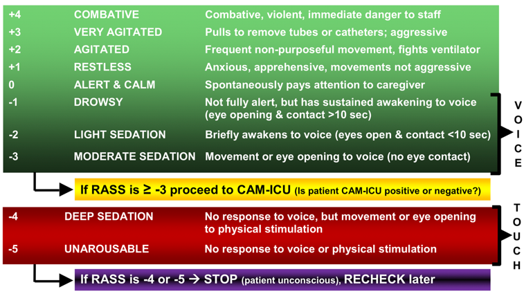
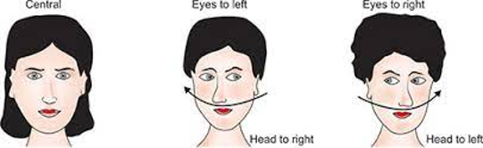
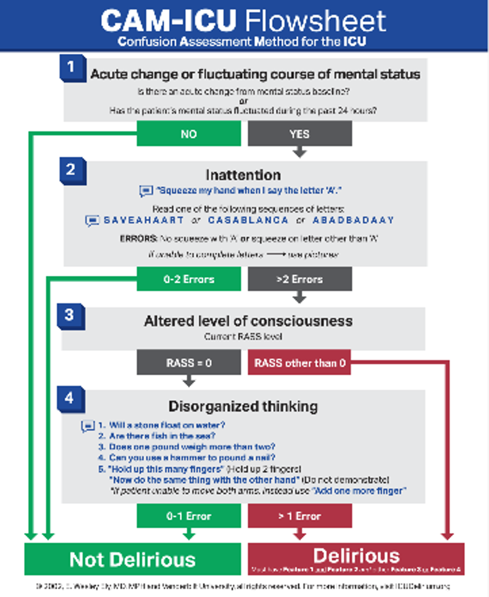

Home¶
Welcome to the online home of the Vanderbilt Internal Medicine Residency Handbook (VIMBook.org). The Handbook is a peer-reviewed, yearly-updated, publically-available resource, currently in its 6th Edition (2024-25).
A QR code to the online version can be found on the back cover of the handbook. An LLM-enhanced Chatbot version of the handbook is currently under development.


Introduction ↵
Acknowledgements¶
The Vanderbilt University Medical Center (VUMC) Internal Medicine Housestaff Handbook began with an Internal Medicine Resident Quality Improvement Project which was led by Michael J. Neuss, MD, PhD, under the guidance of Jennifer K. Green, MD, MPH in 2019.
We would like to thank the following individuals for their contributions to the 6th edition of the Housestaff Handbook:
- The many VUMC residents (past and present) who have meticulously authored each section of this handbook.
- The VUMC faculty who carefully reviewed each topic for its accuracy.
- Lauren Chan MD, and Jacqueline Visina MD, the 5th edition's co-editors-in-chief, whose guidance was instrumental in the transition between editions.
- Chase Webber, DO, who was a sounding board for our new ideas throughout the year as the Handbook’s faculty advisor.
- C. Beau Hilton, MD for his work in updating and improving the online version of this handbook.
- John McPherson, MD, Jane Freeman MD, Hilary Tindle MD PhD, Kristy Braden and Maria Kasel, for their unwavering support.
Editors, Authors, and Reviewers¶
Editors-in-Chief¶
Kristijan Bogdanovski, MD, Julie Giannini, MD, and Spencer Lessans, MD
Resident Editors¶
Anesthesia: Alex Brown, MD and Camile Adajar, MD
Cardiology: John Mitchell, MD, Emily Walsh, MD, and Nicholas Weinand, MD
Critical Care: Alexandra Flemington, MD
Endocrinology: Kinsley Ojukwu, MD (2023)
Gastroenterology: Katy Welp, MD
Geriatrics: Mallory Bryant, MD
Hematology/Oncology: Thomas Gracie, MD, Matthew Lu, MD, and Alexis Froehlich, MD
Hepatology: Ahmad Yanis, MD
Hospital Medicine: Christine Hamilton, MD
Infectious Diseases: Alexis Froehlich, MD
Nephrology: Emily Walsh, MD
Neurology: Meghan Nicholas, MD, Lauren Osborne, MD, and Eesha Oza, MD
Ophthalmology: Jonathan Barnett, MD (2023)
Outpatient Medicine: Lauren Waskowitz, MD
Palliative Care: Liana Mosley, MD
Physical Medicine & Rehabilitation: Jakob Dovgan, MD, Douglas Bryant, MD, William Galbraith, DO, and Nicholas Abramson, MD (2023)
Procedures: Rochelle Prokupets, MD
Psychiatry: Benjamin Johnson, MD
Pulmonary: Bailey DeCoursey, MD and Justin Smith, MD
Radiology: Austin Glenn, MD, Lane Polk, MD, Kyle Maughan, MD & Nicholas Schreiter, MD
Rheumatology: Tina Arkee, MD and Lale Ertuglu, MD
Toxicology: John Mitchell (2023)
Faculty Reviewers
Anesthesia: Brandon Pruett, MD
Cardiology: Lisa Mendes, MD and Jared O'Leary, MD
Critical Care: Todd Rice, MD
Endocrinology: Laura Heller, MD
Gastroenterology: Patrick Yachimski, MD
Geriatrics: Mariu Duggan, MD, MPH
Hematology/Oncology: Rajiv Agarwal, MD and Vivek Patel, MD
Hepatology: Manhal J. Izzy, MD
Hospital Medicine: Chase J. Webber, DO
Infectious Diseases: Milner Staub, MD, MPH and Sean Kelly, MD
Nephrology: JP Arroyo, MD, PhD, Edward Gould, MD, and Beatrice Concepcion, MD
Neurology: Matthew Meriweather, MD
Ophthalmology: John Bond, MD
Outpatient: Jennifer K. Green, MD, MPH
Palliative Care: Mohana Karlekar, MD
Physical Medicine & Rehabilitation: C. J. Plummer, MD
Procedures: Garren Montgomery, MD
Psychiatry: Kristopher Kast, MD and David Marcovitz, MD
Pulmonary: Meredith Pugh, MD
Radiology: Reza Imani, MD
Rheumatology: Kevin Byram, MD
Toxicology: Rebecca E. Bruccoleri, MD and Saralyn R. Williams, MD
Disclaimers¶
The handbook is not a substitute for clinical judgment and is intended as an educational guide. Content reflects current national guidelines, as well as practice at VUMC and the Nashville VA. The handbook is not intended to replace more comprehensive references or guides.
Images are used sparingly, but when used are created by the authors themselves, available by public domain, or reproduced under fair use.
Rationale¶
The aim of this handbook is to provide specific, systems-based guidance on practice at VUMC and the VA. We hope to provide readers with direct and actionable guidance, consolidating the combined wisdom of generations of residents and faculty experts.
The Handbook represents a coordinated effort to disseminate details of our practice in a standardized, peer-reviewed format. The guidance provided by the handbook makes legible evidence-based practice as well as the oral tradition of a resident guiding an intern, or an attending a resident. We hope that this handbook will inspire confidence and learning, whether the reader is an intern on July 1 or a senior resident who wishes to refresh their memory of a topic.
Web App Setup¶
This site is optimized for use on mobile devices. It is possible to set up a link from your device's home screen that gives it the look and feel of a web app.
- iOS users: Go to VIMBook.org . At the bottom of the screen, hit the "Share" icon (box with upward facing arrow). Hit "Add to Home Screen." Rename it to your liking. The gold Vanderbilt icon will appear on your home screen, and you can click this icon to be taken directly to the website.
- Android users: Go to VIMBook.org . Press Menu, then select "Bookmarks." Hold it down until "Add Shortcut to Home Screen" appears, and click it. This will place an icon on your home screen, and you can click this icon to be taken directly to the website.
Ended: Introduction
Anesthesia & pain management ↵
Anesthesia & Pain Management¶
Camille Adajar and Frances Alexandra Brown
Acute Pain¶
Multimodal pain regimen suggestions - Tylenol - Dose: 1,000mg PO Q8H (can reduce to 650 based on age or comorbidities) - Indications: Analgesic and antipyretic - Contraindications: Cirrhosis -- limit to 2000mg daily - Gabapentin - Dose: 300mg PO Q8H (reduce to 100mg, Q12H dosing, or hold based on renal function, age, or sedation level) - Indications: Neuropathic pain - Contraindications: decreased CrCl - Side effects: sedation, respiratory depression - Robaxin - Dose: 500mg PO Q8H - Indication: muscle relaxant - Contraindication: IV formulation has preservative that is nephrotoxic - NSAIDs (check for adequate renal function and GI contraindications) - Toradol 15-30mg IV Q6H x 5 days - Ibuprofen 600mg Q6H - Indications: analgesic, anti-inflammatory, antipyretic - Contraindications: CKD/AKI, ulcers, GI bleed
Other methods - Thoracic epidural catheter (TEC) - These are done and managed by the Acute Pain Service. With any issues or concerns, APS needs to be contacted. - Indications: pain relief in thoracic dermatome distributions (rib fractures, BOLTs, etc.) - Contraindications - Low platelets/INR > 1.5/coagulopathy - Hypotension - Positive blood cultures, fever, white count, etc. - TECs stay in 5-7 days, risk of infection increases beyond that point. - TECs run an infusion of Ropivacaine and Hydromorphone in the epidural space - Do NOT need to d/c anticoagulation to pull TEC - Pt can only be on 5000 units of Subq heparin - Pain service can pull TEC 4hrs after last SQH dose - They cannot be on the weight adjusted 7500 units - No Lovenox/Enoxaparin while TEC in place
Chronic Pain¶
Suboxone/Buprenorphine management¶
- Can restart home regimen if they have taken their suboxone in the last 48 hours
- Look at CSMD on EPIC to verify their home regimen
- If re-initiation is needed, consult addiction psych
- Important for patients taking suboxone to remain on the medication
- If pain is an issue, continue their medication and consult either chronic pain or acute pain service and addiction psych
Methadone management¶
- Patients need to be evaluated by addiction psychology service for methadone recommendations while inpatient (often requires QTc monitoring)
- Patients should be continued on home regimen
Consulting Pain Services¶
- If refractory to multimodal pain regimen above, consider consulting
APS for:
- Acute pain due to surgery in the last 7-10 days
- Acute pain due to new trauma
- APS also provides services for patients who are receiving regional anesthetic (nerve blocks, nerve catheters) techniques
Consulting Perioperative Consult Service¶
- Periop provides pain management and implements enhanced recovery after surgery (ERAS) for specific surgical patients on the ERAS pathway
Consulting Chronic Pain Service (CPS)¶
- Service for patients with chronic pain and cancer-related pain
- If a patient is having an acute flare of a chronic problem that is
not related to surgery or trauma, consult CPS
- Examples: IBD flare, chronic pancreatitis, sickle cell pain crisis
- Consultation available Monday through Friday 7am-3pm
- The Transitional Pain Service (TPS) is a division of CPS: evaluate chronic pain patients preoperatively in clinic or before hospital discharge for outpatient pain management recommendations after surgery
Ended: Anesthesia & pain management
Cardiology ↵
Acute Coronary Syndromes¶
Anna Berry
Background¶
- Completely or partially occluding thrombus on a disrupted atherothrombotic coronary plaque leading to myocardial ischemia/infarction
- STEMI: Elevated troponin & elevation in ST segment or new LBBB with
symptoms
- > 0.1 mV in at least 2 contiguous leads
- Exception, in V2-V3:
- > 0.2 mV in men older than 40 y/o
- > 0.25 in men younger than 40 y/o
- > 0.15 mV in women
- NSTEMI: Evidence of myocardial necrosis (elevated troponin) w/o ST segment elevation
- Unstable Angina: Angina without evidence of myocardial necrosis (normal troponin)
- Other causes of myocardial injury: coronary spasm, embolism, imbalance of oxygen demand and supply 2/2 fever, tachycardia, hypo-/hypertension
Presentation¶
- Classic Angina: dyspnea on exertion, substernal, pressure or vice-like quality, improved with rest. Note that response nitroglycerin is no longer in the guidelines.
- Anginal Equivalents: nausea, weakness, epigastric pain (esp. in age > 65 y/o, women, diabetics)
- Change in patient’s baseline angina, especially onset at rest
- Physical Exam: sinus tachycardia, diaphoresis
- If large infarct, can present with symptoms of acute heart failure
Evaluation¶
- EKG: Compare to prior EKG and assess for
- New ST elevations or ST depressions
- T wave inversions: not specific but more concerning if deep (> 0.3mV)
- Biphasic T waves and deep T wave inversions in leads V2 & V3 (Wellens' sign [LAD])
- Cardiac biomarkers: troponin I is most sensitive for myocardial injury
- ACC/AHA guidelines recommend both EKG and trop q2-6 hours
- Consider this if high suspicion for ACS despite normal initial markers
- If negative x2, OK to stop trending
- Other labs: lipid panel, TSH, A1C
Management¶
STEMI¶
- STAT page Cardiology on call via Synergy (whether in VA or Vanderbilt)
- ASAP: aspirin 325mg, heparin drip (high nomogram, with bolus)
- Hold P2Y12 receptor blocker until discussed with cards fellow
NSTEMI¶
- Medical management followed by left-heart catheterization within 48 hours
- General: bedrest, telemetry, repeat EKG with recurrent chest pain, NPO at midnight
- Place cath case request (see “pre-catheterization” management below)
Anti-thrombotic therapy¶
Antiplatelet agents
- ASA 325 mg loading dose then 81 mg daily after
- Do not give P2Y12 receptor blocker until discussed with cardiology fellow
- Clopidogrel: prodrug that is metabolized to active form (can have undermetabolizers), irreversible inhibition
- Ticagrelor: reversible inhibitor
- Prasugrel: prodrug but more rapidly metabolized than clopidogrel with less variation, irreversible inhibition, do not use w/ age > 75 or weight \< 60 kg
- Prasugrel and ticagrelor are superior to clopidogrel but have higher bleeding risk
- Cangrelor: IV, rarely used
Anti-coagulants
- Unfractionated heparin drip
- Type this in Epic and select “nursing managed” protocol for “ACS”
- VA: it can be found under the “Orders” tab along the left-hand column.
- Enoxaparin (LMWH) can be used but requires preserved renal function (CrCl > 30) and most interventionalists prefer heparin prior to LHC
Pre-Catheterization Care¶
- Ensure pt. is NPO at MN for planned cath
- Continue anticoagulation with heparin gtt
- Place cardiac catheterization request (must be in cardiology context). Can also call cath lab to ensure pt. is scheduled appropriately
Post-Catheterization Care Catheterization Documentation¶
- The most appropriate guidance for post-cath care is in the cardiac catheterization report
- VUMC: Epic Cardiac tab Cardiac Catheterization/Intervention Report
- VA: Note tab Post-Procedure note and Cardiac Catheterization note
- If there is a delay in filing the final report at VUMC: Review the Cardiac Catheterization Nursing Documentation which shows if stents were deployed
Post-Catheterization Heparin¶
- Medical management w/o intervention: stop heparin unless directed in report
- If indication for CABG (ex: Left main, proximal LAD), continue heparin gtt until surgery
- PCI placed: stop heparin and continue/start DAPT as directed by cardiology
- Other medical indication for anticoagulation (DVT/PE, atrial fibrillation): restart ~ six hours after catheterization
Cath Site Checks¶
- 6 - 8 hours post catheterization (typically can be signed out as 0000 cath check), only needed for femoral arterial access
- Look, listen, feel: evaluate for hematoma & pseudoaneurysm; call fellow if concerned
- Small amount of bruising and mild tenderness at the site is normal
- Listen above and below the site for a bruit; the area should be soft
- Hypotension after femoral access is concerning for RP bleed
- STAT CBC, CT A/P & call the cardiology fellow
- Femoral oozing: Cardiology fellow, will need to hold pressure
- Radial oozing: instruct nurse to re-inflate the TR band and restart the clock on deflation
Post ACS Care¶
- Echo prior to discharge
- DAPT: Aspirin 81 mg daily and P2Y12 agent
- Beta blocker in all patients within 24 hours
- Metoprolol, carvedilol & bisoprolol have proven mortality benefit with reduced EF
- High intensity statin (ex: rosuvastatin 40 or atorvastatin 80). See outpatient lipids section
- ACEi/ARB if anterior STEMI
- Lifestyle Modification: weight loss, smoking cessation, diabetes control
- See heart failure section for management of HFrEF
ACS Complications¶
- VT/VF, sinus bradycardia, third-degree heart block, new VSD, LV perforation, acute mitral regurgitation, pericarditis and cardiogenic shock; More common with STEMI CCU post-cath
Additional Information¶
- Initiate treatment if there is true concern for ACS and bleeding risk acceptable, medications can always be discontinued
- TIMI score: >2 correlates with ↑ mortality, indicating a need for aggressive treatment
- ACC Guideline Clinical App is a useful resource with summaries of guideline-based recs
Arrhythmias¶
Kunal Patel, Madeline Rukavina
Acute management of arrhythmias¶
- 12-lead EKG if possible and have defib pads on patient
- Is the patient unstable (hypotensive, signs/symptoms of hypoperfusion)?
- Is the information real?
- Review tele strips if stable: VUMC Web Resources -> VUH PIICiX Philips Web -> patient selection -> alarm review (vuhphilipsweb.app.vumc.org)
- Review past EKGs to determine if patient has had this rhythm before
- Ensure pt has good IV access
- Labs: BMP, Mg, TSH, and ± troponin, tox screen
Bradyarrhythmias¶
Kunal Patel
Background¶
- Broadly classified as sinus node dysfunction (pacing defect) or atrioventricular block (conduction defect)
- Clinical presentation varies widely based on underlying cause, timing, degree of block/dysfunction
- Unlikely to cause symptoms if HR >50
- Symptoms include syncope/presyncope, dyspnea, angina
Etiologies¶
- Infection/sepsis
- Ischemia
- Rheumatologic/Inflammatory
- Post-cardiac surgery
- Hypothyroidism
- Sleep apnea
- Infiltration (amyloid, hemochromatosis)
- High vagal tone (pain, nausea)
- Medications: Antihypertensives, antiarrhythmics, psychoactive meds, anesthetics, cannabis, muscle relaxants, etc.
Sinus node dysfunction
- Symptomatic sinus bradycardia, tachy-brady syndrome, chronotropic incompetence, sinus pause, SA exit block
- Asymptomatic sinus bradycardia (esp in young/healthy patient) is unlikely to be true bradyarrhythmia
AV Block
Evaluation¶
- TTE if structural disease suspected
- Ambulatory cardiac monitoring if frequently symptomatic
Management¶
- Avoid nodal blocking agents – Adenosine, Beta-blockers, CCBs, Digoxin
- Observation if asymptomatic
- Treat identified underlying causes
- If symptomatic or high-grade block (Mobitz II or complete heart block), EP consult for pacemaker evaluation
- If unstable:
- Atropine (0.5 mg every 3 to 5 minutes; maximum total dose: 3 mg)
- Do NOT use in heart transplant
- Call CCU Fellow
- Dopamine (5 to 20 mcg/kg/minute) OR Epi (2 to 10 mcg/min)
- Transvenous pacing (Pacer pads on the defib device are capable of pacing, but don’t forget to sedate!)
Tachyarrhythmias - Narrow complex¶
Kunal Patel
Background¶
- Three causes of tachyarrhythmias
- Re-entry: patient with structural heart disease (ex post-infarction scar)
- Abnormal Automaticity: electrolyte abnormalities or acute ischemia (Purkinje fibers)
- Triggered Activity: early and late after depolarizations. Ex: Hypokalemia, ischemia, infracts, excess calcium and drug toxicity
Tachyarrhythmia differential
Evaluation¶
- Unstable tachyarrhythmia
- Start with treatment, determine type later
- Synchronized cardioversion: place defibrillator pads, consider 0.5-2mg IV midazolam for sedation, prepare for synchronized cardioversion at 200J (can ↑ to 300-360 J)
Management¶
- Sinus tachycardia
- Almost always secondary
- Address underlying causes: fever/sepsis, hypo/hypervolemia, anxiety, anemia, PE, ACS, hypoxia, pain, urinary retention, withdrawal
- Atrial Fibrillation/Flutter – See Atrial fibrillation section
- AVNRT/Orthodromic AVRT
- Look for p buried in QRS, rate 150-250, AVRT will have delta waves when NSR
- Vagal maneuvers (1st line): Sit patient upright have them blow into tip of 10cc syringe for 10-15 seconds rapidly lay supine and raise legs
- Adenosine (2nd line): therapeutic (break AVRT/AVNRT) and diagnostic
(allows visualization of underlying rhythm)
- Do NOT give in heart transplant, severe COPD, pre-excitation causing wide complex tachycardia (WPW antidromic AVRT)
- Peripheral line at AC or above w/ arm elevated: 6mg x1, 6mg x1 (if not effective after 1-2 min), 12mg x1 (if refractory to 6mg)
- Central line: cut dose in half to 3mg x1, 3mg x1, 6mg x1
- Multifocal atrial tachycardia
- 3 or more p wave morphologies. Seen in cardiac and pulmonary disease
- Usually does not cause hemodynamic instability
- BBs and non-DHP CCBs can be effective, need to address underlying issue
| Drug | Dosing | Benefits | Side Effects |
|---|---|---|---|
| Metoprolol | 5mg IV q5m x3 PO metoprolol tartrate 12.5mg q6 hours ↑ every 6 hr to target |
Good 1st line agent Less BP effect than dilt |
Hypotension, Negative inotropy |
| Diltiazem | 10-20 mg IV over 2m q15m x2 drip = 5-15 mg/hr |
Good 1st line w/ normal EF with drip needed | Hypotension Avoid in HFrEF |
| Esmolol | 500 mcg/kg bolus drip = 50-200 mcg/kg/min |
Rapid onset/offset RBC metabolism |
Hypotension |
| Amiodarone | 150 IV over 10-30m, then 1 mg/m for 6h, then 0.5mg/m for 18h | Minimal BP effects Long lasting; Relatively fast onset (acute effect is mostly beta blockade) |
Pulmonary and thyroid toxicity Cardioversion |
| Digoxin | 500mcg IV x1, then 250mcg IV q6h x2-3 | Great for reduced EF, positive inotropy | Slow onset Depends on vagal tone – poor in hyper- adrenergic states |
| Procainamide | 20-50 mg/min loading, 1-4 mg/min maintenance | Use in pre-excitation syndromes (i.e. WPW), does not inhibit AV nodal conduction | Lupus-like syndrome Hypotension |
Tachyarrhythmias - Wide Complex¶
Madeline Rukavina
Definitions¶
Ventricular tachycardia (VT): a run of 3+ PVCs
- Sustained VT: VT for 30 seconds or shorter if it requires intervention
- Nonsustained VT (NSVT): VT for \< 30 seconds
- VT storm: 3+ separate episodes of sustained VT within 24 hrs.
VT Morphologies
- Monomorphic VT: similar QRS configuration from beat to beat
- Usually 2/2 scar-mediated VT from prior infarction
- Polymorphic VT: a continuously changing QRS configuration from beat
to beat
- Ischemia until proven otherwise
- Torsades de Pointes (TdP): a form of polymorphic VT with a continually varying QRS that appears to spiral around the baseline of the ECG in a sinusoidal pattern
- Ventricular fibrillation (VF): chaotic rhythm characterized by undulations that are irregular in timing and morphology, without discrete QRS complexes
Ventricular Tachycardia vs. SVT with aberrancy
- VT: The action potential originated in the ventricles (ex: VT)
- Supraventricular tachycardia with aberrancy: the action potential originates from a focus above the ventricles & conducts through the AV node with a delay or block resulting in a wide QRS (mimics VT)
- Ex: sinus tachycardia w/ bundle branch block (block may be rate dependent), AF w/ LBBB
Many ways to differentiate VT vs. SVT w/ aberrancy
- Consult cardiology for assistance
- Look for ECG features suggestive of VT
- Very broad complexes >160 ms
- RsR’ complex with a taller left rabbit ear In V½
- AV dissociation (P/QRS dissociation)
- Capture Beats: native QRS complexes making a cameo during the VT
- Fusion Beats: QRS which appears like a signal average of VT and native complex

- There are more advanced criteria to help distinguish. The aVR (Vereckie) criteria is one example that is fast and accurate
Management¶
Unstable
- Sedate with midazolam 1-2mg
- Cardioversion for monomorphic VT. Synchronized shock at 100-200J
- Defibrillation if VF/polyVT
Stable
- Medications (as below)
| Drug Name | Dosing | Mechanism | Side Effects |
|---|---|---|---|
| Amiodarone | 150mg IV over 10 min, then 1mg/min for 6 hours; repeat bolus if VT recurs | Class III -K+ channel blocker; has class Ia, II, & IV effects |
Bradycardia, hypotension (acutely) |
| Lidocaine | 1-1.5 mg/kg (usually 75-100 mg) at a rate of 25-50mg/min; lower doses of .5-.75mg/kg can be repeated every 5-10 min as needed | Class IB -fast Na+ channel blocker-> slows conduction |
Slurred speech, AMS, seizures, bradycardia |
| Procainamide | 20-50mg/min until arrhythmia terminates or max dose 17mg/kg is reached | Class IA -fast Na+ channel blocker -> slows conduction -K+ channel blocker-> prolongs repolarization |
Bradycardia, hypotension, torsades, drug-induced lupus Avoid in HF pts, prolonged QT |
-
Cardioversion If refractory to medical management
-
Treatment of underlying cause if identifiable
- Ischemia, electrolyte disturbances, heart failure, drugs
Premature Ventricular Complexes (PVCs)¶
Madeline Rukavina
Background¶
- Premature Ventricular Complex (PVC): early ventricular depolarization ± mechanical contraction
- PVC burden: % of beats of ventricular origin / total beats over a 24h period
- PVCs are common: Up to 80% of apparently healthy people have PVCs
- Normal number of PVCs in an adult is \<500 in 24h
Etiologies¶
- HTN with LVH, prior MI/scar, HF, myocarditis, ARVC, HCM, idiopathic VT, OSA, pHTN, COPD, thyroid disease, substance use (EtOH, nicotine, stimulants, caffeine)
Inpatient Evaluation & Management¶
- 12 lead EKG: conduction disease, long QT syndrome, Brugada syndrome, ARVC
- Labs: K, Mg, TSH, drug screen
- Evaluate for QT prolonging agents (risk of Torsades)
- Evaluate tele for PVC burden
- Inpt consult to EP for PVCs rarely warranted unless significant PVC burden (>5 PVC/min, consistently) in setting of reduced LVEF.
- For pts with >5 PVC/min or pts with symptoms, discharge with Ziopatch (VA) or mobile cardiac telemetry (VU) and obtain TTE if none recent.
Atrial Fibrillation & Flutter¶
Brittany Saldivar
Background¶
- AF: 12-lead EKG with absence of p-waves and irregularly irregular QRS complexes
- Flutter: sawtooth atrial F waves (300 BPM) with regular or regularly irregular QRS complexes
- Ventricular rate ratio of F waves: V waves ~150 (2:1), ~100 (3:1), or ~75 (4:1)
- 3 classifications
- Paroxysmal (terminates within 7 days)
- Persistent (persisting beyond 7 days)
- Permanent (normal rhythm cannot be restored)
- Rapid ventricular response (RVR) is HR > 100 (ie AF/Flutter w/ tachycardia)
- AF/RVR is far more often a consequence of hypotension than the cause of it
Evaluation¶
- Causes: Mnemonic “H PIRATES”
- Hypertension
- Pneumonia, Pericarditis, Post-op
- Ischemia (rare)
- Rheumatic Valve
- Atrial Myxoma or Accessory Pathway
- Thyrotoxicosis
- Ethanol or Excess Volume
- Sick sinus, Sepsis
Management¶
- Treatment goals
- Rate control, Goal HR \< 110 (RACE II)
- Rhythm control (if indicated)
- Stroke prevention
Rate control (inpatient)
- RVR ~ sinus tach of AF; Always work to address the underlying cause (infection, volume overload, etc). Rate control is rarely an emergency unless the patient is unstable
- If stable with RVR (SBP >90)
- IV if HR > 130 or symptomatic (metop 5 mg IV or dilt 15-20 mg IV), otherwise do PO
- AV nodal blocking agents
- B-blockers: Start with metop tartrate (titratable) consolidate to succinate. Avoid in decompensated or borderline HF
- Calcium channel blockers (diltiazem): avoid in HFrEF
- Peri stable (SBPs 80s-90 with preserved perfusion)
- Amiodarone: Consider if decompensated HF, accessory pathway, anti-coagulated. Caution that you may cardiovert pt (stroke risk)
- Unstable (SBPs \<80)
- Cardioversion
Rate control (outpatient)
- typically achieved with beta blocker therapy, metoprolol is most frequently used
Rhythm control (inpatient)
- New onset a-fib (first time diagnosis): most pts will be a candidate for trial of cardioversion
- If onset clearly within 48 hours, can proceed without TEE. Often TEE is done anyway (pt may have had intermittent asymp AF)
- If onset >48 hours or unclear, will need TEE to rule out LAA thrombus
- Pharmacologic options include class 1C: flecainide, propafenone
(avoid in structural heart disease) and class 3: Amiodarone,
dronedarone, sotalol, ibutilide, dofetilide (some require loading
inpt)
- Caution using antiarrhythmics in any pt you wouldn't electrically cardiovert without TEE
Rhythm control (outpatient)
- Consider EP consult for ablation in symptomatic paroxysmal or persistent AF refractory to anti-arrhythmic drugs, AF in HFrEF, or flutter
- Stroke Prevention (for AF and flutter)
- CHA2DS2-VASc risk score >2 in M or >3 in F should prompt long term AC in AF persisting >48 hours
- NOACs (apixaban, dabigatran, edoxaban, rivaroxaban) are preferred to warfarin except in moderate to severe MS or mechanical valve
- If cardioversion planned for new onset AF, start AC as soon as
possible
- Post-cardioversion, anticoagulate for at least 4 weeks due to atrial stunning and stroke risk
- If no contraindications or procedures, continue anticoagulation while inpatient
- Typically do not need to bridge AC for AF in the setting of procedures unless mechanical valve is present. Decide on a case by-case basis
- Left atrial appendage closure can be considered in those with increased risk of bleeding
Autonomics and Orthostatic Hypotension¶
Leonard Chiu
Background¶
- Orthostatic Hypotension: SBP ↓ > 20 mmHg, DBP ↓ > 10 mmHg), or HR Increase > 30 within 3 min of standing up or head-up tilt to 60% on a tilt table
- Etiologies: Neurogenic OH (nOH) vs non-neurogenic OH
- nOH associated with autonomic failure
- Blunted tachycardia during hypotension characteristic of autonomic failure
- nOH: If HR rise is \<15
- nOH also associated with periods of high BP (supine hypertension)
- Ex: Neurodegenerative disease, neuropathy (diabetes, amyloid, paraneoplastic, etc)
- Other causes: volume depletion (most common), medications (diuretics, alpha-1 blockers, BB, etc), pump failure (severe AS, arrhythmia)
Evaluation¶
- Orthostatic vitals signs (checking supine, sitting, and standing with 5-minute wait in each position)
- Volume status exam
- Labs: CBC, CMP, EKG, TSH, B12, , LFTs,
- Consider SPEP/UPEP, paraneoplastic panel, autonomic function testing depending on clinical context
- Autonomic Function Testing: Available at 4:15pm Tues, Wed, Thurs NPO 4 hours prior
- Hold oral pressors and antihypertensives 12 hours prior
Management¶
- Conservative:
- TED hose and abdominal binder for ambulation
- Drink 16oz of fluid 15 min prior to standing
- If they have supine HTN, keep HOB 30-45 degrees at all times
- Add 2.3-4.6g of salt per day to diet (if no contraindications)
- Avoid high temperatures (which cause peripheral vasodilation)
- Supine HTN therapies: transdermal nitroglycerin (preferred); minoxidil, hydralazine, or clonidine in select patients
Orthostatic hypotension pharmacologic therapies
| Drug | Dose | Mechanism | Side effects |
|---|---|---|---|
| Fludocortisone (Florinef) | 0.1mg QD ↑ by 0.1 mg Max: 0.3 mg QD |
Mineralocorticoid increase blood volume. Enhances sensitivity to circulating catecholamines | Edema HTN HypoK Do not use in CHF |
| Midodrine | 2.5mg TID ↑ by 2.5mg Up to 10mg TID |
Peripheral-selective α1 agonist → constricts both aa & vv | Supine HTN Pilomotor reactions Pruritus GI upset Avoid in uncontrolled HTN, urinary retention, heart disease |
| Droxidopa | 100mg ↑ by 100mg Up to 600mg TID |
NE precursor → carboxylated to NE. Can cross BBB. | Supine HTN, less than midodrine |
| Atomoxetine | 10mg or 18mg | SNRI | Do not use w/ glaucoma or MAOI |
Bedside Echocardiography¶
Jamie Pfaff
Finding an Ultrasound¶
- MICU: radiology room behind charge nurse's desk in middle hallway
- VA ICU: In front of resident workspace
- 8N: Behind nursing station before entering cleaning supply room
- 8S: In supply closet to left as you walk toward nursing station - (door code is 1-3-5)
- 6MCE: COVID restricted (ask nurses)
- CCU/5N only: supply room on left as entering CCU
- Round wing: 5th floor, ask nurses
TTE Standard Views¶
Parasternal long¶
- Probe position: Rotate probe 180 degrees with right edge of probe/probe marker pointing toward pt’s left shoulder
- Make sure probe is centered over mitral valve (In right spot if you can see MV and AV)
- E Point Septal Separation (EPSS)
- Distance separating the anterior MV leaflet from the septal wall as measure of LV systolic function (easy evaluation of systolic function)
- Place M mode spike at tip of mitral leaflet and hit M mode (perpendicular to septum)
- Identify E point (passive filling of LV) and determine distance
from interventricular septum (IVS)
- <7mm = Normal
- >10mm = HF
- Confounders that elevate EPSS: AR, MS
Parasternal short¶
- Probe position: Rotate probe 180 degrees with right edge of probe/probe marker pointing toward patient’s left shoulder
- Good position to assess EF by visualizing wall thickening
Apical four chamber¶
- Probe position: Slide down and look near patient’s left nipple (or in the intermammary fold after lifting up breast tissue if needed - at PMI if able to palpate)
- Good to assess EF by visualizing cardiac shortening
Subxiphoid¶
- Probe position: Push probe head into pt’s abdomen just below xiphoid and flatten probe to make nearly parallel to pt’s position, marker to pt’s left
- Troubleshooting: shift probe slightly left of midline (toward pt’s right) and angle toward heart/right to use liver as acoustic window or ask pt to take big breath (moves heart closer to probe)
- Best window to visualize pericardial effusion
IVC¶

- Probe position: subxiphoid area with probe marker facing toward pt’s head tilted slightly left of midline, trace IVC into RA to verify correct vessel (vs aorta)
- IVC size and collapsibility used as a surrogate for CVP and RAP
- <2.1 cm and >50% collapse: RAP ~3mmHg
- <2.1 cm and < 50% collapse or >2.1cm and >50% collapse: RAP ~8mmHg
- >2.1cm, <50% collapse: RAP ~ >15mmHg
Resources¶
- https://www.coreultrasound.com/basic-cardiac-function/
- http://pie.med.utoronto.ca/tte
- https://www.echocardiographer.org/TTE.html
- App: FATE CARD (Focus Assessed Transthoracic Echocardiography)
Cardiac Devices¶
Marcus Threadcraft
Types of Cardiac Implantable Electronic Devices (CIED)¶
- For Controlling Arrhythmias: Implantable Pulse Generators
- Pacemakers: Anti-bradycardia pacing
- ICDs: Anti-tachycardia pacing and defibrillation
- Biventricular Pacemakers: CRT for ventricular dyssynchrony (LBBB & Heart Failure)
- Loop Recorders: implantable devices for monitoring arrhythmias (most often Afib)
- LVADs: augment cardiac output for end-stage heart failure (not covered here)
Pacemakers¶
- Provide anti-bradycardia pacing by stimulating myocardium
- Peripheral permanent pacemakers (PPMs)
- SubQ generator, transvenous leads
- Single chamber RV lead
- Dual chamber RV and RA leads
- BiV: RV, RA, and LV (coronary sinus) leads
- Leadless pacemaker
- Implanted generator in RV
Indications
- Symptomatic Bradycardia
- Heart Block: 2nd Degree Type II w/ sx or 3rd Degree
- Sick Sinus Syndrome
- Carotid Sinus Syndrome
- After catheter ablation of AV node for AF
- CRT
Implantable Cardioverter/Defibrillators (ICDs)¶
- Pacing lead + defibrillation coil
- Detect and treat VT/VF v
- Anti-tachycardia pacing (ATP)- attempts to entrain and terminate VT
- Defibrillation If ATP unsuccessful
Indications
- Primary prevention
- HFrEF
- EF \<35% and NYHA II-III or EF \<30% and NYHA I
- Must be >90d from revasc, >40d from MI, and on GDMT
- Arrhythmogenic syndromes
- Arrhythmogenic RV cardiomyopathy, Brugada syndrome, HCM and cardiac sarcoid with specific risk factors
- HFrEF
- Secondary prevention
- Hx VF arrest or VT
- Inducible VT on EP study with history of syncope
Cardiac Resynchronization Therapy (CRT)¶
- BiV pacer that coordinates LV/RV contraction through synchronized activation of each ventricle following atrial contraction.
- -P: CRT pacing only
- -D: ICD function
Indications
- Class I: LBBB and QRS≥150 with EF\<35%, NYHA II- IV, on GDMT, NSR
- Class IIa: EF\<35%, NYHA II- IV, on GDMT, NSR AND
- LBBB & QRS 120-149, non-LBBB & QRS≥150, or EF\<35% and expected to require >40% ventricular pacing
Interpreting Pacemaker Codes¶
| 1st Letter | 2nd Letter | 3rd Letter | 4th Letter | |
|---|---|---|---|---|
| A: atrial, V: ventricular, D: dual, O: none, I: inhibition, R: rate-adaptive | Chamber Paced | Chamber Sensed | Response to Sensed Beat | Program Features |
Examples of Common Pacing Modes¶
- VVI: Single RV lead that delivers a beat if no beat sensed. Often used with chronic AF with bradycardia
- DDDR: Senses and paces both the atria and ventricle. If beat not sensed within a predefined interval, beat delivered. R indicates rate responsivity (changes rate based on changes in patient activity)
- Magnet: Paces at a fixed rate without respect to native electrical activity (AOO,VOO,DOO). Deactivates ICD shock. Often used in surgery or at end of life to avoid ICD shocks
Additional Configurations¶
- Epicardial Leads- pacemaker/defibrillator leads attached to outside
of the heart (requires OR) vs traditional transvenous lead
placement, which are inserted in the Cath Lab
- Epicardial Leads generally placed in smaller children or during cardiac surgery with expected need for pacing/defibrillation
- Abandoned leads
- Absolute contraindication to MRI (ungrounded, produces heat and thermal Injury In setting of magnetic field)
Placement Complications¶
- Acute: pocket hematoma, pneumothorax, myocardial perforation, cardiac tamponade, infection, lead displacement or disconnection
- Long-term: secondary device infection, lead fracture (lead lifetime 10-15 years), insulation failure

{kind=link}
{kind=link}
{kind=link}
{kind=link}
Chest Pain¶
Nicholas King
Chest Pain / Angina Framework¶
- Determining likelihood that chest pain has a cardiac etiology depends on symptoms and lies on a spectrum
- Cardiac > possible cardiac > noncardiac is more useful than typical vs atypical angina
{kind=link}
Diagnoses Not to Miss: “The Serious Six”¶
- Acute Coronary Syndrome
- Mediastinitis (e.g, esophageal perforation)
- Aortic Dissection/Aneurysm
- Cardiac Tamponade
- Pulmonary Embolus
- Pneumothorax
Other Differential Diagnoses¶
- Skin: Laceration, herpes zoster
- Subcutaneous: cellulitis, abscess
- Musculoskeletal: Costochondritis, fracture, myositis, sprain/strain
- Pleural space (no pain receptors in the lung): PNA, tumor, pleuritis
- Pericardium: Pericarditis
- Heart: Myocarditis, spontaneous coronary artery dissection (SCAD), coronary vasospasm, aortic stenosis, stress-induced cardiomyopathy (Takotsubo), decompensated heart failure
- Esophagus: GERD, esophagitis
- Trachea: Tracheitis, tracheal tear
Physical Exam¶
- Vitals: BP in both arms (do while interviewing - quick, easy, inexpensive)
- Hemodynamic profile (warm/dry, warm/wet, cold/dry, cold/wet)
- Palpate chest: evaluate costochondral junction, subcutaneous emphysema, examine skin
- Cardiac: murmurs, rub for pericarditis, JVD for heart failure or PE with RV strain
- Pulm: absent breath sounds for PTX, crackles for left heart failure, PNA
- Abdomen: abdominal pain mistaken or referred as chest pain
- Extremities: asymmetric leg swelling (>2 cm difference) for DVT/PE
Diagnostic Studies¶
- EKG: ACS (STEMI, new LBBB, ST depressions, T wave Inversions, Wellens' sign), pericarditis, pericardial effusion
- Labs: Troponin (ACS, PE, myocarditis), CBC, BNP, lactate
- CXR: PTX, PNA, dissection, esophageal rupture
- Bedside ultrasound: pericardial effusion, R heart strain for PE, wall motion abnormality for infarct/ischemia or stress-induced CM, valvular disease, lung sliding/PTX
- CTA: gold standard for PE. Dissection can be diagnosed w/ CTA, MRA, or TEE
Evaluation for Coronary Disease |
||||
|---|---|---|---|---|
| Test | Indications | Benefits | Risks | Considerations |
| EKG Stress | Low to Intermediate risk patients Do not stress active or suspected ACS Serves as screening with high NPV |
Functional status w/ Bruce treadmill protocol | Exercise tolerance limits use |
Cannot have LBBB, nondiagnostic if 85% target HR not achieved |
| Dobutamine Echo Stress | More sensitive than EKG | Contraindicated: arrhythmias, LVOT obstruction, HTN, AS | Can be useful to eval low grade low flow AS Hold BB |
|
| SPECT stress | More sensitive than echo, Assess viability |
Adenosine or Regadenason contraindicated in reactive airway disease | No caffeine or theophylline prior | |
| PET stress | Better PPV than Echo Assess viability |
Better for pts with larger abdominal girth (less diaphragmatic attenuation) | ||
| Cardiac MRI | Assesses viability | Can assess nonischemic vs ischemic cardiomyopathy; HR must be < 70, gold standard for structure and function | ||
| Coronary CT | Very high NPV for stenosis | Contrast media reactions CIN lower risk than cath |
Might have poor lumen visualization if heavy calcium burden HR < 70 |
|
| Coronary Angiogram | STEMI High risk NSTEMI: Refractory angina, new arrhythmia, cardiogenic shock (HF) Suspected true ACS Diagnostic and Therapeutic |
Direct visualization of lumen Therapeutic PCI |
CIN with contrast Cath site complications Rare: SCAD, cholesterol emboli |
Positive Screen (above) necessitates LHC Case request cath lab NPO MN prior Groin check if femoral access |
Heart Failure¶
Brittany Saldivar
Background¶
ACC/AHA Stages of HF
- Stage A: At risk but without structural heart disease or symptoms
- Stage B: + structural HD, - symptoms
- Stage C: + structural HD, + prior or current symptoms
- Stage D: refractory HF requiring specialized intervention
NY Heart Association (NYHA) Functional Classes of HF
- Class I: Normal physical activity is not limited
- Class II: Comfortable at rest; normal physical activity results in HF symptoms
- Class III: Comfortable at rest; less than normal activity leads to HF symptoms
- Class IV: Inability to perform any physical activity without symptoms
Etiologies¶
- HFrEF (Clinical diagnosis + LVEF \< 40%)
- Ischemic: Obstructive CAD, previous/current myocardial infarction
- Non-ischemic:
- Load: HTN, valvulopathy
- Arrhythmia: tachyarrhythmia, pacemaker induced
- Myocardium
- Toxins (EtOH, drugs, chemo, radiation),
- Inflammatory (infections, AI),
- Metabolic (thyroid, thiamine deficiency),
- Infiltrative (amyloid, sarcoid, hemochromatosis)
- Stress induced/takotsubo CM
- Genetic
- Idiopathic
- HFpEF: HTN, CAD, obesity, DM, infiltrative, hypertrophic cardiomyopathy
Causes of Heart Failure Exacerbations (FAILURES)
- Forgetting medications or taking drugs that can worsen HF (e.g. BB, CCB, NSAIDs, TZDs), chemo (anthracyclines, trastuzumab)
- Arrhythmia/Anemia: AF, VT, PVCs; Increased arrhythmia burden on device check?
- Ischemia/Infarction/Infection: myocarditis; Acute vascular dysfunction (e.g. endocarditis), especially mitral or aortic regurgitation.
- Lifestyle choices: Dietary indiscretions - high salt, EtOH, excessive fluid intake. Obesity.
- Upregulation (of CO): pregnancy and hyperthyroidism
- Renal failure: acute, progression of CKD, or insufficient dialysis (Increased preload)
- Embolus (pulmonary) or COPD (leads to increase right-sided afterload)
- Stenosis (worsening AS, RAS) leading to hypertensive crisis high left-sided afterload
Presentation¶
- Volume overload: shortness of breath, dyspnea on exertion, Orthopnea, PND
- Nausea/poor po intake (hepatic and gut congestion)
- Confusion (decreased CO)
- Exam: Edema (legs, sacrum), rales, S3, S4, murmur (AS, MR), elevated JVD, + hepatojugular reflex, ascites
Evaluation¶
- CBC, CMP, Magnesium, Lactate, TSH, iron studies
- Troponin, ECG
- BNP (Pro-BNP if on Entresto) – high negative predictive value for HF (false negative can occur in obese patients)
- CXR – differentiate other causes of dyspnea
- TTE
- Determine hemodynamic and volume profile
- Cold vs warm
- Dry vs wet
| Cardiac Index | Euvolemia | Hypervolemia | |
|---|---|---|---|
| Low | Warm Extremities Adequate UOP Normal PPP |
Warm and Dry Forrester Class I Tx: GDMT as tolerated |
Warm and Wet Forrester Class II Tx: Diuresis, Vasodilators |
| Normal | Cardiogenic Shock Cool Extremities Renal Failure Narrow PP |
Cold and Dry Forrester Class III Tx: Inotropes |
Cold and Wet Forrester Class IV Tx: Diuresis +Tailored therapy (+/- vasodilators, inotropes) |
Management¶
- Telemetry, Daily STANDING weights, 2 L fluid restriction, 2g sodium diet, strict I/Os
- Diuresis: Place on 2.5 x home dose of IV diuretic, dose BID-TID (DOSE Trial)
- Goal is to be net negative (generally 1-2 L per day but patient dependent)
- Check BMP BID and Mg QD, keep K>4 and Mg>2
- Low threshold for substantial increase (double) in loop vs transition to drip if not diuresing adequately
- Can also augment with sequential nephron blockade (thiazides, acetazolamide)
- Continuation/optimization of GDMT (below)
Guideline-Directed Medical Therapy for HFrEF¶
Brittany Saldivar
General Principles¶
- Starting patients on low dose of multiple agents preferred to max dose of single agent
- D/C summary should have discharge weight, diuretic regimen, and renal function
- Daily weights at home with rescue diuretic plan (pm dose for 3 lbs in 1 day, 5 lbs in 3 days
| Drug | Indication | Mechanism/ Benefits | Precautions |
|---|---|---|---|
| Beta Blockers | |||
Carvedilol Metoprolol succinate Bisoprolol |
HFrEF <40 % Stage C HF (NYHA class I – IV) |
Reduces catecholamine stimulation. Decreased HR, myocardial energy demand, less adverse remodeling. | Avoid if pt is decompensated (cold); “start low and go slow” Can continue during exacerbation if patient compensated |
| ARNIs | |||
| Sacubitril/ valsartan | HFrEF < 40% NYHA class II – IV Used in place of ACE/ARB |
Prevents vasoactive natriuretic peptide degradation involved in pathogenesis of HF (+ action of ARB) | Need a 36 hr wash-out period if transitioning from ACEi to ARNI Hypotension Risk of angioedema |
| ACEIs | |||
Lisinopril Enalapril Captopril Ramipril |
HFrEF <40 % Stage C HF (NYHA class I – IV) |
Blocks harmful effects of RAAS activation and attenuates adverse cardiac and vascular remodeling | Risk of angioedema Monitor renal function and K |
| ARBs | |||
Losartan Valsartan Candesartan |
HFrEF <40 % Stage C HF (NYHA class I – IV) |
See ACEIs | See ACEIs Preference for ARB > ACEi if plans to start ARNI |
| MRAs | |||
Eplerenone Spironolactone |
NYHA class II-IV and GFR >30 |
Diuretic and blood pressure lowering effects and blocks deleterious effects of aldosterone on the heart (including hypertrophy and fibrosis) | Hyperkalemia – avoid if CrCl <30 or K >5 |
| SGLT2i | |||
Dapagliflozin Empagliflozin |
HFrEF <40% with and without DM NYHA class II-IV In conjunction with background GDMT |
Osmotic diuresis and natriuresis, improve myocardial metabolism, inhibit sodium-hydrogen exchange in myocardium, reduce cardiac fibrosis | UTI/ GU infections Risk of ketoacidosis (both DKA and euglycemic) |
| Vasodilators | |||
Hydralazine Isosorbide Dinitrate |
Persistently symptomatic black patients despite ARNI/ BB/ MRA/ SGLT2i NYHA class III-IV |
Reduces cardiac afterload and preload and may also enhance nitric oxide bioavailability Reduction in mortality for African American patients |
Hypotension |
| Ivabradine | |||
| Ivabradine | HFrEF <35%, on maximally tolerated BB, sinus rhythm with HR > 70 NYHA class II or III |
If current inhibitor involved in SA node activity Decr HR associated with improved outcomes |
Need sinus rhythm Caution in sinus node disease and conduction defects |
| Iron Repletion (IV) | |||
Iron sucrose Ferric carboxymaltose Iron dextran |
Ferritin <100 µg/L or ferritin 100-299 µg/L AND transferrin saturation <20% | Decreases HF hospitalizations Improves exercise function and QOL |
Risk of anaphylaxis higher in iron dextran |
Device therapies (after optimization of medical GDMT)¶
- Cardiac resynchronization therapy (CRT)
- Class I indication: NYHA class II to IV, LVEF ≤35% with QRS ≥150 ms and left bundle branch block (LBBB)
- Class II (consider) If EF \< 35% and:
- QRSd > 150, without LBBB
- AF that requires ventricular pacing and AVN ablation
- Undergoing placement of device with anticipation of >40% ventricular pacing
- ICD
- Class I indication: NYHA class II – VI with LVEF \<35% (must have >1yr expected survival and 40+ days from MI)
- Mitra Clip
- Criteria: moderate to severe mitral regurgitation (3-4+), on maximally tolerated GDMT, an ejection fraction >20%, and a left ventricle end-systolic dimension of less than 7 cm
Approach to the ECG¶
Melis Sahinoz
Method = mastery, approach each EKG the same.
Rate¶
- Regular rhythms = “Rule of 300” = 300 ÷ (large boxes between QRS complexes)
- 1 box = 300 bpm, 2 boxes = 150 bpm, 3 boxes = 100 bpm, 4 boxes = 75 bpm, 5 boxes = 60 bpm, 6 boxes = 50 bpm
- Irregular rhythms or severe bradycardia = (total number of QRS complexes on ECG) x 6
Rhythm¶
- Determine regular vs irregular: calipers or march out QRS complexes on paper
- Criteria for Sinus rhythm: P before every QRS; Upright P in Lead I, II; Negative in aVr
Axis¶
- Normal: - 30o to + 90o
- Quick method: Leads I and II
- Normal Axis: Upright in I and II
- Left Axis Deviation: Upright in I, down in II
- Causes: LVH, LBBB, Left anterior fascicular block, prior inferior MI
- Right Axis Deviation: Down in I, up in II
- Causes: RVH, RBBB, Left posterior fascicular block, prior lateral MI, PE
Intervals¶
- PR Interval: normal 120 – 200 ms
- If < 120 ms, consider pre-excitation with accessory pathway (i.e. WPW)
- If > 200 ms, first degree AV block
- QRS Complex: 60 – 100 ms (normal)
- If 100-120 ms: Incomplete BBB or non-specific intraventricular conduction delay (IVCD)
- If > 120ms: complete BBB, ventricular tachycardia, hyperkalemia
- QT interval: Normal duration < 450ms in men and < 460ms in women
- QT is inversely proportional to HR (QT interval shortens at faster HRs)
- Quick estimate: normal QT is less than half the preceding RR interval
- QTc estimates the QT interval at a HR of 60 bpm (to allow for comparison across HRs)
- A couple formulas exist to calculate QTc:
- QTcB= most commonly used due to simplicity, most accurate HR of 60
- QTcF= more accurate when HR is outside the range of 60-100
- Clinically significant when generally QTc > 500 ms
- Causes of Prolonged QTc: hereditary, medication-induced (anti-emetics, ABX, psychiatric meds), hypokalemia, hypomagnesemia, hypocalcemia, ischemia
Morphology¶
- P wave: P waves in limb leads should be ≤2.5 small box high and ≤2.5
small box wide
- Right Atrial Enlargement: Peaked P Wave in Lead II that measures >2.5 mm
- Left Atrial Enlargement
- Lead II: Bifid P Wave (two humps) with total duration > 110 ms
- Lead V1: Biphasic P wave, terminal deflection > 1mm wide and deep
- If ≥ 3 different P wave morphologies in same lead: wandering atrial pacemaker (HR < 100) or multifocal atrial tachycardia (HR > 100)
- QRS complex
- Voltage
- Low voltage: QRS amplitude < 5mm in limb leads or < 10mm in
precordial
- Causes: pericardial effusion, infiltrative cardiomyopathy, obesity
- Right Ventricular Hypertrophy: Tall R Waves in V1 (> 7mm) and right axis deviation
- Left Ventricular Hypertrophy: multiple criteria exist
- Sokolow-Lyon criteria is a common example: S in V1 + R in V5 or V6 >35mm, R in aVL ≥ 1.1 mV
- Low voltage: QRS amplitude < 5mm in limb leads or < 10mm in
precordial
- Voltage
- Conduction delays
- RBBB: Wide QRS and RSR’ in V1 or V2; deep broad S In lateral leads
- LBBB: Wide QRS, large S in V1, broad monophasic R wave in lateral leads (I, aVL, V6)
- R wave progression
- R wave normally gets progressively larger from V1 to V6
- If the transition does not occur by V4, this is called "poor R wave progression". This is seen in chronic lung disease, LVH, left anterior fascicular block, and anterior MI.
- Q-wave: Small Q waves are normal in most leads
- Never normal in V1-V3
- Pathologic Q waves: > 1 box wide and 2 boxes deep or > 25% height of R wave
- ST Segment
- ST Elevation: STEMI, LBBB (ST elevation in leads with deep S waves), LVH, ventricular paced rhythm, pericarditis (associated with PR depression), coronary vasospasm, Brugada syndrome
- ST Depression: ischemia, reciprocal change in STEMI, posterior myocardial infarction (V1-V3), digoxin, hypokalemia
- See ACS section for STEMI criteria, Wellens Syndrome
- T wave
- Normal T waves are upright in all leads except aVR and V1
- Inverted T Waves
- Acute ischemia (if present in contiguous leads), LBBB (in lateral leads), RBBB (V1-V3), LVH (‘strain’ pattern similar to LBBB), RVH (RV ‘strain’ in V1-V3 or inferior leads), PE (right heart strain or part of S1,Q3,T3), intracranial pathology
- Peaked T Waves
- Hyperkalemia vs ‘hyperacute’ T waves that precede ST elevation and Q waves in STEMI
Inpatient Hypertension¶
Lee Richardson
Background¶
- Hypertensive urgency: SBP > 180mmHg/DBP > 120mmHg
- Hypertensive emergency: SBP > 180mmHg/DBP > 120mmHg + end organ damage
Evaluation¶
- Are there signs/symptoms of end organ damage?
- Neurologic symptoms: agitation, delirium, stupor, seizures, visual disturbances
- Focal neurologic deficits
- Chest pain
- Back pain (consider aortic dissection)
- Dyspnea (consider pulmonary edema)
- BMP, LFTs, Troponin, BNP: Lab findings suggestive of end-organ damage
Management¶
- Goal is to lower BP back to normal over 24-48 hours
- Initial lowering should be 10-20% in minutes if HTN emergency; goal should be 10-20% in 2-4 hours if HTN urgency
- Typically aim for initial goal BP near 160/110
- Exceptions to gradual lowering include:
- Acute stroke: call code stroke, lower ONLY if BP > 185/110 in pts under consideration for reperfusion therapy; or BP > 220/120 in pts not candidates for reperfusion therapy
- Aortic dissection: Goal = rapidly lower BP in minutes to target of 100-120 systolic to avoid aortic shearing forces
- Pharmacologic therapy
- If pt was previously on anti-HTN meds, ensure their home medicines have been restarted at appropriate doses, formulation (long acting vs. short), and dosing intervals
- If pt has a rapid acting anti-HTN med, can consider giving a dose early or an “extra dose” and then up titrating their overall daily dose
- Rescue therapies
- Captopril PO (12.5mg or 25mg dosed Q8H; conversion ratio of captopril:lisinopril = 5:1)
- Hydralazine PO (10-20mg initial dosing Q6H)
- Isosorbide dinitrate PO (5-20mg TID)
- Nifedipine XL PO (dose at 30mg initially, max 90 mg BID; NOT sublingual)
- Labetalol IV (10-40mg initially; dosed up to every 20-30mins)
- Hydralazine IV (10-20mg initially; dosed up to every 30 mins).
- Nitropaste 1” (can add/wipe away for titration; dose Q6H until oral meds can be started for better long-acting control)
- Dialysis if missed session
Additional Information¶
-
Refractory HTN: try additional agents listed above vs. escalation of care for drip (nicardipine, nitroglycerin, nitroprusside, esmolol).
-
Most drips that can be done for this indication are done in stepdown and usually require no-titration of the infusion and occasionally the MD to be bedside to initiate the infusion.
-
This includes diltiazem, labetalol, nitroglycerin, and verapamil drips. Nicardipine, esmolol, and nitroprusside drips are not allowed on step down.
Pulmonary Embolism¶
Anna Berry
Background¶
A thrombus originating in a deep vein (LE > UE) embolizing to the pulmonary arterial circulation.
- Risk Factors = Virchow’s Triad
- Stasis: immobilization, hospitalization, spinal cord injury, or long travel
- Hypercoagulable state: cancer, prothrombotic genetic conditions such as Factor V Leiden, OCPs, antiphospholipid syndrome, nephrotic syndrome, pregnancy, infection, etc.
- Endothelial Injury: surgery, trauma
Most originate from a DVT in the iliac, femoral, and popliteal veins
Presentation¶
- Dyspnea and tachypnea
- Respiratory alkalosis on blood gas from hyperventilation
- Hypoxemia
- Sinus Tachycardia or atrial arrhythmias
- Hemoptysis
- Lower extremity pain, swelling, and redness – occurs in 50% of pts with DVT
- RV Failure (large PE) – elevated JVP, hypotension, syncope, R parasternal heave, accentuated P2, hepatomegaly
Evaluation¶
- If hemodynamically unstable and PE suspected, provide hemodynamic support (ie. O2, pressors, etc.) and perform emergent bedside TTE
-
If no RV strain evident on TTE, low likelihood of hemodynamically significant PE. Consider other causes of shock.
-
Hemodynamically stable
- EKG
- Most commonly sinus tachycardia
- Less commonly and indicative of large PE: RAD, RVH, RBBB, RA enlargement, S1Q3T3 (deep S in lead I, deep Q and inverted T in lead III), TWI in V1-V3
- CXR: Typically normal. May see linear atelectasis, pleural effusion, PA cutoff sign
- Labs: ABG, troponin, BNP
- May consider lower extremity dopplers
- Imaging vs d-dimer based on pre-test probability:
- Low pre-test probability (use Wells Criteria) d-dimer
- For moderate to high pre-test probability CTA Chest PE protocol
- If high pre-test probability or moderate pre-test probability with >4 hour delay in work-up, start empiric anticoagulation if bleeding risk is acceptable while work-up is ongoing
- TTE
- EKG
Management¶
| PE Class: | Low risk | Submassive | Massive |
|---|---|---|---|
| Definition | Hemodynamically stable No evidence of right heart strain or myocardial necrosis on labs or TTE |
Hemodynamically stable Evidence of right heart strain or myocardial necrosis: RV strain on TTE (ex: D-sign), BNP >150, trop >0.05 |
Hemodynamically unstable (ex: SBP<90) Evidence of RV strain |
| Management | Start anticoagulation LWH or heparin gtt (if renal impairment) Can also use NOAC. Rivaroxaban & apixaban can be used as initial management. Edoxaban & dabigatran can be used after 5-10 days of parenteral therapy |
Provide hemodynamic support, monitor for decompensation Start anticoagulation with unfractionated heparin gtt STAT consult cardiology for consideration of catheter directed thrombolysis (EKOS) or embolectomy |
Provide hemodynamic support. Start anticoagulation with unfractionated heparin gtt Page CCU fellow STAT. Consider systemic tPA (this is a fellow/attending level decision). Discuss with cardiology catheter directed thrombolysis (EKOS) or embolectomy |
tPA Considerations¶
- Dose is 100mg tPA over 2hrs
- Most effective within 24 hours but effective up to 14d
- Contraindications:
- Absolute:
- CNS Pathology: hemorrhagic or ischemic CVA within 3 mo, AVM, CNS neoplasm, recent surgery
- Trauma: Recent head trauma w/ fx or injury
- Relative
- Surgery: surgery w/in 3 wks
- Heme: active bleeding, bleeding diathesis, plt \< 100, oral AC
- Age: >75 yo, dementia
- Absolute:
Long-term management¶
- Anticoagulation: see “Venous Thromboembolism” in Hematology/Oncology
Right Heart Catheterization¶
Pakinam Mekki
Background¶
- Pulmonary artery catheter (PAC): Multilumen catheter that sits in the right heart to provide invasive measurement of hemodynamic parameters
- Indications for PAC placement
- Diagnose undifferentiated shock
- Severe cardiogenic shock
- Diagnose pulmonary hypertension
- Diagnose left -> right shunting
- Diagnose valvular and pericardial disease
- Titrating medications, specifically inotropes, pulmonary vasodilators, diuresis
- Contraindications to PAC placement
- RA/RV mass or thrombi
- Tricuspid or pulmonic valve endocarditis
- Mechanical tricuspid or pulmonic valves
- Presence of RV assist device
- Complications of PAC placement
- Arrythmias: VT, RBBB, 3rd degree AV block if preexisting LBBB
- Infection (endocarditis of the pulmonary valve)
- Bleeding
- Pulmonary embolism and pulmonary Infarct
- Pneumothorax
- Air embolism
- Pulmonary artery perforation / rupture
- Endocardial/valvular damage
PAC Pressure Tracings¶
{kind=link}
| Definition | Normal "Rule of 5s" |
|
|
|---|---|---|---|
Central Venous Pressure (CVP) |
Pressure in superior vena cava, often an indicator of volume status | 0 - 5 mmHg | Elevated CVP is indicative of cardiac dysfunction and/or fluid
retention Low CVP is indicative of volume depletion or decreased venous tone |
| Right Atrial Pressure (RAP) | Surrogate for preload, should be same as CVP | 0 - 5 mmHg | Elevated with disruption in forward cardiac flow or increase in intravascular volume |
| Right Ventricle Pressure ( | Right ventricular systolic and diastolic pressures; RVSP can be surrogate for PASP | 25/5 mmHg | Elevated with diseases that elevate PA pressure and pulmonic valve disorders. Severe RVP elevations are generally chronic while acute conditions typically have RVSP <40-50. |
| Pulmonary Artery Pressure (PAP) | Measured as systolic, diastolic, and mean pressures. Diagnoses pHTN. | 25/10 mmHg Mean: 10 - 19 mmHg |
Elevated In acute conditions (PE, hypoxemia induced pulmonary vasoconstriction) or pHTN (mean PAP > 20 mm Hg) |
| Pulmonary Artery Wedge Pressure (PAWP or wedge) | Pressure measured by wedging the PAC into a small pulmonary arterial branch; surrogate for left atrial pressures and LVEDP | 10 mm Hg | Increased with elevated LVEDP: systolic or diastolic heart failure, mitral and aortic valve disorders, hypervolemia, R to L shunts, tamponade, constrictive/restrictive cardiomyopathy |
| Thermodilution Cardiac Output & Index | Amount of blood pumped in one min. CI is the cardiac output divided by body surface area (to standardize for body size) | CO: 3.4-15 L/min CI: 2.8-4.2 L/min/m^2 |
Low CI: systolic/diastolic heart failure, severe valvular disorder (MR, AS), RV failure, pHTN, cardiogenic shock. Elevated CI (high-output state): sepsis, anemia, thyrotoxicosis, A-V shunt |
Mixed central venous oxyhemoglobin saturation (SvO2) |
% of oxygen bound to Hgb in blood returning to the right side of the heart, reflects total body O2 extraction | 65-70% | High SvO2 (> 65%) = decreased O2 demand or “high flow” states seen in distributive shock (sepsis) Low SvO2 (< 50%) = decreased O2 delivery seen in cardiogenic or hypovolemic shock. In low SvO2 states, there is less O2 supply to same demand) |
Calculating Hemodynamic Parameters from PAC Pressures¶
| Definition | Normal Values | Interpretation | |
|---|---|---|---|
| Fick CO and CI | Calculated CO based on Oxygen consumption (VO2), Hbg, and O2 sats of arterial and venous blood | 4-7 L/min 2.5-4 L/min/m2 |
See "Cardiac Index" above. |
| Systemic Vascular Resistance (SVR) | Measurement of afterload; helpful in delineating the etiology of shock as well as guiding afterload-reduction therapy in HFrEF | 700-1200 dynes*s*cm-5 | Elevated SVR is seen in hypovolemic, cardiogenic, and obstructive shock Decreased SVR is seen in distributive shock (sepsis, anaphylaxis, neurogenic) |
| Transpulmonary gradient (TPG) | Differentiates between pre- and post-capillary pulmonary hypertension. | < 12 mmHg | A TPG value greater than 12 mmHg indicates that a component of the pHTN is secondary to pulmonary vascular disease |
| Pulmonary Vascular Resistance (PVR) | Gold standard in the estimation of the severity of pre-capillary
pHTN Reflects the pressure drop across the pulmonary system only and is independent of the LA, mitral valve and the LV |
< 3 Wood Units 30-90 dynes*sec*cm5 |
Elevated PVR (>3 Wood units) suggests pre-capillary pHTN Normal PVR seen in pulmonary venous hypertension (diastolic dysfunction) |
| Pulmonary artery pulsatility index (PAPi) | Pulmonary pulse pressure relative to preload (RAP), Indicator of RV function | > 0.9 | PAPi < 0.9 predicts in-hospital mortality and/or need for RVAD in acute MI. Can be decreased in pure RV failure or biventricular failure |
| Cardiac Power | Cardiac output relative to afterload, a measure of LV contractile reserve | Normal > 1 | CP< 0.6 strongly suggestive of LV failure Found to be a strong independent hemodynamic correlate in pts with cardiogenic shock. Predictor of mortality in CCU |
Cardiogenic Shock¶
Ashley Cozart
Definition¶
Impairment of cardiac output due to primary cardiac disorder that results in end-organ hypoperfusion and hypoxia
Etiology¶
- Cardiomyopathic: myocardial infarction with LV dysfunction, exacerbation of heart failure, myocarditis, myocardial contusion, drug-induced
- Arrhythmic: atrial tachycardias (atrial fibrillation/flutter, AVRT, AVNRT), ventricular tachycardia and fibrillation, complete heart block, second degree heart block
- Mechanical: valvular insufficiency, valvular rupture, critical valvular stenosis, ventricular septal wall defect, ruptures ventricular wall aneurysm, atrial myxoma
Presentation¶
- Cold (decreased perfusion) due to reduced cardiac output (can be wet- increased PCWP OR dry normal PCWP)
- Symptoms of volume overload + end-organ hypoperfusion (altered mental status, nausea, abdominal pain, decreased urine output)
- Hypotension; narrow pulse pressure
Evaluation¶
- EKG
- Labs: CBC, CMP, BNP, troponin, lactate
- Evidence of end organ damage: lactic acidosis, acute kidney injury, acute liver injury
- Echocardiogram: assess EF and valves
- LHC If ischemia (see ACS)
- Hemodynamic monitoring via Swan-Ganz or PA catheter:
- No benefit for general shock but does improve in-hospital mortality for those with cardiogenic shock
- PA catheter hemodynamic profile:
- Cardiac index \< 2.2, cardiac power \<0.6, SVR 800-1600, SVO2 \<60%
- LV-dominant: RA (CVP) \<15, PCWP >18, PAPi >1.5 (pulmonary artery pulsatility index)
- RV-dominant: RA >15, PCWP \<18, PAPi >1.5
- Bi-V-dominant: RA >15, PCWP >18, PAPi >1.5
- PAPi \< 1 indicates that patient will likely need RV support
- CP \< 0.5 strongest independent hemodynamic correlate of mortality in CS
- See right heart cath section for interpreting PA catheter profiles
Management (medical & mechanical circulatory support)¶
Medical management¶
Focus on optimizing preload, afterload, and contractility.
- Preload: IV diuresis
- Afterload: IV – nitroglycerine, nitroprusside; PO – hydralazine, isosorbide dinitrate; vasoconstricting pressors (phenylephrine, vasopressin) if needing BP support
- Contractility - Inodilators (increase contractility, decrease afterload – milrinone, dobutamine) or inoconstrictors (increase contractility and afterload – epinephrine, norepinephrine)
Mechanical circulatory support indications¶
- Shock refractory to >1 pressor
- Shock 2/2 MI (physiology: unloads LV, increases systemic perfusion, increases myocardial perfusion, and provides hemodynamic support during PCI)
Types of mechanical circulatory support (MCS)
| Intra-aortic Balloon Pump | V-A ECMO | Tandem Heart | Impella | |
|---|---|---|---|---|
| Dynamics | Inflates during diastole, deflates during systole | Blood from femoral vein is oxygenated and pumped to femoral artery | LV: blood aspirated from LA to femoral artery RV: blood aspirate from RA to PA |
Impella 2.5, 5.0 & CP: Blood aspirated from LV to aortic root Impella RP: Blood aspirated from IVC and delivered to PA |
| Flow | 1 LMP | 4.5 LPM | 4-5 LPM | 2.5: 2.5 L/min CP: 3.33 L/min 5.0: 5 L/min RP: 4 L/min |
| Support | LV | BiV | LV, RV, or BiV | LV or RV (RP) |
| Effects | Reduces afterload Increases stroke volume (SV) Increases coronary perfusion Reduces LV preload and PCWP |
Increases afterload Reduces SV Reduces LV preload and PCWP Improves tissue perfusion |
Increases afterload Reduces SV Reduces LV preload and PCWP Improves tissue perfusion |
Reduces SV Reduces preload and PCWP Improves tissue perfusion |
| Complications | Thrombocytopenia Thrombosis Arterial obstruction Aortic rupture or dissection Air embolism |
Circuit thrombosis LV dilation Hypothermia Gas embolism |
Tamponade d/t perforation Thrombosis Embolism (gas or thrombus) Arterial Shunt |
Pump migration Hemolysis Aortic regurg LV perf VT/VF |
Daily management of MCS devices:
- Ensure optimal placement of device with daily CXR
- Anticoagulation (based on device)
- Hematoma monitoring at device site
- Check distal pulses to monitor for limb ischemia
Pearls for MCS
- MCS devices are contraindicated in following situations: aortic regurgitation or metallic aortic valve, aortic aneurysm or dissection, severe aortic or peripheral artery disease, left ventricular or left atrial thrombi, bleeding diathesis, uncontrolled sepsis
- ECMO is placed by the cardiac surgery team, once a patient is cannulated they will move onto the cardiac surgery team
- Impella, tandem heart, and IABPs are placed in the cath lab
- MCS is a bridge to recovery/definitive therapy, durable cardiac support (VAD), or transplant
Syncope¶
Sarah Myers
Background¶
- Definition: abrupt, transient loss of consciousness with rapid & spontaneous recovery
- Presyncope – symptoms occurring before syncope including lightheadedness, tunnel vision/other visual disturbances
Classification¶
- Cardiac syncope
- Tachyarrhythmias: VT, SVT
- Bradyarrhythmias: sinus node dysfunction, AV blocks (high grade)
- Structural: Aortic Stenosis, HCM, cardiac tamponade, congenital anomalies, masses/tumors
- Vascular: Pulmonary embolism, aortic dissection, severe pHTN
- Noncardiac syncope
- Reflex mediated
- Vasovagal; most common form of reflex mediated syncope
- Can occur sitting/standing or with trigger (stress, pain, medical settings)
- Classically has prodrome of nausea, diaphoresis, tunnel vision followed by hypotension and/or bradycardia
- Situational (micturition/defecation/coughing)
- Carotid sinus sensitivity syndrome
- Vasovagal; most common form of reflex mediated syncope
- Orthostatic
- Medications (diuretics, nitrates/CCB/alpha blockers, TCAs)
- Volume depletion (hemorrhage, dehydration)
- Autonomic dysfunction
Differential diagnosis¶
- Seizure, stroke, metabolic derangements, Intoxication/withdrawal, hypoglycemia, head trauma
- With rare exceptions, these do not result In complete LOC with spontaneous recovery
Evaluation¶
- History and physical are essential for evaluation of a syncopal event
- Characteristics associated with cardiac syncope
- Male, >60, known structural/ischemic heart disease, brief/no prodrome, syncope while supine/at rest or during exercise, family hx of SCD/premature death, abnormal exam
- Characteristics associated with noncardiac syncope
- Younger age, syncope while standing or with positional changes, prodrome (nausea, vomiting, warmth), specific triggers, previous episodes that have been similar
Workup¶
- EKG on all patients with syncope, monitor those who are admitted on telemetry
- CBC, CMP, troponin, BNP (If cardiac cause suspected), POC glucose, UDS, orthostatic VS
- EEG and neuroimaging if concern for seizure activity or focal neuro deficit
- TTE and consider stress testing particularly in exertional syncope
Management¶
- Cardiac: managed as indicated based on pathology
-
If arrhythmia is suspected but not captured on admission, consider discharge with event monitor
-
Noncardiac
-
Reflex
- Vasovagal- consider tilt table testing If recurrent or diagnosis not clear
- Situational- mainly avoiding triggers
- Carotid sinus syndrome- may require PPM
-
Orthostatic
- Medication related
- Appropriate to hold potentially offending medications (diuretics, vasodilators) during evaluation
- Monitor for worsening supine hypertension, arrhythmias, or heart failure when holding
- Volume depletion; resuscitate as appropriate
- Autonomic dysfunction: see autonomics section
- Medication related
-
Driving: TN law does not require any MD to inform the state of TLOC
- Should still recommend patients not drive while work-up ongoing. Document all conversations about driving with patients
Valvular Heart Disease¶
Jonathan Napper, Marcus Threadcraft
Aortic stenosis¶
Jonathan Napper
Etiology¶
- Degenerative calcification of the aortic cusps
- Congenital bicuspid aortic valve
- Chronic deterioration (calcific)
- Prior rheumatic fever/inflammation
Presentation¶
- Angina, syncope, exertional dyspnea, heart failure (HF carries worse prognosis)
- Typically aged 70 – 80 y/o; if bicuspid aortic valve expect 10-20 yrs earlier
- Physical exam: Systolic crescendo-decrescendo murmur that radiates towards the carotids
- Late peaking murmur, faint or absent S2, or delayed carotid upstroke suggest severe AS
Evaluation¶
- TTE with doppler is test of choice
| Severity | Valve Area (cm2) | Mean Gradient (mmHg) | Velocity (m/s) |
Indexed Valve Area (cm2/m2) |
|---|---|---|---|---|
| Mild | >1.5 | <20 | 2.0-2.9 | >0.85 |
| Moderate | 1.0-1.5 | 20-39 | 3.0-3.9 | 0.60-0.85 |
| Severe | <1.0 | >40 | >4.0 | <0.6 |
| Critical | <0.5 | -- | -- | -- |
AS stages
- A: at risk of AS (those with bicuspid anatomy or calcification
- B: Asymptomatic non-severe AS
- C: asymptomatic AS
- C1: normal EF
- C2: abnormal EF
- This stage might benefit from exercise or stress testing to elicit symptoms
-
D: Symptomatic AS
-
Some with symptomatic AS might not have enough LV reserve to produce high velocities and gradients (ex EF of 10% w/ critical valve area) = low flow/low gradient AS; consider dobutamine to unmask AS
Management¶
- No proven effective medical therapy
- Definitive treatment is valve replacement for:
- Stage D
- Stage C with inducible symptoms on stress testing, low EF, or undergoing other cardiac procedure
- Rapid progression (increase in velocity >0.3m/sec per year)
- Consult cardiac surgery for determination of SAVR vs TAVR
- In general, high risk surgical patients benefit most from TAVR
- At VUMC: If determined to be intermediate to high operative risk by Cardiac Surgery, they will often recommend contacting the TAVR team for evaluation
- Avoid rapid hemodynamic shifts and aggressive changes in preload or afterload
- Aim for normotension
- Avoid preferential vasodilators such as hydralazine or nitroglycerin
- Significant vasodilation may ↓ coronary filling pressures -> myocardial ischemia
Monitoring¶
- Severe AS: TTE q 6-12 months
- Moderate AS: TTE q 1-2 years
- Mild AS: TTE q 3-5 years
Post AVR anticoagulation¶
- All patients will get 3-6 months of AC s/p AVR
- Continued duration based on type of AVR
- Bioprosthetic (TAVR and some SAVRs): antiplatelets alone after Initial AC
- Mechanical: lifelong AC with warfarin only
Aortic Regurgitation¶
Jonathan Napper
Etiology¶
- Primary valve disease (rheumatic disease, bicuspid aortic valve, infective endocarditis, syphilis)
- Primary aortic root disease (medial degeneration, aortic dissection, Marfan’s syndrome, bicuspid aortic valve, syphilis, non-syndromic familial)
Presentation¶
- Acute AR: LV cannot respond to increased volume to maintain stroke volume pulmonary edema and cardiogenic shock
- Chronic AR: indolent presentation, often patient will develop symptoms of heart failure including DoE, orthopnea, PND
- Physical exam: “Water-hammer” pulses, wide pulse pressure, laterally displaced PMI, high pitched “blowing” decrescendo murmur best heard at third intercostal space at left sternal border, S3
Management¶
- Acute severe AR
- Prompt surgical repair
- Vasodilators such as nitroprusside and diuretics can be used to stabilize patient
-
Chronic severe AR
- Medical management
- Early symptoms of exercise intolerance can be treated with diuretics
- Systolic BP should also be controlled with goal SBP \< 140 in chronic AR
-
Repeat imaging should be performed 3-6 month to assess for depressed LVEF or LV dilation
-
Stages of Chronic AR: Ranging from Stage (A): Asymptomatic but “At Risk” AR to Stage (D) Symptomatic Severe AR
- If symptoms are present, automatically Stage D, otherwise Progression through stages is determined by AR Jet Width
- Class I indications for Valve Repair:
- Stage D (Symptomatic) or Stage C (Asymptomatic Severe AR) with LVEF \< 55%, or are undergoing other cardiac surgery
- If LVEF > or equal 55%, patients should be considered for surgery if LV is dilated (LVESD > 50 mm (class IIa) or LVEDD > 65 mm (class IIb))
- Any patient with progressive AR, even if they do not meet criteria for severe AR, should consider valve replacement if undergoing cardiac surgery for other reasons
- Note: TAVI for isolated chronic AR is challenging 2/2 dilation of the aortic annulus and root
Mitral Regurgitation¶
Marcus Threadcraft
Etiology¶
- Primary MR – caused by direct involvement of the valve apparatus (leaflets or chordae tendineae)
- Degenerative/myxomatous mitral valve disease (mitral valve prolapse with flail leaflet, mitral annular calcification, chordal rupture)
- Rheumatic fever
- Infective endocarditis
- Papillary muscle rupture following acute (inferior) MI
- Secondary MR- caused by changes of the LV that lead to valvular incompetence
- Dilated Cardiomyopathy
- HOCM with systolic anterior motion
- Coronary Artery Disease or prior MI leading to papillary muscle tethering
Presentation¶
- Acute MR- sudden onset reduction in forward cardiac flow and left atrial/pulmonary vein volume overload
- Dyspnea with flash pulmonary edema
- Left-sided heart failure
- Chronic MR- progressive symptoms d/t cardiac remodeling to compensate for mitral flow reversal
- Progressively worsening heart failure: dyspnea, orthopnea, PND
- LV dilation from volume overload
- LA remodeling/dilation leading to afib
Auscultation¶
- Holosystolic Murmur
- Best heard at Apex
- Radiation to the Axilla
- Frequently associated with S3
- Murmur may be absent in acute MR due to large regurgitant orifice/low velocity regurgitant jet
- Increases w/ increased preload or afterload
- Pulmonary Rales
Evaluation¶
- CXR: assess for pulmonary edema, r/o other causes of acute dyspnea
- ECG: often non-specific, LVH
- Echocardiography: assess valve apparatus, size, and function of LA/LV, grade severity of MR
Chronic MR stages¶
- A: No symptoms
- B: >mild MR w/o hemodynamic changes or symptoms
- C: Severe MR w/o symptoms
- C1: preserved EF and normal LV size
- C2: reduced EF (\<60%), dilated LV (LVESD > 40mm)
- D: Severe/symptomatic
Management¶
Acute hemodynamically significant MR
- Urgent surgical repair or replacement
- Medical stabilization as a bridge to surgery
- Afterload reduction is key to promote forward flow
- Vasodilators (nitroprusside, nitroglycerin) reduce afterload
- Diuresis to reduce preload and improve pulmonary edema
- IABP placement can be used as mechanical afterload reduction
Chronic severe primary MR
- Surgical repair favored over valve replacement
- Class I:
- Asymptomatic patients w/ LVEF 30-59% or LVESD > or equal 40mm
- Symptomatic patients w/ EF > 30%
- Class II:
- A: asymptomatic patients with progressive EF decline or LV dilation on serial monitoring; or very severe MR
- B: new onset AF
- Secondary MR can consider MV repair with persistent class III-IV symptoms while on guideline directed medical therapy
- In HFrEF, consider MitraClip after volume optimization (see Heart Failure section)
Mitral Stenosis¶
Marcus Threadcraft
Etiology¶
Characterized by thickened mitral valve leaflets and fused leaflet tips.
- Rheumatic Fever (leading cause worldwide)
- Calcification of the mitral valve annulus (common in high income countries)
- Autoimmune Diseases: SLE, Rheumatoid arthritis
Presentation¶
- Progressive symptoms: Asymptomatic Heart Failure
- Orthopnea
- PND
- Hoarseness/Dysphagia (compression of recurrent laryngeal nerve/esophagus by enlarged left atrium from pressure overload)
- Symptoms of Right Heart Failure
- Acute Symptoms may present in settings of increased cardiac output (pregnancy, sepsis, or exercise) or tachyarrhythmias
- Dyspnea
- Fatigue
- Palpitations
Physical exam¶
- Low-pitched rumbling, diastolic Murmur, best heard at apex,
low-pitched, rum
- Loud S1, opening snap after S2
- Prominent P2 if pulmonary HTN develops
- Pulmonary Rales
Evaluation¶
- CXR: LA enlargement, increased pulmonary vasculature
- Echocardiography: thickening of mitral valve leaflets, decreased area of valve leaflets, left atrial enlargement
Management¶
- Varies between rheumatic MS and calcific MS (in general, intervention of calcific MS is very challenging and high risk)
- Severe, symptomatic rheumatic MS:
- Percutaneous mitral balloon commissurotomy (PMBC)
- Surgical repair/replacement if patient failed PMBC or undergoing other cardiac surgery
-
Calcific MS has a poor prognosis with 5-year survival \<50%, Intervention is higher risk and should be reserved for severely symptomatic patients
-
No role for commissurotomy with calcific MS
- Surgical valve replacement may be considered for severely symptomatic patients (technically challenging)
Anti-Coagulation¶
- Anti-coagulation is indicated if:
- Mechanical prosthetic mitral valve
- Warfarin, goal INR 3-4 lifelong
- Bioprosthetic mitral valve replacement
- Warfarin, goal INR 2-3 for first 3-6 months
- Atrial Fibrillation regardless of CHADS2VASC score
- Mechanical prosthetic mitral valve
Ended: Cardiology
Critical care ↵
ABCDEF (A2F) Bundle¶
Kaele Leonard
Background¶
- Post-Intensive Care Syndrome (PICS): complex constellation of cognitive, physical, and psychological impairments that impact most survivors of critical illness, leading to disability, frailty, and poor quality of life
- Predicted by (1) duration of immobility and (2) delirium
- Both are reduced by >80% compliance with ABCDEF (A2F) Bundle concepts
- ABCDEF (A2F) Bundle: Interprofessional, evidence-based safety bundle of care principles to help reduce LOS, mortality, bounce-backs, and the duration of ICU delirium and coma
- Goal: allow pt to “prove us wrong” about readiness for liberation from devices, sedatives, etc.
Assess, prevent, and manage pain¶
- Tools to assess pain using facial expressions, body movements, muscle tension, compliance with ventilator, or vocalization for extubated pts
- Ex: Critical Care Pain Observation Tool (CPOT): scale 0-8, uncontrolled pain >=3
- Uncontrolled pain increases risk for delirium, limits inspiratory effort & weaning from ventilator, and limits ability to mobilize
- Treatment: multi-modal: parenteral opioids, neuropathic meds (e.g., gabapentin, ketamine), adjunctive non-opioids analgesics (e.g., acetaminophen, NSAIDs), nonpharmacologic interventions (repositioning, heat/cold)
Both spontaneous awakening trials (SATs) and spontaneous breathing trials (SBTs)¶
- SATs = daily sedative interruptions
- RN-driven protocol involving safety checklist: no active seizures, alcohol withdrawal, agitation, paralytics, myocardial infarction, or increased ICP
- If pass SAT, proceed to SBT
- If fail SAT (anxiety, agitation, pain, resp distress) restart sedation at ½ doses
- SBTs = PS ventilation (Fi02 ≤ 50%, PEEP ≤ 7.5; typically 40% and 5/5) for ≥ 30 minutes
- RT or physician/APP-driven protocol with safety screen: passed SAT, O2 sat ≥ 88%, inspiratory efforts, no myocardial ischemia, no/low vasopressor support
- If pass SBT, physician/APP judgment on extubation
- If fail SBT (RR > 35 or < 8, O2 sat < 88%, resp distress, mental status change) restart full ventilatory support
- Evidence:
- Liberated pts from mechanical ventilation 3 days sooner, decreased ICU and hospital length of stay by 4 days, and 14% absolute reduction in mortality at 1 year
Choice of analgesia and sedation¶
- Richmond Agitation-Sedation Scale (RASS): sedation & level of arousal assessment tool (Figure 1)
- Target light sedation of RASS -1 to 0 with goal of (1) pt following commands without agitation and (2) limiting immobilization
- Over-sedation: hold sedatives till target, then restart at ½ prior dose
- Analgosedation with focus on treating pain first and then adding sedation meds PRN
- Sedatives: dexmedetomidine (dex) or propofol >>> benzodiazepines (increased delirium risk)
 Figure 1: Richmond Agitation-Sedation Scale (RASS) Delirium - assess, prevent, and manage
{kind=link}
Delirium- assess, prevent, and manage¶
- Screening for delirium: q4h using CAM-ICU (Figure 2)
- Affects 60-80% of ventilated pts and associated with increased morbidity and mortality, longer ICU and hospital length of stay, long-term cognitive dysfunction
- Risk factors and treatment: see Delirium section in Psychiatry
Early mobility and exercise¶
- Prolonged immobilization during critical illness leads to ICU-acquired weakness, associated with worse outcomes: ↑ mechanical ventilation, increased hosp length of stay, greater mortality, and greater disability
- Consult PT/OT to initiate rehab at the beginning of critical illness
- Can be done safely in pts receiving advanced support
Family engagement and empowerment¶
- Especially important when pts are unable to communicate themselves
- Incorporate family at the bedside and on rounds to learn pt preferences and values, engage in shared-decision making, and address questions and concerns
 Figure 2: Confusion Assessment Method for the Intensive Care Unit (CAM-ICU)
Figure 2: Confusion Assessment Method for the Intensive Care Unit (CAM-ICU)
Acute Respiratory Distress Syndrome (ARDS)¶
JC Armstrong
Background¶
- A syndrome of diffuse systemic inflammation which damages the alveoli/capillary endothelium interface causing fluid and protein accumulation within the interstitium and alveoli leading to impaired gas exchange, decreased lung compliance, and pulmonary hypertension.
- ARDS new definition: Onset within 1 week of known insult with new/worsening respiratory status with bilateral opacities seen on CXR/CT or bedside US not fully explained by cardiac failure/volume overload with PaO2:FiO2 ≤ 300 or SpO2:FiO2 ≤ 315 with respiratory support of PEEP ≥ 5 or HFNC ≥ 30L.
Triggers:¶
- Direct
- Pneumonia (viral and bacterial)
- Aspiration
- Lung contusion d/t trauma
- Direct inhalation injury
- Primary Graft dysfunction of pulmonary transplant
- Indirect
- Non-pulmonary Sepsis (most common cause)
- Massive Blood Transfusion/TRALI
- Hematopoietic stem cell transplantation
- Drugs (Opioids, TCAs, ASA, cocaine, amiodarone, chemotherapy, salicylates)
- Pancreatitis
- Burns
- Radiation
Evaluation¶
- Severity: Based on PaO2/FiO2 ratio with PEEP 5 cm H20
- PaO2- arterial pressure of O2 (Obtained by ABG)
- FiO2- Fraction of inspired oxygen (expressed as a decimal between 0.21 and 1.0)
| PaO2/FiO2 ratio | SpO2/FiO2 (if SpO2 ≤ 97%) if intubated | PEEP or HFNC (Optiflow) | |
|---|---|---|---|
| Mild | 300-201 | 246-315 | ≥5 or ≥30L |
| Moderate | 200-101 | 149-245 | ≥5 or ≥30L |
| Severe | <100 | <148 | ≥5 or ≥30L |
Management¶
- Frequently requires intubation as non-invasive ventilation is not often effective.
- Interventions with mortality benefit
- Low tidal volume(Vt) ventilation (LTVV)
- Goal Vt is 4-8 mL/kg of ideal body weight
- Target plateau pressure of 30 cm H2O
- Oxygenation goal: PaO2 55-80 mmHg or SpO2 88-95%
- Slowly titrate PEEP and FiO2 concurrently to achieve oxygenation goals
- pH goal: \(\ge\) 7.20; “permissive hypercapnia”
- Treat ventilator dyssynchrony
- Proning
- Can be considered if moderate to severe ARDS and oxygenation does not improve with LTVV
- Most recent study (PROSEVA) suggested mortality benefit to proning patients with moderate to severe ARDS
- Not routinely done at VUMC
- Low tidal volume(Vt) ventilation (LTVV)
- Interventions that probably won’t hurt the patient but with less data to support them
- Conservative fluid management with IV diuresis as needed (at risk for pulmonary edema d/t vascular leak); goal of net even or negative. FACTT study demonstrated 2 more ventilator-free days with aggressive diuresis, but no mortality difference
- Glucocorticoids in ARDS d/t septic shock, COVID, CAP, steroid-responsive conditions; may shorten time on ventilator but may also result in some neuromuscular weakness
- American Thoracic Society Guidelines of 2024 placed emphasis on early ECMO involvement and neuromuscular blockade in severe ARDS patients. Two trials on neuromuscular blockade (ACURASYS and ROSE) with conflicting results. EOLIA suggest benefit to ECMO in patients with P/F<80 or hypercapnic respiratory acidosis.
Brain Death¶
Anna Berry
Background¶
- Brain death= complete and permanent loss of brain function. Defined by coma with loss of capacity for consciousness, brainstem reflexes, and the ability to breathe independently
Checklist for Determination of Brain Death (American Academy of Neurology)¶
1. Prerequisites (all must be checked)¶
- Coma, irreversible and cause known
- Neuroimaging explains coma – usually CT or MRI
- Absence of CNS depressing drugs
- No evidence of residual paralytics (electrical stimulation if paralytics used)
- Absence of severe acid-base, electrolyte, endocrine abnormality
- Normothermia or mild hypothermia (core temp >36°C)
- SBP ≥100 mmHg
- No spontaneous respirations
2. Examination (all must be checked) – Attending MUST be present for brain death exam¶

Greer DM, Determination of Brain Death. NEJM. 2021;385;2554-61. doi: 0.1056/NEJMcp2025326
3. Apnea testing (all must be checked) – Attending MUST be present¶
- Pt is hemodynamically stable
- Ventilator adjusted to provide normocarbia (PaCO2 35–45 mmHg)
- Preoxygenate with 100% FiO2 and PEEP of 5 cmH2O for >10 min to PaO2 >200 mmHg
- Provide oxygen via a suction catheter to the level of the carina at 6 L/min or attach T-piece with continuous positive airway pressure (CPAP) at 10 cmH2O
- Disconnect ventilator
- Spontaneous respirations absent
- Arterial blood gas drawn at 8–10 minutes, pt reconnected to ventilator
- PCO2 ≥60 mmHg, or 20 mmHg rise from normal baseline value; OR:
- Apnea test aborted due to spontaneous respirations present, hemodynamic instability, or hypoxia
4. Ancillary testing (Order one test if clinical examination cannot be fully performed due to pt factors or if apnea testing inconclusive/aborted)¶
- Cerebral angiogram
- HMPAO SPECT (Single photon emission computed tomography)
- EEG & TCD (transcranial Doppler)
Organ donation caveats¶
- Discussions about organ donation should take place between Tennessee Donor Services (TDS) and the surrogate. You SHOULD NOT be having conversations with the surrogate about donation. Direct questions to TDS
Running Codes¶
Jacqueline Visina
Arrival to a Code¶
- Questions to ask when you arrive: Is someone running the code? What is the pt’s code status? Who is doing compressions? Pads on the pt? IV access?
- Take charge: establish if anyone is actively running the code. If someone is running the code, introduce yourself and ask how you may be helpful. If someone is NOT, have someone begin chest compressions IMMEDIATELY and assume responsibility for the running the code
- IV access: IV access preferred, if no immediate IV access, place IO
- Obtain a brief medical history and events surrounding the code and the pt’s code status
- Have someone find the nearest crash cart and get pads on the pt as soon as possible
Running the Code¶
- Assess the rhythm
- If Vfib/VT, immediately shock
- For polymorphic VT, this is ischemia until proven otherwise unless the pt is on a large amount of QTc prolonging medications.
- If PEA/Asystole- resume compressions, give Epi 1mg ASAP
- Strong ACLS
- Q2min- pulse check, rhythm check, shock?
- Remember the two interventions with proven mortality benefit are high quality chest compressions and early defibrillation. Do not interrupt these actions for other things
- Monitor the quality of chest compressions
- Warn resuscitators when shock is being delivered
- Consider Advanced Airway
- Remember chest compressions save lives. Not intubation. Do not stop compressions for intubation
- Stay Calm
- Closed Loop communication- continue giving instructions, use names, minimize interruptions
- Do not move from foot of bed if you are running the code
- Ensure delivery of adequate compressions. Avoid excessive ventilation
- If you are running the code, it is helpful to maintain a constant verbal running summary of interventions that have been tried and the course of the code
- Have a member of the team locate an ultrasound for line placement and diagnostics
- **Allow family to be present - If family present, ensure that some healthcare provider (nurse, APP, resident, attending) is with the family (to answer questions, explain what is going on)
- H’s and T’s: Treat Reversible Factors
- Some of the fellows here will empirically give 2 grams of magnesium, 1 amp of D50, 1 amp of bicarb, and 1g calcium chloride at the onset of the code irrespective of presenting rhythm
- Can send Labs – ask for a “loaded gas.” This will usually be a VBG/ABG with lactate, K, Ca, and Hgb. Often information does not result quick enough to change immediate management. Have someone look up most recent labs in Epic (looking for recent hyperK, acidosis)
Terminating a Code¶
- Consider initial rhythm, pt comorbidities, cardiac vs non-cardiac arrest, bedside echo findings. ROSC or rhythm changes during code?
- Persistent ETCO2 < 10 mmHg after 20min CPR has minimal survival
- Ask your team if they have any other therapies that they feel would be indicated
- Ask if anyone remains in favor of continuing CPR
- When unanimous, terminate the code and announce time of death. Thank your team. Take a moment of silence for the deceased pt
Post-Arrest Care¶
- Immediately following ROSC is the most dangerous point of ACLS
- Airway: Secure airway if not done during code, ensure RT avoids hypoxia or hyperoxia
- BP: MAPs>65, IVF and/or pressors if needed
- If on floor, prioritize moving pt to a unit for ongoing care once hemodynamically stable enough for transfer. Would not delay for other diagnostics/interventions (lines, CXR, etc)
- Cardiac: obtain EKG. Assess if urgent cardiac intervention is required for STEMI vs unstable cardiogenic shock vs VT storm or Vfib
- Neuro: if not following commands, consider TTM. TTM is still performed at VUMC with a strict protocol and inclusion criteria. If there is any question about TTM eligibility, page the CCU fellow
- Send rainbow labs (CBC, CMP, Mg, coags, trop, lactate, VBG/ABG). Treat rapidly reversible causes
- CXR
- Propofol/fentanyl infusion if the pt is intubated. Pressor of choice post ROSC is usually levophed
- If not done during the code, usually central access will be obtained and an arterial line will be placed
*Intern role during codes: maintain hand on femoral pulse, place IO if needed, or have access to the pt’s chart to answer questions that arise during the code. If family is not available, looking up primary contact information is invaluable. In the MICU, your role is to grab the yellow IO kit prior to leaving for the code
**Family presence during CPR: studies show that it reduces the frequency of PTSD-related symptoms and does not interfere with medical efforts
| Treatable Causes of Cardiac Arrest: The H’s and T’s | |
|---|---|
| H's | T’s |
| Hypoxia | Toxins |
| Hypovolemia | Tamponade |
| H+ | Tension Pneumothorax |
| Hypo/Hyper K | Thrombosis: Pulmonary |
| Hypothermia | Thrombosis: Coronary |
MICU/CCU Drips¶
Patrick Barney
Most have order sets in Epic. Typically choose Titration Allowed” in ICU
Vasopressors¶
| Drug | Dose | Receptors | Indications | Considerations |
|---|---|---|---|---|
| Norepinephrine (Levophed) | 1 – 100 mcg/min | α1 > β1 | 1st line septic shock | Peripheral ischemia, skin necrosis |
| Phenylephrine (Neosynephrine) | Bolus: 0.05 – 0.5 mg q 10-15 min Infusion: 40-360 mcg/min |
α1 | Periprocedural hypotension (Neostick), pts w/ tachyarrhythmias, Critical AS or HOCM with severe LVOT obstruction and shock | Reflex bradycardia, Peripheral ischemia, skin necrosis |
| Epinephrine | 1 – 40 mcg/min | α1=β1=β2 | Post PEA arrest, Anaphylaxis, Septic shock (severe), Cardiogenic shock | Tachy-arrhythmias, Peripheral ischemia, skin necrosis |
| Vasopressin | 0.04 U/min (no titration); | V1, V2, V3 | 2nd line septic shock, Right heart failure | Hyponatremia, Bradycardia |
| ANG II | 20 – 40 ng/kg/min | ANG II | Refractory vasodilatory shock | Thrombosis - pt MUST have chemical DVT ppx. Contraindicated in heart failure |
| Dopamine | 2 – 20 mcg/kg/min | Dopamine (1-5 mcg) > β1 (5-10 mcg) >α1 (>10mcg) | Hypotension, Cardiogenic shock | Tachy-arrhythmias, Peripheral ischemia, skin necrosis |
| Dobutamine | 2.5 – 20 mcg/kg/min | β1 >>> β2 | Cardiogenic shock | Vasodilation Hypotension, Tachycardia, Tachyphylaxis |
| Milrinone | 0.375 – 0.75 mcg/kg/min | PDE-3 | Cardiogenic shock | Hypotension, Renally cleared |
Sedatives/Anxiolytics¶
| Drug | Dose | Class | Metabolism | Side Effects |
|---|---|---|---|---|
| Propofol | Infusion: 5 – 150 mcg/kg/min | General anesthetic (GABA R agonist) | Hepatic, Renal (minor) | Severe hypotension, bradycardia, hypertriglyceridemia, propofol infusion syndrome (rare) Monitor for toxicity with q4 day TGs and CK |
| Dexmedetomidine (Precedex) | Infusion: 0.1 – 1.5 mcg/kg/h | Central α2 agonist | Hepatic | Hypotension, bradycardia |
| Midazolam (Versed) | Push: 0.5 – 5 mg Infusion: 0.25 – 5 mg/h (no max dose) |
Benzodiazepine | Hepatic & Renal | Hypotension, risk of benzodiazepine withdrawal if used for long periods with sudden discontinuation |
| Lorazepam (Ativan) | Push: 0.5 – 10 mg Infusion: 0.5 – 5 mg/h (no max dose) |
Benzodiazepine | Hepatic | Hypotension. Propylene glycol carrier – AGMA |
| Ketamine | Push: 1-2 mg/kg Infusion: 0.2 mg/kg/h, titrate by 0.1 q15min |
NDMA antagonist | Hepatic | Delirium/hallucination – use caution in patients with psychiatric history, hypertension, tachycardia Pretreat with 0.4 mg IV glycopyrrolate to avoid hyper-salivation |
Analgesics¶
| Drug | Dose | Metabolism | Side effects |
|---|---|---|---|
| Fentanyl | Push: 25 – 100 mcg Infusion: 25 – 400 mcg/h |
Hepatic | Hypotension, Serotonin syndrome, chest wall rigidity at high doses |
| Morphine | Push: 1 – 5 mg q1-2h prn Infusion: 1 – 5 mg/h |
Hepatic/Renal | Hypotension (profound), itching, constipation, HA; avoid in renal failure |
| Hydromorphone (Dilaudid) | Push: 0.25–1mg q1-2h prn Infusion: 0.5–3 mg/h |
Hepatic | Hypotension, respiratory depression, itching |
Anti-Arrhythmics¶
| Drug | Dose | Indications | Side effects | Comments |
|---|---|---|---|---|
| Adenosine | 6 – 12 mg IV rapid push and flush; may repeat x2 | PSVT conversion | Complete AV nodal blockade | 10 second half-life Must have continuous EKG/tele monitor |
| Amiodarone | ACLS: 300 mg IV push Non-emergent: 150 mg over 10 min then 0.5 mg/min |
Vtach/Vfib, Afib | Pulm, ophthalmic and thyroid toxicity w/ chronic use | Less hypotension than other agents, safe in heart failure. May chemically cardiovert pts, caution if off therapeutic AC |
| Diltiazem | Push: 10 – 20 mg q15 min x 2 if no response Infusion: 5 – 15 mg/h |
Afib, Aflutter, PSVT | Bradycardia, hypotension | Avoid use in pts with HfrEF |
| Lidocaine | ACLS: 1 mg/kg x 1 Infusion: 1 – 4 mg/min |
Vtach | Bradycardia, Heart block | Avoid use in liver failure/ Okay for HfrEF. Often 1st line CCU med for VT/ May need to check levels if using for longer than 24 hours |
| Procainamide | 15 mg/kg over 30 min then 1 – 6 mg/min | Vtach, refractory afib | Bradycardia, hypotension | Drug-induced lupus, cytopenias |
Anti-Hypertensives¶
| Drug | Class/MOA | Dose | Indications | Side effects | Comments |
|---|---|---|---|---|---|
| Esmolol | Beta blocker | Bolus: 1mg/kg over 30s Infusion: 50-300mcg/kg/min (max 300) |
Aortic dissection, HTN emergency | Bradycardia, hypotension | Titrate to desired BP or HR. Caution in HfrEF |
| Nicardipine | CCB | Infusion: 5-15mg/h (max 15) | HTN emergency | Bradycardia, hypotension | Titrate to desired BP, avoid in HfrEF |
| Nitroprusside | Metabolized to NO → vasodilatory effect (arterial roughly = venous) | Infusion: 0.3mcg/kg/min; titrate q2min to max 10mcg/kg/min | HTN emergency, flash pulmonary edema, HfrEF for afterload reduction | Hypotension, cyanide toxicity | Contraindicated in hepatic and renal failure |
| Nitroglycerin | NO mediated venous > arterial vasodilation | Infusion: start 0.25mcg/kg/min, titrate by 1mcg/kg/min q15min (max 10mcg/kg/min) | Refractory angina, flash pulmonary edema, HTN emergency | Hypotension, headache, palpitations | Contraindicated in severe RHF and concurrent use of PDE-5 inhibitor |
ICU Delirium¶
Phil Schmitt
Background¶
- Delirium is a DSM-V diagnosis based on acute-onset fluctuating attention and awareness, unlike the chronic changes seen in dementia. It is largely interchangeable with Encephalopathy.
- This becomes more difficult to assess when patients are sedated, intubated, etc. in the ICU
- Very well-studied at VUMC, more resources found at: https://www.icudelirium.org.
- Associated with higher morbidity and mortality compared to those who do not experience delirium and duration of delirium also associated with higher morbidity and mortality.
Evaluation¶
- Can present as either hyperactive (agitated, trying to leave bed, etc.) or hypoactive (somnolent, minimally interactive, etc.).
- Do neuro exam to rule out focal deficits. Basic ICU/coma neuro exam detailed below:
| Level of consciousness | If not alert and oriented, test if they are redirectable/open eyes to loud voice |
|---|---|
| CN II (also III) | Pupillary light reflex - check pupillary size + rate of constriction, symmetry |
| CN III/IV/VI | Eye tracking to voice, roaming around room |
| CN V/VII | Corneal blink reflex - can use NS syringes to drop water into eyes |
| CN VIII (also III + VI) | Oculocephalic reflex - turn head left/right, eyes should compensate to fix in forward position  |
| CN IX/X | Cough/Gag - Can test with tongue depressor. If intubated, can advance/retract OG tube for gag and endotracheal tube suction catheter for cough |
| CN XI | Difficult in delirious/intubated patients, can check for Shoulder shrugging with pain response |
| CN XII | Difficult in delirious/intubated patients, can monitor for Spontaneous tongue movements |
| Extremities |
|
{kind=link}
- For ICU Patients, consider sedation when doing neuro exam - propofol and other anesthesia dampens brainstem + peripheral reflexes
- Always remember patients can be encephalopathic and evolve another acute neurological syndrome. Follow up any odd/changing exam findings.
- Perform the CAM-ICU for scoring – ICU nurses perform this q4h as part of routine ICU care
 - See RASS scoring table in ABCDEF Bundle Critical Care chapter.
{kind=link}
Differential Diagnosis¶
- Most typically due to changes in environment, alterations in sleep cycle, reduced cognitive reserve from critical illness, dementia, neurodegeneration, etc.
- other differentials fit in a modified VITAMINS PO mnemonic
| Category | Causes |
|---|---|
| Vascular | Ischemic stroke, CNS hemorrhage, arrhythmia, carotid stenosis |
| Infectious |
|
| Trauma | Falls, TBI, etc. |
| Autoimmune | Autoimmune encephalitis, SLE, CNS vasculitis among others |
| Metabolic |
|
| Ingestion |
|
| Neoplasm | Brain mets, primary CNS tumors, CA associated with paraneoplastic syndromes (SCLC, Multiple myeloma, ovarian teratoma, etc.) |
| Seizure | |
| Pain | Always important to consider, especially in geriatric pts |
| Oxygenation | Hypoxia |
Management¶
- Initial toxic/metabolic/infectious workup can include: CBC, CMP, TSH, Folate, Vitamin B12, UA, blood cultures, CT Head w/o. Look through med list to see if there are any sedating medications that could be contributing and try to minimize as much as possible.
- Definitive treatment is addressing underlying etiology.
- First-line symptomatic treatment includes delirium precautions, such as keeping blinds open during daytime, limiting daytime naps, redirection when agitated, lights on during day, TV on during day, family at bedside (opposite of these at night). There is an order in Epic called Nursing: Delirium Care, which can be found as part of the Geriatric Delirium Care order set, that has all these precautions listed out.
- Although they do not provide mortality benefit in ICU delirium patients (and debatably worsen mortality), antipsychotics can be used if needed for more severe agitation IE pulling at lines, physical aggression. Start with one-time dose of zyprexa 2.5 mg or 5 mg, can escalate to 1 mg haldol if refractory. Check an EKG for QTc prolongation (>440ms) prior to giving.
Intubation and Extubation¶
Daniel Motta-Calderon
Intubation¶
Background¶
- Intubation is the definitive therapy for pts with worsening respiratory failure
- Indications for intubation- hypoxic or hypercarbic respiratory failure, airway protection
Intubation checklist¶
- Prepare the pt
- IV access: at least two large bore IV access sites.
- Optimize position: Supine sniffing position
- Assess the airway: Assess for difficult intubation predictors (opening mouth <3cm, Mallampati ≥ III, neck circumference >40cm, thyromental distance <6cm, head-neck extension <30 degrees)
- Optimal pre-oxygenation: using FiO2 100% (facemask, high flow nasal cannula)
- Optimize medical status: resuscitation, temporize hyperkalemia, Hb >7
- Prepare the equipment
- Monitoring: SpO2, capnography, telemetry, BP
- Equipment: bag valve mask, 2 endotracheal tubes (ETT) with cuffs checked, direct laryngoscope, videolaryngoscope, bougie/stylet, working suction, supraglottic airway, oropharyngeal airway
- Medications: paralytic (ex: rocuronium, succinylcholine), induction sedative (ex: etomidate, ketamine, propofol), analgesics (ex: fentanyl), maintenance sedative, IVF hanging in room, pressors (ex: Neostick)
- Prepare the team
- First and second intubators, RT, RN, someone to monitor hemodynamics
Rapid-sequence intubation (RSI)¶
- Preferred method of induction, associated with increased first-attempt success and fewer intubation-related complications
- -Simultaneous IV administration of rapidly acting paralytic and induction agents to achieve sedation and paralysis
Post-intubation:¶
- Ensure correct placement of ETT with capnography and confirming bilateral breath sounds
- Secure ETT with taping, tying or tube holder
- Obtain post-placement CXR
Immediate complications of intubation:¶
- Aspiration: Suction airway, ideally prior to initiation of positive pressure ventilation to prevent distal movement of aspirated contents. Cricoid pressure maneuver historically used to reduce risk but unclear if it works so often not performed
- Cardiovascular collapse: May be hypotension or sympathetic surge (hypertension, tachycardia, arrhythmias). Manage with fluids/pressors if need, rule out other causes (ex: hypoxia, PTX)
- Hypoxemia: Preoxygenate with 100% FiO2 to minimize risk. Rescue maneuvers with bag mask ventilation if needed
- Mechanical injury: Dental, soft tissue, tracheal, laryngeal. Retrieve any dislodged teeth, suction blood
Extubation¶
Are they a good candidate for extubation?¶
- Are they oxygenating well? SpO2 ≥90% with FiO2 ≤50% and PEEP ≤8cm H20
- Has the underlying cause of their respiratory failure improved?
- Did pt pass their SBT?
- See ABCDEF Bundle section for details on SBT
- Is pt able to protect their airway?
- Is the pt on a stable pressor requirement or no pressors?
- Is pt coughing and clearing secretions?
- Is pt off sedation, alert and following commands?
- Positive cuff leak? (See below for steps)
- Consider calculating the rapid shallow breathing index (RSBI): RR/tidal volume (L)
- Set PS at 0cm H2O, and PEEP at 5cm H2O and, measure VT & RR for one minute.
- RSBI ≥ 105 predicts likely failure to wean. The use of a RSBI is attending dependent.
Post-extubation complications¶
- Post-extubation stridor: 2/2 laryngeal edema
- Positive cuff leak test= high risk methylprednisolone 20mg IV Q4H for 4 doses prior to extubation to prevent
- If after extubation: methylprednisolone 40mg IV + inhaled racemic epinephrine. If stridor >60minutes, consider reintubation
- Cuff leak test:
- Suction secretions and set the ventilator into the AC mode
- Inflate the cuff and record inspiratory and expiratory VT to evaluate for differences between the two volumes
- Deflate the cuff record the expiratory VT over the next six breathing cycles. Average the three lowest expiratory VT values
- The cuff leak volume is the difference between the inspiratory VT (measured before the cuff was deflated) and the averaged expiratory VT. If the difference is <100cc, this is considered failure but is not an absolute contradiction to extubation
- Post-extubation respiratory failure
- Recurrent hypoxic or hypercarbic respiratory failure
- Assess for aggravating factors (volume overload, shock, AMS, etc.)
- For hypercarbic respiratory failure, may trial BiPAP. If unsuccessful -> reintubate
- Preventative post-extubation BiPAP not routinely used in all pts but consider in select populations at high risk for failure: severe COPD with preexisting chronic hypercarbia, cardiogenic pulmonary edema
Modes of Oxygen Delivery¶
Blake Funke
| System | L/min | % O2 | Comments |
|---|---|---|---|
| Blow by (ex: Trach collar) | 21-100% | ||
| Nasal cannula | 1-8 | 25 – 45% | |
| Large bore nasal cannula | Up to 15 | Up to 65% | Can be identified by larger bore tubing (often green) and nose piece. Colloquially referred to as HFNC at VUMC, but true HFNC = optiflow |
| Venturi mask | 4 to 15 | 24 – 50% | Actual FiO2 is dependent on pt effort |
| Non-rebreather | 10 to 15 | 65-95% | Often used as a bridge to higher level of O2 therapy |
| HFNC: Optiflow, AirVo, Vapotherm | Up to 60 | 30-100% | Delivers 0.5-1 cm/H2O of PEEP per 10L of flow |
** Use of all of the above modes of O2 requires a spontaneously breathing pt
Non-invasive positive pressure ventilation:¶
- CPAP
- Indications: obstructive sleep apnea, tracheomalacia
- Settings: CPAP, FiO2
- BiPAP
- Indications: hypercapnic respiratory failure (RF), hypoxic RF, pulmonary edema, obstructive sleep apnea, obesity hypoventilation syndrome, RF 2/2 neuromuscular disease
- Settings: IPAP, EPAP, FiO2, RR (sometimes)
| Mode | You set | Not set | Comments |
|---|---|---|---|
| Pressure support (PS) | PEEP PS above PEEP FiO2 |
TV RR Inspiratory flow |
Similar to Bipap. Frequently used for vent weaning / SBT. Requires spontaneously breathing pt |
| Volume Control (AC/VC) | PEEP RR TV Inspiratory flow FiO2 |
Inspiratory pressure | Mandates a minute ventilation; limits volutrauma (i.e. can guarantee low tidal volume ventilation) **Primary mode used in MICU (mode used in major ARDS trials) |
| SIMV (Synchronized Intermittent Mandatory Ventilation) | PEEP RR TV PS above PEEP FiO2 |
Pt gets VC breath for set rate, but if tries to breath over this will get PS breath; VC and PS breaths are synchronized when able | |
| Pressure Control (AC/PC) | RR Inspiratory Pressure PEEP Inspiratory Time (or I:E ratio) FiO2 |
TV | Minimizes barotrauma (i.e. sets a max inspiratory pressure) → does not guarantee a specific minute ventilation (must monitor PCO2 with blood gases) Does not have natural ventilator alarms for protection – need to increase low minute ventilation alarm threshold |
| PRVC (Pressure Regulated Volume Control) | PEEP RR TV Inspiratory flow Pressure max FiO2 |
Adaptive pressure control (NOT actually a volume control mode); tries to limit both barotrauma and volutrauma but if in conflict, minute ventilation will drop (i.e. need to monitor PCO2 with blood gases like any other PC mode) Con: More the pt works, the less the ventilator does |
|
| APRV / Bilevel | PEEP (PLow) Pressure High Time Low Time High FiO2 |
TV | Long periods of inspiratory holds and very brief expirations (i.e. releases), for refractory hypoxemia. Often difficult to ventilate pts on this mode |
Obstructive Shock¶
Seth Alexander
Background¶
- Obstructive shock occurs when there is increased resistance to forward blood flow which can occur due to:
- Resistance in the cardiovascular circuit (i.e., pulmonary embolism, HOCM, critical aortic stenosis)
- Extrinsic compression on the heart (i.e., pericardial tamponade, tension pneumothorax, dynamic hyperinflation (auto-PEEP), restrictive cardiomyopathy)
- Risk factors vary based on the underlying pathology but include:
- PE: Known DVT, prothrombotic conditions, malignancy, recent orthopedic surgery
- Pneumothorax: Recent chest trauma/thoracic procedures, mechanical ventilation, COPD/emphysema, endobronchial valve placement
- Tamponade: Recent cardiac procedure, ESRD, cancer, trauma
Clinical Signs/Symptoms¶
- General: Hypotension, tachycardia, hypoxemia, elevated JVP
- Tension pneumothorax: Unilateral breath sounds, tracheal deviation away from the pneumothorax, CXR with one lung collapsed, and mediastinal shift away from the PTX
- Pulmonary embolism: Right heart strain on EKG (right axis deviation, S1Q3T3, ST depressions in inferior leads/precordial leads, new RBBB), chest pain, hypoxia, sense of impending doom
- Cardiac tamponade: distant heart sounds (Beck’s Triad with JVD and hypotension), electrical alternans, and/or low amplitude on EKG
- POCUS findings:
- PE/causes of increased heart pressures: distended IVC, RV dilation, McConnell’s sign, Septal D sign
- Pneumothorax: Lack of lung sliding
- Cardiac tamponade: Diastolic collapse of the RV, large pericardial effusion
Approach in the Hemodynamically Unstable Patient¶
- Initial workup: order: STAT CBC, EKG, troponin, VBG, CXR. Evaluate the patient at bedside and bring an ultrasound if available to perform POCUS.
- Pulmonary Embolism – STAT CTA chest, supportive measures (pressors, supplemental O2), and activate PERC team for discussion regarding mechanical thrombectomy or chemical thrombolysis. Start high-dose therapeutic heparin gtt once clot has been identified – bolus unless contraindicated (i.e., recent GI bleed).
- NOTE: First line is LMWH due to faster onset of action and longer time in therapeutic range. At VUMC, we often start heparin gtt first because if pt is going for EKOS, they need to be able to turn off AC quickly. We recommend starting heparin gtt until decision for EKOS has been made. If no EKOS, switch to LMWH.
- Cardiac tamponade – emergency procedural management with cardiothoracic surgery (pericardiocentesis vs drain). 500cc-1L IVF bolus can improve preload and temporarily improve cardiac output.
- Tension pneumothorax – if there is no lung sliding on POCUS or the STAT CXR shows evidence of tension PTX, emergent needle decompression (14-gauge needle in either the 2nd intercostal space mid-clavicular line or the 4th/5th intercostal space anterior axillary line) vs urgent chest tube placement with pulmonology (if at the VA overnight, ED attending can place one).
Further Evaluation and Management¶
- Pulmonary Embolism
- Evaluate the source for the embolism (four extremity dopplers)
- If no risk factors for VTE are identified, you could consider a benign hematology outpatient referral for a hypercoagulable work-up.
- See “Pulmonary Embolism” in cardiology for more information
- Cardiac Tamponade, HOCM, and Critical Aortic Stenosis
- Formal echo should be obtained at some point during the admission.
- These are all worsened by a drop in the patient’s preload; AVOID diuretics or other medications which may worsen obstructive pathophysiology if possible.
- Preload support (IVF, dobutamine in AS) can help temporize patients pending medical or procedural interventions.
- Consultation to cardiology and/or cardiothoracic surgery is warrant to discuss management.
- For more on management of aortic stenosis, see “Valvular Heart Disease” in Cardiology”
- Tension Pneumothorax
- Once hemodynamically stabilized, consult to pulmonology for chest tube placement is indicated in large, hemodynamically significant pneumothoraces to ensure resolaution.
- For more on chest tubes, see “Chest Tubes” in Pulmonary.
Refractory Hypercapnia¶
Amelia Muhs
Background¶
- Inadequate clearance of CO2 leading to respiratory acidosis (pH ≤ 7.20) despite maximum RR&TV (i.e. minute ventilation) tolerated without causing barotrauma or autoPEEP
- Common causes:
- Obstructive lung disease (COPD, emphysema, asthma)
- Hypoventilation (sleep apnea, obesity, sedative medications (i.e. opiates), neuromuscular weakness, chest wall trauma, ascites/pleural effusion)
- Increased CO2 load (shock, sepsis, malignant hyperthermia)
- Presentation:
- Shortness of breath, AMS, somnolence, hypoxemia, tachycardia, HTN (in some cases)
Evaluation¶
- Physical exam, mental status, recent medications
- ABG or VBG – if increased PCO2 and normal pH, always treat the pH and not the PCO2 (i.e., may be compensated chronic hypercarbia and blowing off more CO2 may be harmful)
Management Algorithm¶
- Special considerations
- If history of OSA, make sure they are on home CPAP/BiPAP
- If opiate related, trial Narcan
- Bronchodilators for reactive airway diseases
- BiPAP
- Contraindicated if pt unable to remove BiPAP mask on their own
- Increase MV by increasing Δ between IPAP/EPAP or increasing RR
- Mechanical ventilation
- Allows you to control rate and TV (in VC modes)
- To increase MV and CO2 clearance:
- Increase RR
- 30-35 breaths/min is about as high as you can go
- Need to keep in mind I/E time to avoid breath stacking/autoPEEP
- Some signs of autoPEEP include worsening hypotension and the expiratory limb on the flow waveform on the vent not returning to zero
- Increase TV -> we usually start at 4-6mL/kg PBW. You can consider increasing to 8mL/kg PBW as long as plateau pressures remain < 30 cm H2O
- Goal peak pressures ≤ 35 cmH2O / plateau pressures ≤ 30 cmH2O
- Increase RR
- ARDS -> permissive hypercapnia (goal pH ≥ 7.2)
- V-V ECMO / Extracorporeal carbon dioxide removal (ECCO2R)
- Indications for ECMO for hypercapnia:
- Severe dynamic hyperinflation and/or severe respiratory acidosis
- pH ≤ 7.25 with PaCO2 ≥ 60 for 6h with RR at 35/min and TV increased to target maximum MV while keeping plateau pressure ≤ 32 cmH2O
- Similar considerations and contraindications as refractory hypoxemia (see section)
- Benefits: Reduces work of breathing, promotes early ventilator weaning/extubating allows early mobilization and recovery
- Indications for ECMO for hypercapnia:
Refractory Hypoxemia¶
Amelia Muhs
Background¶
- Inadequate arterial oxygenation despite high levels of inspired O2 or the development of barotrauma in mechanically ventilated pts
- Generally start to consider the interventions below if needing FiO2 >80%
- Differential:
- Worsening underlying primary process (e.g. progressive ARDS)
- PE
- Pneumothorax
- Fluid overload
- Ventilator-associated Pneumonia
- New ARDS
Evaluation:¶
- Always get CXR STAT if pt has new or worsening O2 requirement
- ABG
- Can use POCUS to check for lung sliding (pneumothorax) or RV enlargement/septal bowing/McConnell’s sign (RV strain in PE)
Initial management¶
- Remember – if at any point the pt is rapidly decompensating, you can always disconnect them from the vent and bag them until they recover/while calling for help
- Early consideration of ECMO consult in appropriate pts (discuss with MICU fellow)
- Optimize fluid status -> consider diuresis/dialysis if not making urine
- Consider higher PEEP strategy
- Increased PEEP -> higher mean airway pressure, generally improves oxygenation especially with diffuse pulmonary pathologies
- Exceptions may include certain focal/shunt pathologies (e.g. dense lobar PNA)
- Worsening oxygenation may occur with overdistension of alveoli -> increase dead space ventilation; generally determined empirically at the bedside
- Titrate up slowly; generally do not exceed PEEP 18
- Limited by high plateau pressures/barotrauma, overdistension/dead space ventilation, decreased preload/venous return
- ARDSnet FiO2/PEEP Tables: At VUMC we typically use the Lower PEEP table
- Increased PEEP -> higher mean airway pressure, generally improves oxygenation especially with diffuse pulmonary pathologies

- Other recruitment maneuvers
- Reposition pt – can try elevating HOB or positioning so “good lung” is down
- If concern for mucus plug, consider need for bronch
- If concern for significant atelectasis can try recruitment maneuvers with the vent including sustained inflation (setting expiratory pressure to ~30 for ~30 seconds) and PEEP titration (setting PEEP to 20-25 and decreasing by 2cm at a time) – call the fellow before attempting
Management Algorithm for refractory hypoxemia:¶
- Inhaled vasodilators: Distribute preferentially to well-ventilated alveoli -> local vasodilation -> improved V/Q matching
- VUMC formulary preference: inhaled epoprostenol (aka Flolan)
- Alternatives: inhaled milrinone, inhaled nitric oxide
- Data suggest improved PaO2/FiO2; large RCT without evidence for mortality benefit
- Deep sedation (RASS -4 or -5)
- Promotes ventilator synchrony
- Neuromuscular blockade (paralysis) – call your fellow before doing this
- Rationale: maximal vent synchrony (eliminates residual chest wall/diaphragm tone)
- Pt MUST be RASS -5 (need analgesia + sedation)
- Trial one time IV push of vecuronium 0.1 mg/kg
- If improved vent synchrony/oxygenation, consider cisatracurium (Nimbex) drip
- Data are mixed ACURASYS 2010 (improved 90-day mortality but underpowered likely overestimating benefit); ROSE 2019 (no difference in 90-day mortality)
- Prone positioning (Need attending approval)
- Pts with moderate to severe ARDS (PaO2/FiO2 ratio < 150)
- At VUMC, we use regular ICU beds and manually flip pts; cycle prone 16h/supine 8h
- When proning or supining a pt, always have a provider who can intubate in the room in case unplanned extubation occurs
- Considerations: need a team of people to reposition, high risk of ET tube malposition, difficult to access lines/perform procedures, high risk of pressure injuries
- Data: PROSEVA 2013 -> proning improved 28-day mortality; study c/b imbalances between groups
- Alternative ventilator modes (usually PC or APRV/BiLevel/BiVent)
- APRV/BiVent should be avoided in people with bad obstructive lung dx, hemodynamic instability, refractory hypercarbia
- Venovenous (V-V) ECMO
- Indications for hypoxemia:
- PaO2/FiO2 < 50 with FiO2 >80% for >3h OR
- PaO2/FiO2 < 80 with FiO2 >80% for >6h AND
- Mechanical ventilation ≤ 1 week
- Absolute Contraindications:
- Poor short-term prognosis (e.g. metastatic cancer)
- Irreversible, devastating neurologic pathology
- Chronic respiratory insufficiency without the possibility for transplant
- Can calculate RESP score -> predicts in-hospital survival with ECMO
- CONSULT EARLY if a pt may be a candidate; allows ECMO team to assist with evaluation
- Data:
- CESAR 2009: improved 6-month survival without severe disability
- EOLIA 2018: no mortality benefit but 28% crossover from control to ECMO arm dilutes potential effects
- Indications for hypoxemia:
Sepsis¶
Jacob Lee
Definitions (Sepsis 3):¶
- Sepsis: organ dysfunction (change in total SOFA score ≥ 2 points) from dysregulated host response to infection
- Septic shock: sepsis + vasopressor requirement to maintain MAP ≥ 65 mmHg + serum lactate > 2 mEq/dL despite adequate volume resuscitation
Evaluation: Early screening for/identification of infection¶
- Screening: preferably incorporate multiple
- SIRS, NEWS, MEWS superior to qSOFA as single-agent-screening tools (more sensitive)
- SIRS:
- SIRS, NEWS, MEWS superior to qSOFA as single-agent-screening tools (more sensitive)
| Criteria | Values |
|---|---|
| Respiratory Rate (RR) | Greater than 20/min |
| Temperature (T) | Less than 36°C or Greater than 38°C |
| Heart Rate (HR) | Greater than 90/min |
| White Blood Cell Count (WBC) | Less than 4x10^9/L or Greater than 12x10^9/L or Greater than 10% bands |
- SOFA (more specific): PaO2/FiO2, Thrombocytopenia, Hyperbilirubinemia, Hypotension, AMS, Kidney Injury, UOP. https://www.mdcalc.com/calc/691/sequential-organ-failure-assessment-sofa-score
- Source Evaluation: Cultures before starting antibiotics is preferred. However, do not delay antibiotics for cultures if unable to obtain them promptly. Blood cx x2 (preferably from peripheral veins via venipuncture), Urine cx
- Consider sputum cx, wound cx, other body fluid cx (thoracentesis, paracentesis, LP, joint aspiration) based on clinical picture
- Make sure to do a full body physical exam to assess for SSTI/obvious wounds.
- Limitations to source control: lines, drains, catheters, ports, etc
- Labs: Lactate, CBC w/ diff, BMP, HFP
- Consider DIC labs for septic shock (LDH, Haptoglobin, Fibrinogen, PT, PTT, INR)
- Imaging: X-ray, CT, or US depending on suspected source
Management:¶
- After screening, early antibiotic administration and fluid resuscitation
- Antibiotics: earlier the better (septic shock – within 1 hour; sepsis alone – within 3 hours)
- Empiric treatments: should target organisms based on suspected source
- Include MRSA coverage (vancomycin/daptomycin (unless PNA suspected)/linezolid/ceftaroline) - if risk factors for MRSA (previous MRSA infection, known MRSA colonization, close contact with MRSA, cavitation on CXR, dialysis, immunosuppressed, recent antibiotics, recent hospitalization)
- Pseudomonas coverage not always needed, but generally preferred for sicker patients (zosyn/cefepime/gentamicin) with MDR risk factors (recent antibiotics, recent hospitalization, immunosuppression, hemodialysis).
- Fungal coverage: fluconazole/micafungin if high risk for candida (neutropenic, receiving TPN, abdominal surgery, recent antibiotic usage, >1 site of colonization), voriconazole/itraconazole if high risk for aspergillus (asthma with hemoptysis, nodules/cavitations on lung imaging), liposomal amphotericin if high risk for mucor/Rhizopus or disseminated crypto (uncontrolled DM with sinus pain/proptosis, uncontrolled HIV, immunosuppression with nodules on lung imaging)
- MDR coverage: if prior MDR infection (-penem) or high risk (dual Gram-Negative coverage)
- If in the ICU ID approval is not needed for meropenem. If on the floor, there is an antibiotic approval pharmacist that can be paged for meropenem.
- Anaerobic coverage: recommended for lung abscess or empyema (IDSA Guidelines), intra-abdominal infection, not recommended (new IDSA guidelines), but in some instances may consider for aspiration PNA (low quality evidence, guidelines mixed) (flagyl/zosyn/Unasyn/clindamycin)
- Atypical coverage: consider if concern for community respiratory source (azithromycin/Levaquin/doxy); should be given to any patient admitted to ICU for community-acquired pneumonia
- Source Control: If unable to find source despite routine imaging, could consider PET vs tagged WBC scan.
- De-escalation: When source control obtained, use susceptibilities, and clinical evaluation to decide how and when to de-escalate and discontinue antimicrobials; procalcitonin trend may also be helpful in certain clinical situations
- Empiric treatments: should target organisms based on suspected source
- Fluids: initial resuscitation at least 30 mL/kg (ideal body weight) of balanced IV crystalloid fluid (prefer LR > NS) should be given within the first 3 hours. General rule of thumb is to give at least 1-3L.
- Assess fluid responsiveness with an intravascular volume assessment (leg raise, US IVC, pulse pressure); important for addressing need for vasopressors but limited in overall predictive ability
- Blood: when Hb < 7, unless otherwise indicated (Hb <8 for CAD, brisk bleed suspected)
Post-Resuscitation Management¶
- Access – if in shock, hemodynamic monitoring with arterial line is preferred; will need central access to run pressors (can run them peripherally if line is above the AC, levo is less than 15 mcg/min, and if needing for <48 hours).
- Vasopressors: start if MAPs persistently < 65 mmHg after fluid resuscitation
- Via CVC, PICC, or Port, or peripherally briefly
- Target MAP ≥ 65 mmHg using lactic acid as guide to adequate perfusion
- 1st Line NE, 2nd Line Vasopressin, 3rd Line Epi, 4th Line Dopamine
- SOAP II Trial: NE > Dopamine (less arrhythmias)
- Other options:
- Phenylephrine-may be useful in tachyarrhythmias to slow HR. Also comes in the code cart which makes this a good option if other pressors aren’t immediately available
- Ang II -contraindicated in patients with CHF, VTE/hypercoagulable, thrombocytopenia <50k, severe bronchospasm
- Ang II needs approval from MICU director for order
- Low CO: dobutamine + NE OR Epi single agent
- Need ulcer prophylaxis w/ PPI (preferably PO if possible)
- Steroids: persistent septic shock w/ ongoing pressor requirements, add IV corticosteroids (particularly beneficial in ARDS, severe CAP)
- Hydrocortisone 100 mg q8 or 50 mg q6 IV ± fludrocortisone 50 µg (if concerned for adrenal insufficiency) enteral daily for 7 d or until ICU discharge
- Additional management:
- NaHCO3 – may be useful if pH ≤ 7.1
- Early enteral nutrition (within 72 hours) if possible, would start at a trickle / trophic rate
- AVOID beta-blockers unless you think HR compromising cardiac output by limiting diastolic filling/lack of atrial kick in afib; this is a physiologic compensatory response
Definition of Shock¶
Jonathan Napper
"Shock is the clinical expression of circulatory failure that results in inadequate cellular oxygen utilization." - Jean-Louis Vincent, M.D., Ph.D., and Daniel De Backer, M.D., Ph.D.
Subtypes (further outlined below):¶
- Distributive (septic, anaphylactic, neurogenic, and rarely adrenal)
- Cardiogenic (cardiomyopathies, arrhythmias, severe valvular diseases)
- Hypovolemic (bleeding, volume deplete states)
- Obstructive (PE, tension PTX, cardiac tamponade, restrictive cardiomyopathies, constrictive pericarditis)
Signs:¶
- Systolic BP < 90 mmHg or MAP < 70 mmHg, with associated tachycardia AND
- Clinical signs of tissue hypoperfusion.
- Cutaneous (cold, clammy skin w/ vasoconstriction and cyanosis, evident in low-flow states)
- Renal (UOP of <0.5ml/kg of body weight/hr)
- Neurologic (AMS typically with obtundation, disorientation confusion).
- Hyperlactatemia (indicates abnormal cellular oxygen metabolism)
Management of Shock¶
Alex Toporex, Soibhan Kelley
Cardiogenic Shock¶
Background¶
- Pathophysiology: CO/CI decreased, SVR increased, PCWP and RAP elevated (left heart failure) or PCWP low/normal and RAP elevated (right heart failure)
- Etiologies: Cardiomyopathy (LHF, RHF or biventricular), arrhythmia, mechanical such as acute AR (ex: dissection) or MR (ex: ruptured papillary muscle)
Presentation¶
- Edematous, elevated JVP, “cold and wet”; hypoxia w/crackles and pulm edema on CXR; mixed venous sat < 50-60%; POCUS with plump, non-compressible IVC, reduced EF, and B-lines
Management¶
- See cardiogenic shock in cardiology section
Distributive Shock¶
Background¶
- Pathophysiology: severe, peripheral vasodilation
- CO/CI increased, SVR decreased, PCWP and RAP normal to low
- Etiologies: sepsis (most common), anaphylaxis, neurogenic, adrenal insufficiency, pancreatitis
- Signs/symptoms:
- Sepsis: localizing signs of infection; tachycardia, tachypnea, may be hypo/hyperthermic; POCUS with hyperdynamic cardiac function
- Anaphylaxis: history of anaphylaxis; urticaria, edema, diarrhea, wheezing on exam
- Neurogenic: history of CNS trauma; focal neurologic deficits on exam
- Adrenal insufficiency: hx chronic steroid use, may have GI symptoms, hyponatremia (common), hyperkalemia (rare), hypoglycemia, hypo/hyperthermia, NAGMA
- Pancreatitis: abdominal pain, elevated lipase, evidence on CT scan
Management¶
- Sepsis: see sepsis section
- Anaphylaxis: 0.3mg IM epinephrine ASAP to be repeated q5-15min x 3; after third IM epi, consider IVF and epi gtt if persistent hypotension. Adjuncts: albuterol nebs for bronchospasm, H1 and H2 blockers, ± glucocorticoids (methylprednisolone 1mg/kg). EPINEPHRINE SAVES LIVES.
- Neurogenic: caution with IVF resuscitation, can worsen cerebral and spinal cord edema; preferred pressors are norepinephrine and phenylephrine; for neurogenic shock 2/2 spinal cord pathology, consider higher MAP goal 85-90 mmHg
- Adrenal insufficiency: stress dose steroids with hydrocortisone 100mg IV q8h or 50mg q6h
- Pancreatitis: IVF + pressors; trend H/H and Ca; treat complications (necrotizing pancreatitis, abdominal compartment syndrome); address underlying etiology (see GI section)
Hypovolemic Shock¶
Background¶
- Etiologies: Hemorrhagic and non-hemorrhagic
- Signs/symptoms:
- Hemorrhagic: Common sources include GI, retroperitoneal (*needs high index of suspicion), traumatic, intraabdominal, thighs, thorax.
- Non-hemorrhagic: 2/2 GI losses or decreased PO intake
- POCUS with thin, collapsible IVC
Management (Hemorrhagic)¶
- Ensure good access with two large-bore (at least 18G) IVs ideally in AC or above; Cordis or MAC CVC (can also use dialysis catheter, if necessary)
- Hyperacute bleed:
- 1:1:1 ratio FFP:Plt:RBC (balanced resuscitation), trauma blood (fastest way to get RBCs); massive transfusion protocol (MTP)
- Monitor iCa and replete (citrated blood products will deplete Ca)
- Minimize crystalloid if possible, w/primary use to prevent immediate hemodynamic collapse (contributes to coagulopathy, hypothermia, acidemia, trauma/surgery)
- Permissive hypotension until source control/transfusions with arterial bleeds (high MAP/SBP -> clot destabilization); trend POC lactate/exam to guide
- Acute traumatic arterial bleed or post-partum hemorrhage consider TXA (1-2g bolus)
- Reverse anticoagulation, if applicable
- Vasopressors -> generally poorly effective, would start with norepinephrine
- Source control -> GI, IR, or EGS
- Variceal bleed: See GI Bleeding section for specific management
Management (Non-Hemorrhagic)¶
- Aggressive IVF resuscitation (balanced crystalloid); target MAP ≥65
- Can support BP during resuscitation with pressors (usually norepinephrine)
Obstructive Shock¶
- See Obstructive Shock section
Temperature Abnormalities¶
Soibhan Kelley
Hypothermia¶
Background¶
- Core temperature <35°C (95°F). Mild 32-35C (90-95F), moderate 28-32C (82-90F), or severe <28C (82F) ± pulseless
- Ensure thermometer is “low-reading,” standard thermometers not accurate
- Core temperature can be measured w/ bladder catheter probe or esophageal probe (may be falsely ↑ if heated oxygen being delivered). Rectal temp can be used but is less accurate
- Etiologies
- Heat loss: environmental, burns, iatrogenic (CRRT, cold IVF, massive transfusion protocol), vasodilatory drugs/toxins
- Decreased heat production: endocrinopathies (hypothyroidism, adrenal insufficiency, hypopituitarism, hypoglycemia), thiamine deficiency
- Impaired regulation: Spinal cord injury, hypothalamic lesions, drugs (classes including antihyperglycemics, beta blockers, sedatives, ETOH, alpha agonists, general anesthetics)
- Multiple mechanisms: sepsis, pancreatitis, DKA
Evaluation¶
- Infectious work-up
- POC blood glucose, TSH/FT4, cortisol, lipase, UA, UDS, EtOH level, additional tox as appropriate, DKA work-up if relevant
- Physical exam + history for exposures and trauma
- CBC, CMP, Lactate, ABG, CK, PT/PTT, Fibrinogen
- EKG
Management¶
- Treat underlying cause [see appropriate sections]
- Mild hypothermia
- Passive external rewarming (PER): blankets, increase ambient temperature
- Note that PER requires sufficient underlying physiologic reserve to generate heat. This is often impaired in elderly pts, malnutrition, sepsis
- Moderate hypothermia, refractory mild hypothermia, or cardiovascular instability:
- Active external rewarming (AER): forced warm air (ie Bair Hugger), heated blankets, heat lamps, hot packs (consider burn risk)
- Severe hypothermia or refractory moderate hypothermia:
- Active core rewarming: Warmed IV crystalloid (limited rewarming potential unless large volume but will decrease ongoing losses), warmed humidified inspired air, warmed bladder lavage
- More extreme methods such as peritoneal/thoracic lavage more likely to be used in severe environmental cases in ED
- Pulseless severe hypothermia (“You aren’t dead unless you are warm and dead”)
- Continue CPR until re-warmed as severe hypothermia is neuroprotective and pts can have good neurologic outcomes despite hours of CPR
- ACLS medications and shocks will have poor effectiveness; prioritize circulation (i.e. chest compressions) and rewarming
- Consider ECMO (likely venoarterial if pulseless); would need transfer to CVICU
- Identify and manage complications: bradycardia/heart block, arrhythmias, shock, coagulopathy/DIC, rhabdomyolysis; rebound hyperkalemia/hypoglycemia with rewarming
Fever and Hyperthermia¶
Background¶
- Fever: T >38.0°C (100.4°F) driven by hypothalamus activity in response to systemic triggers (i.e. cytokines); may use lower threshold for immunocompromised pts
- Hyperthermia: T >41.0 C (105.8°F) uncontrolled heat production with failure of thermoregulation
- Infectious etiologies:
- Considerations in the ICU include central-line associated blood stream infection, catheter-associated UTI, pneumonia (including ventilator-associated), sinusitis (esp. in pts with NGT or ETT), clostridium difficile, acalculous cholecystitis
- Non-infectious etiologies:
- Drug fever
- Difficult to distinguish from other causes; Can begin hrs-wks after starting a drug
- Sources: antibiotics (penicillins, cephalosporins, sulfonamides), anticonvulsants (phenytoin, carbamazepine, phenobarbital), allopurinol, heparin, dexmedetomidine
- Drugs of abuse with sympathomimetic activity (cocaine, meth, ecstasy)
- Anticholinergic or salicylate intoxication
- Idiosyncratic drug reactions
- Serotonin syndrome
- Neuroleptic malignant syndrome
- Malignant hyperthermia
- Transfusion reactions
- PE/DVT
- Endocrine: hyperthyroidism/thyroid storm, adrenal insufficiency
- CNS pathology (intracranial bleed/stroke, particularly hypothalamic region)
- Malignancy
- Heat stroke (exertional or non-exertional)
- Other inflammatory states: Pancreatitis, gout, pericarditis, pneumonitis
- Drug fever
Evaluation¶
- Infectious work-up ± LP; may consider pan-scan if unable to identify source
- POC glucose, BMP, LFT, Mg/Phos, CBC w/diff
- Consider coags + fibrinogen (DIC), CK/UA (rhabdo), UDS, acetaminophen and salicylate levels, TSH/FT4, cortisol, lipase, ABG
- Review medication list: antibiotics, serotonergic drugs, anti-psychotics, recent sedation for OR, or recently intubated with succinylcholine, dexmedetomidine
- Consider CT/MRI head
Management¶
- Treat underlying etiology [see appropriate sections]
- Serotonin syndrome -> stop serotonergic drugs; add cyproheptadine
- Malignant hyperthermia ->activate malignant hyperthermia team; add dantrolene
- Cooling
- Target <38.0°C (100.4°F)
- Surface cooling: Ice (bath, or ice packs more likely in our MICU), evaporative cooling with misted lukewarm water and fan
- Internal cooling: Cold IV fluids, dry ventilation (evaporative) with non-humidified nasal cannula or vent circuit
- Avoid shivering -> give opiates (except in serotonin syndrome), precedex, propofol, benzos, ketamine
- Antipyretics
- Acetaminophen, NSAIDs
- Block prostaglandin-mediated temperature elevations
- Effective for most causes of fever- infection, pancreatitis, DVT/PE, pneumonitis
- AVOID for true hyperthermia (ineffective and potentially harmful) -> neuroleptic malignant syndrome, malignant hyperthermia, serotonin syndrome, heat stroke
- Monitor for complications
- Rhabdomyolysis, DIC, arrhythmias
- If high suspicion for infection and not improving on antibiotics, consider other infectious etiologies including fungal (ex: candida)
Tracheostomy¶
Jared Freitas
Indications for Tracheostomy¶
- Prolonged mechanical intubation and weaning
- Tracheal stenosis
- Acute airway obstructions (head and neck cancers)
- Trauma
- Neuromuscular disease
Benefits of Tracheostomy vs ET tube¶
- Improved pt comfort and decreased need for sedation
- Easier access to trachea for suctioning / airway hygiene
- Reduced laryngeal damage
- Increased ability to communicate (i.e. speaking valve)
- May decrease risk of developing ventilator associated pneumonia (mixed data)
- May reduce time to wean from the vent and decrease time in the hospital (mixed data)
Timing of Tracheostomy:¶
- No mortality difference or ↓ in hospital length of stay for early (day 4) vs late (day 10)
- Generally performed after 2 weeks of intubation, but not backed by data
- Pts that might get tracheostomy earlier: anticipated prolonged mechanical ventilation (i.e. those with acute neurologic injury affecting spinal cord)
Types of Tracheostomy Tubes:¶
- Different brands: most common in hospital = Shiley
- Components:
- Faceplate: keeps tube in place, has the model and size on it
- Inner cannula: can be removed, cleaned and replaced in case of obstruction
- Cuff (may or may not have): allows for pt to be ventilated; may prevent some aspiration
- Fenestration (may or may not have): allow speaking without valve
- Common sizes:
- Initial: 8-0; Standard downsizing: 6-0
- Lengths: standard vs. larger XLT (P = longer proximal end, D = longer distal end)
- Presenting on ICU rounds = size/cuff status/brand (e.g. 8-0 cuffed Shiley)
Speaking Valves:¶
- Passy Muir Valve (PMV): one-way valve placed on the outer portion of the trach; air moves in with inspiration but is blocked and thus funneled up through the vocal cords during exhalation allowing for phonation
- Contraindication: severe upper airway obstruction or aspiration risk, copious secretions, decreased cognitive status, severe medical instability, or inability to tolerate cuff deflation
- IMPORTANT SAFETY PRINCIPLE: cuff must be deflated, since air needs to be able to travel back up the airway, if the cuff is not deflated and you put the PMV on, then pt cannot exhale
Maintenance of Tracheostomy Tubes:¶
- Inner cannula should be cleaned 2-3 times per day
- Daily stoma care should be initiated to prevent pressure ulcers and stoma infections
- As needed suctioning for secretions
Complications and airway emergencies in a tracheostomy pt:¶
- Hemorrhage (mild bleeding from surface vessels and granulation tissue is common, major bleeding is rare -> think erosion into brachiocephalic [innominate] artery)
- Airway damage -> subglottic or tracheal stenosis; tracheobronchitis
- Fistulas (tracheoarterial, tracheoesophageal)
- Unintended tracheostomy tube dislodgement:
- Bag mask (use hand/gauze to occlude stoma) or intubate from above (i.e. through the mouth); if complete laryngectomy then must use stoma
- Fresh trach (≤ 14 days): do NOT replace due to risk of misplacement into the mediastinum and loss of airway; airway management from above
- Older trach: can be replaced at bedside with obturator by trained staff
- All pts with trachs have a yellow sign above bed with date, type, size of trach as well as a replacement trach with obturator in the room
Secretion Management¶
- Respiratory hygiene (“pulmonary toilet”): heated vent, guaifenesin, hypertonic saline, DuoNebs, cough assist device, appropriate suctioning (too much = worsen secretions), acapella, IS
Introduction to Vent Management¶
Jared Freitas
Ventilator Settings:¶
- See above table in Modes of Oxygen Delivery for variables adjusted in each ventilator mode
- Trigger: what initiates a breath; time, flow, or pressure (pt triggers are flow and pressure; ventilator breaths are trigged by time)
Static Ventilator Readouts:¶
- Plateau pressure (Pplat): measure with inspiratory hold, assesses static lung compliance
- Auto-PEEP: measure with expiratory hold; occurs when volume of previous breath is not entirely expelled before the next breath is initiated
Dynamic Ventilator Readouts:¶
- Measured RR: in most modes, pt may trigger breaths above set RR; if set and measured RR match consider ↓ respiratory drive (sedation, neurologic injury) or iatrogenic over-ventilation
- VTi / VTe: tidal volume of inspiration (VTi) and expiration (VTe)
- VTi should approximately equal VTe, if not then concern for air leak (e.g. cuff leak or pneumothorax) or auto-PEEP
- Minute ventilation: calculated from VTe x RR; higher MV = more CO2 clearance
- Peak pressure: highest pressure reached in the entire ventilator cycle
Critical Non-ventilator hemodynamic readouts:¶
- SpO2: if poor waveform or discordant with PaO2, may need serial ABG
- HR: quickest indicator of emergencies such as pneumothorax, PE, ventilator disconnection
- Blood pressure: positive pressure ventilation decreases preload and afterload; depending on the underlying pt physiology, increases in positive pressure may be detrimental or beneficial for BP
| Alarm Type | What is causing the alarm? | Troubleshooting |
|---|---|---|
| High Peak Pressure | Static compliance issue (stretch of the lung - doesn’t change with airflow) vs dynamic compliance issue (resistance of the circuit when there is air flowing) |
Step 1: Check plateau pressure by performing inspiratory hold. Must be in VC mode. High Peak and Low Plateau = Dynamic compliance issue -> High Resistance
High Peak and High Plateau = Static compliance issue -> Worsening alveolar process
|
| Low Tidal Volume/Low Minute Ventilation (VE) | Pt is not getting the desired tidal volume/VE that was set in the vent parameters. The alarm reports exhaled VE. May cause inadequate ventilation, CO2 retention, potentially hypoxia |
Compare inspiratory tidal volumes (Vti) with expiratory tidal volumes (Vte) on the ventilator. If Vti>Vte, check for a leak in the system
If low tidal volumes and no leak (ie. Vti = Vte) and RR WNL
If low RR and no leak and Vt at goal
|
| Apnea | No breaths are being triggered by the vent - your pt is NOT breathing - this is an emergency |
***Check that pt hasn’t self-extubated, trach hasn’t fallen out, or been unhooked from vent*** If self-extubated or tracheostomy decannulated, then immediately start bagging the pt (may need to bag from trach stoma if s/p laryngectomy). Have nurse call staff assist for re-intubation if necessary or have trach team called to replace a fresh (<7 days old) trach |
Ended: Critical care
Demo ↵
Pleural Effusions¶
Eddie Qian
Background¶
There is a normal influx of fluid into the pleural space due to leaky capillary membranes and the pleural space’s negative pressure. This fluid is constantly reabsorbed by lymphatics. An imbalance in the system will result in accumulation.
-
Some examples:
-
Increased influx: increased filtration from the capillaries from high intravascular hydrostatic pressure (i.e., heart failure, renal failure) or low intravascular oncotic pressure
-
Other liquid entry into the pleural space through anatomic deficits: CSF, chyle, urine, blood, ascites (the diaphragm is naturally porous)
-
Decreased efflux: obstruction of the parietal pleural stoma (from protein or cellular debris in exudative pleural effusions)
-
Increased systemic venous pressure (lymphatic system drains into the systemic venous circulation so high venous pressure prevents lymphatics from draining appropriately)
-
Evaluation¶
Imaging¶
- CXR: lateral decubitus position (if effusion moves with gravity, suggests free flowing)
- Ultrasound: assess size, location, loculations (fibrinous septations which may prevent simple drainage)
- CT Chest with contrast (not always indicated; helpful to eval septations)
Thoracentesis (see Procedures section)¶
Will it change management?
If septated or empyema, consider pulm consult for chest tube.
Orders:
- Always: Pleural LDH, protein, cell count/diff, culture
- Don’t forget serum LDH & protein!
- Consider: pleural cytology, hematocrit, triglycerides, glucose, amylase
Interpretation:
| Lights Criteria | >=1 of the following = exudative |
|---|---|
| pleural protein : serum protein | > 0.50 |
| pleural LDH : serum LDH | > 0.60 |
| pleural LDH : upper limit of normal of serum LDH | > 0.66 |
- Transudative: CHF exacerbation, hepatic hydrothorax, atelectasis (caused by increased intrapleural negative pressure), hypoalbuminemia, renal failure
- Exudative: infections (bacterial, TB, fungal), malignant, rheumatologic, PE
Pearls about initial tests:
- Protein: >5 think TB or malignancy, =< 0.5 think urine, CSF, peritoneal dialysate
- Glucose: =< 60 think about malignancy, TB, rheumatologic, and less specific hemothorax or parapneumonic
- Cell count/differential: polys represent an acute process, monocytes represent a chronic process, lymphocytes think about TB or malignancy, eosinophils think about air/blood, TB, malignancy, asbestos, drugs
- Two separate processes may co-occur and a transudate may mask an exudative effusion; if concerned for this and you have clinical stability, trial diuresis prior to thoracentesis.
References
Ended: Demo
Endocrinology ↵
Adrenal Incidentalomas¶
Matthew Gonzalez
Background¶
- Adrenal mass >1cm, discovered by chance on radiographic imaging
- Less than 1% are malignant
- Supportive of benign: <4cm in size, smooth borders, homogenous appearance, <10 HU (Hounsfield units), rapid (>50% washout) contrast washout (on "adrenal phase" imaging)
- Supportive of malignancy: >4cm in size, irregular borders, > 20 HU on unenhanced CT, delayed contrast washout (<50% washout), tumor calcifications, increase in size over time, presence in young pts and hx cancer
Evaluation¶
- All incidentalomas should be screened for pheochromocytoma (~3% incidence) before operative intervention (24h urine fractionated metanephrines, catecholamines, plasma fractionated metanephrines)
- Cortisol secreting adenoma (~6% incidence) causing Cushing's syndrome: baseline serum DHEAS, low dose (1mg) overnight dexamethasone suppression test
- Aldosterone secreting adenoma (<1% incidence) causing hyperaldosteronism: if hypertensive (HTN) or hypokalemic order plasma aldosterone and renin, confirmatory testing with sodium loading (oral vs IV) and 24h urine aldosterone, sodium, and creatinine
Management¶
- If benign appearing and not hormone producing: interval imaging in ~1 year, and repeat hormone work up
- Unilateral adrenal incidentaloma
- If progression free (stable size, and not hormone producing) can consider monitoring cessation after 4 years
- Pheochromocytomas should undergo surgical evaluation for removal
- Alpha blockade (phenoxybenzamine) + propranolol prior to resection to avoid HTN crisis
- Aldosteronoma: should undergo surgical evaluation for definitive treatment; if unable to undergo surgery can use mineralocorticoid antagonist (e.g. spironolactone)
- Cortisoloma: if clinical significant should undergo surgical removal, will need perioperative glucocorticoid administration to avoid iatrogenic adrenal insufficiency
- Macroadenomas (masses >4cm) are usually malignant and should be considered for surgical resection due to higher risk of carcinoma
- Bilateral adrenal incidentalomas
- Surgical evaluation + will need adrenal venous sampling to confirm laterality in hormone producing tumors.
Additional information¶
- There can be coexisting adrenal incidentaloma and bilateral secretion of aldosterone – may require adrenal venous sampling to confirm
- Not all hyperaldosterone states will have both HTN and hypokalemia
- Subclinical Cushing's syndrome may be present based on initial dexamethasone suppression test, perform additional testing to determine if clinically significant
Adrenal Insufficiency¶
Griffin Bullock
Background¶
- Differential: Primary (Adrenals) vs Secondary (Pituitary):
- Exogenous steroid use (>10mg for >3wks) undergoing severe physiologic stress or sudden discontinuation of steroid
- Autoimmune adrenal insufficiency (Addison’s)
- Infection/Infiltration: tuberculosis, sarcoidosis, malignancy
- Hemorrhage (Waterhouse-Friderichsen syndrome)
- Pituitary mass/tumor, infarct, infiltration, surgery
- Trauma
Presentation¶
- Generalized weakness, lightheaded, abdominal pain, nausea, weight loss, fatigue
- Lab Abnormalities: hyponatremia, hyperkalemia, hypoglycemia
Evaluation¶
- Inpt Setting
- Draw AM cortisol and ACTH (ideally 8am) 0.25mg cosyntropin cortisol 1h after
- Cortisol level ≥18-20 rules out primary adrenal insufficiency (and most secondary)
- Draw AM cortisol and ACTH (ideally 8am) 0.25mg cosyntropin cortisol 1h after
- Outpt Setting
- Draw AM cortisol level for screening (>15 rules typically rules out adrenal insufficiency)
- ACTH stimulation for confirmation
Management¶
- Consult endocrine if ACTH stimulation test is abnormal
- Outpt: physiologic replacement doses usually with hydrocortisone (dosed 8am and ~2-4pm to mimic physiology). Can be dosed based on BSA or estimation based on weight. Ranges from ~20-40mg total daily (ex. 15mg AM, 10mg PM). Pt to increase if acute illness.
- Adrenal crisis (if concerned, treat first, test later)
- BMP, glucose monitoring, ACTH level, serum cortisol
- Fluid resuscitation: NS or D5NS. Do not use hypotonic saline.
- Hydrocortisone 100mg x1 followed by 50mg q8h
Central Diabetes Insipidus¶
Chloe de Crecy
Definition¶
- Lack of antidiuretic hormone results in free water excreted at kidneys
Etiology¶
- Idiopathic, autoimmune, tumors (primary or secondary), infiltrative (Langerhans cell histiocytosis), congenital, trauma, surgery, severe shock/ischemia
Presentation¶
- Polyuria, nocturia, polydipsia
- Elevated Na and osmolality, only if impaired thirst. Can be normal due to compensatory thirst
- Decreased bone mineral density (unclear pathophysiology)
Evaluation¶
-
- Confirm polyuria w/ low Uosm (DDx: psychogenic polydipsia, central DI, nephrogenic DI)
-
- Water restriction. If urine concentrates (Uosm>700), it is primary polydipsia not DI.
-
- Desmopressin trial (after Na >145) to differentiate between nephrogenic vs central. Central DI responds to desmopressin.
-
- MRI to investigate cause
Management¶
- Desmopressin (ADH analog) - PO, IV forms. Given at bedtime.
- Goal: reduce nocturia to improve sleep
- Risk: hyponatremia
Inpatient Diabetes Mellitus (DM)¶
Will Bassett, Sebastian Hinojosa
Background¶
- Blood glucose (BG) goal
- Wards: <140mg/dL fasting; <180mg/dL random;
- ICU: 140-180mg/dL (NICE-SUGAR Trial)
- Avoiding hypoglycemia (≤70mg/dL) is more important than targeting ideal BG
- For pts with terminal illness, limited life expectancy, or high risk for hypoglycemia (E.g. pts with liver disease, impaired kidney function, elderly, poor caloric intake, low BMI), a less aggressive insulin regimen and higher BG target ranges may be reasonable
- Qs to ask diabetic pt inpt: Type, age of onset, outpt provider, home regimen, method of checking sugars, last HgbA1c, steroids, complications, hypoglycemia (episodes and awareness)
Management¶
- Insulin therapy should be initiated for the treatment of persistent hyperglycemia starting at ≥180 mg/dL (checked on at least two occasions)
- Basal (long acting), prandial (premeal, short acting), and correction (sliding scale) insulin is the preferred regimen for most pts
- Initial orders on admission
- Typically HOLD all home oral diabetes medications
- Order set “SUBCUTANEOUS INSULIN ORDER(S)”
- Hemoglobin A1c: Obtain on all pts with diabetes or hyperglycemia (BG >140mg/dL) if not performed in the prior 3 months
- Fingerstick blood glucose: Typically AC/HS (before meals and nightly)
- Hypoglycemia management: Select all of these
- Basal insulin: Select insulin glargine
- Type 2 DM, consider ↓ home dose (50-60% to home dose) as often inpts have reduced PO intake and ↓ renal function
- Type 1 DM, DO NOT hold basal insulin, and avoid ↓ < 80% of home dose
- Insulin lispro meal: ↓ home dose by 50%, do not give while NPO
- Insulin lispro correction: Start with low or medium sliding scale and ↑ prn
- Carb-controlled or carb-restricted diet (‘no concentrated sweets’ at VA)
- Insulin adjustments
- If BGs persistently ≥180
- Calculate all insulin needs over 24h (basal + mealtime + sliding scale)
- Give 50% as basal and other 50% as 3 divided mealtime doses
- E.g. 10 basal + 0 mealtime + 14 sliding scale total = 24 units total daily = 12u basal + 4u TID with meals
- In insulin naïve pts, consider weight-based dosing as outlined under additional information
- In insulin naïve pts at high risk for hypoglycemia, may be reasonable to start with basal plus correctional insulin alone and readjust after 24-48 hours
- Calculate all insulin needs over 24h (basal + mealtime + sliding scale)
- If BGs < 70
- If overnight/AM, reduce basal insulin dose
- If daytime/post-prandial hypoglycemia, reduce mealtime and sliding scale
- If endocrine consulted for inpt glucose management, notify >24h prior to discharge for recommended discharge regimen
- If BGs persistently ≥180
Steroid-induced hyperglycemia¶
- Steroids increase insulin resistance causing elevated postprandial BG
- Insulin adjustments
- Double mealtime + correction dose while leaving basal dose the same
- Modified basal-bolus regimen (30% basal, 70% bolus
- Add NPH once daily (weight + dose based, per below*) if on daily prednisone
- Prednisone 10 mg = 0.1 u/kg NPH
- Prednisone 20 mg = 0.2 u/kg NPH up to 0.4 u/kg daily
- *lower dose if AKI, administer at the same time as prednisone dosing
- On discharge, if steroids will be longstanding, increase home insulin regimen per inpt requirements. If steroids will be tapered or discontinued soon after, either continue hospital regimen for remainder of steroid course or return to home regimen (hyper >hypoglycemia).
Additional Information¶
- Weight-based insulin dosing
- Used when starting insulin on pts with type 2 DM who are insulin naïve and hyperglycemic in the hospital
- Calculate total daily dosing (TDD) between 0.3 to 0.5 units/kg/day. Then split into 50% bolus and 50% as 3 divided prandial doses
- E.g. 80kg pt using low start of 0.3 u/kg/day would have TDD of 24 units. This equals 12u basal and 4u prandial insulin
- Consider lower starting insulin TDD of 0.2 units/kg in pts at high risk for hypoglycemia
- Tube feeds
- For continuous tube feeds, dose regular insulin q6h (not TID AC as they don’t have distinct “meals”)
- Consolidate for bolus feedings based on 24-hour insulin needs prior to discharge
- Insulin pumps
- Individuals who are comfortable using their diabetes devices, such as insulin pumps and CGM, should be allowed to use them in an inpt setting if they are well enough to care of the devices and have brought the necessary supplies. This requires a Diabetes Consult.
- Order POC BG checks AC/HS for nurse to chart and fill out MedEx pump contract
Diabetic Ketoacidosis (DKA)¶
Will Bassett, Matthew Gonzalez
Background¶
- Classically in type 1 diabetes but can also occur in insulin-dependent type 2 diabetes
- Definition: ↑ blood glucose (typically >350) w/ high anion gap and ketones in blood/urine
- If glucose is significantly elevated but little to no ketones/anion gap present, you likely have HHS, which is typically associated with ↑ serum osm and BG > 600
Evaluation¶
- Labs: BMP with anion gap (AG), CBC, phos, blood gas, serum osms, UA, consider beta-hydroxybutyrate
- Workup aimed at discovering the underlying cause (The "I’s"):
- Infection/ Inflammation: CBC, CXR, UA/UCx, LFTs; consider BCx, lipase (pancreatitis). Note: Leukocytosis will be present in DKA, even if infection isn’t the precipitating factor
- Ischemia (MI, CVA, mesenteric ischemia): EKG, Troponin, CT(A) if clinical suspicion
- Intoxication - Ethanol (can cause ketosis with or without acidosis), cocaine, MDMA
- Impregnation - Beta HCG if appropriate
- Insulin-openia/Iatrogenic: steroids, SGLT2 inhibitors, other meds, insulin delivery failure (pump failure, insulin degraded by heat, etc.)
- Remember to correct sodium for hyperglycemia (Na + 2.4mEq * (BG-100))
Management¶
- Initial monitoring: q2-4h BMPs (monitor K closely), q1h BG finger sticks
- Can space less frequently once gap is closed x 2 and pt off insulin infusion
- Ensure IV access
- Start IV fluids, insulin, and potassium as below
- Start insulin gtt
- Start subcutaneous long-acting insulin as soon as insulin drip/IV insulin is started
- Either start home long-acting (dose reduce as needed) or if insulin naïve, Lantus 0.2-0.3u/kg/day
- Lactated ringers’ preferred fluid if no contraindication
- Dextrose should be added when BG <200 (or clear liquid diet)
- Turn off insulin drip when anion gap is closed/bicarb has normalized on two consecutive BMPs
- Consult endocrinology early
- Management algorithm on next page (Diabetes Care. 2009 Jul; 32(7): 1335–1343)
- Note: pts are usually deficient in total body potassium even if serum potassium is high
Additional Information¶
- Pts on insulin drip can be admitted to stepdown (8MCE) with order set
- Pts can be admitted to stepdown on a subcutaneous insulin protocol with mild DKA with endocrinology guiding insulin management
- Avoid ordering C-peptide if concern for new type 1 diabetes, beta islet cells can be "stunned" with recent hyperglycemic states and may be falsely low
- SGLT2 inhibitors, are being prescribed much more often and can cause a euglycemic DKA, where acidosis and ketosis present but no elevated BG

Hyperthyroidism¶
Griffin Bullock, Lauren Waskowicz
Background¶
- Excess thyroid hormone caused by increased synthesis, excessive release of preformed thyroid hormone or endogenous/exogenous release of hormone from extrathyroid source
- Low TSH and High T4 and/or T3 (primary): Graves’, Toxic goiter, TSH-producing adenoma, hyperemesis gravidarum, subacute granulomatous thyroiditis, amiodarone, radiation, excessive replacement, struma ovarii
- Low TSH/Normal T4 and T3: Subclinical hyperthyroidism, central hypothyroidism, non-thyroidal illness, recovery from hyperthyroidism, pregnancy (physiologic)
- Subclinical Hyperthyroidism: repeat testing to verify abnormality is not transient
Presentation¶
- Sx: Heat intolerance, tremor, palpitations, anxiety, weight loss (w/ normal/increased appetite), increased BM frequency, SOB
- Physical Exam: Goiter, tachycardia/Afib, stare/lid lag, marked muscle weakness (rare presentation of thyrotoxic periodic paralysis), hyperreflexia
- Graves Specific Findings: proptosis/exophthalmos, infiltrative dermopathy (localized or pretibial myxedema)
Evaluation¶
- TSH, free T4, free T3 (only T3 or T4 may be elevated, though both often are)
- Biotin affects assay, causes falsely ↓ TSH and falsely ↑ FT4/FT3
- CBC: may have a normocytic anemia due to increased plasma volume

Management¶
- Methimazole, PTU, beta blockers, radioiodine ablation, surgery
- Endocrine referral
Hypoglycemia¶
Will Bassett
Background¶
- Definition: BG <70mg/dL
- Generally worse outcomes than hyperglycemia
- Causes: infection, liver failure, iatrogenic (e.g. insulin not adjusted for AKI or being NPO)
- Symptoms vary from tremor, palpitations, delirium, dizziness, AMS, coma (can mimic stroke)
Management¶
- Give PO carbohydrate load (15-20g oral glucose) if pt is alert and tolerates PO
- Give IV D50 if severe (<50), or cannot take PO
- Repeat measurements every 15 minutes in the first hour and treat again as needed
- Give glucagon 0.5-1mg SQ/IM if no IV access and impaired consciousness
- Effect is transient and IV access should be obtained ASAP for glucose infusion
- Do NOT hold basal insulin for T1DM: treat the low, then reduce dose if needed
Hypothyroidism¶
Griffin Bullock
Background¶
- Elevated TSH and low FT4 (primary hypothyroidism)
- Hashimoto’s (autoimmune) thyroiditis, iodine deficiency, drugs (amiodarone, dopamine antagonists), adrenal insufficiency, thyroid hormone resistance (genetic), non-thyroidal illness (recovery phase), post-surgery or ablation for hyperthyroidism
- Elevated TSH and normal FT4: subclinical hypothyroidism
- Low-Normal TSH, low FT4: central hypothyroidism, sick euthyroid
Presentation¶
- Often non-specific and vague: fatigue, cold intolerance, weight gain, constipation, dry skin, myalgia, edema, menstrual irregularities, depression, mental dysfunction
- Goiter, bradycardia, diastolic hypertension, delayed relaxation following reflex testing
- Lab abnormalities: microcytic anemia, hypercholesterolemia, hyponatremia, elevated CK
Evaluation¶
- TSH: If elevated repeat TSH and obtain T4
- Lipid panel, CBC, BMP
Management¶
- Treatment required if ↓ T4, significantly ↑ TSH (>10), or symptoms with any lab abnormality
- Titrate therapy to a normal TSH (unless central hypothyroidism, then target free T4 levels)
- Observation of asymptomatic pts with subclinical hypothyroidism (normal T4, mild ↑ TSH)
- Treatment is with formulation of T4 (full replacement is approximately 1.6 mcg/kg/day)
- Initial Dose:
- Young/healthy pts: full anticipated dose
- Older pts or pts with CAD, atrial fibrillation: 25-50 mcg daily
- Increased doses required for: pregnancy, estrogen therapy, weight gain, PPI therapy, GI disorders (↓ absorption), ferrous sulfate therapy
- Risks of overtreatment: cardiac effects, increase risk of osteoporosis
Additional information¶
- Pts should take Levothyroxine alone, 1h prior to eating to ensure appropriate absorption. Calcium, iron, PPIs interfere the most with absorption.
- Of note, missed doses can be taken along with the next dose.
- Symptoms improve in 2-3 weeks. TSH steady state requires 6 weeks.
- Dose can be titrated every 6 weeks based on TSH.
- Pregnancy: Pregnancy causes lab changes due to differing levels thyroid binding globulin. Use tables based on trimester to interpret values.
- TPO antibody testing should be conducted, as if abnormal this affects risk of complications
- Hypothyroid pts are at increased risk for preeclampsia, placental abruption, preterm labor/delivery
- Refer to endocrine for close monitoring and adjustment to avoid fetal complications
Osteoporosis¶
Claire Lo
Background¶
- Definition: decreased bone mass leading to increased risk of fracture
- Differential: malignancy (e.g., multiple myeloma), elder abuse (e.g., spiral fractures of long bones), hyperparathyroidism, Paget’s disease
| Post-Menopausal Women | Pre-Menopausal Women | |
|---|---|---|
| Risk Factors | current smoker, >3 alcoholic drinks/day, chronic glucocorticoids (>4 weeks), previous fracture, parental history of fracture, RA, low-weight bearing status | Female Athlete Triad (disordered eating, amenorrhea, bone loss) |
| Presentation | height loss, fragility fracture (GLF, minor trauma) | repetitive long bone stress fractures, atypical fractures (pubic ramus, femoral neck, non-metatarsal foot bones) |
| Screening | all women 65yo+ (Grade B USPSTF) | women <65yo w/ clinical risk factors via FRAX score (Grade B USPSTF) |
| Tests | Gold Standard: DEXA hip and lumbar spine Labs: 25[OH]D, calcium, phosphorus, albumin, total protein, LFTs (ALP), PTH |
|
| Diagnosis | T score ≦ -2.5 at femoral neck or spine OR fragility fracture of vertebra, pelvis, wrist, humerus, rib | |
| Management | vitamin D supplementation, calcium if necessary, smoking cessation, weight bearing activity, Rx | |
| Monitoring | DEXA q 2 years (for osteoporosis), q 4 years (for osteopenia), q15 years (for normal BMD). | |
Evaluation¶
- Interpretation of DEXA Score
- Osteoporosis: T score ≦ -2.5
- Osteopenia: -1.0 > T score > -2.5
- Normal bone mineral density: T score -1.0
- Interpretation of FRAX (Fracture Risk Assessment Tool):
- 10-year risk of major osteoporotic fracture (Google “FRAX tool.”)
Pharmacologic Management¶
- Indications: T score ≦ -2.5 (osteoporosis) OR -1.0 > T score > -2.5 with FRAX>3% for hip fracture
- First line: oral bisphosphonates (alendronate 10mg qd, at least 30min before food)
- If eGFR<30: refer to endocrinology for IV zoledronic acid or IV denosumab
- If severe (T score< -3.0): consider anabolic (e.g., teriparatide) as first line agent
Additional Information¶
- There is currently no recommendation to screen men for osteoporosis.
Outpatient Diabetes Management¶
Matthew Lu
Background¶
- Type I Diabetes - insulin deficiency (GAD65, IA2, ZnT8 antibodies positive, Insulin and C-peptide inappropriately low)
- Type II Diabetes - insulin resistance (generally associated with obesity)
- Classification by HgA1c: Pre-diabetes: 5.7 to 6.4%; Diabetes: >= 6.5
Management:¶
- Lifestyle changes:
- Exercise 175 minutes weekly
- Caloric restriction for weight loss of 10%
- Low carb or Mediterranean diet, reduce normal portions by 10-20%, limit sugary drinks, drink large glass of water before meals
- BP Goal generally < 130/80
- ACE-inhibitor is first-line anti-hypertensive
- Manage complications of diabetes
- Increased cardiovascular risk (2-4x risk of MI, CVA or death)
- High intensity statin if clinical ASCVD present
- Moderate intensity statin if age > 40 or with ASCVD risk factors (LDL >100, HTN, smoking, FHx of CVD, CKD)
- Consider aspirin if ASCVD > 10% (balanced against bleeding risk)
- Smoking cessation
- Baseline ECG at diagnosis
- Retinopathy – annual retinal exams
- Peripheral Neuropathy – annual foot exams, can use gabapentin if present
- Autonomic Neuropathy – ED, orthostatic hypotension, gastroparesis
- Nephropathy – annual creatinine and urine microalbumin (albumin/creatinine ratio) - need repeat measurements 3mo apart to confirm albuminuria
- Normal: < 30mg/g
- Moderate albuminuria: 30-300 mg/g (consider starting ACE-I)
- Severe albuminuria: > 300 mg/g i(should be on ACE-I)
- If persistent despite ACE-I, start SGLT2 inhibitor (if GFR allows)
- If persistent despite SLGT2 inhibitor, start finerenone
- Consider involving nephrology
- Increased cardiovascular risk (2-4x risk of MI, CVA or death)
- Glycemic goals:
- Fasting glucose 80-130 mg/dL, postprandial (90-120 min after meal) < 180mg/dL
- A1c goal: generally < 7%, < 7.5% for 65 yrs, < 8% for poor health or life expectancy < 10 yrs
- Medications for glycemic control
- For pre-diabetes, encourage lifestyle management and consider starting metformin
- If initial HgA1c < 9%
- 1st agent: metformin (usually decreases HgA1c by 1-2%) – start at 500mg daily and increase by 500mg every 1-2 weeks if no GI side effects up to goal 2000mg daily
- If eGFR < 45, then half dose
- If eGFR < 30, then discontinue
- 2nd agent (if HgA1c still not at goal within 3 months):
- GLP-1 agonist generally preferred (best weight loss benefit, usually decreases HgA1c by 1%)
- SGLT2 inhibitor preferred if pt has HF or DM nephropathy (usually decreases HgA1c by 1%)
- Consider sulfonylurea if pt on HD
- 3rd agent (if HgA1c still not at goal after additional 3 months)
- GLP-1 agonist or SGLT2 inhibitor (whichever was not started as second agent)
- 1st agent: metformin (usually decreases HgA1c by 1-2%) – start at 500mg daily and increase by 500mg every 1-2 weeks if no GI side effects up to goal 2000mg daily
- If initial HgA1c > 9%
- Start metformin AND GLP-1/DDP4-I OR insulin
- How to initiate insulin
- Start with long-acting insulin nightly (10 units or 0.1 units/kg/d)
- Check fasting glucose daily and increase insulin by 2 units q 2-3 days until fasting glucose within goal (80-130mg/dL)
- If hypoglycemia occurs, decrease insulin by 4 units or 10% (whichever is greater)
- If A1c > 7% after 3mo, add mealtime insulin
- Check post-prandial glucose and start with 4 units short acting insulin at meals where post-prandial glucose > 180. Adjust by 2 units q 3 days until post-prandial glucose < 180.
- Start with long-acting insulin nightly (10 units or 0.1 units/kg/d)
- When HgA1c < 6.5% consider de-escalating medications
- Other medication class options: sulfonylureas, DDP4-I, thiazolidinediones
Outpatient Medical Weight Loss¶
Liana Mosley
Background¶
- 74% of US adults are overweight/obese
- Target weight loss of 5-7% body weight for prevention of co-morbidities
- In general, encourage lifestyle modifications (dietary interventions, exercise) first
- See Obesity/Nutrition under Outpt Medicine
Management¶
- Consider referral to medical weight loss: BMI ≥ 30 or ≥ 27 with with ≥ 1 co-morbidity
- Referral to surgical weight loss: BMI ≥ 35 or ≥ 30 with with ≥ 1 co-morbidity
| Medication | Mechanism | Side Effects | Other considerations |
|---|---|---|---|
| Metformin | Unclear MOA, potentially appetite suppression | N/V/D, lactic acidosis in renal failure | 1st line, low cost, T2DM prevention/treatment |
| Orlistat (Xenical) | Reduces fat absorption | Fatty diarrhea, gas, abdominal pain | Significant side effect profile |
| Phentermine-topiramate (Qsymia) | Appetite suppression, early satiety | Constipation, dizziness, dry mouth, taste changes, anxiety, insomnia, HTN, tachycardia, cognitive slowing | Risk of rebound weight gain. Discontinuing can lead to withdrawal |
| Phentermine (Ionamin) | Reduces appetite, FDA-approved for short-term use (up to 12 wks) | Constipation, dizziness, dry mouth, taste changes, anxiety, insomnia, HTN, tachycardia | Risk of rebound weight gain. Discontinuing can lead to withdrawal |
| Naltrexone-bupropion (Contrave) | Appetite suppression, early satiety | Constipation, diarrhea, dizziness, dry mouth, HA, increased BP, tachycardia, insomnia, liver damage, N/V, SI | Risk of rebound weight gain. Discontinuing can lead to withdrawal |
| Liraglutide (Saxenda) | GLP-1 agonist Appetite suppression | Victoza: low dose formulation, FDA approved for T2D but not weight loss N/V/D, constipation, abdominal pain, HA, tachycardia, dizziness, injection site reaction, pancreatitis | Contraindicated: pancreatitis, medullary thyroid ca, MEN2A/MEN2B |
| Semaglutide (Wegovy/ Ozempic/ Rybelsus) | GLP-1 agonist Appetite suppression Rybelsus = PO option, FDA approved for T2D but not weight loss | N/V/D, abdominal pain, constipation, injection site reaction, pancreatitis STEP8 RCT: Semaglutide >Liraglutide | Contraindicated: pancreatitis, medullary thyroid ca, MEN2A/MEN2B |
| Tirzepatide (Mounjaro) | GLP-1 agonist + GIP receptor agonist (first in class) | N/V/D, abdominal pain, constipation, injection site reaction, pancreatitis T2DM: superior to GLP1 agonist (lowered A1c 2.0-2.5%) Obesity: weight loss of 15-20% from bl | Contraindicated: pancreatitis, medullary thyroid ca, MEN2A/MEN2B |
Panhypopituitarism¶
Chloe de Crecy
Etiology¶
- Originates from hypothalamus vs anterior pituitary. Time course: acute vs insidious.
- Hypothalamic: mass (benign vs malignant), radiation, infiltrative dz (sarcoid), infections (TB), TBI, stroke
- Pituitary: mass (adenoma, cysts), surgery, radiation, infiltrative dz (hypophysitis, hemochromatosis), infection, infarction, apoplexy, genetic mutations, empty sella
Evaluation¶
- Not all hormones are always affected. Secretion of GH and gonadotropins more likely affected than ACTH and TSH.
- Consult Endocrine
| HPA Axis | Symptoms | Testing | Replacement |
|---|---|---|---|
| CRH – ACTH – Cortisol (Adrenals) | Fatigue, weight loss, hypoglycemia | AM cortisol (decreased) ACTH (decreased) Cosyntropin Stim test |
Hydrocortisone (~15-25mg total daily) Prednisone |
| TRH – TSH – T4/T3 (Thyroid) | Fatigue, cold intolerance, constipation, bradycardia, skin changes, anemia, delayed reflexes | TSH, T4, T3 (all decreased) | Levothyroxine |
| GnRH – LH/FSH - Estrogen, androgens (Gonads) | Hypogonadism F: anovulation, hot flashes, vaginal atrophy, decreased bone density M: decreased energy/libido, low energy, decreased muscle mass, decreased spermatogenesis |
F w/ amenorrhea: LH, FSH, estradiol, medroxyprogesterone challenge (withdrawal bleeding) M: LH |
F: estradiol (+ progestin if uterus) M: Testosterone (injection, gel, patch) or hCG if trying to conceive |
| GHRH – Growth hormone – liver, fat | Children: short stature Adults: decrease in lean body mass, decrease in bone density, dyslipidemia |
IGF-1 (decreased) | Recombinant growth hormone |
| Dopamine (inhibitor) – Prolactin – mammary glands | Inhibited lactation | Not done | Not done |
Severe Hypertriglyceridemia¶
Chloe de Crecy
Background¶
- Elevated triglycerides (TG) on a fasting lipid panel
- Normal: <150 mg/dL
- Moderate HTG: 150-499 mg/dL
- Moderate to severe HTG: 500-999 mg/dL
- Severe HTG: >1000 mg/dL
- Nearly all pts with severe HTG have a genetic predisposition + additional risk factor (e.g. DM, alcohol abuse, oral estrogen, hypothyroidism, nephrotic syndrome, propofol, ART)
- Risks of hypertriglyceridemia: pancreatitis (requires serum TG >500 mg/dL), ASCVD
- Signs: xanthomas, hepatosplenomegaly, lipemia retinalis, milky appearance of plasma
- Sxs: short-term memory loss, abdominal pain, flushing with ETOH
Evaluation¶
- Lipid panel: usual outpt screening, acute pancreatitis, cutaneous xanthomas, familial HTG, monitoring HTG treatment
- Note: Na, glucose, amylase, LDL readings can be affected by HTG
- Consider sending A1c, Cr, TSH
- Assess medication list for secondary causes
Management¶
- HTG induced pancreatitis
- If pt has hypocalcemia, lactic acidosis, or multi-organ dysfunction
- Initiate plasmapheresis and monitor serum TG after each cycle until <500
- Severe dietary fat restriction (<5%) until TG <1000
- If none of the above and pt is hyperglycemic
- Start insulin gtt, IVF, monitor q1h BG and q12h TG
- Discontinue insulin when serum TG <500
- Severe dietary fat restriction (<5%) until TG <1000
- If none of the above and pt is euglycemic
- Start insulin gtt + dextrose, Monitor q12h TG until <500
- Severe dietary fat restriction (<5%) until TG <1000
- If pt has hypocalcemia, lactic acidosis, or multi-organ dysfunction
- Long-term Management (once TG <1000, otherwise decreased efficacy)
- Pharmacologic: fibrates (most commonly fenofibrate), statins, niacin, omega-3 fatty acids
- Nonpharmacologic: discontinue ETOH use, dietary fat and sugar restriction (target fat intake at <10% of calorie intake), exercise
Steroid Conversion Chart¶
Neil Phillips
| Drug Name | Equivalent doses (mg) | Anti-inflammatory activity relative to hydrocortisone | Duration of action (hrs) |
|---|---|---|---|
| Hydrocortisone (cortisol) | 20 | 1 | 8 to 12 |
| Cortisone acetate | 25 | 0.8 | 8 to 12 |
| Prednisone | 5 | 4 | 12 to 36 |
| Prednisolone | 5 | 4 | 12 to 36 |
| Methylprednisolone | 4 | 5 | 12 to 36 |
| Triamcinolone | 4 | 5 | 12 to 36 |
| Dexamethasone | 0.75 | 30 | 36 to 72 |
| Betamethasone | 0.6 | 30 | 36 to 72 |
Stress Dose Steroids¶
Griffin Bullock
Primary Options¶
- Dexamethasone 4mg IV: does not affect cortisol assays, ideal if diagnosis uncertain
- Hydrocortisone 100mg IV bolus then 50mg q8h until stable: greater mineralocorticoid activity. Ideal if adrenal insufficiency known/confirmed or if hyperkalemic (K>6.0)
When to Use¶
- Concern for adrenal crisis
- Pts with known adrenal insufficiency:
- Minor Illness: ↑ dose x3 for 3 d or until clinically improved & acute stress resolved
- Surgery: dependent on severity of operation
- Minor (e.g. hernia repair): hydrocortisone 25mg for 1 day
- Moderate (e.g. cholecystectomy): 50-75mg day of surgery and post-op day 1
- Major (e.g. CABG): 100-150mg daily 2-3 days (would consult endocrine)
- Trauma, critical illness, or unclear give stress dose
Thyroid Nodules¶
Terra Swanson
Background¶
- ~50% of adults will have a thyroid nodule on ultrasound
- Benign: goiter, cyst, inflammatory, Hashimoto’s, follicular adenoma (microadenoma)
- Malignant: follicular, papillary, medullary, anaplastic, metastatic, thyroid lymphoma
- Risk factors for malignancy: age <30, head or neck radiation, family history of thyroid cancer
Evaluation¶
- Initial work-up after a nodule is found (either clinically or incidentally on imaging)
- TSH, Free T4, Thyroid U/S
Management¶
- If Low TSH: Likely a hyperfunctioning nodule (benign in 95% of cases)
- Order Iodine-123 or technetium-99m thyroid scan
- If hyperfunctioning → measure T3/free T4 if ↑, treat for hyperthyroidism
- If non-functioning → proceed as if TSH were normal
- Order Iodine-123 or technetium-99m thyroid scan
- Normal or elevated TSH:
- FNA indicated based on U/S findings listed below (determined by TI-RADS system)
- Nodules >1cm that have high- or intermediate-suspicion pattern
- Nodules >1.5cm that have low-suspicion pattern
- Nodules >2cm that have very-low-suspicion pattern
- FNA cytology determines the plan of action:
- Benign → periodic US monitoring at 12-24mo, then at increasing intervals
- Indeterminate → repeat FNA in 3-12 months
- Malignant → surgical referral
- FNA indicated based on U/S findings listed below (determined by TI-RADS system)
- Nodules that do not meet FNA criteria, US findings determine the timing for follow-up imaging:
- High suspicion: 6-12mo
- Low to intermediate suspicion: 12-24mo
- Nodules >1cm with very ↓ suspicion OR pure cyst: >24mo if at all
- Nodules <1cm with very ↓ suspicion OR pure cyst: no further imaging necessary
Thyroid Storm¶
Gaby Schroeder
Background¶
- Diagnosis is based on recognition of exaggerated signs/symptoms of thyrotoxicosis leading to multi-organ dysfunction in the setting of precipitating event
- Common Precipitants: Grave’s Disease, surgery, trauma, pregnancy, stress, infection, MI/PE, medication non-compliance, iodine loads
- Use Burch-Wartofsky Point Scale (BWPS); available on MD Calc
- >highly suggestive
- >25-44 impending storm
- <25 unlikely to represent storm
Management¶
- ENDOCRINE EMERGENCY - if suspected consult Endocrine ASAP
- Therapies directed towards thyroid gland
- PTU: Preferred, 500-1000mg loading dose, followed by 250mg q4 -6 hours (PO, rectal)
- Methimazole: q4-6 hours, dose varies (PO, rectal, IV)
- Therapies directed toward decreasing T4 to T3 conversion
- Propranolol (60-80mg PO q4)
- Hydrocortisone (300mg x1, 100mg q8) - treats high incidence of co-existing adrenal insufficiency
- Cholestyramine 4g QID can be considered to reduce enteric recirculation
- Refractory Storm: plasmapheresis and plasma exchange
- Close hemodynamic monitoring, may need vasopressors (consider transfer to ICU)
Ended: Endocrinology
Gastroenterology ↵
Acute Abdominal Pain¶
Alex Mamunes
General Approach¶
-
Rule out life threatening causes: Obstruction, Perforation, Dissection, AAA rupture, Inferior MI, Ectopic Pregnancy
-
History: pain quality/timing/location/severity, aggravating and alleviating factors (eating, bowel movements, position), nausea/emesis, bowel changes, flatus & prior episodes
-
Initial labs: CBC, BMP, LFTs, INR, lactate, lipase, U/A, urine hCG
| System | Causes | Common features | Workup |
|---|---|---|---|
| Esophagus | Esophagitis – GERD, EOE, candida, HSV, CMV, pill, functional | Epigastric pain, nocturnal reflux, odynophagia, dysphagia, thrush, immunocompromised | Trial PPI, nystatin swish and swallow, consider EGD |
| Stomach | Dyspepsia | Epigastric pain, indigestion, bloating | H. pylori testing, Trial PPI, ± EGD |
| Peptic ulcer disease | NSAID use, better or worse w/ food, ± melena | CBC, H. pylori testing, EGD | |
| Gastritis | NSAID use, ETOH abuse, burning epigastric pain | ||
| Liver | Hepatitis: Ischemic, Viral, ETOH, trauma, toxins, autoimmune, congestive | RUQ pain ± jaundice EtOH, Tylenol or IVDU |
LFTs, INR, ETOH, Tylenol lvl, viral panel, RUQ U/S + dopplers; CT |
| Spleen | Splenomegaly: increased size, infarct, abscess | LUQ pain | Physical exam, CT |
| Biliary | Biliary colic | Overweight, ♀, 40’s, lasts hrs, worse with food, RUQ pain scapula |
LFTs, RUQ U/S |
| Cholecystitis | RUQ pain (Murphy’s sign), nausea, emesis with fever | ||
| Choledocholithiasis | RUQ pain, N/V with jaundice | CBC, LFTs, RUQ U/S, blood cx | |
| Ascending cholangitis | RUQ pain, N/V, jaundice, fever; hypotension, AMS | ||
| Pancreas | Acute or chronic Pancreatitis; Complications (fluid, collection, necrosis, pseudocyst) | ETOH use, gallstones, epigastric pain back, N/V Chronic pancreatitis: calcifications on CT |
Lipase, CT A/P (rarely necessary within 24-48 hrs), RUQ U/S for gallstones |
| Intestines | Gastroenteritis | N/V, sick contact, undercooked food, travel | Supportive care |
| Diverticulitis | Older, h/o diverticulosis, LLQ pain with fever | CBC (leukocytosis) CT A/P w contrast |
|
| Constipation | h/o IBS, narcotic use, unable to pass stool, straining | KUB | |
| Bowel Obstruction/Ileus | Prior hernia, abd surgery or malignancy, pain, nausea, emesis, distention inability to pass stool or flatus | KUB (air fluid levels) CT is more sensitive If concerned, page EGS and consider NGT to suction |
|
| Acute Small Bowel Mesenteric Ischemia | Vascular disease, A-Fib, dissection, thrombosis, rapid onset, severe, periumbilical with N/V, recent hypotensive episode, post-prandial | CBC (leukocytosis) BMP (metabolic acidosis), Lactate CT A/P w contrast (CTA if suspicion) |
|
| Colonic non-occlusive Mesenteric Ischemia: ischemic colitis | Cramping pain, laterally (most often left), urge to defecate + hematochezia | CBC, BMP, Lactate CT A/P w contrast +/- colonoscopy |
|
| Appendicitis | Periumbilical to RLQ with N/V, later fever | CBC, Lactate, CT A/P w/contrast | |
| IBD Flare | H/o Crohn’s or UC, Abd pain, fever, diarrhea, hematochezia | CBC, Lactate, CTE, ESR, CRP, C-diff, GIPP | |
| C. diff colitis | Antibiotic exposure, diarrhea, abdominal cramping | C-diff PCR, CBC (leukocytosis) KUB (megacolon) |
|
| Ogilvie’s syndrome | Pseudo-obstruction in elderly pt, signs of obstruction w/o mechanical cause | CBC, lactate, CT A/P w contrast | |
| Volvulus | Progressive abdominal pain, nausea, distention, constipation, vomiting | CBC, lactate CT A/P w contrast |
|
| Typhlitis | Neutropenia, abdominal pain (often RLQ), fever | CBC with diff, CT A/P w/ contrast, blood cx, C-diff; empiric abx |
|
| OBGYN | Ectopic pregnancy | Sexually active, 6-7 wks after LMP, RLQ or LLQ pain + vaginal bleeding | Urine hCG, pelvic US, CBC, T&S |
Pelvic inflammatory disease, endometritis, Tubo-ovarian abscess |
Sexually active, h/o STI, purulent discharge, cervical motion tenderness, ± fever | Pelvic exam w/ culture, GC probe, pelvic US | |
| Ovarian torsion | Young, sudden onset & severe, often with N/V | Pelvic US w/ doppler | |
| Kidney | Nephrolithiasis | h/o kidney stones, Crohn’s disease, sharp flank pain, paroxysms, ± hematuria | U/A, CT A/P without contrast |
| UTI | Suprapubic pain, dysuria, cloudy urine, new odor | U/A with culture | |
| Pyelonephritis | Flank pain, fever/chills, CVA tenderness, usually UTI symptoms | U/A with culture, BMP CT A/P w/contrast |
|
| Urinary Retention | Older pt, male with BPH, anticholinergics | Post-void residual | |
| Renal infarct | h/o vascular disease or A-fib, acute flank pain with N/V, +/- fever, HTN | CBC, BMP, UA, ECG (r/o a-fib) CT A/P w contrast |
|
| Vascular | Myocardial infarction | CAD risk factors, DoE, epigastric, diaphoresis | ECG, troponin |
| Aortic Dissection | Vascular Risk factors, sudden onset, tearing pain back | CT dissection rule out | |
| AAA rupture | Vascular risk factors, sudden onset back, hypotensive, pulsatile abdominal mass | CT A/P w contrast, consult vascular surgery | |
| MSK/skin | Herpes zoster | Immunocompromised, dermatomal rash, burning pain | Physical exam Vesicle PCR for zoster |
| Muscle strain | h/o trauma, overuse, heavy exercise, worse with twisting or bending | Physical exam; rest, NSAIDs | |
| Hernia | Bulge, worse w/valsalva | CT A/P non con | |
| Pulmonary | Pneumonia | Productive cough, fever | CXR, CBC, sputum cx |
| Pulmonary embolus | Tachycardia, tachypnea, hypoxemia | ECG, trop, BNP CTA chest |
|
| Functional | IBS, depression, dyspepsia, anxiety abdominal migraine, functional | Imaging negative Otherwise negative workup |
Above workup |
| Other | Adrenal crisis | Hypotension, fatigue, lethargy, N/V, weight loss, hyperpigmentation | BMP (↓Na, ↑K, ↓ Glu) Cort. stim |
| Intra-abdominal abscess | Prior intra-abdominal disease or surgery, fever | CBC, blood cx CT A/P w/ contrast |
|
| DKA | Nausea, emesis, general abdominal pain | CBC, BMP, U/A β–hydroxy butyrate |
|
| Hypercalcemia | N/V, constipation, ↑ thirst, ↑ urination, bone pain, muscle weakness, confusion, fatigue |
BMP, ionized calcium, PTH, Vit D, PTHrp | |
| Acute intermittent porphyria | Severe, poorly localized with motor/sensory neuropathy, red urine, tachycardia | Urinary PBG |
Acute Diverticulitis¶
Michael Koenig
Background¶
- Inflammation and/or infection of a diverticulum, a small out-pouching along wall of colon
- Presence of colonic flora on urine culture or pneumaturia suggests colovesical fistula
- Most pts with uncomplicated diverticulitis have significant improvement 2-3 days after antibiotics
Presentation¶
- Lower abdominal pain (85% LLQ), tenderness to palpation on exam, N/V, low-grade fever, change in bowel habits (constipation or diarrhea)
Evaluation¶
- CBC w/diff, CMP, Lipase, U/A, β - hCG
- Imaging: CT abdomen/pelvis with oral and IV contrast
- CT findings: localized bowel wall thickening (>4mm), paracolic fat stranding, presence of colonic diverticula
Management¶
- Bowel rest vs. clear liquids (advance diet as tolerated)
- PO or IV antibiotics: should cover GNRs and anaerobic organisms
- Zosyn, cefepime + metronidazole, or meropenem (if high risk for organisms w/ESBL)
- Cipro/flagyl if PO
- If low risk and mild disease, may not need antibiotics
- Continue IV abx until abdominal pain/tenderness is resolved (usually 3-5 days), then transition to oral: cipro + metronidazole or Augmentin to complete 10-14 d course
- Colonoscopy after complete resolution of symptoms (6 – 8 weeks) to definitively rule out presence of underlying colorectal cancer (unless performed in last year)
Complications¶
- Pts who fail to improve or deteriorate require repeat imaging
- Abscess continue antibiotics & percutaneous drainage (if possible) for abscesses > 4 cm
- Surgery if no improvement 2-3 days after drainage
- Obstruction: radiographic differentiation between acute diverticulitis and colon cancer is difficult; thus surgical resection of bowel is needed to relieve obstruction and rule out cancer
- Fistula: Rarely heal spontaneously, require surgical correction
- Perforation:
- Microperforation (contained perforation):
- Presence of small amount of air bubbles, but no oral contrast outside of colon on CT
- Most treated with IV abx and bowel rest like uncomplicated diverticulitis
- Frank perforation:
- Intraabdominal free air, diffuse peritonitis requires emergency surgery
Acute Pancreatitis¶
Alex Wiles
Background¶
- Common causes: Gallstones (40%), EtOH (30%)
- Other causes: post-ERCP, pancreatic cancer/obstruction, blunt abdominal trauma, hypertriglyceridemia (TG >1000), hypercalcemia, drugs (thiazides, protease inhibitors, azathioprine, 6MP), mumps, Coxsackie, vasculitis, pregnancy, genetic (PRSS1, SPINK1, CFTR), autoimmune (IgG4), scorpion venom
- Several scoring systems:
- BISAP (BUN >25, Impaired mental status, SIRS, Age >60, Pleural
effusion)
- 0–2 Mortality <2%; 3-5 Mortality >15%
- APACHE II (MD Calc, several factors)
- 0–8 Mortality <4%; > 8 Mortality 11–18%
- BISAP (BUN >25, Impaired mental status, SIRS, Age >60, Pleural
effusion)
Presentation¶
- Must have 2 out of the three:
- Pain characteristic of pancreatitis (sharp, epigastric, radiating to back)
- Imaging characteristic of pancreatitis (US, CT, MRI)
- Enzymes (lipase or amylase) >3x ULN (use lipase, much more specific)
- *If pain is characteristic and lipase > 3x ULN, no need for CT A/P
- Grading Severity:
- Mild: no organ failure or systemic complications
- Moderate: transient organ failure (<48 hours)
- Severe: persistent organ failure (>48 hours)
Evaluation¶
- Lipase, CBC, CMP, lipid panel, lactate, direct bilirubin
- Obtain RUQ U/S for all pts, evaluates for gallstones
- CT A/P w/ IV contrast if indicated
- Reserved for patients not improving at 48-72 hour to assess for complications
- If performed at onset, underestimates severity (necrosis takes 72 hours from onset)
Management¶
- Fluids, Fluids, Fluids:
- First 12-24 hrs: IVF at 200 to 500 cc/hr, or 5-10 cc/kg / hr (2.5 –
4 L within first 24 hrs)
- Follow HCT and BUN as markers for successful fluid resuscitation
- Aggressive IVF in first 24 hours reduces both morbidity and mortality
- Persistent hemoconcentration at 24 hr is associated with necrotizing pancreatitis
- First 12-24 hrs: IVF at 200 to 500 cc/hr, or 5-10 cc/kg / hr (2.5 –
- Pain Control:
- Common starting narcotic regimen is oxycodone 10 mg q6h PRN and hydromorphone 0.5 mg q4h for breakthrough
- Nutrition:
- NPO but start PO diet as soon as patient can tolerate (even within 24 hours)
- Clear liquid diet or mechanical soft and advance as tolerated
- Low fat diet (Fatty acids → CCK → trypsinogen to trypsin)
- If NPO > 72 hours, attempt PO and if fail, place Dobhoff for enteral nutrition at latest by day five… outcomes with NG/NJ >>> TPN
- Antibiotics:
- Fever, leukocytosis common, not an indication for ABX as the necrosis is sterile
- Infection of the necrosis should be suspected with failure to improve 7 days after onset
- Cefepime + Flagyl or carbapenem
- EUS or IR guided drain for aspirate: can be done on immature collections for diagnostic purposes but typically only done if collection is walled-off—at least 4 weeks
- Endoscopic Intervention (cystogastrostomy) has emerged as first-line therapy for symptomatic pseudocysts or walled-off pancreatic necrosis , with step-up therapy to video assisted retroperitoneal debridement (VARD) or surgery when needed
Additional Information¶
- If choledocholithiasis on Imaging urgent ERCP for patients with cholangitis or obstructive jaundice, otherwise elective ERCP
- If Intermediate probability for choledocholithiasis MRCP or EUS or (for patients requiring cholecystectomy Intraoperative cholangiogram
- If biliary sludge but no stones on U/S, still consider cholecystectomy (likely microlithiasis)
- Complications:
- ARDS, abdominal compartment syndrome, AKI, DIC
- < 4 weeks after pancreatitis: Peripancreatic fluid collection, acute necrotic collection
-
6 weeks after pancreatitis: Pancreatic pseudocyst, walled-off necrosis (WON)
- Most fluid collections should be followed over time as acute collections can resolve and are unable to be sampled safely with EUS
- Gallstone pancreatitis:
- All pts should have cholecystectomy once recovered (recurrence is 25-30%) with EGS
- Performed during initial admission in cases of mild acute pancreatitis
Biliary Disease¶
Alex Wiles, Anton de Witte
Pearls¶
- ERCP is not available at VA: requires fee-basis consult to VUMC, contact GI to arrange
- Prior cholecystectomy CBD normally dilates to 10 mm, not pathologic
- Pneumobilia generally indicates performance of prior biliary sphincterotomy and/or biliary stent
- CBD dilation classically > 6mm, but CBD dilates with age: 70 yo 7mm, 80 yo 8mm; opiates can also cause biliary dilatation
Biliary Colic¶
- Transient biliary obstruction typically at the GB neck without GB inflammation (no fever)
- Presentation: Constant (not colicky) intense, dull RUQ pain and N/V for 30 minutes to 6 hours, then resolves, provoked by fatty foods (CCK), absent Murphy’s sign
- Biliary colic generally consists of discrete episodes separated by weeks to months, and not daily pain
- Evaluation: Normal (CBC, LFTs, Lipase, Lactate)
- Imaging: RUQ U/S: cholelithiasis (stones in GB)
- Management: Elective cholecystectomy as outpatient
Acute Calculous Cholecystitis¶
- Inflammation of the GB from an obstructing stone in the GB neck or cystic duct
- Ddx: PUD, pancreatitis, choledocholithiasis, ascending cholangitis, IBD, Fitz-Hugh Curtis
- Presentation: Severe constant RUQ pain, fever/chills, N/V, + Murphy sign
- Evaluation: CBC (leukocytosis), CMP (mild AST/ALT ↑), Lipase, Lactate, BCx x2
- Imaging: RUQ U/S: gallstones + GB wall thickening or pericholecystic
edema
- If U/S non-diagnostic (no stones or GB inflammation) HIDA Scan (lack of GB filling)
- Management
- NPO, IVF, IV Abx until resolved or surgical removal
- Urgent Cholecystectomy (<72H) with EGS;
- If poor surgical candidate: Cholecystostomy with IR; endoscopic drainage options for selected patients (i.e. poor surgical candidates also with ascites)
- Complications: gangrenous cholecystitis, perforation, emphysematous cholecystitis, chole-cysto-enteric fistula, gallstone ileus
Acute Acalculous Cholecystitis¶
- Inflammation of the GB without obstructing stone (due to stasis and ischemia)
- Presentation: Seen in critically ill/ICU pts; similar history as above; may present as unexplained fever or RUQ mass (rarely jaundice)
- Ddx: calculous cholecystitis, pancreatitis, hepatic abscess
- Evaluation: Same as acute calculous cholecystitis
- Imaging: GB wall thickening, pericholecystic edema, intramural gas, GB distention
- Management
- Supportive care, antibiotics, GB drainage
- IVF, correct electrolyte abnormalities, NPO
- Broad spectrum antibiotic coverage
- Place CT-guided procedure consult for cholecystostomy placement vs Endoscopic drainage (transpapillary cystic duct stent via ERCP or cholecystoduodenostomy by EUS)
- Consult EGS if necrosis, perforation, or emphysematous changes present
Choledocholithiasis¶
- Obstruction of biliary outflow by CBD stone without inflammation (no fever)
- Impacted cystic duct stone (cholecystitis) with compression of the CBD (Mirizzi syndrome)
- Presentation: RUQ pain (can be painless), N/V and jaundice
- Evaluation:
- CMP and D-bili (Bili/ALP/ GGT ↑↑↑, AST/ALT mild ↑), CBC (Leukocytosis suggests cholangitis), Lipase
- Imaging: RUQ U/S: dilated CBD (ULN is 6mm) MRCP/EUS vs ERCP (see
below)
- MRCP preferred given non-invasive but has lower sensitivity for smaller stones (consider EUS if still have suspicion despite negative MRCP or if patient contraindication to/intolerance of MRI)
- Management:
- NPO & IVF, pain control PRN
- Stratify risk to determine whether to pursue MRCP (noninvasive, diagnostic) vs ERCP
- If any one of the following, patient is HIGH risk consult GI for
ERCP + EGS to consider cholecystectomy
- CBD stone on imaging
- Acute cholangitis
- Tbili > 4 AND dilated CBD (>6mm with GB, > 8mm without GB)
- If any one of the following, patient is INTERMEDIATE risk consider
MRCP (or EUS or cholecystectomy with intraoperative cholangiogram)
- Abnormal liver enzymes
- Age > 55
- Dilated CBD on U/S with Tbili < 4
- If CBD stone seen on MRCP or EUS ERCP,
- If no CBD stone but patient has GB sludge or cholelithiasis EGS consult for cholecystectomy + intraoperative cholangiogram
Acute Cholangitis¶
- Bacterial infection of biliary tract 2/2 obstruction (typically stones) or prior instrumentation (ERCP)
- Pts with malignant obstruction typically do not develop cholangitis
- Presentation: Charcot triad (RUQ pain, fever, jaundice); Reynolds’ Pentad (AMS, Hypotension)
- Evaluation
- CBC, CMP (D bili, ALP ↑↑↑) Blood Cultures, Lipase, Lactate
- CRP, AST/ALT can be ↑↑ as well
- Imaging: RUQ U/S: dilated CBD (ULN is 6mm), no need for MRCP/EUS
- Consider MRCP overnight if ERCP is not being done emergently
- Management
- NPO, IVF
- Consult GI for urgent/emergent ERCP (generally within 24 hr)
- If ERCP not feasible or fails to establish biliary drainage, can consider EUS-guided biliary drainage, percutaneous transhepatic cholangiography, or surgical decompression
- Antibiotics for Biliary Disease (IDSA Guidelines):
- Mild to moderate acute cholecystitis (stable):
- Ceftriaxone 2g daily, Cefazolin 1-2g q8H
- Cholangitis or Severe acute cholecystitis (unstable or
immunocompromised):
- Zosyn 3.375g q8H, Meropenem 1g q8H or Cipro 500 q12H and Flagyl 500 q8H
- Healthcare-associated Biliary infections: consider Vancomycin (order w/ PK consult)
Clostridioides Difficile Infections¶
Anton de Witte
Background¶
- Clostridioides difficile is the causative bacteria for antibiotic-associated colitis
- Always consider C. diff in a hospitalized patient with unexplained leukocytosis
- Microbiology: Anaerobic gram-positive, spore-forming, toxin-producing bacillus
- Outside colon, exists in spore form – resistant to heat, acid, and antibiotics (why we must wash our hands)
- Spores are transferred from environment to person, once in intestine convert to functional vegetative, toxin-producing forms susceptible to antibiotics
- To be pathogenic, must release toxin (A+B) to cause colitis and diarrhea
- Risk Factors: Antibiotic use (during use or typically up to 1 month after use), age >65, hospitalization, enteral feeding, obesity, stem cell transplant, chemo, IBD, cirrhosis, ± PPI use (no clear causal relationship)
Presentation¶
- Spectrum from asymptomatic carrier to fulminant colitis with toxic megacolon
- Asymptomatic carrier: 20% of hospitalized patients (50% of adults in long term care facilities)
- Non-severe disease: watery diarrhea (>3 unformed stools in 24 hours), lower abdominal pain, nausea, ± fever, leukocytosis (WBC >15,000)
- Severe disease: diarrhea, diffuse abdominal pain, abdominal distention, fever, lactic acidosis, AKI (Cr > 1.5), marked leukocytosis (sometimes >40,000)
- Fulminant disease: Severe criteria + hypotension/shock, ileus (rare), or megacolon (>7cm colon diameter and/or >12cm cecum diameter)
- Recurrent disease (relapse > reinfection): resolution of symptoms on therapy followed by reappearance of symptoms within 2-8 weeks after stopping therapy; (Up to 25% of patients have recurrence)
- If symptoms never resolve, consider refractory C. diff or alternative diagnosis
Evaluation¶
- Stool PCR for toxigenic strains (very sensitive, can detect
asymptomatic carriers w/o toxin production); with reflex EIA (enzyme
immunoassay) for toxins A and B (specificity of 99%)
- PCR (+)/Toxin (-) = carrier
- PCR (+)/Toxin (+) = treat
- PCR (-) = no treatment
- Imaging
- Nonsevere disease: no imaging necessary
- Severe or fulminant disease: CT a/p with oral and IV contrast
- Endoscopy: Typically used when alternative diagnosis is suspected; not warranted for classical symptoms, positive laboratory tests, or clinical response to treatment
Management¶
- Contact precautions until at least 48 hours after diarrhea resolves
- Classify patient disease severity to guide treatment algorithm
- Do not repeat stool testing – 50% remain positive after treatment up to 6 weeks later
| Clinical Condition | Treatment |
|---|---|
| Non-fulminant disease | |
| Initial episode (non-severe or severe) | -First line: PO Vancomycin 125mg QID x 10 days OR PO Fidaxomicin 200mg BID x 10 days -Second line: (only for non-severe disease in low-risk patients): PO Metronidazole 500mg TID x 10-14 days |
| Recurrent episode | Consult GI First Recurrence: -First line: PO Fidaxomicin 200mg BID x 10 days -Second line: Vancomycin Taper (PO 125mg QID x 14 days PO 125mg BID x 7 days PO 125mg QD x 7 days PO 125mg q72h x 2-8 weeks) -Adjunctive therapy: IV Bezlotoxumab 10mg/kg x1 Second or Further Recurrence: -Same as above -Consider Fecal Microbiota Transplantation (FMT) |
| Fulminant disease | |
| Fulminant disease | Consult GI and EGS Ileus Absent: -PO Vancomycin 500mg QID + IV Metronidazole 500mg TID Ileus Present -Same as above + consider Vancomycin enemas 500mg q6h Consider colectomy or FMT |
Chronic Pancreatitis¶
AJ De Witte
Definition¶
A syndrome characterized by irreversible chronic progressive pancreatic inflammation, fibrosis, and scarring, resulting in damage to and loss of exocrine (acinar), endocrine (islet cells), and ductal cells
Etiology¶
TIGAR-O mnemonic
- Toxic Metabolic: EtOH, tobacco use, hyperCa (Ca > 12), HLD (fasting TG > 300, nonfasting > 500), CKD 5, medications, toxins
- Idiopathic: early onset (age \< 35), late onset (age > 35)
- Genetic: Autosomal dominant (PRSS1 gene), recessive (CFTR, SPINK1, etc.)
- Autoimmune: IgG4-related (AIP type 1), AIP type 2
- Recurrent, severe acute pancreatitis
- Obstructive: pancreas divisum, ampullary stenosis, main duct pancreatic stones or strictures, widespread calcifications, mass causing duct obstruction
Presentation¶
- Abdominal pain (most common)
- Exocrine insufficiency: diarrhea, steatorrhea, weight loss
- Typically occurs later in disease process
- Endocrine insufficiency: diabetes
- Occasionally asymptomatic
Evaluation¶
- Imaging: CT or MRI (may be negative early in course of disease)
- If CT or MRI negative but suspicion for CP remains high, consider EUS ± biopsy or secretin-enhanced MRCP
- Labs:
- BMP, LFTs, lipid panel, PeTH
- Consider genetic testing, especially in younger patients and/or patients without clear etiology
- Pancreatic function testing diagnoses exocrine insufficiency but
is not necessary for diagnosis of CP
- Gold standard = 72-hour fecal fat (> 7g of fat per 100g stool per day) - rarely done
- More practical = fecal elastase (<100 = diagnostic, 100-200
= indeterminate)
- Must be performed on formed stool, can be false positive If watery specimen
- Do not have to stop pancreatic enzymes to measure
- Lipase and amylase levels can be elevated, but are usually normal due to pancreatic scarring and fibrosis
Management¶
- Tobacco and EtOH cessation
- Pancreatic enzyme replacement therapy if evidence/diagnosis of
exocrine insufficiency
- Usual dose: 50,000 units/meal + 25,000 units with snacks
- Should take with first bite of a meal and consider adding extra enzymes or splitting up dose throughout meal if lasting longer than 15 mins
- If lack of response: try increasing dose, confirm compliance, add PPI, split up dose throughout meal, look for concurrent GI disorders
- Pain: Tylenol + NSAIDs > Opioids (Tramadol), consider SSRI/SNRI/TCA
or gabapentin
- For refractory pain, other options include celiac plexus blockade or total pancreatectomy with islet auto transplant
- Vitamin supplementation + Vit D + Ca
- Consider antioxidants (selenium, ascorbic acid, β-carotene, and methionine, vitamin E) – mixed evidence but some studies have shown improved pain control
- Routine testing for osteoporosis and fat-soluble vitamin deficiencies
Constipation¶
Chelsie Sievers
Background¶
- Definition: presence of lumpy/hard stools, straining, use of digital maneuvers, sensation of incomplete evacuation, frequency \<3 BM per week.
- Common etiologies: opioid-induced, medications (anti-depressants, iron, anticholinergics) hypothyroidism, hypokalemia, pregnancy, IBS, neurogenic (trauma, MS, Parkinson disease, diabetes, autonomic dysregulation).
- Always think about risk of obstruction (prior abdominal surgeries, oncology history or risk for GI/GU malignancies, history of IBD/Crohn’s).
Evaluation¶
- Evaluate etiologies plus lifestyle factors (low fiber intake, low fluid intake, reduced mobility, acute illness)
- Clinical diagnosis, no need for imaging unless concerned for obstruction → KUB/ CT
- BMP + Mg to evaluate electrolytes, consider TSH if chronic
- Rectal exam to exclude rectal mass or fecal impaction (constipation + diarrhea doesn’t exclude impaction/obstruction. Overflow around mass = encoparesis)
Management¶
- Stop or minimize offending medications if possible
- Optimize lifestyle factors: out of bed, walking hallways, increase fluid intake, + cup of coffee if appropriate.
- Escalating pathway: ensure meds are scheduled not PRN
- MiraLAX (PEG) 17g BID (can give TID) + Senna nightly (can > increase to BID and/or 2 tabs) → Bisacodyl suppository → enema > (tap water or SMOG) → stronger osmotic laxative (lactulose > 20mg once, Mag-citrate, Golytely) → escalate lactulose dosing > 20 – 30 mg q2hrs
- Other considerations:
- Avoid Fleet enemas (sodium-phosphate) in CKD and geriatric > populations
- “The hand that writes for opioids also writes a bowel regimen”
- Generally, start with scheduled MiraLAX (PEG) 17g daily + senna nightly
- If severe and unrelieved by escalating therapies, can try methylnaltrexone
- Lactulose can cause severe bloating and cramping
- In patients unable to take PO: place DHT to deliver meds or rectal lactulose (important for patients with cirrhosis with AMS/HE).
- In patients with CF (at risk for distal intestinal obstruction syndrome): ensure have pancreatic enzymes ordered, managed more like constipation than true obstruction: PO/ NGT MiraLAX QID or Golytely.
- Acute colonic pseudo-obstruction (Ogilvie's syndrome): >12cm cecal diameter = severe dilation, risk of perforation. Treated with neostigmine, 2mg IV over 3 to 5 minutes. Monitor for bradycardia, hypotension, and dysrhythmias (relative contraindications: recent MI, asthma, PUD, epilepsy). Decompression with colonoscopy used in some cases.
- Consider pelvic floor dysfunction, pelvic floor PT may be helpful
| Laxatives | ||
|---|---|---|
| Mechanism | Examples | Effects |
| Bulking-agent | Psyllium seed (Metamucil), methylcellulose (Citrucel) | Absorb water and increase fecal bulk |
| Osmotic Laxatives | Polyethylene glycol (PEG = MiraLAX and Golytely), lactulose, mag-citrate | Hyperosmotic substances, pull fluid into GI tract |
| Stimulant Laxative | Senna, Bisacodyl (Dulcolax) | Stimulates peristalsis |
| Stool Softener | Docusate (Colace) | Generally ineffective |
| Opioid antagonist | Methylnaltrexone (Reslistor) | Peripheral acting opioid antagonist, inhibits opioid-induced decreased gastrointestinal motility |
| cGMP Agonist | Linaclotide (Linzess), Plecanatide (Trulance) | Stimulates intestinal secretion of Cl-/HCO3- |
| Prostaglandin derivative | Lubiprostone (Amitiza) | Increases intestinal chloride-rich fluid secretion |
Diarrhea¶
Charles Oertli
Background¶
-
3 BM/day OR abnormally loose stool
- Acute (<2 weeks), persistent (2-4 weeks), or chronic (>4 weeks)
- 95% of acute diarrhea is self-limited & no additional treatment needed
- Most cases of acute diarrhea are due to infections
- Non-infectious etiologies become more common with increasing duration
- Voluminous watery diarrhea more likely disorder of small bowel
- Small volume frequent diarrhea more likely disorder of colon
- Nocturnal diarrhea suggests an inflammatory or secretory etiology
Acute Diarrhea¶
Etiology¶
- Watery diarrhea: viral gastroenteritis (norovirus, rotavirus, enteric adenovirus), C. diff, C. perfringens, S. Aureus, Bacillus cereus, enterotoxigenic E. coli, Cryptosporidium, Listeria, Cyclospora, vibrio cholerae, (Giardia is typically more chronic), Tropheryma whipplei, COVID
- Inflammatory diarrhea: Salmonella, Campylobacter, Shigella, EHEC, Yersinia, E histolytica, invasive viruses (CMV, HSV), Non-cholera vibrio. Look for red flag symptoms (see below).
- Medications, specifically antibiotics
Presentation¶
- Evaluate for red flags (BATS are Vulnerable vampires)
- Bloody stools,
- Antibiotics/Recent hospitalization
- Any antibiotic can cause C. diff; the longer the treatment, the more likely
- Most common to cause C. diff: Clindamycin >> Penicillins/Cephalosporins/Fluoroquinolones
- Too many stools: >6 unformed stools/day
- Sepsis (Fever) or Severe abdominal pain
- Vulnerable (Age >70 yr, immunocompromised, IVDU, IBD, pregnant, travel)
Evaluation¶
- All patients: CBC w/ diff and BMP to eval for leukocytosis (C.diff), AKI, electrolyte abnormalities, thrombocytopenia/anemia (HUS), eosinophilia (parasites)
- If red flag symptoms or diarrhea > 7d: ESR/CRP, C.diff, GIPP
- If immunocompromised: consider CMV, MAC, microsporidia
- If abdominal pain: consider CT A/P with IV contrast
- If concern for IBD or hx of IBD: CT Enterography with PO and IV contrast
- Blood Cultures if febrile/septic
Management¶
- All patients: supportive care with PO or IVF, electrolyte repletion
- If C.diff negative or treatment for C.diff started, ok for
symptomatic treatment with Loperamide
- Start with Loperamide 4mg x1 then transition to 2mg QID (AC+HS) (maximum 16mg/day)
- If fever or inflammatory symptoms and C.diff not back, ok for Bismuth subsalicylate (Pepto-Bismol) 30mL or 2 tablets q30min x8
- Indications for antibiotics:
- GIPP negative for Shigella, 0157:H7 (can precipitate HUS) and salmonella (can prolong carrier state)
- Empiric antibiotic therapy ONLY if toxic appearance or high concern for progressive illness/decompensation
- Ciprofloxacin 500 mg BID or levofloxacin 500 mg daily x 3-5 days
- Azithromycin 500 mg daily x 3 days
- Ampicillin + gentamicin used for pregnant women to cover for Listeria
- C. diff positive (see section below)
Approach to Chronic Diarrhea¶
| Causes of Watery Diarrhea | ||
|---|---|---|
| Secretory | Motility | Osmotic |
Microscopic colitis Bile acid malabsorption Carcinoid Crohn’s disease Gastrinoma VIPoma Mastocytosis Addison’s disease |
Hyperthyroidism Diabetes Amyloidosis Systemic scleroderma |
Lactose intolerance Bile salt diarrhea Sugar alcohols: sorbitol, mannitol, xylitol |
| Meds: antibiotics, caffeine, colchicine, NSAIDs, antineoplastics, antiarrhythmics (digoxin), metformin, carbamazepine | Meds: macrolides, metoclopramide, bisacodyl, senna, pyridostigmine | Meds: citrates, lactulose, magnesium-containing antacids, mycophenolate, antibiotics, propranolol, hydralazine, procainamide |
| Functional: IBS | ||
| Causes of Fatty Diarrhea (Steatorrhea) | |
|---|---|
| Malabsorption | Inflammatory |
Celiac disease Gastric bypass Short bowel syndrome Tropical Sprue Whipple disease Small intestinal bacterial overgrowth (SIBO) Post-infectious malabsorptive diarrhea Maldigestion Pancreatic insufficiency Hepatobiliary disorders |
Diverticulitis Ischemic colitis Neoplasia Radiation colitis Arsenic poisoning Microscopic colitis Invasive infections: bacterial (tuberculosis, yersinosis), viral (CMV, HSV), Parasites (amebiasis, strongyloidiasis) Inflammatory bowel disease |
Evaluation¶
- Labs: CBC w/ diff, CMP, ESR/CRP, TSH, celiac serologies if high suspicion (anti-TTG)
- Spot fecal elastase Steatorrhea (greasy, malodorous stools that float)
- Colonoscopy indicated if alarm symptoms are present ( >45 yrs and hasn’t had one, or \<45 yrs and concern for IBD, CMV, ischemic colitis or microscopic colitis)
- If concern for IBS: Rome IV criteria (see section on “IBS” below)
Management¶
- IBS: trial elimination diet/low FODMAP, antidiarrheals
- Pancreatic insufficiency: enzyme replacement (Creon), consult nutrition for assistance
- Celiac: eliminate gluten, will need outpatient nutrition follow-up
- Bile acid malabsorption: can try cholestyramine (can affect absorption of other meds)
Esophageal Disorders¶
Caroline Barrett
Dysphagias¶
- Oropharyngeal dysphagia = difficulty initiating a swallow
- Associated with coughing, choking, nasopharyngeal regurgitation, and aspiration
- Causes: Structural (Zenker’s diverticula, malignancy, goiter, stricture, radiation injury, infection), Neuromuscular (stroke, Parkinson disease, dementia, ALS, MS)
- Esophageal dysphagia: Difficulty swallowing several seconds after initiation; associated w/sensation of food getting stuck in esophagus
- Dysphagia to solids = mechanical obstruction
- Foreign body: Inability to swallow solids and/or liquids,
including oral secretions
- Most common foreign body = food in esophagus
- Progressive: esophageal stricture, peptic stricture, esophageal, cancer
- Intermittent: esophageal ring/web, eosinophilic esophagitis (particularly in young pts)
- Foreign body: Inability to swallow solids and/or liquids,
including oral secretions
- Dysphagia to solids and liquids = motility disorder
- Causes: achalasia, scleroderma, distal esophageal spasm (DES), hypercontractile (nutcracker) esophagus
Evaluation¶
- If oropharyngeal dysphagia: videofluoroscopic modified barium swallow and fiberoptic endoscopic evaluation of swallowing (FEES)
- When to order barium esophogram:
- Pre-endoscopy if clinical history suspicious for proximal esophageal
lesion (i.e. Zenker’s) or known complex stricture (post-caustic
injury or radiation)
- Don’t order if a food impaction is suspected or if imminent endoscopy
- Post-endoscopy if mechanical obstruction is still suspected (EGD can miss lower esophageal rings or extrinsic esophageal compression)
- Pre-endoscopy if clinical history suspicious for proximal esophageal
lesion (i.e. Zenker’s) or known complex stricture (post-caustic
injury or radiation)
- EGD if concerns for mechanical obstruction
- Manometry for motility disorders
Management¶
- Food impaction: IV glucagon to relax lower esophageal sphincter to allow food passage
- Otherwise, requires urgent upper endoscopy for removal
- Additional management is specific to the final diagnosis
Odynophagia¶
- Pain with swallowing
- Associated with esophagitis
PIECE mnemonic for esophagitis:
- Pill-induced: NSAIDs, ART, KCl, doxycycline, bisphosphonates
- Discontinue culprit med or substitute with liquid formulation; prevent by taking culprit meds w/ 8oz water and sit upright for 30 mins after
- Infectious: usually in immunosuppressed pts
- Candida Esophagitis: most common in HIV or heme malignancies, pts on
antibiotics and steroid use
- Can exist without OP thrush
- Diagnosis: white mucosal plaque-like lesions on EGD biopsy and culture
- HSV Esophagitis. Occurs most commonly in solid organ, BMT transplant
recipients, and immunosuppressed patients
- Diagnosis: well-circumscribed ulcers on EGD, biopsy or brushings of ulcer edge
- Rx: acyclovir 400mg PO five times daily for 14-21 days (immunocompromised) or acyclovir 5mg/kg IV q8h for 7-14 days if unable to tolerate PO; 200mg PO five times daily or 400mg PO three times daily for 7-10 days (immunocompetent)
- CMV Esophagitis: suspect in HIV pts w/ CD4\<50
- Diagnosis: linear/longitudinal ulcers on EGD, biopsy
- Rx: ganciclovir 5mg/kg IV q12h for 21-42 days; change to PO once pt able to tolerate; If contraindication to ganciclovir (leukopenia, thrombocytopenia) can use Foscarnet. PO valganciclovir can be used in patients who can tolerate and absorb oral medications. Treatment duration is 3-6 weeks based on expert opinion and response to disease
- Eosinophilic Esophagitis (see below)
- Caustic: alkali-induced injury, acid-induced injury, acute period (several days) following esophageal radiofrequency ablation for Barrett’s.
- GERD (see below)
GERD¶
Background
- Condition that develops when reflux of stomach contents causes symptoms and/or complications
- Classified base on appearance of esophageal mucosa on EGD
- Erosive esophagitis: endoscopically visible breaks in distal esophageal mucosa + GERD
- Nonerosive reflux disease: presence of symptoms of GERD without esophageal mucosal injury
Presentation
- Esophageal symptoms: heartburn, regurgitation, chest pain, dysphagia, globus sensation, odynophagia
- Extra-esophageal symptoms: chronic cough, hoarseness
- Complications: Esophageal stricture, Barrett’s esophagus, esophageal adenocarcinoma
Evaluation
- Dx can often be made clinically in pts with classic heartburn and/or regurgitation
- If dx uncertain, can perform ambulatory pH monitoring + impedance
- EGD indicated for the following:
- Presence of alarm features (dysphagia, persistent vomiting, GI cancer in 1º relative, odynophagia, GI bleeding, weight loss, iron deficiency anemia, ≥age > 60 y/o with new-onset GERD symptoms)
- Risk factors for Barrett’s esophagus (duration of GERD at least 5-10 years [must be present], >50 yo, male, white, hiatal hernia, obesity, nocturnal reflux, tobacco use, first-degree relative w/ Barrett’s and/or adenocarcinoma)
- Abnormal UGI tract imaging (i.e. luminal abnormalities).
- Continued symptoms despite adequate PPI therapy
Management
- Lifestyle and dietary modifications in all pts (weight loss; elevate HOB; avoid precipitants such as fatty foods, caffeine, alcohol, spicy foods, large meals, late night meals)
- Mild/intermittent symptoms (\<2 episodes/wk) and no erosive esophagitis step-up therapy q4-8 wks until symptoms are controlled, then continue for at least 8 wks:
- Low-dose H2RA prn standard dose H2RA BID (min 2 wks) discontinue H2RA and start daily low dose PPI standard dose PPI
- Frequent symptoms (>2 episodes/wk, and/or severe symptoms that impair QOL) step-down therapy in order to optimize symptom relief
- Standard-dose PPI daily (8 wks) low-dose PPI daily H2RA (if
mild/intermittent symptoms) stop if asymptomatic
- PPIs should be prescribed at lowest dose and for shortest duration appropriate
- Instruct patients on optimal PPI use: most effective at gastric acid suppression when taken 30-60 minutes before a meal
- Taper if taking for >6 months and plan to discontinue
- Medications:
- Low dose H2RA: famotidine 10mg BID
- Standard dose H2RA: famotidine 20mg BID
- Low dose PPI: omeprazole 10 mg daily
- Standard dose PPI: omeprazole 20 mg daily
Additional Information
- Erosive esophagitis and Barrett’s esophagus:
- Require maintenance acid suppression with a standard dose PPI daily given likelihood of recurrent symptoms and complications if stopped
- Recurrent Symptoms (⅔ of pts with nonerosive reflux disease
relapse when acid suppression is discontinued):
- If ≥3 months after discontinuing repeat 8-week course
- If <3 months of discontinuing, EGD (if not already performed) to rule out other etiologies or complications
Eosinophilic Esophagitis¶
Background
- Pt usually with a history of asthma/allergies/eczema
- Dysphagia (most commonly to solid foods), food impaction, central chest pain, GERD/refractory heartburn, upper abdominal pain
Evaluation
- Diagnostic criteria
- Symptoms related to esophageal dysfunction
- EGD with >15 eos/hpf on biopsy and exclusion of other causes
- 50-60% pts will have elevated serum IgE lvl; peripheral eosinophilia can be seen but is generally mild.
Management
- Standard dose PPI for 8 weeks ± elimination diet if still symptomatic after 4 weeks, increase PPI to BID if responsive, continue PPI at lowest dose possible for symptom control
- Alternative treatment is swallowed budesonide or fluticasone
- Intermittent dilation of strictures to relieve dysphagia, but no effect on underlying inflammation
- Should undergo evaluation by allergist, given strong association with allergies
Gastroparesis¶
Hashim Hayat
Background¶
- Syndrome of objectively delayed gastric emptying in absence of mechanical obstruction
- Etiology: Diabetes (most common), post-surgical (gastric or bariatric surgery), thyroid dysfunction, autoimmune or neurologic disorders, medication-induced (GLP-1 agonists, narcotics, anticholinergic agents
Presentation¶
- Nausea, vomiting (may contain food eaten several hours prior), abdominal pain (dull, crampy; rarely a predominant symptom), early satiety, postprandial fullness, bloating, weight loss in severe cases
Evaluation¶
- Exclude mechanical obstruction and mucosal disease with CTE and EGD
- Scintigraphic gastric emptying study = gold standard for diagnosis (measures gastric retention of solids at 4h)
- Stop medications that may affect gastric emptying 48 hrs prior to testing
- Must have blood sugar \< 275 (Hyperglycemia delays gastric emptying)
Management¶
- Support with IVF and electrolytes – PO intake preferred
- Glycemic control in diabetics
- Stop offending medications
- Nutrition consult for teaching on frequent small volume meals that are low in fat and soluble fiber
- If continued symptoms after above, try prokinetics and antiemetics
- Prokinetics
- Liquid formulations preferred for better absorption
- Give 15min before meals and at bedtime.
- First line is Reglan. If no response, try Domperidone and subsequently erythromycin (not good for long term, pts develop tachyphylaxis)
- Antiemetics: helps symptoms but do not improve gastric emptying
- In severe cases patients may require enteral feeding (post pyloric preferred) or venting g-tube
- Emerging endoscopic treatment options: G-POEM (gastric peroral endoscopic myotomy)
GI Bleeding¶
Matthew Meyers
Background¶
- Intraluminal blood loss anywhere from the nasopharynx/oral cavity to the anus
- Don’t forget epistaxis or oropharyngeal bleeding as possible source of melena
- IV PPI prior to endoscopy may ↓ need for endoscopic therapy but does not impact transfusion requirement, rebleeding risk, need for surgical intervention, or mortality
- Classification: relative location to the Ligament of Treitz (LoT)
- Upper = proximal to LoT
- PUD, gastritis (alcohol, stress, NSAIDs, ASA), esophagitis, variceal bleed, Mallory-Weiss tear, AVM, Dieulafoy’s lesion, aorto-enteric fistula, gastric antral vascular ectasias, malignancy
- Lower = distal to LoT
- Diverticular bleed, ischemic/infectious/IBD/radiation colitis, malignancy, angiodysplasia, anorectal (hemorrhoids, anal fissure), Meckel’s diverticulum, post-polypectomy bleed
Presentation¶
- Hematemesis (very specific for upper GI bleed), hematochezia (usually lower although brisk upper possible), melena (usually upper), coffee-ground emesis, epigastric/abdominal pain, acute or chronic, hx of GI bleed and prior endoscopies, NSAID use, alcohol use, anticoagulant use, hx of cirrhosis
- Exam: VITALS – assess stability to determine resuscitation needs, MICU vs. floor; orthostatic vs, rectal exam every time (smear stool on white tissue paper to look for melena), look for signs of cirrhosis (jaundice, palmar erythema, ascites, spider angiomata)
Evaluation¶
- CBC, PT/INR, CMP, Lactic Acid, Blood Gas
- EGD: usually best
- Difficulty localizing GIB: pill-capsule, balloon enteroscopy Meckel’s scan, tagged RBC scan
- Massive lower GI bleeds will require arteriography
Management¶
- Secure airway (intubation) if comatose, extremely combative, or massive hematemesis
- At least 2 large bore IV’s (> 18 gauge) – ask nurses directly to ensure these are placed
- Maintain active type and screen
- Bolus IVF to maintain MAP >65H/H monitoring q6-q12 hours; transfusions as indicated
- IV PPI (pantoprazole) 40 mg BID if thought to be upper/possible ulcer
- If cirrhotic, Ceftriaxone 1g daily for empiric SBP prophylaxis
- If possibility of variceal bleed: Octreotide IV 50 mcg x1 then 50 mcg/hr drip x 3-5 days
- NPO if unstable vs. clear liquids (no reds or purples) until morning for EGD
- Never give prep to a patient for colonoscopy (GoLytely) without discussing with GI fellow
- Consult gastroenterology to facilitate endoscopy
- If endoscopy is unable to stop bleeding IR is next who can embolize
- If embolization fails EGS for source removal
GI Manifestations of COVID¶
Taylor Riggs
Background¶
- GI manifestations are reported up to 60% of patients with COVID
- GI symptoms may be the only symptom or precede other symptoms
- GI manifestations are felt to be due to expression of ACE2 receptor throughout the GI tract
Presentation¶
- Diarrhea – more common in severe disease
- ~20% have diarrhea as first symptom of COVID; on average, lasts about 5 days
- Nausea and vomiting – associated with more severe disease
- Mesenteric ischemia – likely due to intestinal microvascular injury
- Elevated liver enzymes – likely due to inflammatory response and direct virus-related toxicity
- Hepatocellular pattern of injury most common; elevated bilirubin seen in severe disease
- Usually self-limited
- Pancreatitis has been reported in several cases, but no causal link has been established
Management¶
- Largely supportive care
- Monitor LFTs, coags, consider checking lipase if abdominal pain
- If LFTs not improving after several days or underlying chronic liver disease, obtain RUQ U/S, consider hepatitis serologies
- Consider medications/antiviral medications as culprit and discontinue as indicated
Irritable Bowel Syndrome¶
Hashim Hayat
Background¶
- Diagnose by the Rome IV criteria, no longer a diagnosis of exclusion
- Recurrent abdominal pain on average at least 1 day/week in the last
3 months with an onset at least 6 months prior, associated
with two or more of the following criteria
- Pain related to defecation
- Change in frequency of stool
- Change in form (appearance) of stool
- Patient has none of the following warning signs: >50yrs, evidence of GIB, nocturnal pain or BMs, unintentional weight loss, family hx of colorectal cancer or IBD, palpable abdominal mass or LAD, IDA, +FOBT
- Classified based on predominant bowel habits
- Diarrhea: >25% BMs with Bristol stool types 6 or 7
- Constipation: >25% BMs with Bristol stool types 1 or 2
- Mixed: both of above
Evaluation¶
- Thorough H&P for alarm symptoms as above
- Consider limited testing with CBC, CMP, CRP, celiac serology, fecal calprotectin
Management¶
- Treatment involves lifestyle and dietary modifications, psychosocial treatment, and pharmacologic treatment
- Pain:
- Peppermint oil (smooth muscle relaxant) – IBGuard, Iberogast
- Antispasmodics: Hyosciamine acts faster than Dicyclomine
- TCAs: Amitriptyline or nortriptyline (causes less constipation so better in IBS-C)
- Bloating:
- Low FODMAP diet
- Rifaximin as empiric treatment for SIBO
- No evidence for probiotics (can potentially worsen bloating 2/2 SIBO)
- Bowel regulation:
- IBS-D: Start with Loperamide (up to 16g daily), consider Lomotil if refractory
- IBS-C: Miralax, fiber supplement (Ispaghula husk orange), Linzess (first line but can be expensive), Trulance, or Amitiza
- Other
- Psychotherapy, CBT
- SSRIs, SNRIs for concomitant mood disorders
- Gabapentin, lyrica
Inflammatory Bowel Disease¶
Francesca Raffa
Background¶
- Ulcerative colitis (UC): colon only (can have backwash ileitis); contiguous lesions; mucosal inflammation
- Crohn’s disease (CD): any part of the GI tract; “skip lesions”; transmural inflammation
- Important historical considerations to include in your documentation
and presentation:
- Location of disease (CD: LB/SB, LB only, SB only; UC: proctitis, left-sided or pancolitis)
- Complications: Fistulizing, strictures, perianal, prior surgeries, current IBD treatment
- Include last endoscopies and imaging findings; current and prior IBD treatment and reason for transition (SEs, failure), primary IBD provider
Presentation¶
- UC: frequent diarrhea (often bloody), tenesmus, urgency, abdominal
pain; may have fever, malaise, and weight loss
- Complications: severe bleeding/anemia, fulminant colitis, toxic megacolon
- CD: abdominal pain, nausea/vomiting, fever, malaise, weight loss;
May also have diarrhea (± bloody depending on CD location)
- Complications: fistulas (entero-enteric, entero-vesicular, entero-cutaneous, rectovaginal, perianal, retroperitoneal), abscesses, strictures, obstruction
- Extra-intestinal (EI): arthritis, sacro-iliitis, uveitis, episcleritis, aphthous ulcers, erythema nodosum, pyoderma gangrenosum, PSC (esp. UC), nephrolithiasis, thromboembolism
Evaluation¶
- CBC w/diff, CMP, CRP, ESR, ± blood cultures
- If diarrhea: GI Pathogen panel and C. diff
- If anemic: obtain iron studies and type & screen
- If weight loss or concern for malnutrition: albumin, pre-albumin, Vitamin D, B12, folate
- Imaging:
- CT Enterography (oral contrast) preferred in CD, for luminal/extra-luminal complications
- How to order CTE: “CT abdomen pelvis enterography”, order barium (Volumen) 0.1% oral suspension x2, 1st dose to be given by nurse 60 min before study, 2nd study to be given 30 min before (nurse should be in contact with CT tech)
Management¶
- Acute Flare
- Pain control: usually a major component of hospital course
- Avoid NSAIDs, oral pain medications are preferred
- If pain is difficult to control, consider Acute Pain Service consult
- Narcotics and Imodium are contraindicated in toxic megacolon
- Antibiotics: appropriately treat infections (intra-abdominal or perianal abscess) with antibiotics (consider prior culture data, often use cipro/flagyl)
- VTE Prophylaxis: All IBD patients, even if having blood in stool (unless requiring transfusion) as they are at much higher risk of VTE
- Nutrition: Nutrition consult for all IBD patients; For severe malnutrition or if prolonged bowel rest is needed, TPN is sometimes initiated
- Anemia: Ferritin \<100 or iron sat \<20 with ferritin \<300, consider iron infusions (if no bacteremia) or transfuse for severe anemia
- Smoking Cessation (esp. with CD): discuss smoking cessation & consult tobacco cessation
- Consult Colorectal Surgery (not EGS): SBO, toxic megacolon, bowel perforation, peritonitis
- Immunosuppression: (Infections must be ruled out and/or treated before starting)
- Steroids:
- Methylprednisolone (Solumedrol); often 20 mg BID for three days
- Transition to oral (40 mg prednisone daily) once clinically improved/tolerating PO; typically prescribe a prolonged taper on discharge (often down by 5 mg every week)
- If severe proctitis: consider rectal steroids (hydrocortisone enema/foam)
- If lack of response to steroids: additional medical therapy
(biologics), bowel rest with TPN, or surgical intervention
- Infliximab (Inflectra) is available at VUMC
- If patient fails to respond to steroids, should consider possibility of CMV colitis (usually evaluated by biopsy on flex sig or colonoscopy)
- Prior to initiating a biologic, all patients must have the following negative studies within the last year: Quantiferon Gold and CXR, Hepatitis B serologies, HIV, urine histoplasma Ag (some providers)
Intestinal Ischemia¶
Michael Koenig
Acute Mesenteric Ischemia¶
- Sudden onset ↓ or absence of blood flow to the small intestines
- Mesenteric Arterial Occlusion:
- Arterial Embolism: Associated with cardiac arrhythmias (atrial fibrillation), valvular disease, endocarditis, ventricular aneurysm, aortic atherosclerosis, and aortic aneurysm
- Arterial thrombosis: Most commonly from atherosclerotic disease; can also be 2/2 abdominal trauma, infection, or dissection
- Venous thrombosis:
- Associated w/ hypercoagulable states, malignancy, prior abdominal surgery, abdominal mass venous compression, intra-abdominal inflammatory processes
- Non occlusive mesenteric ischemia:
- Intestinal hypoperfusion and vasoconstriction; associated with decreased cardiac output, sepsis, vasopressor use
Presentation¶
- Early: Abdominal pain is most common symptom, abdominal distension
- Abdominal tenderness is not prominent early (“pain out of proportion to the exam”)
- Arterial occlusion: Sudden onset, severe periumbilical pain, nausea, and emesis
- Venous thrombosis: More insidious onset abdominal pain, waxing and waning
- Nonocclusive mesenteric ischemia: variable location and severity of abdominal pain; often overshadowed by a precipitating disorder
- Late: As transmural bowel infarction develops, abdomen becomes distended, bowel sounds become absent, and peritoneal signs develop
Evaluation¶
- Type and Screen, Lactic acid, BMP, CBC
- Imaging: KUB: Normal in > 25% of cases
- Ileus w/ distended bowel loops, bowel wall thickening, ± pneumatosis intestinalis
- Free intraperitoneal air immediate abdominal exploration
- CT Angiography: no oral contrast, obscures mesenteric vessels, ↓ bowel wall enhancement
- Focal or segmental bowel wall thickening, intestinal pneumatosis, portal vein gas, porto-mesenteric thrombosis, mesenteric arterial calcification, mesenteric artery occlusion
Management¶
- General: IVFs, NPO, hemodynamic monitoring and support (try to avoid vasoconstricting agents), anticoagulation, broad-spectrum antibiotics, pain control
- If develops peritonitis or evidence of perforation on CT EGS consult for surgery
- Mesenteric arterial embolism: Embolectomy vs. local infusion of thrombolytic agent
- Mesenteric arterial thrombosis: Surgical revascularization vs. thrombolysis with endovascular angioplasty and stenting
- Venous thrombosis: Anticoagulation; possible thrombolysis if persistent symptoms
- Nonocclusive occlusion: Treat underlying cause, stop vasoconstriction meds, consider intra-arterial vasodilator infusion
Chronic Mesenteric Ischemia¶
Background¶
- ↓ blood flow to intestines, typically caused by atherosclerosis of mesenteric vessel
- High-grade mesenteric vascular stenoses in at least two major vessels (celiac, SMA, or IMA) must be established
Presentation¶
- Recurrent dull, crampy, postprandial abdominal pain
- Pts develop food aversion and often have associated weight loss
Evaluation¶
- CTA abdomen/pelvis is preferred (>90% sensitivity and specificity)
- Can also consider duplex U/S and gastric tonometry
Management¶
- Conservative management if asymptomatic: smoking cessation and secondary prevention to limit progression of atherosclerotic disease
- Nutritional evaluation
- Revascularization (open vs. endovascular) is indicated if symptoms are present
- Mesenteric angioplasty and stenting is first-line therapy
- Goal is to prevent future bowel infarction
Ischemic Colitis¶
Background¶
- Sudden, transient reduction in blood flow to colon
- Typically at “watershed” areas, such as the splenic flexure and rectosigmoid junction
- Most often nonocclusive (95% of cases) and affects older adults
- Risk factors: ACS, hemodialysis, shock, aortoiliac instrumentation, cardiopulmonary bypass, extreme exercise (marathon running)
Presentation¶
- Rapid onset, mild cramping abdominal pain, associated with urge to defecate, hematochezia
- Tenderness present (typically over left side)
Evaluation¶
- Lactic acid (nonspecific but elevated), LDH, CPK, CBC (leukocytosis), BMP (metabolic acidosis)
- KUB; if peritonitis or signs of severe ischemia → surgery
- CT A/P with IV contrast (and oral contrast if patient can tolerate)
- Consider CTA A/P if suspicion for vascular occlusion
- Colonoscopy confirms diagnosis.
- Edematous, friable mucosa; erythema; and interspersed pale areas; bluish hemorrhagic nodules representing submucosal bleeding
- Segmental distribution, abrupt transition between injured and non-injured mucosa
Management¶
General: IVFs, bowel rest, antibiotics (Zosyn vs CTX/flagyl)
| Ischemic Colitis Management | ||
|---|---|---|
| Classification | Management | |
| Mild | No risk factors (see below) | Supportive care and observation Antibiotics can be stopped if no ulceration |
| Moderate | 1-3 risk factors | Same as mild ischemia if no vascular occlusion Systemic anticoagulation +/- vascular intervention if mesenteric occlusion |
| Severe | > 3 risk factors, peritoneal signs, pneumatosis, pneumoperitoneum, gangrene or pancolonic ischemia on colonoscopy | Consult EGS for abdominal exploration and segmental resection |
| Risk factors: male, SBP <90, HR >100, WBC>15k, Hgb <12, Na <136, BUN >20, LDH >350, isolated right-sided colonic involvement, abdominal pain with rectal bleeding | ||
Nausea & Vomiting¶
Taylor Riggs
Etiology¶
VOMMIIT mnemonic
-
Vestibular: Labyrinthitis, vestibular neuritis, meniere’s disease, cerebellar stroke
-
Obstruction: adhesions, hernia, volvulus, constipation, gastric outlet obstruction
-
Motility: gastroparesis, GERD, autonomic dysfunction
-
Medications: antibiotics, SSRI, opioids, cannabinoid hyperemesis
-
Infection: gastroenteritis, hepatitis, pyelonephritis, cholecystitis
-
Inflammation: PUD, pancreatitis
-
Toxins: uremia, ketoacidosis, hypercalcemia, chemotherapy
Evaluation¶
-
All patients: CBC (leukocytosis, Hgb), BMP (AG, Ca, lytes, AKI), LFTs, lipase, lactate, UA
-
If risk factors: consider TSH, AM cortisol, troponin, β hCG, UDS
-
EKG to eval for ischemia and baseline QTc
-
Imaging:
- If concern for obstruction (abd distention, decreased BMs) KUB, consider CT A/P
- If concern for biliary pathology (RUQ pain, abnl LFTs) RUQ U/S
- If vestibular/concern for CNS pathology CTH vs MRI brain
Management¶
Address underlying cause and stop medications as appropriate
- Many antiemetics prolong QTc, however in patients without underlying cardiac conduction abnormality, electrolyte abnormality, or organ failure the risk of QTc prolongation leading to significant arrhythmia is low.
- Obtain screening EKG in patients with underlying heart disease, electrolyte abnormalities, organ failure or on other QTc prolonging meds (antiarrhythmics, antipsychotics, antibiotics)
- 4-8 mg of IV Zofran is estimated to prolong QTc by ~6ms
- Try to pick a medication that will address the underlying etiology of nausea
- If patient does not respond to a medication in a certain class, try a medication from a different class (see below)
| Anti-Emetics | |||
|---|---|---|---|
| Med (by class) | Typical Dose | Side Effects | Prolongs QT? |
| Serotonin antagonists | |||
| Ondansetron (Zofran) | 4-8mg PO/IV q6h | Constipation, headache, arrhythmia, serotonin syndrome | Yes |
Granisetron (Kytril)1 |
1 mg PO BID, 2mg pre-chemo, OR 10mcg/kg IV pre-chemo | ‘’ | Yes |
| Dopamine Antagonists | |||
| Prochlorperazine (Compazine) | 5-10 mg PO/IV q6h, 25 mg PR q6h | EPS, less sedation than H-blockers (e.g. Phenergan) | Yes |
Haloperidol (Haldol) |
0.5-1 mg PO/IV q6h | EPS, arrhythmia | Yes |
| Zyprexa (Olanzapine) | 5 -10mg PO qdaily | EPS, constipation, anticholinergic | Mild ^ |
| Dopamine and Serotonin Antagonists | |||
| Metoclopramide (Reglan) | 10 mg PO/IV q6h | EPS/dystonia, arrhythmias, drowsiness/dizziness, diarrhea | Yes |
| GABA-A Agonist | |||
Lorazepam (Ativan) |
0.5-1mg PO/IV q6h PRN | Sedation, delirium, amnesia, respiratory depression | No |
| H1 Antagonists | |||
| Promethazine (Phenergan) | 12.5 - 25mg PO /PR /IV q6h (avoid IV use if possible) | Sedation, EPS (D2 antagonist also), arrhythmias, blurry vision | Yes |
| Diphenhydramine (Benadryl) | 25-50mg PO/IV q6h | Sedation, delirium, urinary retention, ileus | Yes |
Meclizine (Antivert) |
12.5-25mg PO q6h | Sedation, dizziness, falls, blurry vision | Yes |
| Anticholinergics | |||
| Scopolamine | 1 mg patch q3day | Dry mouth, blurry vision, drowsiness | No |
| Glucocorticoids | |||
| Dexamethasone | 4-8mg PO/IV prior to chemo or XRT, typically use with other agents | Hyperglycemia, fluid retention, delirium | No |
| NK1 Antagonists | |||
| Aprepitant | Given prior to/with chemo | Fatigue, neutropenia | No |
| CBD Agonists | |||
| Dronabinol | 2.5-5mg BID | Dizziness, increased appetite, Tachycardia, hypotension | No |
Peptic Ulcer Disease¶
Michelle Izmaylov
Background¶
- Ulceration in the GI tract wall extending through the muscularis mucosa into deeper layers
- Most common in the stomach and proximal duodenum
- Less common in the lower esophagus, the distal duodenum, or the
jejunum
- ↑ suspicion for unopposed hypersecretory states, like Zollinger-Ellison syndrome
- Causes: NSAID use and Helicobacter pylori >> steroids, malignancy, and acute stress
Presentation¶
- Episodic gnawing or burning epigastric pain, 2 - 5 hr after meals, nausea, vomiting, heartburn, bloating, postprandial belching, and loss of appetite
- Nocturnal pain: acid is secreted in absence of a food buffer
- Classic teaching for ulcers: Gastric (pain worse w/eating); Duodenal (pain better w/eating)
- May be asymptomatic until complications such as hemorrhage or perforation
- Alarm features: unintentional weight loss, persistent vomiting, melena, progressive dysphagia, early satiety, recurrent vomiting, palpable abdominal mass, lymphadenopathy, family history of upper gastrointestinal cancer, and iron deficiency anemia
Evaluation¶
- CBC and H Pylori testing if no strong NSAID use history
- Urea breath or stool antigen (pt needs to stop PPI for 1-2 weeks, to avoid false - for both)
- EGD: if alarm features or patient is older than 55
Management¶
- General: treat underlying cause (i.e. H. pylori, stop NSAIDs, etc), encourage smoking cessation, and limit alcohol intake to 1 drink/day.
- If complicated peptic ulcer (i.e. bleeding, perforation, or gastric
outlet obstruction):
- EGD to determine etiology and for possible treatment
- IV PPI (if bleeding IV PPI for 72 hrs after endoscopic treatment oral PPI)
- If uncomplicated peptic ulcer (not caused by H. pylori):
- Antisecretory therapy with oral PPI (i.e. omeprazole 20 to 40 mg
daily):
- If caused by NSAIDs: Duration: \<1 cm ulcer 4-6 wks; ≥1 cm ulcer 6-8 wks
- If not caused by NSAIDs, Duration:
- Duodenal ulcer: 4 weeks
- Gastric ulcer: 8 weeks
- Antisecretory therapy with oral PPI (i.e. omeprazole 20 to 40 mg
daily):
- If ulcer caused by H. pylori:
- Treat with PPI BID for 14 days with an appropriate combination antibiotic regimen.
- Confirm H. pylori eradication (via stool antigen test, urease breath test, or EGD >4 weeks after completion of therapy). If not eradicated, retreat
Additional Information¶
- Continue maintenance PPI therapy (omeprazole 20 mg daily) for the
following:
- Peptic ulcer >2 cm and age >50 or multiple co-morbidities
- Frequently recurrent peptic ulcers (>2 in one year)
- H. pylori-negative, NSAID-negative ulcer disease
- Failure to eradicate H. pylori (including salvage therapy)
- Condition requiring long term aspirin/NSAID use
- Persistent ulcer on repeat EGD (if performed)
- Indications for repeat EGD (8-12 weeks):
- Persistent/recurrent symptoms despite medical therapy
- Complicated ulcer (bleeding), with evidence of ongoing bleeding
- Giant gastric ulcer (>2 cm) or features of malignancy at index endoscopy
- Gastric ulcer that was not biopsied or inadequately sampled on initial EGD
- Gastric ulcer in pt w/risk factors for gastric cancer (>50 yo, H. pylori, immigrant from high prevalence area [Japan, Korea, Taiwan, Costa Rica], FHx, presence of gastric atrophy, adenoma, dysplasia, intestinal metaplasia)
Small Bowel Obstruction (SBO)¶
Alex Wiles
Background¶
- Risk Factors: prior abdominal surgeries (adhesions), malignancy, hernia, intestinal inflammation (IBD)/stricture, radiation, abscess, foreign bodies
- Indicators for bowel ischemia: fever, leukocytosis, tachycardia, peritonitis
- Ddx: early appendicitis, large bowel obstruction, Ogilvie’s, DKA, Pancreatitis, IBD, Gastric outlet obstruction
Presentation¶
- Nausea, emesis, intermittent colic, bloating, constipation
- Obstipation if completely obstructed, loss of flatulence
- Exam: classically with “tinkling” bowel sounds, tympanic abdomen, distended abdomen
Evaluation¶
- CBC, BMP, lipase, hepatic function panel, lactate (sensitive, not specific for ischemia)
- Start with KUB to rule out perforation but typically will require CT (x-ray only ~80% sensitive)
- CT abdomen/pelvis with IV contrast is optimal study if adequate
renal function
- No oral contrast (American College of Radiology (ACR) Appropriateness Criteria) as it will not aid diagnosis and can lead to aspiration; IV helps evaluate ischemia
- Key word: transition point
- Non-specific signs of bowel inflammation: bowel wall thickening, submucosal edema
Management¶
- Consult EGS: if any concern for SBO, evaluate need for urgent surgery
- Surgical indications complete obstruction, CT with ischemia, perforation
- Gastric decompression: place NGT (prevent aspiration)
- NPO until obstruction relieved and NGT removed
- Fluids: two large bore IVs (nursing communication); LR bolus + maintenance while NPO
- If no resolution of partial obstruction at 48 hours:
- Fluoroscopy Upper GI small bowel ft (follow through)
- In comments, write “Gastrografin contrast” (water-soluble contrast) which osmotically reduces bowel wall edema and aids peristalsis
- If gastrografin reaches the colon within 24 hours, it predicts clinical resolution of SBO without surgery
- Note: this can also be therapeutic for pSBO and get bowels moving
Ended: Gastroenterology
Geriatrics ↵
Dementia¶
Thomas Horton
Background¶
- Alzheimer’s Disease (AD): short-term memory deficits prominent
- Vascular Dementia: “Stepwise decline” in memory and functional status
- Lewy Body Dementia: hallucinations, memory difficulties with atypical Parkinsonism early
- Frontotemporal Dementia: behavioral (aggressive or disinhibited), language (primary progressive aphasias) or memory (Alzheimer’s/FTD overlap) variants
- Posterior Cortical Atrophy: visual difficulties and ocular apraxia preceding memory problems
- Creutzfeldt-Jakob Disease (CJD): manifests with subacute cognitive decline, seizures, vision loss, personality changes. Can develop startle myoclonus
- Corticobasal degeneration: focal neurologic changes with parkinsonism
- Neurosyphilis: rare, but treatable, present with a range of cognitive changes. Develop meningovascular encephalitis. Pts can develop an arteritis, headache, and hydrocephalus.
- Normal Pressure Hydrocephalus (NPH): “wet, wacky and wobbly” meaning incontinence, gait apraxia and cognitive changes (usually frontal symptoms)
- Autoimmune Dementias: includes limbic encephalitis (like NMDA) where there are memory and personality changes, autonomic changes, hallucinations, and seizures
| Normal Aging | Mild Cognitive Impairment | Alzheimer’s Dementia (DSM V Diagnostic Crit.) |
|---|---|---|
Mild decline in working memory More effort/time needed to recall new info New learning slowed but well compensated by lists, calendars, etc. + No impairment in social & occupation functioning |
Subjective complaint of cognitive decline in at least one domain + Cognitive decline is noticeable and measurable + No impairment in social & occupation functioning |
Evidence of significant cognitive decline from a previous level of performance in one or more cognitive domains + Causes significant impairment in social & occupation functioning + Other medical & psychiatric conditions, including delirium, have been excluded + Insidious onset and gradual progression of impairment in at least two cognitive domains |
| Cognitive domains: learning/memory, language, executive function, complex attention, perceptual motor, social cognition | ||
| Alzheimer’s Disease | Vascular Dementia | Lewy Body Dementia | Frontotemporal Dementia | |
|---|---|---|---|---|
| Onset | Gradual | Sudden or stepwise | Gradual | Gradual (age < 60) |
| Cognitive Domains & Symptoms | Memory, language, visuospatial | Depends on location of ischemia | Memory, visuospatial | Executive dysfunction, personality changes, disinhibition, language, +/- memory |
| Motor Symptoms | Rare early Apraxia later |
Correlates with ischemia | Parkinsonism | None |
| Progression | Gradual (over 8-10 years) | Gradual or stepwise with further ischemia | Gradual, but faster than Alzheimer’s disease | Gradual, but faster than Alzheimer’s disease |
| Imaging | Possible global atrophy | Cortical or subcortical on MRI | Possible global atrophy | Atrophy in frontal & temporal lobes |
Evaluation¶
- MINI-COG: Screening test for cognitive impairment (highly sensitive)
- Ask pt to remember three words (banana, sunrise, chair). Ask pt to repeat immediately
- Ask pt to draw clock. After numbers are on the face, ask pt to “set
hands to 10 past 11”
- Correct is all numbers in right position AND hands pointing to the 11 and the 2
- Ask pt to recall the three words

MINI-COG Flowchart
-
MOCA: Montreal Cognitive Assessment
- Lengthier test of cognition (but highly specific for cognitive impairment)
- Useful for detecting subtle deficits as in Mild Cognitive Impairment (MCI)
- Scores:
- 18-25: Mild cognitive impairment
- 10-17: Moderate cognitive impairment
- <10: Severe cognitive impairment
-
Rule out reversible causes of dementia-like symptoms: DEMENTIA
- Drugs
- Emotional (depression)
- Metabolic (CHF, COPD, CKD, OSA)
- Endocrine (hypothyroidism, hyperparathyroidism, hyponatremia)
- Nutrition (B12 deficiency)
- Trauma (chronic SDH)
- Infection
- Arterial (vascular)
- B12, thyroid studies
- RPR, HIV testing in at-risk patient groups
- Neuropsych testing can be done for more clear patterns of dysfunction
- MRI brain with contrast if concerned for inflammatory or infectious
causes
- CJD: cortical ribboning on DWI with T2 hyperintensity in the thalamus and basal ganglia
- Sulcal crowding and bowing of the corpus callosum can be seen in NPH on imaging
Management¶
- Targeting Cognitive Impairment
- Cholinesterase Inhibitors: Donepezil, rivastigmine
- Indicated for any stage (except FTD)
- SE: GI (nausea, diarrhea), bradycardia, orthostasis
- NMDA antagonists: Memantine
- Indicated in moderate to severe AD in combination with cholinesterase inhibitors
- Fewer SE than cholinergic medications
- Cholinesterase Inhibitors: Donepezil, rivastigmine
- Vitamin supplementation (i.e. Vitamin E)
- Unclear benefit in delaying progression of dementia
- Targeting Behaviors
- Non-pharmacologic management has the best evidence of effectiveness
- Depression: Treat with antidepressants (SSRI’s)
- Sleep Disturbance: Mirtazapine (7.5 mg nightly) or Trazodone (25 mg nightly)
- Agitation: Try SSRI (citalopram, sertraline)
- Consider antipsychotics (black box warning increased risk of death in elderly)
Falls¶
Thomas Horton
Background¶
- Screen annually for falls in the past year
- History of fall is a strong risk factor for future falls
- Recommended History Screening Tool: CDC STEADI Algorithm
- Physical Exam Screening Tools:
- If potentially unstable injuries (new spine fracture or lower extremity fracture): Ask ortho to clear the patient for mobility
- If no potentially unstable injuries, attempt to get the patient out
of bed
- If lying down, have them lift each leg off the bed
- If they can do this, ask them to sit up on side of bed
- If they can do this, ask them to stand
- If they can do this without assistance, then observe them walk
- The Timed “up and Go” Test (TUG) tool for fall risk
- Have the patient rise from sitting in a chair, walk 10 feet forward, turn around, walk back to chair, and sit down
- Patients who require > 10 seconds are at increased risk for falls
- Med Rec:
- Antipsychotics, antidepressants, anticholinergics, anxiolytics, sedatives/hypnotics, anti-hypertensives, antiarrhythmics, steroids, statins all can increase risk of falls
Management¶
- Rule out other causes: Cardiac, Neurologic, Infectious
- Check Vitamin D levels (goal > 30) and supplement (800-1000 IU daily) if at increased fall risk
- Assess visual acuity (e.g. expedite cataract surgery)
- Hearing assessment (audiology screen)
- Consult Inpatient PT/OT and refer for HH PT/OT for home safety evaluation at discharge
- Recommend non-skid shoes with a backing (sneaker)
- Modify extrinsic risk factors for falls: removal of fall hazards, placement of handrails
- Referral to Exercise programs: At VUMC = Dayani Center “Ambulatory Referral to Medical Fitness” outpatient order
Frailty¶
Thomas Horton
Background¶
- Syndrome of physiological decline in late life, characterized by marked vulnerability to adverse health outcomes
Evaluation¶
- FRAIL Scale Identifies frailty in community dwelling elders (1 -2 =
prefrail; > 3 = frail)
- Fatigue: are you Fatigued more often than not?
- Resistance: are you able to climb a flight of stairs?
- Aerobic: are you bale to walk a block?
- Illness: Do you have more than five illnesses?
- Loss: Have you lost more than 5% of weight in 6 months?
- Order Vitamin D and B-12 Levels.
Management¶
- Adapt interventions to the individual, incorporating patient preferences and stage on the spectrum of frailty
- Exercise programs with additional physical and occupational therapy input if indicated.
- Optimize nutrition via supplementation (Vit D, B12)
- Comprehensive Geriatric Assessment; Outpatient PACE
Functional Status¶
Thomas Horton
Background¶
- Functional status: Ability to perform activities necessary in daily life (ADL)
| Basic ADL’s | Instrumental ADL’s | Advanced ADL’s |
|---|---|---|
Dressing Eating Ambulating/transfer Toileting/continence Hygiene (bathing) |
Shopping Housekeeping & laundry Handling medications Accounting (finances) Food preparation Telephone Transportation (driving) |
Fulfill societal, community and family roles Participate in recreational tasks |
Evaluation¶
- Katz ADL scale, Lawton-Brody IADL scale, Get up and Go test, MMSE, Geriatric depression scale.
- Vulnerable Elders Scale-13: Identifies community dwelling pts at risk for decline over 5 yrs
- Functional decline is not normal with aging and warrants detailed physical, cognitive, and psychosocial evaluations
Malnutrition¶
Thomas Horton
Background¶
- Needs to meet two or more of following criteria:
- Insufficient calorie intake
- Weight loss
- Loss of muscle mass
- Loss of subcutaneous fat
- Localized fluid accumulation that may mask weight loss
- Diminished functional status as measured in handgrip strength
- Reversible causes of malnutrition:
- Food security (poverty), dental status (dentition, gum health), dietary restrictions, food-related functional status (shop, prepare meals, feed self), depression, dementia, alcoholism, swallowing ability
Evaluation¶
- Assess for depression
- Screening with Mini Nutritional Assessment (good sensitivity and specificity)
- Order: CBC, CMP, TSH
- Nutritional deficiencies: B12, folate, vitamin D
- Consider CT C/A/P depending on history
- Refeeding: K, Phos, Mg BID until stable and no longer having to replete
Management¶
- Manage reversible causes of malnutrition as above
- Medications: consider Remeron (7.5 mg nightly). Avoid Megace (NNH = 23 for death)
- Liberalize dietary restrictions
- Nutritional Supplementation: Oral enteral supplements (i.e. nutritional shakes)
Medication Management¶
Thomas Horton
- Medication Reconciliation Upon Admission
- Evaluating for Polypharmacy – Beer’s Criteria
- Pharmacologic changes in the elderly
- Pharmacokinetic (PK): Decreased hepatic and renal clearance. Reduction in first pass metabolism. Drug distribution changes due to decreased TBW and lean body mass resulting in relative increase in fat.
- Pharmacodynamic (PD): Exaggerated responses to pharmacologic therapy (therapeutic and adverse effects).
- Avoid Prescribing Defaults:
- NSAIDs can lead to gastritis, which can lead to prescription of PPI
- Diuretics can lead to urinary incontinence, which can lead to prescription of oxybutynin
- HCTZ can lead to hyperuricemia which can lead to prescription of allopurinol
- Discharge Tips for med adherence: provide pillboxes & arrange blister packs for meds
- Recommended Tools: deprescribing.org (App available); medstopper.com
Geriatrics Overview¶
Thomas Horton
4 M’s of Age-Friendly Care¶
Endorsed by the IHI to provide best evidence-based care to older patients across all settings of care:
- What **M**atters Most: Understand each patients specific healthcare goals in the short and long term. Ask “what matters most” and align the care plan with what matters.
- **M**edication: Aim to reduce adverse drug events in the elderly by thorough med rec and avoiding potentially inappropriate medications (e.g. Beers Criteria) when possible
- **M**entation: Identify, treat, and manage dementia, depression, and delirium across various settings of care.
- **M**obility: Assess and optimize mobility
Vanderbilt’s FACETS Inpatient Geriatrics Curriculum: https://sites.google.com/view/facetscourse
Physiological Changes with Aging¶
- Cardiovascular: Decreased vascular compliance and increased stiffness (intimal thickening). Decreased cardiac output. Maximum achievable HR decreases. Increase in systolic BP with decrease in diastolic BP (wider PP).
- Endocrine/Immune: Impairment of glucose tolerance (insulin resistance). Decreased sympathetic response to stress. Impairment of T-cell immunity and increased susceptibility to infection.
- Gastrointestinal: Decreased GI absorption, gastric emptying, motility, acid secretion, and hepatic blood flow. Reduced appetite and alterations of taste and smell.
- Musculoskeletal: Decreased bone density, muscle mass and strength. Increased fracture risk.
- Neurologic: Reduced cortical volume. Blunted vision, auditory function, and vibrotactile sensation. Decreased autonomic neural response. Slowed cognition and reflexes.
- Pulmonary: Increased chest wall rigidity. Decreased respiratory muscle strength. Decreased FEV1; FVC. Diminished ventilatory response to hypercapnia and hypoxia.
- Renal: Increased glomerulosclerosis. Decreased GFR and renal clearance of drugs/metabolites (↓ 1mL/min per year after age 40; Cr may stay the same due to reduced muscle mass). Reduced tubular function.
Urinary Incontinence and Foley Catheters¶
Thomas Horton
Background¶
| Types of UI | Mechanism | Associated Symptoms |
|---|---|---|
| Stress | Incompetent urethral sphincter (post-prostatectomy) |
UI with physical exertion (cough, laughter, sneeze) |
| Urge | ↑ bladder contraction from detrusor instability (infection, stone, T2DM, caffeine, meds, BPH |
Frequency, nocturia, sudden urge |
| Overflow | ↓ contractility/outlet obstruction (BPH, anticholinergic medications, T2DM, pelvic trauma, spinal cord disease, MS, polio) | Hesitancy, weak stream, sense of incomplete emptying |
| Functional | Physical, emotional, or cognitive disability | Depression, pain, evidence of physical, sensory, or cognitive impairment |
Evaluation¶
- Medication Reconciliation:
- Alcohol, α-Adrenergic agonists, α-Adrenergic blockers, ACE inhibitors, Anticholinergics, Antipsychotics, Calcium channel blockers, oral estrogen, GABAergic agents, NSAID’s, narcotics
- Order Hemoglobin A1C, Electrolytes (particularly calcium), UA
- Rule out retention using PVR
- Rectal exam to rule out fecal impaction
Management¶
- Skin care for urinary incontinence:
- Barrier creams: Venelex, petroleum, zinc oxide
- Diapers only when up out of bed
- Chucks while in bed (don’t hold moisture up close to the skin like diapers do)
- Offer toileting Q1-2hours
- Indications for a foley:
- Inability to void
- Need for accurate UOP monitoring when patient unable to comply
- Urinary Incontinence AND open sacral or perineal wound
- Perioperative Use
- Comfort care at end of life
Ended: Geriatrics
Hematology oncology ↵
Anemia¶
Margaret Wheless
First establish acuity: bleed or consumptive process vs slow onset anemia - Check vitals for hypotension, tachycardia. - Check Hgb trend from prior if available. - Examine patient for pallor, rapid onset fatigue, AMS, feeble pulses and any signs of bleeding. - Consider risk factors such as recent procedure, blood thinner use, falls, new medications. - STAT repeat CBC along with haptoglobin, LDH, HFP(bilirubin) to rule out hemolysis - If no sx/signs of acute bleeding, move onto general anemia eval below. - Note: CBC does not accurately reflect blood loss in acute rapid bleeding scenarios so do not be falsely reassured by normal hematocrit in GI bleeds/trauma patients.
Presentation¶
- Symptoms: fatigue/malaise, dyspnea on exertion, angina (if history of CAD)
- Signs
- Pallor, tachycardia, orthostatic hypotension, purpura, glossitis, koilonychia (in IDA)
- Jaundice (if hemolysis)
- Splenomegaly: suggests extramedullary hematopoiesis or sequestration
- Neurologic symptoms: suggests B12 deficiency
Evaluation¶
- CBC w/diff, reticulocyte count, peripheral blood smear, iron studies (TIBC, ferritin)
- Reticulocyte index (RI) > 2%: blood loss vs hemolysis; see below
- Hemolysis labs: Bilirubin, LDH, haptoglobin
- RI < 2%: hypoproliferative à stratify based on RBC size
- Microcytic (<80) vs. Normocytic (80-100) vs. Macrocytic (>100)
Reticulocyte Index >2%¶
Background¶
- Etiology: consumption vs. blood loss
- Loss: acute bleed vs iatrogenic from labs
- Hemolysis: microangiopathic hemolytic anemia (MAHA), autoimmune hemolytic anemia (AIHA), intrinsic RBC defects
Evaluation¶
- LDH, ↑ indirect bilirubin, ↓ haptoglobin, PT/PTT
- Note: haptoglobin can be low in cirrhosis (made by liver), recently transfused blood, large hematoma
- Peripheral blood smear: evaluated for schistocytes, bite cells, spur cells, spherocytes, etc.
- Direct antiglobulin test (DAT) to evaluate for autoimmune hemolytic anemia
Extrinsic RBC causes¶
- If schistocytes ± thrombocytopenia = MAHA: TTP, other TMA syndromes (HUS, drug-induced, complement-mediated), DIC, HELLP, mechanical valves, malignant HTN, cocaine, scleroderma renal crisis
- If DAT positive = AIHA
- Consider cold agglutinin titer
Intrinsic RBC causes¶
- Sickle cell disease: chronic hemolysis + splenic sequestration crisis where RI is↑ vs aplastic crisis where RI is↓ (see sickle cell section)
- Hereditary spherocytosis
- Hereditary elliptocytosis
- Severe B12 deficiency
- Spur cell anemia (found in advanced cirrhosis)
- PNH
- G6PD: bite cells, Heinz bodies
- Usually precipitated by drugs: nitrofurantoin, dapsone, sulfonamides, rasburicase, primaquine
Management¶
- MAHA
- DIC: sepsis, malignancy, pregnancy (See “Disseminated Intravascular Coagulation” section)
- Treat underlying cause
- If active bleeding: FFP, cryoprecipitate (to keep fibrinogen>100), and platelets
- TTP: Order ADAMTS13 (prior to plasma transfusion or exchange).
- If concern for TTP you should immediately consult Heme and Nephrology
- HUS: + shiga toxin, AKI, diarrhea
- IVF, antibiotics only to treat extra-renal disease, transfusion as necessary
- DIC: sepsis, malignancy, pregnancy (See “Disseminated Intravascular Coagulation” section)
- AIHA:
- Cold (rare): IgM binds at temp <37
- Caused by lymphoproliferative disorder (Waldenstrom’s), mycoplasma, EBV, HIV
- Consult Heme. Treat underlying condition. Consider rituximab (steroids ineffective)
- Warm: IgG
- Idiopathic or associated with lymphoma, SLE, drugs, babesiosis, HIV
- Can use steroids, IVIG, rituximab
- Cold (rare): IgM binds at temp <37
RBC Size Framework¶
Normocytic anemia: MCV 80-100¶
- Etiologies:
- Anemia of inflammation (formerly chronic disease): (may also be microcytic)
- Anemia of CKD: low Erythropoietin (EPO) levels
- Endocrine disease (hypothyroidism, adrenal insufficiency): ↓metabolic demand/O2 requirement
- Mixed macrocytic/microcytic disease may have a normal MCV: look for ↑RDW
- Pure red cell aplasia: associated with destructive Ab (CLL, thymoma, parvovirus, autoimmune)
- Paroxysmal nocturnal hemoglobinuria (PNH)
- Splenic sequestration
- Bone marrow failure or infiltration (typically will see pancytopenia)
- Vitamin C deficiency, copper deficiency
- Bone marrow biopsy may be indicated if no identifiable cause or anemia is associated with other cytopenia’s Microcytic anemia: MCV <80 (mnemonic: SALTI)
- Sideroblastic, Anemia of chronic disease, Lead poisoning, Thalassemia and Iron-deficiency
| Disease | Etiology | Evaluation | Considerations |
|---|---|---|---|
| Sideroblastic | MDS Idiopathic EtOH, Lead, Isoniazid Cu deficiency |
Fe: ↑↑ Ferritin: ↑ to normal TIBC: normal Smear: basophilic stippling BMBx: ringed sideroblasts |
In clinical practice this is usually acquired; either due to alcohol (can resolved with cessation) or primary bone marrow disorder (e.g. MDS-RARS) |
| Anemia of Inflammation (formerly chronic disease) | Chronic inflammation, malignancy, HIV, autoimmune dz, heart failure, etc. | Fe/TIBC >18% Fe: ↓↓ Ferritin: ↑↑ TIBC: ↓↓ |
Treat underlying disease Replete Fe if ferritin <100 or TIBC <20% EPO if Hgb <10 and serum EPO <10 |
| Thalassemia | ↓ synthesis of α or β chains leads to ↓ erythropoiesis and ↑ hemolysis Family Hx of anemia Mentzer’s index: MCV/RBC <13 = thalassemia Normal Fe studies; can mimic microcytic anemia and Fe overload from transfusions |
Diagnosis: Hb electrophoresis (α will be normal) α thal more common in Asian/African descent β thal common in Mediterranean descent |
Tx: transfusions, folate, Fe chelator depending on severity |
| Iron (Fe) deficiency | Chronic bleeding: colon cancer, heavy menstrual periods, cirrhosis (portal gastropathy) Supply: malnutrition, Crohn’s dz, Celiac dz, subtotal gastrectomy, atrophic gastritis Demand: pregnancy |
Fe/TIBC <18% Fe:↓↓ TIBC:↑ nl to ↑ Ferritin: < 100 Mentzer’s index: >13 |
Consider celiac testing based on clinical suspicion Investigate for GIB or source of blood loss Oral Fe: 6wks to correct anemia, 6mo to replete stores; dose every other day (↑ absorption w/ ↓ GI side effects); add Vit C for ↑ absorption If can’t tolerate PO consider IV Fe (Avoid when bacteremic) HFrEF: IV Fe if ferritin <100 OR 100-300 w/ Fe sat <20% |
Macrocytic Anemia: MCV >100¶
- Non-megaloblastic
- ETOH, liver disease, hypothyroidism, MDS
- Medications that impair DNA synthesis: zidovudine, 5-FU, hydroxyurea, ara-C, AZT, MTX
- Megaloblastic
- B12 deficiency
- Presentation: neurologic changes (subacute combined degeneration), paresthesias, ataxia, dementia (reversible with early treatment)
- Etiology: malnutrition (alcoholics, vegan), pernicious anemia, gastrectomy, Crohn’s disease, chronic pancreatitis, celiac disease
- Diagnosis: ↓B12, ↑MMA, ↑homocysteine
- Treatment: either monthly IM or PO B12 (1% paracellular absorption demonstrated to be sufficient for repletion)
- Folate deficiency
- Etiology: malnutrition, decreased absorption (e.g. celiac disease), impaired metabolism (MTX, TMP), ↑requirement (hemolysis, malignancy, dialysis)
- Diagnosis: ↓folate, ↑homocysteine, MMA will be normal
- Treatment: PO folate 1-4mg daily
- B12 deficiency
Anticoagulation¶
Madeleine Turcotte
| Agent | Treatment Dose | Renal Dose | Prophylaxis | Monitoring | Hold prior to procedure |
|---|---|---|---|---|---|
| Unfractionated heparin | 80 U/kg bolus, then 18 U/kg/hr | No change necessary | 5000 U q8h | PTT (automatic in order set) | 6 hours |
| Enoxaparin (Lovenox) | 1 mg/kg q12h or 30 mg BID |
1 mg/kg daily | 40 mg daily | LMWH level (anti-Xa level) Best checked 4 h after 4th dose |
12 hours |
| Warfarin (Coumadin) | Start 2-5mg daily and monitor INR Can consult Pharmacy |
No change necessary | N/A | PT/INR Use Chromogenic Factor X assay if pt has APLS |
Several days (Goal INR <1.5) |
| Dabigatran (Pradaxa) | After 5 days of a parenteral AC, 150 mg BID | Avoid use | N/A | Can test drug level if concerned | At least 48hrs |
| Rivaroxaban (Xarelto) | 15 mg BID x21 d then 20 mg daily | Avoid use in CrCl<30 | 10mg QD | At least 48hrs | |
| Apixaban (Eliquis) | 10mg BID x7d, then 5mg BID | VTE: No adjustment | 2.5 mg BID | >A Fib: 2.5mg BID, if 2 of the following: Cr 1.5, Age > 80, Weight < 60kg | At least 48hrs |
| Edoxaban (Savaysa) | After 5 days of a parenteral AC, 60 mg daily | 30 mg for CrCl 15-50 Avoid if CrCl > 95 |
N/A | Best studied option in renal dysfunction | At least 48hrs |
Additional Information¶
- VA is starting to move towards rivaroxaban and apixaban for extended secondary thromboprophylaxis
- Write in your PADR for apixaban citing “pt uses a pillbox and cannot use dabigatran”
- Renal dysfunction: favor warfarin, apixaban or edoxaban
- Hx of GI bleed: avoid dabigatran, rivaroxaban, edoxaban (may have higher risk of GI bleed)
- Pregnancy: UFH/LMWH (other agents may cross the placenta)
- BMI >40: Apixaban or rivaroxaban can be used per 2016 ISTH guidelines (but avoid dabigatran)
- GI malabsorption (e.g. Crohn's): Caution with DOACs, consider enoxaparin
Transitioning between Anticoagulants with DOACs¶
| From | To | Timing |
|---|---|---|
| DOAC | Warfarin |
Low-moderate risk DVT/PE: start warfarin while pt is on DOAC, stop DOAC on day 3 of warfarin therapy, and check INR on day 4 High risk DVT/PE: start LMWH or UFH, then start warfarin |
| DOAC | LMWH | Stop DOAC and start LMWH when due for next DOAC dose |
| DOAC | UFH | Start IV heparin with bolus when next DOAC dose is due |
| LMWH | Warfarin | LMWH and warfarin given simultaneously until INR is therapeutic for 24h |
| LMWH | DOAC | Stop LMWH and start DOAC when due for next dose of LMWH (within 2h) |
| UFH | DOAC | Start DOAC when IV stopped (30min prior to cessation if high risk for thrombosis) |
| Warfarin | DOAC | Start DOAC when INR < 2.0 |
Peri-procedural Management of Anticoagulation¶
- Temporary IVC filter indicated in pts with very recent acute VTE (within 3-4 weeks) if the procedure requires AC delay >12 hours
- For those at high risk of thromboembolism
- Consider continuing AC for low-bleeding-risk procedures like dental procedures, cutaneous biopsy/excision, ICD placement, and endovascular procedures.
- Can bridge with LMWH or heparin drip
| Stop before procedure | Restart after procedure | |
|---|---|---|
| Warfarin | 5 days prior, check INR day of | 12 to 24 hours after |
| Dabigatran | 48 hours prior (longer if CrCl 30-50 or procedure is high bleeding risk) | 1 day after (2 days if high bleeding risk) |
| Rivaroxaban | ||
| Apixaban | ||
| Edoxaban | ||
| Heparin | Stop infusion 4-5 hours prior | 24 hours after |
| Enoxaparin | 12 - 24 hours prior | 24 hours after (48-72 hours if high bleeding risk) |
Strategies for Reversal of Anticoagulation¶
Warfarin¶
- Vitamin K: onset within a few hours but takes 24-48 hrs for full effect
- Life threatening bleeding: Give IV Vitamin K 10 mg over 30 minutes.
- Intracranial bleed, bleed with hemodynamic instability, emergent procedure non-life threatening
- INR <5: Vitamin K not recommended
- INR 5-10: Vitamin K 1-5 mg IV or PO
- INR >10: Vitamin K 5mg PO or 5 mg IV
- Prior to surgery
- Rapid reversal INR > 5: 5mg Vit K IV (24 hours prior to procedure)
- FFP: 15 ml/kg (e.g. 4 units/70 kg person) if need reversal <24 hrs, plus give Vitamin K
- KCentra ($$$): Contains Factors II, VII, IX, and X with Protein C, Protein S, and heparin
- Given instead of plasma when insufficient time for plasma/Vit K to work (i.e. for life threatening hemorrhage)
- Avoid giving in HIT
- Administer with Vitamin K
Dabigatran¶
- Idarucizumab ($$$) will reverse if prolonged thrombin time (remember to check): Consult Hematology
Factor Xa inhibitors: rivaroxaban, apixaban, edoxaban¶
- FEIBA (Factor VIII inhibitor bypassing activity): can promote coagulation but is NOT a reversal agent; limited data to support use
- Consult Hematology before using; andexanet alfa (FDA approved) is not on VUMC formulary but is on the VA formulary
Bleeding Coagulopathies¶
Hayley Hawkins
- Bleeding tendency or dysfunction in clot formation can occur from either a quantitative or qualitative platelet defect, deficiency or inhibitor of coagulation factors, or compromise of vascular integrity
- Platelet disorders will present with mucocutaneous bleeding, petechiae, mild bleeding immediately following surgery, impaired wound healing
- Coagulation defects will present with deep tissue bleeding in joints/muscles resulting in hemarthroses, hematomas, sometimes delayed but severe bleeding after surgery, and intracranial hemorrhage
Qualitative or Quantitative Platelet Defects¶
- Thrombocytopenia: see "thrombocytopenia" section
von Willebrand Disease (vWD)¶
- Most common inherited bleeding disorder, but can be secondary or acquired by other disease states
- Three types
- Type 1 (most common): quantitative defect with normal vWF function
- Type 2: qualitative defect with abnormal vWF function despite normal quantity
- Type 3 (rare): complete absence of vWF, phenotypically similar to hemophilia A (vWF forms complex with factor VIII)
- Causes of acquired vWD
- Lymphoproliferative disorders: CLL, NHL, plasma cell dyscrasias
- Myeloproliferative disorders: PV, ET, or myelofibrosis
- Autoimmune diseases: SLE
- Sheer stress: aortic stenosis – Heidi syndrome, LVAD, ECMO
- Hypothyroidism
- Diagnosis:
- “vW Profile” = vWF Ag, Factor VIII Activity, Ristocetin Cofactor Activity
- Management:
- Major bleeding or major surgery: give VFW concentrate (some formulations have FVIII)
- Minor bleeding or surgery or prophylaxis: DDAVP, TXA or aminocaproic acid in some circumstances
Other causes of qualitative platelet defects¶
- Uremic platelet dysfunction
- Medications: NSAIDs, anti-platelets (ASA, Plavix), SSRIs (serotonin required for platelet activation), and melatonin (suggested by pre-clinical studies)
Deficiency or Inhibitor of Coagulation Factors¶
Hemophilia A (factor VIII deficiency) and hemophilia B (factor IX deficiency)¶
- X-linked recessive inheritance
- Frequently presents with hemarthroses and hematomas
- Diagnosis: Isolated prolonged PTT with normalization upon mixing study
- Management: Purified/recombinant Factor VIII or IX, mild disease can be managed with desmopressin, consult Benign Hematology on admission
Acquired FVIII Inhibitor¶
- Onset in older age (60s) and frequently presents with significant intramuscular hematomas
- Disease associations in 50% of cases (other 50% idiopathic): autoimmune (e.g. SLE), malignancy (paraneoplastic), Pemphigus, drug-induced (e.g. interferon, penicillins), or chronic GvHD
- Diagnosis: Elevated PTT that does not normalize with mixing study
- Management:
- Always consult Hematology (rare disorder with major bleeding complications)
- Bleeding: Typically need a factor VIII bypassing agent (FEIBA)
- Immunosuppression: prednisone 1mg/kg, rituximab often also used front line
Other Causes¶
- Factor VIII deficiency: see vWD above
- Vitamin K deficiency
- Caused by malnutrition, liver disease (biliary obstruction), or iatrogenic with warfarin
- Diagnosis: elevated PT, prolonged PTT if severe, hepatic function panel
- Management: IV vitamin K 10mg x 3 days
- DIC and liver dysfunction/cirrhosis
- A FVIII level can help distinguish between the two (elevated or normal in liver dysfunction and decreased in DIC since it is not hepatically derived)
- Amyloidosis: can cause factor X deficiency
- Medications: warfarin, DOACs
Compromise of Vascular Integrity¶
- Amyloidosis: can present as GI bleeding, purpura or ecchymoses (e.g. Raccoon eyes)
- Vasculitis: purpura, alveolar hemorrhage (DAH), intracranial hemorrhage, GI bleeding
- Vitamin C deficiency: can present with bleeding gums, GI bleeding, ecchymoses, hematomas, anemia
- AVMs (fragile vessels that easily bleed)
- Hereditary hemorrhagic Telangiectasia
- 2nd most common inherited bleeding disorder
- Often presents with epistaxis, GI bleeding
- AVMs found in GI tract, lung (may cause shunting), liver (can contribute to cirrhosis), brain
- vWD
- von Willebrand multimers play direct role in modulating angiogenesis
- Heidi Syndrome: acquired vWD due to aortic stenosis, presents with GI bleeding from AVMs
Bone Marrow Transplant¶
Chelsie Sievers
Background¶
- Donor selection
- Autologous: self, no matching required (no GVHD risk, but also no graft-vs-tumor effect)
- Allogeneic: non-self, matching based on HLA (more matched = less GVHD risk)
- Matched-related donor (MRD): fully matched sibling
- Matched-unrelated donor (MUD): from NMDP database
- Haploidentical: half matched sibling or parent
- Source of stem cells:
- Peripheral blood stem cells (PBSCs) vs. bone marrow-derived cells vs umbilical cord
- Conditioning regimens:
- Myeloablative vs. reduced-intensity conditioning (RIC)
- GVHD prophylaxis (for allo-SCT)
- Regimen varies: can include tacrolimus, MMF, MTX, or thymo and alemtuzumab during conditioning
Complications/Adverse Effects:¶
- Infectious
- Neutropenic fever, neutropenic enterocolitis (typhlitis)
- Bacterial infections
- Viral infections
- CMV: check weekly PCR levels post-allo-SCT
- All CMV+ recipients are treated with letermovir prophylactically regardless of donor status
- EBV: check weekly PCR levels post allo-SCT. If EBV VL >1000 on two occasions, can treat with pre-emptive rituximab to reduce the risk of PTLD
- CMV: check weekly PCR levels post-allo-SCT
- Invasive fungal infections (e.g. aspergillus, candida)
- Non-infectious
- Nausea, vomiting, diarrhea, mucositis, cytopenias
- Hepatic veno-occlusive disease (VOD)/sinusoidal obstructive syndrome (SOS)
- Pathophysiology: sinusoidal endothelial cell damage from conditioning chemo -> post-sinusoidal portal HTN -> cytokine release -> multiorgan failure and death
- Diagnosis: total bili >2, hepatomegaly/RUQ pain, weight gain > 2-5%
- Evaluation: RUQ U/S with doppler
- Treatment: Per heme attending; generally supportive, consider defibrotide
- Graft failure:
- Primary: persistent neutropenia without engraftment
- Secondary: delayed pancytopenia 2/2 immune phenomena or infection after engraftment
- Engraftment syndrome:
- Pathophysiology: PMN recovery -> cytokine storm -> vascular leak
- Symptoms: fever, tachycardia, hypotension, SOB, pulmonary edema, rash, weight gain, bone pain, confusion
- Diagnosis: clinical
- Treatment: high-dose IV steroids
- Idiopathic pneumonia syndrome (IPS)
- Umbrella term that also includes peri-engraftment respiratory distress syndrome (PERDS) and diffuse alveolar hemorrhage (DAH)
- Pathophysiology: Lung injury from conditioning -> cytokines -> recruitment of alloreactive T cells -> progressive lung injury resembling ARDS
- Diagnosis: multi-lobar airspace opacities and hypoxia in absence of infection
- Evaluation: imaging, bronchoscopy with BAL
- Management: Prednisone 1-2 mg/kg or pulse 1g/d x3 days; etanercept 2nd line
- Acute GVHD
- Only in allogenic; increased risk with more HLA mismatch
- Pathophysiology: donor T cells attack recipient (Th1-mediated)
- Symptoms: skin rash, cholestatic liver injury, diarrhea
- Treatment: IV steroids (methylprednisolone 1-2mg/kg x 5d)
- If refractory: mycophenolate, etanercept, ruxolitinib, antithymocyte globulin
- Chronic GVHD (typically after T+100)
- Can involve all organs but typically see a scleroderma-like picture (xerophthalmia, xerostomia dysphagia, arthritis, skin changes, malar rash, obliterative bronchiolitis, cholestatic liver injury, cytopenias)
- Treatment: Steroids (also photophoresis for skin), Consider trials of ruxolitinib, ibrutinib, rituximab if refractor,
- Post-transplant lymphoproliferative disorders (PTLD) - Pathophysiology: B-cell proliferative disease typically from latent EBV - Symptoms: fever, weight loss, fatigue, lymphadenopathy, extra-nodal masses, ↑ EBV PCR
CAR T-cell Therapy¶
Chelsie Sievers
Background¶
- Chimeric antigen receptor T cells (CAR-T) are a type of autologous T-cell therapy collected from the pt and genetically modified to contain an extracellular tumor-specific antigen target linked to the internal component of the T-cell receptor.
- Goal: Pt's own T-cells can specifically target the tumor cell population.
- FDA approved therapies: Kymriah (CD19), Abecema (BCMA), Breyanzi (CD19), Tecartus (CD19), Yescarta (CD19)
Complications:¶
- Cytokine release syndrome
- Pathophysiology: Supraphysiologic immune cell response with release of inflammatory cytokines.
- Grading
- Grade 1: fever ≥ 100.4, no hypotension, no hypoxia
- Grade 2: fever ≥ 100.4, hypotension not requiring vasopressors and/or hypoxia requiring < 6L
- Grade 3: fever ≥ 100.4, hypotension requiring a vasopressor, hypoxia requiring > 6L or non-rebreather
- Grade 4: fever ≥ 100.4, hypotension requiring multiple vasopressors, hypoxia requiring positive pressure
- Work-up: blood and urine cultures (IV abx if needed)
- Treatment:
- ICU transfer (grade 1 okay for floor)
- Acetaminophen for fever
- Tocilizumab 8 mg/kg IV (max 800mg; up to 3 doses in 24 hours, 8 hours apart)
- Dexamethasone 10 mg IV q 6 hours (grade 3-4)
- Immune effector cell-associated neurotoxicity syndrome: ICANS
- Pathophysiology: high systemic inflammation -> leaky blood brain barrier -> encephalopathy ± cerebral edema
- Grading
- Based on ICE score: Orientation: orientation to year, month, city, hospital (4 points); Naming: ability to name 3 objects (e.g. point to clock, pen, button) (3 points); following commands: ability to follow simple commands (e.g. “Show me 2 fingers” or “Close your eyes and stick out your tongue”) (1 point); writing: ability to write a standard sentence (e.g. “Our national bird is the bald eagle”) (1 point); attention: ability to count backwards from 100 by 10 (1 point)
- Grade 1: ICE score: 7-9
- Grade 2: ICE score: 3-6
- Grade 3: ICE score 0-2
- Grade 4: ICE score 0
- Work-up: Neuro consult, fundoscopic exam for papilledema, consider MRI brain w/and w/o contrast, consider EEG, consider non-con CT head if headache/lethargy.
- Treatment
- q4hr neuro checks (q1hr if grade > 2 → ICU transfer)
- Keep Na 135-145 with hypertonic saline if necessary (Na 145-150 if grade 4)
- Consider thiamine supplementation 500mg q8hr
- Steroids
- Grade 2-3: dexamethasone 10 mg q 6 hours (if seizure give 20mg x 1, then 10mg q6hrs)
- Grade 4: methylprednisolone 1000 mg IV q 24 x 3 days
Disseminated Intravascular Coagulation (DIC)¶
Eric Singhi
Background¶
- Concurrent activation of the coagulation pathway and fibrinolytic pathway
- Consumption of platelets, fibrin, and coagulation factors à fibrinolysis à end organ damage and hemolysis
- Etiologies:
- Infection/sepsis, liver disease, pancreatitis, trauma
- Malignancies: mucin-secreting pancreatic/gastric adenocarcinoma, brain tumors, prostate cancer, all acute leukemias, acute promyelocytic leukemia
- Obstetric complications: preeclampsia/eclampsia, placental abruption
- Acute hemolytic transfusion reaction (e.g. ABO incompatible transfusion)
Evaluation¶
- Exam: petechiae, bleeding (mucosal, IV site, surgical wound site, hematuria), ecchymoses, thrombosis (i.e. cold, pulseless extremities)
- Laboratory evaluation
- CBC, PT/INR, aPTT, fibrinogen, d-dimer, peripheral blood smear
- “DIC labs”: q6h fibrinogen, PT/INR, aPTT (space out when lower risk)
- Findings suggestive of DIC: thrombocytopenia, prolonged aPTT and PT/INR, hypofibrinogenemia, elevated D-dimer, fibrin degradation products, schistocytes
- A FVIII level can help distinguish between the DIC and liver dysfunction: elevated or normal in liver dysfunction and decreased in DIC since it is not hepatically derived
Management¶
- Treat the underlying cause
- Vitamin K for INR > 1.7 or bleeding
- Hypofibrinogenemia treatment: Cryoprecipitate 5-10 units if fibrinogen < 100
- Thrombocytopenia treatment: platelet transfusion as normally indicated
- DVT ppx if not bleeding and platelet > 50
- VTE: anticoagulation if platelet > 50 and no massive bleeding
Hypercoagulable States¶
Chris Cann
Background¶
- Virchow’s triad:
- Hypercoagulability
- Stasis
- Endothelial injury
- Diagnostic thrombophilia testing indications
- Idiopathic or recurrent VTE
- First VTE at <40 years old
- VTE in the setting of strong family history
- VTE in unusual vascular site (cerebral, renal, mesenteric)
- Recurrent pregnancy loss
- Must consider if thrombophilia testing will change clinical management
- If the unprovoked VTE warrants indefinite anticoagulation then testing may not be helpful
- However, if VTE provoked by minor risk factor (OCPs) with an underlying thrombophilia might change the decision, then testing may be informative
- Separated into acquired and hereditary conditions
- Hereditary:
- Factor V Leiden mutation
- Prothrombin mutation
- Protein C or S deficiency
- Antithrombin deficiency
- Acquired
- Antiphospholipid syndrome (APLS)
- Myeloproliferative neoplasms, paroxysmal nocturnal hemoglobinuria
- Heparin induced thrombocytopenia (HIT)
- Major surgery/trauma
- Nephrotic syndrome
- Smoking
- Pregnancy
- Oral contraceptives
- Immobilization (bedridden, hip/knee replacement)
- Active malignancy
- Estrogen replacement therapy
- Note: Travel (plane, train, automobile) is NOT on this list and this is NOT considered a provoking risk factor
- Hereditary:
- Testing: All specific testing for hereditary disorders and APS should be performed at least 4-6 weeks after an acute thrombotic event or discontinuation of anticoagulant/thrombolytic therapies to avoid interference.
Antiphospholipid Antibody Syndrome (APLS)¶
Background¶
- Most common acquired disorder (anti-phospholipid antibodies present in 3-5% population)
- Recurrent pregnancy loss, provoked DVT in young, unprovoked VTE and arterial thrombosis in young, thrombosis unusual sites, thrombosis in autoimmune disease
- This is a clinicopathologic diagnosis (need both clinical and laboratory criteria)
Evaluation¶
- Positive for at least 1 lab criterion on at least 2 occasions, at least 12 weeks apart:
- Lupus anticoagulant: can occur in relation to drugs or infection; transient are associated with thrombotic risk
- Anticardiolipin antibodies
- β 2GP1 (anti- β2-glycoprotein) antibodies
- Must also meet at least 1 of the following clinical criteria:
- Vascular thrombosis: DVT, arterial thrombosis, or small vessel thrombosis of any organ
- Pregnancy loss: there are specific criteria for this–consult UpToDate or other resource
Management¶
- Aspirin for primary prevention; warfarin for treatment (INR 2-3)
- Do NOT use DOACs for triple positive APLS (see TRAPS trial: rivaroxaban inferior to warfarin)
- Rituximab for recurrent thrombosis despite anticoagulation (controversial): call Hematology
Catastrophic APLS¶
Presentation¶
- Widespread thrombosis with multi-organ failure
- Intra-abdominal: Renal failure, pancreatitis, adrenal and splenic infarcts, mesenteric ischemia
- Pulmonary: respiratory failure
- CNS involvement including stroke
- Systemic inflammatory response syndrome (due to tissue necrosis)
- TMA/DIC syndrome
Diagnostic criteria¶
- Evidence of multi-organ involvement (3 or more)
- Confirmed by imaging techniques
- Renal involvement can be defined as rise in serum creatinine by 50%, severe systemic hypertension, or proteinuria (>500mg/d)
- Development of manifestations simultaneously or within 1 week
- Confirmation by histopathology of small vessel occlusion
- Laboratory confirmation of aPL antibodies (detected on 2 occasions 12 weeks apart)
Management¶
- Parenteral anticoagulation and high dose steroids
- For refractory cases: PLEX, rituximab
Heparin-induced Thrombocytopenia (HIT)¶
- Separated into Type 1 and Type 2
- Type 1: Mild and self-limited (not immune-mediated)
- Occurs within the first 2 days of first-time exposure
- Platelet count normalizes with continued heparin therapy
- Type 2 (what we typically refer to as HIT): Immune mediated
- Fall in platelet 30% to over 50% (even if platelet count >150) and/or thrombotic event has occurred
- 4-10 days after new exposure to heparin derivative OR ≤
- 1 day after restarting heparin derivative that had been used 30-100 days prior
- If exposed to heparin within 100 days, will have platelet drop within 24 hr
- Fall in platelet 30% to over 50% (even if platelet count >150) and/or thrombotic event has occurred
- Type 1: Mild and self-limited (not immune-mediated)
- Frequency: unfractionated heparin > LMWH; surgical wards > medical wards
- 50% will have thrombotic event in 30 days if HIT is untreated with 20% mortality
- Arterial thrombi are common in HIT
- HIT results from antibodies to complexes of platelet factor 4 (PF4) and heparin, further activating platelets (the activated platelets aggregate causing thrombocytopenia)
Evaluation¶
- 4T score (0-8 points):
- Thrombocytopenia (0-2 pts): degree and nadir of platelet count drop
- Timing (0-2 pts): timing of fall after initial or recurrent heparin exposure
- Thrombosis (0-2 pts): thrombosis, skin necrosis, non-necrotizing lesions, acute systemic reaction to heparin
- Other causes of thrombocytopenia (0-2 pts): more points if no alternate cause
- Solid-phase ELISA for heparin-PF4 antibodies
- 0.2-0.4 is indeterminate
- >0.4 is positive
- >1.4 HIT is likely
- >2 confirms HIT
- The lab at VUMC will perform functional SRA reflexively for all values >0.2
Management¶
- 0-3 points: Low concern for HIT; can restart heparin
- 4-5 points: Intermediate probability (~10%); hold heparin, start non-heparin anticoagulant
- 6 points: High probability (~50%); hold heparin, start non-heparin anticoagulant
- Argatroban (direct thrombin inhibitor) for prophylaxis and treatment of thrombosis
- Avoid platelet transfusions as can increase thrombogenic effect
- Avoid warfarin until complete platelet recovery as may cause microthrombosis
- Hematology consult for all confirmed HIT
Factor V Leiden Mutation¶
Evaluation¶
- Activated protein C resistance assay
- APC ratio in pt vs. normal
- Normal >2.0, heterozygotes 1.5-2.0, homozygotes <1.5
- FVL mutation is then determined via PCR
- Screen with APC assay rather than PCR initially; cost effective
Management¶
- VTE treatment same as general population
- VTE 4-8x risk in heterozygotes; 80x risk in homozygotes
- Avoid OCPs: increased risk for VTE
Prothrombin Gene Mutation¶
Evaluation:¶
- PCR of G20210A mutation (2-4% prevalence)
Management:¶
- VTE treatment same as general population and avoid OCPs
Protein C and S Deficiency¶
Background¶
- Autosomal dominant; first event occurs between 10-50 years of age
- Synthesized in liver and Vit K dependent; therefore low levels in hepatic dysfunction and warfarin use/vitamin K deficiency
- Protein C: low in settings of thrombosis, DIC, nephrotic syndrome, intra/post-op
- Protein S: low in infectious (HIV) and autoimmune processes (IBD)
- Protein S decreases during pregnancy (decreased free protein S, normal total protein S)
- Do not misdiagnose a pregnant pt with PS deficiency
Evaluation¶
- Functional Protein C and S assays
Management¶
- VTE treatment same as general population
- Avoid OCPs
- High risk pts may require protein C concentrate prior to surgery
- Increased risk of warfarin-induced skin necrosis
Antithrombin Deficiency¶
Background¶
- Autosomal dominant, does not skip generations
- VTE in unusual sites (cerebral sinuses, renal veins)
- Present < 50, but rarely in first two decades
- Decreased in liver disease, nephrotic syndrome, protein losing enteropathy, burn, trauma, bypass surgery, metastatic tumors, premenopausal, OCP use, pregnancy
Evaluation¶
- Functional antithrombin activity (AT-heparin cofactor assay)
- Then perform antigen quantity testing
Management¶
- Can use argatroban as does not require antithrombin function
- Warfarin preferred in VTE (titrate up based on expression of antithrombin deficiency)
Acute Leukemia¶
Kenna Koehler
Background¶
- AML: proliferation of myeloid blasts
- Most common acute leukemia in adults
- Median age of diagnosis is 65 years old
- AML has been associated with environmental factors (e.g. exposure to chemicals, radiation, tobacco, chemotherapy) and genetic abnormalities (e.g. trisomy 21; Fanconi anemia; Bloom's syndrome; various familial mutations)
- Pts with clonal hematopoiesis (MDS, myeloproliferative neoplasms, paroxysmal nocturnal hemoglobinuria, aplastic anemia) are at risk of transforming into AML
- APML
- ALL: proliferation of lymphoid blasts
- ⅔ of cases are B-cell ALL
- Blasts accumulate in the bone marrow, blood, and other tissues
Presentation¶
- Various cytopenias: anemia, thrombocytopenia, leukopenia, neutropenia
- Can have elevated, normal, or low WBC
- Weakness, fatigue, infections, gingival bleeding, weight loss, ecchymosis, epistaxis, bone pain, fever, leukemia cutis
- Electrolyte abnormalities (tumor lysis syndrome)
- Extramedullary hematopoiesis: splenomegaly, hepatomegaly, lymphadenopathy
Evaluation¶
- Diagnosis of acute leukemia requires one of the following
- 20% blasts in the bone marrow
- 20% blasts in the peripheral blood
- Presence of specific cytogenetic abnormality: t(8;21), inv(16), or t(15;17)
- Diagnosis of APML
- Should suspect APML based on presence of atypical promyelocytes in bone marrow or peripheral blood (these cells typically have finely dispersed chromatin, prominent nucleoli, high nuclear to cytoplasmic ratio, and creased, folded, bilobed, kidney-shaped, or dumb-bell shaped nuclei) or the presence of Auer rods
- Diagnosis is confirmed with presence of PML::RARA fusion gene and/or the associated chromosomal translocation t(15;17)(q24.1;q21.2)
- DIC: PT/INR, PTT, fibrinogen
- TLS: potassium, uric acid, phosphorous
- Neutropenic fever
- Leukostasis
Management¶
- Consult Hematology early
- Obtain blood consent and double lumen PICC for access
- Telemetry,TTE
- Daily labs: CBC w/ diff, CMP, coags
- Monitor for TLS, DIC, neutropenic fever
- TLS prophylaxis with allopurinol
- If concerned for APML, start ATRA right away (can start this before definitive diagnosis)
- Can use hematology order set for nurse-driven PRBC, platelet, and electrolyte repletion
- Will need specialized testing: bone marrow biopsy, molecular testing
Additional information¶
- APML is a medical emergency due to high rate of mortality, especially from massive hemorrhage due to coagulopathy. This is why it’s extremely important to start ATRA as soon as possible, even before definitive diagnosis is made
- Differentiation syndrome: promyelocytes differentiate
- Signs and symptoms: fever, SOB, hypotension, peripheral edema, pleural effusion, AKI
- Diagnosis: No defined criteria. If suspicious, discuss with hematology fellow
- Management: Steroids. If critically ill, hold ATRA and ATO and consider hydroxyurea
- AML is broken down into 3 risk categories based on molecular studies:
- Good risk: t(8;21), inv(18), t(16;16), NPM1+
- Intermediate risk: normal karyotype, FLT3+
- FLT3 inhibitors are midostaurin and gilteritinib
- Poor risk: TP53, everything else
Leukemia treatment overview¶
- General strategy is to use “induction” chemotherapy to try to induce clinicopathologic (as opposed to molecular) “remission”
- Defined as count recovery and <5% blasts in bone marrow (on day 28)
- Pts stay in hospital until neutrophil count >500 (typically ~4 weeks)
- From there, bone marrow transplant (for high-risk disease) or “consolidation” chemo for normal-risk or low-risk disease
AML treatment¶
- Induction
- Typical is “7+3” i.e. cytarabine on days 1-7 and idarubicin on days 1-3
- If therapy-related AML, MDS-related AML, or AML with cytogenetics similar to MDS, use “Vyxeos” which is liposomal daunorubicin and cytarabine on days 1, 3, and 5
- There are other induction regimens that can be used depending on specific cytogenetics and pt frailty, which is beyond the scope of the handbook
- Consolidation
- Typically “HiDAC”(high-dose Ara-C i.e. cytarabine)
- Generally too toxic for pts with age > 60, so a dose reduction is used
- In the case of relapse, typical treatment is a different high-dose chemo and BMT if possible
- Typically “HiDAC”(high-dose Ara-C i.e. cytarabine)
ALL treatment¶
- Typical induction is “HyperCVAD” (hyper-fractionated cyclophosphamide, vincristine, doxorubicin (“A” due to trade name Adriamycin), and dexamethasone
- If t(9;22) (Philadelphia chromosome), use tyrosine kinase inhibitor (TKI)
- If CD20+, use rituximab
Overview of Common Chemotherapy Regimens:¶
| Regimen | Components | Use |
|---|---|---|
| 7+3 | Cytarabine (Ara-C) x 7 d and anthracycline (e.g. idarubicin x3 d) | AML Induction |
| Vyxeos | Cytarabine + liposomal daunorubicin | AML-MRC or t-AML |
| CLAG-M | Cladribine, cytarabine (Ara-C), Filgrastim (G-CSF), mitoxantrone | AML induction (relapsed/refractory) |
| HIDAC | high-dose cytarabine | AML consolidation |
| ATRA | All-trans retinoic acid given with arsenic trioxide (ATO) | APML |
| HyperCVAD/MA | CVAD = Cyclophosphamide, vincristine, doxorubicin, dexamethasone MA = methotrexate/cytarabine (Given as alternating cycles) |
ALL |
Leukocytosis¶
Kenna Koehler
Background¶
- Common progenitor cells (stem cells) are located in the bone marrow and give rise to erythrocytes, myeloblasts, megakaryoblasts
- Normal WBC can vary by age and pregnancy, for the purpose of this section will assume this is for an average, non-pregnant adult
- Chronic mild neutrophilic leukocytosis (10-20k) is common with tobacco use and obesity, both due to mechanisms related to chronic inflammation
- Reactive (typically 11k-30k): surgery, exercise, trauma, burns, emotional stress
- Leukemoid reaction (typically 50k-100k): severe infections (fulminant C difficile), organ rejection
- If greater than 100k, think leukemia or myeloproliferative disorder
Evaluation¶
- Neutrophilia: neutrophil count >7k
- Bacterial infection, pregnancy, rheumatologic disease, steroids, beta agonists, lithium, colony-stimulating factors, splenectomy or functional asplenia, congenital (hereditary/chronic idiopathic neutrophilia), Down syndrome, leukocyte adhesion deficiency, malignancy, smoking, obesity
- Lymphocytosis: >40% of WBC count or >4,500k/mm3
- Infections (pertussis, syphilis, CMV, EBV, hepatitis A/B/C, toxo), hypersensitivity reactions, thyrotoxicosis, Addison's disease, hematologic malignancies, “reactive”
- Monocytosis: >8% of WBC count or >880/mm3
- Infections (TB, fungal disease, protozoa, tick-borne), autoimmune disease, malignancy (CMML)
- Eosinophilia: >500/mm3
- Hypersensitivity (asthma, urticaria, atopic dermatitis, eosinophilic esophagitis), drug reactions, malignancies, connective tissue disease, idiopathic hypereosinophilic syndrome, infections (helminths, Scarlet fever, Hansen's disease), sarcoidosis, SLE
- Hypereosinophilia if AEC>1500, typically merits heme evaluation
- Hypereosinophilic syndrome: AEC>1500 and organ dysfunction from eosinophils
- Basophilia (>100/mm3)
- CML, thyroid disease, IBC, chronic dermatitis, infections (varicella)
Lymphoma¶
Danielle Fishman
Background¶
- Classically characterized by lymphadenopathy and constitutional “B” symptoms: fevers, drenching night sweats and weight loss
- Hodgkin (10%): superficial, nodal disease with orderly spread
- Bimodal distribution: 15-35 years and >50 years; M>F
- CD15+, CD30+ (Reed Sternberg cells “owl eyes”)
- Associated with EBV in immunocompromised pt
- Non-Hodgkin (90%): diffuse, nodal and extranodal disease with noncontiguous spread
- Average 65 years, M>F, 85-90% B-cell
- Associated with immunodeficiency (HIV, post-transplant), autoimmune disease, infection (EBV, HTLV-1, H pylori, HCV, Borrelia, C psittacosis, Coxiella)
General Evaluation¶
- History: B symptoms, pruritus (10-15% of pt with HL), history of radiation
- Physical Exam
- Evaluate head and neck, tonsils, axilla, testes, liver, spleen
- Lymphadenopathy: painless, firm, fixed, >1cm
- Lab tests:
- CBC, CMP, LDH, uric acid, phosphorus
- Consider HBV, HCV, HIV, EBV, Quant gold, treponemal Ab, ANA
- Imaging:
- CT chest, abdomen, pelvis
- Most will eventually need PET-CT. MRI brain if neuro symptoms
- Consider LP for NHL with high risk of CNS involvement or presence of neurological symptoms
- Risk factors: Burkitt, lymphoblastic, testicular involvement, double/triple hit
- Multiple LPs may be required to diagnose CNS lymphoma
- Diagnosis requires tissue
- Excisional lymph node biopsy: Surgical Oncology consult
- Core biopsy: CT guided procedure consult
- Of note, steroids may impact value of biopsy results
- Lugano Classification: staging of lymphoma
- One - 1 LN region or single extra lymphatic organ/site without nodal involvement
- Two - >2 LN regions, same side of diaphragm
- Three - LN regions on both sides of diaphragm
- Four - Disseminated disease w/ 1+ extralymphatic organ
- Hodgkin:
- IPS negative prognostic calculator: albumin <4, hemoglobin <10.5, male, stage IV disease, age>45, WBC count> 15K, lymphocyte <8% of WBC count
- Non-Hodgkin:
- Good prognosis: Follicular, marginal zone, mycosis fungoides/Sezary syndrome
- Poor prognosis: DLBCL – can arise from low grade lymphoma (Richter transformation); Double/Triple hit: bcl-2, bcl-6, or myc aberrations; mantle cell, Burkitt, lymphoblastic lymphoma, and anaplastic large cell lymphoma
General Management:¶
- ECG and TTE to establish pre-chemotherapy cardiac function—many chemo regimens with anthracyclines
- Daily labs: CBC, TLS, LDH
- TLS prophylaxis: mIVF, allopurinol
Common Chemotherapy Regimens for Lymphoma:¶
| Regimen | Components | Use |
|---|---|---|
| R-CHOP | rituximab, cyclophosphamide, doxorubicin, vincristine, prednisone | NHL |
| R-EPOCH | etoposide plus the drugs above (dosing is different) | NHL (Double/Triple hit) |
| Hyper-CVAD | cyclophosphamide, vincristine, doxorubicin, and dexamethasone | NHL |
| HD-MTX + R | high dose methotrexate + rituximab | Primary CNS Lymphoma |
| ABVD | doxorubicin, bleomycin, vinblastine, dacarbazine | HL |
Myelodysplastic Syndromes¶
Peter Hanna
Background¶
- MDS is a malignant clonal myeloid disorder resulting in ineffective (dysplastic) hematopoiesis leading to peripheral cytopenias and a risk of transformation to acute myeloid leukemia (AML)
- Usually idiopathic, a disease of the elderly (median onset at age 70)
- The WHO has several classification schemes for MDS
- Most important for classification is the percent of blasts in the bone marrow
- Note >20% blasts in marrow = AML. Thus MDS and AML are on a continuum
Presentation¶
- 50% asymptomatic; symptoms can include nonspecific but gradual fatigue, weakness
- Dysplastic cells do not work properly à infections and bleeding are more likely
- Macrocytic anemia is most common finding; followed by bicytopenia or pancytopenia
- Isolated neutropenia or thrombocytopenia are unusual but possible
- Ask about secondary causes
- Exposure to chemicals (benzene, crude oil/gasoline industry, cigarette smoke), chemotherapy, radiation
- Medications, alcohol use, chronic infections (HIV)
Evaluation¶
- Goal is to rule out reversible causes of dysplasia and cytopenias
- CBC w/differential, peripheral smear, B12, folate, HIV
- Consider copper and zinc
- Dysplastic changes on peripheral smear: hypogranulated/hyposegmented neutrophils, hypogranulated platelets and macrocytosis of RBCs
- Circulating myeloblasts can be seen
- Final diagnosis made by bone marrow biopsy
Management¶
- Molecular characteristics define the “risk” of the disease and dictates treatments
- Prognostic scoring tools: revised international prognostic staging system (R-IPSS)
- Management general paradigm
- Asymptomatic: with low-risk disease: monitoring
- Low-risk disease + symptoms due to anemia only: transfusions, erythrocyte stimulating agents, and treatment with Luspatercept
- MDS with isolated del(5q): treated with lenalidomide
- High-risk pts: treated with hypomethylating agents
- Only curative intervention: hematopoietic stem cell transplant (HSCT)
Myeloproliferative Neoplasms (MPNs)¶
Christina Snider
Background¶
- MPNs: chronic myeloid disorders caused by abnormal proliferation of mature bone marrow cell lineages (granulocytes, erythrocytes, or megakaryocytes)
- MPNs differ from myelodysplastic syndrome (MDS); cells in MPNs are normally developed (i.e. not dysplastic)
- Four “classic” MPNs: polycythemia vera, essential thrombocythemia, primary myelofibrosis and chronic myeloid leukemia (CML)
Polycythemia Vera¶
Background¶
- Polycythemia is a general term: Men = Hb/Hct > 16.5/49%; Women = Hb/Hct > 16/48%
- Relative polycythemia: concentrated H/H due to decreased plasma volume
- Diuretic use, vomiting, diarrhea; H/H should normalize with fluid resuscitation
- Absolute polycythemia: increased RBC mass
- Primary polycythemia: inherited/acquired mutation in RBC progenitor
- Secondary polycythemia: increase in RBC mass due to elevated serum EPO
- Hypoxia/cardiopulmonary associated (chronic pulmonary disease, R-to-L cardiac shunts, sleep apnea, obesity hypoventilation syndrome, chronic carbon monoxide poisoning, including heavy smoking)
- Kidney associated causes (following renal transplant, renal artery stenosis, hydronephrosis)
- Autonomous EPO production from an EPO-producing tumors (rare)
- Steroid Use
- Epidemiology: Median age of diagnosis is 60 years; 25% cases present at age <50 years.
- >95% PV pts have JAK2 V617F mutation, but JAK2 V617F mutation is not specific to PV and can be seen in other MPNs
Presentation¶
- Incidentally elevated H/H
- Splenomegaly, generalized pruritus (post-warm bath/shower), unusual thrombosis
- Erythromelalgia: intermittent occurrence of red, hot, painful extremities
Evaluation¶
- CBC w/ diff and peripheral smear
- EPO level
- Rule out secondary causes: sleep study, carboxyhemoglobin, steroids
- Peripheral blood screen for JAK2 V617F mutation
Management¶
- PV treatment aims to prevent thrombosis and bleeding events.
- Phlebotomy: maintain Hct <45% (one unit 500 mL decreases Hct by 3%)
- ASA 81 mg for thrombosis prevention and symptom control
- Hydroxyurea: indicated for high-risk pts (>60 years old or with history of thrombosis)
- Interferon-alfa, busulfan, or ruxolitinib: indicated in select high-risk pts
Essential Thrombocythemia (ET)¶
Background¶
- Clonal stem cell disorder with increased platelet counts (>450k/uL)
- Risks of thrombosis and hemorrhage
- Median age of diagnosis: 60 years. Twice as common in females.
Presentation¶
- Incidental thrombocytosis on CBC
- Splenomegaly, unusual thrombosis, and erythromelalgia
Evaluation¶
- Screen for conditions that cause reactive thrombocytosis: chronic inflammatory diseases, infections, bleeding/hemolysis, iron deficiency, post splenectomy
- CBC with smear (platelet anisocytosis) ranging from very small to giant platelets
- CMP, LDH, uric acid, iron studies
- BCR ABL1 testing should be sent to exclude CML
- Bone marrow bx with staining, cytogenetics, and molecular testing for JAK2, CALR, MPL mutations
Management¶
- Avoid ASA 81 in pts with platelet counts >1 million complicated by acquired von Willebrand syndrome due to increased risk of bleeding
| Treatment of ET | ||
|---|---|---|
| Risk Score (IPSET-thrombosis) | Features | Treatment |
| High | Hx of thrombosis and/or >age 60 with JAK2 V617F mutation | cytoreduction (target plt 100-400k) with hydroxyurea, systemic anticoagulation ±antiplatelet agent |
| Intermediate | Age >60, no JAK2 V617F mutation, no history of thrombosis | |
| Low | Age =<60 w/ JAK2 V617F mutation and no history of thrombosis | observation vs. daily ASA 81 |
| Very low | Age=<60, no JAK2 V617F mutation, no history of thrombosis | |
Primary Myelofibrosis (PMF)¶
Background¶
- Clonal proliferation of myeloid cells with variable morphologic maturity resulting in reactive marrow fibrosis and extramedullary hematopoiesis
- Least favorable prognosis out of MPN
Presentation¶
- Fatigue, weight loss, low grade fever, bone pain, and night sweats
- Marked splenomegaly ±hepatomegaly (due to extramedullary hematopoiesis)
Evaluation¶
- Smear: teardrop shaped RBCs (dacrocytes)
- Bone marrow biopsy: “dry tap” due to extensive reticulin and/or collagen fibrosis mutually exclusive mutations in JAK2, MPL, or CALR
Management¶
- Low risk pts: observe if asymptomatic
- Cure by allogenic HCT transplantation in young, high-risk pts
- Treatment of anemias include transfusion support
- Surgical splenectomy if abdominal pain or transfusion dependent anemia (used very infrequently)
Chronic Myeloid Leukemia (CML)¶
Background¶
- Definition: MPN characterized by the overproduction of myeloid stem cells that can differentiate
- Chronic phase:
- Fatigue, weight loss, bleeding
- Abdominal fullness and early satiety due to splenomegaly
- WBC typically >100k. Smear shows neutrophilic cells in all stages of maturation with <2% blasts
- Accelerated phase: Refractory leukocytosis, 10-19% blasts in peripheral blood or bone marrow, worsening peripheral basophilia, thrombocytopenia
- Blast phase = acute leukemia: >20% blasts in peripheral blood or bone marrow, extramedullary proliferation of blasts
Evaluation¶
- Typical findings in blood and bone marrow and confirmation of Philadelphia chromosome (BCR-ABL1 fusion gene) via conventional cytogenetics, FISH, or rt-PCR
Management¶
- Hydroxyurea can be used to reduce WBC while awaiting confirmation
- Oral tyrosine kinase inhibitors (TKI): Imatinib, dasatinib, nilotinib, and ponatinib
- Allogenic hematopoietic cell transplantation: curative option for pts in accelerated and blast phase, as well as young pts with chronic phase CML who do not respond to TKI therapy
Neutropenia & Neutropenic Fever¶
Jennifer Marvin-Peek
Background¶
- Neutropenia: absolute neutrophil count (ANC) < 1500
- Severe neutropenia: absolute neutrophil count (ANC) <500 (Use manual count if available)
| Mechanism | Causes | Example(s) |
|---|---|---|
| Neutrophil production | Drug associated | - Cytotoxic or immunosuppressive agents - Methimazole, PTU, colchicine - Macrolides, bactrim, dapsone, vancomycin - Amphotericin, acyclovir, ganciclovir - TCAs, clozapine, carbamazepine, valproate - ACEI, digoxin, propranolol, procainamide |
| Radiation exposure | ||
| Malignancies | ||
| Infection | - Hepatitis, HIV, EBV, CMV - Rickettsia, tularemia, typhoid, TB |
|
| Nutritional deficiency | Vitamin B12, folate, copper | |
| Other | Aplastic anemia, benign ethnic neutropenia | |
| Redistribution | Splenomegaly | Margination and sequestration |
| Congenital | Genetics | Benign ethnic neutropenia, familial neutropenia |
| Immune destruction | Autoimmune | RA, SLE |
| Other | Autoimmune neutropenia |
Management¶
- If ANC <500
- Check all lines/IVs for erythema and induration daily
- Check mouth for mucositis, mouth care after meals and before bed
- Assess for Neutropenic Fever and Complications – see below
- Evaluate for indications for prophylaxis – see below
- No evidence to support use of neutropenic diet
- No digital rectal exams or enemas/suppositories (risk of bacterial translocation)
Neutropenic Fever¶
Definition¶
- ANC <500 and T> 100.4 °F or 38.0 °C
- Neutropenic pts are unable to mount an adequate immune response and can become critically ill very quickly
- Do not wait for a temp re-check, you need to start antibiotics immediately
Evaluation¶
- Chest X-ray
- Two sets of blood cultures (one from PICC/port if present)
- Urinalysis AND urine culture (not the reflex order set)
- If diarrhea, get C. diff PCR
- If abdominal pain, get CT A/P with IV contrast
Management¶
- Empirically treat with cefepime
- Indications for vancomycin
- Hemodynamically unstable
- Severe mucositis
- Focal consolidation on CXR
- Erythema/induration around line
- Concern for skin/soft tissue infection
- GPCs in blood
- Fever continues >24h on cefepime
- Additional Coverage:
- If abdominal pain/diarrhea: Flagyl 500mg q8h
- Concern for C-diff: PO vancomycin 125mg q6h
- Still fevering on cefepime at 72 hrs (differs by attending): meropenem
- Fungal coverage: consider if risk factors (TPN) or persistent fevers (>72hrs)
- Micafungin 100 mg IV daily or voriconazole 200mg PO BID
Neutropenic Complications¶
Mucositis¶
- Can range from mouth soreness to severe erosions preventing eating/drinking
- Can become secondarily infected with Candida, HSV
- Management:
- Routine oral care with a soft toothbrush to remove plaque
- Oral rinses with saline and/or sodium bicarbonate
- Magic mouthwash for symptomatic relief (or viscous lidocaine at the VA)
- Typically recovers quickly when ANC > 500
- Management:
Neutropenic enterocolitis (typhlitis)¶
- Life-threatening bacterial translocation due to breakdown of gut-mucosal barrier
- Presentation: Abdominal pain + fever
- ± abdominal distension, nausea, vomiting, watery and/or bloody diarrhea
- Diagnosis: CT A/P with contrast, consider C. diff PCR if diarrhea
- Treatment
- Cefepime/Flagyl OR Zosyn
- If no perforation/abscess on CT scan, typically continue until 14 days after ANC recovers >500 and abdominal pain resolves
- Can change to cipro/flagyl once ANC >500
- If perforation/abscess: will need imaging to confirm resolution, and longer duration of abx
Neutropenic Prophylaxis¶
- Used if ANC is expected to be < 500 for > 7 days
| Most Common Regimens | Alternatives | |
|---|---|---|
| Bacterial | levofloxacin 500mg daily (renally dosed) | cefdinir 300mg BID |
| Viral | valacyclovir 500mg BID | acyclovir 400mg BID (renally dosed) |
| Fungal | fluconazole 400mg daily | Posaconazole 300mg BID x2 days -> 300mg daily (AML induction for aspergillus) micafungin 50mg IV daily |
| PJP (if steroids) | inhaled pentamidine 300mg qmonthly | dapsone (check G6PD) Avoid Bactrim (risk of myelosuppression) |
Filgrastim (G-CSF – Neupogen/Zarxio /Granix)¶
- Induces bone marrow production of neutrophils
- Dose: either 300mcg or 480mcg (rounded from 5 mcg/kg/day)
- Common side effects: fatigue, nausea
- PEG-filgrastim (Neulasta): long-acting version that is only given as an outpt
Oncologic Emergencies¶
Alex DeWeerd
Leukostasis¶
Definition:¶
- Hyperleukocytosis is a WBC count >100,000/microL most commonly in a patient with leukemia. Leukostasis is hyperleukocytosis + clinical symptoms of decreased tissue perfusion in end organs (CNS, lungs, heart, kidneys, etc)
Pathophysiology:¶
- Leukostasis is thought to be due to increased blood viscosity caused by a large population of leukemic blasts that are less deformable than mature leukocytes. As blasts increase in the blood, plugs of these more rigid cells form in the microcirculation and impede flow. The blast-endothelial cell interactions lead to endothelial cell damage, cytokine release, and subsequent hemorrhage and local hypoxemia within tissues most notably the CNS and lungs.
Presentation¶
- Primarily occurs with AML and ALL. This is not common with CLL or CML, which present with high leukocyte counts in the absence of a significant increased portion of peripheral blasts
- Respiratory: dyspnea, hypoxia (note CXR can show diffuse interstitial or alveolar infiltrates or may be normal)
- PaO2 by ABG often falsely low from WBC consuming O2 in vitro. Trust SpO2.
- CNS: headache, AMS, vision changes, dizziness, tinnitus, gait instability, neuro deficit
Evaluation¶
- CBC w/ diff and peripheral blood smear
- Imaging: CT head to evaluate neuro deficit and to check for ICH
- Chest X-Ray vs. CT chest to evaluate dyspnea and air space abnormalities
Management¶
- Call Hematology
- Emergent cytoreduction
- Leukapheresis: page Nephrology and place dialysis catheter.
- Hydroxyurea and chemotherapy per hematology fellow
- Transfer/admit to ICU
Tumor Lysis Syndrome (TLS)¶
Background¶
- Lysis of malignant cells either spontaneously or in response to chemotherapy causing release of K, Phos, nucleic acids, and cytokines
- Consequences:
- Hyperkalemia: most urgent and immediately life threatening
- Hyperphosphatemia: binds Ca and leads to CaPhos crystal deposition à AKI, HypoCa
- Hyperuricemia (from breakdown of DNA) à precipitation in renal tubules à AKI
- Hypocalcemia: can cause mental status changes, neuromuscular irritability/spasms
- Hypotension, AKI from cytokine release
- TLS labs
- Uric acid ≥ 8, Ca2+ ≤ 7, K+ ≥ 6, or PO43- ≥ 4.5 OR
- >25% change from baseline in these values
Evaluation¶
- Risk Stratification:
- Highest risk after starting chemotherapy, but can occur spontaneously
- Highest risk if rapidly progressive, chemo-sensitive, myelo or lymphoproliferative disease; bulky disease, extensive organ/marrow infiltration
- Tumor characteristics which confer a higher risk of developing TLS
- High (>5% risk): ALL (WBC> 100K or LDH 2x ULN), AML (WBC> 100K), Burkitt’s (III/IV or LDH≥2xULN, DLBCL with bulky disease, intermediate risk + AKI/CKD
- Intermediate: ALL (WBC<100K, LDH <2x ULN), AML (WBC 25-100K), Burkitt’s LDH<2x ULN), DLBCL (non-bulky, LDH>ULN), CLL (if tx with fludarabine, rituximab, lenalidomide, or venetoclax +LN 5-10 cm or ALC≥25K), plasma cell leukemia, rare chemo-sensitive solid tumors (small cell)
- Low: all others
Management¶
- Prevention:
- High risk: q6-8h TLS labs, IVF (±loop diuretic if volume overload), allopurinol, ± rasburicase
- Intermediate – q8h TLS labs, IVF, allopurinol
- Low – daily TLS labs, IVF
- IVF: goal to maintain UOP 80-100 mL/hr
- Allopurinol: 300 mg PO BID for CrCl > 20 mL/min, UpToDate renal dosing if lower
- Rasburicase ($$$): contraindicated in G6PD (send G6PD if not urgent and AA, Asian or Jewish descent)
- Given if uric acid > 8 mg/dL. Get fellow approval before ordering
- Treatment: (Can use as night/cross cover handoff)
- K+ > 5.5: STAT EKG, lokelma 10g TID, 10 U insulin+ 1 amp D50
- If EKG changes, then calcium gluconate and D5W at 100 mL/hr with repeat BG in 1 hr
- Uric acid > 8 with 25% change from baseline: page hematology fellow to discuss rasburicase
- PO4 > 4.5 with 25% change from baseline: start/↑ phos binder (sevelamer)
- IV calcium: do not administer unless symptomatic AND hyperphosphatemia is corrected
- With high phos, IV calcium can lead to calcium deposition and renal failure
- Hemodialysis: may be necessary if poor renal function and/or anuria. Consider Nephrology consultation early if worsening Cr, refractory symptoms, or refractory electrolyte abnormalities.
- K+ > 5.5: STAT EKG, lokelma 10g TID, 10 U insulin+ 1 amp D50
Superior Vena Cava (SVC) Syndrome¶
Background¶
- Commonly associated malignancies: lung cancer (NSCLC or SCLC), Non-Hodgkin or Hodgkin lymphoma, mediastinal germ cell tumors, thymic malignancies
- Partial or complete obstruction of the SVC impedes blood return from the upper extremities, head, neck, and brain resulting in upstream congestion
- Can be secondary to a mass in the mediastinum or thrombosis (e.g. foreign body, central venous catheter)
Presentation¶
- Facial or neck swelling without generalized edema
- Sense of head fullness, exacerbated by leaning forward or lying down
- Pulmonary: dyspnea, stridor, hoarseness, cough (due to edema narrowing the nasal passages and larynx or mechanical airway obstruction)
- Physical exam
- Facial/neck edema particularly of the eye lids in the morning, distended neck and chest veins
- Can also sometimes see upper extremity swelling, papilledema, plethora
- Look for associated lymph node enlargement anywhere particularly including supraclavicular, cervical, and axillary region
Evaluation¶
- CXR: may show mass, perihilar or mediastinal disease, mediastinal widening, or pleural effusion
- Contrasted CT scan ± CT Venography: phased to get a view of clot contribution to obstruction to guide decision regarding anticoagulation or stenting
- Radiology attending can coordinate with techs (requires verbal direct request)
- MRI/MRV may provide additional information (often not possible due to pt too sick)
- Non-malignant causes on the differential: post-radiation fibrosis, fibrosing mediastinitis (can be seen from prior infections such as histoplasma, TB, nocardiosis, aspergillus, blastomycosis), central AV fistula
Management¶
- Assess airway and prepare for intubation if needed
- Keep head of bed elevated
- Thrombosis:
- Removal of lines/catheters associated with thrombus
- Consideration of anticoagulation
- Tumor compression: the type of tumor guides treatment (tissue biopsy is key)
- Stat/urgent consultations:
- Interventional radiology: possible stenting/dilatation (Fastest modality, if available)
- Radiation oncology: radiation therapy (Takes days to weeks to work)
- Medical oncology: help with diagnosis and chemotherapy (Fast if highly chemo-responsive cancer
- Interventional pulmonology: help with tissue dx
Spinal Cord Compression¶
Background¶
- Malignancies where cord compression is most commonn
- Multiple myeloma, lymphoma (both Hodgkin and NHL); lung, breast, and prostate cancer
- Tumor mass, compression, and often displaced bone -> occupies the epidural space and impinges the thecal sac or nerve roots of the spinal cord or any spinal nerves including the cauda equina. This can lead to edema of the spinal cord white and gray matter, which eventually leads to infarction of the cord. This vasogenic edema is where glucocorticoids can play a role.
Presentation¶
- Back pain (most often initial symptom, typically worse at night), motor, or sensory deficits
- Cauda equina syndrome: bowel or bladder incontinence, ataxia
Evaluation¶
- Neurologic exam with sensation testing seeking level below an identified dermatome
- Back pain that exacerbated by movement -> mechanically unstable spine until proven otherwise (requires surgical evaluation and potential stabilization)
- Lab testing: If no known malignancy check CBC, CMP, SPEP, and (in males) PSA
- Bladder U/S if suspicion or retention with or without overflow incontinence
- If suspected, order whole spine MRI w and w/o contrast. If pt unable to have MRI, CT myelography may be considered.
Management¶
- Immediate high dose steroids: give dexamethasone to minimize mineralocorticoid effects. Most common dosing is 10mg IV x1 followed by 4mg PO or IV q6h
- Consider stat/urgent consultation with:
- Spine Team (Neurosurgery or Orthopedic surgery holds pager): consult early, ask for an operative plan from them ASAP. Affects other possible interventions.
- Radiation oncology: one of the rare cases where overnight radiation would be considered. Requires that patient is able to lie flat for a CT simulation (rad onc orders this), and rad onc cannot proceed until Spine surgery makes a definitive call about whether or not to operate first
- Medical oncology: help with diagnosis and chemotherapy
- Ensure regular neuro-vascular checks and close monitoring
Brain Metastases¶
Background¶
- Common malignancies: Lung (NSCLC), breast, kidney, colorectal carcinomas, and melanomas
- Significantly more common than primary brain tumors
- 80% of brain metastasis occur in the cerebrum at grey/white matter junction via hematogenous spread (smaller blood vessel diameter at the junction essentially traps tumor cells)
Presentation¶
- Highly variable: so consider brain mets any cancer pt with neurologic or behavioral changes
- Headache: worse in the mornings, with bending over or with Valsalva
- Nausea/vomiting
- Cognitive dysfunction: changes in memory, mood or personality
- Neuro: focal neurologic deficits, seizures, stroke (particularly melanoma, choriocarcinoma, thyroid, and renal carcinomas)
- Signs of elevated ICP: papilledema, vision changes, drowsiness, presyncope Evaluation
- STAT CT if concerned for stroke or elevated ICP
- MRI with contrast: most sensitive, can differentiate between metastases vs. other lesions
- Suggestive features: multiple lesions, location, circumscribed margins, vasogenic edema, contrast enhancement
- If pt has no known primary tumor: consider CT C/A/P ± PET to identify primary
- Biopsy with histopathology and IHC: if diagnosis in doubt or if only a single lesion is present
Management¶
- If severe HA, N/V, focal neuro deficits: systemic glucocorticoids
- Dexamethasone 10mg IV x1 followed by 4mg IV q6h (or PO if tolerated)
- Stat/urgent consults:
- Neurosurgery: diagnostic/therapeutic intervention. Note they will need a tissue diagnosis ASAP if not known; except in cases of emergency; affects operative plan.
- Radiation oncology: will also need tissue diagnosis, and will have to coordinate with neurosurgery about timing of surgery versus radiation. Patient must be able to lie flat; they will need a CT simulation if radiation is to be offered.
- Medical oncology: help with diagnosis and chemotherapy. Evolving systemic therapies can be effective for controlling metastatic disease to the brain, particularly with melanoma and NSCLC subtypes (ALK, EGFR)
- Ensure regular neuro-vascular checks and close monitoring
- Do not perform LP without input from neurology
Pancytopenia¶
Matthew Lu
Background¶
- Pancytopenia is a decrease in all peripheral blood lineages (RBC, WBC, PLT). Many causes of pancytopenia can also cause bicytopenia, so bicytopenia is often worked up in a similar manner
Framework for differential¶
- Impaired production
- Bone marrow infiltration/replacement
- Hematologic malignancies (Acute leukemias, lymphoma, etc.), metastatic solid tumors, myelofibrosis, MDS
- Infections: TB, NTM, Fungal
- Bone marrow suppression/aplasia
- Vitamin/nutritional deficiencies: B12, folate, copper (can be caused by zinc toxicity)
- Aplastic anemia (AA)
- Infection: HIV, hepatitis, parvovirus B19, EBV, CMV, tick-borne
- Medications (see below)
- Toxins: ethanol
- Sepsis
- Peripheral destruction
- TMA syndromes: TTP, HUS,
- Autoimmune hemolytic
- Evan’s syndrome (idiopathic or secondary)
- Autoimmune disorders: SLE
- Myelo- or lymphoproliferative disorders: CLL, CML, multicentric Castleman’s
- Infection: EBV, CMV, HIV, hep B, hep C
- Sequestration (splenomegaly)
- Combined process: PNH (associated with AA), SLE, malignancies, HLH, Crohn’s, infections
Evaluation¶
- HPI: B-symptoms, fatigue, dyspnea, infections, bleeding/bruising
- Medications
- NSAIDs, anti-epileptics, chemotherapy, antimicrobials/antivirals (Bactrim, valganciclovir, linezolid, RIPE therapy), immunosuppression (MMF, azathioprine, tacrolimus), anti-gout (allopurinol, colchicine), anti-thyroid (methimazole)
- PMHx: autoimmune disease (SLE, RA, Scleroderma), radiation, gastric surgery, malabsorption (e.g. celiac, Crohn’s), liver disease, malignancy, transplant
- Social Hx: EtOH use, malnutrition, occupational exposures, exposures to TB, leishmaniasis, or ticks
- Exam: lymphadenopathy, hepatosplenomegaly, neuropathy, rashes, petechiae, stigmata of liver disease, cachexia, oral lesions
- Diagnostic studies
- CBC w/ diff, peripheral smear, IPF, reticulocyte count
- TMA/DIC labs: PT/PTT/Fibrinogen, CMP, LDH, haptoglobin, smear
- Viral studies: hepatitis B/C, EBV, CMV, HIV, parvovirus B19
- Infectious work up (as clinically indicated): non-invasive fungal, Quant-gold/AFB, Anaplasma/Erhlichia PCR, RMSF
- Nutritional studies: B12, folate, copper, zinc, iron
- Abdominal ultrasound (for splenomegaly)
- HLH (as clinically indicated): ESR/CRP, ferritin, triglycerides, soluble IL-2R, biopsy (liver or bone marrow)
- Autoimmune (as clinically indicated): ANA w/ reflex, C3/C4, ESR/CRP
- Can consider: flow cytometry, bone marrow biopsy, cytogenetics and FISH (typically driven by hematology recs)
Management¶
- Emergencies that may require urgent evaluation, management, or hospitalization
- Febrile neutropenia (ANC < 500), symptomatic anemia (cardiac symptoms), platelets < 10k or < 50k with bleeding, abnormal blood smear (schistocytes or blasts)
- When pancytopenia is slow, progressive over time, or acute without any other precipitating factors and a specific etiology is in mind (e.g. HLH or marrow infiltrating infection), consult hematology for consideration of bone marrow syndromes and/or bone marrow biopsy
- Note: Bone marrow biopsy for acquired pancytopenia in the hospital setting often will not yield results that will change clinical management (I.e. most likely will just show an aplastic marrow)
Paraneoplastic Syndromes¶
Bailey DeCoursey, Justin Lo
Hypercalcemia of Malignancy¶
Background¶
- Caused by PTHrP production, osteolytic lesions, and/or rarely exogenous Vit D
- PTHrP: breast cancer, NSCLC (squamous)
- Osteolysis: multiple myeloma, Breast Cancer;
- Exogenous vit D: lymphoma
Evaluation¶
- Correct [Ca2+] for hypoalbuminemia: [Ca2+] + 0.8 x (4.0 – albumin)
- Send basic hyperCa+2 work-up: PTH, vit D, etc (see “Hypercalcemia” section)
- PTHrP is called “Parathyroid Hormone-related Peptide-ARUP” in Epic
Management¶
- First line: IVF without calcium such as Normosol; goal urinary output of 150-200 mL/hr
- Strict I/Os: cautious IV fluids in pts with cardiac or renal dysfunction
- Add Furosemide if hypervolemic (do not empirically start)
- Second line: zoledronic acid 4mg IV (takes 24-48 hours to see effect)
- AMS or severe hypercalcemia (>14mg/dL): calcitonin 4 IU/kg (requires attending approval)
SIADH¶
Background¶
- Euvolemic hypotonic hyponatremia with urine sodium >20 and typically urine Osm >100
- Associated with: SCLC (most common), head/neck cancers, breast cancer
- See "Hyponatremia” section for additional information
Management¶
- Free water restriction to 800mL/day
- Refractory: salt supplementation (e.g. salt tabs) ± loop diuretic
Carcinoid Syndrome¶
Background¶
- Episodic flushing, diarrhea, wheezing/SOB due to secretion of histamine & serotonin
- Most common: Neuroendocrine tumors, GI (often with mets to liver and lung)
Evaluation¶
- Urine: UR 5-HIAA (ARUP)
- Imaging to identify tumor(s): CT C/A/P
Management¶
- Short-term treatment: subQ or IV octreotide (see UpToDate for dosing)
- Antidiarrheals (Imodium, Lomotil) to slow transit
- Long-term treatment: depot (IM) forms of octreotide and lanreotide
Autoimmune Encephalitis, Encephalomyelitis, and Myelitis¶
Background¶
- Encephalopathy (limbic or brainstem) ± myelitis (limb ataxia, sensory deficits)
- Associated with small cell lung cancer and checkpoint inhibitor therapy
Evaluation¶
- LP: make sure to order CSF oligoclonal bands and CSF IgG index
- “Paraneoplastic AutoAb Eval-MAYO” (add "CSF" to the front of the order name if for LP)
- NMDA-R can be ordered as a standalone test
- CT head
- EEG if concern for subclinical seizures
Management¶
- Consult Neurology for possible immunosuppressive therapy (steroids, IVIG)
Lambert-Eaton Myasthenic Syndrome (LEMS)¶
Background¶
- Muscle weakness due to autoantibody against calcium channels resulting in ↓ ACh release
- Associated with SCLC (most common) & lymphoma
- See “Myasthenia Gravis (MG) and Lambert-Eaton Myasthenic Syndrome (LEMS)” section in Neurology
Plasma Cell Dyscrasias¶
Rahul Shah, Jennifer Marvin-Peek
Background¶
- A heterogenous group of benign, premalignant, and malignant conditions characterized by clonal proliferation of plasma cells
- Results in over-production of monoclonal immunoglobulins or polypeptides (e.g. M-protein) that can be detected in serum and/or urine
- Includes monoclonal gammopathy of undetermined significance (MGUS), smoldering myeloma (SMM), multiple myeloma (MM), Waldenstrom’s macroglobulinemia (WM), extra-medullary plasmacytoma, AL amyloidosis, POEMS syndrome
- Spectrum of MGUS, SMM, and MM represents natural progression of same disease process
- Complications: increased infectious risk, cytopenias, renal failure, hyperviscosity syndrome, malignant hypercalcemia, pain crisis from bony disease
- Elevated gamma/protein gap (serum total protein minus albumin >4) often prompts work-up for an underlying plasma cell dyscrasia (high specificity but low sensitivity)
| Symptoms | Signs |
|---|---|
| Fatigue, weakness, weight loss Bone pain Paresthesias, neuropathy, radiculopathy Visual disturbances(if hyperviscosity present) Lymphadenopathy (uncommon) Fever (uncommon) |
Anemia (Hgb <10) Renal insufficiency (Cr > 2) Hypercalcemia (Ca > 11.5) Elevated protein gap (Total protein - Alb > 4) Osteolytic bone lesions (typically central) Unexplained heavy proteinuria Rouleux formation on blood smear |
Evaluation¶
- CBC w/ diff, peripheral blood smear, CMP (for Ca, Cr, albumin), LDH, CRP, urinalysis
- SPEP with immunofixation, UPEP (24-hour urine) with immunofixation, serum free light chains (FLC)
- Quantitative immunoglobulins (IgA, IgM, IgG, IgD, IgE)
- If Hgb <10, Cr >2, Ca >11.5, M-protein >1.5, non-IgG M-spike, abnormal FLC ratio:
- Bone marrow biopsy + cytogenetics
- β2-microglobulin, serum viscosity (in WM)
- Skeletal imaging to identify bone lesions: skeletal survey (x-ray) often done initially, then more sensitive CT/PET-CT/MRI if biopsy shows SMM/MM
- If considering amyloidosis: abdominal wall fat pad biopsy with Congo red staining typically sufficient vs. direct biopsy of amyloid-involved tissue
| Additional Tips for Lab Interpretation | ||
|---|---|---|
| SPEP/UPEP | Free light chains (FLC) | Urinalysis |
| Initial screening test to look and quantify M-protein Serum immunofixation determines clonality (e.g. mono or polyclonal) Monoclonal spike >1.5 is indicative of underlying dyscrasia Polyclonal spike suggests infectious, inflammatory, or reactive etiology |
Ratio of kappa/lambda >3 highly suggestive of plasma cell dyscrasia or amyloidosis Ratio 1.65 to 3 can be due to infectious process or renal insufficiency Helpful in pts that only produce Bence-Jones protein (FLC w/o heavy chain) which isn’t seen on SPEP |
Detects albumin, not light chains In myeloma cast nephropathy, dipstick will be negative since proteinuria is from FLC (i.e. Bence-Jones proteinuria) In AL amyloid, dipstick will be positive 2/2 albumin loss from nephrotic syndrome |
| MGUS | SMM | MM | |
|---|---|---|---|
| % Plasma Cells in BM | <10% | 10-60% | ≥ 10% (typically >30%) |
| Monoclonal Protein | IgG, IgA, IgM: 1.5 -3 | IgG or IgA >3 | IgG or IgA >3 |
| Laboratory studies | Normal Hgb, Ca, Cr | Normal Hgb, Ca, Cr | ↓Hgb, ↑Ca, ↑Cr |
| Symptoms | None | None | Lytic bone lesions, fatigue |
| Prognosis | 1% / year progression to MM | 10% / year progression to MM | R-ISS staging (see below) |
| Monitoring and/or Treatment | Monitoring only
Yearly: Symptom check SPEP, FLC, CBC, BMP |
Monitoring only
In 2-3 months, repeat SPEP, FLC, CBC, BMP Yearly skeletal survey |
Chemotherapy, plus SCT for eligible pts |
Multiple Myeloma¶
Evaluation¶
- Diagnosis requires clonal bone marrow plasma cells ≥10% or bony/extramedullary plasmacytoma AND one or more end-organ event (CRAB criteria) or biomarker of myeloma
- CRAB criteria
- Hypercalcemia, renal impairment, anemia, bone osteolytic lesions
- Biomarkers of multiple myeloma
- Clonal bone marrow plasma cells ≥ 60%
- Serum FLC ratio ≥ 100 or ≤ 0.01
- >1 focal lesion ≥ 5mm on MRI
- >Skeletal imaging: whole-body PET-CT or CT preferred, MRI, bone survey (x-ray)
Management¶
- First-line induction therapy typically is RVd: immunomodulatory agent (lenalidomide [Revlimid]), proteasome inhibitor (bortezomib [Velcade]) and dexamethasone
- Consolidation therapy includes autologous SCT for transplant eligible pts
- Maintenance therapy is often given indefinitely, typically lenalidomide or bortezomib
- Relapsed disease is often treated with anti-CD38 monoclonal Ab (daratumumab) with a steroid and either immunomodulatory drug or proteosome inhibitor; CAR-T also recently approved for relapsed MM
- Supportive Care
- VTE prophylaxis with DOAC or LMWH if on an immunomodulatory agent with 2 VTE risk factors; if only 0-1 VTE risk factors à aspirin
- EPO and G-CSF for treatment-related anemia and neutropenia
- Bisphosphonate (ideally zoledronic acid) to reduce risk of fractures; analgesia ± radiotherapy for bone pain and palliation
- (Val)acyclovir if on bortezomib for VZV prophylaxis
Lymphoplasmacytic Lymphoma/Waldenstrom Macroglobulinemia (IgM)¶
Presentation¶
- Hyperviscosity syndrome: blurred vision, dizziness, diplopia, hypoxia, ataxia, vertigo, stroke, coma
- Peripheral neuropathy
- Retinal changes: dilated veins, hemorrhages, papilledema
- Cryoglobulinemia: large IgM complexes precipitate out in the cold, causing Raynaud's, urticaria, purpura, acral cyanosis, tissue necrosis
Evaluation¶
- Requires: IgM monoclonal gammopathy on SPEP, BM biopsy with ≥10% lymphocytes with plasmacytoid differentiation (late stage B-cell differentiation), and MYD88 mutation
- CBC, coagulation studies, cryoglobulins, IgM, β2-microglobulin
- Serum viscosity: If <4 symptoms are rare, If >6 typically symptomatic.
Management¶
- Asymptomatic pts managed with close observation
- Symptomatic hyperviscosity is treated with plasmapheresis
- Induction: may include bendamustine ± rituximab if IgM level is <4000 (rituximab can temporarily ↑ IgM and ↑ risk of hyperviscosity syndrome)
- Monitor response with: IgM levels, monoclonal IgM on SPEP
Other Plasma Cell Dyscrasias¶
Light Chain (AL) Amyloidosis¶
- Extracellular deposition of misfolded light chains (most commonly kidney and heart)
- Features: nephrotic syndrome, restrictive cardiomyopathy, peripheral neuropathy, HSM, macroglossia, easy bruising/bleeding, dysautonomia/orthostasis
- Diagnosis
- Need ALL 4: amyloid related systemic syndrome, positive congo red staining on any tissue, evidence that amyloid is light chain related, evidence of monoclonal plasma cell disorder
POEMS Syndrome¶
- Cause unknown, possibly chronic overproduction of pro-inflammatory cytokines such as VEGF
- Features: Polyneuropathy, Organomegaly, Endocrinopathy, Monoclonal protein (usually λ light chain), Skin changes
- Diagnosis:
- Mandatory criteria: peripheral neuropathy, monoclonal plasma cell disorder
- Major criteria (need ⅓): osteosclerotic lesions, VEGF, Castleman disease
- Minor criteria (need ⅙): organomegaly, volume overload, endocrinopathy, skin changes, papilledema, thrombocytosis or polycythemia
Castleman Disease¶
- Angiofollicular lymph node hyperplasia
- Antibodies to HHV-8 implicated in >50% of cases
- Features: lymphadenopathy, fever, night sweats, fatigue, fluid accumulation, violaceous lymph node biopsy w/characteristic hematopathology papules
Indications for Inpt Radiation Oncology Consultation¶
Jayden Gracie
Initial Considerations:¶
- Is this really cancer? Must have a tissue diagnosis prior to consultation
- Is problem urgent? Clinic opens at 7:30am, so do not consult until after 7:30am unless emergent
- Urgent conditions (Inpt consultation indicated, weekend treatment unlikely)
- Rule of thumb: true emergencies (label consult, 'Urgent,' may treat even on a weekend)
- Spinal cord compression
- Airway collapse from mass effect
- Life-threating hemorrhage from mass
- Symptomatic brain mets (seizures, FND, etc.)
- Anaplastic thyroid cancer
- Pain crisis from bone metastases
- Requiring rapid turnaround: keloids (post-surgical for keloid prevention), heterotopic ossification)
- Everything else is generally treated outpt. Order an ambulatory referral for those pts.
- For pts whose outpt radiation gets interrupted by admission, no need for consult. Page Rad-Onc to close the loop.
- If in doubt, page Rad-Onc to discuss prior to placing consult.
- Have non-radiation interventions been discussed with the team/consultants first?
- Airway compromise: first consult IP/ENT for stent placement/trach
- Cord compression or symptomatic brain mets: consult Neurosurgery for possible intervention
- Spinal instability/pathologic fracture: calculate a Spinal Instability Neoplastic Score (SINS). If >6, consult Spine to assess for instability and surgical candidacy. They must have an attested note prior to radiation planning. Not that radiation helps with tumor pain but does not help with instability or pain from the fractures themselves.
- SVC syndrome: Consult IR for emergent percutaneous stent placement if 4_ points on Kishi scoring system. Engage Med Onc since chemo has a faster effect (especially in SLCL) than radiation (days). Consider surgical consult if concerned for thymoma
- Is the pt fit enough for radiation? Common precluding factors:
- Pt is too unstable
- Cannot lie flat or stay still for 10 min of treatment, 30min-45min for planning (delirium, dyspnea, uncontrolled pain, seizing)
- Head/neck radiation requires a facemask; claustrophobia should be addressed prior (benzos)
Pre-consultation workup:¶
- Brain mets
- If symptomatic, dexamethasone 10mg IV load followed by 4mg q6 thereafter (with PPI). Rad onc can help with taper plan. Do not stop during active treatments.
- MRI with and without, labelled 'Cmelak Sequence' in comments section. May also be a 'For Radiation Planning' box.
- CSF sampling if suspicious of leptomeningeal spread
- DO NOT stop keppra If already onboard for seizures.
- Spine mets
- Damage becomes irreversible around 48 hours from symptom onset. Do not delay treatment and consultation (spine, rad onc, etc.).
- STAT MRI with and without contrast.
- Dexamethasone 10mg IV load followed by 4mg q6 thereafter (with PPI). Rad onc can help with taper plan. Do not stop during active treatments.
Logistical Considerations¶
- Treatment planning takes several days to plan except in urgent/emergent circumstances.
- Rad-Onc arranges ALL TRANSPORT for their pts. No need for primary team to do anything.
- Pts must get a “CT sim” image in Rad-Onc department before starting any treatment.
- Let Rad-Onc know if pts are going for other procedures/imaging on a treatment day, or if pt is refusing treatment.
- Radiation plans cannot be transferred into or out of the Vanderbilt system. Let Rad-Onc know a few days in advance if transfers between Vanderbilt centers will be needed.
- Pts cannot get radiation at 90% SNFs. Radiation must be completed prior to dispo.
- Most CLCs do not transfer pts back and forth to radiation treatments, so if planning to discharge to CLC, radiation needs to be finished inpt or start after the CLC.
- In general, most curative RT treatments take several weeks. Most palliative regimens take 1-10d.
Radiation at the VA¶
- Pts need prior authorization before Rad-Onc is allowed to see VA pts at VUMC. To obtain PA, consult Med Onc and email Dr. York (medical oncologist at the VA). This may take a couple days. For Emergent cases, you do NOT have to wait on the PA. Rad-Onc can arrange for transport.
- Rad-Onc attendings do not have access to the VA system. Notes will be in VUMC system.
Radiation Toxicity¶
Jayden Gracie
Radiation pneumonitis¶
- 6 weeks to 6 months after RT to chest
- Presents like pneumonia with cough and SOB, so need to rule out PNA
- Imaging: chest X-ray or CT
- Treatment: steroids
Radiation dermatitis¶
- Onset during or shortly after treatment
- Variable: redness, dry desquamation (peeling, dry skin), or wet desquamation (blistering and oozing)
- Treatment
- Aquaphor or Aquaphor + lidocaine
- Lidocaine can sometimes burn over wet desquamation. For wet desquamation (especially if looks potentially infected), start on Silvadene until it dries up. Then add non-adhesive barrier dressings.
- Topical corticosteroids are helpful for itching (e.g. OTC hydrocortisone)
- Sitz baths and peri bottles useful for perineal skin reaction after RT to chest.
Mucositis¶
- Treatment
- Salt water and baking soda rinses to help clear debris out of mouth.
- Magic mouthwash, swish and spit if mouth only (as many times a day as they want) or swish and swallow up to every 4h. Can give viscous lidocaine if pt prefers.
- For weight loss >15lbs during treatments: consider G-tube but want to avoid if possible since slows swallowing function recovery
- Can try soft or liquid diet, protein drinks
- For esophagitis, can order carafate liquid formulation (to coat esophagus). May require prior auth, indication is radiation esophagitis. Consider PPI
Secretions and mouth dryness¶
- Glycopyrrolate or Mucinex can help with thick secretions but can be drying.
- Baking soda and salt, sugarless gum
- Can try Levsin, scopolamine patches.
Nausea¶
- Evaluate for and treat constipation, secretions, and acid reflux
- Zofran is 1st line followed by compazine
Pain Flares¶
- Present with treatment of bony mets in up to 40% of pts. Spikes in pain usually occur either toward the end of treatment or a few days after due to inflammation.
- Treat with steroid taper per Rad-Onc
Radiation-associated dysuria¶
- Presents with UTI-like symptoms during treatment.
- Rule out UTI
- Treatment: Hydration. Can try NSAIDs and phenazopyridine (note urine color change). Consider short steroid course next.
Bowel toxicity¶
- Upper: nausea/vomiting, loose/watery stools.
- Lower: loose/watery stools, cramping, tenesmus, urgency
- Treatment: Try low residue diet, anti-diarrheal agents (Imodium, Lomotil), sucralfate, protozoa/5-ASA enemas
- Consider cessation or break of RT
Sickle Cell Crisis¶
Michael J. Neuss
Background¶
- Present with severe pain in bone, joints, chest, abdomen
- Causes: (HIDISC) Hypoxia, Ischemia, Dehydration, Infection, Stress, Cold
- Can’t miss:
- Acute chest: new infiltrate on CXR + another clinical symptom (fever, chest pain, hypoxia). Consult Benign Hematology immediately. Do not wait until the next day.
- PE (ACS less likely in these pts), avascular necrosis of hip, priapism, stroke
Evaluation¶
- Labs: ↑ LDH, Hgb/Hct (low; check versus baseline), retic, smear, WBC
- If febrile: UA + blood cultures
- Hgb S level only in certain circumstances (e.g. guides treatment in acute chest)
- Imaging: CXR, MRI for hip pain, abdominal U/S or CT abdomen
- Maintain active type and cross given probability of alloimmunization
Management¶
- General
- Look for a care coordination yellow note in the Summary Tab
- Heme clinic will have specific management preferences for individual pts
- Maintain hydration, IVF at 150-200 cc/hr (if no contraindication)
- Oxygen: goal sat ~95% (higher O2 goal will help to prevent further sickling)
- Continue folic acid 1 mg QD
- Continue hydroxyurea if uncomplicated pain crisis
- Hold if counts suppressed or concern for infection
- If in the MICU: consider discussion for plasma exchange (if Hgb SS or SC or S-Thal)
- Transfuse: Simple transfusion if Hgb lower than baseline and/or complications
- Avoid transfusions when able, given risk of antibody formation
- Look for a care coordination yellow note in the Summary Tab
- Pain
- Will generally require opiates, often initiation of PCA
- All SS pts should have pain plans. Inpt pain plans are in the problem list under sickle cell disease or in the care coordination section of Epic
- Outpt plans (to which you will transition pts back prior to discharge) are not standardized in location, but can be under Media (with a pain contract) or found in notes
- Acute chest:
- Consult Hematology at time of admission
- Obtain HbS level
- Avoid dehydration. Consider LR @ 125-200 cc/hr but caution with overhydration (may worsen pulmonary edema)
- Incentive spirometry: atelectasis and hypoxia drive V/Q mismatching and further sickling
- Transfuse hgb to goal of 10 (do not exceed to avoid hyperviscosity)
- Pain control per pain plan
- Consider Abx for CAP (vs HAP if risk factors)
- Plasma exchange for moderate-severe cases (driven by hematology)
Therapy Toxicities¶
Rahul Shah
Immune Checkpoint Inhibitor Toxicities¶
- Immune checkpoint inhibitors augment the endogenous immune response against tumors, which may lead to autoimmune-like toxicities, known as immune-related adverse events (irAEs)
- Treatment: low-dose glucocorticoids (prednisone, 0.5 mg/kg) for mild adverse events, high dose glucocorticoids (prednisone, 1-2 mg/kg) for severe adverse events
| Adverse Event Type | Incidence with anti-CTLA-4 (e.g. ipilimumab) |
Incidence with anti-PD1/PD-L1 (e.g. nivolumab, pembrolizumab) |
|---|---|---|
| Skin (rash, pruritus, TEN) | 30% | 30% |
| Colitis | 25% | 5% |
| Hypothyroidism | 20% | 20% |
| Hepatitis | 10% | 1% |
| Hypophysitis | 10% | rare |
| Pneumonitis | 2-5% | 2-5% |
| Myocarditis | <1% | <1% |
| Neurotoxicity (GBS, myasthenia gravis, encephalitis) | <1% | <1% |
Cytotoxic Agent Toxicities¶
| Class | Agent | Side Effect |
|---|---|---|
| Alkylating agents | busulfan | pulmonary fibrosis or diffuse alveolar hemorrhage |
| cyclophosphamide | myopericarditis, hemorrhagic cystitis (prevention: hydration; monitoring: daily UA, tx: mesna) | |
| ifosfamide | encephalopathy (tx: methylene blue), nephrotoxicity, hemorrhagic cystitis | |
| Antimetabolites | 5-Fluorouracil (5-FU)/ Capecitabine (metabolized to FU) | myelosuppression, coronary vasospasm, palmar-plantar erythrodysesthesia, mucositis |
| cladribine, pentostatin | dose reduced for CrCl | |
| cytarabine (Ara-C) | irreversible cerebellar ataxia (if high dose, neuro checks required), conjunctivitis (prevent with prophylactic steroid eye drops) | |
| gemcitabine | transient transaminitis, peripheral edema, rash, rarely: pulmonary toxicity, hemolytic uremic syndrome, capillary leak syndrome | |
| methotrexate | stomatitis, hepatotoxicity, renal failure, high dose requires leucovorin | |
| Antitumor antibiotics | anthracyclines (doxorubicin, daunorubicin, idarubicin) | HFrEF (need TTE prior). Most notable with doxorubicin. |
| bleomycin | Pulmonary fibrosis. Potentiated with G-CSF | |
| Monoclonal antibodies | alemtuzumab | severe and prolonged cytopenias |
| bevacizumab | HFrEF, HTN, hyperglycemia, hypomag, DVT, pulm hemorrhage, GI bleeding/fistulas/perforation, wound healing complications | |
| rituximab | hypophos, hepatotoxicity, HBV reactivation (screen all pts), peripheral neuropathy; transfusion reaction during 1st time infusion | |
| Platinum agents | cisplatin, oxaliplatin, carboplatin | Nephrotoxicity, worst with cisplatin. Rental tubular acidosis. Neurotoxicity (parasthesias, cold sensitivity, cramps, peripheral neuropathy), ototoxicity (high frequency hearing loss), constipation, hypomag |
| Taxanes | docetaxel, paclitaxel | hypersensitivity reaction (often require premedication with steroids and H1/H2 blockers); peripheral neuropathy |
| Topoisomerase inhibitors | irinotecan, topotecan, etoposide | irinotecan- acute diarrhea can be treated with atropine; delayed with atropine |
| Tyrosine kinase inhibitors | imatinib, dasatinib, nilotinib, bosutinib | QTc prolongation, pulmonary effusion, hepatotoxicity |
| Vinca alkaloid | vincristine | peripheral neuropathy and ototoxicity (vestibular system lost first) |
Thrombocytopenia¶
Spencer Lessans
Background¶
- Classified as either mild (100K-150K), moderate (50K-99K), or severe (<50K)
- Can be divided into different causes
- Decreased platelet production
- Decreased TPO: Cirrhosis
- Bone marrow suppression: sepsis, EtOH, infections (HIV, tick-borne [RMSF, anaplasma, erhlichia], leptospirosis, parvovirus aplastic crisis), certain drugs (vancomycin, linezolid, bactrim, valganciclovir, immunosuppressive therapies, chemotherapies, allopurinol, colchicine)
- Bone marrow failure
- Infiltrative: malignancies (leukemia, lymphoma, myeloma, metastatic solid tumors), infections (TB, NTM, fungal infections), fibrosis (myelofibrosis)
- Aplastic anemia
- Nutrient deficiencies: Copper (primary or caused by elevated zinc levels), B12, folate
- Platelet destruction/consumption:
- Immune thrombocytopenia (ITP):
- Drug-induced (quinines, sulfonamides, beta-lactams, vancomycin, meropenem, valacyclovir, PPIs, H2 blockers, anti MTB therapy)
- Heparin-induced thrombocytopenia
- Infections (HIV, HBV, HCV, CMV, EBV, malaria, H. pylori)
- Autoimmune disorders (SLE, scleroderma)
- Thyroid disease
- Bleeding
- Idiopathic
- Thrombotic microangiopathies (TMAs)
- TTP (acquired, hereditary)
- HUS
- DIC (sepsis, APML, pancreatitis, transfusion reaction, HELLP)
- Drug-induced (Calcineurin inhibitors, gemcitabine, cocaine)
- Autoimmune (scleroderma renal crisis)
- Complement-mediated (atypical HUS)
- Catastrophic antiphospholipid syndrome (APLS)
- Hypertensive emergency
- Sequestration: Hypersplenism or splenic sequestration (e.g. cirrhosis)
- Pseudothrombocytopenia: platelet clumping
- Dilutional: gestational thrombocytopenia
- Decreased platelet production
Presentation¶
- Usually asymptomatic
- Bleeding due to low platelet counts presents as petechiae
- Some causes of thrombocytopenia have a paradoxical increased risk of thrombosis (HIT, DIC, TMA, VITT from the AstraZeneca or Johnson & Johnson COVID vaccines)
Evaluation¶
- Repeat CBC w/ diff PLUS a peripheral smear
- Citrated platelet count (to rule out pseudothrombocytopenia though a smear without clumping is sufficient to exclude this) and immature platelet fraction (IPF)
- IPF can help differentiate between decreased platelet production vs. increased platelet production (in setting of destruction/consumption)
- Medication reconciliation to look for any offending drugs
- TMA/DIC labs: Haptoglobin, LDH, LFTs, PT/PTT, fibrinogen, peripheral smear
- Viral serologies: HIV, HBV, HCV, EBV, CMV, parvovirus (if clinically indicated)
- Infectious work-up
- Sepsis: blood cultures
- Fungal work-up (if clinically indicated): 1,3-Beta-D-Glucan, aspergillus galactomannan, urine blasto Ag, urine and serum histo Ag, crypto Ag
- Tick-borne (if clinically indicated): RMSF, Ehrlichia, Anaplasma
- Leptospirosis (if clinically indicated)
- TB and/or NTM (if clinically indicated): AFB, interferon-Gamma release assay
- Autoimmune work-up (if clinically indicated): ESR, CRP, ANA w/ reflex, RF
- Nutritional studies: B12, folate, copper, zinc
- TSH to screen for thyroid disease
- Abdominal U/S to look for splenomegaly (or review recent imaging)
- Bone marrow biopsy (if clinically indicated): co-existing cytopenias raise suspicion for bone marrow involvement (particularly if present prior to admission)
- HIT work-up: Calculate 4T score: if 4+, order HIT Ab ELISA. If (+), serotonin-release assay (SRA) will reflex for confirmation
Management:¶
- Platelet transfusion indications
- CNS or ocular bleeding: <100K
- Pt actively bleeding or plan for OR: <50K
- Plan for central line, bronch, LP, diagnostic endoscopy, or bone marrow biopsy: <20K
- Afebrile, hospitalized pts: <10K
- HIT management: Stop any heparin product and start argatroban.
- Schistocytes on smear:
- Think TTP or DIC when there are schistocytes on smear and thrombocytopenia
- If DIC is excluded, consult Hematology to discuss sending ADAMTS13 and starting PLEX. A Vascath is needed for PLEX
Transfusion Medicine¶
R. Dixon Dorand
- For emergent transfusions, call the blood bank (see directory)
- RNs on 10T and 11N can follow transfusion protocols for pRBCs and plts – enter as a “Nursing Communication” or as part of the Hematology/Oncology Admission Order set.
- At VUMC, all special processing of blood products (such as irradiation) will be decided by blood bank based on special considerations listed in order set. Examples include: stem cell transplant, hematologic malignancy, or thalassemia
- Pts with frequent transfusions (e.g. sickle cell hemoglobinopathy) should have an “RBC Extended Phenotype” ordered (once) for minor RBC antigens to avoid immunization and antibody development to these proteins
- You may ask the VUMC hematology lab to email you pictures of the peripheral smear
- VA: Orders Tab – Blood Bank Orders – follow prompts to select appropriate product. Must order both the blood product AND the transfusion order (“Transfuse blood”)
- You need to specify all special processing such as irradiation
- To order “Type & Screen” as a lab, you must go to Blood Bank Orders
- Type & Screen and Transfusion results are under the Blood tab in Results
Red Blood Cell Transfusion¶
- Volume 200-300 mL per unit prbc
- In general, 1 unit of packed RBCs increases Hgb by 1g/dL and HCT by ~3%
- Assessment of the post-transfusion Hgb can be performed 15 min following transfusion, but ideally 1 hour after completion
Indications:¶
- Hgb <9-10 g/dL: Acute coronary syndrome
- Hgb <8 g/dL or Hct <25: Bone marrow failure or receiving antineoplastic therapy
- Also sometimes used in pts with pre-existing CAD
- Hgb <7 g/dL or Hct <21: ICU, GI Bleeding, oncology pt on treatment
Platelets Transfusion¶
- Indications for transfusion
- <11 k/µL: all pts, reduce risk of spontaneous hemorrhage (use on BMT, Brittingham)
- <50 k/µL: active bleeding, scheduled to undergo select invasive procedure
- <100 k/µL: CNS hemorrhage, intrathecal catheter
- This is also the threshold used for most neurosurgical procedures
Fresh Frozen Plasma (FFP) and Cryoprecipitate (Cryo)¶
Cryoprecipitate: FFP enriched for von Willebrand factor, factor VIII, factor XIII, and fibrinogen
FFP - Once thawed, must be used in 24 hrs (due to decline in labile coagulation factors) - Must be ABO compatible but not crossmatched or Rh typing - Only administer FFP if INR ≥1.7 (FFP will not fix an INR < 1.7)
Indications for transfusion - Bleeding: - FFP If INR >1.7 - Cryoprecipitate if fibrinogen <100. - DIC: - Fibrinogen <100: Transfuse 5 – 10 units cryoprecipitate and repeat fibrinogen. If bleeding, consider raising transfusion threshold of cryoprecipitate to fibrinogen <150 - For elevated INR, consider FFP transfusion. Thresholds for doing this vary by attending - Cirrhosis: - General concept: PT/INR, aPTT are unreliable markers for bleeding. Fibrinogen ≤100 – 120 or thromboelastography are better surrogates for bleeding risk - Transfuse fibrinogen ≤100 – 120 if the pt is actively bleeding or about to undergo a procedure or surgery other than paracentesis - Transfuse FFP based on hepatology team preference (generally few indications for FFP)
Transfusion Premedication and Reactions¶
- If you are concerned about a serious transfusion reaction, pause the transfusion and contact the blood bank ASAP
- Order the transfusion reaction blood testing in Epic. You will send a CBC, the bag of blood products, and the completed form to the blood bank for analysis
Premedication: - Only if history of severe reaction - Diphenhydramine 25-50mg IV - Acetaminophen 650 mg PO - Meperidine 25-50 mg IV (optional for chills) - Hydrocortisone 50 mg IV (optional, for severe reactions or reactions despite acetaminophen and diphenhydramine)
| Reaction | Signs & Symptoms | Etiology | Clinical Action |
|---|---|---|---|
| Allergic (mild) | Pruritus, hives limited to small area | Antibodies to transfused plasma proteins | Pause transfusion. Administer antihistamines. Resume transfusion if improved; NO samples necessary. If no improvement in 30 min treat as moderate to severe. |
| Allergic (moderate to severe) | Generalized hives (>2/3 body surface), bronchospasm & dyspnea, abdominal pain, hypotension, nausea, anaphylaxis | Antibodies to transfused plasma proteins usually IgE but can also be IgA. Possible allergen in blood product | Administer antihistamines, epinephrine, vasopressors and corticosteroids as needed. Send product to blood bank. |
| Febrile Non-Hemolytic | Rise of temp >1°C, chills, rigors, anxiety. | Cytokines released from residual white blood cells in the blood product | Mild: administer antipyretics as needed |
| Acute Hemolytic | Hemoglobinemia /uria, fever, chills, anxiety, shock, flank pain, chest pain, unexplained bleeding, cardiac arrest | Intravascular hemolysis usually due to ABO incompatibility. Recheck for pt ID or clinical error. This is an emergency. | Treat shock w/vasopressors; maintain airway; administer fluids and maintain brisk diuresis; monitor for AKI. Administer blood products as needed after etiology is clear. |
| Septic | Rise of temp > 2°C, sudden hypotension or hypertension, shock | Micro-organism (i.e. bacteria) in donor bag (Greater risk in apheresis vs. RBC) | Send bag/tubing to transfusion medicine. Order BCx. Broad spectrum abx Pressor support if necessary. |
| TRALI – Transfusion Related Acute Lung Injury | Acute respiratory distress occurring within 6 hours of transfusion. Non-cardiogenic pulmonary edema unresponsive to diuretics; Dx of exclusion. | Usually donor HLA antibodies from transfused plasma. Recipient has corresponding antigens; causes neutrophil activation that results in extravasation of fluid into air spaces | Respiratory support! Most will resolve within 24-96 hours. Steroids, diuretics: no known benefit. |
| TACO - Transfusion Associated Circulatory Overload | Cardiogenic pulmonary edema occurring within 6 hours from the end of transfusion. Elevated BNP is often observed. Can be seen with as little as one unit of blood. | Increased oncotic and pulmonary capillary pressures (to a greater extent than crystalloid) resulting in pulmonary edema | Diuretic therapy and supportive care |
Cancer of Unknown Primary¶
Bailey DeCoursey
Background¶
- Cancer of unknown primary (CUP) accounts for 2% of all cancer diagnoses
- Often, CUP is discovered incidentally on imaging tests or due to symptomatic metastasis
Presentation¶
- Asymptomatic and found on imaging
- Often generalized fatigue and weight loss
- May have irregular, persistent lymphadenopathy at a particular site
Initial Evaluation¶
- Physical exam: including pelvic / breast exam for females and prostate/testicular exam for males
- CMP, CBC w/ diff, UA, PSA in males, fecal occult blood screening
- CT C/A/P with contrast (reveals the origin in up to 35% of pts)
- Once lesions are identified pt’s should undergo biopsy of the most accessible lesion
- If imaging is suggestive of GI origin, or pt has liver metastasis without other obvious dominant lesion, colonoscopy should be performed
- If physical exam with breast abnormalities, or pt has axillary lymphadenopathy, bilateral mammography should be performed
- Breast MRI may be considered even in the setting of negative mammography if clinical suspicion is high
Evaluation following biopsy¶
- Adenocarcinoma (70% of CUP)
- Most common primary: pancreas, lung, liver, HPB tree, and kidney
- Interestingly, prostate and breast cancer account for a small percentage of CUP despite being the most common malignancies
- Most common metastasis: liver, lungs, lymph nodes and bones
- Evaluation:
- Primary is most likely to be identified by biopsy
- If clinical suspicion is high for certain primary site, this should be relayed to pathology so they may perform appropriate staining
- Tissue PSA can be positive even in the setting of normal serum PSA
- Serum studies such as CEA, CA19-9, CA 125, CA15-3 are often not sensitive or specific and will often be elevated in the setting of many types of adenocarcinoma
- Neuroendocrine tumors (1% of CUP)
- High grade
- Most common primary: lung (bronchogenic)
- Most common metastasis: mediastinal and retroperitoneal LN
- Evaluation: CT of chest ± bronchoscopy will likely identify site
- If unrevealing, IHC staining and molecular cancer classifying assays will likely be helpful
- Squamous cell carcinoma (5% of CUP)
- Work up depends on the location of adenopathy as follows:
- Upper and mid-cervical lymphadenopathy
- Most common primary: head and neck cancer
- Evaluation: CT head and neck, direct laryngoscopy, nasopharyngoscopy
- Lower cervical/supraclavicular lymphadenopathy
- Most common primary: lung or head and neck
- Evaluation: CT chest, CT head and neck, direct laryngoscopy as indicated
- Inguinal lymphadenopathy
- Most common primary: genital or anorectal origin
- Evaluation
- Females: careful external and internal genital examination
- Males: close external genital examination
- Anoscopy and DRE in all pt
- Upper and mid-cervical lymphadenopathy
- Work up depends on the location of adenopathy as follows:
- In up to 60% of cases, a primary site may never be identified
- Empiric chemotherapy may be initiated in consultation with medical oncology
Venous Thromboembolism¶
Lamiya Rodriguez
Background¶
- Includes both deep vein thrombosis (DVTs) and pulmonary embolism (PE). See “Pulmonary Embolism” section in cardiology for more information on PEs
- Risk factors for provoked DVT/PE
- Major risk factors: major surgery >30 minutes, hospitalization > 3 days, C-section
- Minor Risk Factors: surgery <30 minutes, hospitalization <3 days, pregnancy, estrogen therapy, reduced mobility >3 days
- Non-transient risk factors: malignancy (active), myeloproliferative disorders, IBD, liver disease, hereditary thrombophilia (factor V Leiden and prothrombin gene mutations most common), antiphospholipid syndrome.
Evaluation¶
- Asymmetric calf swelling of >2cm sensitivity and specificity for DVT of 60-70%
- Wells’ Criteria for DVT can help guide diagnostic testing
- If a pt has a low pre-test probability, a negative D-dimer can rule out DVT
- In a high pre-test probability pt a negative D-dimer is less helpful
- Whole-leg ultrasounds with doppler
Management¶
- Prophylaxis: Padua score
- Score > 4 high risk, recommend pharmacologic prophylaxis
- Subcutaneous Low Molecular Weight Heparin (LMWH) or Subcutaneous Heparin
- Score <4 is low risk; recommend ambulation and SCDs
- Score > 4 high risk, recommend pharmacologic prophylaxis
- Treatment (see anticoagulation section)
- Subcutaneous low molecular weight heparin (LMWH, twice a day dosing)
- Oral factor Xa inhibitors: rivaroxaban, apixaban
- Intravenous unfractionated heparin
- Warfarin (with bridge therapy)
- Duration of treatment
- Provoked: 3-6 months or until provoking factor (trauma, surgery, malignancy) is removed
- Unprovoked: typically requires life-long anticoagulation along with assistance from hematology
- Anticoagulation in malignancy
- LMWH or DOAC (most evidence for apixaban and rivaroxaban) while malignancy still active
- Avoid Rivaroxaban and Edoxaban in GI malignancies (increased rates of bleeding)
- Note – in Anti-phospholipid syndrome, can only use warfarin
Additional Information¶
- Should we get a follow up ultrasound?
- A follow up ultrasound at the CONCLUSION of anticoagulation can help establish a post-treatment baseline and provide a baseline study for future comparison that can be critical for the diagnosis of recurrent/new DVT (which is very difficult to determine radiographically without a comparison imaging study)
- What about IVC filters?
- Select circumstances for these: In pts with acute DVT or PE and in whom anti-coagulation is absolutely contraindicated (thrombocytopenia, recent intra-cranial bleed, recent GI bleed) placement of a retrievable IVC filter should be discussed with Hematology and IR
Ended: Hematology oncology
Hepatology ↵
Acute Liver Injury and Failure¶
Hannah Lomzenski, and Lauren Chan
Background¶
-
Acute liver injury (ALI): elevated liver enzymes + INR ≥1.5 but NO encephalopathy
-
Acute liver failure (ALF): elevated liver enzymes + encephalopathy/AMS in the absence of pre-existing liver disease*
- *Chronic autoimmune hepatitis, HBV, Wilson disease, and Budd-Chiari syndrome can have ALF if they develop new AMS, despite the presence of a pre-existing liver disease
-
Alcohol-associated hepatitis (AH) is not ALF (see above)
Etiology¶
-
R-factor (if history, exam, and diagnostic data are inconclusive i.e. R-factor is not a replacement to clinical judgement) = (ALT/uln ALT) / (ALP/uln ALP); See chart below
- R > 5 = hepatocellular injury; R<2 = cholestatic injury; R 2-5 = mixed injury
-
Isolated hyperbilirubinemia: Differentiate direct versus indirect
- Direct: Refer to cholestatic pattern
- Indirect: Gilbert vs hemolysis
-
Drugs Associated with liver injury
-
Hepatocellular pattern: acarbose, Acetaminophen, Allopurinol, Amiodarone, Baclofen, Bupropion, Fluoxetine, HAART (Nevirapine), Kava kava, Isoniazid, Ketoconazole, Lisinopril, Losartan, Methotrexate, NSAIDs, Omeprazole, Oxacillin/Nafcillin, Paroxetine, Pyrazinamide, Propylthiouracil, Rifampin, Risperidone, Sertraline, Statins, Tetracycline, Trazodone, Valproic Acid
-
Mixed pattern: Amitriptyline, Azathioprine, Captopril, Carbamazepine, Clindamycin, Cyproheptadine, Enalapril, Flutemide, Nitrofurantoin, Phenobarbital, Phenytoin, Sulfonamides, Trazodone, Verapamil
-
Cholestatic pattern: Amoxicillin-clavulanic acid, Anabolic steroids, Chlorpromazine, Clopidogrel, Oral contraceptives, Erythromycins, Estrogens, Irbesartan, Mirtazapine, Phenothiazines, Terbinafine, Tricyclics
-
| Hepatocellular Injury: R factor > 5 (Primary elevation of AST/ALT) | ||
|---|---|---|
| Acetaminophen intoxication$ | Acetaminophen lvl Aspirin lvl |
|
| Acute Viral Hepatitis | Hep A$, B*$, C*, D, E EBV, CMV, HSV, VZV |
Viral serologies (see below), hx of tattoos, IVDU, piercings, blood transfusion prior to 1990s, intranasal cocaine use and mass vaccinations (in 3rd world countries) |
| Autoimmune hepatitis\* | Autoantibodies and high serum globulins | Anti-smooth muscle (f-actin), ANA, ANCA, anti-liver kidney microsome (anti-LKM-1), anti-soluble liver antigen/liver-pancreas IgG |
| Budd-Chiari Syndrome\* | Hepatic vein obstruction | Ultrasound of abdomen w/ doppler, CT w/ contrast |
| DILI – Drug Induced Liver Injury\*$ | Many drugs | See above \*Query NIH Liver Tox database: https://www.livertox.nih.gov |
| HELLP Syndrome, Acute Fatty Liver of Pregnancy | Pregnancy | Requires urgent delivery regardless of gestational age |
| Ischemic Liver Injury (Shock Liver)$ | Shock (can be of any variety) | AST and ALT can be in the thousands, high LDH, history of hypotension |
| Toxins | Ethanol, cocaine, mushroom (Amanita phalloides) | UDS, ethanol level, PEth lvl |
| Wilson’s Disease\* | Copper overload | Ceruloplasmin level (screening), 24h urine copper (confirmation), quantitative copper on liver biopsy |
| \*May present with chronic liver injury as well; $May present with AST/ALT >100 | ||
| Cholestatic Injury: R Factor \< 2 (Primarily elevated Alkaline phosphatase) | ||
|---|---|---|
| Acute biliary obstruction | Gallstones | Abdominal ultrasound, MRCP, ERCP |
| DILI – Drug-induced liver injury*$ | Many drugs, consult livertox website | Common: Augmentin, Bactrim, amiodarone, Imuran |
| Malignancy* | Pancreas, cholangiocarcinoma | CT abdomen, ERCP |
| Primary Biliary Cirrhosis* | Autoimmune | Anti-mitochondrial antibody |
| Primary Sclerosing Cholangitis* | Autoimmune, associated with IBD | MRCP, ERCP |
| Critical illness or COVID cholangiopathy | Hypotension, COVID | MRCP with biliary stenosis, appropriate history |
| *May present with chronic liver injury as well; $May present with AST/ALT >100 |
Evaluation¶
- Consult hepatology early! (to assist with workup AND for transplant evaluation)
-
Labs:
- CBC w/diff, CMP, Dbili, Mg, Phos, T&S, BCx, UCx, PT/INR, aPTT, fibrinogen
- Amylase, lipase
- Beta-hCG for females of reproductive age
- ABG with arterial lactate, ammonia (arterial >124 predicts mortality and CNS complications e.g. need for intubation, seizures, cerebral edema, <75 very unlikely to develop ICH)
- Viral etiologies: Virtal hepatitis serologies (HAV panel, HBV panel, HCV IgG ± PCR quant, HDV if known HBV (with low or undetectable HBV load as Misc Reference Test, Hepatitis E PCR ent as miscellaneous if pregnant or travel to southeast Asia), HIV p24 Ag and HIV Ab, EBV Qt, CMV Qt, HSV ½ Qt, VZV IgM/IgG
- Toxins: UDS, ethanol level ± Peth, acetaminophen level (drawn > 4 hours after last known ingestion), Salicylate level
- Autoimmune / genetic: ANA, ASMA, IgG, AMA (if predominantly elevated ALP), ceruloplasmin
-
Imaging:
- RUQ abdominal ultrasound with doppler (important to assess vasculature!)
- Consider CT with contrast in patients with normal renal function and high suspicion of Budd-Chiari syndrome or malignancy with negative ultrasound (better for assessing the hepatic veins) and helps with transplant evaluation
- Consider TTE to rule out cardiac dysfunction; helpful for transplant consideration
Criteria for Transplantation:¶
- King’s College criteria:
helps identify patients needing transplant referral/consideration
- ALF due to acetaminophen:
- Arterial pH \<7.3 after resuscitation and >24 hr since ingestion, OR
- Arterial Lactate >3 after adequate fluid resuscitation, OR
- Grade III-IV HE, SCr >3.4, and INR >6.5 all within 24h period
- ALF due to acetaminophen:
- ALF not due to acetaminophen: INR > 6.5 OR 3 of the 5 following
criteria:
- Indeterminate etiology, drug-induced hepatitis
- Age \<10 or >40
- Interval of jaundice to encephalopathy >7 days
- Bilirubin > 17.5 mg/dl (300 micromol/L)
- INR >3.5
Management¶
- Any pt with concern for ALF should be cared for in MICU (even if mild change in mental status)
- Pts with ALF die acutely from hypoglycemia, cerebral edema, and infection
- ABC’s:
- Intubate for GCS \<8, Grade 3 or 4 HE
- IVF resuscitation with isotonic crystalloid (most pts are volume deplete; avoid hypotonic fluids due to risk of cerebral edema)
- Vasopressive agents for persistent hypotension (norepinephrine preferred)
- Monitoring:
- Q1-2h neuro checks, Q1-2h glucose checks
- Closely monitor CMP, INR q6-8 hrs
- Treatment of Primary Injury
- IV N-acetylcysteine - improves transplant-free survival even in
patients WITHOUT acetaminophen induced acute liver failure
- Initial loading dose = 150mg/kg over 1 hour, then 50mg/kg/hr for 4 hours, then 100mg/kg/hr for 16 hours
- Patients with early stage hepatic encephalopathy (grade I/II) have increased transplant free survival, while those with grade III/IV do not
- See below for etiology-specific treatment; hepatology consult for LT eval
- Early toxicology consultation if suspected ingestion/overdose
- For acute management contact Poison Control 800-222-1222
- IV N-acetylcysteine - improves transplant-free survival even in
patients WITHOUT acetaminophen induced acute liver failure
- Treatment of Secondary Complications
- Infection: abx only if progressing HE, signs of infection, or development of SIRS; ppx abx do not reduce mortality
- Cerebral edema/increased ICP: elevated HOB to 30 degrees, quiet and dimly lit room, minimize IVF, goal Na 145-155, hyperventilation if concern for impending herniation. Consider 3% saline (500mL) and/or mannitol (1g/kg, 20%) for pt at highest risk (serum ammonia >150, grade III/IV HE, ARF, vasopressor support
- Seizures: phenytoin (no evidence to support seizure ppx)
- Renal Failure: early CRRT if persistent Metabolic Acidosis, Volume Overload, Hyperammonemia, falling UOP
- Coagulopathy: IV Vit K; products for invasive procedures or active bleeding only
- Additional Supportive Care
- PPI for bleeding ppx
- Enteral nutrition within 2-3 days; avoid TPN if possible; avoid NG feeds if progressive HE; NG should only be placed w/ intubation as gagging increases ICP
- Prefer propofol for sedation for better neuro exams and may reduce cerebral blood flow
Specific Management by Etiology:¶
- Acetaminophen
- Early toxicology consultation if suspected ingestion/overdose
- For acute management contact Poison Control 800-222-1222
- Activated charcoal within 4 hours of ingestion, most effective within 1 hour
- IV N-acetylcysteine per protocol, look up Rumack-Matthew Nomogram and consult with toxicology
- In Epic: search “N-acetylcysteine” and select order set “Acetaminophen overdose”
-
AFLP/HELLP – delivery
-
Amanita phalloides – IV fluid resuscitation, PO charcoal, IV penicillin, IV acetylcysteine
-
Autoimmune – IV steroids following approval by hepatology (and typically post biopsy). Azathioprine generally deferred until cholestasis resolved (Mycophenolate can be used instead)
-
Budd-Chiari – anticoagulation, IR-guided endovascular therapy, transplant (must rule out underlying malignancy and evaluate for thrombotic disorders)
-
HAV/HEV – supportive care, consider ribavirin for ALF due to HEV
-
HBV – nucleos(t)ide analogue; orthotopic liver transplant
-
HSV – acyclovir
Alcoholic Hepatitis¶
Julie Cui, Alex Wiles
Background¶
- Acute onset of rapidly progressive jaundice in pt with heavy EtOH intake (>40g in females or >60g in males EtOH/day for >6 mos, or within <60 days of abstinence)
- May present after they have quit drinking due to immunosuppressive effects of alcohol
Evaluation¶
-
AST >60, AST/ALT >1.5, both values <400 IU/L; TBili >3.0 mg/dL, documentation of heavy EtOH use until 8 weeks prior to presentation
-
Prognostication with Maddrey’s Discriminant Function: 4.6 * (PTpt – PTctrl) + Tbili
- Maddrey > 32 = poor 30d prognosis & may benefit from steroids (see below)
-
RUQ U/S to rule out obstructive cause of jaundice
-
Biopsy is not typically required but will show neutrophilic lobular inflammation, hepatocyte ballooning, steatosis, and pericellular fibrosis.
-
Phosphatidylethanol (PEth) level is a biomarker of ethanol consumption over ~ 4wks; >20 ng/mL can indicate chronic moderate/heavy alcohol intake
- A single episode consumption can result in detectable Peth for up to 12 days. Can be elevated for months with regular heavy alcohol intake
- EtOH levels may be negative unless acutely intoxicated
Management¶
-
Supportive Care is essential! Consult nutrition, start high protein, high calorie diet, high dose Thiamine x 3d, Folate, MVI
-
Full infection workup (CXR, UA, BCx, paracentesis) regardless of symptoms
-
Steroids: STOP-AH Trial (NEJM 2015) showed improved mortality at 28 days but not at 90 days in patients with Maddrey > 32 who received steroids; the decision to treat is very nuanced and should be discussed with hepatology attending.
- Prednisolone 40mg daily for pts who meet above criteria
- Contraindications to steroids include: presence of infection (must rule out first including TB, uncontrolled GI bleeding, AKI w/ Cr >2.5 mg/dL)
- The Lille score can be used to guide continuation of steroids after 7 d of therapy
- NAC can be considered as adjunctive therapy to steroids and may decrease 30-day mortality, though has not demonstrated longer mortality benefit at 3 or 6 months
-
Monitor on CIWA
- Psychiatry consultation as appropriate, consideration of medical therapy (see “Substance Use Disorders” section in psychiatry)
Ascites and Hepatic Hydrothorax¶
Lauren Evers Carlini, Thomas Strobel
Ascites¶
Background¶
-
Associated with a reduction in 5 year survival from 80% to 30%.
-
Most often due to portal hypertension. Less common causes include peritoneal or metastatic cancer, heart failure, tuberculosis, nephrotic syndrome, Budd-Chiari, sinusoidal obstructive syndrome (S.O.S), or complications from procedures and pancreatitis
| Grade | Definition | Treatment |
| Grade 1 Ascites | Only seen on imaging | 2g Na restriction |
| Grade 2 Ascites | Moderate, symmetric abdominal distension | 2g Na restriction, diuretics |
| Grade 3 Ascites | Marked, tense abdominal distension | LVP + Na restriction, diuretics (unless refractory) |
Evaluation¶
-
Bedside ultrasound on admission to confirm presence of ascites
-
Diagnostic paracentesis in all pts with ascites on admission mainly to rule out occult SBP
- Initial paracentesis or when cause of ascites is uncertain: Total Protein, serum and BF Albumin, cell count w/diff, culture
- Subsequent/Serial paracenteses: cell count w/diff, culture, protein
- Always inoculate culture bottles at bedside (VA does not allow bedside innoculation)
-
See Procedure section for guidance on paracentesis.
-
Serum-ascites albumin gradient (SAAG) = serum albumin - ascites albumin.
| 0 | 1 | 2 |
|---|---|---|
| Total Protein Ascites (not serum) | SAAG > 1.1 g/dL (Portal HTN ) | SAAG \< 1.1 g/dL (Non-portal HTN ) |
| \< 2.5 g/dL | Cirrhosis | Nephrotic Syndrome Myxedema |
| > 2.5 g/dL | Post-hepatic portal HTN: Cardiac Ascites Budd-Chiari | Malignant Ascites Pancreatic Ascites TB |
-
Calculate PMNs from fluid (see SBP below)
-
Other tests:
- Triglycerides: if fluid is milky
- Cytology: if very concerned for peritoneal carcinomatosis. May need up to 3 separate samples (50ml or more) to be able to detect malignant cells
- ADA: if concern for peritoneal TB
- Hematocrit: For bloody appearing fluid (not just serosanguinous) to rule out hemoperitoneum. There needs to be a recent serum HCT for comparison.
- Amylase: If concerned for pancreatic ascites
- Glucose, LDH if concern about secondary peritonitis (see below)
Management¶
-
2000mg sodium restriction per day for all ascites (Grade 1-3)
-
Diuretics (spironolactone and typically furosemide)
- Start at 100mg of spironolactone with up titration to 400mg
- Furosemide is added if insufficient diuresis or if limited by hyperkalemia. Use more loop diuretics in patients with CKD
- If Urine Na:K ratio <1, indicates insufficient natriuresis. Can ↑ doses to a max of 400:160
- If poor response can change to torsemide 10mg and ↑ to 40mg max (per single dose)
- Fluid restriction usually not necessary unless serum sodium <125 mmol/L
-
Large volume paracentesis should be performed for tense ascites or refractory ascites (grade 3), regardless of serum Cr. Pts should be tapped dry with each paracentesis
-
Give 6-8g of albumin per liter of ascites removed, even if < 5L
-
Target weight loss of 0.5 kg/day when diuresing to avoid renal injury
-
Discontinue NSAIDs and ACEI/ARB
Refractory Ascites:¶
-
Two distinctions:
- Diuretic-resistant: lack of response to diuretics (max spironolactone 400mg/lasix 160mg), Na restriction and rapid recurrence following paracentesis
- Diuretic-intractable: unable to tolerate diuretic therapy 2/2 adverse drug effects (unexplained HE, AKI, K abnormalities, hypoNa, intractable muscle cramps)
-
Management aside from liver transplant:
- Discontinue diuretics once refractory ascites has been established
- Consider oral midodrine; can be especially helpful if pt is also hypotensive
- Serial paracenteses, generally arranged OP with IR
- Consider TIPS (trans jugular intrahepatic portosystemic shunt; has survival benefit). Following TIPS, cessation or decrease in ascites should occur in 4-6 weeks
- Consider discontinuing beta blockers in patients with refractory ascites if sBP <90, SCr >1.5, or Na <130
Hepatic Hydrothorax¶
Background¶
-
Transudative effusion, typically unilateral (75% right sided); reflects ascitic fluid that passes through defects in the diaphragm. 10% can develop without clinical ascites.
-
Present in 4-12% of cirrhotics and portends a poor prognosis (75% mortality within 90 days)
Evaluation¶
-
Often suspected clinically, though must exclude pleural/cardiopulmonary process
-
Thoracentesis will demonstrate a transudative effusion and should be evaluated with standard pleural fluid lab tests: cell count, protein, albumin, LDH, culture
- Other considerations: triglycerides, amylase, hematocrit, cytology
-
Rule out SBE which is diagnosed the same as SBP (PMN>250)
Management¶
-
Similar management of ascites as noted above
-
AVOID chest-tube placement. associated with increased morbidity and mortality due to extensive loss of fluid, electrolytes and protein as well as increased infection risk
- PleurX catheters can be considered for palliation (e.g., hospice patients)
-
Refractory Hydrothorax is defined similarly and managed similarly with serial thoracentesis or TIPS.
-
Management of spontaneous bacterial empyema is the same as in SBP (see below)
Cirrhosis Overview¶
Hannah Angle, Lee Richardson
Background¶
- Standard 1-liner for any patient with cirrhosis:

-
Example 1-liner: 65yo M with cirrhosis due to HCV decompensated by ascites and HE (MELD 25) who is listed for transplant and followed by Dr. Izzy
-
Etiology of cirrhosis: HCV>HBV, EtOH, NASH, Wilson’s, hemochromatosis, A1AT deficiency, autoimmune hepatitis, PSC, PBC, congestive hepatopathy (right heart failure), medication-induced
-
Complications that cause decompensation: overt ascites (or hepatic hydrothorax), overt hepatic encephalopathy (HE), esophageal variceal hemorrhage (EVH)
-
Always calculate daily MELD-Na scores (predicts 3 mo survival based on Tbili, Cr, INR, Na)
Evaluation¶
-
Goals: establish cause of cirrhosis, evaluate for complications and treat accordingly, determine prognosis, and consider transplant evaluation
-
History:
- Symptoms suggesting decompensation: confusion, sleep disturbances, abdominal swelling, lower extremity edema, scleral icterus/jaundice, pruritus, easy bruising/bleeding (skin, mouth, GI tract), dyspnea
- Social history: EtOH and drug use hx, date of last drink, average # of drinks/day, duration of EtOH use, prior rehab, hx of DUI, if there has been continued EtOH use despite knowledge of liver disease; these factors all impact transplant candidacy
- Ascites: compliance with diuretics, compliance with salt restriction, frequency of paracentesis (volume removed, date of last para), h/o SBP
- HE: compliance with lactulose, # of BMs per day, any potential triggers (see HE section)
- GIB/EVH: hematemesis, coffee ground emesis, melena, hematochezia (duration, volume, # of bleeding episodes), last EGD (varices, banding) and colonoscopy, compliance with non-selective BBs
-
Physical exam: asterixis, ascites, edema/anasarca, splenomegaly, muscle wasting, gynecomastia, testicular atrophy, palmar erythema, spider angiomata, scleral icterus/jaundice, petechiae/ecchymoses, caput medusa, Terry’s nails
-
Labs
- Initial Workup: CMP, CBC, coags, UA, HCV/HBV, Fe studies, PEth
- Unless requested by hepatology, defer to outpatient: AFP, ANA, IgG, A1AT, ceruloplasmin, AMA (PBC), ASMA (AIH), anti-SLA (AIH), anti-LKM (AIH)
-
Imaging:
- Abdominal US with duplex
- For transplant eval, needs triple phase CT A/P (contrasted study, arterial and venous phases) or MRI abdomen with contrast
-
Liver biopsy: gold standard for cirrhosis diagnosis but is not always needed if clinical presentation, labs, and imaging consistent with cirrhosis
Lab abnormalities¶
-
Hyponatremia (see hyponatremia section below)
-
Cirrhotic coagulopathy (increased INR): due to ↓ coagulation factor production
-
Thrombocytopenia: due to splenic sequestration, ↓ TPO production
-
Hypoalbuminemia: indications for 25% albumin transfusion – SBP (1.5g/kg on day 1, 1g/kg on day 3), LVP (6-8g/L of ascites), HRS (albumin challenge: 1g/kg/day with max 100 g/day x 2 days), hypoNa <125 and refractory to fluid restriction
Management¶
-
Nutrition: high protein diet, 2g Na restriction (if ascites present)
- Mediterranean diet for NASH
- Fluid restriction if hyponatremic
-
Immunizations: ensure up-to-date with HBV/HAV, PPSV23, Prevnar, Flu, COVID-19 vaccines
-
Consider consulting Addiction Psych and Social Work for pts with EtOH use disorder - can assist with arranging Intensive Outpatient Program (IOP), Alcoholics Anonymous (AA)
-
General screenings include: HCC screening (q6 months), EVH screening (see section below), monitor for other decompensations and treat accordingly, monitor MELD and consider transplant evaluation when >15
Medication Tips:¶
-
Pain: 2g limit Tylenol, No NSAIDs, limit sedating medications especially with HE.
- Tramadol 25-50mg generally safe to use
-
Pruritus: Sarna lotion, can spot dose antihistamines. Can discuss with pharmacist/attending about starting sertraline, cholestyramine (interacts with many medications), or rifampin.
-
Anxiety/insomnia: hydroxyzine, avoid benzodiazepines
-
If needed for EtOH withdrawal, use lorazepam (Ativan) instead of chlordiazepoxide (Librium) or diazepam (Valium) due to its shorter half life
Coagulopathy in Cirrhosis¶
Garren Montgomery, John Laurenzano
Background¶
- The liver is responsible for production of both pro- (factor II, V, VII, IV, X, and XI) and anti-coagulants (protein C, S) in hemostasis. Factor VIII is the only one not made by the liver.
- Thrombocytopenia is caused by splenic sequestration from portal HTN, failure to produce thrombopoietin (TPO), and bone marrow failure
Evaluation¶
-
INR/PT, and PTT are poorly reflective of bleeding risk
-
TEG screens and other measures of comprehensive coagulation in cirrhotics
Management¶
-
Even in bleeding, there is no need to intervene on an INR or platelet value
-
Pre-procedural FFP is not recommended, even in the presence of bleeding, but is frequently requested by different proceduralists
-
Low risk procedures (i.e., paracentesis) do not require pre-procedural blood products
-
In bleeding pts, the following are recommended per AASLD and AGA guidelines
- IV Vitamin K 10mg x 3 days
- FFP: Not recommended, unless as part of a balanced transfusion effort to avoid transfusion related coagulopathy, or if a TEG screen suggests potential benefit
- Cryoprecipitate: if fibrinogen < 120
- Platelets: No specific targets regardless of bleeding. Pre-procedurally, recommend >50
-
Appropriate DVT ppx should be given with few exceptions (plts <50k, active hemorrhage)
-
For TEG transfusion recommendations are as follows:
- 10 mg/kg FFP if R-time >10 minutes
- 1u Plts if maximum amplitude <55 mm
- 5u cryo if alpha angle <45
Hepatic Encephalopathy (HE)¶
Evaluation¶
- Asterixis: inability to maintain stable posture; many ways to assess
- Check for clonus
- Have pt “hold out hands like you are stopping traffic” (if following commands)
- Shine light in pupil (look up video of hippus)
| 0 | 1 | 2 | 3 |
|---|---|---|---|
| Grade | Behavior change | Asterixis | Cerebral Edema in Acute Liver Failure: |
| I | Mild confusion, changes in behavior, increased sleep | No Asterixis | No cerebral edema |
| II | Moderate confusion, lethargic | Asterixis | Rare cerebral edema |
| III | Marked confusion, arousable but falls asleep, incoherent speech | Asterixis | ~30% cerebral edema |
| IV | Coma | No Asterixis | ~75% cerebral edema |
- Identify precipitants
- Infection (rule out SBP in addition to CXR, BCx, UA/Cx regardless of sxs),
- Medication non-adherence (lactulose)
- GI bleed (perform rectal exam and observe hgb trend)
- Over-diuresis resulting in dehydration, lyte abnormalities (especially hypoK)
- Sedatives/benzo/opiate administration (UDS)
- Post-TIPS, other large but spontaneous shunt (imaging can be useful to determine if there is a shunt, and if an intervention is feasible on such a shunt).
- Ammonia (NH 3 ) levels do not play a role in the acute management of hepatic encephalopathy; if pt has AMS or HE, you will treat the HE regardless
- Arterial NH 3 is used in acute liver failure for prognostication (not for management)
Management¶
-
Always determine precipitant and treat underlying condition
-
Lactulose 30mL TID initially
- Titrate dose to at least 4 BMs daily, avoid excessive stool output which may exacerbate HE due to dehydration and electrolyte abnormalities
- Consider lactulose enemas vs DHT placement if pt unable to
tolerate PO
- DHT are not contraindicated in patients with esophageal varices, but should be avoided in patients with recent hemorrhage or banding
- Add Rifaximin after the second episode of HE, or if failure to
respond to lactulose
- Frequently requires prior auth for OP approval and is expensive
- Lactulose is generally continued indefinitely after first episode of HE, though discontinuation can be considered if predisposing factors (recurrent infection, EVH, EtOH use) have resolved
Hepatocellular Carcinoma (HCC)¶
Julie Cui, Lee Richardson
Background¶
-
Pts with HCV cirrhosis are at greatest risk (incidence 2-4% per year)
-
In chronic HBV and NASH, pts can develop HCC without having cirrhosis
Evaluation¶
-
Regular screening in pts with cirrhosis (or chronic HBV without cirrhosis) for HCC
- RUQ U/S q6mo (with or without AFP)
- Routine screening with CT or MRI is not recommended
-
Options If U/S not satisfactory:
- CT A/P w/contrast, in comments specify triple phase for HCC screening
- MRI, specify Gadovist (preferred contrast agent)
- Contrast-enhanced ultrasound
-
AFP trend is more useful than one value in time, though AFP >20 should prompt multiphase CT or MRI for further evaluation
-
Diagnosis can be made either by imaging (most common) or biopsy (rare)
- Triple phase CT demonstrates strong early uptake in arterial phase, with subsequent wash-out in portal-venous phase
- If diagnosis remains unclear: can surveillance imaging or biopsy
- LI-RADS system notes risk of malignancy based on imaging characteristics
| 0 | 1 | 2 |
|---|---|---|
| LI-RADS | What does it mean? | What do we do? |
| LR-1 to LR-2 | Definitely/Probably benign | Routine surveillance, consider diagnostic imaging within 6 mos |
| LR-3 to LR-4 | Indeterminate/Probably HCC | Repeat or alternative diagnostic imaging in 3-6 mos. Consider Bx for LI-RADS 4 |
| LR-5 | Definitely HCC | Plan treatment as noted below |
| LR-M | Cancer but may not be HCC | NaN |
Management¶
-
Lesions that meet Milan criteria can qualify for MELD exception points and are considered transplant candidates
- This accounts for pts with minimal synthetic dysfunction (and therefore low MELD)
-
Milan criteria:
- Single tumor with diameter >2cm but <5 cm, no more than 3 tumors, each <3 cm
- No signs of extra-hepatic involvement or vascular invasion
-
Liver transplant is definitive treatment, although resection can also be curative (favored in pts with early cirrhosis i.e. Child Pugh A)
- Locoregional therapies: Pts with unresectable disease, or who are not surgical candidates
| 0 | 1 |
|---|---|
| Therapy | Details |
| Radiofrequency ablation | If in a favorable location and size, IR can percutaneously ablate with a large needle that emits microwave frequencies |
| Trans-arterial chemoembolization (TACE) | Chemotherapeutic agents injected into the tumor to occlude the feeding blood supply to the area. |
| Trans-arterial radioembolization (TARE) | Like TACE, though radioactive compound (i.e. Y-90) used to occlude the feeding blood supply. |
| Stereotactic body Radiation Therapy (SBRT) | Radiation therapy: can be used as an alternative to ablation and is generally performed in those meeting Milan criteria |
| Systemic Chemotherapy | For metastatic disease |
Hepatorenal Syndrome¶
Garren Montgomery
Background¶
-
Portal HTN causes shear stress on portal vessels -> endothelium release of vasodilators -> splanchnic vasodilation and reduced effective blood volume (decreased MAP) -> RAAS activation -> sodium and water retention and severe renal vasoconstriction
-
Bacterial translocation (as seen in SBP) -> increased circulating pro-inflammatory cytokines -> splanchnic vasodilation
-
Definitions:
- HRS-AKI (formerly type I HRS): Rise in Cr ≥0.3 within 48h, rise in Cr ≥50% within 7 days, OR UOP <0.5 mL/kg/hr for 6 hours
- HRS-NAKI (“non-AKI”) (formerly type II HRS):
- HRS-AKD: eGFR<60 for <3 months in absence of other structural causes OR % rise in Cr ≤50% using last available Cr over last 3 months as baseline
- HRS-CKD: eGFR<60 for ≥3 months in absence of other structural causes
-
Diagnostic Criteria
- Diagnosis of AKI (see above) without other cause (see below
- No response or inadequate response at 48 hrs after volume expansion with albumin and withdrawal of diuretics
- Absence of proteinuria (<500 mg/d), absence of hematuria (<50 RBCs per HPF), normal renal ultrasound (exclude if patient has known CKD
- Suggestion of renal vasoconstriction with FeNa <0.2, FeUrea <20 (most sensitive diagnostic measure). UNa <20 is suggestive but not diagnostic given baseline sodium avidity in cirrhosis and inability to calculate FeNa
- Cut off for ATN in cirrhosis is a FeNa >0.5, rather than 1 in the general population
Evaluation¶
-
Step 1: Exclude other obvious causes of renal injury such as hypovolemia or ATN
- Common precipitants of AKI: infection, overdiuresis, GI bleeding, recent LVP without subsequent volume expansion, nephrotoxic drugs/NSAIDs
- Workup: BMP, UA with microscopy, urine electrolytes (FeNa, FeUrea), urine protein/Cr ratio, renal ultrasound (to assess for chronicity), diagnostic para to rule out SBP
-
Step 2: Diuretic cessation/albumin challenge
- STOP all diuretics, beta blockers, NSAIDs, ACE/ARBs, anti-hypertensives, vasodilators, nephrotoxins
- START volume expansion with albumin 1g/kg/day (up to a max of 100 g/day) x2 days
-
Step 3: Diagnosis of HRS
- If no other clear cause of AKI is identified and SCr has not improved after 48 hours of diuretic cessation and volume expansion, proceed promptly to vasopressor treatment
Management¶
- Pharmacologic therapies (in order of preference):
- Terlipressin + albumin. Most effective combo based on clinical trials, NOW AVAILABLE (ongoing clinical trial at VUMC)
- Norepinephrine + albumin (25-50 g/day)
- Most likely to be used at VUMC, requires central access (PICC vs triple lumen) but can be administered on stepdown unit
- Guidelines recommend NE to be dosed at 0.5-3 mg/hr. Would ask fellow, attending or pharmacist for baseline. VUMC protocol for ICU and stepdown:
- Start NE gtt at 3mcg/min. If UOP is <200 or MAP <10mm Hg from baseline, increase by 3 mcg/min every 4 hours
-
Continue to hold diuretics. LVP is still generally considered safe even in HRS if indicated by tense ascites (account for albumin repletion from LVP and HRS protocol). This can be attending specific and would confirm prior to performing
-
Therapy is generally continued until HRS is reversed or the hepatology attending deems it refractory to medical treatment
-
Patients with HRS-NAKI (formerly type II HRS) may respond to the above therapies, but recurrence of renal dysfunction after withdrawal of vasoconstrictors is the norm and thus current guidelines do not recommend them for this scenario
-
RRT: Dialysis can be considered for those who fail to respond to pharmacologic therapy, particularly ONLY as a bridge to liver transplant. Decision to initiate should be individualized
-
Liver transplant: The best and most definitive treatment regardless of response to pharmacologic therapy
Simultaneous liver-kidney transplant:¶
-
HRS often resolves with LT alone. Indications for kidney transplant are usually for patients with severe chronic renal dysfunction or on RRT. Must consult transplant nephrology.
-
Criteria for SLKT:
- eGFR <60 for >30 days AND latest eGFR <30
- eGFR <25 for >6 consecutive weeks with a documented eGFR q7 days
- Metabolic syndromes and polycystic disease
-
Can qualify for safety net kidney transplant after liver transplant if eGFR <20 2-12 months post-operatively (would be at higher priority than the rest of the kidney transplant list)
Hyponatremia in Cirrhosis¶
John Laurenzano
Background¶
-
Most commonly is hypervolemic hyponatremia, driven by release of ADH from decreased effective arterial blood volume (EABV) in the setting of portal hypertension
-
Hyponatremia in cirrhosis is a marker of advanced disease and is associated with higher rates of SBP, HE, HRS, and mortality.
Evaluation¶
- Standard evaluation of hyponatremia, including Uosm, Sosm, UNa to rule out competing processes (e.g. beer potomania)
Management¶
-
Discontinue anti-hypertensives (including beta blockers) in patients with ascites and hyponatremia. Hold diuretics when Na <125
-
Fluid restriction is recommended only in patients with Na <125. Restriction is generally effective at 1-1.5L and must be less than daily urine output to increase free water excretion
-
Replete potassium to 4.0, as potassium is as osmotically active and results in shifts in extra and intracellular fluids which lead to a net increase in serum sodium.
-
25% albumin infusion (1g/kg split into BID dosing), has been shown to increase serum sodium and have higher rates of hyponatremia resolution at 30 days
-
Other treatment considerations include vasopressors, vaptans, urea tabs
-
Salt tabs should not be used to raise serum Na due to worsening hypervolemia
-
Nephrology should be consulted if not improved after 48 hours
Liver Transplant (LT) Workup¶
Lauren Evers Carlini
Background¶
- Model for End-stage Liver Disease (MELD-Na) score: initially developed to predict survival following TIPS placement, though is now used to objectively rank patients in terms of priority for liver transplant (LT)
- Factors in total bilirubin, creatinine, and INR. An updated version, the MELD-Na score, factors in the serum Na as well.
- Exception points given for complications like HCC and hepatopulmonary syndrome (HPS), leading to score in mid to high 20’s even if biologic MELD is low
- Listing a patient for LT is determined by a multidisciplinary transplant
committee
- Acute liver failure pts take precedence over decompensated cirrhosis pts for LT
| Indications | Contraindications* |
| Cirrhosis with MELD ≥ 15 or evidence of decompensation (ascites, variceal bleed, HE, HPS, portopulmonary HTN) | Ongoing substance abuse (must have documented abstinence ≥ 3 mos); some special considerations for pts who did not know of EtOH hepatitis or EtOH use d/o but highly variable |
| Acute Liver Failure | Untreated or recurrent malignancy |
| HCC that meets Milan criteria | Active Infection, AIDS |
| Pts with early hilar cholangio-carcinoma that meets specific criteria | Documented history of medical noncompliance |
| Other rare dz (e.g., familial amyloid polyneuropathy or hyperoxaluria) | Lack of Adequate social support |
| Anatomic Contraindications; Chronic cardiac/pulmonary conditions that significantly increase perioperative risk (e.g., severe pulm HTN) | |
| * Advanced age (>70) is not in itself a contraindication but candidates > 70 should be almost free of comorbidities to be considered for LT* |
Evaluation¶
-
Abdominal CT (triple phase) or MRI (multiphase with contrast) to evaluate for hepatic malignancy and vascular anatomy
-
Infectious workup: TB testing, HIV, RPR, VZV, CMV, EBV, and Hepatitis A, B, and C.
-
Cardiac evaluation: EKG and TTE with bubble are required. Functional testing: CT coronaries with fractional flow, invasive angiography and intervention may be necessary depending on pre-test probability.
-
PFT’s, carotid ultrasound, panorex, etc.
-
Appropriate cancer screenings (colonoscopy, pap smear, mammogram, and PSA if applicable)
-
DEXA scan
-
Certification of completion of intensive outpatient program (IOP) for substance abuse
-
Evaluation by hepatobiliary surgical team after obtaining cross sectional imaging
-
Psychosocial evaluation (consult Psychiatry, social work)
-
Current VUMC policy: pts should be abstinent from alcohol no less than 3-6 months, although exceptions may be m ade for early liver transplant based on a very strict protocol. Discuss exception criteria iwth attending if suspect patient unlikely to survive hospitalization without transplant
-
Both living and deceased donor transplant are offered at VUMC. Donor evaluation, however, cannot be started before the potential recipient is deemed a candidate
NASH and NAFLD¶
John Laurenzano
Background¶
-
Non-alcoholic fatty liver disease (NAFLD): presence of hepatic steatosis in the absence of secondary causes (e.g, EtOH)
-
Non-alcoholic steatohepatitis (NASH): evidence of active inflammation in conjunction with steatosis (elevated liver enzymes or evidence on bx)
-
Strong association with metabolic syndrome, T2DM, HTN, obesity, prior cholecystectomy
-
Generally asymptomatic
-
Considered to be a common cause of cryptogenic cirrhosis
Evaluation¶
-
NASH manifests with elevated liver enzymes, typically 2-5x the ULN, in a roughly 1:1 ratio (as opposed to alcoholic steatohepatitis), though ALT may be higher than AST
-
NAFLD is asymptomatic and frequently found incidentally via imaging
-
Exclusion of alternative causes and comorbid liver conditions: HCV, HBV, EtOH
-
Note: Ferritin is frequently elevated, though not to the extent of hemochromatosis. Low level auto-antibodies are also frequently present
-
Can be diagnosed based on imaging alone (and frequently is)
-
Ultrasound is used most frequently, though MRI and CT also are acceptable; use risk scores to determine the risk of advanced fibrosis and identify those who would benefit from biopsy
- Fibrosis-4 (FIB 4) score
- NAFLD fibrosis score
-
More accurate, non-invasive fibrosis assessments can be done using elastography which can be vibration based (fibroscan), ultrasound based (sheer-wave), or MR-based
- Available at VUMC and can be ordered by anyone. Insurance will not cover MRE if BMI <35
-
Management¶
-
Aggressive risk factor modification and management of comorbidities (HLD, HTN, T2DM)
-
Weight loss: Mediterranean diet>low fat diet (dose dependent improvement)
-
No specific medications are FDA approved currently
- Pioglitazone has shown benefit in pts with T2DM and NASH
- Vitamin E has shown benefit in pts without T2DM and proven NASH
- Ongoing studies for SGLT-2i and GLP-1ra; some promise indicated for the latter
-
While bariatric surgery is not a specific indication for NASH/NAFLD, increasing evidence demonstrates resolution of NASH and fibrosis in pts with clinically significant weight loss
-
Referral to the surgical weight loss clinic should be considered in any patient who meets obesity guidelines for bariatric surgery (BMI >40, or >35 with metabolic comorbidities)
Additional Information¶
-
Statins: should be used for HLD in pts with NASH, NAFLD and NASH cirrhosis
-
Statin use in decompensated NASH cirrhosis is controversial, and they are less likely to derive benefit given overall poor prognosis. There is an increased risk of rhabdomyolysis in pts with acute on chronic liver failure and are considered contraindicated
-
Metformin is safe and may have a survival benefit in patients with diabetes and cirrhosis. Discontinue only in those who have increased risk for lactic acidosis (renal impairment and significant EtOH). Sulfonylureas are generally avoided.
Portal Vein Thrombosis (PVT)¶
John Laurenzano
Background¶
- Portal Vein Thrombosis (PVT) can worsen decompensation (i.e. variceal hemorrhage), however, worsening portal HTN -> more sluggish flow -> increased risk PVT
Presentation¶
- Often identified asymptomatically on U/S, but can be identified by new or worsening decompensation of portal HTN
- Variceal hemorrhage is the most common decompensating event associated with PVT
- Intestinal ischemia (abdominal pain, hematochezia) from PVT is exceedingly rare but associated with significant morbidity and mortality
Evaluation¶
- RUQ U/S with doppler
- Once identified, should be further assessed with triple phase CT or MRI with Gadovist contrast to exclude HCC with tumor thrombus
-
Pts with newly identified PVT should undergo EGD to evaluate for high-risk varices, both for diagnostic and therapeutic considerations
-
PVT in pts without cirrhosis should prompt evaluation for hypercoagulable disorders
Management¶
-
Start anticoagulation if acute thrombus occludes >50% of main portal vein, <50% but extends into SMV, thrombus is symptomatic, or patient is a transplant candidate (irrespective of size). Requires discussion with attending/transplant team.
- Anticoagulation options: warfarin, LMWH, or DOAC
- DOAC’s are safe in Childs Class A, can be used with caution in Childs B, and are contraindicated in Childs C
-
Pts with chronic occlusive PVT (>6 mos) or with cavernous transformation with collaterals do not generally benefit from anticoagulation
-
Pts with high-risk varices should undergo endoscopic management or be on NSBB for prophylaxis for variceal hemorrhage, as noted above
-
TIPS with portal vein recanalization has recently emerged as a therapeutic modality for PVT
-
Pts should undergo follow up intermittently with ultrasound to assess for recanalization. AC may be stopped if there is failure to recanalize.
-
If pts are not candidates for AC, they'll simply be treated for complications of portal HTN
Spontaneous Bacterial Peritonitis (SBP)¶
Patricia Checinski
Background¶
-
Infection of ascitic fluid without evidence of a surgical intra-abdominal source
-
Presentation: fever, abdominal pain, encephalopathy, renal failure, acidosis, and/or leukocytosis
Evaluation¶
-
Any pt with cirrhosis and ascites who is admitted should have diagnostic paracentesis to rule out SBP. Delaying paracentesis > 12 hours is associated with a 2.7-fold increase in mortality.
-
Obtain cell count with diff.
- Calculate the PMNs: total nucleated cells x % neutrophils.
- PMNs > 250 cells is diagnostic of SBP. If there are greater than 100k RBCs, you should correct for them: for every 250 RBCs, subtract 1 PMN
-
A positive ascitic bacterial culture with PMN <250 is called bacterascites and asymptomatic patients should NOT receive antibiotics. You will also frequently see culture-negative SBP (neutrocytic ascites) which SHOULD be treated (see below).
Management¶
-
Immediately start empiric antibiotics
-
Guidelines recommend cefotaxime IV 2gm q8 hours x 5 days, but we commonly use ceftriaxone IV 2g q24h for 5-7 days at VUMC and Nashville VA.
- Most common culprits (E. coli, Klebsiella, streptococcal species, staphylococcal species)
- If SBP developed with recent hospital admission (90 days), recent exposure to BSA, diagnosed >48 hours of admission, or with sepsis, consider zosyn or meropenem to cover MDROs
-
IV albumin 1.5 g/kg on day 1 and 1g/kg on day 3
-
Discontinue beta-blockers once SBP develops and do not restart until SBP is completely treated, Na >130, and no AKI
-
PPI’s ↑ risk for SBP in pts with cirrhosis, and should be reviewed for appropriateness
-
Repeat diagnostic paracentesis two days after antibiotics initiated
- If <25% decrease in PMNs, antibiotics should be broadened and consider secondary bacterial peritonitis
Prophylaxis¶
-
GI bleed: ceftriaxone 1g daily ciprofloxacin 500mg BID (preferred) or Bactrim one DS tablet BID x 5-7 days
-
Outpatient lifelong ppx, indications:
- Prior SBP
- Ascitic protein <1.5 AND
- Child Pugh >9 and bilirubin >3 OR
- Renal dysfunction (Cr >1.2, Na <130, or BUN >25)
- Preferred: Bactrim DS tab daily or ciprofloxacin 500mg daily
- Alternatives: cefdinir 300mg daily, Augmentin 875/125 daily
If suspicion is high for secondary bacterial peritonitis:¶
-
Examine serum-ascites albumin gradient (SAAG). SBP develops in pts with portal hypertension, defined by SAAG > 1.1 g/dL. SBP is unlikely if SAAG is < 1.1 g/dL.
-
While not particularly sensitive, an ascitic leukocyte count of 5-10k should prompt consideration of secondary peritonitis
-
Amylase from fluid can also be helpful to point towards pancreatic ascites, while bilirubin can indicate gallbladder perforation. Peritoneal fluid CEA and alkaline phosphatase can additionally help identify hollow viscus injury.
-
Evaluate with cross-sectional imaging and surgical consultation as appropriate
-
Runyon’s Criteria to distinguish, requires ⅔ criteria below (protein, glucose, LDH)
| Spontaneous | Secondary | |
|---|---|---|
| Protein (g/dL) | <1 | >1 |
| Glucose (mg/dL) | ≥50 | <50 |
| LDH (U) | Elevated, but < 225 | >225 |
| Organisms | 0-1 | Polymicrobial |
Transjugular Intrahepatic Portosystemic Shunt (TIPS)¶
Pakinam Mekki
Background¶
-
A Transjugular Intrahepatic Portosystemic Shunt or TIPS procedure is done by interventional radiology to manage sequelae of portal hypertension (specifically variceal bleeding and ascites)
-
A low-resistance shunt is created between an intrahepatic branch of the portal vein and the hepatic vein, allowing blood to bypass the high-resistance vessels within the fibrotic liver
Evaluation¶
-
Indications for TIPS
- Variceal hemorrhage (esophageal, gastric, etc.)
- Early “preemptive” TIPS is an urgent TIPS placement within 72 hrs (preferably within 24 hours) of initial endoscopic hemostasis in pts at high risk for rebleeding (Child-Pugh Class B with active bleeding upon insertion of endoscope or Child-Pugh Class C with recent bleeding
- “Rescue” TIPS is placed in pts with active, uncontrolled variceal bleeding or if bleeding recurs despite maximal endoscopic and pharmacologic therapy
- Refractory ascites (prolongs survival)
- Other: portal hypertensive gastropathy, PVT recanalization, Budd-Chiari syndrome, hepatic hydrothorax
-
Contraindications to TIPS
- Absolute contraindications
- Primary prevention of variceal bleeding, congestive heart failure, severe tricuspid regurgitation, severe pulmonary hypertension, multiple hepatic cysts or masses, Sepsis, unrelieved biliary obstruction
- Relative contraindications
- Hepatic encephalopathy, hepatic tumors (especially if centrally located), thrombocytopenia, moderate pulmonary hypertension
- Absolute contraindications
-
Pre-procedure preparation
- Labs: CBC, CMP, INR
- Liver imaging to assess portal system patency and exclude liver masses
- Ideally triple phase CT with contrast
- In pts with renal impairment or active variceal bleeding, RUQ U/S with doppler is acceptable
- TTE to evaluate for evidence of congestive heart failure, pulmonary hypertension, or valvular disease.
- Antibiotic ppx with ceftriaxone 1g IV once at the time of TIPS insertion as enteric bacteria within the static portal system can enter systemic circulation
- Patients with HE should receive rifaximin prophylaxis starting 2 weeks before procedure
Management Post-TIPS¶
- Immediately following TIPS, pts are observed in the hospital overnight for complications
- Monitor CBC and vitals closely. If hemodynamically unstable, STAT CBC and low threshold to obtain CTA A/P to evaluate for a bleeding source
-
TIPS causes a substantial increase in venous return to the heart, which can unmask cardiac dysfunction that was previously compensated for
-
Obtain RUQ U/S with Doppler to assess shunt patency 1 month of TIPS placement, or if ascites and/or variceal hemorrhage reoccur
-
If patient with a TIPS develops refractory HE, can consider TIPS revision to lessen HE symptoms
Gastroesophageal Varices and Hemorrhage¶
H. Anh Nguyen
Background¶
- Varices form due to portosystemic collaterals in the setting of portal HTN
- Gastroesophageal varices are present in approximately 50% of patients with cirrhosis and their presence correlates with severity of liver disease
- The risk of mortality with esophageal variceal hemorrhage (EVH) can be up to 15-20%
- Recurrence occurs in over 60% of patients within 1-2 years of the index event
- The most important predictor of hemorrhage is the size of the varices. Other predictors include decompensated cirrhosis (Child B/C) and endoscopic presence of red wale marks or red spots
Variceal Screening¶
-
Not all pts with cirrhosis require screening. Can be omitted without clinically significant portal hypertension (e.g. low liver stiffness (on elastography) and platelets >150) or if pt already on non-selective beta blocker (NSBB) with HR 55-60
-
Compensated cirrhosis without varices: EGD q3yr, unless active liver injury (obesity, EtOH use, ongoing viral infxn), then q2yr
-
Compensated cirrhosis with small varices: EGD q2yr unless active liver injury, then q1yr
-
Decompensated cirrhosis with no or small nonbleeding varices: EGD q1yr, and at initial time of decompensation
Management (Non-Bleeding Varices)¶
-
Primary ppx with either NSBB (preferred) or endoscopic band ligation (EBL)
- Nadolol (given nightly as portal pressures are highest at night) or propranolol (BID)
- Carvedilol has greater portal pressures and may be preferred if tolerated (goal 6.25mg BID)
- For 2 º ppx, initiate ~72hr after acute bleed has resolved and octreotide discontinued
- Discontinue if: hypotension (sBP <90), AKI, SBP or hyponatremia with refractory ascites
-
Secondary ppx with both NSBB and EBL.
- NSBB are associated with reduced mortality, while EBL is not
Management (Bleeding Varices)¶
-
Place two large-bore IVs (18G or larger), resuscitate with blood products and albumin. Activate massive transfusion protocol if needed.
-
Consider intubation if need for emergent EGD, change in mental status, ongoing hematemesis, concern of ability to protect airway
-
Start octreotide 50 mcg IV bolus followed by continuous infusion of 50 mcg/h, to be continued for at least 2 days should EVH be confirmed on endoscopy
-
Ceftriaxone 1g IV q24h for SBP prophylaxis (reduced mortality), then transition to PO ciprofloxacin for total 7-day course
-
Consult GI for upper endoscopy. Endoscopic therapies performed include variceal band ligation and sclerotherapy.
-
Consider balloon tamponade with Blakemore as temporizing measure before definitive management. Patient must be intubated before placement, and preferably GI should be made aware prior to placement.
-
No role for the correction of INR, even in the presence of bleeding as excessive blood products and FFP can increase portal pressures and cause worsening bleeding
- Vitamin K can be given w/ ↑ INR, though is unlikely to help in the acute setting
- Check TEG and fibrinogen and transfuse based on results
- AASLD does not recommend specific platelet targets during variceal hemorrhage
- Administer blood products in balanced ratio to avoid transfusion related coagulopathy (VUMC MTP is 6:4:1 of RBC:FFP:PLT)
Ended: Hepatology
Hospital medicine ↵
Enteral Nutrition¶
Soibhan Kelley
Indications for enteral feeding¶
- Patients with high nutritional risk who are unable to maintain their own intake
- Guidelines recommend calculating nutritional risk based on validated scoring tool (ex: Malnutrition Screening Tool). This is usually completed by the nutrition team
- Recognize who would benefit from nutrition consult to assist with risk determination
- Patients with >5% weight loss in past 1-3 months or decreased oral intake coupled with increased metabolic demands due to medical illness or surgery
- Patients with low nutritional risk may not need enteral feeding if it is anticipated they will resume intake in 5-7 days
- Critically ill patients: goal is early initiation of tube feeding (within 48 hours)
Contraindications to enteral nutrition¶
- Bowel obstruction or severe ileus
- Ischemic bowel
- Acute peritonitis
- Major gastrointestinal bleeding
- Intractable vomiting
- Significant hemodynamic instability
- Patients who are not adequately volume resuscitated and have significant hemodynamic instability (i.e., have high pressor requirements) are thought to be at increased risk for bowel ischemia
- Pressors in general are not a contraindication to tube feeds. Ok to start once pressors are down-trending or at a stable level
- Patients who are not adequately volume resuscitated and have significant hemodynamic instability (i.e., have high pressor requirements) are thought to be at increased risk for bowel ischemia
Initiating tube feeds¶
-
Enteral access
- Nasogastric or orogastric feeding tube in acute setting. See procedures section for tips on placement
- For most patients, enteral feeding is safe with gastric tube placement
- Consider post-pyloric placement for patients with high aspiration risk, impaired gastric motility, or patients who have demonstrated intolerance with gastric feeding
- Consider percutaneous endoscopic gastrostomy (PEG) tube placement if anticipate enteral nutrition >4 weeks
-
Choice of formula and rate
- Place nutrition consult. RD will calculation caloric and protein needs to determine goal rate and formulation
-
OK to start tube feeds prior to recommendations and adjust later, especially if recommendations will be delayed. It only takes a simple calculation to make a reasonable tube feeding plan
- Use weight-based dosing for calorie requirements
- Use 25-30 cal/kg (use ideal body weight for most patients, use actual weight for underweight patient) to estimate daily needs
- Most common formula used at VUMC is Nutren 1.5 (1.5 cal/ml) or Novasource renal if significant renal impairment (2 cal/ml)
- Patients may need additional free water (most tube feed formulas are comprised of 80-85% water but varies with type). Typically dose as bolus of free water every 4-6 hours.
- May empirically try 250cc free water every 4 hours and monitor Na trends. May need more if already with a large fluid deficit (ex: hypernatremia) or if high volume losses
- May use clinical calculators as below
- Use weight-based dosing for calorie requirements
-
Calculate hourly rate based on daily calorie need and formula calorie density
- Ex: Patient with IBW of 70Kg will need estimated 1,750 calories per day (70 x 25 cal/kg)
- If using Nutren 1.5, this will equal 1,167 ml per day (1,750 divided by 1.5 calories per ml). This would equal a goal rate of about 50ml per hour (rounded up) of Nutren 1.5
- Resources for quick calculations:
- Search for “tube feed cheat sheet” on google and will find reference tables on EMCrit.org that gives you rate per hour for different weights and formula types
- Clincalc.com also has a useful enteral nutrition calculator
-
Start initially at a low rate (such as 10 mL/hr) to assess tolerability and advance to goal
- Advance quickly if no concern for refeeding syndrome (ex: increase by 10cc/hr q6h)
- If risk for refeeding syndrome or other issues with tolerability, typically advance more slowly over several days
Potential Complications¶
-
Aspiration
- Recommendation to keep head of bed elevated at 30 to 45 degrees (low quality, mixed evidence). Consider risks of this positioning (ex: formation of pressure ulcers)
- Consider post-pyloric placement if issues with aspiration (low quality, mixed evidence)
-
Diarrhea or constipation
- Consider wheat dextrin fiber supplement (low quality evidence) but discontinue if not associated with clinical improvement. Avoid less soluble fibers such as psyllium due to risk of clogging tube. Avoid in patients with reduced GI motility due to rare risk of bezoar formation
-
Hyperglycemia
- See endocrine section for management
-
Refeeding syndrome
- Monitor q8 hour Mg, phos, K in high-risk patients (underweight, recent weight loss, prolonged poor intake) and advance to goal slowly
Guidelines for Pregnant Patients¶
Ahmad Dbouk and Samuel Lazaroff
Acute Cystitis:¶
-
Significantly increased prevalence in pregnancy
-
Symptoms: dysuria (urgency/frequency common in pregnancy)
-
Diagnosis: evidence of pyuria and >103 cfu/ml (note, if neg would test for g/c)
-
Treatment: Empiric with cephalexin, cefpodoxime, amoxicillin-clavulanate, fosfomycin. Nitrofurantoin ok in second or third trimester. Avoid Bactrim in first trimester and near term. Tailor based on culture results.
-
Note that asymptomatic bacteriuria is treated in pregnancy (in contrast with general public). Same antibiotic choices as above
Pyelonephritis:¶
- Symptoms: fever, flank pain, and nausea/vomiting, dysuria
- Diagnosis: clinical suspicion + pyuria and bacteriuria
- Treatment: IV antibiotics for 1 st 24-48hrs; beta-lactams preferred
- Mild to moderate: ceftriaxone or cefepime
- Moderate to severe: piperacillin-tazobactam or meropenem
Hyperemesis Gravidarum:¶
- Presentation: Hormone mediated nausea/vomiting typically starting before 9wks GA
- Differential: gastroenteritis, hepatitis, biliary tract disease, obstruction, pancreatitis, pyelonephritis, nephrolithiasis, ovarian torsion, DKA, hyperparathyroidism, migraines, preeclampsia
- Workup: BMP, mg, phos, LFTs, lipase (may be mildly elevated in HG), UA,
- Treatment:
-
- First Line: Ginger, doxylamine (25mg PO q6), pyridoxine (20mg PO q6)
- Second Line: metoclopramide (10mg q6), Promethazine (12.5mg q6)
- Third Line: ondansetron (8mg q12hrs, after 1st trimester)
- Hydration: 1L LR on admission + banana bag q24hrs
-
Hypertension:¶
- Both gestational HTN and preeclampsia/HELLP are typically diagnosed >20w GA
- Tx options: nifedipine, labetalol, methyldopa, hydral (2 nd line), clonidine (2 nd line)
- Avoid: ACEs, ARBs, MRAs, Nitroprusside
Diabetes:¶
- Due to hormonal changes associated with pregnancy, pregnant patients are at higher risk for poor control and DKA
- Oral regimens are generally transitioned to insulin-based regimens.
GERD:¶
- 1st Line: Can use antacids; avoid sodium bicarbonate and magnesium trisilicate
- 2nd Line: Sucralfate 1g PO TID
- 3rd Line: Cimetidine 200mg (30min prior to eating)
Asthma:¶
- Similar rescue and controller medications as in non-pregnant patient
- Would favor using LABA over leukotriene receptor antagonists or theophylline for additional therapy
Lines and Catheters¶
Seth Alexander
General guidance¶
- Primary goals of line/catheter management:
- Know why it was placed
- Know where it is going (venous, arterial, potential space)
- Know what needs to happn before it can be removed
- Risk of infection: all foreign objects run the risk of introducing microbes during placement or becoming a nidus for microbial growth.
- Lines should only be placed when medically necessary and removed as medically appropriate.
- This chapter does not include additional forms of invasive monitoring devices (i.e., Swan Ganz catheters), surgical/procedural drains, or support devices (i.e., endotracheal tubes, ventricular assist devices, etc.) as these typically require subspecialty consultation/management for consideration and are discussed elsewhere.
Urinary Catheter¶
- Indications: surgery, immobilization, urinary retention, need for strict urine output monitoring (critical illness, diuresis), and open sacral/perineal wounds with incontinence
- Chronic foleys should typically be exchanged on admission
- Duration of use is biggest risk factor for CAUTI
- Best way to prevent CAUTI is to avoid inappropriate placement
- Assess daily whether foley can be removed
- Chronic Foleys generally should be exchanged at time of admission
- Potential complications: Traumatic placement, difficult placement, and CAUTI
- Any concern for catheter obstruction should prompt urgent urology consult
- Determine if coudé catheter placement attempted; can be useful in patients with BPH
- Duration of use is the biggest risk factor for CAUTI; assess daily for need
- Criteria for removal: ability to void independently (with PVR follow-up) and resolution of placement indication
- Alternate devices: Purewick catheter and condom catheter
Central venous catheter¶
- Central venous access can be obtained through large central venous catheters (internal jugular, subclavian, or femoral CVC) or peripherally inserted central catheters (PICC).
- Indications: Vasoactive infusions (pressors, inotropes), long-term antibiotics, inability to obtain peripheral access, caustic agent administration (chemotherapy, antibiotics, etc), and total parenteral nutrition
- Note, single lumen PICC appropriate for most patients; double lumen typically reserved for special populations such as those in the ICU, on chemo, or on TPN
- Potential complications:
- Arterial cannulation, air embolization, thrombus, or mispositioning during placement
- Highest risk of insertion: femoral CVC
- Pneumothorax: Subclavian CVC
- Criteria for removal: discontinuation of agents for which placement was indicated, transition to comfort care, or concern for central line associated bloodstream infection (CLABSI)
- Alternative devices: peripheral venous access (consider US-guided)
- There are indwelling catheters (tunneled ports, Hickman lines) which are more permanent central venous access devices used in patients with need for intermittent ventral venous access, typically placed by IR or surgery
Arterial Lines¶
- Indications: accurate blood pressure measurement, frequent arterial blood draws (ABG)
- Potential complications: arterial occlusion (spasm, thrombus), with resultant ischemia, hematoma formation
- Criteria for removal: resolution of placement criteria
Feeding Tubes¶
- Described in further detail below.
- Placement: We can place dobhoff tubes or replace mature G-tubes
- Troubleshooting: EGS consult for malposition/not functioning, wound consult for skin breakdown
- G-tube study: 30mL Gastrograffin via tube [resident often must push] and KUB
Telemetry¶
Ashley Ciosek
Background¶
- Many monitored pts do not have a true indication
- Leads to alarm fatigue, unnecessary workups, and is expensive
- Cost: about $110 per patient per day
- Telemetry is not a substitute for more frequent vital signs
- Discuss frequently on rounds: reassess need and indication
- Select “MAY” for transfers off telemetry and showering off telemetry among stable patients without troponin elevation or new arrythmia
| 0 | 1 |
|---|---|
| Clinical Scenario | Duration |
| Cardiac | Cardiac |
| ACS Post-MI | 24-48h 48h after revascularization |
| Vasospastic angina | Until symptoms resolve |
| Any event requiring ICD shocks | Remainder of hospitalization |
| New/unstable atrial tachyarrhythmias | Until stable on medical therapies |
| Chronic AF w/ recurrence of RVR | Clinical judgement |
| Ventricular tachyarrhythmias | Until definitive therapy |
| Symptomatic bradycardia | Until definitive therapy |
| Decompensated CHF | Until underlying cause treated |
| Procedural | Procedural |
| Ablation (regardless of co-morbidities) | 12-24h after procedure |
| Cardiac surgery | 48-72h, or until discharge if high risk for decompensation |
| Non-cardiac major surgery in patient with AF risk factors | Until discharge from step-down or ICU |
| Conscious sedation | Until patient awake, alert, HDS |
| Miscellaneous | Miscellaneous |
| Endocarditis | Until clinically stable |
| CVA | 24-48h |
| Electrolyte derangement (K, Mg) | Until normalization |
| Hemodialysis | Clinical judgement |
| Drug overdose | Until free of influence of substance |
Notable non-indications¶
- Rate-controlled afib + clinically stable
- Chronic PVCs
- ESRD on HD
- PCI for non-ACS indication (e.g. pre-transplant)
- Non-cardiac chest pain
- Patient with AICD admitted for non-cardiac condition, non-cardiac surgery, chronic rate-controlled AFib
- Nearly all non-cardiac conditions (e.g. undifferentiated sepsis, stable GI bleed, alcohol withdrawal) upon transfer out of ICU
- Patient in hospice/comfort care
Transitions of Care: Tips for Safe Discharges¶
Soibhan Kelley
-
Discharge from hospital represents a period of vulnerability for patients. Medical errors (especially medication errors) following discharge are exceedingly common and can lead to adverse events
-
At VUMC we are fortunate to have the Discharge Care Center
- Multidisciplinary team including nurses, social workers, care coordinators, and pharmacists
- Phone number is included on discharge paperwork and patients can contact them 24/7. The DCC also reaches out to patients through an automated system
-
How residents can promote safe discharges:
- Communicate with patient’s outpatient team (i.e. PCP)
- Typically achieved through the discharge summary
- Include a list of specific, actionable follow-up tasks and assign a responsible party.
- Place in easy-to-view spot at the top of the summary
- Ex: Instead of writing “follow-up BMP after initiation of furosemide,” write “PCP to check BMP in 2 weeks after initiation of furosemide”
- Include any pending studies and appointments from hospital admission
- All relevant parties should receive a copy of the discharge summary (see appendices section for mechanics of discharge process)
- It is useful to send patient with a printed copy of the discharge summary if they will follow-up outside VUMC
- For high-risk discharges (patients with poor health literacy, hx of being lost to follow-up, patients following up outside VUMC) consider calling PCP’s office to set follow-up
- Typically achieved through the discharge summary
- Communicate with patient’s outpatient team (i.e. PCP)
-
Complete an accurate and thorough medication reconciliation
- An accurate discharge medication list depends on having a complete admission medication reconciliation (utilize pharmacy consult!)
- Three steps to medication reconciliation:
- Verification: Performing a Best Possible Medication History
- Clarification: Checking that medications and doses are appropriate
- Reconciliation: Record all medication changes
- Seek to use at least two sources of information
- Keep a list of any held or changed medications in your hospital course. Medication changes can be lost when not communicated during team transitions
- Review medication changes on rounds and with pharmacist on day of discharge (bonus points for day prior to discharge)
- Three steps to medication reconciliation:
- Highlight any significant medication changes on discharge summary
- Can include as follow-up tasks if pertinent (ex: PCP to follow-up BP in 2 weeks. Losartan held on d/c due to AKI but anticipate need to reinitiate once Cr normalizes)
- Be sure to communicate any changes with the patient and/or caregiver
- An accurate discharge medication list depends on having a complete admission medication reconciliation (utilize pharmacy consult!)
-
Ensure that appropriate resources and follow-up appointments have been requested (PT/OT, skilled or non-skilled nursing HH, PCP follow-up, etc.)
-
Effectively communicate discharge plan to patient
- Discuss medication changes, tasks for patient to complete, follow-up appointments
- Key points should also be written in the patient instructions box
- Useful to include educational sheets in the AVS (searchable in discharge navigator)
- Utilize the teach-back method to ensure your instructions were effectively communicated
- Discuss medication changes, tasks for patient to complete, follow-up appointments
Wounds − Adapted from Dr. Duggan’s Geriatrics Guide¶
-
To do when admitting a patient with wounds:
- Document ALL wounds that are present on admission. This affects reimbursement
-
Use the Haiku app on your cell phone to document images of wounds in chart
-
Wound Service hours are Monday through Friday, 6 AM - 2 PM
-
If there is an urgent/emergent wound need (i.e. needs surgical eval or management), consult the appropriate surgical service
-
While awaiting consultation, initiate topical wound care orders (detailed below)
-
-
Consider contributing factors: nutritional, pressure-offloading equipment, wound supplies, PT/OT, home health nursing
Types of wounds¶
-
Arterial wound - Calciphylaxis
-
Venous leg wound - Fistula
-
Diabetic foot wound - Abscess
-
Vasculitis - Skin tear
-
Pyoderma gangrenosum - Pressure injury
-
Fungating lesion - Ischemic ulcers / gangrene
Vascular Wound Etiologies¶
-
Arterial: located on distal ends of digits, shallow, well-defined borders, pale/necrotic wound bed, minimal exudate due to poor blood flow, cramping pain or a constant deep ache
-
Diabetic: plantar surface of foot, callused wound margins; usually painless due to neuropathy
-
Venous: located on medial malleolus or gravity dependent areas, irregular edges, ruddy red with yellow slough and copious exudate
Pressure Injury Staging¶
{kind=link}
| Feature | Deep Tissue Injury | Stage 1 | Stage 2 | Stage 3 | Stage 4 |
|---|---|---|---|---|---|
| Skin Consistency | Boggy | Boggy | Variable | N/A | N/A |
| Skin color/nature of lesion | Non-blanching purple or maroon, may appear as blood-filled blister | Non-blanching erythema | Abrasion, blister, or shallow crater | Variable | Variable. If eschar, must be removed in order to stage, or is unstageable |
| Depth | Epidermis intact | Epidermis intact | Through surface of epidermis and outer dermis | SQ tissue to, but not through, fascia | Full-thickness loss w/ destruction, necrosis, or damage to muscle, bone, supporting structures |
Non-Acute Wound Consult Guidelines¶
-
Order “Inpatient Consult to Adult Wound" for these wound types: diabetic foot wounds*, venous, arterial, pressure injuries (consult required for DTI, stage 3, 4, and unstageable), IV infiltrate, skin tears, moisture-associated dermatitis, calciphylaxis, vasculitis, pyoderma gangrenosum, fungating lesion, abscess*, surgical wounds*, or wound VAC
-
*Diabetic foot wounds: if pt being followed by podiatry, order "Inpatient Consult to Podiatry"
-
*Abscess: if chronic due to IBD, consult colorectal surgery
-
*Surgical wounds: if pt has VUMC surgeon, consult the respective surgical service
-
Order "Inpatient Consult to Adult Ostomy / Fistula / Tube" for ostomy, trach, PEG, associated needs or complications (etc)
Acute Wound Consult Guidelines¶
- Abscess, hematoma, or osteomyelitis with overlying wound – whom to consult for drainage/debridement:
- Face – Face
- Chest/Sternum – CT surgery
- Breast – General surgery
- Spine – Spine
- Arm (hand to elbow) – Hand
- Lower leg (foot to knee) – Ortho
- Labial – OB/GYN
- Scrotal – Urology
- Buttock, thigh (knee to hip), arm (elbow to shoulder) – EGS consult
- Perirectal/Rectal acute abscess – EGS; (chronic due to IBD – Colorectal Surgery)
- Necrotizing Fasciitis – whom to consult for URGENT/EMERGENT surgical eval:
- Genitalia – Urology
- Buttocks, perineum, abdomen – EGS
- Upper extremity (shoulder to hand) – Hand
- Lower extremity (hip to toes) – Ortho
Wound Care (order while awaiting consultant recs)¶
- Superficial wounds
- Stage 1 or 2 pressure injuries, moisture-associated skin damage, or skin tears
- Order “Adult Skin Care Guidelines” and use the order set to guide you
- Stage 1 or 2 pressure injuries, moisture-associated skin damage, or skin tears
- Shallow Stage 3 pressure injuries (i.e., <1cm deep) or diabetic foot ulcers
- Order “Wound Care”: Frequency 2x weekly and prn; Cleanse with NS; protect periwound with Mepilex foam (type in comments)
-
Painful superficial wounds with no infection (i.e. vasculitis, PG, calciphylaxis)
- Order “Wound Care”: Frequency 2 times daily; Cleanse with NS; Apply Vaseline; Protect periwound with Xeroform and dry gauze (type in comments)
- If wound is on the hand, arm, foot, or lower leg consider wrapping in Kerlix
- If wound is on the trunk (i.e., abdomen or buttocks), consider covering with an ABD pad and secure with medipore tape
- Order “Wound Care”: Frequency 2 times daily; Cleanse with NS; Apply Vaseline; Protect periwound with Xeroform and dry gauze (type in comments)
-
Infected superficial wounds
- Odor alone does NOT indicate infection; wounds with necrotic tissue may have odor
- Order “Wound Care”: Frequency 2 times daily; Cleanse with NS, Apply Silvadene; Protect periwound with Xeroform and dry gauze (type in comments)
- If wound is on hand, arm, foot, or lower leg consider wrapping in a Kerlix
- If wound is on the trunk (i.e., abdomen or buttocks), consider covering with an ABD pad and secure with medipore tape
-
Medication order required: Silvadene q12h; in Admin Inst put “per wound care orders”
-
Deep wounds (i.e., stage 3, 4, or deep diabetic foot wound (all >1cm deep))
- Order “Wound Care”: Frequency 2 times daily; Cleanse with NS, pack with Dakin’s 0.025% (1/20 strength) soaked continuous Kerlix roll; Protect periwound with ABD pad & medipore tape (type in comments)
- If wound care is painful, consider changing to daily dressing changes
- Medication order required: Dakin’s 0.025% solution q12h; in Admin Inst put “per wound care orders”
-
Deep tissue injury
- Medication order required: Venelex (balsam peru-castor oil) ointment q4h; in admin instructions put location to apply ointment and put “no dressing”
-
Fungating mass
- Order “Wound Care”: Frequency 2 times daily; Cleanse with baby shampoo and water, NS, Metrogel (type in comments); Protect with Xeroform, ABD pad, medipore tape
- Medication order required: metrogel q12h; in Admin Inst put “per wound care orders”
-
Wound VAC
- Vanderbilt surgeon – consult Vanderbilt provider to provide care
- Ensure connected to VUMC wound VAC. Pt shouldn't use home unit while admitted
- Order “nursing communication” to “Obtain wound VAC hospital machine and canister from service center to connect pt to hospital machine.”
- Wound VAC should not be left without suction for more than 2 hours
- Settings: 125 mmHg continuous
- Vanderbilt surgeon – consult Vanderbilt provider to provide care
-
Non VUMC surgeon (i.e., gets wound care at outside hospital/wound care center)
- Discontinue wound VAC as soon as possible
- Remove all of the clear plastic drape just like you would remove tape
- Remove all of the sponge just like you would remove gauze packing
- Examine the wound to ensure no residual sponge by gently probing site
- Rinse with saline, initiate care based wound type as above
-
Leg wrap
- Ex: Unna's boot, ACE and 2, 3, or 4 layer compression
- Remove by cutting the wrap off
- Assess the wound and order dressing based on type of wound as above
- Order ACE bandage wrapped toe-to-knee. Remove q12h to assess skin
Ended: Hospital medicine
Infectious diseases ↵
AIDS Defining Clinical Conditions¶
Rebecca Choudhury
AIDS is defined by HIV infection with concurrent absolute CD4 count <200, CD4 percentage <14%, or one of the following conditions (predominately opportunistic infections and HIV associated malignancies):
Neurologic/Ophthalmologic¶
CNS toxoplasmosis¶
- Presentation: Variable, depending on disease burden/location, may include AMS, headache, seizure, ataxia, and focal neurologic deficits, ± fever and flu-like symptoms
- Evaluation: MRI w/ring-enhancing lesions on brain imaging, serum Toxoplasma IgG/IgM and (ideally) CSF Toxoplasma PCR (though CSF Toxoplasma PCR has a low sensitivity). Response to empiric therapy (~90% will have radiographic improvement after 14 days) can also be diagnostic. Brain biopsy may be indicated if diagnostic uncertainty.
- Management: Pyrimethamine, sulfadiazine, and leucovorin is the preferred regimen, discuss dosing with pharmacy. Alternative regimens: clindamycin + pyrimethamine + leucovorin, Bactrim, atovaquone + pyrimethamine + leucovorin
Progressive multifocal leukoencephalopathy (PML)¶
- Presentation: chronic (weeks to months), progressive neurologic dysfunction, particularly incoordination and other motor dysfunction, aphasia, sometimes cognitive impairment and personality changes
- Evaluation: MRI brain w/patchy areas of demyelination in the subcortical white matter; location is variable, but parietal, occipital, and cerebellar involvement are common. JC virus PCR from CSF. Brain biopsy.
- Management: Initiation of ART (there is no specific JC virus-directed therapy), IRIS may occur in which case clinical worsening before improvement may be seen. Fatal if HIV goes untreated.
HIV-related encephalopathy¶
- Presentation: Similar to other progressive dementias, with short term memory loss followed by worsening global cognitive dysfunction, motor deficits, sometimes seizures in late stages
- Evaluation: MRI w/diffuse cerebral atrophy and/or demyelinating lesions similar to PML. CSF w/elevated protein ± lymphocytic pleocytosis, with no alternative cause. Send HIV RNA from the CSF, usually + in HIV encephalopathy
Cryptococcal meningitis¶
- Presentation: Subacute to chronically worsening HA and fevers; meningismus and photophobia may be present but are often absent; rarely, focal neurologic deficits
- Evaluation: LP to check opening pressure and can send serum and CSF Cryptococcus Ag, CSF culture. Brain imaging may be non-diagnostic
- Treatment: Induction therapy with amphotericin and flucytosine x14 days (at least), with repeat LP close to end of induction to confirm CSF inflammation is improving and culture is negative (note: Cryptococcus grows well on standard bacterial culture media). Following sterilization of CSF, consolidation therapy consists of high dose fluconazole for at least 8 weeks, followed by maintenance therapy with fluconazole for one year. Pts may require serial LP or VP shunt to manage ICP.
- Delay ART for several weeks after start of treatment to avoid risk of IRIS.
CMV retinitis (with vision loss)¶
- Presentation: Blurry vision, focal blind spots, visual field deficits, or scotomas and floaters. Typically begins unilateral, though often progresses to bilateral involvement.
- Evaluation: Always consult ophtho if you suspect it! May cause complete retinal detachment. Check serum CMV PCR (or vitreous if able)
- Management: IV ganciclovir or PO valganciclovir (+intravitreous ganciclovir or foscarnet in severe disease). If not on ART, must delay ART for at least 2 weeks after start of CMV retinitis treatment to prevent immune recovery uveitis
Pulmonary¶
Pneumocystis jirovecii pneumonia (PJP)¶
- Presentation: fever, shortness of breath, cough (usually non-productive), sometimes night sweats and weight loss. Hypoxia out of proportion to exam.
- Evaluation: CT chest appearance usually bilateral and diffuse with GGOs and cystic lesions of varying size. Large cysts can rupture, causing pneumothorax.
- Transbronchial biopsy, BAL, or induced sputum with cytology and GMS stain.
- Sputum Pneumocystis PCR can be done, but this is a send-out with long turn-around-time
- Consider serum LDH and 1,3-BD-glucan: should be elevated, but are nonspecific.
- Management: Bactrim is the preferred treatment; PO is preferable as Bactrim is 100% bioavailable. Check ABG on ROOM AIR to consider of adding adjunctive steroids (If A-a gradient >/=35 mmHg and/or PaO2 <70 mmHg). Alternative regimens may include primaquine + clindamycin or IV (NOT inhaled) pentamidine.
Pulmonary tuberculosis¶
- Presentation: With low CD4, can have upper lobe cavities but also atypical radiographic pattern, including a normal-appearing CXR. Have a high degree of suspicion in any pt with advanced HIV and respiratory complaints.
- Evaluation: TB skin tests and IGRAs have a high false negative rate in advanced HIV. At VUMC, any pt with HIV and respiratory complaints must be placed on airborne until TB ruleout- 3 sputum mycobacterial smears/cultures collected at least 8 hours apart (or 2 smears/cultures with 1 GeneXpert) . If concentrated smear is negative x3, TB is unlikely (though have to follow up final culture to be sure).
- Management: RIPE therapy is the standard initial treatment, with adjustment if needed for drug resistance or contraindications
Herpes simplex tracheobronchitis and/or pneumonitis/pneumonia¶
- Evaluation: bronchoscopy with positive HSV PCR from BAL ± lung biopsy. (Usually associated with HSV-1)
- Management: agent and duration not well defined for bronchopulmonary disease; depending on severity of presentation, likely IV acyclovir to start followed by transition to PO antiviral once evidence of clinical improvement, for a total of 10-14 days.
Gastrointestinal¶
Esophageal candidiasis¶
- Presentation: Dysphagia, odynophagia or both. Concurrent oropharyngeal candidiasis (“thrush’) is common but not universal.
- Evaluation: Typically presumptive. Treatment is the test; start fluconazole and consider EGD if symptoms do not improve after several days (in which case candidiasis may be severe, or it might not be the cause)
- Management: Fluconazole; nystatin is ineffective, especially in the severely immunocompromised
Herpes simplex esophagitis¶
- Evaluation: EGD shows diffuse ulcerations throughout the esophagus; in severe disease ulcers may coalesce into dark patches, “black esophagus.” Esophageal biopsy is definitive, but can infer based on EGD appearance and serum studies.
- Management: Similar to other mucocutaneous infections, consider IV acyclovir at first and transition to PO once clinically improved
CMV esophagitis/enteritis/colitis¶
- Presentation: GI bleeding (colitis) or dysphagia and odynophagia (esophagitis)
- Evaluation: serum CMV PCR, consult GI for consideration of EGD/colonoscopy
- Management: (val)ganciclovir, foscarnet if ganciclovir resistance or contraindication
Chronic (>1 mo) intestinal isosporiasis¶
- Evaluation: Stool ova/parasite can capture Iospora belli (new name Cystoisospora belli), may need serial analysis due to intermittent shedding. Oocysts may also be seen on duodenal biopsy.
- Management: Bactrim; pyrimethamine + leucovorin if Bactrim is contraindicated
### Chronic intestinal cryptosporidiosis - Presentation: Diarrhea; may infect respiratory tract, causing nonproductive cough - Evaluation: on GiPP or Cryptosporidium Ag - Management: Early initiation or optimization of ART; Monotherapy with nitazoxanide is preferred; raising CD4 count >100 is necessary to cure infection Recurrent Salmonella septicemia - Generally sensitive to fluoroquinolones, but if not clinically improving as expected you can request sensitivities from the microbiology lab.
Neoplastic¶
Non-Hodgkin’s lymphoma¶
- DLBCL, Burkitt’s, immunoblastic (subset of DLBCL), primary effusion lymphoma, and 1º CNS
Kaposi’s sarcoma¶
- Presentation: Distinctive mucocutaneous lesions, usually raised, papular, violaceous or darkly colored, non-tender and non-pruritic. Can also involve the visceral organs (esp lungs and GI tract) and deep lymphatic system.
- Evaluation: clinical, tissue biopsy for staging, HHV-8 serum PCR.
- Management: Limited mucocutaneous disease may resolve with initiation/optimization of ART, but widespread or resistant disease may require additional local therapies (e.g.: radiation) or systemic chemo
- Bacillary angiomatosis (caused by Bartonella) may present similarly, but can be distinguished from KS on biopsy. It is neither a cancer nor an AIDS defining clinical condition, and is usually treated with doxycycline.
Cervical cancer¶
- Presentation, diagnosis, and treatment are essentially the same as in HIV-negative pts, but incidence is higher and disease progression is often more rapid
Multisystem/Miscellaneous¶
Extrapulmonary or disseminated Mycobacterial infection (TB and non-TB)¶
- TB can go everywhere; some notable extrapulmonary sites include lymph nodes (e.g., scrofula), bones and joints (e.g., Pott’s disease of the spine), pleura and pericardium, GU tract, and CNS. Dx can come from tissue culture and sometimes MTB PCR for more rapid detection (needs ID approval).
- TB-IRIS may be severe (esp with high infection burden) and hard to distinguish from TB treatment failure; can also be seen in adequately treated TB (provoked by the presence of dead bacteria) and undiagnosed latent TB.
- Disseminated MAC is usually diagnosed with AFB blood culture (only 1 positive needed). Think about it in pts with uncontrolled HIV and severe immunosuppression (esp CD4 <50), with unintentional weight loss, chronic diarrhea and/or dyspnea, and evidence of GI malabsorption or with bone marrow suppression
Extrapulmonary or disseminated Histoplasmosis, Cryptococcosis, and Coccidioidomycosis¶
- Can be difficult to distinguish based on clinical presentation and imaging alone. Diagnosed by culture and/or antigen testing depending on the organism and site of infection, and diagnosis may be supported by serologic studies.
- Initial treatment of choice: liposomal amphotericin B in almost all cases
Chronic mucocutaneous HSV¶
- Defined as mucocutaneous lesions present for >1 month, can be present at any site
Multicentric Castleman’s Disease¶
- See “Plasma Cell Dyscrasias” section in Hematology/Oncology for more details
Antimicrobial Prophylaxis per CD4 Counts¶
Rachel Pellegrino
| CD4 counts | Opportunistic Infection | Indication for Prophylaxis | Medication | Special Notes |
|---|---|---|---|---|
| <200 cells/mm3 | Pneumocystis Pneumonia (PJP) | CD4 < 200, or CD4 < 14%, may consider discontinuation if CD4 100-200 in setting of viral suppression | TMP-SMX: 1 DS daily (qd), or TMP-SMX: 1SS qd TMP-SMX: 1 DS TIW | If intolerant of TMP-SMX: dapsone*, or inhaled pentamidine, or atovaquone |
| <200 cells/mm3 | Toxoplasma gondii encephalitis | Toxoplasma IgG + and CD4 < 100 | TMP-SMX 1 DS tab daily | Alternative regimens: dapsone + pyrimethamine + leucovorin, or atovaquone (all regimens also effective for PJP) |
| <50 cells/mm3 | Mycobacterium avium-intracellulare (MAC, MAI) | Only if not on fully suppressive ART and active disseminated MAC is ruled out | Azithromycin 1200 mg weekly, or Clarithromycin 500 mg BID, or Rifabutin 300 mg daily | NOT indicated for those initiating ART |
| Infection | Screening Indication | Prevention or Intervention |
|---|---|---|
| Hepatitis A Virus (HAV) | Non-immune with ↑ risk for HAV infection (MSM, IVDU) or chronic liver disease | HAV vaccine series |
| Hepatitis B Virus (HBV) | Pts without chronic HBV or non-immune | HBV vaccine series |
| Human Papilloma virus (HPV) | Age 13-45 | HPV vaccine series |
| Influenza A and B Virus | All pts | Yearly inactivated influenza vaccine |
| Latent Mycobacterium tuberculosis infection (LTBI) | Pts with positive screening test for LTBI with no evidence of active disease. Pts with known exposure |
(INH 300mg + pyridoxine 25-50mg) PO daily for 9 months |
| Streptococcus pneumoniae | All pts | Pts without any previous pneumococcal vaccines: Give PCV15 or PCV20. If PCV15 is used, also give PPSV23 in 1 year. Pts who have already received PPSV23: Give PCV15 or PCV20 one year after most recent PPSV23 vaccine Pts who have already received PCV13: Give PPSV23 |
| Syphilis | All sexually active pts | Screening for syphilis and gonorrhea/chlamydia with treatment if indicated. |
| Herpes zoster (shingles) | Pts > age 50 | Shingrix (recombinant zoster) vaccine series |
Bacteremia: Interpreting GenMark ePlex® Results – VASP¶
Background¶
- When BCx turn positive, the lab reports Gram stain and GenMark ePlex® results to help guide empiric therapy, while awaiting further species identification and susceptibilities.
Management¶
- Start empiric antibiotic therapy (based on clinical picture and table below)
- Consider ordering repeat BCx x2 based on organism to document clearance
- Repeat for: Staph (MRSA or MSSA), Staph lugdunensis
- If source control & no endovascular infx, no need to repeat (most other strep and GNR’s)
- VUMC antibiograms can be used to reference typical resistance patterns and most common organisms in blood cultures.
- Candida in a blood culture is NEVER considered a contaminant
Gram Positive Cocci¶
Some gram-positive cocci in blood cultures are NEVER considered a contaminant whereas other gram-positive cocci are often contaminants. See algorithm for interpreting GPC in blood cultures on VASP website.
| Organism | Resistance Marker | Preliminary Recommendation |
|---|---|---|
| Staphylococcus aureus or Staphylococcus lugdunensis ID Consult REQUIRED |
mecA detected | Start vancomycin IV |
| No mecA detected | Start nafcillin or cefazolin Stop empiric vancomycin IV |
|
| Staphylococcus epidermidis -Often skin contaminant -Repeat cultures, start therapy if uncertain |
mecA detected | Start vancomycin IV |
| No mecA detected | Start nafcillin or cefazolin Stop empiric vancomycin IV |
|
| Other coagulase negative Staph -Often skin contaminant -Repeat cultures, start abx if uncertain |
Start vancomycin IV | |
| Streptococcus: agalactiae, pyogenes, anginosus | Start penicillin IV or CTX IV Stop empiric vancomycin |
|
| Streptococcus pneumoniae | Start ceftriaxone Stop empiric vancomycin Await PCN sensitivity data |
|
| Other Streptococcus -May be contaminant |
Start ceftriaxone Stop empiric vancomycin Await PCN sensitivity data |
|
| Enterococcus faecalis ID Consult REQUIRED |
vanA or vanB detected |
Start daptomycin 8-10mg/kg/day IV Don’t treat w vancomycin IV Contact precautions |
| No vanA or vanB | Start ampicillin Stop empiric vancomycin IV |
|
| Enterococcus faecium |
vanA or vanB detected | Start daptomycin 8-10mg/kg/day IV Don’t treat w vancomycin IV Contact precautions |
| No vanA or vanB | Start vancomycin IV Follow-up ampicillin sensitivities |
|
| Micrococcus -Often if in a single blood culture is skin contaminant |
Repeat BCx Start vancomycin IV if uncertain |
|
Gram Positive Rods¶
| Organism | Preliminary Recommendation |
|---|---|
| Listeria monocytogenes | Start ampicillin Stop empiric vancomycin IV |
| Other Gram positive rod (e.g. Bacillus cereus, Corynebacterium, Cutibacterium acnes, Lactobacillus) -Often skin contaminant -Repeat cultures, start therapy if uncertain |
Start vancomycin IV Follow-up sensitivities; some GPRs are resistant to vancomycin |
Gram Negative Rods¶
- Consult ID if carbapenem resistance detected
| Organism | Preliminary Recommendation |
|---|---|
| Acinetobacter baumannii | Start ampicillin/sulbactam |
| Bacteroides fragilis | Start metronidazole If polymicrobial infection, piperacillin/tazobactam, ampicillin/sulbactam, or meropenem based on other organisms Do NOT double cover anaerobes |
| Citrobacter spp. | Start/continue cefepime |
| Cronobacter sakazakii | Start/continue cefepime |
| Enterobacter (non-cloacae complex) | Start/continue cefepime |
| Enterobacter cloacae complex | Start/continue complex |
| Escherichia coli | Continue empiric coverage and await sensitivities |
| Fusobacterium nucleatum Fusobacterium necrophrum |
Start ampicillin/sulbactam or start/continue metronidazole |
| Haemophilus influenzae | Start/continue ceftriaxone |
| Klebsiella oxytoca | Continue empiric coverage and await sensitivities |
| Klebsiella pneumoniae group | Continue empiric coverage and await sensitivities |
| Morganella morganii | Start/continue cefepime |
| Neisseria meningitidis | Continue empiric coverage and await sensitivities |
| Proteus spp. Proteus mirabilis |
Continue empiric coverage and await sensitivities |
| Pseudomonas aeruginosa | Start/continue cefepime or piperacillin-tazobactam |
| Salmonella spp | Start/continue ceftriaxone |
| Serratia spp. Serratia marcescens |
Start/continue cefepime |
| Stenotrophomonas maltophiolia | Start trimethoprim-sulfamethoxazole (15-20mg/kg/day divided q8h for normal renal function) |
| Gram-Negative Resistance Genes | |
| CTX-M Positive (ESBL) | Start meropenem Consider an infectious diseases consult Contact precautions (see infection prevention website) |
| IMP positive KPC positive NDM positive OXA (OXA-23 and OXA-48) positive VIM positive |
Carbapenemase-producing organism Obtain infectious disease consultation Contact precautions (see infection prevention website) |
Central Nervous System Infection – VASP¶
Bacterial Meningitis¶
Evaluation¶
- Blood cultures prior to antibiotics if possible
- Head CT pre-LP, only if: Immunocompromised, hx of CNS diseases (shunts, trauma, tumors), papilledema on exam or FND, AMS, or new onset seizure.
- If there is a delay in obtaining head CT or LP, DO NOT delay antibiotics.
- Lumbar puncture (See Procedures Section):
- Obtain: Opening pressure, cell count + differential, glucose, protein, bacterial culture
- Send an extra tube or two of CSF to the lab, if possible, to be frozen in case extra testing is needed (Order ‘Miscellaneous test’ and for test name put “Please freeze CSF in virology;” reference lab: VUMC, specimen type: CSF)
- Additional studies to consider in select pts: HSV 1, 2 PCR (NOT antibodies), VZV PCR, VDRL, Crypto Ag, fungal and/or AFB cultures, MTB PCR, West Nile Virus Ab, Enterovirus PCR, Histoplasma Ag, or Biofire Meningitis/Encephalitis Panel. These should not be performed routinely on all pts and consult ID where management questions exist.
- If Biofire Meningitis/Encephalitis Panel is performed, double check what is included to avoid sending duplicate individual tests (ie HSV, VZV, enterovirus, etc.) A negative cryptococcus on Biofire does not exclude disease (CSF Crypto Ag is more sensitive)
Management¶
- Antibiotics as soon as possible
- Ceftriaxone 2g IV q12h + Vancomycin, adjusted for renal function
- Piperacillin-tazobactam cannot be used due to poor CNS penetration
- IV ampicillin 2g q4h for optional coverage of Listeria for immunocompromised pts, pregnant women, or age >50 (adjust based on renal function)
- IV acyclovir 10 mg/kg (based on adjusted body weight) q8h, if suspected HSV or VZV meningitis, make sure to run with adequate pre-hydration with NS
- Consider empiric PO/IV doxycycline 100mg BID if tick-borne illness is suspected
- Steroids: IDSA guidelines-steroids (dexamethasone 0.15 mg/kg q6h) should be given 10-20 minutes before the first dose of abx, or at the same time, in pts with suspected bacterial meningitis. IF pneumococcus is isolated, continue IV steroids for 2-4 days; otherwise, can discontinue
- ID consultation: Duration should be guided by ID and varies based on organism recovered
Encephalitis¶
Background¶
- The presence or absence of normal brain function/cognition is the important distinguishing clinical feature between encephalitis and meningitis
Evaluation¶
- MRI more sensitive that CT, although imaging may or may not demonstrate abnormal radiographic findings in pts with encephalitis
- LP – similar studies as for meningitis (see above) + BioFire MEP for ALL pts
Management¶
- Acyclovir 10mg/kg IV q8hr (based on adjusted body weight), consideration of antibacterial therapy if unable to conclusively exclude a bacterial meningitis, consideration of doxycycline if tick-borne infection is on the differential, and further treatment as guided by ID
- ID consult is strongly encouraged for all pts with suspected encephalitis
Brain Abscess¶
Evaluation/Management¶
- Consult: Neurosurgery and ID
- Blood Cultures, HIV testing in any pt with a brain lesion
- Empiric antibiotics:
- IV Vancomycin (dose per PK) + ceftriaxone 2g IV q12h + metronidazole 500mg IV/PO q6h
- If concern for extension from otitis externa, use an antipseudomonal cephalosporin (cefepime 2g IV Q8h) instead of ceftriaxone
- Brain abscesses generally polymicrobial, thus broad-spectrum antibiotics indicated
- Aminoglycosides, macrolides, tetracyclines (e.g. doxycycline), clindamycin, beta-lactam/beta-lactamase combinations (e.g., Zosyn) and 1st-generation cephalosporins (e.g., cefazolin) should NOT be used as they do not cross BBB at high concentration.
- Antibiotic Duration: based on surgical drainage and ID guidance
Epidural Abscess¶
Management¶
- If spinal lesion, consult ‘Spine surgery’ and it will be directed to Ortho-Spine or Neurosurgery, depending on who is on call.
- Abx should be started as soon as the diagnosis of epidural abscess is suspected, immediately following the collection of two sets of blood cultures
- Vancomycin 15-20mg/kg IV q8-12h (adjusted for renal function) + ceftriaxone 2g IV q24h (or q12hr if there is secondary meningitis)
- Use cefepime 2g IV q8h instead of ceftriaxone if concern for Pseudomonas
- ID consult is strongly encouraged and they will guide duration
Diabetic Foot Infection – VASP¶
Foundational Principles¶
- Do NOT use antibiotics to treat uninfected wounds as patient harm outweighs benefit.
- ALL wounds are colonized with microorganisms and superficial wound cultures should not be collected nor used to make treatment decisions.
- Do NOT administer antibiotics to clinically stable patients until deep tissue or operative cultures are obtained.
- Failure of oral antibiotics used for < 48 hours is NOT a reason to use broad-spectrum antibiotics.
Evaluation¶
- Plain radiograph for all pts; MRI w/contrast if abscess/osteo suspected
- Use of inflammatory markers such as ESR or CRP at baseline may help determine level of inflammation with periodic trending (e.g. weekly) thereafter. Do NOT repeat these tests daily.
- BCx (prior to antibiotics) if systemic signs of infection, or severe infection
- Do not culture superficial swabs of lesions, as these generally only grow colonizing organisms.
- Consider obtaining MRSA nasal PCR. (ensure collected before nasal decolonization); ~90% negative predictive values for diabetic foot infections
- Consult podiatry if osteomyelitis present for bone specimen culture and pathology (either from debridement specimen or bone biopsy) prior to starting antibiotics.
- Consult surgery if concern for abscess, gas in tissue, joint involvement
- Assess peripheral vasculature, consider arterial flow studies/vascular surgery consult
Management¶
- Assess Severity:
- Mild: local infection, skin/subcutaneous tissue only, erythema >0.5 cm but ≤2cm from ulcer
- Moderate: local infection w/erythema > 2 cm from ulcer or deeper structures included without SIRS
- Severe: local infection with systemic inflammation as evidenced by >2 SIRS criteria
- Consider anti-pseudomonal coverage only if at risk for Pseudomonas infection (e.g. previous Pseudomonas on culture, water exposure; hospitalization within previous 90 days AND IV antibiotic use, immunocompromise).
- Consider MRSA coverage with risk factors: previous MRSA on cultures, hospitalization within previous 90 days AND IV antibiotic use, IV drug use, hemodialysis
- Consider anaerobic coverage with metronidazole
| Non-purulent, no MRSA risk factors | Purulent, MRSA risk factors | |
|---|---|---|
| Mild | Preferred: -Cephalexin 500mg PO QID or 1g TID -Cefadroxil 1g PO BID (upon discharge only) Alternative: -Amoxicillin/clavulanate 875/125mg PO BID MRSA only with risk factors: -Doxycycline 100mg PO BID (add to beta-lactam) -Trimethoprim/sulfamethoxazole 5-8mg/kg/day (alone) - preferred if severe penicillin allergy |
7-14 days |
| Moderate | Preferred: -Ampicillin/sulbactam 3g IV Q6H -Ceftriaxone 2g IV daily ± PO metronidazole 500mg Q12H P. aeruginosa only with risk factors (change to): -Piperacillin/tazobactam 3.375g IV Q8H ext infusion -Cefepime 2g IV Q8H ± metronidazole 500mg PO Q12H -Levofloxacin 750mg PO daily ± metronidazole 500mg PO Q12H MRSA only with risk factors (add): -Doxycycline 100mg PO BID -Trimethoprim/sulfamethoxazole 5-8mg/kg/day for SSTI and 8-12mg/kg/day for osteomyelitis -Linezolid 600mg PO BID -Vancomycin (pharmacy consult) |
7 – 21 days for soft tissue infection only If osteomyelitis: -24-48 hours if complete resection of infected tissue -1 – 3 weeks if only residual soft tissue infection 3 – 6 weeks if residual bone infection with resection or 4 – 6 weeks without resection |
| Severe | Preferred: -Ceftriaxone 2g IV daily + metronidazole 500mg PO Q12H PLUS -Vancomycin (pharmacy consult) OR -Linezolid 600mg PO BID P. aeruginosa only with risk factors (change to): -Piperacillin/tazobactam 3.375g IV Q8H ext infusion -Cefepime 2g IV Q8H + metronidazole 500mg PO Q12H ⁺Linezolid is preferred for use in necrotizing soft tissue infections Adjust regimen based on deep culture results |
7 – 28 days for soft tissue infection only If osteomyelitis: -48 hours if complete resection of infected tissue -7 – 21 days if only residual soft tissue infection 21 – 42 days if residual bone infection with resection or 28 – 42 days without resection |
Conversion to PO antibiotics (including osteomyelitis):¶
- Active agent available
- Functioning GI tract
- Clinically stable
- Select active agent(s) against recovered pathogen(s)
Additional Information¶
- If pt HDS, hold abx until deep tissue/operative cultures obtained.
- Most diabetic foot infections are polymicrobial in nature.
- Culture results will help therapy, but all pathogens identified may not require treatment. Would discuss with ID if complex
Endocarditis¶
Justin Smith
Background¶
- Multiple etiologies of endocarditis:
- Typical Bacterial
- S. aureus, Enterococcus spp (E. faecalis most commonly), viridans group streptococci, Strep gallolyticus (formerly S. bovis)
- HACEK: Haemophilus, Aggregatibacter, Cardiobacterium, Eikenella, Kingella
- Other infectious
- Culture negative: often recent antimicrobial exposure, slow growing organism
- Coxiella, Brucella, Bartonella, Chlamydia, Legionella, Mycoplasma, Tropheryma whipplei, Cutibacterium acnes (formerly P. acnes)
- Fungal: Candida and aspergillus most common
- Non-infectious: a.k.a., marantic endocarditis, Libbman-Sacks Endocarditis
- Rare, most common in advanced malignancy, SLE, inflammatory conditions
- Higher risk for embolization compared to IE
- Risk factors: IV drug use, congenital heart disease, valve abnormalities, intracardiac devices, recent cardiac surgery
- Typical Bacterial
Presentation¶
- Fever (90%), murmur (85%), other: splenomegaly, splinter hemorrhages, Janeway lesions, Osler nodes, Roth spots
- Persistent bacteremia despite appropriate treatment, new onset cardiac dysfunction, new onset valve abnormalities, stroke, other thromboembolic events, metastatic infections/abscesses, splenic abscess, septic pulmonary emboli
Duke Criteria:¶
- Pathologic Criteria
- Microorganisms: culture or histology proven: vegetation, embolus, or intracardiac abscess
- Pathologic vegetations: vegetation of abscess with histology proven endocarditis
- Clinical Criteria
- Definite: 2 Major, 1 major and 3 minor, or 5 minor
- Possible: 1 major and 1 minor, or 3 minor
- Rejected: firm alternate diagnosis, resolution of evidence with <4 days of antibiotics, or absence of pathologic evidence with <4days of antibiotics
| Major Criteria | Minor Criteria |
|---|---|
| 2x positive blood cultures from a typical organism | Predisposing heart condition/IDU |
| Evidence of endocardial involvement | Fever |
| Vascular phenomena (glomerulonephritis) | |
| Immunologic phenomena (Osler nodes, Roth spots, +rheumatoid factor, GN) | |
| Micro (Cultures that don't fit the above or serologic evidence of acute infection) |
Evaluation¶
- Physical exam: murmur, decreased peripheral perfusion, evidence of heart failure, petechiae, splinter hemorrhages, Janeway lesions/Osler nodes, organomegaly
- Blood cultures: at least three sets from different sites over a span of several hours
- Echo (TTE vs TEE)
- It can be reasonable to start with TEE if pretest probability is high enough, if pt already has known valvular abnormalities, or TTE will be technically difficult
- EKG: new heart block or prolonged PR raises concern for endocardial/perivalvular abscess. Endocarditis pts should be on telemetry, monitored closely by team.
- CXR: infiltrates suggestive of septic pulmonary emboli, pulmonary edema, cardiomegaly
- Imaging of distant affected site if concerned for septic emboli
- Other advanced imaging in select scenario: cardiac CTA, cardiac MRI, FDG-PET/CT
Management¶
- Empiric antibiotics:
- If bacteria isolated from blood, reference bacteremia section for abx choice
- If awaiting cultures
- Native valve: Vancomycin ± GNR coverage (depending on clinical stability, risk factors, etc)
- Prosthetic valve: Vancomycin and cefepime, consider gentamicin
- Antibiotic Duration: determined by ID, often 4-6 weeks
- Cardiac surgery consult: if valve dysfunction, perivalvular abscess, large (>20mm) vegetations, heart block, ongoing embolization on abx, delayed Cx clearance (>1 week on abx)
Additional Information:¶
- Complications:
- Cardiac:
- Heart failure: usually secondary to valve dysfunction. Most common when aortic valve involved, risk also depends on organism (worst is Staph aureus)
- Perivalvular abscess: suspect when there are conduction abnormalities on EKG.
- Pericarditis: can be suppurative or non-suppurative
- Intracardiac Fistula
- Septic emboli and metastatic abscesses
- Mycotic aneurysm: usually occurs at vessel branch points
- Cardiac:
- Follow Up
- Repeat TTE at completion of treatment to establish new baseline
- Followed for valvular dysfunction with frequency determined by nature of the dysfunction
- Regular dental care; prior IE is an indication for SBE prophylaxis with dental work.
- Episode of IE is an indication for PDA or VSD closure
Fever in a Return Traveler¶
Madelaine Behrens
Background¶
- Treatment of fever in a return traveler will depend on where the traveler came from and what risk their fever poses to themselves or others.
Presentation¶
- Is the pt sick? AMS, tachypneic, hypotensive
- Do they have signs of severe disease? Cyanosis, meningism (nuchal rigidity, photophobia, headache), peritonitis, digital gangrene
- History Pearls
- Obtain travel history: location(s), activities, purpose of travel, accommodations
- Did they visit a friend or relative? (less likely to seek pretravel medical advice, higher risk for malaria, typhoid fever, tuberculosis, hepatitis A, and STD)
- Were they hospitalized abroad? (consider MDR organisms)
- Physical Exam Pearls
- Skin rash with or without conjunctivitis (i.e., measles, meningococcemia, hemorrhagic fevers such as Ebola)
- Rapid respiratory rate (i.e., influenza, Middle East respiratory syndrome [MERS], pneumonic plague)
- Persistent cough (i.e., TB, pertussis)
- Decreased consciousness (i.e., meningococcal meningitis, rabies)
- Bruising or unusual bleeding without previous injury (i.e., hemorrhagic fevers)
- Persistent voluminous diarrhea (i.e., cholera)
- Persistent vomiting other than air or motion sickness (i.e., norovirus)
- Jaundice (i.e., hepatitis A)
- Flaccid paralysis of recent onset (polio)
Evaluation¶
- Are you suspicious for a possible high-risk infection? Isolate, report to health department as appropriate
- Most common serious cause of fever is malaria falciparum: order thick and thin blood smears. If negative, repeat the test.
- Viral hemorrhagic fevers such as Ebola, Crimean–Congo hemorrhagic fever, Marburg hemorrhagic fever, and Lassa fever are highly transmissible and require immediate treatment
- Incubation periods:
- <21 days: East African trypanosomiasis, dengue, Japanese encephalitis, leptospirosis, malaria, meningococcemia, nontyphoidal salmonellosis, plague, typhoid fever, typhus, viral hemorrhagic fevers, yellow fever
- >21 days: acute HIV, acute systemic schistosomiasis, amebic liver abscess, borreliosis (relapsing fever), brucellosis, leishmaniasis, malaria (esp after ineffective prophylaxis), rabies, TB, viral hepatitides, West African trypanosomiasis,
- Fever pattern and course (not always helpful), notable exceptions include - Relapsing fevers (fever spikes separated by days or weeks): borreliosis, malaria - 48 hour interval fevers: plasmodium vivax or P ovale - 72 hour fevers: Plasmodium malariae - intermittent, unsynchronized: P falciparum
- Initial labs: CBC, CMP, blood cx, rapid tests for malaria and dengue, PCR testing of plasma sample (for tick borne), CXR, blood smear (thick and thin), UA with microscopy and culture. Consider O &P, head imaging or LP, or additional abdominal imaging in the right clinical context.
- Don’t forget the common causes of fever (could have nothing to do with pt’s travel)
- Look up current outbreaks to help guide clinical suspicion. https://www.who.int/emergencies/disease-outbreak-news
Fungal Infections¶
Ally Glover
Evaluation¶
- Bacterial BCx can detect candidemia but low sensitivity (50%). Fungal blood cultures also with low sensitivity.
- Beta-d-glucan: note will not be elevated in mucormycosis, cryptococcosis, and blastomycosis.
- Aspergillus galactomannan: BAL > serum.
- Pts with risk factors for candidemia (TPN, chronic line, GI disease, persistent neutropenic fever) with concerning clinical syndrome can be treated empirically with micafungin.
Candida Infections¶
Background¶
- Part of normal flora of human GI and GU tract
- Broad range of associated diseases from vaginal candidiasis to candidemia
- Pts at highest risk of severe / invasive candida infection (candidemia):
- Burn / surgical ICU pts
- Solid organ recipients
- Chemo pts / malignant heme pts
- TPN dependent / central access pts (especially in ICU)
Presentation¶
- Oropharyngeal: white plaques/patches in mouth ± erythema, painful when eating
- Esophageal: dysphagia/odynophagia, chest pain w/ swallowing
- Vulvovaginitis: white, thick discharge; pruritus/erythema
- Balanitis: white patches on penis with severe burning/itching
- Mastitis: breast feeding pts with nipple injury
- Invasive focal infections
- UTI: ascending infection (can often be unilateral) vs. hematologic source (micro abscesses)
- Peritonitis: often in peritoneal dialysis pts
- Mediastinitis: often post thoracic surgery
- Hepatosplenic: often in pts who just recovered from neutropenia in setting of heme malignancy
- Candidemia: sepsis, often in setting of critical illness, think about when above risk factors present
Evaluation¶
- Blood: candida is NEVER a contaminant in blood cultures
- Urine: culture is standard method of identification but RARELY a urinary pathogen
Management¶
- Candidemia / critical illness: start micafungin 100mg daily, consult ID
- Vulvovaginitis: fluconazole 150mg x1 if mild, 150mg every 72 hrs for 2-3 doses if severe
- Oropharyngeal: nystatin oral suspension if mild thrush, if moderate – severe candidiasis then fluconazole 100-200mg qday for 7-14 days
- Esophageal candidiasis (AIDS defining illness): fluconazole 200-400mg qday or micafungin 150mg daily for 14-21 days as an alternative agent
Additional information¶
- Remember to check susceptibilities (C krusei has intrinsic azole resistance and C glabrata has high rates of fluconazole resistance)
Aspergillosis¶
Background¶
- Most often in pts who have prolonged neutropenia, high dose steroids, or other immunosuppressive drug regimen or condition
- Take thorough hx: farming, occupational exposure where pt might have inhaled conidia
Presentation¶
- Classic pulmonary aspergillosis presentation: neutropenic pt with fever, pleuritic chest pain and hemoptysis
- Tracheobronchitis: can occur in lung transplant pts
Evaluation¶
- Aspergillus galactomannan Ag
- Lung imaging if concerned for pulmonary aspergillosis
- Differentiate possible vs probable vs proven (tissue) aspergillosis as it can reflect colonization without proper clinical syndrome or host
Management¶
- Consult ID. Usually treat with voriconazole or other triazole (posaconazole, isavuconazole). Preferred over amphotericin based on clinical trials.
- Fluconazole is NOT active against aspergillus
Blastomycosis¶
Background¶
- Endemic in midwest, southeast, southern central US, and parts of Canada that border the Great Lakes
- Mostly pulmonary manifestations, 25-40% of infections w/ extrapulmonary involvement (skin, bone, GU, and CNS presentations)
Presentation¶
- Pulmonary symptoms common: dyspnea, cough, fever, hemoptysis, chest pain
- Verrucous lesions with irregular borders
- Osteolytic bone lesions
- Draining sinuses
Evaluation:¶
- Serum and urine blastomycosis Ag
- Antibody testing less useful in acute disease (interpret with caution)
Management¶
- Pulmonary blastomycosis
- Mild to Moderate: itraconazole 6-12 months
- Moderate to Severe: ampho followed by itraconazole for 6-12 months
- Disseminated extrapulmonary blastomycosis: ampho followed by itraconazole for a year
- Note: in anyone who is immunosuppressed, especially pts with AIDS, start with amphotericin
- CNS blastomycosis: 4-6 weeks of ampho followed by a year of itraconazole
Histoplasmosis¶
Background¶
- The most common endemic mycosis in the US. Endemic to Ohio and Mississippi river valley.
- Most infections are not clinically significant / do not require treatment.
- At risk for disseminated disease (HIV, transplant recipients, immunocompromised, TNF- alpha inhibitors, elderly)
- Differential diagnosis: TB, malignancy, sarcoidosis, other fungal infection
Presentation¶
- Pulmonary histo: pna w/ mediastinal or hilar LND or masses, pulmonary nodules, cavitation
- Disseminated histo: fever, mediastinal LND, diffuse pulm interstitial infiltrates, HSM, liver involvement, popular rash, cytopenias, mucosal lesions, LDH, ferritin, adrenal involvement, colonic involvement.
Evaluation¶
- Send BOTH Urine and Serum antigens. Requires attending name to order.
- Antibody testing less useful in acute disease (interpret with caution)
- Other diagnostics to consider: peripheral smear/buffy coat, fungal blood cultures, LDH, ferritin, BAL with cultures and cytology
- Remember histo Ag has high cross reactivity with blasto Ag
Management:¶
- Amphotericin and Itraconazole- discuss with ID, pharmacy about dosing, duration.
- Pulmonary histo:
- Mediastinal granuloma, fibrosis, broncholithiasis: usually no tx.
- Mild-moderate acute pulmonary histo: itraconazole if persistent symptoms > 1mo
- Chronic cavitations: itraconazole, likely 1 to 2 years
- Severe acute pulmonary histo: amphotericin for 1-2 weeks ± methylprednisolone followed by itraconazole for 12 weeks
- Disseminated histo:
- Mild-moderate disseminated disease: itraconazole for ~12 months
- Severe disseminated disease: ampho for 1-2 weeks followed by itraconazole for ~12 mo
Additional information¶
- Disseminated histoplasmosis can be associated with secondary HLH. Follow CBC closely.
- If concerned for sarcoidosis, need to rule out histo prior to starting treatment for sarcoidosis
- Urine antigen can be used to trend response to treatment
General Tips¶
- Vanderbilt Antibiotics Stewardship Program (VASP) has a website with VUMC antibiograms, local resistance patterns
- Cross reference with IDSA guidelines to ensure the most up to date care.
- Does your pt need to be on precautions? Check the Infection Prevention Website under ‘isolation’ tab or page the infection control pager in E-star paging for additional questions
- Page the ID pharmacist on call for approval of restricted antimicrobials at VUMC (page the VA ID fellow at the VA)
- Both lab and clinicians are required by law to report diagnosis and treatment for reportable disease
GI Infections¶
Ahmed Samy, Lin Cao
Acute Diarrhea¶
Presentation¶
- ≥3 BMs/day or abnormally loose stools
- Vast majority of infectious diarrhea cases are acute with more persistent diarrhea, consider additional workup for noninfectious etiologies as well
- Can be watery or inflammatory (bloody stools, signs of sepsis, severe abdominal pain)
- History: food hx (particularly undercooked meats or unpasteurized dairy), occupational exposures, recent travel, pet and animal exposures, immunocompromised
Evaluation¶
- Exam: volume status, abdominal pain
- Labs: CBC for leukocytosis/eosinophilia, BMP for electrolyte abnormalities, BCx if c/f systemic illness, consider GIPP or stool testing if severe illness or immunocompromise
Management¶
- Most cases are self-limited and resolve with just supportive care
- Antimotility agents: bismuth subsalicylate, loperamide
- Avoid antimotility agents with C. diff and inflammatory diarrhea
- Avoid abx with Shigella and EHEC (can precipitate HUS), Salmonella (prolongs carrier time)
- Antibiotics only indicated with severe illness or certain immunocompromised hosts:
- Cipro 500mg bid or
- Levofloxacin 500mg qd 3-5 days or
- Azithro 500mg qd 3 days
Other GI Infections¶
Tropical Sprue¶
Background and Presentation¶
- Common in native populations and visitors (one month) within the tropical area that involves the equator to 30° latitude.
- Etiology is not entirely known, although infection and bacterial overgrowth are proposed mechanisms.
- High-risk patients are those with endemic travel who present with chronic diarrhea (steatorrhea) and signs of malabsorption (glossitis, fatigue).
Evaluation¶
- Labs: stool O&P, celiac serologies, CBC (megaloblastic anemia), folate, vitamin B12, niacin (less common)
- Consider further workup for additional DDX depending on risk factors: opportunistic infections in the immunocompromised (HIV), idiopathic (tropical) pancreatitis, SIBO, intestinal lymphoma.
- Best diagnostic test = endoscopy with mucosal biopsy of the small bowel. Findings (blunt villi, long crypts, increased inflammation) can be suggestive but are not specific to diagnosis (similar to celiac).
Management¶
- Antibiotics: 250mg tetracycline QID or 100mg doxycycline BID x 3-6 months, depending on resolution of symptoms and labs (CBC, vitamins).
- Folate supplementation: 1-5mg daily for antibiotic duration. Helps mitigate symptoms and revert intestinal architecture. Can also be diagnostic based on response. Vitamin B12 supplementation if needed.
Whipple Disease¶
Background and Presentation¶
- Infection of Tropheryma whipplei.
- Combination of the classic four: migratory joint pains (early and preceding sign), abdominal pain, diarrhea, weight loss (later). Low threshold to evaluate CNS (cognitive dysfunction, cerebellar involvement) and cardiac (endocarditis) systems.
Evaluation¶
- First consider overlapping syndromes that are more common (rheumatologic – seronegative polyarthritis, GI – IBD, infection – HIV).
- Upper endoscopy, usually in the small bowel with biopsies for PAS-positive macrophage staining and PCR testing for T. whipplei.
- If there is low suspicion of GI involvement, biopsy site should be reconsidered based on clinical presentation (joint fluid, lymph node).
- If testing is positive, and even in the absence of neuro symptoms, must test CSF.
Management¶
- Initial therapy: CTX or penicillin G – dose/duration depends on system involved but likely minimum of two weeks.
- Maintenance therapy: TMP-SMX 1 DS tablet BID x 1 year.
Small Intestinal Bacterial Overgrowth (SIBO)¶
Background and Presentation¶
- Excess of organisms not usually present in small intestine (oropharynx, colon) -> inflammation -> intestinal maldigestion and malabsorption (carbohydrates, fats, protein, vitamins) with dysmotility. Escherichia coli and Klebsiella are commonly isolated.
- Patients at risk: intestinal motility disorders (diabetes, opioid use, radiation enteritis), anatomical abnormalities (post-surgical strictures, diverticulosis), microbe immune system dysregulation (IgA deficiency, HIV), metabolic changes in digestion (liver and pancreatic disease).
- Presents with bloating, abdominal discomfort, diarrhea (chronic watery more common).
- Evaluation
- Least invasive and most practical: positive carbohydrate breath test, which can identify SIBO variation types based on monitoring levels of hydrogen and methane.
- Labs may show vitamin and mineral (fat-soluble, B12, iron, thiamine, niacin) deficiencies, macrocytic anemia, and high fecal fat.
- Consider alternate DDX that may be interrelated: Crohn disease, celiac disease (serology, duodenal biopsy), IBS (abdominal pain associated with stool patterns).
- If unclear or no risk obvious risk factors: upper endoscopy and colonoscopy.
Management¶
- Rifaximin (550mg TID x 14d) is first-line. Neomycin (500mg BID) may also be needed based on carbohydrate breath test (methanogen overgrowth). Cost may be a barrier, alternative antibiotics available.
- Up to 40% recurrence and persistent symptom rate after initial antibiotic course. More likely in older age, appendectomy, and PPI use. Empirically treat with another course of antibiotics, preferably different from the initial course. Repeat carbohydrate breath test if symptomatic after > 3 months from therapy.
- Failure after two trials of antibiotics should prompt reevaluation of diagnosis.
- Repletion of vitamin and mineral deficiencies, as noted above.
Viral Hepatitis (A-E)¶
Also consider HSV (especially in pregnancy), VZV, EBV, CMV though less common and usually seen more in immunocompromised pts Evaluation - HAV, HBV, HCV IgG with PCR, HDV, HEV, EBV Qt, CMV Qt, HSV Qt, VZV IgM/IgG - LFTs: elevated AST/ALT (ALT>AST generally) that often precedes elevation of bilirubin - Can present on a spectrum of severity ranging from elevated LFTs to acute liver failure; get hepatology involved early for evaluation and monitoring
Hepatitis A¶
- Presentation: self-limited, N/V, fever, malaise, abdominal pain, jaundice, dark urine
- Transmission: Fecal oral transmission
- Tx: supportive care, vaccine available
Hepatitis B¶
- Transmission: perinatal, sexual contact, parenteral
- Acute:
- Presentation: Most pts have subclinical hepatitis but can present with serum sickness-like syndrome, anorexia, nausea, jaundice, RUQ pain, elevated LFTs
- Tx: Generally supportive care unless severe illness, then generally treat with tenofovir/entecavir
- HBV is less likely to become chronic than HCV
- Chronic:
- Presentation: Generally asymptomatic but can progress to cirrhosis and HCC
- Extrahepatic manifestations 2/2 circulating immune complexes: polyarteritis nodosa, membranous nephropathy, aplastic anemia
- Tx: entecavir/tenofovir, involve GI/ID, based on development of cirrhosis, ALT, HBV DNA level, immunosuppressed status.
- Vaccine available
Hepatitis C¶
- Transmission: parenteral, blood transfusion (prior to 1992), sexual, perinatal transmission
- USPSTF recommends screening in all adults 18-79
- Acute Presentation
- Generally asymptomatic but may have jaundice, nausea, dark urine, RUQ pain, elevated LFTs
- Majority of hep C cases progress to chronic infection
- Chronic Presentation:
- Nonspecific nausea, diarrhea, abdominal pain, anorexia, weakness but can progress to cirrhosis and HCC, LFTs not always elevated
- Extrahepatic manifestations directly related to viral infection: essential mixed cryoglobulinemia, membranoproliferative glomerulonephritis, thyroiditis, porphyria cutanea tarda, lichen planus, etc
- Tx: antivirals targeted to HCV genotype, however, there are pangenotypic regimens. Recheck viral load after 12 wks
Hepatitis D¶
- Requires HBV for infection, consider screening with HBV
Hepatitis E¶
- Presentation: self-limited acute infection with jaundice, malaise, anorexia, N/V, ab pain
- Transmission: Fecal oral transmission
- Significantly higher mortality in pregnant individuals
Other GI Infections¶
- For reference, infections outlined elsewhere in the GI chapter: diarrheal-associated (including C. difficile), H. Pylori, biliary-related (cholecystitis, choledocholithiasis, cholangitis), diverticulitis, and esophageal (odynophagia).
Genitourinary Infection – VASP¶
Asymptomatic Bacteriuria¶
Background¶
- Isolation of bacteria in an appropriately collected urine specimen from an individual without symptoms or signs of urinary tract infection. Bacteriuria, foul odor, urine appearance, pyuria, falls and/or confusion alone are not indicative of infection.
- Oliguric ESRD pts may have bacteriuria from colonization due to lack of flushing of bladder; avoid sending UA/UCx unless pt is symptomatic
- Treatment only required for specific populations:
- Pregnant women (screening performed at 12 – 16 weeks)
- Anticipated urologic intervention - when requesting, be sure to ask for Micro help in identifying potential pathogens needing treatment vs. likely contaminants
- Some renal transplant recipients, depending on time since transplant
Complicated UTI and Pyelonephritis¶
See UTI algorithm on VASP website
Background¶
- Fever, pyuria, and costovertebral angle tenderness suggest pyelonephritis.
- Consider it a complicated UTI if any of the following are present:
- Renal calculi or other obstructive disease, immunosuppressed host, abnormal urological anatomy or physiology (including stents), presence of a urinary catheter
- Male sex alone does NOT qualify as complicated
- Sepsis or bacteremia
Evaluation¶
- UA with reflex urine culture ONLY in patients with symptoms
- If unable to obtain history, evaluate for objective signs of infection (fever, hypotension, tachycardia, leukocytosis, etc.) and evaluate for alternative explanations (O2 requirement suggest pneumonia, post-op fever within 48 hours, etc.)
- BCx and UCx prior to abx
- If there is no pyuria, consider an alternative diagnosis, or proximal ureteral obstruction
- Pyuria is common in the presence of a urinary catheter, kidney stones, urostomy, ileal conduit and other invasive devices, and may not indicate infection
Management¶
- Antibiotic Duration: 7-14 days, depending on antibiotic choice
- Tailor therapy once/if cultures are available. If no improvement in 48h, consider imaging to rule out complications (e.g., perinephric abscess)
- Transition from IV to PO should be considered for patients who meet the following criteria: able to tolerate enteral medications, signs of clinical improvement (defervesced, afebrile, down-trending WBC, etc.)
- Days of IV therapy count towards overall treatment duration.
| First Line | Alternative | |
|---|---|---|
| Outpatient | Amoxicillin-clavulanic acid 875-125mg BID x14 days |
Ciprofloxacin 500mg BID or levofloxacin 750 mg daily x 7 days TMP/SMX 1-2 DS BID x 7 days |
| Inpatient |
Ceftriaxone 2g q24h Cefepime 2g q8h Pip/tazo 3.375g q8h ext infusion Meropenem 1g q8h (if h/o or confirmed ESBL within the last 90 days) |
Ertapenem 1g q24 instead of Meropenem if no Pseudomonas Ciprofloxacin 750mg PO BID (500 mg PO BID if bacteremia ruled out) OR 400mg IV BID (if susceptibility confirmed)* |
*FQ’s have same bioavailability if given PO or IV so oral is preferred
Uncomplicated Urinary Tract Infection¶
Background¶
- Clinical symptoms of UTI (dysuria/urgency/frequency/ hematuria) in non-pregnant, immunocompetent, neurologically intact pt with normal urologic anatomy and no indwelling urinary catheters Management
- Empiric therapy
- Nitrofurantoin monohydrate: 100 mg PO BID x 5 days (avoid if any concern for pyelonephritis or if creatinine clearance <30)
- Cephalexin 250-500mg q6h x5-7 days
- Alternative therapies
- Fosfomycin: 3 grams of powder mixed in water as a single PO dose (avoid if any concern for ascending UTI or pyelonephritis). Susceptibility test results must be requested, only possible for E. coli and E. Faecalis.
- Amoxicillin-clavulanate: 875-125mg PO BID x5-7 days
- Ciprofloxacin: 250mg PO BID x3 days
- FQ’s should be reserved for more serious infections than uncomplicated cystitis, and only after susceptibility results are confirmed given high rates of resistance
- Adverse effect profile >> beta-lactams (i.e. QT-prolongation, tendinopathies)
- Avoid amoxicillin, ampicillin, and trimethoprim-sulfamethoxazole (TMP-SMX) due to increasing resistance unless culture data with confirmed susceptibility Additional Information
- MDR cystitis: ESBL isolates are increasingly common due to antibiotic overuse
- Before treating, decide if this is a TRUE UTI
- If true, consider Fosfomycin (if E. coli) or nitrofurantoin (if susceptibility is confirmed – K. pneumoniae and Enterobacter spp are usually resistant), gentamicin or tobramycin 5 mg/kg IV once (even in setting of AKI), or ID consultation
- Ask the lab to check susceptibility results to these antibiotics for future reference
Catheter Associated Urinary Tract Infection (CAUTI)¶
Background¶
- Culture growth of > 103 cfu/mL of uropathogenic bacteria + signs or symptoms consistent with infection (without another identified etiology) + indwelling urethral/suprapubic catheter or intermittent catheterization.
- This includes pts with catheters in place during the preceding 48 hours
- Duration = greatest risk factor (increases 3-10% per day of catheterization)
- Other risks: female sex, diabetes, elderly, colonization of catheter bag, poor care
- Bacteriuria, foul odor, pyuria, urine appearance falls and/or confusion alone are not indicative of infection in pts who are otherwise asymptomatic.
- Ensure clean sample collected
- Ideally, catheter is removed and midstream sample obtained
- If catheterization required; removal of old catheter and sample taken from new catheter
Management¶
- Distinguish uncomplicated vs complicated UTI (see above)
- Antimicrobial management:
- Guided by cultures and susceptibilities
- Duration: 7 – 14 days depending on abx, clinical response and whether infection constitutes complicated vs uncomplicated UTI
- Special note regarding Candida UTI management: Candida is generally not pathogenic
- Presence in urine does not indicate infection (unless perinephric abscess, renal transplant, or complex fistulous disease)
- Fluconazole achieves excellent urinary penetration while micafungin does not
- If fluconazole-resistant Candida is cultured or suspected, consult ID
- Susceptibilities are not routinely run-on Candida from urine cultures and would need to be requested if concern for true infection.
- Catheter management
- At the least, catheters should be replaced at the time of antibiotic initiation (preferably removed).
- If catheterization is necessary, intermittent catheterization is preferred over continuous use with pt educations on cleaning/hygiene prior to catheterization. Condom catheters and pure wicks also preferred over foley catheter.
HIV/AIDS and ART¶
Kathryn Snyder and Quinton Taylor
Background¶
- New HIV Diagnosis
- ID consult if pt is not on Rogers ID service (important for initiation, follow up [CCC], social work assistance)
- ART is indicated for all HIV+ pts, regardless of CD4; however, starting ART requires appropriate outpt follow up
- Lab evaluation
- HIV viral load and genotype
- T cell subsets (CD4 Count), CBC with differential, CMP, UA
- HLA*B5701 testing before using abacavir containing regimen
- QuantiFERON Gold
- Pregnancy testing
- Viral hepatitis serologies
- Toxoplasma serologies
- CMP, CBC with differential, urinalysis
- Other STI screening (Syphilis, Gonorrhea/Chlamydia)
- Timing of ART initiation
- Factors affecting timing of initiation
- Drug toxicity and interactions, risks for resistance, adherence barriers
- Treatment of opportunistic infections may delay initiation of ART given associated risk of immune reconstitution inflammatory syndrome (IRIS)
- Factors affecting timing of initiation
- Delay ART for several weeks after initiation of therapy for cryptococcal meningitis, tuberculosis, and CMV retinitis
- IRIS is a collection of inflammatory disorders associated with paradoxical worsening of preexisting infectious processes following the initiation of antiretroviral therapy (ART) in HIV-infected individuals. Symptoms are associated with underlying disease.
- ART plan for overnight admits: okay to continue home ART, special consideration for:
- Pts with hepatic or renal dysfunction may need dose adjustment
- Interactions with other newly initiated medications
- If there is concern for non-adherence, can hold morning dose
- Combination pills may need to be ordered as separate components
- Close attention to medication reconciliation to ensure the pt’s complete ART regimen is ordered
- Common key regimens for initiation
- Most regimens consist of an NRTI backbone (2 agents) plus a 3rd agent
- Some dual therapy regimens (such as Dovato@) are non-inferior to standard 3-drug therapy
- Many pts are started on combination pill regimens, including Integrase Inhibitor based regimens: Biktarvy®, Dovato®, Triumeq®, Genvoya®, dolutegravir + Descovy®
Inpatient COVID-19 Management¶
Aisha Suara
Testing¶
- Test patients with any new fever, cough, shortness of breath, loss of taste/smell, diarrhea/vomiting, or flu-like symptoms
- Asymptomatic testing for SARS-COV-2 is no longer required for routine admissions or pre-procedures
- Exceptions:
- Admission to 10 CCT, 11N, MCE6, and MCE7
- Pre-transplant pre-procedure planning
- May also be required by post-acute care facility prior to discharge
- Would avoid retesting those with confirmed COVID-19 within the last 30 days unless they develop symptoms or fall within the exceptions due to risk of lingering detection without contagiousness or recurrent infection
Evaluation of Admitted Patients with Symptomatic Acute COVID-19¶
- Please refer to the hospital’s current maximum oxygen requirement allowed on the floor to ensure patient is appropriately triaged
- Basic admission workup for symptomatic, confirmed COVID-19
- Labs: CBC with diff, CMP, D-dimer, Ferritin, CRP, ESR, PT/INR, PTT, procalcitonin
- Imaging: Portable CXR. Consider CTA PE if sudden or rapid worsening of hypoxia
- Nursing: Strict I/O’s to avoid pulmonary edema
- Enhanced precautions (contact, airborne, eye protection)
Management¶
- Fluid balance goal slightly net negative to even
- Anticoagulation/DVT prophylaxis:
- Current guidelines suggest DVT ppx on admission
- Would only initiate treatment dose anticoagulation if confirmed DVT/PE
Pharmacologic therapies¶
- Note: Therapies, indications, and contraindications are frequently changing, please see latest VUMC/VA guidelines for specific indications for these medications or others. For VUMC, RedCap form is required prior to ordering Paxlovid or Remdesivir
- Nirmatrelvir/ritonavir (Paxlovid)
- For use in symptomatic patients within 5 days of symptoms at high risk for progression to severe disease without significant drug interactions
- Contraindications:
- Risk of HIV resistance in patients with uncontrolled or undiagnosed HIV-1 infection
- Dosing:
- eGFR > 60: nirmatrelvir 300 mg (two 150 mg tablets) + ritonavir 100 mg (one 100mg tablet) BID x 5 days
- eGFR 30 to <60 mL/min: nirmatrelvir 150 mg (one 150 mg tablet) + ritonavir 100 mg (one 100 mg tablet) BID x 5 days
- eGFR <30 mL/min: use is not recommended
- Significant drug interactions
- Remdesivir
- For use in patients hospitalized with COVID within 7 days of symptoms at high risk for progression to severe disease
- Contraindications: known hypersensitivity, ALT >/= 10x ULN, on mechanical ventilation or ECMO
- Dosing:
- Mild to moderate COVID-19 who may be admitted for other indications but are at high risk of progression to severe COVID 19: loading dose 200mg IV x1 then 100mg IV q24h x 2 days. Course can be extending for a total of 5 days if patient progresses to severe COVID-19 (requiring supplemental oxygen)
- Severe COVID-19 requiring supplemental oxygen: loading dose 200mg IV x1 then 100mg daily x 4 days
- Monitoring: baseline CBC, INR, q48h CMP
- Do not need to remain in the hospital to complete course of Remdesivir
- Dexamethasone
- For inpatient management of COVID-19 who require supplemental respiratory support (NC, non-invasive ventilation, mechanical ventilation, or ECMO)
- Dosing
- 6mg PO/IV x 10 days; consideration of longer taper if no clinical improvement or persistently elevated CRP
- 12mg Po/IV daily can be considered in those requiring >=10L who are clinically worsening despite 6 mg and who are not eligible for baricitinib or tocilizumab
- Contraindications: no hard contraindications, use clinical judgement if concomitant serious bacterial/fungal infection
- Baricitinib (JAK inhibitor)
- Eligibility determined by ID and/or Pulm/Crit
- Use in those requiring >=6L or >40% FiO2, <=7 days since admission to the hospital, and/or clinical worsening despite steroids and supportive care
- Contraindications: hypersensitivity, concurrent treatment with tocilizumab, dialysis, ESRD, or acute anuric kidney injury, ALT>= 10x ULN, active TB or systemic fungal infection, or pregnancy
- Dosing:
- Would discuss with pharmacist if patient is taking an OAT3 inhibitor, otherwise dosing is based on eGFR
- For patients with eGFR > 60 ml/min: baricitinib 4 mg po daily
- For patients with eGFR 30-59 ml/min, baricitinib 2 mg po daily
- For patients with eGFR 15-29 ml/min, baricitinib 1 mg po daily
- To be administered for 14 days or until hospital discharge
- Monitoring: CBC w/ diff and CMP at baseline
- Adverse events: thrombosis, elevated LFTs, severe infection 2/2 lymphopenia and neutropenia
- Tocilizumab (IL-6 inhibitor)
- Eligibility determined by ID and/or Pulm/Crit
- Adjunctive therapy for those who are not eligible with baricitinib
- Contraindications: hypersensitivity, recent hx of diverticulitis, history of bowel perforation, demyelinating disorders, ALT>= 5x ULN, ANC <500, Plt <50k, active bacterial, fungal, or viral infection other with COVID-19
- DOSING: 8mg/kg, up to max of 800mg IV, once
- Adverse events: Bowel perforation, elevated lipids, elevated LFTs, serious infections
- Antibiotics:
- Consider CAP coverage if evidence of PNA on imaging or lack of improvement despite supportive care
- Can also use procalcitonin to guide decision though procal may be elevated in severe COVID-19 infection without concomitant bacterial infection
Discharge Recommendations¶
- Typical discharge criteria for respiratory illness requiring supplemental oxygen
- If patient was hospitalized FOR COVID-19, Patients should self-isolate x 20 days after the test was obtained AND until improving and fever-free x 24 hours
- If hospitalized WITH COVID-19 (i.e. hospitalized for other indications and required remdesivir and/or steroids), would isolate for 10 days after test was obtained
- Consider telehealth PCP f/u
- May be seen in-person at clinic after they have completed the required isolation
- Consider a referral to home health
Multisystem Inflammatory Syndrome in Adults (MIS-A)¶
- Consider in those with fever with unclear etiology, history of previous COVID-19 diagnosis 2-8 weeks prior, and laboratory evidence of organ dysfunction
- See VUMC COVID-19 Guidance for MIS-A for full diagnostic criteria
- Treatment: IVIG, steroids, and DVT ppx
Immune Reconstitution Inflammatory Syndrome (IRIS)¶
Hannah Angle
Background:¶
- An inflammatory syndrome divided into paradoxical and unmasking IRIS.
- Unmasking IRIS refers to the flare-up of an underlying, preexisting infection in patients with HIV after antiretroviral therapy (ART) initiation
- Paradoxical IRIS refers to the worsening of a previously treated Infection after Initiation of ART.
- Typically develops between 1 week to a couple months after starting ART
- Patients with lower CD4 counts and higher viral loads who respond well to ART are at higher risk of IRIS
Evaluation:¶
- IRIS is a clinical diagnosis
- Presentation consistent with either a systemic or localized inflammatory response (specific clinical features dependent on underlying infection)
- Most often seen in patients with significantly decreased CD4 counts who have a profound virologic and immunologic response to ART
- Infections most associated with IRIS include meningeal presentations of Mycobacterium tuberculosis and Cryptococcus neoformans.
- Other Infections include CMV, PJP, HSV, HBV, HHV-8, and Mycobacterium avium complex (MAC)
- Need to rule out drug-resistant infection or nonadherence to antimicrobials, bacterial superinfection, or medication adverse effect
Management:¶
- Prior to ART initiation, must evaluate for all opportunistic infections (OI), especially when an inflammatory response could cause swelling in an enclosed space (cryptococcal meningitis/encephalitis, tuberculous meningitis, CMV retinitis)
- If these serious CNS infections are identified, initiation of ART is often delayed until OI is well-controlled with antimicrobials
- IRIS is usually a self-limited syndrome as long as infection is adequately treated
- Patients with IRIS should continue both ART and antimicrobial treatment for underlying OI
- In severe cases, glucocorticoids can be used to decrease inflammation
Odontogenic Infections¶
Ashley Zeoli
Background¶
- Consist primarily of dental caries and periodontal disease (gingivitis and periodontitis) that can have local and systemic involvement
- Streptococcus species, peptostreptococcus, Veillonella, diphtheroid >80% of infections
Presentation¶
- Associated w/ fever of unknown origin (fever > 3 weeks without etiology), bacteremia w/ seeding of heart valves and prosthetic devices
- Periodontal abscess commonly encountered on wards
Evaluation¶
- Obtain panorex, use CT for osseous structures
- If needing additional assistance, consult OMFS
Management¶
- Pyogenic odontogenic infections: parenteral therapy is favored
- Immunocompetent: unasyn 3g IV q6 hours (alternative is PCN G with metro)
- Immunocompromised: zosyn 4.5g IV q6 OR cefepime 2g IV q12 + metro 500mg PO q8
Additional information¶
- Who needs antimicrobial ppx prior to dental procedures?
- Does the pt have a high-risk condition or implanted device?
- Yes? is the pt undergoing invasive dental procedure (manipulation of gingival tissue, periapical region of teeth, extraction, abscess drainage, routine teeth cleaning?)
- Yes? Use antimicrobial ppx: Amoxicillin 2g
- No? no abx ppx needed
- Yes? is the pt undergoing invasive dental procedure (manipulation of gingival tissue, periapical region of teeth, extraction, abscess drainage, routine teeth cleaning?)
- Does the pt have a high-risk condition or implanted device?
Joint Infections and Osteomyelitis¶
Ally Glover
Background:¶
- If high concern for septic arthritis, engage Ortho before ID. Needs arthrocentesis ± wash out.
- ESR/CRP are helpful but nonspecific in diagnosing bone/joint infections
Presentation¶
- Septic arthritis: erythema, effusion, limited ROM and pain with passive and active ROM
- Osteomyelitis: often underlying a wound (diabetic foot ulcer, sacral decubitus ulcer) but may be hematogenous as well; probe to bone positivity is diagnostic for osteomyelitis
Evaluation¶
- CBC (leukocytosis), ESR, CRP
- Blood cultures
- Imaging: start with X-ray → if radiograph is negative for osteo, cannot rule out, need to get MRI. Very helpful if it’s picked up on X-ray though due to specificity
- Fluid studies & gram stain results from synovial fluid if concerned for septic arthritis: usually WBC > 20,000 cells/ microL
Management¶
- If pt is sick, don’t wait for culture data to start empiric antibiotics
- Gram positives: empiric coverage with vancomycin until ID and sensitivities; MRSA nares being negative does not rule out MRSA skin/soft tissue infection
- Gram negatives: empiric coverage with ceftriaxone or cefepime if concerned for Pseudomonas.
- If concern for septic arthritis, consult Ortho, hold AC
- If a pt has a foot wound with underlying osteomyelitis, talk to Podiatry/Ortho for deep tissue biopsy. If clinically stable, hold abx.
- IR and CT/US guided procedures don’t really do bone biopsies, so talk to surgical specialty first
- Osteomyelitis abx duration: usually 6 weeks, but can do PO antibiotics based on susceptibilities, ID follow up
- Septic arthritis abx duration: usually 3-4 weeks
Additional information:¶
- Septic arthritis mimic: gout / CPPD → obtain crystal analysis with synovial studies
- Less common causes of septic arthritis: gonococcal, Lyme disease (order serologies if suspicion is high)
Overview of Antiretroviral Therapy¶
Kathryn Snyder and Quinton Taylor
Combination ART¶
| Fixed Dose Combination regimens | Renal Dosing | Specific Considerations | |
|---|---|---|---|
| Biktarvy® | Bictegravir/ Emtricitabine/ Tenofovir (Alafenamide) | Discontinue if CrCl < 30; ok w/HD | ↑ Metformin levels Contraindicated with: rifampin, dofetilide, rifabutin Avoid close admin. with: laxatives, sucralfate, polyvalent cations (iron, calcium, etc.) |
| Dovato® | Doltegravir/ Lamivudine | CrCl 30-50: monitor for hematologic toxicities with lamivudine CrCl<30: do not use combo pill; dose-adjust individual components |
↑ Metformin levels Dose adjustment needed w/ rifampin use Contraindicated w/dofetilide and multiple antiepileptic drugs Avoid close admin. with polyvalent cations (iron, calcium, etc.) Test all pts for HBV prior to initiation |
| Symtuza® | Tenofovir alafenamide/ Emtricitabine/ Darunavir/ Cobistat | Discontinue if CrCl<30; ok w/HD but dose after HD on dialysis days | Contraindicated w/rifampin, rifabutin, simvastatin, multiple antiepileptic drugs Note that cobicistat can increase serum creatinine without affecting glomerular filtration so cautiously interpret serum creatinine levels |
| Triumeq® | Abacavir/ Dolutegravir/ Lamivudine | CrCL 30-50: monitor for hematologic toxicities with lamivudine CrCl< 30; do not use combo pill; dose-adjust individual components |
↑ Metformin levels Dose adjustment needed with rifampin use Contraindicated w/dofetilide and multiple antiepileptic drugs Avoid close admin. with polyvalent cations (iron, calcium, etc.) Test all pts for HBV prior to initiation |
| Genvoya® | Elvitegravir/ Cobicistat/ Emtricitabin/ Tenofovir (Alafenamide) | Discontinue if CrCl < 30; ok w/HD | Many drug-drug interactions due to CYP 3A4 inhibition with cobicistat |
NRTIs¶
| Nucleoside RTI | Dose adj | Specific Side Effects | Major DDI | Special Points |
|---|---|---|---|---|
| Abacavir (ABC) | Hepatic dysfunction | ↑ LDL/TG ↑ risk MI |
Tenofovir | Requires testing for HLA B5701 |
| Emtricitabine (FTC) | Renal | Rash, insomnia, rhabdomyolysis, hyperpigmentation in palms/soles | Lamivudine | Active against HBV |
| Lamivudine (3TC) | Renal | Nausea, HA, peripheral neuropathy, neutropenia, rash | Emtricitabine | Active against HBV |
| Tenofovir Alafenamide (TAF) | Discontinue if CrCl < 15 | ↑ lipids | AED’s may ↑ levels | Tx of choice for HBV |
| Tenofovir Disoproxil (TDF) | Renal | N/V, ↑ LFTs, asymptomatic ↑CK, renal dysfunction, bone mineral density loss | -- | Active against HBV |
NRTI Additional Information¶
- Tenofovir alone is indicated for HBV, in which case you should be mindful of renal clearance when dosing. In HIV, it is only used in combination with emtricitabine and third agent. Contraindicated if CrCl<30
- Class-wide side effect: Lactic acidosis, steatosis and lipoatrophy (though very rare with contemporary NRTIs)
- Resistance: M184V confers high resistance to emtricitabine and lamivudine, mid-level resistance to abacavir, hypersusceptibility to tenofovir
NNRTIs¶
| NNRTIs | Hepatic Adj | Specific Side Effects | Major DDI | Special Points |
|---|---|---|---|---|
| Efavirenz | Stop if Child Pugh B/C | Psychosis, vivid dreams, SI, mania, seizures; ↑ Lipids & glucose |
Azoles, antifungals, clopidogrel, some statins, clarithromycin, Buprenorphine | Give before meals; discontinue if rash develops |
| Etravirine (ETR) | Hypersensitivity ↑ Lipids & glucose |
Clopidogrel, clarithromycin | ||
| Nevirapine (NVP) | Stop if Child Pugh B/C | Steven Johnson Syndrome | Azoles, OCP’s, statins, clarithromycin | Don’t start if CD4 >250 in women, CD4 >400 in men; Don’t admin with antacids |
| Rilpivirine (RPV) | None | AED’s, PPI’s, dexamethasone | Must be taken with full meal; Don’t use if HIV RNA >100k + CD4 < 200; Don’t admin with antacids |
NNRTI Additional Information¶
- Class-wide side effect: hepatitis, rashes
- Resistance: K103N resistance to efavirenz and nevirapine
Integrase Inhibitors¶
| Integrase Inhibitor | Dose Adj. | Specific Side Effects | Major DDI | Special Points |
|---|---|---|---|---|
| Raltegravir (RAL) | -- | -- | Rifampin, AED’s | -- |
| Dolutegravir (DTG) | -- | Hyperglycemia Weight gain |
Rifampin, Efavirenz ↑Metformin |
Avoid close admin with laxatives, sucralfate, iron, calcium May ↑Cr, without effect on renal function |
Protease Inhibitors¶
| Protease inhibitors | Hepatic Dose adj | Specific Side Effects | Major DDI | Special Points |
|---|---|---|---|---|
| Atazanavir (ATV) | Based on Childs Pugh | Jaundice, Kidney stones, AV block, Pancreatitis, Rhabdomyolysis | CYP3A4 Inhibitors PPI and H2 blockers |
Admin with meals |
| Darunavir (DRV) | Rashes Pancreatitis |
CYP3A4 Inhibitors Azoles can be used cautiously with drug level monitoring |
Must stop if rash | |
| Lopinavir (LPV) | AV block, QT changes Pancreatitis Hepatitis |
CYP3A4 Inhibitors | Admin with meals |
Protease Inhibitor Additional Information¶
- All protease inhibitors must be boosted:
- Ritonavir: can cause MSK pain, rhabdomyolysis, although not expected at usual doses
- Cobicistat: may increase Cr without effect on renal function
- Class-wide side effects: hepatitis, hypersensitivity reactions, increased cholesterol/TG, hyperglycemia, GI upset, lipodystrophy
Pulmonary Infections - VASP¶
Acute Bronchitis¶
Background¶
- 1-3 wks productive cough, often preceded by URI, may have wheezing/rhonchi
- Distinct from chronic bronchitis (>3 mos of consecutive cough x 2 consecutive yrs)
- Distinct from PNA (parenchymal consolidation, fever >100.4F, hypoxia, tachypnea)
- DDx: COVID-19, post-nasal drip, GERD, undertreated/new asthma, ACE-i induced bradykinin cough, undertreated CHF, acute PE, or new lung cancer
- Typically a clinical dx; CXR/labs not necessary unless PNA suspected
Management¶
- Supportive: lozenges, cough suppressants (guaifenesin or dextromethorphan), smoking cessation. Consider albuterol inhaler for wheezing
- No indication for antibiotics
Community Acquired Pneumonia (CAP)¶
See CAP algorithm on VASP website
Background¶
- All PNA that does not otherwise meet criteria for Hospital Acquired Pneumonia (PNA that develops ≥48 hours after hospital admission), Ventilator Associated Pneumonia (PNA that develops ≥48-72 hours after endotracheal intubation), or aspiration PNA
- Healthcare-associated pneumonia is no longer a clinical entity per 2016 IDSA guidelines
- MRSA Risk Factors:
- Recent history of MRSA
- Cavitary lesion or necrotizing pneumonia
- Post-influenza bacterial PNA
- Pts with IDU
- Severe hypoxemia requiring intubation
- Pseudomonas Risk Factors:
- Recent history of Pseudomonas
- Bronchiectasis or structural lung disease
- Both MRSA and Pseudomonas Risk Factors:
- Hospitalization AND IV antibiotics in previous 90 days
- Immunocompromising conditions
- *Double coverage for Pseudomonas is not indicated in general population; LVQ has 82% sensitivity so not recommended unless isolate proven susceptible
Evaluation¶
- Sputum cultures prior to abx, consider BCx in select groups (severe pna, ICU admission, cavitary disease, immunosuppression).
- Rule out flu if the right season, COVID-19, consider RVP if it will change management
- CURB-65 or PSI can aid in decision between outpt vs inpt therapy
- CURB-65: Confusion, Uremia (BUN >=19mg/dL), RR (>30/min), BP(<90/60), Age ≥ 65 If ≥ 2, hospitalization is recommended.
- Consider urine pneumococcal Ag, urine Legionella Ag in severe CAP and in certain pts (e.g., neutropenia, asplenia, obstructive lung disease, hyponatremia, diarrhea, or heavy ETOH);
- CRP, ESR, and pro-calc have not been shown to reliably improve outcomes; however, pro-calcitonin < 0.25 suggests against bacterial respiratory infection and antibiotic discontinuation is encouraged
- PA/ lateral CXR. If immunocompromised, consider CT chest w/o contrast (does not improve outcomes)
- Lobar Consolidation - likely bacterial
- Interstitial Infiltrate - likely atypical vs. viral vs. non-infectious
- Cavitation - concerning for fungal vs. necrotizing vs. mycobacterial
Management¶
- Antibiotic Duration: 5-7 days (at least 5 days and improvement with clinical stability)
- Outpatient management
- Low Risk (no chronic heart, lung, liver, renal disease, DM, alcoholism, immunocompromise)
- Amoxicillin 1g TID
- High Risk
- Amox/clav 875/125 mg BID
- Cefuroxime 500 mg BID
- Levofloxacin 750 mg daily
- Low Risk (no chronic heart, lung, liver, renal disease, DM, alcoholism, immunocompromise)
- Inpatient management
| Non-Severe/Non-ICU | Severe/ICU | |
|---|---|---|
| No MRSA or Pseudomonas Risk Factors (see above) If cultures are positive, target antibiotics to the recovered pathogen. |
Preferred: Ampicillin-sulbactam 3g IV q6h OR Ceftriaxone 2g IV daily High Risk Penicillin AND Cephalosporin Allergy: Levofloxacin 750mg PO (or IV) daily |
Preferred: Ampicillin-sulbactam 3g IV q6h OR Ceftriaxone 2g IV daily + Azithromycin 500mg IV (or PO) daily OR Doxycycline 100mg IV (or PO) q12h High Risk Penicillin AND Cephalosporin Allergy: Levofloxacin 750mg IV (or PO) daily Addition of steroids per ICU protocol If RPP and Legionella urine antigen (if collected) negative, atypical coverage should be discontinued. If RPP is positive for M. pneumoniae or C. pneumoniae, doxycycline 100mg PO BID is preferred. If high suspicion for Legionella or positive urine antigen, azithromycin or levofloxacin are preferred over doxycycline. |
| MRSA or Pseudomonas Risk Factors (see above) *If MRSA or P. aeruginosa are not recovered on culture, change to routine CAP coverage. If cultures are positive, target antibiotics to the recovered pathogen. |
MRSA Options: Vancomycin (pharmacy consult) OR Linezolid 600mg PO (or IV) BID P. aeruginosa Options: Cefepime 2g IV q8h or Piperacillin/tazobactam 3.375g IV q8h |
MRSA: Vancomycin OR Linezolid (if no bacteremia) PLUS Pseudomonas: Cefepime 2g q8h or Pip/tazo PLUS Atypical: Azithromycin 500 mg IV (or PO) daily Addition of steroids per ICU protocol If RPP and Legionella urine antigen (if collected) negative, atypical coverage should be discontinued. If RPP is positive for M. pneumoniae or C. pneumoniae, doxycycline 100mg PO BID is preferred. If high suspicion for Legionella or positive urine antigen, azithromycin or levofloxacin are preferred over doxycycline. |
- Anaerobic Coverage: Do NOT start metronidazole or clindamycin for aspiration pneumonia. Anaerobic coverage should be considered if empyema or lung abscess detected.
- Transition to PO as soon as patient able to tolerate PO medications and is clinically improving. If patient has concurrent bacteremia, transition after at least 3 days of IV antibiotics.
Additional Information¶
- MRSA nasal swab has reported negative predictive value for MRSA pneumonia ranging 95% to >99%; consider sending and if negative, discontinue MRSA agent
- CTX is generally adequate coverage for aspiration PNA without evidence of abscess, empyema, or cavitary lesion on imaging
- Aspiration pneumonitis does not require abx. Rapid resolution of leukocytosis and stabilization of vitals suggest aspiration pneumonitis.
- There is low sensitivity of S. pneumoniae to azithromycin (42%) and doxycycline (72%), so these should not be used as monotherapy
- Check for drug interactions with linezolid (e.g., SSRI, methadone, methamphetamine use)
Hospital Acquired Pnuemonia (HAP) and Ventilator Associated Pnuemonia (VAP)¶
See HAP/VAP algorithm on VASP website
Background¶
- HAP: Pneumonia that develops >48 hours after admission
- VAP: Pneumonia that develops >48 hours after endotracheal intubation
Evaluation¶
- Cultures of blood, sputum, endotracheal aspirate and/or bronchoscopy specimen
- Consider MRSA nares to help with de-escalation
- If there is concern for respiratory viruses: send SARS-CoV-2/influenza/RSV (RPP may be considered for immunocompromised patients)
Management¶
- Initially cover for MRSA and Pseudomonas
- Antibiotic Duration: 7 days in uncomplicated cases, although specific pathogens (e.g., Pseudomonas) may require longer duration and ID guidance
- Consider ID consultation if the pt is not clinically improving on empiric therapy or if an MDR pathogen grows from culture
- If no MRSA isolated and pt is improving, consider stopping vancomycin ASAP
- There is concern for nephrotoxicity with combination Vancomycin and piperacillin-tazobactam, but data controversial
| MRSA Coverage | Pseudomonas Coverage | |
|---|---|---|
| Empiric Antibiotics | Vancomycin (Pharmacy dosing) or linezolid | Cefepime 2g q8h OR Piperacillin-tazobactam 3.375 q8h extended infusion |
Influenza¶
Background¶
- Dx often clinical w/cough, sore throat, sputum/nasal discharge, HA, fever, myalgias, and malaise; ± N/V/D. Exam with increased flushing, rarely with lower respiratory symptoms.
Evaluation¶
- During flu season: Obtain COVID/RPP or dedicated influenza PCR; testing is more accurate if obtained within 96 hour of symptom onset
- CXR if concerned for bacterial superinfection
Management¶
- Antivirals most effective when given <48 hours from symptom onset; however, recommended to be given if symptomatic despite duration and to all hospitalized pts
- Oseltamivir 75mg BID x 5 days, peramivir 600mg IV x 1 (needs renal adjustment), or baloxavir (age ≥12) 40mg once (use 80 mg if >80kg)
- Amantadine and rimantadine are no longer used due to emerging resistance
Sexually Transmitted Infections¶
Lauren Waskowicz
Evaluation: Gonorrhea, Chlamydia, Trichomonas¶
- Microbial diagnosis is preferred, rather than clinical diagnosis alone
- Test of choice: NAAT of the first-catch urine in men; NAAT of vaginal swab in women
- NAAT of pharyngeal or rectal swab should also be performed in patients with reported symptoms, recent sexual exposure, and location of sexual activity. Note this is also routine testing in patients on PrEP.
- Routine screening should be offered to sexually active patients, as many are asymptomatic
- Women age < 25 years should undergo annual screening for G/C
- MSW without HIV infection should undergo screening for G/C if at increased risk
- MSM without HIV infection should undergo annual screening for G/C
- NAATs can detect both LGV and non-LGV chlamydia, but cannot distinguish between them
- ALWAYS Check CDC guidelines to confirm treatment strategy given emerging resistance: https://www.cdc.gov/std/treatment-guidelines/default.htm
Chlamydia¶
Background¶
- Cause: gram negative bacteria Chlamydia trachomatis
- Most individuals are asymptomatic though spectrum of dx: urethritis, cervicitis PID, conjunctivitis, perihepatitis (Fitz-Hugh-Curtis syndrome), pneumonia, proctitis, epididymitis, reactive arthritis, pharyngitis, lymphogranuloma venereum (LGV), endemic trachoma
- Differential diagnosis: Neisseria gonorrhoeae, Trichomonas vaginalis, Mycoplasma genitalium
Management:¶
- Doxycycline 100mg BID x 7 days
- Alternative treatment options (for allergies/severe contraindications): azithromycin (1g PO x 1), levofloxacin (500mg PO daily x7 days), and ofloxacin (300mg BID PO x7 days)
- Pts who have receptive anal intercourse with positive rectal chlamydia NAAT should receive empiric LGV therapy with doxycycline 100mg BID for 21 days rather than 7.
- Pts with recent potential or confirmed exposure within the last 1-2 weeks should be treated empirically
- Pts with persistent symptoms, confirmed infection, and who already underwent appropriate treatment, likely have a re-infection, rather than treatment failure. Test again.
- Empiric therapy for gonorrhea should be given to pts unless NAAT is negative
- Instruct patient to abstain from sexual contact until treatment course completed, test of cure not generally warranted
- Partners should undergo screening and treatment. Expedited partner therapy (giving pt script for their partner(s)) IS legal in TN and can be used when the partner is unlikely to seek medical care.
Gonorrhea¶
Background¶
- Gram-negative coccus Neisseria gonorrhoeae
- Spectrum of disease: urethritis, cervicitis, epididymitis, proctitis, pharyngeal infections, conjunctivitis, PID, and disseminated gonococcal infection
Management¶
- CTX is the only current abx that meets the strict treatment efficacy goals with single-dose therapy.
- High dose IM ceftriaxone (<150kg: 500mg IM; >150kg: 1g IM)
- Same for pharyngitis or conjunctivitis
- CTX allergies: Azithromycin (2g PO x1) + Gentamicin (240mg IM x1) or Gemifloxacin. Would discuss with ID.
- High dose IM ceftriaxone (<150kg: 500mg IM; >150kg: 1g IM)
- Treatment of chlamydia must also be accompanied with gonorrhea treatment when it has not been excluded with molecular testing.
- Doxycycline 100mg BID for 7 days
- Pts who have persistent symptoms despite tx should be suspected of having resistant gonorrhea or Mycoplasma genitalium. Test with culture and antimicrobial susceptibility testing (with or without NAAT).
- Partners should undergo screening and treatment. Expedited Partner Therapy is NOT legal for gonorrhea treatment in TN.
- Instruct patient to abstain from sexual contact for 7 days following treatment, test of cure not generally unnecessary though most providers would re-screen after six months to check for re-Infection after resolution of symptoms.
Trichomonas¶
Background¶
- Flagellated protozoan Trichomonas vaginalis
- Most individuals are asymptomatic, although there is a spectrum of disease: urethritis or cystitis, vaginitis, cervicitis, pelvic inflammatory disease
- Most common non-viral sexually transmitted infection worldwide
Management¶
- Female: Metronidazole 500 mg BID for 7 days
- Male: Single dose of 2g of Metronidazole (Four 500 mg tablets)
- Due to high rates of co-infection with other STI’s patients should undergo a full screening panel if Trichomonas is confirmed
- Partners should undergo screening and treatment. Expedited Partner Therapy is NOT legal for Trichomonas treatment in TN.
- Instruct patient to abstain from sexual contact until they and their sexual partner have completed treatment and are asymptomatic. Women should undergo retesting within 3 weeks to 3 months to ensure cure
Syphilis¶
Background¶
- Caused by the spirochete, Treponema pallidum
- High rate of HIV co-infection among MSM with syphilis (~42%)
- Transmitted by direct contact with an infectious lesion during sex (condoms do NOT provide full protection)
- Can readily cross the placenta
Evaluation¶
- Test all pts with signs and symptoms, as well as pts who are at increased risk for acquiring infection (pts with sexual partner with early syphilis, MSM, HIV, high risk sexual behaviors, and history of commercial sex work or incarceration)
- HIV testing should be offered to all pts who test positive
- Pregnant pts should be screened for syphilis
- There are two types of serologic tests: treponemal-specific tests (FTA-ABS, MHA-TP, TPPA, TP-EIA, CIA) and nontreponemal tests (RPR, VDRL, TRUST). VUMC utilizes Reverse Sequence Algorithm due to high number of false negatives in traditional algorithm (see diagram below for testing strategy)
- Treponemal tests typically remain positive for life following infection
- Nontreponemal quantifies amount of antibody present and can be used to detect titers to assess for treatment. Titers should decline after a pt has been treated. A rise in titers (4 fold) in a previously treated pt should be concerning for new infection.
- Requires a humoral response, so can be false negatives if immunocompromised
- False positives: autoimmune diseases, pregnancy, other infections
- Neurosyphilis can occur at any time after infection. All newly diagnosed pts with syphilis should have a full neurologic exam and if any abnormalities should have an LP sent for CSF-VDRL (specific, but not as sensitive) with reflex to FTA-ABS (sensitive, but not as specific)
- Any pts with syphilis and vision changes should get an ophthalmology evaluation for fundoscopic exam.

| +Treponemal | -Treponemal | |
|---|---|---|
| +Non-treponemal | Diagnostic of syphilis (completely new or potentially re-infected) | Likely false positive |
| -Non-treponemal | Likely history of successfully treated syphilis | Likely not syphilis or false negative (due to prozone effect*) |
| *Prozone effect: when there is an overabundance of antibodies and they interfere with clumping/formation of antigen/antibody complex so agglutination cannot be visualized | ||
Management¶
- When positive Treponemal Ab + low positive or negative RPR, it is important to determine prior testing and treatment.
- For obtaining historical syphilis titers and past treatment records, email syphilis.history@tn.gov with responses to be expected same day or next business day
- To assess treatment efficacy, goal of a fourfold decrease in titer after treatment
| Symptoms | Treatment | Treatment Alternatives | |
|---|---|---|---|
| Primary | Painless (but can be painful) chancre at inoculation site with regional lymphadenopathy | PCN G benzathine 2.4 million units IM x1 | Doxycycline 100mg PO BID x 14 days OR Ceftriaxone 1-2g daily IM or IV x 10-14 days OR Tetracycline 500mg PO QID x 14 days OR Amoxicillin 3g BID and probenecid 500mg BID x 14 days |
| Secondary | Systemic illness with rash (palms, soles), fever, malaise, alopecia, hepatitis, mucous patches, condyloma, pharyngitis | ||
| Early Latent | Infected, but no symptoms. Occurs within one year of initial infection. | ||
| Tertiary | Symptomatic late syphilis (CV system, gummatous dx) | PCN G benzathine 2.4 million units IM weekly x3 weeks | Doxycycline 100mg PO BID x 4 weeks OR Ceftriaxone 2g daily IM or IV x 10-14 days |
| Late Latent Syphilis of Unknown Duration |
Infected, but no symptoms. Occurs >1 year after initial infection. Refer to last known negative test. Date of infection unknown | ||
| Neurosyphilis | Can occur at any time. Early: asymptomatic or symptomatic meningitis, vision loss, hearing loss. Late: brain and spinal cord manifestations (dementia, tabes dorsalis) | Aqueous PCN G 4 million units IV q4h x 10-14 days | PCN G procaine 2.4 million units IM daily and probenecid 500mg PO QID x 10-14 days If PCN allergic, desensitize Ceftriaxone 2g daily IM or IV x 10-14 days |
Skin and Soft Tissue Infection (SSTI) - VASP¶
Cellulitis¶
See SSTI algorithm on VASP website
Background¶
- DDx: erysipelas, pyomyositis, necrotizing fasciitis, osteomyelitis, venous stasis, shingles, gout
- Pathogens: Streptococcus species: Group A (most common), B, C, G, Staphylococcus aureus (including MSSA and MRSA)
- Non-purulent, lymphangitis, or erysipelas? Think Streptococcus
- Purulence (abscess or boil)? Think Staphylococcus
- Strep anginosus is a strep species that can cause pus formation
- Unique clinical scenarios and associated organisms/organisms to consider:
- Dog/cat bite: Pasteurella multicoda, Capnocytophaga canimorsus
- Human bite: Eikenella corrodens, oral anaerobes, S. aureus
- Fresh water exposure: Aeromonas hydropholia, Plesiomonas shigelloides
- Salt water exposure: Vibrio vulnificus
- Neutropenia, presence of ecthyma: Gram negatives (Pseudomonas aeruginosa)
- Immunocompromised: Fungal (Candida spp, Cryptococcus), Nocardia, non-tubercular mycobacteria)
- Burn pts: Pseudomonas, Acinetobacter, Fusarium
Evaluation¶
- Outline border of erythema and obtain urgent surgery consultation if rapid spread of infection, crepitus, air in tissues, or pain out of proportion to exam
- Blood cultures (BCx): ONLY needed if systemic signs of infection or immunocompromised (most pts will not need BCx or imaging)
- US for underlying abscess
- CT/MRI w/contrast: if necrotizing fasciitis, pyomyositis or osteomyelitis suspected
- Bilateral lower extremity cellulitis is RARE and warrants consideration of non-infectious etiologies
- Elevation test: if erythema improves after elevating leg above the level of the heart for 1-2 minutes, less likely to be infectious cellulitis
Management¶
- Abx for 5 days for uncomplicated; can extend to 10-14 days if little to no improvement, more extensive/serious infection, or if immunosuppressed
- Typically improvement is not seen until >48 hours of antibiotics, usually longer
- Provide anti-Staphylococcal antibiotics for purulent cellulitis in addition to I&D, if abscess present
- Clinical appearance may often appear to worsen initially despite adequate therapy
- Always elevate the extremity for more rapid clinical improvement!
| No Staph suspected | MSSA | MRSA | |
|---|---|---|---|
| Mild/Moderate (Outpt) | Cephalexin 500 QID Amoxicillin 500 TID Cefadroxil 1g BID |
Cephalexin 500 QID Cefadroxil 1g BID Dicloxacillin 500 QID *Clindamycin 300-450 mg q6h |
TMP/SMX 1-2 DS tabs BID Doxycycline 100 mg BID |
| Severe (Inpt) | Cefazolin 2g q8h CTX 2g q24h |
Cefazolin 2g q8h PO step down: cephalexin 500 mg q6h or 1000mg q8h |
Vancomycin (dose per PK) PO step down: TMP/SMX 1-2 DS tabs BID Doxycycline 100 mg BID Linezolid 600 mg BID |
| Stepdown to PO options once: - Staph aureus bacteremia is ruled out - Clinical stability obtained >24 hours - Patient is tolerating oral therapy |
|||
| *Consider for PCN allergy; check antibiogram (VUMC vs VA) for Staph sensitivities; clindamycin should NOT be used for strep coverage | |||
Necrotizing Fasciitis¶
Background¶
- Infection of the deeper soft tissues that causes necrosis along the muscle fascia and overlying subcutaneous fat that is rapidly progressive and lethal if not addressed
- Clinical cues include rapid spread, pain out of proportion to exam, crepitus and hemorrhagic bullae
- LRINEC score used to screen for necrotizing soft tissue infection
Evaluation/Management¶
- SURGICAL EMERGENCY!
- STAT consult to surgical service for emergent debridement (generally EGS vs ortho)
- Imaging does NOT rule out necrotizing fasciitis and should not delay these consultations
- CT is the best imaging modality
- ID consult
- Empiric antibiotics
- Preferred: linezolid 600 mg IV BID + piperacillin-tazobactam 3.375g IV q8h extended infusion
- For severe penicillin allergy: linezolid 600 mg IV BID + cefepime 2g IV q8h + metronidazole 500 mg IV BID
- For severe penicillin and cephalosporin allergy: linezolid 600 mg IV BID + levofloxacin 750 mg IV q24h + metronidazole 500 mg IV BID
- If patient cannot receive linezolid due to allergies, or multiple serotonergic drug interactions: vancomycin + piperacillin-tazobactam 3.375g IV q8h extended infusion + clindamycin 900mg IV q8h
Mycobacterium Tuberculosis (MTB) and Non-tubercular mycobacterium (NTM)¶
Ally Glover
Mycobacterium Tuberculosis (MTB)¶
- Micro profile: small, aerobic, acid-fast bacillus
- Epidemiology overview: 8,331 reported TB cases in US in 2022 per CDC. Up to 13 million people living in the US with latent TB.
- Terminology: some discrepancies / evolution of language around TB
- Active tuberculosis (now often called Tuberculosis Disease)
- Latent TB Infection (now often called Tuberculosis Infection)
- Transmission: inhalation of aerosolized droplets from an infected individual
- Possible outcomes of this exposure/transmission:
- Immediate clearance by host defenses
- Primary TB Disease
- TB infection (Latent Disease)
- Presentations
- TB Disease (Active TB)
- Primary TB (after first exposure)
- Fever, cough, pleuritic chest pain
- CXR: hilar/mediastinal LAD, pulmonary consolidation, pleural effusion. Some patients can present with isolated pulmonary cavitations.
- Reactivation (post primary TB, years after exposure often)
- Presents more insidiously: fever, cough, malaise, weight loss, dyspnea. There is an overlap with primary TB.
- CXR: usually involves apical and posterior upper lobe consolidations, often with cavitations
- Extrapulmonary manifestations: lymphadenitis, pericarditis (can cause tamponade), genitourinary (can cause infertility even in women), peritoneal involvement, and CNS involvement
- Disseminated TB
- Also referred to as miliary TB. Can range from acute to chronic in presentation.
- Dissemination is more often seen in immunocompromised hosts (including patients with HIV/AIDS).
- Disseminated TB
- Primary TB (after first exposure)
- TB Infection (Latent Disease)
- Asymptomatic by definition
- The immune system has contained any active disease such that individuals are not infectious
- CXR may show old, healed tuberculosis but patient has no history of treatment. This patient would be very high risk for reactivation.
- TB Disease (Active TB)
- Testing & Diagnosis
- Who to test?
- Clinical judgement is key
- In general, think about patients about to go on TNF-alpha blocker or a similar biologic, patients with malignancies, patients with newly diagnosed or undiagnosed HIV, patients at high risk due to living conditions (unhoused individuals in shelters, incarcerated patients).
- Tuberculin skin test (TST) and interferon gamma release assay (IGRA) are often used for screening purposes
- If someone had the BCG vaccine, cannot use TST
- If you are concerned for symptomatic TB disease, need to get 2 AFB sputum samples with Xpert testing (i.e. PCR testing) before can come off TB precautions
- TST and IGRA should not be used as reliable tests for TB disease
- Xpert MTB/RIF detects the MTB rproB gene. Also detects rifampin resistance.
- 98% sensitive for a single sputum specimen in smear-positive culture-positive cases; approximately 70% sensitive for smear negative culture-positive cases (this increases to 90% if you test 3 samples).
- Who to test?
- Treatment:
- TB Infection (Latent TB):
- Different options:
- Rifampin (RIF) daily for 4 months (4R)
- Isoniazid (INH) and RIF daily for 3 months (3HR)
- INH and rifapentine (RPT) weekly for 3 months (3HP)
- INH for 6-9 months (alternative if contraindication to rifamycins)
- Different options:
- TB Disease:
- Multi drug regimen for at least 6 months for pulmonary TB
- INH, RIF, pyrazinamide (PZA), and ethambutol (EMB) for 2 months followed by INH and RIF for 4 more months
- For CNS involvement: 12 months of therapy plus steroids
- For bone and joint involvement: 6-9 months of therapy
- For certain patients with drug-susceptible TB confined to pulmonary system: new recommendation that can do a 4-month course where rifapentine (RPT) and moxifloxacin (MOX)
- 2 months of RPT, INH, PZA, and MOX, followed by 9-weeks of RPT, INH, and MOX
- If patient has HIV, remember that TB meningitis is one of the infections most likely to result in IRIS, so ART initiation is held in this case
- These treatment summaries are for non-pregnant patients
- Multi drug regimen for at least 6 months for pulmonary TB
- TB Infection (Latent TB):
Non tubercular mycobacterium (NTM)¶
- These are mycobacteria species that do not cause tuberculosis or leprosy
- Ubiquitous in the environment
- Most well-known species: mycobacterium avium complex (MAC)
- NTM manifestations in patients:
- Pulmonary disease
- Pulmonary MAC
- Presents usually with cough, weight loss, fatigue
- Often occurs in patients with underlying lung disease (bronchiectasis, COPD) or patients with prior TB
- Another common phenotype: women > 50 who are nonsmokers
- More likely to have CFTR mutations
- Common imaging findings: nodules, bronchiectasis, and/or cavities
- Diagnosis: symptoms, imaging findings, 2 positive sputum samples with NTM growth or 1+ bronchial washing (if patient symptomatic)
- Pulmonary MAC
- Disseminated infections
- Most often seen with HIV/AIDS
- Disseminated MAC presents usually with fever, night sweats, weight loss
- End organ involvement: bone marrow (manifesting as cell line derangements), adenopathy/hepatosplenomegaly, GI (manifesting as diarrhea, abdominal pain), and pulmonary
- Diagnosis: AFB blood cultures, culture & staining/path from end organ areas of involvement (i.e. bone marrow biopsy)
- NTM infections can also present as superficial lymphadenitis or skin infections
- Pulmonary disease
- Treatment
- Depends on macrolide susceptibility
- For pulmonary MAC: 3 drug regimen consisting of a macrolide (usually azithromycin), a rifamycin (usually rifampin), and ethambutol.
- Aminoglycoside also sometimes used depending on type of pulmonary disease
- Duration of treatment is usually 15-18 months. Depends on how quickly patients can clear their cultures as you need treatment until 2 consecutive sputum cultures are negative for at least 12 months
- Disseminated disease treatment is more complicated and is affected by ART often in patients with HIV, so reach out to ID
- ART should be started in individuals with new HIV diagnosis as soon as MAC treatment is started (unless another co-infection prevents this due to risk of IRIS)
- For pulmonary MAC: 3 drug regimen consisting of a macrolide (usually azithromycin), a rifamycin (usually rifampin), and ethambutol.
- Depends on macrolide susceptibility
Ended: Infectious diseases
Nephrology ↵
Acid-Base¶
Ned Hardison and Trey Richardson
Background¶
-
Abnormal serum H+ concentrations lead to impaired cellular function (cardiac arrest, vasodilation, decreased response to catecholamines), electrolyte abnormalities (e.g. hypo- and hyperkalemia, hypo- and hypercalcemia), impaired glucose metabolism, impaired drug metabolism, and a whole host of other complications that translate to increased morbidity and mortality
-
ABG/VBG reference ranges:
-
pH = 7.36-7.44 (~7.32-7.40)
-
PCO2 = 36-44 mmHg
-
pO2: 60-100 mmHg
-
HCO3 = 22-26 mEq/L
-
-
Useful formulas
-
pH on ABG = VBG pH + 0.035
-
Anion Gap= Na-(Cl+Bicarb)
-
Normal Anion Gap= 12-14
-
Calculated Osmolarity= 2[Na]+ ([Glucose]/18) + ([BUN]/2.8)
-
Osmolar gap= Measured osmolarity – Calculated osmolarity
-
Winter’s formula for respiratory compensation for AGMA: expected pCO2 = 1.5 (serum bicarb) +8 ± 2
-
Shortcut: Expected p**C**O2 ≈ last two digits of pH
-
General Approach to Acid-Base Derangements¶
-
Step 1: Determine if the patient is acidemic or alkalemic (look at the pH)
-
Step 2: Determine the primary disorder (metabolic or respiratory)
-
Step 3: Calculate anion gap (see section below)
-
Step 4: Is there appropriate compensation?
-
Step 5: Evaluate for secondary disorders
Anion Gap Metabolic Acidosis¶
Background¶
- Na+ is the predominant cation in normal plasma. Cl- and HCO3- are the predominant anions. There are anions that are not directly measured (e.g. most binding globulins, immunoglobulins, clotting factors, and other proteins). These unmeasured anions are responsible for the normal anion gap of ~12 meq/L. When there are extra unmeasured anions within the plasma, the anion gap increases
Differential¶
- GOLDMARK: Glycols, oxyproline (acetaminophen metabolite), L-lactate, D-lactate, methanol, ASA, renal failure/uremia, ketoacids
Evaluate for secondary disorders¶
- Corrected bicarbonate
-
Corrected H**C**O3 = patient’s H**C**O3 + (patient’s anion gap - 12)
-
Corrected H**C**O3 > 26, coexisting metabolic alkalosis,
-
Corrected HCO3 \<22 coexisting non-AG metabolic acidosis
-
-
Osmolar Gap¶
- If there is an anion gap, it is worthwhile to always calculate an osmolar gap. You will be surprised the number of toxic ingestions you catch this way
Non-anion gap metabolic acidosis (NAGMA)¶
-
There are two places from which people can waste bicarbonate- the kidneys and the gut
-
The urine anion-gap, which corresponds to unmeasured urinary NH4+ (primary means of renal acid excretion), can differentiate between the two
-
Urine anion gap = Unmeasured cations (NH4+) – unmeasured anions = UNa + UK – UCl
-
Positive value-> low NH4+-> renal losses
-
RTA
-
Carbonic anhydrase inhibition: acetazolamide, topiramate
-
Adrenal insufficiency
-
Normal saline infusion
-
-
Ne-GUT-ive value->high NH4+->kidneys working appropriately-> GI losses
-
Diarrhea
-
Pancreatic fistula
-
Ureterosigmoidostomy
-
-
-
Caveat: Proximal RTA has a normal distal urine acidification and has a negative urine AG
Managing Metabolic Acidosis¶
-
Lactic acidosis is the most common cause of anion gap metabolic acidosis that we encounter
-
In general, avoid use of bicarbonate to treat lactic acidosis
-
Remember: H+ + HCO3- \<-> H2CO3 \<-> H2O + CO2. While administering bicarbonate will transiently improve pH, carbonic acid will eventually form and ultimately worsen acidemia
-
In acute NAGMA, reasonable to give bicarbonate when bicarb \<12 or pH \<7.1-7.2
-
Pay close attention to other electrolyte levels, especially potassium as it shifts back into cells
Metabolic Alkalosis¶
Background¶
-
Metabolic alkalosis occurs as a primary disorder or as compensation for respiratory acidosis. A thorough history and exam can usually clarify which of these two scenarios is occurring
-
In order for metabolic alkalosis to occur, there has to be both an inciting phase (e.g. volume depletion) and a maintenance phase (e.g. hypochloremia or hypokalemia)
Presentation¶
-
Most symptoms of metabolic alkalosis (confusion, nausea, vomiting, tremors) occur as a result of other electrolyte abnormalities (hypocalcemia, hypokalemia)
-
Serum pH of >7.55 is likely the threshold where symptoms will develop
Causes¶
-
Saline responsive (e.g. hypochloremia)
-
True volume depletion
-
NG suction/Nausea/vomiting
-
Diuretic use
-
-
Saline refractory
-
Hypokalemia
-
Milk-Alkali syndrome
-
Mineralocorticoid excess states
-
Bartters Syndrome
-
Gitelman’s Syndrome
-
Treatment¶
-
Saline Responsive/Hypochloremia
-
If volume deplete, then normal saline is treatment of choice
-
If alkalosis develops in setting of diuresis, then make sure replacing KCl and consider acetazolamide
-
-
Saline refractory
-
Hypokalemia- replenish potassium stores
-
Hyperaldosteronism- covered in more detail in the endocrinology section
-
Bartter syndrome and Gitelman syndrome - replace electrolytes and refer to nephrology
-
Kidney Transplant Rejection¶
Background¶
-
Rejection is divided into acute vs chronic and T-cell mediated or antibody mediated
-
Pathologists can determine the type of rejection and the chronicity by observing the structures that are acutely involved (e.g. tubulitis, glomerulitis, arteritis, and capillaritis) as well as the time course of involvement (e.g. presence of fibrosis)
-
Structures exhibiting fibrosis represent chronic rejection that is unlikely to respond to treatment, whereas acute inflammation may be amenable to acute therapies
-
This section will focus on acute rejection since this is the clinical entity we will most likely manage while on the wards
-
Acute Rejection¶
-
Acute T cell mediated rejection
-
Infiltration of the graft by lymphocytes and inflammatory cells characterized by tubulitis, interstitial inflammation, and arteritis (on occasion)
-
Treatment:
-
High dose glucocorticoids (methyl prednisolone) is first line (~ 5 days)
-
Thymoglobulin (polyclonal Ig anti-T cell)
-
Use depends on severity of rejection
-
Indicated if Cr fails to improve after steroids
-
T cell subsets are measured during treatment until depleted
-
-
Tacro target levels are reset to ~8-10 if treated for acute T cell mediated rejection
-
-
-
Acute antibody mediated rejection (ABMR)
-
Donor specific antibody mediated rejection characterized by glomerulitis, peri-tubular capillaritis (microcirculation inflammation), complement deposition (C4d staining), and presence of DSA
-
Treatment = B-cell depletion therapy
-
IV methyl prednisone 500 mg IV x 3-5 days
-
Plasmapheresis (If with high titers of DSA)
-
IVIG 2 g/kg (max 140 g)
-
Rituximab 375 mg/m2
-
-
Acute Kidney Injury (AKI)¶
Terra Swanson
Background:¶
- Definition based on 2012 KDIGO Guidelines:
- Rise in serum creatinine (sCr) > 0.3 mg/dL within 48 hours, or increase > 1.5 x baseline in 7 days
- Urine volume \<0.5 cc/Kg/H for at least 6 H
Framework for AKI¶
-
Pre-renal/hemodynamic AKI:
- Volume depletion: GI losses, hemorrhage, burns, critical illness increased insensible losses
- Decreased effective circulating volume: cardiorenal, hepatorenal, hemodynamic effects of ACEi/ARB
- Afferent arteriole constriction [NSAIDs, Iodinated contrast]
- Renal vein thrombus
-
Intra-renal: Glomerular, tubular, or interstitial diseases
- ATN = Most common form of intrinsic AKI. Can be Ischemic or toxic
- Toxins can be broken down further into endogenous (e.g. rhabdo) and exogenous (e.g. drugs)
- Acute Interstitial Nephritis (AIN): Usually drug induced (NSAIDs, PPIs, beta lactam abx)
- Glomerulonephritis
- Other causes:
- Crystalline nephropathy: IV acyclovir, tumor lysis, ethylene glycol
- Small vessel disease: MAHA, TTP, HUS
- Large vessel disease: Aortic dissection, renal artery stenosis
- ATN = Most common form of intrinsic AKI. Can be Ischemic or toxic
-
Post-renal: Can occur at any level of the GU system
- Ureteral: stones, external compression (malignancy, LAD, abscess)
- Bladder: neurogenic bladder, malignancy, obstructing blood clot
- Urethra: BPH, prostate cancer, prostatitis
-
Pre-renal azotemia and acute tubular necrosis comprise the majority of inpatient acute kidney injuries
Evaluation¶
-
History and volume exam
-
Labs: CMP, urinalysis, protein/Cr ratio
-
500cc-1L IV fluid challenge: If sCr improves to baseline in \<48H then the insult was likely pre-renal. If not, then look for other etiologies
-
Evaluate for obstruction: I/O cath, Foley, Post Void Residual >250 cc
-
Who needs a renal ultrasound?
- No obvious cause of AKI
- Abrupt oliguria or anuria (think renal vein thrombus or obstruction)
- High suspicion for bladder outlet obstruction (PVRs might give you same data)
- Add doppler to evaluate for renal artery stenosis (or if working up resistant hypertension)
-
Urine Electrolytes
- FENa \<1% or FEUrea \<33% (if on diuretics) suggest pre-renal physiology
- Caveat, only validated in oliguric patients and more difficult to interpret after fluids, diuretics, etc
- Not needed in the initial work-up of all patients with AKI. If high suspicion for pre-renal etiology, trial fluid challenge and assess response first
-
Urine sodium can be used to assess Na avidity: UNa > 40 suggests ATN and UNa \< 20 suggests pre-renal
Management¶
-
All causes
- Minimize fluctuations in blood pressure
- Consider holding anti-hypertensive medications, especially ACEi/ARB (remember to determine plan to resume at/after discharge)
- Avoid unnecessary nephrotoxins
- Dose-adjust medications for changing renal function
-
Pre-Renal
- True volume depletion- Intravenous volume expansion
- Cardiorenal syndrome- Decongestion/diuresis
- Hepatorenal syndrome- See Hepatology section for more information
-
Post-renal
- Relieve Obstruction: I/O cath, foley, Urostomy (Urology), percutaneous nephrostomy (IR)
- Monitor for post-obstructive diuresis
-
Intra-renal
- ATN- supportive care, monitor for post-ATN diuresis. If delayed recovery, may need outpatient dialysis
- Glomerulonephritis- Consult AKI service for assistance with biopsy and selecting immunosuppressive agents if needed
- AIN- Review meds, consult nephrology for possible biopsy and recommendations for steroids
-
Monitor for renal recovery
- Suspect concomitant ATN if sCr declines with volume expansion, diuresis, or relief of obstruction but remains a few points above baseline
-
When to consult Nephrology
- Urgent indication for dialysis (see “Renal Replacement Therapy”)
- Abrupt anuria
- Cr worsening or urine output inadequate w/o clear cause
- Need for kidney biopsy
Additional Information¶
-
Rhabdomyolysis: UA positive for blood but no RBCs on microscopy
- Toxic damage due to myoglobin
- Serologic markers of muscle injury: elevated CK, AST>AST with normal ALK Phos
- Fluids adjusted to urine output goal of 200-300 mL/hr until CK declines
- Consider isotonic bicarb for initial 1-2L of IVF urine alkalinization to reduce precipitation
- Avoid calcium repletion for hypocalcemia unless symptomatic
-
Post-obstructive diuresis
- Necessary process to clear accumulated uremic toxins
- Replace ~50% of urine output to prevent pre-renal azotemia
- Monitor calcium, phosphorus, and magnesium in severe post-obstructive diuresis
Contrast Induced AKI (CI-AKI)¶
Trey Richardson
Background¶
-
When someone develops an AKI do your due diligence and evaluate for the usual causes of AKI, regardless of when they were given contrast
-
Mechanism of injury: direct toxic effect leading to tubular necrosis and arteriolar vasoconstriction leading to medullary ischemia
KDIGO Criteria for CI-AKI:¶
- sCr increase by 0.5mg/dl or 25% increase in sCr from baseline 48 H after radiologic procedure where intravenous contrast was administered
Who is at risk for CI-AKI?¶
-
Normal kidney function: incidence of CI-AKI is 1-3%
-
Pre-existing CKD: Incidence of CI-AKI may be as high as 20% in patients with CKD 4-5
-
Other risk factors include: diabetes, heart failure, and advanced age
-
No real sCr or eGFR threshold below which iodinated contrast is contraindicated, especially in patients for whom imaging will alter management (e.g. acute stroke, PE, STEMI)
Risk reduction strategies¶
-
Volume expansion with isotonic crystalloid (PRESERVE Trial) in patients with AKI or eGFR \<30 ml/min/1.73m^2 who are clinically hypo or euvolemic
- 1cc/kg/hr for 6-12 hours before/during and 6-12 hours after the procedure in patients at high risk for CI-AKI. This rate can be decreased based on the risk for hypervolemia
-
If the patient is volume overloaded, they probably should not receive volume expansion prior to a contrasted study
-
Never delay a necessary procedure out of concern for worsening renal function. If in doubt, talk to nephrology
Iodinated contrast in CKD-5/ESRD patients¶
-
Iodinated contrast does not need to be dialyzed immediately
-
Avoid giving if you are trying to preserve residual kidney function in ESRD on PD
Gadolinium contrast for MRI¶
- Contraindicated in any AKI or if GFR \<30 in CKD given risk of nephrogenic systemic fibrosis.
Approach to Chronic Kidney Disease¶
Terra Swanson
Definition of CKD¶
-
Decreased kidney function or one or more markers of kidney damage for 3 or more months
-
History of kidney transplant
-
GFR \< 60; Staging helps risk-stratify pts likely to progress or develop complications of CKD
- CKD IIIa: eGFR 45-60
- CKD IIIb: eGFR 30-44
- CKD IV: eGFR 15-30
- CKD V: eGFR \< 15
-
Markers of kidney damage
-
Albumin/Cr ratio
-
Mild: 0-30 mg/g
-
Moderate: 30-300 mg/g
-
Severe: >300 mg/g
-
-
-
Urine sediment: RBC casts, WBC casts, oval fat bodies or fatty casts, granular casts
-
Electrolyte derangements
-
Abnormalities on histology
-
Structural abnormalities: (cysts, hydronephrosis, scarring, masses, renal artery stenosis)
When to refer to nephrology clinic¶
-
eGFR \< 45
-
Persistent urine albumin/creatinine ratio > 300 mg/g
-
Urine protein/creatinine ratio greater than 500 mg/g
-
Rapid loss of kidney function (> 30% decline over 4 months)
-
Hematuria not 2/2 urologic condition or if there are RBC casts on UA
-
Inability to identify presumed cause of renal dysfunction
-
Difficult to manage complications (hyperkalemia, anemia, bone-mineral disease, HTN)
-
Confirmed or presumed hereditary kidney disease (PCKD suspected)
Complications of CKD¶
- Imbalance of water homeostasis
- As renal mass declines the ability to both concentrate and dilute the urine is impaired
- This manifests as hyponatremia (no end-organ to respond to ADH) and edema
- Treat this with water restriction, diuretics or, eventually, ultrafiltration
Metabolic acidosis¶
-
Correcting serum bicarbonate to a goal of 23-30 meq/L slows decline in renal function and protects against bone-mineral complications of chronic metabolic acidosis
-
Can calculate bicarbonate deficit to estimate dose of bicarbonate
-
If bicarb \< 22, consider:
- Sodium bicarb 650 mg TID (8mEq bicarb per 650mg tablet) up to 5850mg/day (70 mEq or 3 tabs TID)
- Sodium citrate (Bicitra): 1mL = 1 mEq * Careful in cirrhosis since citrate cannot be metabolized
- Baking soda (sodium bicarbonate): 1 teaspoon = 59 mEq HCO3 (careful of Na load)
HTN in CKD¶
-
Goal BP \< 120/80 (Class 2B recommendation) based on SPRINT trial, ACC/AHA 2017, and KDIGO 2021 guidelines
-
All comers: Diet (e.g. DASH) and lifestyle modifications
-
CKD without albuminuria or DM:
- Start pharmacotherapy based on ASCVD risk as well as risk for other target organ damage
-
CKD with moderate to severe albuminuria w/ or w/out DM
- ACEi or ARB titrated to maximally tolerated dose (Class 1B recommendation)
- Thiazide-like diuretics (see CLICK trial for chlorthalidone in advanced CKD)
- Loop diuretics can assist with volume driven HTN in patients with CKD 4-5
-
HTN in kidney transplant
- CCBs or ARBs are first line (Class 1C recommendation)
-
Consider stopping ACE-i/ARB if:
- GFR declines >30% over 4 months. Consider evaluation for renal artery stenosis
- K > 5.5 despite low K diet, optimizing dose of diuretics, or adding K-binders
Anemia in CKD¶
-
Multifactorial: decreased EPO production, impaired iron absorption, uremic toxins suppressing bone marrow, loss of blood in dialysis circuit, and from GI AVMs
-
Indications for iron supplementation in non-dialysis patients:
- ALL patients with TSAT \<20% and ferritin \<100 ng/mL
- Patients with Hb \<13 and TSAT \<30% and ferritin \<500 ng/mL
- Can start with PO supplementation (see Anemia section). Reassess iron levels in 1-3 mos; if not appropriately ↑, consider IV iron repletion
-
Dialysis patients:
- IV Iron preferred method of repletion for HD patients with
- TSAT \< 20% and ferritin \< 200
- TSAT \<30% and ferritin \<500 AND with Hb \< 10 OR are on EPO
- IV Iron preferred method of repletion for HD patients with
-
Dosing: usually administered at HD sessions - 125 mg ferric gluconate at consecutive HD sessions x 8 doses - 100 mg iron sucrose at consecutive HD sessions x 10 doses - Ferumoxytol 510mg at the end of two HD sessions 1-4 weeks apart
-
Indications for EPO
- Pts w/ Hb \<10 who are not iron deficient (ferritin >500) or who’s anemia persists despite adequate iron repletion
Hyperkalemia (Goal K \< 5.5)¶
-
Patients with diabetic nephropathy (T4 RTA) and CKD 5-ESRD are at the highest risk
-
Strategies to mitigate hyperK
-
Low K diet (\< 40-70 mEq/day or 1500-2700 mg/day)
-
Loop diuretics
-
GI cation exchangers
-
Patiromer (Veltassa): binds K in colon in exchange for calcium
-
Sodium zirconium cyclosilicate (Lokelma): binds K throughout intestine in exchange for sodium and H+
-
Do not use Kayexelate as chronic therapy
-
-
-
Treat metabolic acidosis
Mineral bone disease in ESRD¶
-
Avoid calcium supplementation in mild or asymptomatic hypocalcemia
-
Replace vitamin D to >20 (weak evidence)
-
Phos goal \< 5.5
-
Sevelamer: use lowest dose effective to achieve Phos \< 5.5
-
Phos 5.5-7.5: initial dose 800 TID with meals
-
Phos 7.5-9.0: initial dose 1200-1600 TID with meals
-
Phos > 9: initial dose 1600 TID
-
Can titrate dosing by 400 to 800 mg per meal at 2-week intervals
-
-
Restrict dietary phos to 900 mg/day
-
-
PTH goal in CKD3: 2x ULN
-
PTH Goal in ESRD: 2-10x ULN
Diabetes in CKD¶
-
Individualize A1C goals. Both the ADA and VA-DOD have guidelines for selecting A1C targets
-
Treatment:
-
Metformin remains first-line but should be dose-reduced based on eGFR
-
eGFR > 45: Maximum daily dose of 2000mg/day (1000mg bid)
-
eGFR \< 45: Reduce max daily dose to 1000mg/day (500mg bid)
-
eGFR \< 30: Discontinue if high risk for volume mediated AKI/chronically ill
-
-
SGLT-2 inhibitors for patients with eGFR > 30 reduces progression to ESRD and death from renal or cardiovascular cause (Evidence: DAPA-CKD, CREEDENCE)
-
Finerenone (non-steroidal MRA)- would ask nephrology for help if considering this option since relatively new and increased risk for hyperkalemia. (Evidence: FIDELIO)
-
Dialysis initiation¶
-
Early (CKD3a or 3b) referral to nephrology has better outcomes
-
Uremic symptoms: fatigue, sleep disturbance, N/V, decreased appetite, dysgeusia, itching, hiccupping
-
Refractory hyper K
-
Refractory hypertension
-
Plot your patient’s eGFR using the graph function in EPIC or CPRS to determine trajectory (normal age-related decline after age 60 is ~ 1ml/min/m2)
Hematuria¶
Laura Binari/Patrick Steadman
Background¶
-
Definition: 3 urinalyses with three or more RBC/hpf; 1 urinalysis with 100 RBC/hpf or gross hematuria (1 cc blood/L urine can induce color change)
-
Causes:
-
Can be transient (exercise-induced, menses, trauma)
-
Concurrent pyuria/dysuria: consider urinary tract infection or bladder malignancy
- Malignancy risk factors: male sex, age > 50, smoking Hx, exposures to benzene/aromatic amine, cyclophosphamide, indwelling foreign body, pelvis irradiation, chronic UTIs, heavy NSAID use, urologic disorders (nephrolithiasis, BPH)
-
Recent URI: think infection related glomerulonephritis, IgA, vasculitis, anti-GBM
-
Positive Family Hx of Hematuria: consider PKD, Sickle Cell Disease
-
Bleeding from other sites: think inherited/acquired bleeding disorder, anticoagulation
-
Unilateral Flank Pain: Ureteral calculus, renal malignancy, IgA Nephropathy
-
| Glomerular | Extraglomerular (Non-Glomerular Source) | |||
|---|---|---|---|---|
| Kidney | Ureter/ Bladder |
Prostate/ Urethra |
Other | |
IgA Nephropathy IgA Vasculitis |
Pyelo | Cystitis | BPH | Exercise-Induced |
| Lupus Nephritis | Renal Cell Carcinoma | Urothelial Malignancy | Prostate Cancer | Bleeding Diathesis |
| Infection-related glomerulonephritis | PKD | Nephrolithiasis | TURP | Meds (AC) |
| Anti-GBM Disease (Goodpasture’s) | Sickle Cell Papillary Necrosis |
Ureteral Stricture | Urethritis (STI) | Menses |
| ANCA-associated | Malignant HTN | Hemorrhagic Cystitis (chemo/rads) | TB Schistoso-miasis |
|
| Genetic (Thin Basement Membrane Nephropathy/Alport Syndrome) | Arterial embolism Vein thrombus |
Traumatic Foley/procedure | ||
Evaluation
-
Step 1: Confirm the presence of hematuria
-
Dipstick positive heme: urinary RBCs (hematuria), free myoglobin or free hemoglobin
-
Centrifuge the urine
-
Red sediment -> true hematuria (urinary RBCs)
-
Red supernatant +
-
Positive dipstick: myoglobulin or hemoglobin
-
Negative dipstick porphyria, Pyridium, beets, rhubarb, or ingestion of food dyes
-
-
-
| Glomerular | Extraglomerular | |
|---|---|---|
| Color (if gross hematuria) | Red, Cola, Smoky | Red/Pink |
| Clots | Absent | Present/Absent |
| Proteinuria | May be >500 mg/day | \<500 mg/day |
| RBC morphology | Dysmorphic RBCs present | Normal (isomorphic) |
| RBC casts | May be present | Absent |
-
Step 2: Determine if there is a GLOMERULAR or NON-GLOMERULAR source of bleeding
-
Glomerular Bleeding:
-
Isolated Hematuria: Differential includes IgA Nephropathy, thin BM dx, Alport’s
-
Nephritic syndrome (new proteinuria, pyuria, HTN, edema, rise in Cr): post-infectious GN, MPGN, ANCA vasculitis, Goodpasture’s, lupus nephritis
-
Workup: anti-GMB, anti-DNase/ASO, ANA, ANCA, C3, C4, cryo, Hep B & C, HIV
-
Indications for Renal Biopsy: glomerular bleeding + risk factors for progressive disease, including albuminuria > 30 mg/day, new hypertension > 140/90 or significant elevation over baseline BP, rise in serum creatinine
-
-
Extraglomerular Bleeding (Imaging Section)
-
If historical clues suggest nephrolithiasis, start with non-con CT A/P
-
Gross Hematuria otherwise should be evaluated with CT A/P w/ and w/o contrast (CT urography); consult urology for cystoscopy (often done as outpatient referral)
-
If clots are passed, more likely to be secondary to lower urinary source, and if a high burden of clots poses a risk of obstruction (urologic emergency)
-
If extraglomerular bleeding with clots: hematuria catheter needs to be placed ASAP (2 valve catheter, 20-24 Fr (!); page urology if nursing unable to obtain)
-
-
-
CT Urography is more sensitive than IV pyelogram for renal masses and stones.
-
Prefer Renal and Bladder Ultrasound in pregnant patients
-
All pts w/gross hematuria that is non-glomerular in source, in whom infection has been ruled out, warrant cystoscopy. Additionally, all patients with clots need cystoscopy
Hypercalcemia¶
Rebecca Choudhry and Trevor Stevens
Background¶
-
Total serum Calcium >10.5
-
Most (99%) Ca+2 is anhydrous and stored in bone. The remaining 1% is 60% bound (mostly to albumin), and 40% ionized and able to exert a physiologic effect
-
Remember, there is an inverse relationship between pH and Ca2+. As pH declines, serum Ca increases due to H+ binding to albumin and releasing Ca2+
-
Don’t forget to correct calcium level if hypoalbuminemia (or check ionized calcium level),
-
Corrected Ca2+ = ((Normal albumin – Patient’s albumin) x 0.8)) + Patient’s Ca2+
- This equation Is less reliable at very low albumin
-
Presentation¶
-
Ca+2 > 12 can cause shortened QT interval, 2nd and 3rd degree heart block, ventricular arrhythmias, and ST elevations mimicking MI
-
Severe manifestations uncommon at Ca+2 \<14
-
“Stones, bones, thrones, belly groans, and psychiatric overtones”
-
Bone pain
-
Polydipsia/polyuria- due to nephrogenic DI
-
Nausea/constipation
-
Depressed mood/cognitive impairment
-
Decreased level of consciousness
-
Evaluation¶
-
Measure PTH
-
Normal or ↑ PTH
-
Primary hyperparathyroidism: ↑ Ca+2 and ↓ PO4-3
-
Tertiary hyperparathyroidism (autologous secretion of PTH in CKD/ESRD)
-
Familial hypercalciuric hypercalcemia (often asymptomatic, no treatment required).
-
Li toxicity
-
-
↓ PTH
-
Humoral hypercalcemia of malignancy (PTHrP)
-
Malignancy (boney metastases)
-
Excess vitamin D intake
-
Granulomatous disease: 1,25 dihydroxy vitamin D, 25 hydroxyvitamin D, or ACE level
-
Milk-alkali syndrome
-
Medications (classically HCTZ)
-
Thyrotoxicosis
-
Adrenal insufficiency
-
-
Management¶
-
If Ca+2 \< 12 and asymptomatic
-
Encourage PO hydration
-
Normal saline if hypovolemic
-
Evaluate for underlying cause
-
-
If Ca+2 > 12 with symptoms or Ca > 14
-
Trend Ca q8 hrs, EKG, monitor on telemetry; strict I/Os ± foley catheter
-
Volume expansion w/ NS bolus followed by continuous infusion at ~ 200cc/hr
- Goal UOP 100-150cc/hr
-
Add loop diuretic (Lasix) once patient is volume expanded
-
Bisphosphonates
- Zoledronic acid 4mg IV (EGFR >60), Pamidronate 90mg IV (EGFR 15-60)
-
-
If Ca+2 >14 or neurologic symptoms, consider subq (not intranasal) calcitonin
-
VUMC: requires approval from an oncology or endocrine attending
-
Tachyphylaxis after ~48H
-
-
Additional Information
-
In CHF pt, consider early addition of a loop diuretic, especially if volume overloaded
-
In ESRD pt with hypercalcemia (rare), patient with oliguric AKI not responsive to IVF, or pt with severely elevated Ca 16-18, consult endocrine and nephrology early
-
In pts with sarcoidosis or lymphoma, consider glucocorticoids
-
Hyperkalemia¶
Mengyao Tang and Amanda Morrison
Background¶
-
Causes:
-
Cellular shifts: Acidemia, Rhabdomyolysis, TLS, beta blockade
-
Aldosterone deficient states: T4 RTA, Primary adrenal insufficiency
-
Decreased distal tubular delivery: Volume depletion
-
Decreased clearance: AKI, CKD, ESRD
-
Excessive intake
-
Medication-related: ACEi, ARB, MRA, NSAIDs, TMP/SMX, digoxin, heparin
-
-
Pseudo-Hyperkalemia: hemolysis, severe leukocytosis
-
Symptoms are rare, but usually manifest as cardiac dysrhythmias
Evaluation¶
-
Confirm hyperkalemia with repeat BMP
-
Check EKG for hyperkalemic changes (sensitivity for EKG findings in hyper K is poor)
-
K+ 5.5-6.5: peaked T waves, prolonged PR interval
-
K+ 6.5-8: prolonged QRS, loss of P wave, ST elevation, ectopic beats
-
K+ >8: sine wave pattern, asystole, PEA, VF
-
Management¶
-
If EKG changes or signs of instability
-
Calcium gluconate 1g IV (effective within 3-5 min)
-
Stabilizes cardiac membrane for ~60mins
-
SHOULD BE REPEATED HOURLY while hyperkalemic
-
-
-
Shift K+ (temporizing measures)
-
D50 w/ regular insulin 10 units (can order using Adult Hyperkalemia order set in epic)
-
Use 5 units if there is renal impairment
-
Lasts for 4-6hrs (can be longer in renal impairment)
-
-
-
Correct acidosis- Consider using isotonic bicarb
-
Beta Agonists (e.g. high-dose albuterol nebulizer); lasts 2-4 hrs
- Note that typical albuterol nebulizer is 2.5mg, need 10-20mg to have an effect
-
Increase K+ Excretion
-
Loop diuretic- if the kidneys work, use them
- If there is AKI or a volume deficit can administer with IVF
-
Volume expansion with IVF: Increases distal Na delivery and K excretion. NS and LR are likely equally effective.
-
GI cation exchangers
-
Kayexalate (Polystyrene sulfonate)- only effective if having BMs. 60g PO q2h until bowel movement (If using oral, ensure patient is having bowel movements and is not obstructed, could cause bowel injury/ necrosis). PO can take up to 6hrs to work. Consider per rectal administration for faster action but DO NOT GIVE WITH SORBITOL per rectum
-
Lokelma (Sodium-zirconium-cyclosilicate) 10 g PO TID for 48 H. Actively exchanges K for other cations within the small bowel and works within 2 hours. Remember to stop once the K is normal since can cause hypokalemia. Also keep in mind the high Na content of Lokelma (400mg/5g dose of lokelma)
- Needs approval from Nephrology
-
-
-
Hemodialysis: Consult nephrology early if severe hyper K+
Hypernatremia¶
Lauren Chan
Overview of dysnatremias¶
-
Fluctuations in serum Na reflect fluctuations in plasma free water
-
Sodium is the major driver of tonicity. The clinical signs and symptoms of serum Na fluctuations are related to changes in tonicity with most profound effects on cerebral tissue
-
Two major mechanisms maintain plasma osmolarity between 275 and 290: Thirst and secretion of ADH. When these mechanisms malfunction, dysnatremias occur
Background¶
-
Definition: Na+ >145
-
Hypernatremia = decreased free water
-
Almost always due to inadequate free water intake (ICU patients, dementia, limited mobility, tube feeding/TPN, impaired thirst/adipsia from hypothalamic stroke). Hospital acquired hypernatremia is iatrogenic and correlates with poor outcomes
-
Can also occur from: Na+ overload (salt poisoning, iatrogenic from NS infusion, over correction), osmotic diuresis (hyperglycemia, SGLT-2 inhibitors, urea, mannitol), diabetes insipidus
Presentation¶
-
Lethargy, irritability, confusion
-
Seizures, coma, hemorrhagic stroke, or subarachnoid hemorrhage (from the effects of hypertonic serum on cerebral vasculature)
Evaluation¶
-
Step 1: Treat underlying cause (vomiting, hyperglycemia, medications)
-
Step 2: Determine volume status: If severely hypovolemic, the patient will need IV crystalloid to restore volume in addition to free water
-
Step 3: Estimate and replace free water deficit (FWD):
- FWD = TBW x [(serum Na/140) - 1]
-
Step 4: Account for ongoing insensible losses and electrolyte free water clearance
-
Rule of thumb for accounting for electrolyte free water clearance. This is in addition to replacing free water deficit
-
0-1 Liter of urine output: Ignore, no need to replace
-
1-3 Liters of urine output: Replace half of the losses
-
>3 liters of urine output: Replace all urine losses
-
-
-
No evidence that overcorrecting hypernatremia is harmful. In fact, there is increased mortality with overly cautious correction or under correction
-
If able, replace free water enterally. Otherwise, administer D5W intravenously
Additional Information¶
-
Pts w/ suspected DI: Consult Nephrology (may require desmopressin or may receive desmopressin once stabilized to differentiate between central and nephrogenic DI)
-
Pts with hypokalemia: giving K decreases total amount of free water you are giving the pt
Hyperphosphatemia¶
Peter Thorne and Amanda Morrison
Background¶
-
Phosphate (PO4-3) >4.5mg/dL
-
Etiologies:
-
Cellular shifts: Cellular lysis (TLS, Rhabdomyolysis), Acidemia
-
Increased intake/absorption or iatrogenic hyperphosphatemia (Over repletion, Vitamin D toxicity, use of Fleet’s enemas, etc.)
-
Decreased phosphate clearance (Acute or chronic renal disease, hypoparathyroidism, pseudohypoparathyroidism)
-
Presentation¶
-
Symptoms are usually secondary to coexistent hypocalcemia (psychosis, seizure, perioral paresthesia’s, muscle weakness)
-
Can cause acute phosphate nephropathy with phosphate containing laxatives
-
Calciphylaxis if concurrent hypercalcemia (high Ca+2 x PO4-3product)
Evaluation¶
- Labs: BMP (calcium, creatinine), VBG, Vit D, PTH, PTHrP, lactate
Management¶
-
Acute
-
If renal function normal, can often treat with IVF (promote PO4-3 excretion)
-
Consider need for calcium supplementation (see hypocalcemia section)
-
If renal function impaired and severe hypocalcemia present = consider hemodialysis
-
-
Chronic
-
Usually secondary to chronic renal failure, goal PO4-3 3.5-5.5 in CKD patients
-
Renal diet (low PO4-3)
-
PO4-3 binders: Ca+2 containing (calcium carbonate and calcium acetate) and non Ca+2 containing (sevelamer, lanthanum, and iron based such as ferric citrate)
-
Sevelamer is significantly more expensive than calcium containing binders
-
Given 3 times daily with meals, started at 800mg (Can be ↑ to 1,600mg TID)
-
Should not be given if pt is not eating
-
-
Calcium acetate: started at 1334mg TID with meals
-
-
Limit dose changes to chronic binders upon discharge
-
Need to avoid calcium containing binders in patients with calciphylaxis
-
Hypocalcemia¶
Trey Richardson
Background¶
-
Can be divided into low parathyroid hormone and high parathyroid hormone states
-
Low PTH
-
Magnesium deficiency
-
Post-operative for parathyroidectomy
-
DiGeorge syndrome
-
Medications: Bisphosphonates, denosumab, aminoglycosides, gadolinium
-
Acidemia (Serum Ca is inversely proportional to pH)
-
Infiltrative disease: sarcoid, hemochromatosis, malignancies
-
Autoimmune hypoparathyroidism
-
CRRT (if using regional citrate anticoagulation)
-
-
High PTH
-
Late-stage CKD
-
Hyperphosphatemia
-
Vitamin D deficiency
-
Pseudohypoparathyroidism/Parathyroid resistance
-
Consumption/deposition: Pancreatitis, rhabdomyolysis, some osteoblastic metastases
-
Sepsis or critical illness
-
Presentation¶
-
Chvostek and Trousseau’s signs, laryngospasm, seizures, widened QRS and arrhythmias
-
Hemodynamic instability
Evaluation¶
-
Check PTH, albumin, iCal, VBG, Vitamin D
-
Review medications for possible offenders
Management¶
-
Under most circumstances there is no need to replace calcium. Instead, focus on correcting the underlying perturbation (e.g. acidemia, hypomagnesemia, treating pancreatitis, etc. )
-
If hemodynamic instability, cardiac electrical instability, seizures then aggressive intravenous replacement is warranted.
-
Also consider preemptive repletion for patients requiring high-volume of blood transfusions (citrate in blood products can cause hypocalcemia)
-
1 g of CaCl is equivalent to 3 grams of Ca Gluconate
-
-
Avoid treatment in hyperphosphatemia, advanced CKD/ESRD, and rhabdomyolysis
Hypokalemia¶
Peter Thorne and Patrick Steadman
Background¶
-
Potassium (K+) \< 3.5 mEq/L
-
98% of total body K+ is intracellular (majority in muscle cells)
-
Goal: prevent life threatening complication (e.g. arrhythmia), replace deficit, elucidate cause
-
Insulin and catecholamines (Beta adrenoreceptors) are key drivers of transcellular shifts
-
H+ and K+ will trade places to maintain electroneutrality
Presentation¶
-
Malaise, weakness, myalgias, decreased gastrointestinal motility
-
EKG changes:
-
Mild: ST segment depression, decreased T wave amplitude
-
Severe: U-waves (most commonly seen in precordial leads V2 and V3)
-
-
Severe hypokalemia can lead to rhabdomyolysis
Evaluation¶
-
History: decreased K+ intake, increased entry into cells (ex: elevated beta-adrenergic activity, hypothermia), GI losses, urinary losses (diuretics, hypomagnesemia, RTA, tubular defects, hyperaldosteronism)
-
If concomitant metabolic alkalosis: Normal/low BP suggests diuretic use, vomiting or Gitelman/Bartter syndromes
-
Hypertension suggests renovascular disease or primary mineralocorticoid excess
-
Labs: BMP, CBC, VBG, urine electrolytes, magnesium, POC glucose, CK. Possibly aldosterone, renin, cortisol pending clinical context
-
Imaging: Renal US, CT AP
Management¶
-
Check Mg+2, replete to 2; Give empirically while waiting for serum Mg+2
-
K+ preparation (route); replete to 4
-
Choice of agent:
-
KCl is used for repletion in the hospital
-
PO tablets for mild asymptomatic hypokalemia
-
IV can be given through peripheral (rate is 10mEq/hr, may have burning sensation) or central access
-
-
K+ bicarbonate can be dissolved and put through G tube
- Useful in pts with hypokalemia and metabolic acidosis
-
-
Dose:
-
Normal renal function: 10 mEq K+ is expected to raise serum [K+] by 0.1 mEq/L
-
Significant CKD or AKI: at risk of overcorrection
-
Shortcut: multiply the mEq by the Cr = how much K+ expected to rise
-
Once K+ higher than 5.5, K+ increases much faster and rules above do not apply
-
-
Hypomagnesemia¶
Mike Tozier
Background¶
-
Definition: Mg2+ \< 1.8 mg/dL, most pts asymptomatic until \<1.2 mg/dL. Severe [Mg+2] \< 1 mg/dL
-
Causes:
-
GI losses: Diarrhea, malabsorption, acute pancreatitis, EtOH use, TPN, vomiting, NG suction, GI fistulas, anorexia, short gut syndrome, small bowel bypass
-
Drugs: PPIs, loop diuretics, thiazides, digoxin, amphotericin, aminoglycosides, foscarnet, cisplatin, calcineurin inhibitors, laxatives, pentamidine
-
Kidney losses: post-ATN diuresis, Bartter syndrome and Gitelman syndrome
-
Cellular shifts: DKA treatment/recovery, refeeding, hungry bone syndrome, correction of metabolic acidosis, pancreatitis, EtOH withdrawal
-
Other: DM, hyper Ca, hyperthyroid, hyperaldosteronism, burns, lactation, Vit D deficiency, heat, prolonged exercise, mitral valve prolapse, pseudohypomagnesemia 2/2 EDTA tube, lactation
-
Presentation¶
-
Refractory hypocalcemia or hypokalemia, arrhythmias, muscle weakness
-
Severe symptoms: seizures, drowsiness, confusion, coma, arrhythmias
-
Vertical nystagmus, tetany (Chvostek sign, Trousseau), tremors, fasciculations
Evaluation¶
-
EKG: Initially wide QRS, peaked Ts. Progresses to wide PR, diminished T, arrhythmias
-
Labs: Ca+2, K+, can use FEMg (order urine Mg+2 and Cr, serum Cr and Mg) or 24-hour urine for Mg to distinguish renal vs GI etiology (FEMg>2% renal, \<2% GI)
Management¶
-
Correct underlying cause, replete based on severity (Dosing below for normal GFR)
-
Oral: asymptomatic pts, can cause GI symptoms, not well absorbed
-
Sustained release (Mg Chloride or Mg L-lactate) better tolerated and absorbed, though standard preparations (Mg oxide) are faster acting
-
Mg chloride: 3-4 tabs BID (total 30 to 56 meq [15 to 28 mmol]) for severe hypo Mg
-
2-4 tabs daily (total 10 to 28 meq [5 to 14 mmol]) for mild hypo Mg
-
Mg oxide: 400-800 mg BID (20 to 40 mmol [40 to 80 meq]) for mod-severe hypo Mg
-
-
Intravenous: for symptomatic patients or if GI intolerance to oral
-
Mg \<1 mg/dL: 4 to 8g of MgSO4 (32 to 64 meq [16 to 32 mmol]) over 12 to 24 hrs
-
Mg 1 to 1.5 mg/dL: 4 g MgSO4 (16 to 32 meq [8 to 16 mmol]) over 4 to 12 hrs
-
Mg 1.6 to 1.9 give 1 to 2 grams MgSO4 (8 to 16 meq [4 to 8 mmol]) 1-2 hrs
- VUMC only has 4g bags of IV mag so would need to ask nurses to only infuse ½ bag
-
Infusion rate should not exceed 2 g/hr to minimize urinary excretion
-
Additional Information¶
-
Renal impairment: replete with caution, reduce dose by 50-75% and monitor closely
-
If persistent hypo Mg in pts requiring diuresis, try K-sparing diuretic (e.g. Amiloride)
-
Treat concomitant hypokalemia, hypocalcemia or hypophosphatemia
-
In pts with concomitant hypophos and hypocalcemia, IV Mg alone -> worse hypophos
Hyponatremia¶
Lauren Chan
Background¶
-
Definition:
-
Mild: Na+ 130-134
-
Moderate: Na+ 125-129
-
Severe: Na+ \<125
-
-
Hyponatremia occurs when free water reabsorption (i.e. ADH is on) or intake exceeds free water excretion
Presentation¶
-
Mild to moderate symptoms: lethargy, N/V, dizziness, confusion, fatigue, cramping
-
Severe symptoms: obtundation, coma, respiratory arrest, seizure
Evaluation and Management¶
-
Step 1: Serum osm
-
>295: Hyper-osmolar, presence of other molecules that contribute to serum osmolarity
-
Glucose, mannitol, iodinated contrast
-
If hyperglycemic, corrected serum Na+ = measured Na+ + 1.6*[(glucose – 100)/100]
-
If corrected Na+ is normal, treat hyperglycemia; not a water balance problem
-
If corrected Na+ is low, there is hypotonic hyponatremia + coexisting hyperglycemia
-
-
Renal failure (urea) and ethanol: Ineffective osmoles that can freely diffuse across cells and do NOT lead to hyponatremia
-
-
275-295: Iso-osmolar
- Pseudohyponatremia 2/2 hypertriglyceridemia, paraproteinemia, or lipoprotein X: Serum Na not actually low, due to how the lab is calculated
-
\<275: Hypo-osmolar à Step 2
-
-
Step 2: Urine Osm
-
Surrogate for ADH activity
-
Uosm \<100 or Uosm \< Sosm correlates with low ADH
-
Primary polydipsia: Free water intake>output
-
Tea and toast: Lack solute to effectively concentrate urine
-
Beer drinkers’ potomania: Mixture of the two above
-
-
Uosm >100 or Uosm > Sosm correlates with high ADH Step 3
-
-
Step 3: Urine Na
-
Is ADH on in the setting of decreased effective arterial bloodvolume (EABV) or decreased mean arterial pressure (i.e. appropriate ADH)?
-
UNa \<20: Low EABV à RAAS upregulation w/ Na avidity-> appropriate ADH release
-
If true volume depletion, then trial 500cc-1L NS bolus and monitor serum Na. IVF bolus->Increase EABV à ↓ ADH release à ↑ free water excretion
-
If edematous state (e.g. heart failure or cirrhosis), then decongestion with diuretics may improve serum Na
-
-
UNa >40: Euvolemic with no stimulus for ADH-> SIADH
-
SIADH from: n/v, malignancy, meds, surgery, pulmonary disease, hormones, pain, bladder distension: ↑ ADH out of proportion to stimulus
-
Treat with water restriction. Can add NaCl or urea tabs if fluid restriction is severe
-
Water restriction (L/day) = 600 / uosm (600 mEq Na in American diet/day)
-
Salt wasting: diuretics, cerebral salt wasting (aka hypovolemic SIADH), SSRIs
-
Other: Hypothyroidism, adrenal insufficiency
-
-
-
-
If still stumped, can check a FeNa and measure a serum uric acid
-
FeNa \<0.5 % suggests appropriate ADH activity.
-
High uric acid suggests some degree of volume depletion and appropriate ADH activity.
-
Rate of correction¶
-
Acute (\<48 hrs)
-
If symptomatic, give 150 cc bolus 3% NaCl up to two times.
-
Monitor Na+ q1-2 hr
-
Goal is an initial rapid 4-6 mEq/L correction and then hold
- May require Hypertonic Saline infusion with DDAVP clamp if at risk of over-correcting
-
-
Chronic (>48 hrs or unknown, higher risk for osmotic demyelination if corrected too quickly):
- Goal Na+ correction rate 4-6 mEq/L over 24 hrs (Max 8mEq/L)
When to call Nephrology¶
-
If you are worried about rapid over-correction:
-
High risk patients are those with rapidly reversible causes
-
Low solute states (Beer drinker’s potomania, psychogenic polydipsia, tea-toast)- as soon as they decrease their excess free water intake, they will rapidly clear free water
-
Volume depletion- as volume is replaced and the stimulus for ADH release is switched off, then they will rapidly clear the excess free water if they have normal underlying kidney function
-
-
High risk for ODS includes: chronic liver disease, Na \<105 meq/dL, alcoholism, and malnutrition.
-
-
Consideration of DDAVP clamp
Hypophosphatemia¶
Peter Thorne
Background¶
-
Required for metabolic pathways (ATP production!)
-
Most renal reabsorption occurs in proximal tubule via sodium-phosphate cotransporter
-
Common causes
-
Internal redistribution, reduced intestinal absorption
-
Refeeding syndrome
-
Alkalemia
-
Phos binders on purpose or inadvertently (calcium, aluminum, magnesium antacids)
-
Excessive loss (diarrhea, CRRT, increased urinary excretion)
-
Proximal tubular dysfunction such as in Fanconi Syndrome
-
Hyperparathyroidism causes renal phos wasting
-
Post-parathyroidectomy leading to hungry bone syndrome
-
Vitamin D deficiency or resistance
-
Presentation¶
-
Mild Hypophosphatemia (serum >2.0) rarely symptomatic
-
PO4-3\< 2.0: Muscle weakness
-
PO4-3\< 1.0: Heart failure, respiratory failure, rhabdomyolysis, seizures
-
Failure to wean from ventilator
Evaluation¶
-
Urine PO4-3 level if cause not readily apparent
-
Calculate Fe PO4-3 ([U PO4-3 x PCr x 100]/[P PO4-3x UCr])
-
Fe PO4-3 \< 5% = normal renal response to hypophos: redistribution or ↓ absorption
-
Fe PO4-3 > 5% = renal phos wasting
-
Management¶
-
Caution replacing in pts with impaired renal function: start with half suggested dose
-
If K+ > 4 and patient requires IV repletion, may need to use sodium PO4-3 in place of K+ PO4-3 IV; po preferred unless severe or symptomatic, or patient cannot take po
-
K-Phos neutral: oral, each 250mg tablet has 8 mmol of PO4-3 and 1.1mEq of K+
-
K+ PO4-3: IV, each mL has 3mmol PO4-3, 4.4 meq K+
-
Na+ PO4-3: IV, each mL has 3mmol PO4-3
-
-
PO4-3>1.5: PO: 40 – 80 mmol K+Phos neutral (aim for 1 mmol/kg) divided into 3-4 doses/day
-
PO4-3 1.25 - 1.5: oral 100 mmol K+ PO4-3neutral in 3-4 divided doses if asymptomatic
- IV: 30 mmol K+ PO4-3over 6 hours (aim for 0.4mmol/kg) if symptomatic
-
PO4-3\<1.25: IV: 80mmol K+Phos over approximately 12 hours (aim for 0.5mmol/kg)
- Check serum PO4-3 2-12 hrs after last dose of PO4-3 to determine if additional needs
Intravenous Fluids¶
Chandler Montgomery
Indications for intravenous fluid¶
-
Restoration or maintenance of tissue perfusion
-
Correction of electrolyte abnormalities
-
Nutritional supplementation in those without reliable enteric access
Categorized into crystalloids and colloids¶
-
Crystalloid = water + electrolytes
-
Colloid = water + proteins/large molecules
Terms¶
-
Osmolarity: osmoles of solute per L of solution
-
Tonicity: ability to induce movement of water across a membrane
-
Buffer: anions such as lactate, acetate, gluconate which are metabolized to bicarbonate in vivo with the goal of sustaining normal plasma pH
Crystalloids¶
- Isotonic fluids used for volume resuscitation
-
After ~ 30 mins, redistribute such that only 25% remains w/in intravascular space
-
Balanced solutions (ex: Lactated Ringer’s, Plasma-Lyte)= have electrolytes concentrations similar to plasma
-
NS may lead to renal vasoconstriction, AKI, hemodynamic instability, increased mortality
- SMART and SALT-ED: balanced solutions had lower rates of death, new renal replacement therapy, or persistent renal dysfunction compared to NS
-
Situations where NS may be preferred:
-
Cerebral edema/traumatic brain injury
-
Hypovolemic hyponatremia
-
Pre-existing hypochloremic metabolic alkalosis (e.g. after vomiting or over diuresis)
-
-
Notes on LR
-
The small amount of K in LR (~4 mEq/L) is unlikely to significantly exacerbate hyperkalemia
-
Lactate in LR is sodium lactate. No hydrogen ions are being added to plasma
-
Common crystalloid solutions:¶
| Fluid | Na | Cl | K | Ca | Mg | Glucose | Buffer | Osmolarity | Tonicity |
|---|---|---|---|---|---|---|---|---|---|
| Plasma | ~140 | ~100 | ~4 | ~2.4 | 1.0 | ~0.85 | Bicarb ~24 | ~290 | NA |
| Normal 0.9% saline | 154 | 154 | 0 | 0 | 0 | 0 | 0 | 308 | Isotonic |
| Lactated Ringer’s | 130 | 109 | 4.0 | 2.7 | 0 | 0 | Lactate 28 | 273 | Isotonic |
Plasma-Lyte/ Normosol |
140 | 98 | 5.0 | 0 | 3.0 | 0 | Gluconate 23 Acetate 27 |
295 | Isotonic |
| D5W + 150 mEq HCO3- | 150 | 0 | 0 | 0 | 0 | 50 | Bicarb 150 | 300 | Isotonic |
| 3% Saline | 513 | 513 | 0 | 0 | 0 | 0 | 0 | 1026 | Hypertonic |
| D5W | 0 | 0 | 0 | 0 | 0 | 50 | 0 | 252 | Hypotonic |
Colloids¶
-
Albumin: extracted from human plasma
-
5% - Used after plasma exchange
-
25% - raises oncotic pressure and restore intravascular volume
-
Uses: Post-LVP, diagnosis and treatment of hepatorenal syndrome, SBP (see Hepatology)
-
Evidence base for use outside of above indications is poor (SAFE trial)
-
-
Blood Products: Packed RBCs, FFP, cryoprecipitate, etc
Renal Replacement Therapy (RRT) Basics¶
Daniel Motta-Calderon
Background/Terminology¶
-
Dialysis (diffusive clearance)- solutes diffuse down concentration gradients through a semipermeable membrane separating blood and dialysate
-
Dialysate (dialysis bath)- electrolyte solution used to create concentration gradient for dialysis. Customizable to treat specific electrolyte and acid-base derangements
-
Effluent- Fluid removed during dialysis or ultrafiltration
-
Ultrafiltration- Hydrostatic pressure “pushing” water through a membrane. There is no dialysate solution used during ultrafiltration. Solutes are removed through the process of solvent drag. The effluent in this case is isotonic to plasma
-
Total ultrafiltration (UF) - overall ultrafiltration volume produced during treatment
-
UF net - net ultrafiltrate volume removed from the patient by the machine. The overall volume can be completely replaced (net even), partially replaced, or not replaced at all. UF net is the difference between UF and the volume replaced in the circuit
-
Timing of dialysis- There are several studies in this space (IDEAL, IDEAL-ICU, AKIKI, STARRT, ELAINE). In both the outpatient and the inpatient setting, there is no compelling evidence that early start dialysis improves mortality compared to later starts
Outpatient Modalities¶
-
Intermittent hemodialysis (iHD)
-
In home hemodialysis
-
Peritoneal dialysis
If someone with ESRD is admitted:¶
-
Urgent ESRD consult if acute need, otherwise can consult them routinely
-
Routine orders include MWF phos checks and a renal diet
-
For peritoneal dialysis pts, their diet can be more liberal and include low phos only or even regular diet (Can just ask what diet he/she follows at home)
Acute Setting¶
-
Indications: AKI leading to life-threatening changes in fluid, electrolyte, and acid-base balance or toxic ingestion [AEIOU]
-
Acidosis: Severe metabolic acidosis (serum pH\<7.1) refractory to correcting volume status or other electrolyte derangements
-
Electrolytes: Severe hyperkalemia >6.5 despite medical management (e.g. loop diuretics, IV fluids, GI cation exchangers, correcting acidemia, etc.)
-
Intoxication: Dialyzable toxins and medications
-
Alcohols: ethylene glycol, methanol, isopropyl alcohol, diethylene glycol, and propylene glycol
-
Medications: lithium, salicylates, valproic acid, phenytoin, barbiturates, carbamazepine, vancomycin, aminoglycosides, etc.
-
-
Overload: Severe fluid overload (e.g., pulmonary edema) refractory to diuretics
-
Uremia: Uremic complications: encephalopathy, pericarditis, platelet dysfunction
-
-
Can perform furosemide stress test to help predict who is likely to recover their kidney function
-
If Lasix naïve, administer 1mg/kg as a bolus. If on a loop diuretic, administer 1.5 mg/kg as a bolus
-
If within the hour they have made 200 cc of urine, then they are likely to regain kidney function
-
-
Modalities
-
iHD: Ideal for removal of toxins (e.g. alcohols, dialyzable meds). Use with caution in hypotensive patients
-
CRRT: Set a rate of volume removal (typically 0-200 cc/hr) less rapid fluid/electrolytes shifts -> better tolerated in patients with hemodynamic instability
- Anti-coagulation options- to prevent clotting of circuit
- None
- Heparin (preferred). Can be either within the circuit or systemic if indicated for another reason (e.g. DVT/PE).
- Citrate (need to monitor calcium frequently)
- Complications of CRRT: Infections, hypophosphatemia
- Anti-coagulation options- to prevent clotting of circuit
-
-
Access
-
Dialysis catheter (aka: Vascath)
-
Non-tunneled catheter (Trialysis) used for acute dialysis
-
Different lengths depending on site (see procedures section)
-
-
Tunneled dialysis catheter (ex: Permcath)
-
Typically used as a bridge to fistula/graft placement
-
Placed by IR
-
-
Peritoneal Dialysis Peritonitis¶
Background¶
-
Typically occurs due to contamination with pathogenic skin bacteria during exchanges or due to exit-site/tunnel infection
-
Usually presents with cloudy effluent fluid and abdominal pain. Can also be asymptomatic
-
Important history to obtain: recent contamination, accidental disconnection, endoscopic or gynecologic procedure, as well as the presence of constipation or diarrhea
-
Definitive diagnosis requires 2 of the following:
-
Clinical features consistent with peritonitis
-
Positive dialysis effluent culture
-
Dialysis effluent with WBC > 100 with PMN > 50%
- Even if WBC count \< 100, presence of > 50% PMNs is still strong evidence of peritonitis in pts with rapid cycle PD
-
Evaluation¶
-
Examine catheter exit site
-
Culture peritoneal fluid (requires specific technique, done by nephrology)
-
Peritoneal cell count with diff, gram stain and culture
-
Obtain peripheral blood cultures if there is concern for sepsis
Management¶
-
All PD orders, intraperitoneal antibiotics, and prescription adjustments should be directed by ESRD consult service (page them overnight if concerns)
-
Treatment with intraperitoneal antibiotics should be started immediately after specimens have been obtained if there is high clinical suspicion
-
Empiric antibiotics regimen should cover both gram-positive and gram-negative organisms, typically with vancomycin and third generation Cephalosporin
-
Systemic antibiotics are generally not necessary unless pts have systemic signs of sepsis
-
Pts with relapsing, recurrent or repeat peritonitis will likely need catheter removal
Secondary prevention¶
-
Treatment with intraperitoneal OR IV antibiotics (for any infection requiring > 1 dose of antibiotics) requires prophylaxis for fungal peritonitis with either:
-
Nystatin 400,000 to 500,000 units orally TID
-
Fluconazole 200 mg every other day or 100 mg qdaily
-
-
Dialysate should be drained the day of endoscopies or gynecological procedures
Acute Kidney Injury of Kidney Transplant¶
Background¶
- Most patients admitted to medicine services with kidney transplants are >3 months post-op. Therefore, we are typically not managing perioperative complications such as delayed graft function, or hyper-acute rejection. Below are the most common causes of acute kidney injury in kidney transplant recipients.
Evaluation¶
-
Signs and symptoms of UTI?
-
Assess volume status
-
Review meds for recent medication changes
-
Common offenders: NSAIDs, ACE, diuretics, azole antifungals
-
Medication non-adherence
-
-
Tacrolimus (FK) or cyclosporine (CsA) level
-
FK levels increase with n/v, diarrhea due to alterations in p-glycoprotein expression within inflamed GI tract
-
FK toxicity also causes diarrhea and volume depletion
-
-
Proteinuria:
- Transplant patients with 1 g/day proteinuria usually get biopsies
-
Review donor characteristics (CMV status, PRA, % HLA antibodies present, DSAs)
-
BK PCR: consider only if unclear source of AKI and no recent titers
- Serum PCR is test of choice
-
Renal transplant U/S (costly and not always warranted)
-
\< 1 week post-transplant: If acute graft dysfunction, look for thrombosis, urine/ureter leak
-
> 1 week post-transplant:
-
Cr does not respond to 48 hours of current management
-
Lack of clear, reversible causes
-
Hydronephrosis (can occur after stent removal 4-6 wks after transplant or due to perinephric fluid collection)
-
Arterial stenosis (↑ velocities in renal artery -- very concerning when velocity >300), tardus parvus waveforms)
-
Perinephric abscess with recurrent UTI/pyelonephritis
-
Urinoma (usually first 2-3 weeks), hematoma (after a biopsy)
-
-
Unique findings:
- Resistive indices: reflect central renal vascular compliance. High indices in transplant patients signify parenchymal problem (rejection, infection, ATN)
-
-
Biopsy
-
To differentiate ATN vs rejection vs BK nephropathy vs recurrent disease (FSGS, lupus, etc.)
-
Post Biopsy Care:
-
Watch for bleeding and HTN
-
Blood can get into collecting system, then the capsule, and into the perinephric space causing Page Kidney (aka Pressure Tamponade)
-
Compressed renal vessels-> RAAS surge --> rapid, severe HTN (STAT page the renal fellow)
-
-
Kidney Transplant Medicine¶
Trey Richardson
Introduction¶
- The goal of this section is to serve as a guide for tackling the most common transplant complications as well as offer a few tips for managing immunosuppression while kidney transplant patients are admitted to the hospital
Alphabet soup¶
-
PRA: panel reactive antibodies
-
DSA: donor specific antibodies
-
CMV (-/+): indicates the CMV status of both the recipient and the donor
-
FK506 or FK: another name for tacrolimus
-
KDPI: Kidney donor profile index used to “grade” the quality of the donated organ
-
X/6 MM: indicates the number of HLA subtypes that are mismatched between donor and recipient
Infections in Kidney Transplant Recipients¶
Background¶
-
Infections in a kidney transplant recipient can be divided into 3 phases:
-
\<1-month post-transplant
- Surgical site infections, nosocomial infections (e.g. C. Diff, CAUTIs, and CLABSIs), and donor-derived infections/reactivation of latent recipient infections predominate
-
1-6 months post-transplant
- Depleted immune-system regenerates increased risk for disseminated fungal (e.g. PJP, histo/blasto) and viral infections (HSV, adenovirus)
-
>6 months post-transplant
- Risk for atypical infections persists, but common community acquired syndromes should still be on the differential
-
This section will focus on the most common infection in kidney transplant recipients- infections of the urinary tract
Evaluation¶
-
UA with culture
-
Examine the native kidneys (CVA tenderness) AND the allograft (almost always in RLQ, denervated so the graft itself will not be tender, but the surrounding soft-tissue may)
-
Renal U/S (of both allograft and native kidneys) or CT AP if:
-
Early post-op (1 month)
-
Recurrent (2+ episodes in year)
-
History of nephrolithiasis or if sepsis/bacteremia
-
-
Blood cultures if systemic signs/symptoms
-
Consider testing for C. urealyticum, and sending fungal and AFB urine cultures if UA is recurrently positive but culture negative
Management¶
-
Remove or replace indwelling catheters
-
Review prior culture susceptibilities (if available)
-
Empiric antibiotic regimens:
-
Asymptomatic bacteriuria: treat with FQ or beta lactam for 5-7 days if \<3 mos post-transplant
-
Simple cystitis: Fluoroquinolones (ciprofloxacin 250 BID or Levaquin 500 mg daily), Augmentin (500 mg BID), 3rd gen cephalosporin (cefpodoxime 100 mg BID or cefixime 400 mg daily) or nitrofurantoin 100 mg BID (if GFR>30, only treats cystitis since drug only concentrates in the urine)
-
\< 6 mos post-transplant: treat for 10-14 days
-
>6 mos post-transplant: treat for 5-7 days
-
-
Complicated UTI/Pyelonephritis (cover Pseudomonas, gram negatives and Enterococcus): Ceftriaxone 2g daily (preferred), Cefepime 2g q8hrs (add Vancomycin when using cephalosporin if suspicious for enterococcus) or Pip-tazo 3.75g q6hrs, can also use meropenem 1g q8h (need ID approval)
-
Treat for 14-21 days
-
For stable pts with mild complicated UTI, can consider giving more narrow empiric antibiotics: Augmentin 875 mg BID or ciprofloxacin 500 mg q12h
-
-
MDR UTI: Consult transplant ID
- Options: meropenem-vaborbactam, ceftolozone-tazobactam, ceftazidime-avibactam
-
In pts w/PCKD, include lipophilic antibiotic (such as ciprofloxacin) to penetrate cysts
-
Prevention¶
-
Bactrim used for PJP prophylaxis during first 6 mos post-transplant also prevents UTIs
-
Basic infection prevention measures for all comers (e.g. hydration, frequent voiding, wiping front to back, voiding after sexual intercourse)
Rejection - See Kidney Transplant Rejection section¶
AKI - See AKI of Kidney Transplant Section¶
Kidney Transplant Immunosuppression¶
Background¶
-
Most patients with kidney transplants are on triple therapy with an anti-metabolite (azathioprine or mycophenolate compound) or mTOR inhibitor + calcineurin inhibitor + prednisone
-
You may also come across patients who are on monthly infusions with belatacept, a selective T-cell co-stimulation blocker
Calcineurin inhibitors¶
-
Tacrolimus (FK), cyclosporine (CsA)
-
Envarsus XR is a once a day long acting formulation of tacrolimus
-
Common side-effects
-
Worsening kidney function: mediated by vasoconstriction to the afferent arterioles
-
Hypertension- treat with CCBs
-
Diabetes
-
Hand tremors, headache, nausea
-
Thrombotic microangiopathy
-
T4 RTA- hyperkalemia
-
Gingival hyperplasia
-
-
mTOR Inhibitors¶
-
Sirolimus, everolimus
- Major side effects: Poor wound healing, rarely pneumonitis
Anti-metabolites¶
-
Azathioprine
-
Mycophenolate preparations: Mycophenolate mofetil (Cellcept, MMF), Mycophenolic acid (Myfortic)
-
Side effects: Bone marrow suppression- hold for lymphopenia; GI upset- hold for diarrhea
Additional Information for Overnight Admits:¶
-
Do not change immunosuppression
- Exception: If pt has severe diarrhea, can hold night tacro dose and inform the day team
-
Daily tacrolimus or cyclosporine level (order qam at 5:00). Always order tacrolimus or cyclosporine dose at 6:00 am and 6:00 pm (regardless of what time patient takes at home, lab can only run am tacro levels at a certain time in batches)
- EXCEPTION: If late afternoon admission, consider paging the fellow (since its early) and ask if they want the evening dose held until the am level comes back
-
Transplant patients with normal kidney function can have regular diet
Approach to Urinalysis¶
Laura Binari, Patrick Steadman
Background¶
-
3 components: Gross Evaluation, Dipstick Analysis, Microscopic Exam
-
Indications: dysuria, gross hematuria, fever + GU symptoms, AKI, volume overload
-
If Foley, obtain sample from catheter, not the urine bag
-
Spinning Urine
-
At VUMC, take sample to lab on 4th floor to centrifuge the sample at 1500 rpm for 5 minutes, remove supernatant and then resuspend sediment, place drops of urine on the slide, examine with microscope
-
At the VA, there is a microscopy room where you can spin urine as well
-
Ideally, the specimen should be a fresh catch (\<2-4 hours old); Beware: casts like to migrate to the edges of the coverslip!
-
Gross Evaluation¶
-
Turbid: Infection, precipitated crystals, or chyluria
-
Color: Red Urine (broad DDx, see Hematuria section, includes certain meds such as rifampin/phenytoin), White (polyuria, phosphate crystals), Green (methylene blue), Pink (uric acid crystals, post-propofol infusion), Black (hemoglobinuria/myoglobinuria)
Dipstick Analysis¶
-
Quality of sample: should have zero squamous epithelial cells
-
Specific gravity: normal = 1.010
-
Surrogate for urine osmolality & hydration: can have falsely high specific gravity if large particles (contrast, glucose) present
-
Trick: Last 2 digits of S.G. x 30 = Uosm. For example: S.G. is 1.013; 13 x 30 = 390 mOsm/L
-
-
Urinary pH: normal pH is 5.5-6.5
-
Alkaline pH: bicarb suppl, vegan diet, urease producing organisms (staghorn calculi)
-
Acidic pH: uric acid stones, appropriate response to acidemia
-
-
Proteinuria: dipstick detects albumin ONLY (not paraproteins)
-
Mild albuminuria (30-300 mg/day) not detected by standard dipsticks
-
F/u with spot protein to Cr ratio or 24 hr urine collection (nephrotic range >3.5 g/day)
-
Transient: due to volume depletion, CHF, fever, postural, exercise-induced
-
Ddx: primary glomerular dx, secondary glomerular dx (DM, amyloid, infxn, sickle cell, etc.) vs tubular vs overflow (multiple myeloma)
-
-
Heme (see hematuria section): False(+) if semen, false(-) w/ ascorbic acid
-
WBC:
-
False(+) 2/2 contamination with squamous cells. If bacteria -> consider UTI/pyelo w/hematuria -> inflammation; May have sterile pyuria
-
Ddx includes chlamydia, ureaplasma, TB, malignancy, viral infxn, kidney stones, GN, urethritis, steroid, cyclophosphamide use
-
-
Ketones:
-
Never normal in urine; only detects acetic acid
-
Ddx: DKA, starvation ketoacidosis, pregnancy, keto diet
-
-
Glucose: max threshold at proximal tubule exceeded (~serum glucose 180 mg/dL)
- DM, Cushing’s, liver/pancreatic dx, SGLT2i use; or a primary defect of proximal reabsorption (w/phosphaturia, uricosuria, amino aciduria think Fanconi syndrome)
-
Leukocyte esterase: enzyme released by lysed neutrophils, macrophages
- Associated with pyuria and infections; false(-) from hematuria or glucosuria
-
Nitrites: reduction of urinary nitrates by nitrate reductase
- Certain bacteria (e.g. Enterobacteriaceae) express, others (e.g. Enterococci) do not
-
Bilirubin: conjugated = water soluble (passes through glomerulus), unlike unconjugated
- Liver dysfunction and biliary obstruction
-
Urobilinogen: end product of conjugated bilirubin, normally ~1.0mg/dL is normal
- Can be elevated due to hepatocellular dx or hemolysis
Microscopic Examination of the Urine Sediment¶
-
Cells:
- Dysmorphic RBCs (sign of GN), squamous epithelial cells (contamination), tubular cells (abnormal, indicates renal dx), neutrophils (UTI, AIN, TB, sterile pyuria), eosinophils (think AIN, not sensitive thus cannot exclude diagnosis)
-
Casts:
- Hyaline (pyelo; CKD, normal subjects), RBC (GN), WBC (GN, pyelo, interstitial dx, inflammation), epithelial - renal tubular cells (ATN, interstitial nephritis, nephritic sx, heavy metal ingestion), granular or waxy (presence of kidney disease, but nonspecific), muddy brown casts (ATN); fatty (nephrotic syndrome)
-
Crystals:
-
Ca++ oxalate (envelope/dumbbell shape), uric acid (rhombic/rosette shaped, classically formed in acidic urine), cystine (hexagonal, found in cystinuria), Mg ++ ammonium phosphate (aka struvite stones, from increased ammonia production, in setting of urease producing bacteria such as Proteus or Klebsiella UTIs)
-
Calcium oxalate crystals + AKI, consider ethylene glycol intoxication
-
Uric Acid crystals + AKI, consider tumor lysis syndrome
-
Ended: Nephrology
Neurology ↵
Acute Inflammatory Demyelinating Polyneuropathy (AIDP)¶
Background¶
-
Rapid onset polyneuropathy that manifests most often with ascending weakness and numbness that can involve the respiratory and facial musculature
-
Usually preceded by infectious illness a few weeks prior
-
Patients are much more likely to get AIDP from an infection than any vaccine, weak vaccine links to AIDP are an addition 1-2 cases per million flu vaccines.
Presentation¶
-
Acute, progressive extremity weakness, weak or absent reflexes, and potentially subjective sensatory changes, especially back pain
-
There are a TON of variants of AIDP, with some having cranial nerve weakness early, proximal weakness, sensory ataxia, primarily sensory loss, or rapid muscle weakness; do not use lack of classic ascending weakness to dismiss the idea of AIDP
-
Sensory loss is common in an ascending pattern too
-
Evaluation¶
-
LP – albuminocytologic dissociation = high protein with normal cell count
- One exception is HIV, which can cause AIDP but also have a high cell count and high protein count
-
EMG/NCS
-
Demyelinating pattern (temporal dispersion and decreased conduction velocities).
-
This can be normal in the first few days, and is most useful 2+ weeks out if the diagnosis is still unclear
-
-
Differential diagnosis: spinal cord lesions, LEMS, MG, acute HIV or HCV, viral myelitis (entero/West Nile)
Management¶
-
ABCs! NIF at baseline then Q4-6 hours
- NIF \< -30 with good effort generally warrants ICU monitoring
-
IVIG or PLEX
-
Can get worse with steroids
Amyotrophic Lateral Sclerosis (ALS)¶
Background¶
-
Progressive weakness, often asymmetric and profound with no sensory loss
-
Combination of LMN and UMN findings
-
LMN findings: weakness, flaccidity, absent/decreased reflexes, fasciculations
-
UMN findings: weakness, spasticity, hyperreflexia, pathologic reflexes (e.g. extensor plantar response), slow movements
-
-
Pts with bulbar symptoms may complain of difficulty swallowing, changes in their voice, or increased saliva production (they just aren’t swallowing it)
-
Tongue fasciculations are fairly uncommon in other disorders and is a good clue for ALS if present (these can be hard to be certain of – tongue movements that are symmetric are typically not fasciculations)
-
Pseudobulbar affect – inappropriate laughing or crying; relatively common in ALS
-
FVC is an important marker for function
Evaluation¶
-
EMG/NCS is gold standard; El Escorial Criteria looks for evidence of UMN and LMN findings at cranial, cervical, thoracic and lumbosacral levels to determine if ALS or not
-
Exclude mimicking lesions, which may be treatable (see below)
Management¶
-
Patients with ALS are ideally treated with a multidisciplinary team of Neurologists, Pulmonologists, Speech therapists, PT, OT and mobility
-
Two medications have been shown to add a few months to survival:
-
Riluzole - PO med; have to track CBC/LFTs. Side effects: GI and general weakness
-
Edaravone (Radicava) – IV, given daily for 2 weeks every month. SE = HA, bruising
-
Mimics of ALS¶
-
High cervical spine lesions –UMN changes in upper extremity with LMN pattern in LE
-
Primary Lateral Sclerosis – UMN-only disease, much less common with much slower progression. Many transition to ALS in the first 1-2 years, which then is likely a spectrum of the same disease
-
Multifocal Motor Neuropathy – rare autoimmune disorder that looks like ALS with LMN signs only, responds to IVIG. Can have anti-GM1 Ab in blood. EMG/NCS pattern is different with conduction block
-
Kennedy Disease – X-linked genetic disorder with progressive LMN pattern of weakness and endocrine disorders w/androgen resistance profile (gynecomastia, defective spermatogenesis)
-
Inclusion Body Myositis – can be asymmetric with grip weakness and quadriceps weakness. Biopsy and atrophy pattern usually distinguishes it. CPK 500-800.
-
Polymyositis/dermatomyositis – proximal weakness in arms/legs, CPK > 1000, usually younger onset (30-40s), no UMN signs
Altered Mental Status (AMS)¶
Background¶
-
Definition: Change in a patient’s baseline cognition
- Can be hypoactive (lethargic) or hyperactive (agitated)
-
Risk factors: Functional impairment, age > 75, dementia, depression, ETOH/substance use disorder, sensory impairment, recent surgery
Etiologies: Consider MOVE STUPID mnemonic¶
-
Metabolic (Hypo/hypernatremia, Hypercalcemia)
-
Oxygen (Hypoxia)
-
Vascular (CVA, Bleed, MI, CHF)
-
Endocrine (Hypoglycemia, Thyroid, Adrenal)
-
Seizure (postictal state)
-
Trauma
-
Uremia
-
Psychiatric
-
Infection
-
Drugs – intoxication, withdrawal, or medications
-
Delirium – see “Delirium” section in psychiatry
Evaluation¶
-
Consider broad toxic, metabolic, and infectious workup as appropriate
- TSH, Vitamin B12, CBC, CMP, UA, CXR, VBG, blood Cx, glucose, UDS
-
Review of medications
- Sedatives, anticholinergics, benzos/EtOH toxicity or withdrawal
-
Head imaging in the setting of focal neurologic findings
-
Start with head CT – note strokes take up to 24 hours to show up on CT
-
Consider MRI if high concern for stroke, inflammatory changes or infection
-
-
LP should be performed if there is any concern for meningitis
-
EEG is reasonable with fluctuating mental status or seizure-like activity
Management¶
-
Management of underlying etiology
-
See "Delirium" in section in psychiatry for nonpharmacologic and pharmacologic management
Seizure without Status Epilepticus¶
Background¶
- Risk factors: birth trauma, prematurity, TBI with loss of awareness > 1 hour, strokes/tumors/abscesses, history of meningitis/encephalitis
- Key for seizures: stereotyped event with sudden onset/offset
- Generally, if full body systems are involved (e.g., jerking or tonic activity, then there will also be loss of awareness)
Evaluation¶
- A clear description or recording of seizure semiology is helpful
- Provoked seizures can develop with medications, hypo/hyperglycemia, significant electrolyte abnormalities (e.g. hyponatremia), and CNS infections
- EEG is necessary for spell capture
- MRI brain with and without contrast once stable
Management¶
| AED | Side effects |
|---|---|
| Levetiracetam (Keppra) (PO/IV) | Sedation and agitation, worsening of underlying mood disorders. Can trial B6 supplementation to help with mood effects |
| Valproic acid (Depakote) (PO/IV) | Sedation, hirsutism, PCOS, P450 inhibitor, nausea, liver injury, hyperammonemia |
| Phenytoin (Dilantin) (PO/Fosphenytoin IV) | Sedation, gingival hyperplasia |
| Lacosamide (Vimpat) (PO/IV) | Heart block, dizziness, ataxia |
| Topiramate (Topamax) (PO) | Kidney stones, metabolic acidosis, paresthesias, weight loss, cognitive slowing |
| Carbamazepine (Tegretol) (PO) | Hyponatremia, SJS (in Han Chinese check HLA), bone marrow suppression (rare) |
| Oxcarbazepine (Trileptal) (PO) | Similar to carbamazepine |
| Lamotrigine (Lamictal) (PO) | SJS/TEN, nausea. Least sedating |
| Zonisamide (Zonegran) (PO) | Sedation, ataxia, nausea, confusion |
Non-Epileptic Spells (aka PNES, psychogenic non-epileptic spells)¶
-
Can be very difficult to distinguish from epileptic seizures
-
Features more common in PNES
-
Retained awareness with bilateral extremity “seizing”
-
Opisthotonus (arching the back)
-
Talking during a spell
-
Excessively long spells (e.g. lasts hour or days)
-
Forced eye closure
-
Coachability during a spell or reacting to external stimuli
-
Heavy breathing during a spell with lots of rigorous movement
-
Immediately returning to normal after a spell
-
-
Features more common in epileptic seizures:
-
Seizures arising out of sleep
-
Highly stereotyped
-
Incontinence
-
Severe injuries (e.g. burns)
-
-
Management
-
Try to avoid excessive BZD use
-
This requires good clinical judgement as you wouldn't want to withhold Ativan and discover that the pt was having true atypical seizures. The compromise would be: do not repeatedly administer BZDs when there is suspicion for PNES as well as no evidence of response to prior BZD administration.
-
Syncopal Convulsions¶
-
Very common, can present with posturing and tonic-clonic movements happening for a few moments after syncope
-
Should not last for more than 30 seconds
-
These are just related to syncope and do not typically require seizure medications
-
Workup:
-
Two-hour EEG and MRI (with and without contrast)
-
Infectious workup, BMP, CBC, blood glucose, toxicology/drug screen
-
If there is concern for convulsive syncope, (carefully) check orthostatic vitals
-
-
Brain Masses¶
Background¶
-
Neoplasm is the biggest concern
-
90% of malignant brain masses are metastatic
-
Most commonly: lung, RCC, breast, melanoma
-
Highest bleeding risk: melanoma, thyroid, choriocarcinoma, RCC
-
-
Primary brain tumors
-
Gliomas: WHO Grade I-IV
-
Glioblastoma multiforme (GBM) – WHO Grade IV; large heterogenous masses with edema; heterogenous contrast enhancement; can cross the corpus callosum
-
Lower grade gliomas – include oligodendrogliomas and astrocytomas
-
-
Meningioma: usually low grade
-
Can be left alone and monitored with yearly MRI
-
If symptomatic, may need resection/radiation
-
-
Ependymoma: uncommon. Can cause CSF outflow obstruction
-
CNS lymphoma – diffuse WM involvement, with mass effect, restricts diffusion on MRI with prominent contrast enhancement. Can also cross the corpus callosum
- Usually B-cell, initially responds significantly to steroids
-
-
Presentation¶
-
A significant number of brain lesions are detected incidentally
-
If a patient has a first-time seizure, brain mass needs to be ruled out
-
HA (usually constant, severe), seizure, and focal neurologic deficits
Evaluation/Management¶
-
Imaging: MRI w/ and w/o contrast provides the most information
- Findings suggesting malignant lesions: marked edema, multifocal lesions, or presence at gray-white junctions
-
LP may be indicated if herniation risk is low, particularly if concerned for infection
-
Biopsy will ultimately be needed in most cases, which is done by NSGY
Management¶
-
Work up for primary malignancy, CT C/A/P + PET
-
Steroids are generally indicated for treatment of edema
- Decadron 10 mg IV to start; then transition to 4mg IV q6h with SSI
-
Symptomatic tumors need eval by NSGY for resection consideration and radiation oncology
Elevated Intracranial Pressure (ICP) and Hydrocephalus¶
Background¶
-
Communicating hydrocephalus (i.e. non-obstructive)
- Causes: subarachnoid granule scarring after subarachnoid hemorrhage or meningitis, ependymoma producing excess CSF, venous sinus thrombosis
-
Non-communicating hydrocephalus (i.e. obstructive)
- Causes: tumor, abscess, or hematoma in the midline ventricular structures
-
Eventually, elevated ICP will cause brain herniation
Presentation¶
-
Headache, blurred vision, visual field reduction, enlarged blind spot, nausea, vomiting, syncope, coma
-
Sixth nerve palsies are common
-
Third nerve palsies (blown pupil) are classically associated with uncal herniation
Evaluation¶
-
Good visual exam: visual fields, enlarged blind spot, papilledema (may not be present if very rapid ICP increase, even with vision loss), and 6th nerve palsies
-
Stat head CT to look for obstructions, mass lesions
- NSGY evaluation if obstructive lesion (removal vs ventricular drain)
-
CTV or MRV to look for venous sinus thrombosis
- Venous sinus thrombosis needs AC, even if there is some degree of hemorrhagic infarction
-
If no obstructive lesion LP with opening pressure
- If workup is otherwise normal, except for elevated opening pressure diagnosis = IIH
Management¶
-
Idiopathic intracranial hypertension (IIH)
-
Diamox and/or topiramate
-
Ophthalmology evaluation emergently for consideration of nerve sheath fenestrations or urgent VPS placement if severe disc edema
-
If there is clinical concern for herniation:
-
Mannitol: 50g IV, can be given peripherally. Has risks of renal injury
-
Hypertonic saline: 3%, 7% or 23% saline can be given, needs central access
-
Maintain head of bed at least 30° and loosen neck obstructions (c-collars) as able
-
NSGY consult for shunt consideration
-
-
Hyperventilation can be done with goal PaCO2 30-34 mm Hg or ETCO2 20-30 mmHg but is only a temporizing measure and risks rebound edema
- After 4-6 hrs, compensatory pH changes in the blood prevent vasoconstrictive affects
-
Inpatient Headache (HA)¶
Background¶
-
Important to distinguish primary and secondary headache
-
Red flags for secondary headaches (SNOOPP): Systemic symptoms, Neurologic symptoms, Onset that is sudden (thunderclap), Older age (new headache >40), Progression or evolution in previous headaches, Postural component
-
Other red flags: preceding trauma, headache awakening patient from sleep, no headache-free intervals, thunderclap headache (maximal intensity develops within 11 minutes or less)
Evaluation¶
-
Get a good description of where the pain is, when, associated symptoms, and assess for “red flag” features listed above
-
If there are any red flag features imaging and workup are necessary
-
Imaging depends on highest suspicions, but CTA head/neck is appropriate to evaluate for aneurysm (including neck to consider dissection). If any focal signs, MRI is generally preferred; venous imaging can be beneficial in headaches with features of elevated ICP
-
If no red flag features, then workup is not necessary, and focus is on treatment
Management¶
-
NSAIDs and Tylenol for infrequent headaches, but consistent use (>2-3 a week) runs the risk of rebound headaches
-
Triptans for migraine, but contraindicated in patients with CAD, uncontrolled HTN, previous stroke. They must be used within 6 hour of onset
- There are theoretical concerns of serotonin syndrome when used with SSRI/SNRIs
-
Migraines:
-
“Migraine cocktail”: 1L fluid bolus, 4g Mg, IV Compazine(10mg) OR Phenergan(20mg) with Benadryl (25mg)
-
2nd line: Depakote 1000 mg IV, decadron 10mg IV , ± toradol 30mg IV, flexeril 10mg PO
-
-
Cluster headache:
- Triptans, high flow O2 (>10 L), sometimes intranasal lidocaine if no arrhythmia history
Multiple Sclerosis¶
Background¶
-
Progressive inflammatory disorder primarily manifesting with demyelination of the central white matter
-
Optic neuritis and transverse myelitis (spinal cord lesion) are common presentations
-
Generally develop over a few days; very uncommon to happen suddenly (e.g., patients will complain about a dark spot appearing in their vision that expands over several days)
Evaluation¶
-
MRI w/ and w/o contrast can identify plaques and determine if they are more acute
- “Active” MS plaque will enhance, and continues to for weeks (even after treatment)
-
Modified MacDonald Criteria: ≥3 characteristic demyelinating lesions (>1 cm, periventricular, infratentorial (brainstem/cerebellum/cord) or juxtacortical in location) with evidence of separation in time (active and chronic)
-
LP with studies for oligoclonal bands, IgG index, cell count and protein, anti-mog, anti-aqp4
Management¶
-
Treat flares and optic neuritis with steroids
-
Speeds up recovery, but does not improve the degree of recovery
-
Often dosing starts with methylpred 1g
-
-
If a patient with known MS has worsening symptoms that are not new, then recrudescence is the likely cause infectious/toxic/metabolic workup and imaging is needed
-
There are several long-term medications; common side effects listed below:
-
Interferon (SQ injections) – flu-like symptoms, injection site reactions
-
Glatiramer acetate (SQ) – injection site reactions
-
Fingolimod (PO) – macular edema, liver injury, increased risk of skin cancer
-
Teriflunomide (PO) – liver injury, hair loss, immunosuppression, teratogenic
-
Dimethyl fumarate (PO) – GI side effects, lymphocytopenia, liver injury
-
Natalizumab (IV) – PML concern, immunosuppression
-
Ocrelizumab (IV) – contraindicated in active HBV infection, cannot give live vaccines
-
Alemtuzumab (IV) – autoimmune disease, rash, headache
-
Neuromyelitis Optica and Spectrum Disorder¶
-
Demyelinating disease due to Ab against aquaporin-4 (on oligodendrocytes)
-
Classically causes optic neuritis and longitudinally extensive transverse myelitis
- Can be more aggressive than MS
-
Diagnose with NMO antibodies and MS workup as above
-
Treated with steroids, but in severe or refractory cases may require PLEX
Myasthenia Gravis (MG) and Lambert-Eaton Myasthenic Syndrome (LEMS)¶
Background¶
-
Disorders of the neuromuscular junction
-
MG affects the post-synaptic cleft at the acetylcholine receptor
-
LEMS affects the pre-synaptic cleft at the calcium channels
- Many cases are paraneoplastic (classically small cell lung carcinoma)
Presentation¶
-
Double vision, ptosis, dysarthria, dysphagia
-
Dyspnea looks different than in other conditions: air hunger, usually also with dysphagia
-
Initially, the patient may not look sick or distressed, but may have a short inspiratory time or difficulty speaking in complete sentences due to shallow breathing
-
Most pts have a known history of myasthenia, but up to 20% present initially with crisis
Evaluation¶
-
Exam
-
Look closely for ptosis, nasal speech, weak neck flexion/extension (same nerve roots as diaphragm), interrupted speech to take extra breaths
-
These patients do not exhibit “huffing and puffing” like in COPD/asthma exacerbations
- Patients with NMJ disease can go from talking to intubated within several hours!
-
LEMS: less ocular weakness, but do have extremity weakness and absent reflexes.
-
Pulmonary compromise is very rare in LEMS
-
-
EMG/NCS
-
MG: decremental response to repetitive stimulation
-
LEMS: increased amplitude in response to repetitive stimulation
-
-
Labs
- Myasthenia antibody panels (send prior to IVIG/PLEX being given)
-
Imaging
- Consider chest CT to look for thymic hyperplasia
Management¶
-
Monitor NIF (negative inspiratory force) at baseline and q4h
-
Measure of diaphragmatic strength
-
Normal is \<-60
-
If below -30, consider elective intubation
-
Note that patient effort will affect NIF values
-
-
IVIG or PLEX
-
Both have similar supportive evidence; IVIG is usually easier to do
-
PLEX has the risks you would expect with dialysis (e.g. fluid shifts) and coagulopathy
-
IVIG -> check IgA levels. Can increase risk of DVT, has risk of aseptic meningitis and provides significant fluid load so not ideal for pts with CHF
-
-
Steroids
-
Usually up-titrated SLOWLY (by 10-20 mg prednisone daily)
-
Rapid increases in steroids can worsen patients with MG**, so talk to neuro before adjusting**
-
-
Pyridostigmine
-
Typically continue at their home dose
-
Too much pyridostigmine can make patients worse (more secretions), so for those doing poorly on >90 mg per dose, consider lowering the dose
-
-
Treat underlying causes of exacerbations: usually infections or other toxic/metabolic insults
-
Remove/avoid exacerbating medications: fluoroquinolones, aminoglycosides, beta blockers, and magnesium
-
LEMS specific management:
-
3,4-diaminopyridine
-
Can respond to IVIG or pyridostigmine
-
Workup for underlying neoplasm
-
Outpatient Headache¶
| Type | Presentation | First line meds |
|---|---|---|
| Tension type (most common) | Generally bilateral, pressure/tightness, mild/moderate pain, no significant photophobia, phonophobia, or nausea | Acetaminophen, TCAs, SNRIs |
| Migraine | Unilateral, pulsating, moderate-to-severe pain, lasts 4-72hr, worse with activity and improves with sleep Associated with nausea, photophobia or phonophobia ± Aura |
Acute: triptans Preventive: TCAs, propranolol, topiramate, VPA |
| Cluster | Severe, often extreme unilateral orbital/supra-orbital/temporal pain, often with lacrimation, rhinorrhea, sweating, swelling of face, visual changes | Acute: 100% FiO2 at 12L/min for at least 15 mins, triptans, Indomethacin |
| Medication Overuse | HA at least ½ the days of the month, w/medication intake at least ½ the days of the month; often presents as worsening HA despite increased intake of medication. Often seen with meds that include caffeine (Excedrin, fioricet) | \*STOP offending medication, typically via taper. HA will worsen before it gets better, start concurrent daily prophylactic headache medication |
Medication Overview:¶
-
Abortive
-
Triptans (e.g. sumatriptan or rizatriptan)
-
Cannot be used more than 10 days/month
-
Avoid in pts with hypertension/CAD
-
-
-
Preventative
-
Amitriptyline: indicated for both migraine and tension-type. Helps with sleep and comorbid depression. Most common side effects (SE) = dry mouth, sedation
-
Topiramate: has the best evidence among migraine meds. Can theoretically help with weight loss. Most common SE = sodas taste bad, sedation, parasthesias
-
Propranolol: useful for relative lack of interactions. Mild cardiac/blood pressure effects compared to other beta-blockers. Most common SE = drowsiness
-
Magnesium oxide: reduces headache frequency with almost no SE. Start 400mg daily, can go up to 800mg BID. Patients can increase dose until they get diarrhea.
-
Riboflavin (vitamin B2): mild effect but effectively has no side effects. 400mg daily.
-
Gabapentin: can be useful if HAs have stabbing/electric quality. Main SE = sedation
-
Venlafaxine: useful for migraines with significant vestibular symptoms (dizziness). SE = hypertension/tachycardia.
-
Verapamil: can be used for migraine and cluster headaches. Can use ER formulation
-
Botox: can be administered every 3 months. Can be very effective, but pts generally will have had to fail multiple medications for insurance to approve refer to neuro resident clinic
-
CGRP receptor modulators (mostly injections) such as Rimegepant are newer options
-
Parkinson’s Disease¶
Clinical Presentation¶
-
Resting tremor is typically a very early symptom, often worse on one side
-
Cogwheel rigidity; can be confused for paratonia, which is seen in demented or encephalopathic patients who have involuntary variable resistance movements during passive ROM assessment
-
Speech changes (low volume), hand-writing changes (slow small movements)
-
Gait changes
-
Festination – slow start with movements that gradually build up speed
-
En bloc turning – taking multiple steps to turn around
-
-
Anosmia and REM behavior sleep disorders are very common
Evaluation¶
-
Clinical diagnosis; there are some supportive imaging studies like DaTscan that looks for activity of substantia nigra (usually not necessary)
-
Clinical response to dopamine replacement is so typical that if a patient does not respond, it is important to consider a Parkinson plus syndrome (see below)
Management¶
-
Dopamine replacement – carbidopa/levodopa; dosed at regular intervals several times a day. These generally do not need to be held on admission.
- If pt is altered, can hold anticholinergics, MAO-B inhibitors or COMT inhibitors
-
Dopamine agonists – can cause confusion, hallucinations, dyskinesias
-
MAO-B inhibitors (MAOIs): can cause confusion, hallucinations, insomnia and dyskinesias
-
COMT inhibitors – can cause confusion, hallucinations, insomnia, and dyskinesias
-
Anticholinergics – useful for tremor when there is not much bradykinesia or gait disturbances. In older pts cognitive changes are a bigger concern along with hallucinations
-
PD medications are rarely titrated in the hospital because acute medical illness makes PD symptoms worse and everything will need to be re-adjusted as an outpatient
-
Be cautious with PRN anti-emetics in patients with PD. Many work via dopamine antagonism. Zofran is generally the safest option.
-
Similarly, many antipsychotics have dopamine antagonism. Safest option is seroquel
Parkinson Plus Syndromes¶
Evaluation¶
- Consider if atypical features such as bilateral symmetric onset, early cognitive/personality changes, cerebellar findings, or prominent autonomic dysfunction early
Types¶
-
Progressive Supranuclear Palsy
-
PD symptoms with early falls and minimal tremor
-
Vertical eye movement abnormalities
-
-
Multisystem Atrophy
-
Profound orthostatic hypotension without any increase in HR
-
Three types:
-
MSA-A – autonomic features prominent (previously Shy-Drager Syndrome)
-
MSA-P – prominent atypical Parkinsonism features
-
MSA-C – prominent cerebellar dysfunction
-
-
-
Lewy Body Dementia
- Parkinsonism with prominent early cognitive impairment and hallucinations
Status Epilepticus¶
Background¶
- Either a single seizure >5 minutes or ≥ 2 seizures occurring without a return to baseline in between [previous guidelines used 30 minutes as a marker, but this has been updated]
- Differentiating convulsive seizures from non-epileptic events
(“pseudoseizure”):
- Features that suggest non-epileptic/psychogenic event include moaning or talking throughout the event, “no-no” head shake, repetitive movements of opposing muscle groups, very arrhythmic or purposeful-looking movements, or seizures that have been ongoing for “hours”
Evaluation¶
- Fingerstick glucose, BMP/CBC, and UDS
- Consult Neurology
- EEG (start with 2hr) to determine if it is seizure or not and for titration of medications
- Consider a non-contrasted head CT; MRI cannot be obtained while EEG is attached
- Up to half of pts presenting in status epilepticus have no history of seizure, so they need urgent head imaging, consideration for lumbar puncture, infectious and toxic workup, tox screen, and sometimes rheumatologic or paraneoplastic workup
- If HX of seizure or on Antiseizure meds (ASMs) please order trough levels
Management¶
-
ABCs! Start with benzos:
-
2 mg lorazepam IV then repeat q1-3 minutes up to 0.1 mg/kg OR
-
5 mg of diazepam IV every minute (takes longer to give diazepam so would give concurrent ASM)
-
10 mg IM midazolam if no IV access
-
-
After 2 rounds of benzos, would shift to antiepileptics if still in status (neurology should be contacted here if not already):
-
IV fosphenytoin 20 mg/kg
-
IV levetiracetam 30-60 mg/kg (generally 3g, up to 4.5g max)
-
IV valproic acid 30 mg/kg
-
-
If still seizing at this point, the patient will likely need intubation
-
These pts MUST be placed on EEG if they get paralyzed or sedated because convulsive status often continues as nonconvulsive status, which still damages the brain!
-
If still seizing, patients should be on midazolam, propofol or barbiturate infusions
-
Focal seizures, such as arm or face twitching with retained awareness do not always need to be treated to the point of initiating coma
-
Stroke¶
Background¶
- Preferred term: Stroke (CVA is like saying heart attack instead of STEMI)
-
Sudden onset, focal (usually one-sided) neurologic deficits: weakness, sensory loss, vision loss, ataxia/unsteadiness, vertigo, double vision, facial droop, dysarthria, aphasia
-
Differential:
-
stroke (ischemic or hemorrhagic)
-
seizure or post-ictal paralysis
-
headache phenomena (complex migraine)
-
cervical spinal cord lesions, though these more commonly cause bilateral symptoms
-
-
Stroke-like symptoms can also develop as recrudescence – previous stroke or brain lesion symptoms worsening with systemic toxic/metabolic/infectious processes or hypotension
Evaluation¶
-Critical decision-making information: last known normal (LKN), time symptoms first observed, anticoagulation status, recent surgeries, history of bleeding (severe GIB or ICH), recent medications, platelet count, and baseline neuro exam
-
If symptoms developed with LKN within 24 hours -> stroke alert!
-
If > 24 hours, can request Neuroalert Instead
-
VUMC: call 11111 and tell the operator stroke alert and current patient location
-
NAVA: call an RRT and stat page 835-5137, include in the page 911 at the end of the call back number to signal it is a stroke alert
-
-
Stat head CTP (order CTH/CTA) for consideration of tPA or endovascular therapy
-
If renal function is abnormal, discuss with neurology
-
Generally, go for CTA if the patient is a thrombectomy candidate (within 24 hrs of onset)
-
MRI/MRA is an option but takes longer (MRAs are also better with Gadolinium)
-
Neurology service should be leading this portion
-
Management¶
-
Blood pressure goals
-
Ischemic stroke:
-
In general aim for SBP <220
-
Patients with intracranial atherosclerosis may require higher BP to maintain perfusion
-
-
Hemorrhagic stroke:
-
SBP < 140 (BP management is key)
-
These pts are managed in Neuro ICU
-
Reverse coagulopathies and keep platelets >100,000
-
-
Vertigo¶
Background¶
-
Clinical Presentation
-
Sensation of the room spinning or moving, or themselves spinning or moving
-
Must distinguish from orthostasis/presyncope via history
-
-
Causes: most easily differentiated based on chronicity and triggers rather than description of symptoms
-
BPPV - short duration, very positional, classically nystagmus is horizontal and torsional with the posterior canal being most commonly involved
-
Vestibular neuronitis/labyrinthitis – typically follows URI or ear infections; often self-limited, but can be severe/prolonged, in which case it is treated with steroids
-
Menière’s Disease – tinnitus and low range frequency hearing loss, generally progressive and treated with diuretics, meclizine and sometimes surgeries or intratympanic injections
-
Endolymphatic Leak – usually following trauma or concussive blasts, requires ENT eval and management. Classically a loud sound will cause vertigo and nystagmus
-
vertiginous migraine: usual migraine triggers, may have aura. Episodic nature and often positive family hx of migraine or even vertiginous migraine.
-
Stroke – sudden onset, ask about vascular risk factors, rare cause of isolated vertigo
-
Evaluation/Management¶
-
Careful exam of vertigo will be more helpful than random scans, but pt has to be symptomatic for exam to mean anything:
-
HINTS Battery – Head Impulse test, Nystagmus pattern, Test of skew
-
Central pattern – no corrective saccade, multidirectional nystagmus, skew present
-
Peripheral pattern – corrective saccade, unidirectional nystagmus, no skew present
-
-
Dix-Hallpike Test
-
Cerebellar testing: FNF, HKS, mirroring, gait
-
Outpatient Vestibular function testing with ENT
-
-
Central patterns will need head and vessel imaging (looking for vertebral dissection or basilar clots)
- Often, central vertigo is due to centrally acting medications
-
Peripheral causes are varied and often require eval by ENT as an outpatient
-
Treatment with anticholinergics like meclizine or scopolamine is often helpful
-
Vestibular therapy with OT is also very beneficial
Ended: Neurology
Ophthalmology ↵
Anisocoria¶
Jonathan A. Barnett
Background¶
-
Anisocoria = unequal pupil size
-
Constriction of the pupil is driven by parasympathetic innervation; Dilation by sympathetic innervation
-
Physiological anisocoria = pupil sizes differ by \<1mm. Normal.
Conditions that can cause anisocoria:¶
-
Benign episodic mydriasis
- Intermittent episodes of pupillary dilation and possible association with migraine. No other significant neurologic or ocular symptoms present. Important to exclude other causes of mydriasis prior to this diagnosis.
-
Horner’s syndrome
-
Pupillary miosis + ipsilateral upper lid ptosis
-
May be congenital or acquired
-
Acquired causes include: trauma involving sympathetic pathway, carotid dissection, cavernous sinus pathology, stroke, neck or thoracic surgery, or Pancoast / mediastinal tumor (rare).
-
If suspect new onset Horner’s, consider Neurology and Ophthalmology consult.
-
-
CN3 Palsy
-
Pupillary mydriasis (“blown pupil”) + adduction, supraduction, infraduction deficit, “down and out position”, upper lid ptosis. Must rule out a compressive lesion on CN3.
-
If new onset, consider head imaging and Neurology and Ophthalmology consult
-
-
Medications (especially anticholinergics)
- Commonly seen in young patients with scopolamine patches who forget to wash hands after handling the patch; dilation can last one day to a couple weeks.
-
Trauma
- Damage to the iris sphincter after eye trauma can cause a dilated pupil that is poorly reactive to light.
-
Eye surgery
- Patients who have undergone intraocular surgery (like cataract surgery) may have an irregularly shaped, less reactive, and slightly dilated pupil as compared to the other eye due to damage or stretching of the iris during the operation.
-
Infections
-
Viral infections and syphilis can cause parasympathetic denervation, resulting in a relatively mydriatic pupil that is poorly reactive to light. However, the accommodative pupillary response (i.e., constriction at focusing on an object at near) may be intact.
-
“Adie’s Tonic Pupil” = Idiopathic cause of parasympathetic denervation presenting similarly as above. However, viruses (HSV) are sometimes thought to be behind idiopathic cases.
-
-
Acute angle closure glaucoma
- During an acute attack, the pupil may be mid-dilated and sluggish to light. However, patients will also have symptoms of acute angle closure (e.g., headaches, nausea/vomiting, eye pain, etc. See Glaucoma section for more info).
Approach to Blurry Vision¶
Jonathan A. Barnett

Approach to Blurry Vision Flowchart
Key Points¶
- This flowchart is meant to serve as a guide. Bear in mind that there are always exceptions.
- Many ocular problems are not urgent and can be dealt with outpatient. Assessing the acuity of onset is the first step.
- In general, the top differential for blurry vision is Dry Eye, Cataract, or Uncorrected refractive error.
- If the symptoms are acute and just in one eye, it is more likely to be ocular and warrants further investigation (likely ophthalmology consult).
Approach to Double Vision (Diplopia)¶
Jonathan A. Barnett

Approach to Double Vision Flowchart
Key Points¶
- This flowchart is meant to serve as a guide. Bear in mind that there are always exceptions.
- Most important question to ask with any patient complaining of double vision is whether it goes away when covering one eye. If it does, then it is an ocular misalignment issue (= true binocular diplopia).
- If the diplopia is acute and constant, this requires more urgent evaluation than if intermittent.
- Look at the pupil and eye movements:
- If the eye is dilated (“blown pupil”), abducted and infraducted (“down and out position”), and ptotic, this is classic for a complete CN3 palsy and requires immediate neuroimaging (e.g. CTA head) to rule out an enlarging aneurysm.
Approach to Flashes, Floaters, Spots¶
Jonathan A. Barnett

Approach to Flashes, Floaters, Spots Flowchart
Key Points¶
- This flowchart is meant to serve as a guide. Bear in mind that there are always exceptions.
- Scintillating or colorful lights/spots, especially if bilateral, are likely migrainous in nature.
- A patient may say they see a visual disturbance in the left eye, when in reality it is in the left visual field of both eyes (indicating that it is a neurological issue, e.g., migraine). Ask if the patient has tried closing one eye to see if the visual phenomenon is actually in one eye.
- Rapid onset of floaters, often preceded by a peripheral crescent-shaped light flash, is classic for posterior vitreous detachment. A black curtain or veil that comes down in the vision is classic for retinal detachment.
Approach to a Red Eye¶
Jonathan A. Barnett
When the conjunctiva is vasodilated, or “injected,” the eye looks red. The more inflamed the conjunctiva, the angrier-looking the eye.
Differential for Red Eye:¶
-
Dry Eye
- Trace diffuse injection, blurry vision that fluctuates, gritty sensation, clears with blinking
-
Corneal abrasion / ulceration / exposure keratopathy
- Unilateral, moderate to severe injection, may be diffuse or sectoral, pain, blurry vision, mucus discharge, history of poor blink rate, intubated/sedated status.
-
Subconjunctival hemorrhage
- Patch of bright red, often with sharp borders. Due to rupture of conjunctival vessel. Whole conjunctiva can be involved and may be bright red. Looks scarier than it is. Common in patients on anticoagulation or after a Valsalva event (e.g., coughing). Will resolve spontaneously.
-
Allergic conjunctivitis
- Chemosis, mild to moderate injection, blurry vision, very itchy, watery discharge, hx of allergies/atopy
-
Viral or Bacterial conjunctivitis
- Moderate to severe injection, scattered subconjunctival hemorrhages or petechiae, itchy or burning/painful eyes. If viral, look for preauricular adenopathy or recent URI.
-
Acute angle closure glaucoma
- Severe eye pain with nausea/vomiting, rock-hard eye, mid-dilated and fixed pupil, blurry vision
-
Uveitis/Episcleritis/Scleritis
- Eye pain, perilimbal injection (“ciliary flush”), blurry vision, may have history of autoimmune disease. Episcleritis vs Scleritis can be difficult to discern. Scleritis may have a deeper, violaceous hue.
-
Endophthalmitis
- Eye pain, history of trauma or eye surgery, severe vision loss, history of immunocompromise and systemic infection (if endogenous)
-
Carotid-cavernous fistula
- Engorged and tortuous conjunctival vessels, recent history of trauma, resistance to retropulsion (pushing the globe back in)
Basic Eye Anatomy¶
Jonathan A. Barnett
-
Sclera - White wall of the eye
-
Conjunctiva - Translucent, vascularized tissue that covers the anterior sclera (bulbar conjunctiva) and lines the inner aspect of the eyelids (palpebral conjunctiva). When the eyes get “red,” it is usually the conjunctiva, and not the sclera, that is irritated (conjunctival vessels dilate).
-
Cornea - Transparent, bubble-like structure in front of the eye.
-
Iris - “colored” part of the eye that dilates and constricts the pupil to let in more or less light
-
Pupil - the central hole in the iris
-
Anterior Chamber (AC) - the space between the cornea and the iris
-
Aqueous Humor - clear fluid that fills the anterior and posterior chambers, produced by the ciliary body. Nourishes the cornea. The balance of aqueous production and drainage dictates the intraocular pressure (IOP).
-
Iridocorneal angle (or just, the Angle) - angle between the iris and the cornea and site of the Trabecular Meshwork, which drains aqueous humor from the anterior chamber into the ocular venous system.
-
Lens - transparent structure located behind the iris that helps focus light onto the retina; also responsible for accommodation (focusing at near). Located behind the iris. A cataract is an opacification of the lens.
-
Ciliary body - ring structure that sits behind the iris. Produces aqueous humor and suspends the Lens via filaments called Zonules.
-
Posterior chamber- the space between the iris and the lens
-
Vitreous chamber - the space between the lens and the retina
-
Vitreous humor - thick, jelly-like transparent substance that fills the vitreous chamber
-
Retina- tissue that lines the inner back wall of the eye, contains photoreceptors and interneurons that absorb light and convert it into visual electrochemical signals
-
Macula - area of the retina responsible for central vision. The fovea is the center of the macula.
-
Choroid - highly vascularized layer of tissue posterior to the retina
-
Optic disc - head of the optic nerve; the optic nerve is composed of the axons of the retinal ganglion neurons, transmitting visual electrochemical signals from the retina to the brain.
-
Uvea - iris + ciliary body + choroid. These 3 tissues are actually connected and collectively make up the vascular layer of the eye.
-
The Anterior segment - all structures that make up the “front” of the eye, i.e., anterior to the vitreous chamber (cornea, iris, iridocorneal angle, lens, ciliary body, aqueous humor)
-
The Posterior segment - all structures that make up the “back” of the eye, i.e., the vitreous chamber and all structures contained within it (vitreous humor, retina, choroid, optic nerve)
Cataracts¶
Jonathan A. Barnett
Background¶
- Opacification of the eye’s natural lens
- Primary cause is normal aging, occurs bilaterally and symmetrically
- Other causes include congenital, trauma, and medications (esp chronic / long-term steroid use
Presentation¶
- Most common symptoms include progressive decreased vision over years, increased glare, increased difficulty with night vision
Evaluation and Management¶
- Unless the cataracts are dense enough, it is difficult to appreciate without a slit lamp exam
- Please place an outpatient referral.
Common Abbreviations in Ophthalmology¶
Jonathan A. Barnett
-
OD = Right eye | OS = Left eye | OU = Both eyes
-
VA = Visual Acuity | VAcc = with correction [glasses or contact lenses] | VAsc = without correction
-
PH = Pinhole acuity
-
PHNI = No Improvement of vision with a pinhole
-
Gtt = drop
-
Ung = ointment
-
EOM = Extraocular Muscles
-
IOP = Intraocular Pressure
-
CVF = Confrontational Visual Fields
-
CF = Count Fingers
-
HM = Hand Motion
-
DFE = Dilated Fundus Exam | SLE = Slit Lamp Exam | PLE = Pen Light Exam
-
RAPD = Relative Afferent Pupillary Defect
-
KED = corneal epithelial defect (i.e., abrasion)
-
PEE / SPK = corneal punctate epithelial erosions / superficial punctate keratopathy
-
FBS = Foreign body sensation
-
PFATs = Preservative-Free Artificial Tears
-
SCH = Subconjunctival hemorrhage
-
DD = Disc Diameters in size
-
W&q = Conjunctiva is white and quiet (normal)
-
D&q = Anterior chamber is deep and quiet (normal, without inflammation)
-
AC = Anterior Chamber
-
ON = Optic Nerve | ONH = Optic Nerve Head
-
RD = Retinal Detachment
-
PVD = Posterior Vitreous Detachment
-
DR = Diabetic Retinopathy | NPDR: Nonproliferative DR | PDR: Proliferative DR
-
CNV = Choroidal Neovascularization
-
NVI = Neovascularization of the Iris | NVA = Neovascularization of the Angle | NVD = Neovascularization of the optic Disc | NVE = Neovascularization elsewhere (usually peripheral retina)
-
CE/IOL = Cataract Extraction with IntraOcular Lens insertion (i.e., cataract surgery)
-
IV = Intravitreal (as usually in “IV injection”)
Conjunctivitis¶
Jonathan A. Barnett
Background and Presentation¶
-
Allergic, viral, or bacterial cause
-
All forms present with red and irritated conjunctiva
-
In practice it can be difficult to distinguish between the types of conjunctivitis. However, these are rough guidelines:
-
Allergic: hx of allergies/atopy, bilateral, chemosis, watery/mucoid discharge, itchiness predominant symptom
-
Viral: hx of recent URI or exposure, unilateral first then bilateral, itchy/burning, subconjunctival hemorrhages or petechiae, watery/mucoid discharge, tender preauricular lymph nodes
-
Bacterial: itching less prominent, burning/aching/stabbing discomfort predominates, unilateral first then bilateral, mucoid/purulent discharge (and more copious)
-
-
Blurry vision is common, but loss of vision should not occur if disease limited to conjunctiva.
Management:¶
-
Allergic: eliminate allergen, artificial tears, antihistamine/mast-cell stabilizer drops (olopatadine, ketotifen), oral antihistamine (diphenhydramine, loratadine)
-
Viral: 4-8x/day artificial tears, cold compresses, isolation precautions.
-
Bacterial: culture/swab the ocular discharge, isolation precautions, moxifloxacin drops (Vigamox) QID or trimethoprim/polymyxin B drops/ointment for 5-7 days
-
Consult ophthalmology if concern for worsening
Corneal Abrasion, Exposure Keratopathy, Ulceration¶
Jonathan A. Barnett
Background¶
-
Corneal abrasion = corneal epithelial defect (KED): an area of missing corneal epithelium. This is akin to a scratch on the skin. Most common causes include trauma, excessive surface dryness, infection, and neurotrophic disease
-
Exposure keratopathy = development of corneal epithelial defects secondary to incomplete closure of the eyelids (i.e., prolonged exposure of the cornea to air). Most often occurs in patients who are intubated/sedated, have poor orbicularis tone/paralysis (Bell palsy), or have abnormal blink rate (e.g., Parkinson’s).
-
Corneal ulceration = the injury extends past the corneal epithelium and ‘ulcerates’ into the underlying stroma. Ulcerations are often infectious and develop after untreated abrasions (abrasions are essentially open wounds). In rare cases ulcerations can also be sterile (autoimmune/inflammatory).
Presentation and Evaluation¶
-
Abrasions and ulcerations are often extremely painful. May be exacerbated by blinking.
-
Conjunctival injection; but sometimes the eye can appear normal, or only have trace redness, and the pain may seem out of proportion to external appearance.
-
Mucus discharge /crusting
-
Photophobia and tearing
-
Blurry vision
-
Ulcerations will present with the above, but also have a whitish infiltrate in the cornea. The conjunctival injection and discharge will often be a lot worse.
-
1 drop of Proparacaine 0.5% will improve pain
- Note: Proparacaine is used only for diagnostic, and not therapeutic, purposes. Do not administer proparacaine on a scheduled or PRN basis for pain. The duration of action is only 15 minutes, and repeated chronic use can lead to corneal melt/ulceration.
-
1 drop of Fluorescein followed by shining a blue light (or Wood’s lamp) will reveal the KED.
Management¶
-
VUMC Perioperative Corneal Abrasion Protocol
-
If patient is recently postop, or underwent recent extubation, and presents with eye pain/burning, blurry vision, redness, photophobia, VUMC has a periop corneal abrasion protocol (do not place ophthalmology consult):
-
Erythromycin ophthalmic ointment TID into the lower fornix of eye x5 days
-
If the pain and redness do not improve within 48 hours, then consult ophthalmology
-
-
-
Corneal Abrasion
-
If patient’s signs and symptoms are consistent with a corneal abrasion, try erythromycin ophthalmic ointment TID as above.
-
If the pain and redness do not improve within 48 hours, or have other concerns, consult ophthalmology
-
-
Exposure Keratopathy
-
If patient is intubated and sedated, or cannot otherwise fully close his/her eyes, take the following measures to prevent development of corneal abrasion or ulceration:
-
Moisture chambers (aka bubble shields) to eyes at all times
-
Copious amount of lubricating ophthalmic ointment (e.g., Lubrifresh) in eyes TID
-
-
-
Corneal Ulceration
- If you see whitish material in the cornea itself, this is likely a corneal ulceration and warrants an ophthalmology consult.
Dry Eye¶
Jonathan A. Barnett
Background¶
- Most common ocular complaint, especially amongst patients admitted to the hospital!
- Due to insufficient tear production and/or imbalance in the components that make up the tear film
- Etiology is vast and can include aging, eye strain/overuse, contact lens use, systemic and topical medications, post eye surgery, nutritional deficiencies, autoimmune disease, or concomitant with other ocular conditions.
Presentation¶
- Blurry vision bilaterally that comes and goes (very common–if the patient complains of fluctuating blurriness, Dry Eye should be at the top of your differential!)
- Excessive tearing/watery eyes
- Stinging, burning, soreness, discomfort, gritty/foreign body sensation
- Discomfort with eye movements
- Trace/mild conjunctival injection
Evaluation and Management¶
- If a patient's symptoms sound like Dry Eye, order some preservative-free (PF) artificial tears at least 4x/day and lubricating eye ointment at bedtime to see if the patient's symptoms improve.
- Polyvinyl alcohol-povidone PF (Refresh Classic)
- Lubricating ophthalmic ointment (Lubrifresh)
- Order them SCHEDULED. Do not order these eye drops PRN (patients will not ask for them).
- If a patient's symptoms fail to improve or worsen on artificial tears, consider paging ophthalmology for additional assistance. If there is no apparent imminent threat to vision, you can place an ophthalmology outpatient referral upon discharge.
Fungemia and Intraocular Involvement¶
Jonathan A. Barnett
The American Academy of Ophthalmology currently does NOT recommend routine Ophthalmology consults for visually asymptomatic patients with systemic candidemia. The incidence of candidemia-related endophthalmitis detected from routine screenings is <1%.
By contrast, if the patient has visual symptoms, an Ophthalmology consult is warranted.
- Breazzano MP et al. American Academy of Ophthalmology Recommendations on Screening for Endogenous Candida Endophthalmitis. Ophthalmology. 2022 Jan;129(1):73-76.
Giant Cell Arteritis: Role of Ophthalmology¶
If a patient has systemic symptoms suspect of GCA (see “Rheumatology section”), when is it appropriate to consult Ophthalmology?
-
If patient HAS visual symptoms (acute vision loss, new onset diplopia), consult ophthalmology.
-
If patient DOES NOT have visual symptoms, DO NOT consult ophthalmology (e.g., to rule out “retinal vasculitis.”)
-
It is extremely unlikely that Ophthalmology will find a pertinent ocular finding in the absence of visual symptoms to support a diagnosis of GCA.
-
Bottom line: If you suspect GCA given the other systemic symptoms (regardless of visual status), treat promptly with high dose steroids!
-
Temporal Artery biopsies are typically performed by Vascular Surgery.
Glaucoma¶
Jonathan A. Barnett
Background¶
-
Glaucoma is a disease of the optic nerve that follows a characteristic pattern of optic nerve fiber degeneration.
-
High intraocular pressure (IOP) is believed to be the main etiology of the disease.
-
While the “normal” IOP range is between 11 and 21 mmHg, there are individuals who have a pressure above 21 that do NOT develop glaucoma. Conversely, there are individuals who have a pressure in the normal range that DO develop glaucoma (= Normal Tension Glaucoma).
-
Aqueous humor fills the anterior chamber and drains through a sieve-like structure called the trabecular meshwork (TM), located in the angle between the iris and the cornea. After passing through TM, aqueous drains into the eye’s venous system. Impediment to aqueous flow will cause elevated IOP.
Presentation¶
-
All glaucomas generally cause progressive peripheral visual field loss that ultimately encroaches on central fixation and leads to irreversible blindness if left untreated.
-
A glaucomatous optic nerve is often described as “cupped”
-
Presents in an acute or chronic fashion:
-
Acute Angle-Closure Glaucoma
-
The iridocorneal angle rapidly closes, blocking aqueous drainage and causing a sudden rise in IOP (usually >40mmHg).
-
Symptoms and Signs: intense eye or orbital pain, headache, nausea/vomiting, blurred vision, halos around lights, fixed and mid-dilated pupil, rock-hard eye, conjunctival redness, cloudy cornea.
-
Usually unilateral, but occasionally can be bilateral.
-
Classic trigger is a pupil-dilating factor (e.g., dark environment or anticholinergic medications) in a person with anatomically narrow angles.
-
If IOP is not lowered within hours, permanent optic nerve damage and vision loss will likely occur.
-
-
Primary Open Angle Glaucoma (POAG)
-
The iridocorneal angle is open, but due to inadequately functioning TM (or other mechanism) aqueous does not drain properly and IOP is chronically elevated.
-
POAG is often painless and without noticeable vision changes in the early stage of disease. Individuals can go undiagnosed for years, sitting at an IOP of say 30mmHg, without being aware they are losing vision until the vision loss is severe.
-
POAG is the most common glaucoma in the US. When a patient says they have a history of glaucoma, they probably have POAG.
-
Evaluation and Management¶
- Primary Open Angle:
-
Continue the patient’s home glaucoma drops; caution if they develop a medical condition that results in a contraindication (See table below)
-
No need to officially place an Ophthalmology consult to order a patient’s home glaucoma drops; feel free to page Ophthalmology if you have questions.
-
Pro tip: Often patients will remember the cap color of the drops they take but not the names!
| Name (brand) | Cap color | Class | Dosing | Possible side effects | Relative contraindications |
|---|---|---|---|---|---|
| Timolol (Timoptic) | Yellow | Nonselective beta-blocker | BID | Bradycardia, bronchospasm, hypotension | Heart conditions (CHF, heart block), asthma/COPD |
Latanoprost (Xalatan) |
Teal | Prostaglandin analogue | QHS | Flulike symptoms, joint pains | Pregnancy (category C), uveitis |
Brimonidine (Alphagan) |
Purple | Alpha-2 agonist | BID-TID | Allergic conjunctivitis, CNS depression, bradycardia | Infants and young children |
Dorzolamide (Trusopt) |
Orange | Carbonic anhydrase inhibitor | BID | Acidosis, hypokalemia, malaise, GI upset, metallic taste | Renal insufficiency, Hepatic cirrhosis, Sickle cell disease, caution when using with other K-wasting drugs |
Acetazolamide (Diamox) PO |
PO tablet | Carbonic anhydrase inhibitor | 250mg BID-QID |
Same as dorzolamide, but side effects more likely to occur given PO | Same as dorzolamide, but side effects more likely to occur given PO |
Cosopt (Blue cap) = dorzolamide + timolol
Combigan (Purple cap) = brimonidine + timolol
- Acute Angle Closure:
-
If suspect acute angle closure given the signs described above, consult Ophthalmology ASAP.
-
The goal is to lower the IOP ASAP. Target is \<30mmHg.
-
Administer frequent rotating rounds of all the IOP-lowering drops: 1 drop of Cosopt (then wait 5 minutes), followed by Brimonidine (then wait 5 minutes), followed by Latanoprost (then wait 5 minutes)--then keep repeating the cycle until the IOP goes down.
-
Concurrently, administer one dose of IV Diamox 500mg if not contraindicated (e.g., renal insufficiency or hepatic cirrhosis). Ophthalmology will recheck the IOP every hour or so to ensure that the IOP is responding (usually it does).
-
If the IOP does not respond, patient will need a bedside AC tap to offload aqueous and lower the pressure.
-
Patient should ultimately get a Laser Peripheral Iridotomy (LPI) to avoid future angle-closure attacks, which is typically performed as an outpatient procedure.
Optic Neuritis¶
Jonathan A. Barnett
Background¶
- Optic neuritis is inflammation of the optic nerve. Often caused by demyelinating disease (e.g., Multiple sclerosis). Less often, can be caused by infection (viral etiology, bartonella, Lyme, syphilis, TB, toxoplasmosis) or infiltrative process (e.g., sarcoidosis, malignancy).
Presentation¶
-
Symptoms include scotoma, constant blurry vision or blurred spot, pain with eye movements, along with other systemic neurologic symptoms (if demyelinating process)
-
If patient is of age 20s-40s and female, autoimmune/demyelinating disease is at top of the differential
-
If patient is older, consider other causes
-
If patient is immunocompromised, infectious etiology becomes more likely
Evaluation¶
-
Consult both Ophthalmology and Neurology if concerned for an optic neuritis
-
MRI brain and orbits with and without contrast, thin slices, fat suppression
-
If no contraindications to imaging, obtain LP with CSF studies (glucose, protein, cell count, Gram stain, bacterial/viral cultures, RPR/VDRL, oligos, consider NMO/AQP4)
Management¶
-
High dose IV methylprednisolone
-
If vision continues to worsen and/or presence of other systemic neurologic symptoms despite steroid treatment, consider escalation to PLEX therapy with assistance of neurology
Orbital vs Preseptal Cellulitis¶
Jonathan A. Barnett
Background¶
-
The septum is a fibrous, membranous structure that divides the anterior from the posterior orbit.
-
Preseptal cellulitis = infection is bound anterior to the septum
-
Orbital cellulitis (AKA postseptal cellulitis) = infection extends posterior to the septum
-
Common risk factors/etiologies: URI, acute or chronic sinusitis, trauma, tooth abscess, stye or other local/adjacent skin infection/condition, local/adjacent bug bite, immunocompromised state, underlying systemic infection
-
Often bacterial cause (gram positive Staph or Strep species, and/or gram negative anaerobic species like Peptococcus or Bacteroides). Consider fungal infection (Aspergillus, Mucor) in immunocompromised or diabetic patients.
Presentation¶
| Preseptal Cellulitis | Can be Present in Either | Orbital Cellulitis |
|---|---|---|
-Patient less toxic appearing No visual compromise -Mild conjunctival injection, no to minimal chemosis -No or minimal limitation of eye movements -No or minimal proptosis -Symptoms improving with PO antibiotics |
-Erythema and Edema of eyelids (upper and/or lower) and periorbital skin -Fever (although more likely in Orbital cellulitis) -Difficulty opening the eye d/t swelling -Blurry vision -Tearing/ocular discharge |
-Patient more toxic appearing -Pain with eye movements -Limitation of eye movements +/- diplopia -Proptosis -Severe conjunctival injection + chemosis -Vision may be compromised -Symptoms not improving after course of PO antibiotics |
Evaluation¶
-
Vital signs
-
Labs: CBC, CMP, ESR, CRP, blood cultures, wound culture if any open draining areas
-
Imaging: CT orbits with and without contrast
-
Daily or BID photographs to track progression
-
You can use the LRINEC scale to help assess whether the infection is necrotizing:
-
https://www.mdcalc.com/lrinec-score-necrotizing-soft-tissue-infection. Necrotizing soft tissue infections should be addressed immediately and undergo surgical debridement ASAP.
Management¶
-
Preseptal cellulitis can usually be managed on an outpatient basis with PO antibiotics (e.g. augmentin) with close followup.
-
However, if condition is worsening, if there is failure to improve on PO antibiotics, or if concerned for postseptal extension (i.e., that the preseptal cellulitis has evolved into an orbital cellulitis), management generally includes:
-
IV broad spectrum antibiotics (usually Unasyn + Vancomycin to start if no intracranial extension; could also do Vancomycin + Ceftriaxone + Flagyl)
-
Ophthalmology Consult
-
Consider ID consult
-
Consider ENT consult if concomitant sinus disease (most of the time there is)
-
Consider OMFS consult if suspect etiology is odontogenic
-
Tobradex eye drops QID to affected eye
-
Nasal toilet (afrin, flonase, nasal saline)--usually dictated by ENT
-
Warm compresses at least QID to affected eye
-
Trend daily CRP
-
-
If there is failure to improve on the above regimen, a large orbital abscess, optic nerve stretch on CT scan, evidence of necrotizing infection, or visual compromise, the patient may need to undergo surgical drainage.
Papilledema¶
Jonathan A. Barnett
Background¶
-
Papilledema refers to edema of the optic nerve due to increased intracranial pressure
-
Ophthalmology is often consulted to rule out papilledema in patients who fit the “Idiopathic Intracranial Hypertension (IIH)” profile, or with patients with other reasons for high ICP
Presentation¶
-
Symptoms of increased ICP: headaches that vary with position (often worse with bending over), nausea, vomiting, neck stiffness/meningismus, pulsatile tinnitus, fevers/chills
-
Visual symptoms of papilledema: transient visual obscurations, dimming of vision, blurry vision, loss of color vision/red desaturation, loss of peripheral vision, scotoma.
Evaluation and Management¶
-
Consult Ophthalmology and Neurology if concerned for papilledema. Neurosurgery should be involved if there is concern for shunt failure or other neurosurgical problem.
-
Ophthalmology / Neurology will advise on what imaging to order (usually MRI / MRV brain with and without contrast, + MRI Orbits with and without contrast and fat suppression)
-
If no contraindications after imaging, obtain LP with opening pressure, with CSF sent for cells, protein, glucose, and infectious/neoplastic workup where appropriate
-
Ophthalmology / Neurology may recommend initiation of PO or IV acetazolamide (Diamox). These may be contraindicated or need to be renally dosed if the patient has chronic kidney disease.
Retinal Detachment and Posterior Vitreous Detachment¶
Jonathan A. Barnett
Background¶
-
Retinal detachment (RD) = detachment of retinal tissue from the back of the eye. Risk factors include trauma, high myopia (nearsightedness), older age, history of RD in the other eye, prior eye surgery, and family history.
-
Posterior Vitreous Detachment (PVD) = detachment of vitreous (jelly) from the retina. PVDs eventually will happen to all adults as the vitreous liquefies and shrivels with age. Some are asymptomatic.
-
PVDs can lead to RDs, but not always. As the vitreous peels away from the underlying retina, vitreous can pull a piece of retina with it, causing a retinal tear. The retinal tear, if not treated, can evolve into an RD.
Presentation and Evaluation¶
-
Both can present with acute flashes and floaters
-
However, RDs will often present with a black curtain or veil that comes down somewhere in the patient’s field of vision. PVDs may result in blurriness, but will not present with veils, scotomas, or severe loss of vision.
Management¶
-
If patient presents with acute flashes, floaters, and/or black curtains in field of vision in one eye, consult ophthalmology.
-
If not acute, or if symptoms occur in both eyes simultaneously, chances are this is not a PVD or an RD. See Approach to Flashes, Floaters, Spots.
Taking a Good Ocular History¶
Jonathan A. Barnett
History of Present Illness:¶
-
Duration/Onset/Timing of visual or eye symptoms
-
Eye pain? Quality/Severity?
-
Symptoms constant or intermittent?
-
Has this happened to you before?
-
Any flashes/floaters/curtains/veils coming down in your field of vision? Timing of these?
-
Any associated systemic symptoms (nausea/vomiting, fever/chills, headaches, neurologic deficits)
Past Ocular History:¶
-
Do you wear glasses? For distance or reading or both? Contact lenses?
-
When was the last time you saw an eye doctor?
-
History of eye surgeries?
-
History of any other eye conditions? Cataracts, glaucoma, macular degeneration, diabetic retinopathy?
Family History:¶
- Family history of any eye diseases? Glaucoma, macular degeneration, diabetic retinopathy?
Social History:¶
- Use of tobacco, alcohol, illicit drugs?
Uveitis (includes Iritis, Cyclitis, Retinitis, Choroiditis)¶
Jonathan A. Barnett
Background¶
-
”Uvea” = iris + ciliary body + choroid (these 3 tissues are connected and make up the vascular layer of the eye)
-
Uveitis = inflammation of either or all of these structures. However, “uveitis” is a bit of a misnomer, since it is used to denote inflammation of any ocular component
-
Uveitis is usually associated with autoimmune conditions, but infections can also cause uveitis.
| Anterior Uveitis | Intermediate Uveitis | Posterior Uveitis | Panuveitis | |
|---|---|---|---|---|
| Practical synonyms | Iritis | Pars planitis, Cyclitis | Retinitis, Choroiditis, Chorioretinitis | Diffuse uveitis |
| Definition | Inflammation localized to the anterior segment | Inflammation localized to the vitreous cavity and pars plana | Inflammation localized to choroid and retina | Inflammation involving the anterior, intermediate, and posterior structures |
| Symptoms | Vision loss Usually painful Perilimbal redness |
Vision loss Pain varies |
Vision loss Pain varies |
Vision loss Pain varies |
| Common etiologies | Idiopathic HLA-B27 IBD, psoriatic arthritis, ankylosing spondylitis, reactive arthritis |
Spillover from anterior uveitis Multiple sclerosis Lymphoma Sarcoid Syphilis TB |
Immunocompromised (HIV, transplant) CMV, HSV, VZV Vasculitis Sarcoidosis Toxoplasmosis Syphilis TB |
Lymphoma Behcet’s disease Sarcoid Syphilis TB Toxoplasmosis |
Management¶
-
If you suspect a patient has uveitis, consult ophthalmology for evaluation.
-
Patients with any of the above associated systemic conditions (e.g., IBD) do not need an inpatient Ophthalmology consult unless the patient has visual symptoms. Referral to outpatient Ophthalmology is appropriate for routine screening.
Wilson’s Disease: Ophthalmic Manifestations¶
Jonathan A. Barnett
-
The two classic ophthalmic manifestations of Wilson’s disease are the “Kayser-Fleischer ring” (copper deposition around the corneal limbus) and the “Sunflower cataract” (copper deposition in the lens).
-
Wilson’s disease rarely affects vision (unless the sunflower cataract is very advanced).
-
Unless the disease is very advanced/has been present for years, it is impossible for one to detect subtle copper deposition in the cornea, iridocorneal angle, or lens without an office-based slit lamp exam and gonioscopy (only available in the outpatient setting).
-
Furthermore, the presence or absence of a Kayser-Fleischer ring does not rule in or rule out the disease
-
Testing for decreased ceruloplasmin, urinary copper levels, and genetic testing are more effective diagnostic methods.
-
-
If concerned about the visual impact of a developing sunflower cataract, an outpatient ophthalmology referral is appropriate.
Ended: Ophthalmology
Outpatient medicine ↵
Allergies¶
Lindsey Creech
Anaphylaxis¶
- Sudden onset of signs and symptoms, usually in more than one body system, within minutes to a few hours of exposure to a trigger
- Most common s/s are cutaneous (e.g., sudden onset of generalized urticaria, angioedema, flushing, pruritus) [Note: 10 to 20% of patients have no skin findings]
- Danger signs – Rapid progression of symptoms, respiratory distress (e.g., stridor, wheezing, dyspnea, increased work of breathing, persistent cough, cyanosis), vomiting, abdominal pain, hypotension, dysrhythmia, chest pain, collapse
- Treatment
- ABCs with removal of inciting event (stop inciting medication)
- IM epinephrine (0.3mg) autoinjector into the mid-outer aspect of the thigh may be repeated at 5- to 15-minute intervals if there is no response or an inadequate response or even sooner if clinically indicated
- Placement in supine position with BLE elevated, unless CI (airway swelling/vomiting)
- Supplemental oxygen
- Volume resuscitation with IV fluids with 2 large bore IVs
- Labs: tryptase
Seasonal allergies¶
- Symptoms: runny nose, itchy/watery eyes, congestion, raised wheals (hives), eczematous rash
- Treatment:
- Daily PO antihistamine (loratadine, fexofenadine, cetirizine) or daily nasal antihistamine (Astelin)
- Daily nasal fluticasone (Flonase) or Triamcinolone (Nasacort) one spray each nostril daily (increase up to BID)
- Antihistamine Eye Drops (Panatol) for conjunctivitis
- Refractory to medical therapy: Referral to Allergy and Immunology for allergen immunotherapy
Food allergy¶
- Combinations of the following symptoms: pruritus; urticaria; flushing; swelling of the lips, face, or throat; nausea; vomiting; cramping; diarrhea; wheezing; lightheadedness; syncope; or hypotension
- Treatment: Patients should avoid the suspected food until further evaluation by an allergist. Prescribe Epinephrine autoinjector PRN (educate patient on use).
- Education: If the patient experiences prompt, complete, and durable response to one dose of epinephrine and has access to additional epinephrine autoinjectors, the patient does not have to present to the ER. Situations that would warrant EMS activation include severe anaphylaxis, symptoms that do not resolve promptly, completely or nearly completely, or symptoms that return or worsen.
Drug allergy¶
- High risk reaction: Severe anaphylactic symptoms withing 1-6 hours of medication within the last 5 years, SJS, TEN, Serum sickness, Mouth/eye ulcerations
- Low risk reaction: Greater than 5 years since last reaction, Urticaria only, GI symptoms only, Remote childhood reaction with limited details, FH of drug allergy, Known tolerance of drug since original reaction
- Treatment:
- High risk allergy: Strict avoidance of drug medications
- Cross reactivity of antibiotics when prescribing: https://www.vumc.org/antimicrobial-stewardship-program/sites/default/files/public_files/Allergy-Chart%20%281%29.pdf
- Low risk allergy: Referral to drug allergy clinic for desensitization to antibiotics
- Why de-escalate? “A recorded penicillin allergy was associated with a 14% increased risk of death. When allergy tested, 95% of adults with a recorded penicillin allergy are not allergic”
- High risk allergy: Strict avoidance of drug medications
Asthma¶
Faria Khimani
Definition¶
- Chronic inflammatory bronchial hyperresponsiveness, with episodic exacerbations and reversible airflow obstruction
- Prevalence: 5-10% US population
Risk Factors¶
- Family history of asthma, history of allergies, atopic dermatitis, low SES
Presentation¶
- History of cough, recurrent wheezing, recurrent difficulty breathing, recurrent chest tightness
- Symptoms occur or worsen at night or with exercise, viral infection, exposure to allergens and irritants, changes in weather, hard laughing or crying, stress, or other factors
Diagnostics¶
- First line is spirometry. (do NOT need full PFTs)
- Asthma diagnosis most likely with evidence of obstructive disease AND excessive variability in lung function as measured by:
- FEV1 reduction w/ FEV1/FVC reduced compared to lower limit of normal (>0.75-0.80 in adults)
- Positive bronchodilator responsiveness: Increase in FEV1 >12% and >200L
- Must rule out other common differentials: Panic attacks, upper airway obstruction or infection, foreign body, COPD, ILD, vocal cord dysfunction, CHF, ACE-i induced cough, OSA
- CBC may show eosinophilia
- If concerned for allergic asthma or allergic bronchopulmonary aspergillosis, consider measuring total serum IgE levels
Classify Severity and Assess for Symptom Control with the RULE OF 2s¶
- Does the pt have symptoms or require rescue inhaler ≥2 times per week?
- Does the pt endorse nighttime symptoms ≥ 2 times per month?
- Does the pt use rescue inhaler ≥ 2 times per week?
- Does the pt ever have to limit activity due to asthma symptoms?
| Severity of asthma | Impairment over a month | FEV1 |
|---|---|---|
| Intermittent | No to all the above | >80% predicted |
| Mild persistent | Symptoms < daily, nighttime symptoms < weekly, SABA use < daily, minor activity limitations | >80% predicted |
| Moderate persistent | Symptoms daily, nighttime symptoms ≥ weekly, SABA use daily, some activity limitations | 60-79% predicted |
| Severe persistent | Symptoms all day, nighttime symptoms daily, SABA use > daily, extreme activity limitations | <60% predicted |
Management¶
- Aim to use the lowest possible step to maintain symptom control. Also consider stepping down therapy if pt has been well-controlled for >3 months
- Prior to escalating therapy, consider
- Adherence to therapy (including inhaler technique), uncontrolled comorbidities (allergies, GERD, OSA, etc), and alternative diagnoses
- Ensure pts receive MDI and spacer teaching for full effect
- Updated Guidelines: PRN ICS - LABA > PRN SABA Step 1 (mild intermittent) and Step 2 (mild persistent). Reduces exacerbations, easier to schedule does in future if needed
Follow-up¶
- Repeat PFTs q3-6 mos after beginning therapy and q1-2 yrs thereafter
- Follow-up appointment 1-3mos after initiating therapy, every 3-12 mo thereafter
VA specific guidance¶
- Mometasone is the formulary ICS and Wixela (fluticasone-salmeterol) is the formulary ICS/LABA
Ordering PFTs¶
- Refer to Pulm section on PFTs for VUMC and VA specifics
| Guideline | Step 1 | Step 2 | Step 3 | Step 4 | Step 5 | Step 6 |
|---|---|---|---|---|---|---|
| GINA 2023 | PRN Low dose ICS-LABA (budesonide-formoterol) | PRN low-dose ICS-LABA (budesonide-formoterol) | Daily + PRN-low dose ICS-LABA | Daily medium-dose ICS-LABA + PRN low-dose ICS-LABA | Consider: High-dose ICS-LABA x3-6mo; add LAMA; or additional therapies (biologics, azithro, or low-dose PO glucocorticoids) | N/A |
| NAEPP 2020 | Intermittent: PRN SABA | Mild persistent: PRN SABA + daily low-dose ICS (budesonide) | Moderate persistent: Daily +PRN low-dose ICS-LABA Alt: PRN SABA + daily medium-dose ICS-LABA |
Moderate persistent refractory: Daily + PRN medium-dose ICS-LABA | Severe persistent: Daily medium or high-dose ICS-LABA + daily LAMA + PRN SABA | Severe persistent refractory: Daily high-dose ICS-LABA + oral glucocorticoids + PRN SABA |
Dermatology¶
Lauren Waskowicz
| Primary Lesion | Secondary Lesion |
|---|---|
| Flat: Macule (<5mm) versus patch (>4mm) Raised: Papule (<5mm) versus plaque (>4mm) Fluid Filled: Vesicle (<5mm) versus Bullae (>4mm) versus Pustule (pus-filled) Nodule - firm, thicker, deeper, 1 and 2 cm in diameter. {br> Non Blanching: Petechial (<4mm) versus purpura (4-10mm) |
Excoriations: “Excavations” dug into skin secondary to scratching Lichenification: Roughing of the skin with accentuation of skin markings Scale: Flakes of stratum corneum Crust: Rough surface, dried serum, blood, bacteria, and cellular debris Ulceration: Loss of epidermis and dermis Erosion: Loss of the epidermis |
Corticosteroids: General Principles¶
- Main side effects ➔ skin atrophy
- Face and intertriginous areas ➔ low potency steroids ONLY
- High potency steroids should be limited to 3 weeks of use
- Optimal absorption if applied after bathing (hydration promotes steroid penetration)
- Ointments - most potent due to occlusive effect, good for thick, hyperkeratotic lesions and areas of smooth, NON-hairy skin. Avoid hairy and intertriginous areas (can cause skin maceration and folliculitis)
- Creams - more cosmetically appearing and well tolerated. Less potent than ointments
- Lotions - useful in hairy and intertriginous areas. Less potent than creams
| Low Potency | Medium Potency | High Potency | Very High Potency |
|---|---|---|---|
| Desonide 0.05% (cream, lotion, ointment) | Triamcinolone (Kenalog) 0.025% (ointment, cream) | Triamcinolone (Kenalog) 0.1% (ointment, cream) | Betamethasone dipropionate 0.05% (ointment, cream, lotion) |
| Hydrocortisone acetate (OTC) | Hydrocortisone valerate 0.2% (ointment, cream) | Triamcinolone (Kenalog) 0.5% (ointment, cream) | Clobetasol 0.05% (cream, ointment, lotion, gel, foam) |
Common Rashes¶
| Condition (link to pictures) | Description/Symptoms | Management |
|---|---|---|
| Morbilliform Drug Rash (Link to Pictures) |
- Erythematous macules ➔ confluent papules - Trunk ➔ extremities, symmetric - Most common precipitants = antibiotics (beta-lactam antibiotics, sulfa drugs), allopurinol, AEDs, NSAIDs - Sx: Pruritus, low grade fever |
- Discontinue offending agent - Topical Corticosteroids, wet wraps - Antihistamines - If eosinophilia, kidney/liver dysfunction, mucous membrane lesions or painful/dusky lesions, consider alternative diagnosis (DRESS, AGEP, SJS/TEN) |
| Erythema Multiforme (Link to Pictures) |
- Abrupt onset of papular “target” lesions in symmetrical acrofacial sites, +/-mucosal involvement - Usually precipitated by HSV - Sx: Lesions can be painful, pruritic or swollen - Systemic symptoms likely attributed to inciting infection (HSV, CMV, EBV, flu, COVID etc) |
- Oral antihistamines and/or topical steroids for itch - Treat precipitating infections (HSV tx does not alter course of single episode, can help prevent future inf) - Stop offending medications - If recurrent, derm referral for prolonged antiviral course |
| Zoster (Link to Pictures) |
- Reactivation of VZV leading to blistering, painful rash in dermatomal distribution - Rash can last 3-4 weeks - Sx: Painful pustular lesions with systemic symptoms including fever, headache and lymphadenopathy |
- Best treatment is prevention (shingles vaccine in adults >50) - Valacyclovir 1000 mg TID if symptoms started w/in 72 hours and patient has new lesions) for 7 days OR acyclovir 800 mg 5x daily for 7 days - Can be complicated by post-herpetic neuralgia, manage w/ early antiviral treatment, topical capsaicin, TCAs, gabapentin/pregabalin |
| Seborrheic Dermatitis (Link to Pictures) |
- Inflammatory response to malassezia yeasts - Characterized by erythematous w/ yellowish and greasy scale of scalp, face, upper trunk, intertriginous areas - Can be associated with HIV, parkinson's disease and use of neuroleptic medications - Chronic, relapsing (mildest form = dandruff) - Sx: Usually non-pruritic |
- Mild symptoms + isolated to scalp (i.e. dandruff) ➔ antifungal shampoo (Rx: ketoconazole 2%, OTC: selenium sulfide 2.5%) - Moderate/severe symptoms w/ scale, inflammation and pruritus of the scalp➔ antifungal shampoo + 2 week high potency topical corticosteroid followed by 2x weekly use of high potency topical steroids |
| *Tinea Pedis ('athlete's foot') (Link to Pictures) Tinea Corporis ('body ringworm') (Link to Pictures) Tinea Capitis ('scalp ringworm') (Link to Pictures) Tinea Cruris ('jock itch') (Link to Pictures) Onychomycosis ('fungal nail infection') (Link to Pictures) |
- Presentation depends on location - Pedis: itchy erosions/scales between toes, hyperkeratosis/scale covering soles/sides of feet, vesiculobullous blisters of inner aspect of foot - Corporis: solitary circular red patch with raised scaly leading edge, forms ring-shape with hypopigmentation - Capitis: partial hair loss, +/- erythema, +/- pustular lesions - Curis: erythematous bilateral but asymmetrical rash with raised border and central clearing - Onychomycosis - Perform KOH preparation if possible to confirm diagnosis - Sx: Can be itchy and erythematous or asymptomatic |
- Treat all sources of tinea to prevent re-infection. - Nystatin IS NOT effective treatment - Pedis/Corporis/Cruris: if localized infection ok for topical antifungals (clotrimazole 1% BID until clinical resolution 1-4 weeks) - Capitis: Oral griseofulvin (500-1000 mg daily for 4-6 weeks) or oral terbinafine (250 mg once daily for 4 to 6 weeks) - Onychomycosis: Oral terbinafine (250 mg once daily for 6 weeks (fingernail) or 12 weeks (toenail)), topical therapy (efinaconazole, amorolfine, ciclopirox) |
| Paronychia (Link to Pictures) |
- Inflammation of the skin around a finger or toenail - Can be associated with felon (painful abscess at the base of the toe/nail) or herpetic whitlow (viral cutaneous infection caused by HSV) - Usually due to staph/strep or pseudomonas - Sx: Pain at the site of the infection, can develop systemic infection leading to fever/chills/myalgias |
- If no abscess formation, can manage with soaking affected digit in warm water and antiseptics (chlorhexidine soaks TID) with mupirocin applied after soaking - If abscess present ➔ I& D culture - Antibiotics indicated if symptoms not improving after I&D or systemic symptoms (dicloxacillin 250-500 mg QID, cephalexin 500 mg QID) for 5 day duration - If risk factors for MRSA ➔ Bactrim 1-2 DS tablets BID - If oral flora present ➔ augmentin 875/125 mg BID |
| HSV (Link to Pictures) |
- Present as clusters of 2-3 mm umbilicated clear or hemorrhagic vesicles persisting for 5-10 days usually preceded by localized tingling/burning - Type 1 most commonly associated with oral lesions, Type 2 w/ genital lesions - Diagnose with viral culture of swab from vesicle or serologic testing (may be positive and not causing symptoms) - Sx: Lesions are painful, can be associated with mild malaise and fever |
- No cure, following initial infection immunity develops but does not prevent against further attacks - Tx w/ topical therapy for mild infections - For initial infection: Valacyclovir 500 mg BID 3-5 d, acyclovir 200 mg 5x/d for 5 days - For recurrent infections: oral valacyclovir 500 mg BID for 3 days or 1 g daily for 5 days OR Acyclovir 800 mg BID for 5 days - For suppressive therapy: oral valacyclovir 500 mg or 1 g daily |
| Candida - Balanitis (Link to Pictures) -Intertrigo (Link to Pictures) |
- Balanitis: inflammatory versus infectious condition of the glans penis. Most commonly infectious cause (candida versus dermatophytosis) - Sx: penile soreness, dysuria, itchiness, bleeding and erythema of the glans - Candidal balanitis associated with white, curd-like exudate - Intertrigo: erythematous/macerated plaques with peripheral scaling, often associated with superficial satellite papules or pustules - Affects skin below breasts or under abdomen, armpits, groin and web spaces between fingers/toes |
- Balanitis: attention to genital hygiene with retraction of foreskin and cleansing for prevention/therapy - Clotrimazole cream BID for 7-14 days - Intertrigo: Prevention with moisture-free skin, can use talcum powder to assist in intertriginous areas - Topical antifungal agents (clotrimazole 1% cream BID for 4 weeks, 1% ointment BID for 2 weeks) - Oral fluconazole or itraconazole for severe, generalized and/or refractory cases |
| Pityriasis versicolor (Link to Pictures) Pityriasis Rosacea (Link to Pictures) |
- Pityriasis versicolor: Superficial fungal skin infection caused by Malassezia - Hypo/hyperpigmented or erythematous macules/patches or thin plaques most common on upper trunk, upper extremities -Sx: usually asymptomatic - Pityriasis rosacea: Self-limiting rash (6-10 weeks) characterized by large circular/oval “herald patch” found on chest/abdomen or back followed by small scaly oval red patches on back and chest (sometimes described in Christmas tree pattern) - Sx: vary from mild to severe itching. ⅔ of patients have flu-like symptoms prior to rash onset |
- Pityriasis versicolor: Topical antifungal treatment with ketoconazole 2% shampoo (Daily for 3 days), selenium sulfide 2.25% shampoo or terbinafine 1% cream - Pityriasis rosacea: Self-limiting disease therefore treatment is symptom management - Apply daily moisturizing creams, avoid drying soaps - Can trial medium potency topical steroids and oral antihistamines |
| Atopic Dermatitis (Eczema) (Link to Pictures) |
- Lesions are pruritic, erythematous, +/- weeping/exudative, +/- blistering. Can become lichenified and scaly with fissuring over time. - Most commonly occurs on neck, hands and flexural surfaces in adults - Associated with atopic triad (asthma, eczema, and allergies) |
- Avoid triggers (fabrics, chemicals, humidity, and dryness, foods) - Daily skin hydration w/ emollients ointments > creams (take into consideration patient tolerability) - Topical corticosteroids: Mild disease - hydrocortisone 2.5% BID until 3-5 d after skin clearance. Moderate disease - triamcinolone 0.1% or 0.025% Clobetasol cream for up to two weeks followed by mild steroids - Skin and face folds treatment: Desonide 0.05% OR topical calcineurin inhibitors (tacrolimus 0.1% BID, discontinue when symptoms cleared) |
| Psoriasis (Link to Pictures) |
- Clearly defined red and scaly plaques, symmetrically distributed - Most common locations are scalp, elbows, knees - Sx: Pruritus is common but mostly mild, treating can lead to hyper/hypopigmented plaques that fade over time |
- Limited disease ➔topical corticosteroids and emollients
- Scalp/external ear canal: potent corticosteroids - clobetasol propionate 0.05% BID until lesions clear - Face/intertriginous: low-potency OTC hydrocortisone 1% or prescription-strength 2.5% BID until lesions clear - Thick plaques on extensor surfaces: clobetasol propionate 0.05% BID until lesions clear - Moderate to Severe ➔ Phototherapy + topical steroids/emollients, before systemic agents (e.g. MTX) |
| Acne (Link to Pictures) |
- Open and closed comedones, noninflammatory versus inflamed papules/pustule - Severe cases involve nodules, pseudocysts with scarring |
- Mild acne: daily topical retinoid (tretinoin) + benzoyl peroxide (if papulopustular lesions present) - Moderate/severe: Isotretinoin (cumulative dose of 120-150 mg/kg) - If isotretinoin is contraindicated, consider oral doxy (100 mg daily for 3-4 m) OR OCP OR spironolactone (25 to 50 mg/day in 1 to 2 divided doses, titrate based on response/tolerability) |
| Allergic Contact Dermatitis (Link to Pictures) |
- Type of eczema caused by allergic reaction to allergen (type IV hypersensitivity), usually 48-72 hrs after exposure - Symptoms include erythematous, indurated pruritic plaques, +/- edema, +/- blistering, +/- scale - Consider triggers such as nickel, fragrances/perfumes, work exposures, poison ivy |
- Determine allergen, if not identified easily, can have comprehensive patch testing - Acute/localized rash on hands/feet or nonflexural areas ➔ high potency topical corticosteroids BID until resolution (up to 4 weeks) then taper over 2 weeks - Acute/localized rash on face/flexural areas ➔ medium/low potency topical steroids BID for 1-2 weeks then taper over 2 weeks OR topical tacrolimus 0.1% until resolution then taper |
| Stasis Dermatitis (Link to Pictures) |
- Caused by venous hypertension resulting from dysfunction of venous valves, obstruction to venous flow - Sx: include edema, inflammatory skin changes, pruritus, tenderness, ulceration, varicosity and hyperpigmentation (hemosiderin deposition) |
- Compression therapy with bandaging systems or stockings, elevation of legs, regular exercise other than standing - Emollient (petroleum jelly) application for dryness/pruritus - Acute disease w/ erythema, pruritus, vesiculation, and oozing ➔ consider high/mid-potency topical corticosteroids BID for 1-2 weeks - Referral to vascular if persistent symptoms |
| Rosacea (Link to Pictures) |
- Chronic inflammatory condition affecting central face, usually appears between 30-60 yo - Persistent facial redness, telangiectasia, thickening of skin and possible development of inflammatory papules/pustules. - Pathophysiology multifactorial, includes genetic susceptibility, immune dysregulation, neurocutaneous triggers (sunlight, temperature, exercise, spicy foods, alcohol, stress, tobacco) |
- Learn/avoid triggers (alcohol, tobacco),use gentle skin care products, and sun protection - Consider pharmacological intervention with topical brimonidine, laser or intense pulsed light therapy - If complicated by papular/pustular disease, consider topical metronidazole 0.75% gel for mild disease, and oral tetracycline/doxycycline for moderate to severe disease |
Fatigue¶
Lauren Waskowicz
Background¶
- Obtain a thorough history and validate the pt's concerns
- Assess chronicity: acute <1 month, subacute 1-6 months, chronic >6 months
- Thorough review of systems, as well as questions regarding lifestyle (diet/exercise/sleep and any substance use) and social factors (financial/relationship stressors)
- Assess impact on daily life and accommodations the pt has made to cope
- Review medication list, age related cancer screening, prior lab values and imaging
Common Etiologies¶
- In otherwise well appearing individual consider first screening for:
- Anemia, iron deficiency (even if anemia isn’t present)
- Liver/Kidney dysfunction
- Thyroid disease
- Mood disorder (anxiety, depression, adjustment disorder, substance use)
- Sleep Disorder (OSA, narcolepsy, REM sleep disorder, shift work disorder)
- If above screening is negative or patient is not well appearing, can also consider
- Cardiopulmonary: CHF, CAD/angina, PVD, obstructive lung disease
- Endocrine: Diabetes, adrenal insufficiency
- Hematologic/Neoplastic: occult malignancy
- Infectious: HIV, mononucleosis, hepatitis, TB, fungal, parasitic, long-covid
- Medication Use: opioids, benzodiazepines, antihistamines, muscle relaxants, antidepressants, beta-blockers, GABA analogues, substances
- Rheumatologic: fibromyalgia, PMR, SLE, RA, Sjögren's
- Neurologic: multiple sclerosis, myasthenia gravis
Evaluation¶
- Complete physical exam
- Lab tests to order if >1 month duration:
- Initial screening should include CMP, CBC w/ diff, iron studies, TSH
- If not previously evaluated, can check HIV, hepatidities, A1c
- Assess for mood disorder (PHQ-9, GAD7)
- Assess for sleep disturbance (STOP-BANG, Epworth Sleepiness Scale) ± sleep study
- Age appropriate cancer screening if applicable
- Other considerations: family medical history, domestic violence, housing insecurity, substance use, new medications (OTC, supplements)
Management¶
- Treatment is largely specific to underlying etiology of fatigue (if found)
- Etiology may never be identified; if undiagnosed for >6 mo, consider myalgic encephalomyelitis/chronic fatigue syndrome (ME/CFS) as a diagnosis of exclusion
- Consider empiric trial of antidepressant (SSRI/SNRI/Bupropion) in those with residual/idiopathic fatigue and depressed mood – even if pt does not meet MDD criteria
- Consider referral to long-COVID clinic if symptom timeline indicative of post-covid exposure
Gender Affirming Care¶
Lauren Waskowicz¶
Documentation:¶
- Always ask the patients preferred names and pronouns, document preferred name in eSTAR (see below) and document pronouns, sexual orientation and gender in “Gender and Sexuality” tab found in the drop down menu on the right side of upper dashboard
- Patient’s legal name and sex should be reflected in the chart, if patient legally changes sex and gender marker, epic officially can reflect that
- If not, document preferred name in the patient header as below:
- Click Patient’s Name on eSTAR header to pull up demographics
- In the box with the patient’s name there is this symbol N, clicking this will bring up a box that will allow you to enter a “preferred name” which will then populate to the patient header
- Edit your outpatient schedule preferences to show preferred name as a column, click on the cogwheels in your whiteboard, move “pref name” over to the right for selected columns
- Sexual History: Ask the patient's permission to discuss sexual history, be sure to normalize it and make it a part of every new patient visit.
- 6 Ps:
- Partners: How many partners in the past 6 months and how do partners identify (male, female, non-binary etc.)
- Practices: Type of sex (oral, anal, vaginal). If anal sex, does the patient participate in receptive, penetrative or both practices
- Protection: Protection from STI (abstinence, monogamy, barrier)
- Past History of STI: Was STI treated and was a test of cure performed
- Pregnancy Intention/Prevention: Is patient/partner trying to conceive, if not, what methods are they using for contraception
- Plus: History of sexual trauma/violence, concerns/satisfaction
- 6 Ps:
Starting Gender Affirming Hormones: (John Hopkins Quick Guide: https://bit.ly/GAHT-QUICK-GUIDE)¶
- First 1-2 Visits:
- Collect Gender History:
- Ask patient goals - what do they hope to achieve with Gender Affirming Hormone Therapy
- Are they interested in surgery ➔ Refer as appropriate (see below for referrals)
- Fertility goals? Recommend sperm banking for trans women, evidence less clear that testosterone affects future fertility in transmen, but egg harvesting still recommended
- Contraceptive needs (Gender Affirming Hormone Therapy IS NOT birth control) ➔ consider progesterone only options in transmen
- Interest in hair removal (required for most bottom surgeries), speech therapy
- Comprehensive History and Physical:
- Assess health conditions which might be influenced by GAHT: e.g. smoking (VTE risk for AMAB), DM, HTN, HLD, CAD, polycythemia, OSA
- Medication reconciliation for interactions (can contact VIVID PharmD Dylan Hughes on eSTAR with questions)
- Assess social and sexual health needs
- Obtain Baseline Labs (CBC, CMP, estradiol, total testosterone, lipids, a1C)
- Assess capacity for consent, start informed consent process:
- Consent may be verbal or written (MedEx Consent form - “Consent Estrogen Hormone Therapy” OR “Consent Testosterone Hormone Therapy”)
- Write first prescription (3-6 month supply) & needles (if needed)
- Collect Gender History:
- Follow Up Visits: (first year q3m, second year q6m then yearly)
- Ask about physical and emotional changes (see chart for expected time course)
- Assess for side effects
- Injection site reactions
- Transgender Male: acne, hair loss (consider finasteride), genital dryness 2/2 atrophy (consider topical E)
- Transgender Female: dizziness/hypotension from spiro (consider alternate blocker)
- Check Blood pressure and CBC, CMP, estradiol, total testosterone (check hormone levels midcycle if using injections)
- There are varying opinions on the actual importance/relevance of monitoring hormone levels (the following recommendations are from Endocrine society)
- For Feminizing hormones: Estradiol goal of 100-200pg/mL, testosterone <55
- For Masculinizing hormones: Testosterone goal of 400-700ng/dL
- Adjust hormone doses as needed (see table below)
- Revisit gender affirming goals ➔ Refer as appropriate
Gender Affirming Hormone Dosing:¶
| Feminizing Hormones: AFAB | Masculinizing Hormones: AFAB |
|---|---|
|
ANTI-ANDROGEN: Spironolactone (most common) 50mg bid to start. Titrate up by 50 mg q3 months PRN. Max dose 200mg bid Alternatives: finasteride (adjuvant only), leuprolide (expensive), bicalutamide (rarely 2/2 hepatotoxicity risk) PLUS ESTROGEN: Estradiol: Topical has lowest VTE risk. PO: 2 mg daily to start. Max 6-8 mg/day. Split bid for 4+ mg. Titrate by 2 mg q3m. Topical: patch 0.1mg 2x/week. Titrate 0.1mg q3m. Max 0.4mg 2x/week. Injectable (IM or sub Q): E cypionate or E valerate 2-10 mg/wk or 5-30 mg/ 2 weeks (optional) Progesterone for breast development; mixed evidence. May add-on at 1-2 yrs. Prometrium 100-200 mg daily. |
TESTOSTERONE: Injectable (IM or subQ)*: typical starting: 50 mg/wk. Low dose (nonbinary): 25 mg/wk. Max dose 100 mg/wk OR Transdermal gel Androgel 50 mg daily to start (low dose 25 mg daily) other options: fortesta 2%, axiron, testim OR Transdermal patch Androderm 2-4 mg daily to start (1-2x2mg patches). Titrate by 2mg q3m. Max 8mg/day *Injectable testosterone is usually most affordable option |
- FYI: Needles for IM/SQ injections: 18G 1 ½” to draw up AND 1 mL 25G ⅝” to inject (subQ) OR 3 mL 23G 1-1.5” to inject (IM)
- See John Hopkins Quick Guide: https://bit.ly/GAHT-QUICK-GUIDE for further information including expected time course for physical changes after starting hormone therapy
Referrals:¶
- Gender Affirming Care is primary care and can be managed in resident clinic without referral
- VIVID Health is a department at VUMC providing comprehensive and affirming care tailored to meet the needs of LGBTQ+ identifying adults. Services include primary care, hormone therapy, electrolysis, voice care, surgical consults and other related transition services.
- There is now a VIVID health referral work queue. To refer patients to the VIVID network of providers, type “Ambulatory Referral to Transgender Clinic” into EPIC orders and in the comments indicate what services you are hoping to connect the patient to.
- If the patient is interested in gender affirming surgery there is Transgender health option in the Ambulatory Referral to Plastic Surgery order.
- Questions regarding referrals can be routed to “VIVID Health ADMIN pool” for review
Resources:¶
- Quick Guide to GAHT: https://bit.ly/GAHT-QUICK-GUIDE
- Has information on starting/monitoring hormones, timeline on when to expect physical/emotional changes, and other resources
- Guidelines for the Primary and Gender-Affirming Care of Transgender and Gender Nonbinary People: https://transcare.ucsf.edu/guidelines
- More comprehensive guide to hormone therapy, gender-affirming care surgery, hair removal, tucking, binding, fertility, etc
- WPATH Standards of Care (Version 8): https://www.wpath.org/publications/soc
- Most comprehensive, international standards of care for Transgender and Gender Diverse people
Hypertension¶
Audrey White
Background¶
- 47% of adults in the US have HTN, yet only 24% of adults with HTN have adequate BP control (2021)
- HTN is associated with ↑CVD risk and is the most prevalent modifiable risk factor for CVD
Definitions¶
- ACC/AHA 2017: BP ≥ 130/80 or taking antihypertensive mediation
- Resistant HTN: uncontrolled BP despite taking 3 antihypertensive medications (including a diuretic) OR ≥ 4 total medications
- Whitecoat HTN: elevated office BP but normal readings when measured with ambulatory or home blood pressure monitoring (ABPM/HBPM)
| Hypertension by ABPM/HBPM | |||
|---|---|---|---|
| Yes | No | ||
| Hypertension by office blood pressure |
Yes | Sustained hypertension | White coat hypertension |
| No | Masked hypertension | Sustained normotension | |
Screening¶
- Screen all adults >18. Less frequent screening (q3-5 yrs) is appropriate for adults 18-39 without risk factors and previously normal BP. More frequent screening (q6-12mo) for adults ≥40 or with risk factors (USPSTF Grade A)
- Risk factors: older age, black race, family history, excess weight/obesity, lifestyle habits (lack of physical activity, stress, tobacco use, alcohol use), dietary factors (high salt or high fat diet)
- Consider screening for masked HTN with ABPM/HBPM if SBP 120-129 mmHg in office + risk factors (ACC/AHA 2017) Diagnosis
- Proper measurement: Avoid caffeine/smoking 30 min prior and empty bladder. Have pt sit quietly at rest for 5 min with legs uncrossed. Place proper sized cuff on exposed arm, supported at heart level.
- Hypertension by office BP (≥130/80) and hypertension out of office confirmed by ABPM or HBPM, as follows:
- Daytime mean: SBP ≥ 130 or DBP ≥ 80
- Nighttime mean: SBP ≥ 110 or DBP ≥ 65
- 24 hr mean: SBP ≥ 125 or DBP ≥ 75
- If ABPM not possible, 2-3 outpt measurements at 1-4 week intervals are required to confirm diagnosis
- A diagnosis can be made without confirmatory readings in these circumstances
- HTN urgency or emergency: SBP ≥ 180 or DBP ≥ 120
- Initial SBP ≥ 160 or DBP ≥ 100 and evidence of end-organ damage (LV hypertrophy, HTN retinopathy, ischemic CVD, CKD)
Evaluation¶
- Perform in all pts with newly diagnosed HTN
- BMP, fasting glucose, CBC, lipid profile, UA, TSH, EKG
- Calculate 10 yr ASCVD risk
- Distinguish between primary (90% incidence) vs. secondary HTN (10%)
- Suspect 1º (essential) HTN: gradual onset, family hx, associated risk factors
- Suspect 2º: unusual presentation (new diagnosis in young/elderly, abrupt, exacerbation in previously controlled HTN), drug-resistant, or the presence of clinical clue (abdominal bruit in renovascular HTN, hypokalemia in hyperaldosteronism)
- Assess for end organ damage: retinopathy (eye exam), CVD/LV hypertrophy, HF (TTE), CKD (urine Alb:Cr), PAD (ABI)
| Common 2° Causes | Suggestive Features | Diagnostic Testing |
|---|---|---|
| Drug or alcohol induced | History of substance use (cocaine, caffeine, nicotine, medications) | UDS, BP improvement after withdrawal of suspected agent |
| Medication induced | Steroids, OCP, sympathomimetic, SNRI/TCA, atypical antipsychotics | BP improvement after withdrawal of suspected substance |
| OSA | Apneic events, somnolence, obesity, ↑ neck circumference | Polysomnography |
| Primary hyperaldosteronism | Hypokalemia, metabolic alkalosis | Plasma aldosterone/renin levels* |
| Primary kidney disease | Hypervolemia, ↑ Cr, abnormal UA, family history of kidney disease | UA, urine Alb:Cr ratio, renal US |
| Renovascular disease (RAS or FMD) | Abdominal bruit, ↑ Cr after ACE-I or ARB, young age, severe HTN with onset >55, flash pulmonary edema | Doppler renal US |
| *Not reliable if taking MRA. Adjust diagnostic threshold level if taking ACEi/ARB. | ||
Management¶
| ACA-AHA guidelines (2017) (based on SPRINT trial) | ||
|---|---|---|
| Elevated BP | SBP 120-129 mmHg AND DBP <80 mmHg | Lifestyle modifications. Reassess in 3-6 months |
| Stage 1 | SBP 130-139 mmHg OR DBP 80-89 mmHg | Lifestyle modification. If CVD, T2D, CKD, age ≥ 65 or ASCVD risk ≥ 10%, add anti-HTN medication. Reassess monthly until BP goal is met, then measure q3-6 mo |
| Stage 2 | SBP ≥140 mmHg OR DBP ≥90 mmHg | Lifestyle modification and 1-2 anti-HTN medications. Reassess monthly until BP goal is met, then measure q3-6 mo. |
Therapy goals¶
- Adults over 60 years: target BP varies by guideline. Consider CVD risk and co-morbidities (e.g., stroke) to decide target BP.
- White coat HTN: lifestyle modification & CVD risk reduction
- Masked HTN: treatment guided by out-of-office BP measurements
- Diastolic HTN: treat to prevent LVH and HFpEF
- BP target:
- <130/80 mmHg: general population
- <140/90 (less aggressive goal): frail pts with orthostatic hypotension, limited life expectancy
- If not meeting goals, combination therapy > doubling a single agent. Preferred combinations
- ACEi/ARB + CCB
- ACEi/ARB + CCB + thiazide
- ACEi/ARB + CCB + MRA
- Do NOT combine BB and non-dihydropyridine CCB
Non-pharmacological lifestyle interventions: indicated for all pts regardless of stage¶
- 8-14 mmHg ↓: DASH diet (fresh produce, whole grains, low-fat dairy)
- 5-10 mmHg ↓: weight loss (10kg or 22lbs), expect 1 mmHg for every 1kg reduction in body weight
- 3-9 mmHg ↓: Na+ restriction (1.5g/d), aerobic exercise for 90-150 min/week, increased intake of K+ rich foods
- 2-4 mmHg ↓: moderate EtOH (2 drinks/day for men; 1 drink/day for women)
- Medication changes: consider transitioning offending medications
- Tobacco cessation: smoking increases risk of masked HTN, renovascular HTN, severe hypertensive retinopathy, and arterial stiffness
Pharmacologic therapy¶
- Initial monotherapy: ACEi/ARB, dihydropyridine CCB, or thiazides
- Degree of BP reduction (not type of medication) is the major determinant of CVD risk reduction
- There is controversial evidence in using race to determine therapy. Some studies suggest the benefit of CCB or thiazides in black pts
| Antihypertensive Drug Class and Side Effects | ||
|---|---|---|
| Drug Class | Common Drugs | Side effects/ comments |
| Thiazide diuretics | HCTZ 12.5-50 mg Chlorthalidone 12.5-25 mg (preferred agent based on RCT, but ↑ risk electrolyte abnormalities) |
HypoNa, hypoMg, hypoK, ↑ uric acid, hypovolemia, orthostatic hypotension Contraindicated in pregnancy |
| Angiotensin-converting enzyme inhibitor (ACEi) | Lisinopril, benazepril, fosinopril, quinapril (all 5-40 mg daily) Ramipril, 2.5-20 mg in 1-2 doses |
Angioedema (more common in AA), AKI, hyperK, cough Contraindicated in pregnancy |
| Angiotensin receptor blocker (ARB) | Losartan 25 - 100 mg in 1-2 doses Candesartan 8 - 32 mg in 1-2 doses Irbesartan 150 - 300 mg Valsartan 80 - 320 mg |
AKI, hyperkalemia, angioedema (less frequent than ACE-I). Less side effects than ACEi Contraindicated in pregnancy |
| Calcium channel blocker (CCB) | Dihydropyridine: Amlodipine 2.5-10 mg 1-2 doses Nifedipine 30-120 mg in 1-2 doses Nondihydropyridine: Diltiazem ER 120-360 mg Verapamil ER 100-480 mg |
Dihydropyridine: peripheral edema, worsening proteinuria Nondihydropyridine: constipation, heart block if used with BB Amlodipine is safe but not first line for HFrEF. Other CCBs may worsen outcomes in HFrEF. |
| Mineralocorticoid receptor antagonist (MRA) | Spironolactone 12.5 - 50 mg Eplerenone 25 - 50 mg |
Good choice for resistant HTN AKI, hyperkalemia Spironolactone—gynecomastia and secondary sexual side effects |
| Beta blocker (BB) | Atenolol 25- 100mg in 1-2 doses Carvedilol 6.25-25 mg BID Metoprolol succinate 25 - 200 mg QD Nebivolol 5 - 10 mg Labetalol 100 - 300 bid |
Reserve for CHF/CAD/arrhythmia Hyperglycemia, fatigue, ↓ HR β 1-selective (atenolol, bisoprolol, metoprolol) may be safer in pts with COPD, asthma, diabetes |
| Vasodilators | Hydralazine 25-100mg in 2–4 doses Minoxidil 5-10mg in 3-4 doses |
Reserve for HTN resistant to optimized 4 drug regimen Reflex tachycardia, fluid retention, SLE-like reaction |
| Centrally- acting agents (alpha 2 agonists) | Clonidine 0.1-0.6 mg QD, (Weekly transdermal patch 0.1-0.3mg is preferred to avoid non-adherence and subsequent reflex HTN) Methyldopa 250-500 mg QD |
Reserve for resistant HTN Rebound HTN and withdrawal |
| Loop diuretics | Furosemide 20-160 mg QD Torsemide 10 – 100 mg QD Bumetanide 0.5 – 3.0 mg QD |
Reserve for HTN and volume overload states AKI, hypovolemia, hypoK, hypoMg |
| Conditions and Recommended Drug Classes | |
|---|---|
| Conditions | Drug Class |
| Heart failure | ACE-I/ARB or ARNI + BB + MRA + diuretics |
| CAD | ACEi/ARB or BB |
| Diabetes | All first line agents, ACEi/ARB if presence of albuminuria |
| CKD | ACEi/ARB |
| Recurrent stroke prevention | ACEi/ARB, thiazide |
| Pregnancy | nifedipine, labetalol, methyldopa |
Additional information¶
- Refer to Nephrology or HTN specialist when HTN resistant to >3 meds and negative secondary work-up
- VA Specific Guidance: https://www.healthquality.va.gov/guidelines/CD/htn/
- Agents that require PADR: quinapril, candesartan, irbesartan, olmesartan, telmisartan, labetalol, nebivolol, nifedipine SA, eplerenone, clonidine patch
- Walmart: $4/mo for amlodipine, atenolol, benazepril, clonidine, carvedilol, enalapril, furosemide, hydralazine, HCTZ, Irbesartan, isosorbide mononitrate, lisinopril, lisinopril/HCTZ, losartan, losartan/HCTZ, metoprolol, ramipril
- Validated BP cuffs: validatebp.org
- How to get BP cuff at the VA: Prosthetics consult BP Cuff TVHS. *Must answer all questions in the consult, including blood pressure cuff size
Immunizations¶
Whitney George
Vaccines¶
| Vaccine | Indications |
|---|---|
| COVID-19 | Recommended for all adults Unvaccinated ➔ 1 dose of Moderna or Pfizer-BioNTech vaccine OR 2 dose series of updated Novavax at 0 then 3-8 weeks |
| Influenza | Recommended for all Adults: 1 dose annually |
| Respiratory Syncytial Virus (RSV) | Recommended for: ➔ 60+ years: consider based on shared clinical decision making giving 1 dose to those most at risk for severe RSV disease (heart failure, over age 80, cardiopulmonary disease) ➔ Pregnant at 32-36 weeks gestation from Sept-January (most states) *** NOT covered by Medicare in clinic*** |
| Tetanus, diphtheria, pertussis (Tdap or Td) | Recommended for all adults: 1 dose Tdap, then Td or Tdap booster q10 years ➔ For patients with clean/minor wounds, administer only if >10 years since last tetanus containing vaccine ➔ For all other wounds, administer if >5 years since last tetanus containing vaccine ***NOT covered by Medicare in clinic*** |
| Measles, mumps, rubella (MMR) | Usually given in childhood, recommended for all adults without evidence of immunity to measles, mumps or rubella (2 doses separated by at least 28 days) |
| Varicella (VAR) | Usually given in childhood, recommended for all adults without evidence of immunity to varicella - 2 dose series 4-8 weeks apart |
| Zoster recombinant (RZV) | Recommended for all adults 50+ years old: 2 dose series 2-6 months apart ***NOT covered by Medicare in clinic*** |
| Human Papillomavirus (HPV) | Recommended for all adults 18-26 years old: 2 or three dose series depending on age at initial vaccine ➔ Age 9-14 yrs at initial vaccination and received 1 dose or 2 doses less than 5 months apart, give additional dose. If given between 9-14 and received two doses, at least 5 months apart – no additional dose ➔ Age 15 or older, three dose series at 0, 1-2 m, 6m ➔ Age 27–45 : shared clinical decision making on vaccination (3 dose series) |
| Pneumococcal (PCV15, PCV20, PPSV23) | Recommended for all adults 65+ years: depends on previously administered type of Pneumo vaccine, recommend CDC app (cdc.gov/vaccines/vpd/pneumo/hcp/pneumoapp.html) ➔ If no prior pneumococcal vaccines, can give one dose of PCV15 OR PCV20 ➔ Immunization also recommended for adults 19-64 with immunocompromising conditions (renal failure, nephrotic syndrome, immunodeficiencies, iatrogenic immunosuppression, malignancy, HIV, Hodgkin disease, solid organ transplant, asplenia, SSD, alcoholism, chronic heart/liver/lung disease, tobacco use, diabetes) |
| Hepatitis A | Recommended for all adults who request vaccination OR is at risk ➔ At risk populations include patients with chronic liver disease, HIV infection, MSM, IVDU, persons experiencing homelessness, travel in countries with high/intermediate endemic risk, healthcare settings with high potential for exposure ➔2 dose (havrix 6-12 m apart) or 3 dose series (Twinrix Hep-A-HepB, 0,1, 6 m apart) |
| Hepatitis B | Recommended for: ➔ All adults aged 19-56 years: 2 (heplisav 4 wk apart), 3 (Engerix-B, PreHevbrio, or Recombinvax at 0,1, 6 m) or 4 dose series (hepA-HepB Twinrix accelerated schedule) ➔ 60+ years: may receive without risk factors, should receive with known risk factors or requests. Risk factors include: Chronic liver disease, HIV, sexual exposure risk, IVDU, Incarceration, travel to countries with high/intermediate endemic hep B Risk) |
| Meningococcal A, C, W, Y (MenACWY) | Recommended for: ➔ Patients with asplenia (anatomical or functional), including HIV, complement deficiencies, compliment inhibitor medication – 2 dose series (MenACWY) at least 8 weeks apart, revaccinated q5 yr if risk remains ➔ Patients traveling to countries with hyperendemic or epidemic meningococcal disease – 1 dose MenACWY and revaccinate q5yr if risk remains ➔ First-year college studies who live in residential housing or military recruits- 1 dose MenACWY |
| Meningococcal B (MenB) | Recommended for adults 16-23 years: based on shared clinical decision making, 2 dose series |
| Haemophilus influenzae type b (Hib) | Recommended for: ➔ Adults with anatomic or functional asplenia including sickle cell, and stem cell transplant recipients |
Lipids¶
Leonie Dupuis
Background¶
- 1º prevention: pts at increased risk who have not yet had a vascular event
- 2º prevention: pts with pre-existing occlusive vascular disease or ASCVD (e.g. stroke, TIA, CAD + angina, ACS, coronary or arterial revascularization, PAD)
- Screening: All adults ≥ 20y
- USPSTF 2016 Guidelines: q5years for adults 40-75yrs
- ACC/AHA 2019 Guideline: adults 20-39 q4-6yrs; <21yrs if strong fam hx; 40-75 “routinely” assess CV risk and calculate ASCVD risk (dot phrase .ASCVD2013)
Evaluation¶
- Fasting not routinely needed unless evaluating for hyperTG; if non-fasting TG >440, then obtain 12-14h fasting panel
- Consider 2º causes of HLD in initial workup: hypothyroidism, DM, EtOH use, smoking, liver disease, nephrotic syndrome, CKD, meds (e.g. thiazide, glucocorticoids)
- In pts with borderline ASCVD risk (5%-7.5% risk) or hesitant to take statins with low risk, CAC score can help with shared decision making. Therapy is recommended.
- Check lipoprotein(a) (once in a lifetime) in pts with personal or family history of ASCVD, or in pts with less than expected LDL lowering after starting a statin. Management
- Lifestyle changes: weight loss, exercise, smoking cessation, limiting alcohol
- Diet low in sat. fat a/w 15-20 mg/dL ↓ in LDL-C, ~50% ↓risk of CAD
- Diet Avoiding: trans/saturated fats (red meat, processed meat, butter, cheese), sodium (<2300 mg/day) and sugar-sweetened foods and beverages
- Diet Emphasizing: vegetables, fruits, legumes, lean protein, whole grains, nuts
- Figure from 2018 ACC/AHA Guideline for the management of primary prevention : https://www.ahajournals.org/cms/asset/c4c7b8c7-5c95-40d4-9919-be9c725b5ea9/e1082fig02.gif
- Figure from 2018 ACC/AHA Guideline for the management of secondary prevention: https://www.ahajournals.org/cms/asset/0882d0f2-9af3-4bfa-aefe-c21d406f82be/e1082fig01.jpg
{kind=link}
{kind=link}
Statin Therapy¶
- Check AST/ALT prior to initiation
- Note that ASCVD risk equation is best validated for non-Hispanic whites and blacks. Consider use of additional risk prediction tools/factors in other pt populations
- Lipid panel should be checked 6-8 weeks following initial statin to ensure LDL-C has fallen 30-50%. After this, consider checking lipid panel yearly to assess adherence.
| Statin Potency | Statin Properties | |
|---|---|---|
| High-Intensity (≥50% ↓LDL-C) |
Atorvastatin 40-80 mg Rosuvastatin 20-40 mg |
Safest in CKD: atorva, fluva (no renal dose adj.required) Safest in cirrhosis: prava Lowest rate of myopathy: prava, fluva, pitava Lower overall s.e.: prava, rosuva (both hydrophilic) Biggest Change in LDL: rosuvastatin > atorvastatin > simvastatin |
| Moderate-Intensity (30-49% ↓LDL-C) |
Atorvastatin 10-20mg, Rosuvastatin 5-10mg Simvastatin 20-40mg, Pravastatin 40-80mg Lovastatin 40-80mg, Fluvastatin XL 80mg, Fluvastatin 40mg BID, Pitavastatin 1-4mg |
|
| Low-Intensity (<30% ↓LDL-C) |
Simvastatin 10mg, Pravastatin 10-20mg, Lovastatin 20 mg, Fluvastatin 20-40mg | |
Statin Side effects:¶
- Spectrum of statin associated muscle symptoms (SAMS) include myalgias, myopathy, rhabdomyolysis, autoimmune myopathy
- Myalgias: bilateral involving large muscle groups, onset within weeks of initiation of therapy and should resolve within weeks of cessation; CK should be normal
- Consider evaluation with CK, BMP, TSH, and vitamin D
- "ACC Statin Intolerance Calculator” can help assess etiology of symptoms
Additional Information¶
- If pt is not tolerating a statin, consider
- Holding statin until symptoms resolve and trialing lower dose or other statin
- Every other day dosing with rosuvastatin (longer half-life and hydrophilic)
- If repeated failed attempts, consider ezetimibe, PCSK9 inhibitor
- Consider adding ezetimibe if pt has very high ASCVD and LDL >70 while on maximally tolerated high-intensity statin
- PCSK9 inhibitor requires referral to Lipid Clinic
Hypertriglyceridemia¶
- Moderate: TG 175-499 mg/dL; Moderate-severe 500 - 999; Severe: TG > 1000
- Focus on addressing lifestyle factors and stopping medication that increase TG’s (HCTZ, some BB’s, estrogens, some ART, antipsychotics)
- Consider medical therapy when TG> 500mg/dL (increased risk of pancreatitis)
- Omega-3-fatty acids (icosapent ethyl) 4gms daily or Vascepa 4gm daily
- Fibrates: fenofibrate 120 mg daily (avoid in CKD), gemfibrozil 600mg BID (increased risk of myopathy with concomitant statin)
VA- Specific Guidelines¶
- https://www.healthquality.va.gov/guidelines/cd/lipids/index.asp
- Lowest LDL goal recognized for VA Criteria for Use is 100
- Preferred statins: atorvastatin, simvastatin, lovastatin
- Statins that require PADR: pravastatin, rosuvastatin (2nd-line high-intensity statin)
- Must have documented intolerances or DDI to all preferred statins
- Other agents that require PADR
- Ezetimibe
- Pt has tried and failed or not tolerated all statins (allergy, AE, etc.)
- Pt not meeting goal on max dose of statin PLUS bile acid sequestrants or niacin
- Fenofibrate
- Pt has tried all formulary alternatives or has contraindication to use of formulary alternatives (statin, niacin, gemfibrozil, cholestyramine, fish oil)
- If TG > 500 mg/dL, fenofibrate should be approved
- Ezetimibe
Obesity/Nutrition¶
Liana Mosley
| Class | BMI |
|---|---|
| Underweight | < 18.5 |
| Normal | 18.5 – 24.9 |
| Overweight | 25.0 – 29.9 |
| Obese | Class I: 30.0 – 34.9 Class II: 35.0 – 39.9 Class III: >40 |
Background¶
- BMI = Body Weight (kg) / Height (meters)2
- 42% of US adults are obese. 74% of adults are overweight or obese.
Evaluation¶
- USPTF: Pts with BMI >30 should be offered or referred to intensive, multicomponent behavioral interventions
- Screen for co-morbidities: HTN (BP), HLD (lipid panel), DM (A1c), MAFLD (LFTs), OSA (polysomnography), consider TSH if other symptoms of thyroid dysfunction
Management¶
- Goals:
- Target weight loss of 5-7% body weight
- An average deficit of 500 kcal/day should result in an initial weight loss of ~0.5 kg/week (1 lb/week)
- Even weight loss of 3-5% produces clinically meaningful health benefits
- Regaining weight is common, schedule frequent follow up to assess and encourage progress
- Have pts keep a food log or recall last 24 hrs of food history in clinic
- Limit high caloric beverages and processed foods first
- Encourage accountability partners
- Share MyPlate information
- Consider weight loss apps: My Fitness Pal, Lose it, Noom
- Dietary options:
- Total calorie restriction is the most effective dietary intervention for weight loss
- Generally, encourage patients to pursue whatever dietary intervention is most sustainable for their lifestyles
- Mediterranean diet: high in fresh vegetables/fruits, whole grains, legumes, unsaturated fats, moderate diary and EtOH, less meat
- Associated with decreased overall mortality and CV mortality, may decrease DM incidence independent of weight loss
- DASH diet: 4-5 servings of fruit, 4-5 servings of vegetables, 2-3 servings of lowfat dairy per day, and <25 percent dietary intake from fat
- Associated with decreases in SBP and DBP
- There is mixed evidence for intermittent fasting, low carb, low fat, and high protein diets
- Exercise: goal >30 min, 5-7 days per week
- Ideally combination of aerobic and resistance training
- Exercise alone is not sufficient for weight loss. Associated with maintaining weight loss
- Pharmacotherapy
- BMI ≥30 or ≥27 with co-morbidity
- Leads to significant short term weight loss, high rates of rebound, weight gain
- Bariatric Surgery:
- Indicated for patients with BMI >40 or >35 with obesity related co-morbidity and failed lifestyle intervention
- Referral to Surgical Weight Loss Clinic
- Medical Weight Loss Clinic:
- Can refer for patient with BMI >30 or >27 with obesity related co-morbidity
- VA: Consider referral to MOVE program (in-person or telehealth options)
| Medication | Mechanism | Common Side Effects |
|---|---|---|
| Phentermine-topiramate (Qsymia) | Phentermine: appetite suppression Topiramate (anticonvulsant, migraine txt): ?appetite suppression, ?altered satiety perception |
Constipation, dizziness, dry mouth, taste changes, tingling of hands and feet, insomnia |
| Naltrexone-bupropion (Contrave) | Naltrexone (partial opioid antagonist; used for alcohol dependence): ?altered satiety perception Bupropion (antidepressant): ?altered satiety perception |
Constipation, diarrhea, dizziness, dry mouth, headache, BP, tachycardia, insomnia, liver damage, nausea/vomiting |
| Phentermine (Ionamin) | Reduces appetite Note: FDA-approved only for short-term use—up to 12 weeks |
Dry mouth, constipation, insomnia, dizziness, nervousness/restlessness, headache, HTN, tachycardia Addictive |
| Tirzepatide (Zepbound) | GLP-1/GIP Agonist; reduces appetite | Nausea, vomiting, diarrhea, abdominal pain, constipation |
| Semaglutide (SQ:Wegovy) Liraglutide (SQ:Saxenda) |
GLP-1 receptor agonist; reduces appetite | Nausea, vomiting, diarrhea, abdominal pain, constipation |
Additional Information¶
- EPIC Dot phrases:
- .NHFOODINSECURITY
- .NHFOODASIANDIET
- .NHFOODLATINDIET
- .NHFOODAFRICANDIET
- .NHFOODHEALTHYPLATE
- .NHOBESITYYMCA
Anxiety/Depression¶
Lauren Waskowicz
Background¶
- Anxiety disorders: spectrum of disorders characterized by excessive fear, anticipatory anxiety of future threat, or avoidance behaviors
- Includes generalized anxiety disorder (GAD), panic disorder, social anxiety disorder, specific phobias, substance-induced anxiety disorder
- Mood disorders:
- Include major depressive disorder (MDD), bipolar disorder (BPD), seasonal affective disorder, dysthymia
Presentation¶
- MDD: 2+ weeks of ≧ 5/9 SIGECAPS (sleep, interest, guilt, energy, concentration, appetite, psychomotor, suicide), or PHQ-2 screen >2 / PHQ-9 score > 4
- GAD: 6+ months of anxiety and associated restlessness, fatigue, impaired concentration, sleep disturbances (use GAD-7 tool to assess)
Evaluation¶
- Screen for personal and family history of substance use disorders (often comorbid with mood disorders)
- Screen for family members with MDD/GAD, and if positive, which SSRIs have worked (genetic component of responsiveness)
- Screen for suicidal ideation (“Have you ever had thoughts about wanting to be dead? Not wanting to wake up?”)
- If “yes,” assess for active/passive (“in the past week, have you had any actual thoughts of killing yourself?”), plan/intent (“do you have a plan to kill yourself and do you have intent to act on them?”)
- Ask about prior psychiatric hospitalizations
- Ask about firearms in the house
- Screen for periods of mania (“have you ever felt like you have needed <3-4 hours a night of sleep?”) as this is a contraindication for SSRIs (below)
- PHQ-9 > 4 abnormal, >9 consider therapy ± pharmacotherapy
Management¶
- No psychotherapy offered through VUMC. Counsel to call insurance customer service and ask for in-network counselors accepting new pts. Can also recommend psychology today website (https://www.psychologytoday.com/us) for assistance in finding therapy based on insurance coverage (.PSYCHTODAY)
- EPIC dot phrase for Nashville therapists (who have accepted OHO pts in the past): .CTLPSY-CHRESOURCES and .LRWPSYCHCOMMUNITY
- Persons in crisis: for pts expressing active suicidal ideation with intent, can refer to:
- Centerstone (TN crisis line): see directory
- Mental Health Cooperative (emergency line): see directory
- Safety planning via removal of firearms from home
| Medication | Dosing (Ramp) | Notes | Side Effects | Contraindications |
|---|---|---|---|---|
| SSRIs (First Line for Initiation) |
Fluoxetine (Prozac) 10mg QD x2wk 20mg QD x2 wk assess at 6wk fu Uptitrate to 40mg, 60mg, 80mg (max dose) |
No discontinuation syndrome (4–6 day half-life, helpful if pt struggles with adherence) | *GI upset (usually recedes within weeks of initiation) *Sexual dysfunction (delayed ejaculation, decreased libido) |
*History of mania (can trigger manic episode) *Black box suicidal ideation warning (counsel prior to initiation) |
| Sertraline (Zoloft) 25mg QD x2wk 50mg QD x2wk assess at 6wk fu Uptitrate to 100mg, 150mg, 200mg (max dose) QD |
~36 hr half life | |||
| Escitalopram (Lexapro) 10mg QD x2 wk assess at 6wk fu Uptitrate to 20mg, 30mg (max dose) QD |
||||
| SNRIs ALTERNATIVE AGENT for comorbid neuropathy and chronic pain syndrome |
Duloxetine (Cymbalta) 20mg QD x2 wk 30mg QD x2 wk 60mg QD 60mg BID (max dose) |
Average therapeutic dose for GAD (120mg QD) vs fibromyalgia or chronic pain (60mg QD) | Hepatic dysfunction | |
| TCAs ALTERNATIVE AGENT for comorbid insomnia and neuropathy |
Nortriptyline (Pamelor) 25mg QD x2wk 50mg QD x 2wk 75mg QD x2wk 100 mg QD x2wk; 150mg (max dose) QD |
Nortriptyline is least sedating of TCAs. Not first line due to side effects | Anticholinergic: constipation, dry mouth, orthostatic hypotension | Concurrent MAOI (including linezolid) |
| ADDITIONAL AGENT for 1) sexual dysfunction or 2) mood-predominant symptoms | Bupropion (Wellbutrin) 150mg SR qAM x2wk 150mg SR BID x2wk 300mg XL 24hr |
*Seizure disorder *Eating disorder history |
||
| ADDITIONAL AGENT for anxiety predominant symptoms | Buspirone (Buspar) 15mg QD increase by 5mg QD every week, max dose 60mg QD |
|||
| Hydroxyzine (Atarax) 25 to 50 mg QID PRN, can increase as tolerated, max single dose: 100 mg and max daily dose: 400 mg |
For insomnia associated with anxiety, administer at bedtime | Anticholinergic: dry mouth, drowsiness, QT prolongation | *Avoid in geriatric population given anticholinergic effects *Prolonged QT |
Preventive Medicine/Screening: (USPSTF)¶
Whitney George
- Refer to US Preventative Services Task Force for complete list of Grade A & B recommendations: https://www.uspreventiveservicestaskforce.org/uspstf/recommendation-topics/uspstf-and-b-recommendations
- Grade A recommendation definition: There is high certainty that the net benefit is substantial.
- Grade B recommendation definition: There is high certainty that the net benefit is moderate or there is moderate certainty that the net benefit is moderate to substantial.
- Recommend downloading the “CDC Vaccine Schedules” App on your phone to easily filter by medical condition or look at contraindications
| Preventative Measures for WOMEN | ||
|---|---|---|
| Preventative Measure | Guidelines | Grade |
| Cervical cancer | Ages 21-29: q 3 yrs with cervical cytology alone. Ages 30-65: q 3 yrs with cervical cytology alone, every 5 years w/ high-risk human papillomavirus (hrHPV) testing alone or q 5 yrs with hrHPV testing in combination with cytology (co-testing) ***ACS 2020 guideline change –Age 25-65: preferred HPV test alone q 5 years (or HPV/Pap co-test every 5 years or a Pap every 3 years)*** |
Grade A |
| Breast cancer | Women 50-74: q2 years ACS recommends beginning at age 45-54 annually, 55+ q2 hrs in women with average risk. If family or personal history of breast, ovarian, tubal, or peritoneal cancer or who have an ancestry associated BRCA1/2 gene mutations - should assess risk and refer to genetic counseling. |
Grade B |
| Folic acid | All women who are planning or capable of pregnancy should take daily folic acid supplement (0.4 – 0.8 mg daily) | Grade A |
| Chlamydia Gonorrhea | All sexually active women < 24, older women with increased risk | Grade B |
| Osteoporosis (DEXA) | Women >65, postmenopausal women <65 with increased osteoporosis risk (can use FRAX tool) | Grade B |
| Preventative Measures for MEN | ||
|---|---|---|
| Preventive Measure | Guidelines | Grade |
| Abdominal aortic aneurysm (AAA) screening | Men Ages 65-75 who ever smoked (at least 100 cigarettes total): one-time screening by ultrasonography | Grade B |
| Preventative Measures for ALL pts | ||
|---|---|---|
| Preventative Measure | Guidelines | Grade |
| Cholesterol screening | Men >35 or 20-35 with CV risk Women >45 or 20-45 with CV risk |
UpToDate: Grade 2C |
| Colorectal cancer | All adults age 45-75 FOBT annually FIT annually FIT-DNA (Cologuard) q1-3 years Colonoscopy q 10 years Flexible sigmoidoscopy q 5 years Screen earlier if: family hx of CRC or adenomatous polyps at age < 60, hx of IBD, a confirmed or suspected hereditary CRC syndrome, or a hx abdominal/pelvic radiation |
Grade A for ages 50-75; Grade B for ages 45-49 |
| Depression | Screen for depression in general adult populations. If screening, must ensure systems are in place for accurate diagnosis, effective treatment, and appropriate follow up | Grade B |
| Diabetes screening | Adults age 35-70 who are overweight or obese | Grade B |
| Falls | Provide exercise interventions to prevent falls in community-dwelling adults >65 years old who are at increased risk for falls | Grade B |
| Cardiovascular health | Blood pressure screening annually adults >18 | Grade A |
| Aspirin 81 mg in age 50-59 with ASCVD risk >10% in 10 years, are not at increased risk for bleeding, have a life expectancy of at least 10 years, and are willing to take low-dose aspirin daily for at least 10 years. | Grade B | |
| Statin: See section on Lipids | Grade B | |
| Hepatitis C | Adults aged 18 to 79 years (one time screening) | Grade B |
| HIV | All adolescents and adults 15-65 (one time screening) | Grade A |
| Lung cancer | Low-dose CT adults 50-80 w/20 pack year smoking history and currently smoke or quit within the past 15 years Should discuss risk vs benefits, particularly in pts with serious co-morbidities who may not tolerate/desire surgery or aggressive treatment. |
Grade B |
| Obesity | BMI annually in all adults | Grade A |
Ended: Outpatient medicine
Palliative care ↵
Acute and Chronic Pain¶
Thomas Horton, Soibhan Kelley
- There are physiological AND emotional components to pain. Biopsychosocial factors must be addressed. Ex: anxiety/depression, physical debility, and poor social support. Many pts will never be completely free of pain, so it is important to set realistic expectations.
- Central sensitization is a phenomenon where the nervous system persists in a state of high reactivity which lowers the threshold for pain stimuli. Two characteristics of centralized pain are allodynia (pain from non-painful stimuli) and hyperalgesia (painful stimuli perceived as more painful).
Pharmacologic Therapy¶
Acetaminophen:¶
- 650mg q6hr or 1g q8h. <3g/day. (<2g in liver pts)
- Avoid if you are worried about masking fevers
NSAIDs:¶
- a great option for acute pain, especially musculoskeletal, headache, and nephrolithiasis in eligible pts (IV/PO ketorolac, ibuprofen, naproxen, etc.)
- Avoid in acute or chronic kidney disease and ↑ risk of bleeding. Caution in CAD/PVD
Topical analgesics:¶
- best for localized pain but utilized frequently as part of a multimodal regimen
- Lidocaine ointment, patches
- Menthol salicylate gel
- Diclofenac gel
- Capsaicin gel
- Morphine gel (typically limited to oncology pts with tumor breakdown through skin)
Neuropathic agents:¶
- Best for neuropathic pain but can be tried for other chronic pain or as part of acute pain regimen. SNRIs and TCAs can provide additional benefit if a pt has comorbid depression, anxiety, or insomnia (TCA). Most agents take 6-8 weeks for peak effect.
- Gabapentin (Initial: 100 to 300 mg 1 to 3 times daily). Can be used for acute pain
- Pregabalin (Initial: 25 to 150 mg/day in 2 to 3 divided doses). Has better bioavailability. May work in pts who did not tolerate or did not have success with gabapentin
- Duloxetine (Initial: 30 mg daily for 1 to 2 weeks, then increase to 60 mg daily as tolerated)
- Amitriptyline (Initial: 10 to 25 mg once daily at bedtime)
Muscle relaxants:¶
- Should be used temporarily and intermittently but some benefit from longer term use. Great for paraplegia, spinal injury, and spasticity
- Methocarbamol (Initial: 1.5 g 3 to 4 times daily for 2 to 3 days then decrease dose to ≤4.5 g/day in 3 to 4 divided doses). Preferred initial agent as has least SE.
- Tizanidine (Initial: 2 to 4 mg every 6 to 12 hours as needed and/or at bedtime) – important to watch out for withdrawal in pts that take frequently at home.
- Cyclobenzaprine (Initial: 5 to 10 mg once daily before bedtime)
- Metaxalone (Oral: 800 mg 3 to 4 times daily)
Opioids:¶
- Frequently used in hospital for acute pain. Limit use as much as possible in chronic pain as it contributes to long-term central sensitization. May benefit some pt populations but should always be used as a component of a comprehensive, multimodal, pt-specific treatment plan.
- Refer to section under “Opioids: General Principles and Conversions” for OME equivalents
- If >80 OME per day, ensure pt is prescribed naloxone
- If >120 OME per day, refer to pain clinic
- Common choices for acute pain in hospital (always start at low end for opioid naïve):
- Oxycodone (PO) 5-10mg q4 to 6 hours prn
- Hydromorphone (IV) 0.25 to 1mg q2 to 3 hours prn
- For pts on opioids at home, should always continue in hospital to avoid withdrawal unless clinically contraindicated. Can always titrate dose as needed.
- Tramadol: Has opioid and NSAID properties. Of note, tramadol also inhibits serotonin and norepinephrine reuptake. Metabolized by CYP3A4 and CYP2D6 so there is variability between pts. Typical dose: 25 to 50mg q4 to 6 hours PRN
NMDA antagonists:¶
- usually prescribed by our pain management colleagues but worthwhile to think about as a potential option if a pt’s pain continues to be difficult to control
- Ketamine (IV infusion): SE includes AMS/delirium, hallucinations, and dissociation.
- Memantine (PO)
Alpha 2 agonists (central pain):¶
- not commonly utilized in everyday practice, but helpful in certain pts with chronic pain (off-label), guanfacine vs. clonidine
Medications for Imminently Dying Pts¶
General recommendations¶
- At VUMC, there is a very helpful order set titled “Comfort Care Orders (Trauma, MICU, SICU, NEURO ICU, Palliative Care)”
- Make sure to remove unnecessary medications, labs, telemetry, nursing text orders, etc.
Pain¶
- Morphine 2mg IV or SQ q1h PRN (avoid if renal failure)
- Hydromorphone 0.25 – 0.5mg IV or SQ q1h PRN
- Write as PRN, as needed for pain > 2/10 or for air hunger
- If ineffective after 1 hour, increase by 50-100%
- If given every hour for 3-4 hours, consider an infusion (given PRN dose as hourly rate)
- Fentanyl is not a great option in ICU unless it is a continuous drip. Bolus lasts only 15 mins.
Dyspnea/tachypnea¶
- Assess for volume overload, considering decrease or stopping IVFs or tube feeds
- Opioids are the treatment of choice for dyspnea
- Consider benzodiazepines for air hunger not controlled by opiates
- Supplemental oxygen for comfort (do not base on O2 sat). Consider use of cool air or fan
Restlessness/agitation/anxiety¶
- Assess for urinary retention, constipation, pain, and other modifiable factors
- Lorazepam (Ativan) 0.5 – 1 mg PO or IV q4h PRN (tablet can be made into slurry if pt is experiencing dysphagia)
Nausea:¶
- Ondansetron (Zofran) 4mg IV q4h or 8mg q8h PRN
- Promethazine (Phenergan) 25mg PO or PR q6h PRN; caution can be very sedating
- Prochlorperazine (Compazine) 10mg PO or IV q4h PRN
- Haloperidol (Haldol)
- If felt to be obstructive in etiology, try dexamethasone 4mg IV or SQ q8-12h with octreotide 100-400mcg IV or SQ q8h
- If felt to be related to anxiety, try lorazepam; see dosing above
- Scopolamine is highly anti-cholinergic and takes time to be effective, so would NOT use in imminently dying pts
Secretions¶
- Position for comfort; side lying if possible to move sections
- Remember: The pt is NOT bothered by their own secretions, and it is often the family and caregivers who are likely disturbed, so avoid deep suctioning.
- Glycopyrrolate (Robinul) 0.2 – 0.4 mg SQ or IV q6h PRN
- Atropine 1% ophthalmic solution 2 drops sublingual 2-4h PRN
Acute Pain for Special Populations¶
Renal dysfunction:¶
- Check that meds are renally dosed and start with non-sedating options. Avoid NSAIDs, morphine, and codeine.
- Acetaminophen and topicals
- Opioids: oxycodone 2.5 to 5 mg, IV hydromorphone 0.25-0.5mg, fentanyl IV 25 to 50mcg
- Gabapentin: Start with spot 100mg. Be extremely careful with quick up titration in CKD due to sedation risk.
- Methocarbamol: no specific renal dosing, try 500-750mg initially
Cirrhosis:¶
- Always avoid NSAIDs, morphine, codeine, hydromorphone (may be OK in mild to moderate cirrhosis).
- Acetaminophen (2g max/d) and topicals are safe
- Gabapentin: start with spot 100mg
- Methocarbamol: no specific hepatic dosing, try 500 mg initially
- Opioids
- At risk for increased accumulation of toxic metabolites or increased bioavailability due to decreased first pass metabolism, liver synthetic dysfunction, and protein binding (hypoalbuminemia) i.e. opioids are stronger and last longer than expected
- May precipitate hepatic encephalopathy
- Degree of hepatic dysfunction determines risk of toxicity
- Compensated cirrhosis without synthetic dysfunction is no different than general population
- Avoid opioids if decompensated especially with hepatic encephalopathy
- Generally should decrease typical starting doses by 50% and increase dosing intervals (start low and go slow)
- Tramadol has reputation of being safer and is commonly used by our hepatologists here, but evidence is weak
History of substance use disorder:¶
- Overnight, always review handoff as day team likely has specific plan in place.
- With substance use history, typically rely on multimodal agents as above. Pts who are in recovery may prefer to avoid opioids themselves.
- However, pts with OUD can and do have acute, severe pain due to injury, infections, procedures, etc. NEVER withhold opiates if clinically appropriate, regardless of substance use history.
Advanced Directives¶
Manasa Atyam
Overview¶
Advance directives are legal documents that allow a patient to express their preferences on quality of life, medical care and health care decision makers in the event they lose the ability to make their own decisions. Advance care directives remain valid indefinitely. If an advance care directive does not reflect a patient’s wishes, a new document should be executed and a note should be entered in to the EMR stating that the current document is no longer valid. The most common types of advance care directives are: - Living Will: This document specifies which medical treatments a patient would be willing to pursue and allow an individual to describe preference about quality of life. Specifically, the living will allow a patient to express their wishes on life support, cardiac resuscitation, artificial hydration, and nutrition. A living will must either be signed by two witnesses or notarized. It does not require a lawyer. - Healthcare Power of Attorney (HPOA): This document allows a patient to legally designate one to two people to make healthcare decisions if a patient loses capacity. The designated HPOA should make decisions reflective of the patient’s own choices, using substituted judgment. Recognizing that patients may change their wishes on medical care over time, the HPOA may trump the living will in situations where the choices in the living will no longer reflect the patient’s current wishes on health care. - Physician Order for Scope of Treatment (POST): This is a physician order that specifies which medical interventions should be attempted (CPR, mechanical ventilation, artificial hydration, and nutrition). Additionally, it details under what circumstances a patient would like to be hospitalized and which types of inpatient hospital settings (ICU vs. avoid the ICU) are consistent with their goals. The POST form is valid in the community (including long term care facilities, senior centers, and dialysis units) and in the emergency department. It is preferable but not required for a patient or their surrogate to sign the POST form. Any patient that is DNR or DNR/DNI must have a completed POST form when transferring by ambulance. You can download the form from MedEx or find them here: https://www.tn.gov/content/dam/tn/health/healthprofboards/hcf/Post_Form.pdf
How are advance care directives different from code status?¶
Advance care directives are documents that a patient fills out to describe their wishes on medical care. Code status is a physician order completed by a health care provider. It is important to remind patients and families that even if a patient has a completed living will declining CPR/mechanical ventilation, the health care providers will assume the patient desires CPR/mechanical ventilation, unless an appropriate code status order is entered. A new code status order must be entered at each admission. If a patient had a code status order placed when he/she lacked capacity and then regains capacity on admission, code status must be readdressed with the patient.
TN Advance Care Planning¶
- The state of Tennessee created a form that combined the contents of a living will and POA: https://www.tn.gov/content/dam/tn/health/documents/Advance_Directive_for_Health_Care.pdf
- This includes:
- Agent and when they become effective
- Defining quality of life
- Wishes for treatment when quality of life is unacceptable (as defined in previous section), and condition is irreversible
- CPR
- Life support (intubation, IVF, pressors)
- Treatment of new conditions that arise (i.e., antibiotics for new infection)
- Tube feeding/artificial nutrition
- Other instructions (free text)
- Organ donation
- Signature of person + 2 witnesses (not POA) or notary
- Outpatient: Discussions on health care decision makers, wishes on medical treatment (particularly CPR), mechanical ventilation and artificial hydration and nutrition should be done periodically with all patients over the age of 18. This conversation should be part of the annual visit, especially for those with chronic health conditions, changes in functional status or a new diagnosis of a serious disease.
- Inpatient: Can ask SW to assist with providing these forms
Code Status Discussion¶
Katie Sunthankar
- The approach to obtaining someone’s code status should be thoughtful and pertinent to their current admission or recent change in clinical status
- Ask yourself “Why would this pt code? Is resuscitation a reversible treatment in this pt’s case? What are the chances that this pt will survive to discharge following CPR? Is the anticipated outcome in line with the pt’s goals?
- After you have made your assessment, help pt make an educated decision based on both the efficacy of resuscitation and the pt’s goals
- Below are examples of phrases that can be used in framing code status.
- NEVER say “Do you want us to do everything?” Most pts will respond yes to this even if they do not want CPR
- It is more helpful to give examples of when these situations would arise and make recommendations based on your medical judgment factoring in pt's goals
Admitting a pt:¶
- Introduction: Normalize the conversation by stating, “These are questions we routinely ask everyone when they come into the hospital. This is a way for us to understand your wishes in the event you are unable to make your own decisions.”
- Surrogate: “If you were unable to make decisions for yourself, who would you trust to make your decisions? The person you pick should be able to speak to your wishes and make the same choices you would make for yourself.”
- Intubation: Always do this first so you can avoid the sticky DNI but not DNR situation. Again, normalize the question. “Everyone has different opinions on what types of medical care they would want if they became sicker. One of the things we like to talk about are ventilators or breathing machines. Some tell us to try a breathing machine for a trial, but they would not want to be kept alive on a ventilator.” Now make a recommendation. “In your case I think if you were to need a ventilator, I think it would [work, not work,]” Pause and allow them to ask questions. Also remember that if they say DNI, then they must be DNR because intubation occurs with ACLS (this is not allowed at VUMC. It is technically allowed at the VA if the pt specifically requests but would not recommend routinely providing this option)
- CPR: Prime this question with “The next question I have to ask you can be hard to think about, but it is important that we know what you would want in an emergency. Specifically, if you had a cardiac arrest where your heart stops beating and you die, would you want chest compressions to try and restart your heart? We know based on the evidence that CPR is not always successful. It really depends on the situation. In your case, I think CPR would be (make a recommendation here). Knowing this, would you want us to attempt CPR to resuscitate you?”
- A helpful way to share data about the success of CPR: “Can I share some numbers about how often CPR can help?” Sometimes using fingers to show these numbers helps. “If you take 10 people in this hospital and all of their hearts stop beating, which would mean they have died, and we get to them as fast as possible, only 3 of them would have their hearts restarted and only 1 of them would ever leave the hospital.”
## What if you do not think performing CPR Is medically appropriate?… - At the end of the day, it is their decision (attendings may change the code status out of medical futility in Tennessee) - Code status can be revisited throughout the hospital stay, especially if the pt was initially overwhelmed or if their clinical status evolves. Sometimes pts find it helpful to have a family member or friend present. - Consider framing the discussion differently and offer your recommendation: “While you are in the hospital, we will support you with interventions and medications that we think are helpful based on what you have told us important to you. However, we are worried that some of the interventions you are asking for may do more harm than good. Many people think that CPR works like it does on TV. Unfortunately, we know that most pts who need CPR in the hospital do not survive like they do on TV. In your case, we do not think it would bring you back to your current state. I worry that this is not something that will be helpful to you.” - Another phrase that is helpful (and when the discussion occurs with surrogates leads to higher rates of changing code status than saying DNR): “Allow for a natural death”. For example, “I worry that given how sick your [loved one] is, that the additional interventions of CPR if she were to die, would prevent her from having a natural death”
The Death Pronouncement¶
Michael J. Neuss
Overview¶
- This scenario arises in a variety of contexts, including the units, wards, and cross-cover. You might know the pt and family well, but particularly when cross covering, that may not be the case.
- This approach to the death pronouncement is based in part on the AAFP’s “Death Pronouncement: Survival Tips for Residents” (Am Fam Physician. 1998 Jul 1;58(1):284-285.)
Before Entering¶
- Familiarize yourself with the most important points of the pt’s hospitalization and recent events. Be aware of the circumstances of the pt’s death, particularly whether death was expected or sudden.
- Inquire as to which family is present including whether the POA is currently at bedside.
- In general, it is best to enter accompanied, ideally with the pt’s nurse. It is rare for the chaplain to be present but that might also be a consideration.
In The Room¶
- Especially when cross-covering, make sure to introduce yourself to family, and allow them time to introduce themselves to you.
- Less is more when it comes to what you say: It can be good to be empathetic (consider only short statements such as “I am sorry for your loss”), but focus mainly on the task at hand, allowing time for families to be present with their loved one.
- Explain that you have been called to examine the pt to confirm that they have passed. Allow a brief time for questions; it is rare (but not impossible) that someone may wish to excuse themselves for the pronouncement.
- Note the location of a working clock when you enter; your watch is ok too but do make sure to avoid looking at your smartphone to check the time of death.
The Exam and Pronouncement¶
- Identify the pt by wrist band
- Confirm that the pt does not respond to stimuli. One discreet way to confirm a lack of response to tactile stimuli is to hold the hand, and apply pressure to a nailbed, appearing to hold the hand while looking at/visually inspecting the face or other part of the body.
- Confirm the absence of spontaneous respirations and absence of heart sounds. Listen for a full minute as some pts have extended periods of apnea.
- Examine the pupils and note the absence of pupillary light reflex.
- Note the time at which your examination is completed. This is the time of death.
- Make sure to ask if the family would like an autopsy to be performed. This is often overlooked, and as awkward as it might feel to ask for this, it is a requirement.
- Make sure you have notified the attending of record.
*Please see further VA- and VUMC-specific guidance below
Death Process at VUMC (EPIC)¶
- The key thing is to ensure that all components are completed in the “Discharge as Deceased” tab under the Transfer-Discharge screen
- EACH AND EVERY component of this tab must be completed before Decedent Affairs will accept the body
Required steps¶
- Cardiopulmonary Death Charting -> Select “New Reading” and complete.
- Cardiopulmonary Death -> Select “+Create Note”
- Medical Examiner Criteria -> Select “+New Reading” Criteria requiring notification of ME is listed in a drop down menu in the navigator. Includes accidental deaths, threats to public health, suspicion for foul play, etc. The Vanderbilt Operator can assist with connecting you to the ME; alternatively, you can call 615-743-1800 during business hours (M-F 8am – 4:30pm) or the after-hours pager at 800-216-0107.
- All pts diagnosed with Covid are automatic ME cases
- Autopsy Criteria -> Select “+New Reading”
- Preliminary Cause of Death and Date/Time of Death -> Rather than list “Cardiopulmonary arrest,” be specific (e.g. Pulmonary Embolism, Myocardial Infarction, Metastatic Colon Cancer, etc.)
- Deceased’s Info – Report of Death
- If you need to leave this and return later after collecting information, you can access your partially complete entries by clicking on the date/time text that appears under the ribbon. This is not intuitive because the numbers listing the date/time do not at all appear as though they act like a hyperlink (but they do).
- Be specific. TDS will want you to have listed the name of the family you notified, the TDS Case Number (which the RN typically enters), and your attending physician’s name (to sign the death certificate; give their pager number in this subsection).
- Report of Death Note -> Select “+New Reading” and complete.
- Complete Synopsis + Hospital Course and then at the very bottom under Summary of Death select “+Create Note.”
- Once all of this paperwork is finished, be sure to touch base with the pt’s nurse, who typically contacts Decedent Affairs and assists in making sure the body is moved
Death Process at the VA¶

Hospice¶
Background¶
- Hospice: aims to provide aggressive palliative care for pts at the end of their life, usually when life-prolonging treatment options have stopped
- Eligibility: less than or equal to 6 month life expectancy
- Consider: palliative performance scale (PPS) rating of <50-60%, dependence in 3 of 6 ADL’s, alteration in nutritional status, or documented deterioration in 4-6 months
- Levels of Care
- General inpt care: Pts must require skilled nursing care that could not be provided at home (IV medications, suction, high flow O2,) No cost to the pt under this level of care.
- Home hospice Pts are discharged to their "home,” which could be a long term care facility, assisted living facility, or their house.
- What is covered?
- Personnel:
- Hospice RN visits at least weekly and as needed; crisis on-call visits available 24/7
- SW, Chaplain, Hospice MD oversight
- CNAs: usually 1 hr, 2-3/wk at most
- Medication for comfort
- Medical equipment for comfort and safety including oxygen
- Up to 13 months of bereavement for caregivers after the death
- Respite care for 5 days, usually in a nursing home
- Inpt hospice at hospice facility or at certain hospitals for symptom control for up to 7 days
- Personnel:
- Hospice can be offered to pts without insurance.
- Eligibility: less than or equal to 6 month life expectancy
VA Specifics for Hospice:¶
- Main difference compared to VUMC is pt is allowed concurrent care
- This means vets can continue to receive some treatments for the primary condition (e.g. palliative radiation or chemotherapy) and still receive hospice services
- Additionally, all veterans that go on hospice should have any needed nursing home stay (at a contracted SNF) covered by the VA regardless of service connection
- VA Palliative Care team will help with these referrals
- One (1) F Status at the VA
- Designates “treating specialty” as NA-HOSPICE. Reduces costs for families, helps quality metrics. Use this if pt qualifies and agrees to hospice care
- Write Delayed Transfer Orders: Admit to NA-HOSPICE and Specialty as “Hospice for Acute Care”
- Write a nursing text order to “Change Pt to 1-F Status”
Opioids: General Principles & Conversion¶
Eli Cohen
Oral Morphine Equivalent (OME) Conversion Table:¶
| Drug | PO | IV | APAP | IR | ER | Notes |
|---|---|---|---|---|---|---|
| Tramadol | 0.1x | - | - | Tramadol | Ultram ER™ | NSAID properties |
| Morphine | 1x | 3x | - | Morphine IR | MS-Contin™ | Renally cleared |
| Hydrocodone | 1x | - | Lortab | Hydrocodone | NA | |
| Oxycodone | 1.5x | - | Percocet | Roxicodone™ | Oxycontin™ | |
| Hydromorphone | 4x | 20x | - | IV, Oral | - | Oral is $ |
| Fentanyl | 300x | 300x | - | IV, Buccal, Nasal | Patch | Dosed in ug, not mg |
- Abbreviations: ER, extended release; IR, immediate release; IV, intravenous; PO, oral; APAP, Acetaminophen
Pharmacokinetics:¶
| Mechanism | Onset | Peak Effect | Duration |
|---|---|---|---|
| PO | 30 min | 1 hr | 3 – 4 hrs |
| IV | 5 min | 15 min | 1 – 2 hrs |
Conversion:¶
- Transition between opiates is done using oral morphine equivalents (OMEs). Each drugs’ potency is compared to oral morphine (see table). Ex: 1 mg IV morphine = 3 mg PO morphine
- When titrating doses, you can increase the dose by 25-50% for moderate pain and 50-100% for severe pain
- When transitioning, doses are traditionally reduced by ¼ to ⅓ due to cross tolerance; however, if the pain is uncontrolled, it is reasonable to not dose reduce to account for this.
- IR/ER regimens: Consider switching to extended release when requiring 3-4 doses of intermediate release (IR) medications in a 24-hour period regularly. The ER medication should treat the chronic pain experienced by a pt. The IR preparation is indicated for breakthrough pain. The IR dose should be calculated as 10-20% of the total OME dose a pt takes daily. Fentanyl patches should last 72 hours

Patient-Controlled Analgesia (PCA)¶
- Pumps can be programmed to deliver a continuous rate and/or a bolus dose
- Basal rate: a continuous infusion dosed per hour that cannot be adjusted by the pt
- Demand dose: a pt-directed bolus that is given at a prescribed frequency whenever the pt presses the button. Both the dose and frequency can be adjusted.
- The general rule of thumb is to calculate the total OME delivered through the demand when a pt is in steady state and convert 75% of this dose into the total continuous rate.
Calculating initial doses:¶
- Basal dose: Check what the pt is actually taking at home (may be different than what is prescribed, use OME). Take the total daily dose and convert to IV and then divide that by 24 hours to get an hourly rate. If moderate pain, increase dose by 25-50%; if severe, by 50-100%.
- Demand doses: The bolus dose should be 10-20% of total daily dose. The availability is based on the half-life of the medication (2hr for IV). Adjust the availability based on how frequently you want pt to be able to have a demand dose (e.g. if q10min divide by 12 or if q15min divide by 8 for 2 hours)
- Don’t forget to set lock-outs (maximum dose that can be given over a certain period of time) that includes both basal and demand doses
- Remember that the basal rate will not get to steady state for at least 8 hrs. When you admit pts or are transitioning to a PCA, always initiate the PCA pump with a bolus (or loading) dose How to Order PCA at VUMC
- Select Analgesic:
- *Hydromorphone (most common): Order “Hydromorphone (DILAUDID) PCA”
- Fentanyl (if on at home; not a good inpt PCA): Order “Fentanyl PCA”
- *Morphine: Order “Morphine PCA”
- Select “[Analgesic] PCA syringe” and adjust the following to pt’s needs:
- PCA Dose (“Demand”): amount the pt gets when s/he presses the button
- Lockout Interval: time between which “demand” doses will not be administered if s/he presses the button (i.e., the PCA “locks out”)
- Continuous Dose (“Basal”): amount the pt gets per hr in continuous infusion
- Max Dose: maximum amount of analgesic (Basal + Demand) pt can get in 24 hours
- Select “IV Carrier Fluid Options”> Choose Fluid option
- Select all “PCA Nursing Orders”
How to Order PCA at VA:¶
- Under Orders, select “Pain/Sedation Infusions”
- Under “PCAs,” select Analgesic of choice (Hydromorphone or Morphine)
- Adjust the following:
- Load: amount the pt will receive on initial set up of PCA
- Basal: amount the pt gets per hour in continuous infusion
- Demand: amount the pt gets when s/he presses the button
Interrogating PCA (to determine amount of analgesia pt received):¶
- Look at IV pump display and hit “Channel Select” on PCA
- Select “Options” in bottom left of IV pump
- Select “Pt History” on the left of the screen. This shows the administration history for a certain time period (e.g., 24h, 12h, 4h, etc.)
- Hit “Zoom” on bottom of screen to change time period to 24 hours. Should show:
- Total Drug: total amount of drug received in last 24 hours
- Total Demands: amount of times the pt had pushed the button for demand dose
- Delivered: amount of times the pt actually received a demand dose
- The difference between “Total Demands” and “Delivered” is the number of times the pt pushed the button without receiving a dose
- If you have questions about interrogating the PCA, ask the nurses. They are a great resource.
Opioid Side Effects¶
- Constipation: Dose-dependent and will not develop tolerance. If pt is taking opioids, s/he need robust bowel regimen (MiraLAX, senna) with goal of BM ≥every 3 days
- For opioid-specific constipation can do SQ RelistorTM (methylnaltrexone), but this is expensive and can only be given in the PCU or oncology floors at VUMC. For pts with chronic opioid-induced constipation as an outpt, can trial oral agents like MovantikTM (naloxegol). Can also consider PO naloxone but it does have small amount of bioavailability so watch for systemic reversal.
- Nausea: Occurs with opiate naïve p. Consider starting an anti-emetic concurrently. Most pts will develop tachyphylaxis with this over a day, so the antiemetic can be discontinued
- Urinary retention: Consider role of opioids in pts with new-onset or worsening urinary retention. Try to de-escalate opioid dosing if possible.
- Overdose: In pts with apneic emergency, IV 0.4 mg Naloxone; however, low threshold for multiple doses until response. For pts prescribed opioids as outpt, need naloxone 4 mg intranasal.
- If a pt with chronic opiate dependence is over sedated but not in immediate danger of respiratory failure, one can 1) hold the dose of opioid and let them wake up on their own or 2) give a dose of naloxone 0.02-0.04mg (1/10 of the usual dose). This latter strategy prevents opioid withdrawal and precipitation of pain crisis in pts on chronic opioids
- Pruritis: Due to histamine release from mast cells; can be treated with antihistamines. The opioid can also be rotated. Some but not all pts will develop tachyphylaxis.
- Toxicity: Hyperalgesia and neuroexcitatory effects (AMS, myoclonic jerking, seizures). Risk factors for neuroexcitatory effects are rapid titration, dehydration, and/or renal failure. Treatment is to rotate to a higher potency opioid and hydrate when possible.
Non-pharmacologic Therapies¶
- Procedural Intervention: best utilized when there is a specific, targetable
- Referral to chronic/interventional pain management (Nerve blocks or Radio-ablative therapy)
- Adjunct therapies: Pt’s will have varying opinions and responses on adjunctive therapies, but these can be as important as any pharmacologic therapy. CBT, personalized exercise regimen, PT/OT, chiropractor, acupuncture
- Additional Resources for Residents
- Pain Management Center at VUMC
- Pain Clinic at the VA. Would specify whether or not you are OK with them initiating opioids.
- Complementary and Integrative Health consult at VA
- Osher Center for Integrative Health at Vanderbilt
Prognosis¶
Liana Mosley
Background¶
- Prognosis is estimating the likelihood of an outcome (morbidity, mortality) due to a medical condition and can help guide clinicians, pts, and families in medical decision making.
- Pts frequently cite life choices rather than medical decisions for wanting to know prognosis.
Estimating prognosis¶
- Tools
- Should be specific to each pt’s situation (type of cancer, transplant eligibility, co-morbidities, etc.)
- Non-disease specific tool: https://eprognosis.ucsf.edu/
- Errors
- Studies suggest that clinicians consistently overestimate survival
- Two factors most associated with clinician error
- More clinical experience correlates with less prognostic error
- Longer duration of pt-clinician relationship correlates with more prognostic error
When to discuss prognosis¶
- Several studies suggest that across age and cultural background, most pts want their physicians to discuss prognostic information with them
- Ideally clinicians should discuss when the pt is not acutely decompensating and can process information
- Earlier prognostic discussions have been shown to decrease rates of hospitalization and highly aggressive care (chemotherapy, pressors) in terminally ill cancer pts
How to discuss prognosis¶
- Common Four-Step approach
- Confirm that the pt/family are ready to hear prognostic information
- Present information using a range: a few days to weeks; 2-4 months
- Allow silence after you provide information; respond to emotion
- Use prognostic information for eliciting end-of-life goals
- Ask-tell-ask
- Ask the pt what type of information would be most useful for them
- Provide information
- Ask pt if that answers their question or if they have additional ones
- Pairing hope and worry:
- “While I hope that x might happen, I worry that y is a possibility.”
Other:¶
- Helpful phrasing for pts and families resistant to discussing prognosis
- “In order to make this decision, it would be helpful if we talked about how much time you might have left to live. What are your thoughts on discussing this information?”
- “If you knew time was short for you, what would be important to you in making this decision?”
- The Palliative Care Network of Wisconsin has several helpful “Fast Facts” on determining/ communicating prognosis for specific disease states:
- https://www.mypcnow.org/fast-fact/prognosis-after-stroke/
- https://www.mypcnow.org/fast-fact/prognosis-of-anoxic-ischemic-encephalopathy/
- https://www.mypcnow.org/fast-fact/prognosis-in-hiv-and-aids/
- https://www.mypcnow.org/fast-fact/prognosis-in-decompensated-liver-failure/
- https://www.mypcnow.org/fast-fact/prognosis-in-end-stage-copd/
- https://www.mypcnow.org/fast-fact/determining-prognosis-in-advanced-cancer/
Cultivation of prognostic awareness:¶

Video Examples for Navigating Difficult Conversations¶
Mohana Karlekar
Navigating difficult conversations with pts can be daunting especially if you have never seen someone do one well before. Conversations should follow a logical and sequential approach. much like any procedure we perform in medicine. Like all procedures, practice makes us better
Scan the QR Code to View Video Examples or Search The Learning Exchange “Navigating Difficult Conversations With Pts

Good communicators have both formulated their message and identified which communication strategy to use before they initiate a conversation. Here are some suggestions for “Navigating Difficult Conversations” - Step 1. Determine your message—keep it simple and short - Step 2. Identify what type of news you are communicating: breaking bad news, assessing understanding of information, communicating prognosis, or navigating goals of care - Step 3. Pick the video that best suits your purpose

Ended: Palliative care
Physical medicine rehabilitation ↵
Acute Back Pain¶
Christian Roehmer
Background¶
-
>90% of back pain is nonspecific and musculoskeletal in nature
-
Can’t Miss: Spinal cord compression, cauda equina, cancer, spinal abscess, discitis, or osteomyelitis
-
Extra-axial causes: Pancreatitis, nephrolithiasis, pyelonephritis, AAA, zoster
Presentation¶
-
Lumbar strain: diffuse pain in lumbar muscles, may radiate
-
Degenerative disk or facet process: localized lumbar pain, similar to lumbar strain
-
Inflammatory arthritis: morning stiffness, improves with movement, systemic symptoms
-
Osteoarthritis: pain with use, improves with rest
-
Herniated disk: radiating pain to legs, often below the knees
-
Compression fracture: older patients, trauma, spine tenderness on exam
-
Spinal stenosis: pain improves with flexion, shopping cart sign
-
Spondylolysis: pain with extension
-
Spondylolisthesis: pain with activity, improves with rest, can be seen with imaging
-
Scoliosis: abnormal spine curvature, seen on physical exam inspection
Evaluation¶
-
Physical Exam:
-
Inspection: Should include posture, Adam’s Forward Bend Test (screens for scoliosis), and limb length discrepancy à kyphosis, lordosis, or scoliosis
-
Palpation/Percussion: Sensitive for identifying spinal infection, metastases, or compression fractures
- Spinous processes, lumbar “step-offs,” paravertebral muscles and SI joint
-
Range of Motion: Pain with extension and relieved by flexion suggests spinal stenosis
-
Neurologic Examination:
-
L2: hip flexion; L3: knee extension; L4: dorsiflexion; L5: great toe flexion
-
S1: plantarflexion
-
-
Waddell’s Signs: Raise suspicion of non-organic pain
-
Superficial tenderness, pain that improves with distraction (attention diverted)
-
Pain with sham maneuvers (simulation)
-
Overreaction (disproportionate psychomotor responses)
-
Non-physiologic neurologic deficits
-
-
-
ESR/CRP: Can be used if concern for infection or malignancy
| Provocation Tests of the Lower Back | |||
|---|---|---|---|
| Test | Isolates | Action | Positive if |
| Straight Leg Raise | Lumbosacral nerve roots | Pt is supine, lift one leg (keep straight) while the other leg is resting flat | Positive for radiculopathy if pt experiences radiating pain to the leg being lifted |
| Slump Test | Lumbosacral nerve roots | Pt is sitting, have them slump forward w/chin touching chest. Then passively extend knee and dorsiflex foot | Positive for radiculopathy if any of the steps reproduces radicular pain |
| Gaenslen’s Test | Sacroiliac Joint | Pt supine, brings knee of leg of side not being tested to chest and holds it; examiner extends straight leg being tested over edge of bed | Reproduction of pain deep in upper buttocks |
| Patrick’s (Fabers) Test | Sacroiliac Joint | Pt supine, passively flex hip to 90º, maximally abduct and externally rotate at hip | Reproduction of pain deep in upper buttocks |
| Sacral Thrust | Sacroiliac Joint | Pt prone, apply anteriorly directed thrust over sacrum | Reproduction of pain deep in upper buttocks |
| Distraction | Sacroiliac Joint | Pt supine, apply pressure directed postero-laterally to both anterior and superior iliac spine | Reproduction of pain deep in upper buttocks |
| Compression | Sacroiliac Joint | Pt supine, apply pressure directed postero-laterally to both anterior and superior iliac spine | Reproduction of pain deep in upper buttocks |
Imaging:
-
AP and lateral plain films; Bilateral oblique films (evaluate for spondylolysis)
- Indications: risk of fracture, red flag symptoms, evaluating for ankylosing spondylitis, no improvement in pain after conservative therapy after 6-12 weeks
-
Non-contrasted MRI (Preferred)
- Indications: Suspicion for spinal cord/cauda equina compression, severe neurological deficits, concern for infection, unexplained inflammatory marker elevation
Management¶
-
First line: conservative therapy for 4 to 6 weeks, avoid bedrest
-
PT
-
NSAIDs: Ibuprofen 600 – 800 mg q 4-6 hr, Diclofenac (topical) 2 g TID-QID (7 days)
-
Heat, massage, acupuncture
-
-
Adjuncts for pain:
-
Robaxin: 750 mg – 1.5 g 3-4 times daily for 2-3 days, then \< 4.5 g/day over 3-4 doses
-
Flexeril: 5 mg tid, or 5 once qhs with Tylenol or NSAID
-
-
Pts with neuro deficits or spinal cord compression warrant urgent surgical evaluation
-
Refer to Spine PT program at VUMC
-
Refractory or Severe Pain: Referral to orthopedics or PM&R spine specialist
Knee Pain¶
Samuel Lazaroff
Background¶
-
Key features of the history include:
-
Location: have patient point to the area that hurts most
-
Weight bearing, systemic symptoms (e.g. fevers)
-
Trauma and mechanism of injury
-
High-energy trauma: high risk of bony and/or ligamentous injury
-
Low-Energy Trauma and Atraumatic etiologies organized by location (see table)
-
-
Presence/absence of effusion and swelling
-
| Knee Location | Low-Energy Trauma | Atraumatic |
|---|---|---|
| Anterior | Patellar subluxation or dislocation (instability) Patellar fracture Patellar tendon rupture Quadriceps tendon rupture |
Tendinopathy: patellar or quadricep Hoffa’s fat pad syndrome (inflammation of post-patellar fat) Bursitis OA |
| Medial | MCL tear Acute medial meniscus tear |
Medial meniscus degenerative tear Pes anserine bursitis OA |
| Lateral | LCL tear Acute lateral meniscus tear |
IT band syndrome Lateral meniscus degenerative tear OA |
| Posterior | PCL tear Hyperextension |
Baker’s cyst Popliteal art. aneurysm/entrapment |
| Generalized | ACL tear PCL tear Intra-articular fracture |
Patellofemoral pain syndrome OA Patellar stress fracture Referred from hip or ankle |
Presentation¶
-
Traumatic Effusion:
- DDx: ACL or PCL rupture, meniscus tear, patellar instability (dislocation of subluxation), bone bruise, fracture
-
Atraumatic Effusion:
- Activity related or pain w/activity: Osteoarthritis, Osteochondral injury
-
Not activity-related: Consider autoimmune causes, crystalline arthropathy, Lyme disease, Septic arthropathy (including gonococcal)
-
Less common causes: primary bone tumor, viral infection (Parvo), hyperparathyroidism, hemochromatosis, syphilis, sarcoid, Whipple’s
Evaluation¶
-
Physical Exam:
-
Inspection, palpation, AROM, PROM, strength, check for effusion, neurovascular exam (incl. reflexes if applicable), provocation (of ligaments), gait
-
Examine the back, hip, and ankle as well
-
-
Aspirate if effusion present
-
Ottawa Knee Rule = Imaging if 1 of following:
-
> 55 y/o
-
Isolated tenderness of patella
-
Tenderness of fibular head
-
Unable to flex 90° º
-
Unable to ambulate 4 steps at time of injury and at time of evaluation
-
| Provocation Tests of the Knee | |||
|---|---|---|---|
| Test | Isolates | Action | Positive if |
| Anterior Drawer | ACL | Hip flexed and knee in 90° of flexion, pull anteriorly on tibia | Tibia translates forward |
| Pivot Shift | ACL | With knee extended, internally rotate the foot and apply valgus force | Translation of femur or tibia |
| Lachman | ACL | With knee flexed 20°, hold thigh down with one hand while pulling anteriorly on tibia with your other hand (with thumb on tibial joint line) | Soft end point of tibial translation |
| Posterior drawer | PCL | With hip flexed and knee in 90° of flexion, push posteriorly on tibia | Tibia translates backwards |
| Joint line tenderness | Meniscus | Palpate | Reproduces pain at site |
| McMurray | Meniscus | With hip & knee flexed, apply: Medial: valgus force and internal rotate foot Lateral: varus force and externally rotate foot |
Click, pop, or reproduces pain |
| Noble Compression | IT band | Patient lies on unaffected side, flex knee while pressure applied to distal IT band (lateral epicondyle) | Click, pop, or reproduces pain |
| Patellar compression | Patello-femoral pain | With knee extended and quads relaxed, apply direct pressure to anterior patella as patient tightens quads | Reproduces pain |
| Patellar apprehension | Patello-femoral pain | With knee flexed to 30°, displace patella laterally | Patient grimaces or tries to straighten leg |
Imaging¶
-
X-ray: b/l AP, unilateral, lateral, b/l sunrise view
-
Obtain X-rays in standing position (or joint space narrowing may not be apparent)
-
MSK U/S: allows for dynamic imaging and is ≈100% sensitive for effusion
-
Also visualizes ligaments, muscles/tendons, joint space, and vasculature
-
MRI: indicated after failure of conservative management or when considering surgical repair
Treatment:¶
-
RICE (rest, ice, compression, elevation) for acute injuries
-
Bracing
-
NSAIDs: see prior section for anti-inflammatory dosing
-
PT for 4-6 weeks for ligamentous, muscular, or meniscal injury
-
Antibiotics may be appropriate for bursitis if infection is suspected
-
Referral to orthopedics/sports medicine if no improvement after conservative therapy
- Surgery reserved for young, athletic people with ligamentous injury
Neck Pain¶
Samir Khan
Background¶
-
Most common cause of neck pain in adults: degenerative changes of the cervical spine
-
Most atraumatic neck pain does not require imaging
Presentation¶
-
Cervical muscle strain: pain + stiffness with movement 2/2 muscular injury
-
Degenerative disc disease/osteoarthritis: pain + stiffness with movement from derangement in disc architecture leads to inability to distribute pressure in the joint
-
Cervical radiculopathy: neuropathic pain, sensory abnormalities, and/or weakness in an upper extremity (often radiating to hand)
-
Cervical myelopathy: spinal cord compression causing neurologic dysfunction
- Earliest symptom is gait disturbance. Pain is uncommon
-
Non-cervical conditions: shoulder pathology, migraine/headaches, occipital neuralgia, torticollis, thoracic outlet syndrome, angina pectoris/MI, bony metastases, vertebral artery or carotid artery dissection, fibromyalgia, meningitis, transverse myelitis
-
Posterior neck pain
-
Axial only à MSK (sprain vs degenerative disc disease)
-
Axial + Extremity Pain Radiculopathy
-
-
Anterior neck pain
-
Common sources: esophageal, thyroiditis, carotidynia, lymphadenitis, Ludwig’s angina
-
Red flags: recent trauma, lower extremity weakness, gait abnormality, bowel/bladder incontinence, fever, weight loss
-
Evaluation¶
- Determine MSK (axial pain) vs Radiculopathy/Myelopathy vs Non-spinal
| Provocation Tests of the Neck | |||
|---|---|---|---|
| Test | Isolates | Action | Positive if |
| Spurling’s test | Cervical radiculopathy | Downward pressure applied to top of head with extended neck and rotates to affected side | Reproducible pain beyond shoulder Neck pain alone is not specific |
Elvey's upper limb tension test |
Cervical radiculopathy | Head turn contralaterally, arm is abducted while the elbow extended | Reproduction of symptoms |
| Hoffman sign | Corticospinal lesion (UMN) | Loosely hold middle finger and flick the fingernail downward, allowing the middle finger to flick upward reflexively | There is flexion & adduction of thumb/index finger on the same hand |
-
Imaging indications: Neuro deficits, Red flags, persistent pain (> 6 weeks)
-
Cervical Plain films, 2-view (AP and lateral)
-
Cervical MRI: visualizes spinal cord, nerve roots, bone marrow, discs and soft tissues
- Usually w/o contrast; can consider contrast if malignancy or infection suspected
-
-
EMG/Nerve Conduction Studies: not routinely used for neck pain evaluation, but can be used to distinguish cervical radicular pain from peripheral causes of extremity dysesthesia
Management¶
-
Cervical strain, Cervical radiculopathy: PT
-
5 d course of oral prednisone 60-80 mg, followed by 7-14 day taper
-
Anti-spasmodic prn: Flexeril or Robaxin
-
If not improving or progressive symptoms refer to Ortho Spine + PM&R
-
-
Cervical myelopathy requires urgent surgical evaluation
PM&R Consultation¶
Evan Berlin, Scott Miller, Adam Epps, Lauren Massey
Reasons for Consultation/Referral to PM&R:¶
-
If PT/OT recommends Inpatient Rehabilitation (IPR) for post-acute disposition
- Recommended for pts with: Spinal Cord Injuries, Traumatic Brain Injuries, Poly-trauma, CVA, Amputation, Burns, Critical Illness /Acute Polyneuropathies or Myopathies, Prolonged Hospitalization
-
Benefits of PM&R Consults include:
-
Confirms and facilitates post- acute rehab disposition (SNF vs IPR refined opinion)
-
Provides comprehensive document for insurance and post-acute provider resource
-
Facilitates communication between PM&R consultant, primary team, case management, PT/OT, and post-acute rehab provider
-
Provision of bedside MSK ultrasound-guided injections: joint injections (small and large), bursa injections, peripheral nerve injections (lateral femoral cutaneous, carpal tunnel, cubital tunnel) and diagnostic joint aspirations
-
Co-management for acute or chronic spasticity, neurogenic bowel and bladder
-
Can be helpful in identifying equipment required for discharge
-
Gait impairments of uncertain etiology impacting post- acute care disposition safety
-
Autonomic dysreflexia
-
Paroxysmal sympathetic hyperactivity associated with brain injury
-
Contracture, pressure wound insight or prevention
-
-
Rehabilitation Options¶
Evan Berlin, Scott Miller, Adam Epps, Lauren Massey
Physical medicine and rehabilitation (PM&R) physicians focus on restoring function and quality of life to those with physical impairments or disabilities affecting the brain, spinal cord, nerves, bones, joints, ligaments, muscles, and tendons
Physiatrists specialize in determining appropriate rehab options for hospitalized patients
Acute Inpatient Rehabilitation (IPR) or Inpatient Rehabilitation¶
facility (IRF):
-
IPR involves a multidisciplinary team of physicians, physical therapists, occupational therapists, speech and language pathologists
-
Pts admitted to IPR must be able to tolerate a minimum of 3 hours of rehab per day for 5 days a week
-
Pts must have medical complexity warranting medical supervision by a physician
-
Physicians are required to evaluate admitted patients at least 3 times a week
-
Average length of stay (LOS) in acute inpatient rehab is 10-12 days
Skilled Nursing Facility (SNF):¶
- Patients admitted to SNF require skilled needs: Wound care, IV
therapy, Catheter care, PT, OT, and/or SLP
- There are no minimal requirements for daily therapy, but patients
may receive up to 1.5 hours/day, depending on availability at the
facility (in practice it is often less than this)
- Physicians are required to evaluate admitted patients at least once
every 30 days
- Average length of stay is 26 days
Long-Term Acute Care Hospital (LTACH):¶
-
Pts admitted to LTACH require extended hospitalization and include pts who will be receiving prolonged mechanical ventilation
-
Pts will be recommended for transfer to an LTACH when no reasonable functional or medical improvement can be expected in an acute inpatient stay
-
LTACHs can be within a hospital or may be free-standing
-
Average length of stay must be greater than 25 days
Assisted Living:¶
-
Pts receive a combination of long-term housing, personal care services, and health care
-
Designed for individuals who need assistance with activities of daily living
-
Can be provided in freestanding communities, near or integrated with SNFs, hospitals or retirement communities
Outpatient Services:¶
-
Can be ordered at discharge with or without official PT/OT recommendations
-
Home health (HH): wide range of healthcare services provided in patients home ranging from wound care to IV antibiotics
-
HH PT/OT: pts can receive therapy at home when unable to attend outpatient PT/OT
-
HH nursing services: required for IV antibiotics or PICC line maintenance; consider for wound care, other services include medication adherence and reconciliation
-
HH non-skilled aide: outside the scope of acute hospitalization, but helps with ADLs
-
-
Outpatient PT/OT: Consider for those who would benefit from therapy but do not meet the qualifications for other dispositions or would prefer outpatient therapy
Shoulder Pain¶
Joseph Nowatzke
Background¶
-
Bones: Clavicle, Scapula (Acromion and Coracoid process) and Proximal Humerus
-
Rotator Cuff: Supraspinatus, Infraspinatus, Teres minor, subscapularis
-
Neurovascular: anterior and posterior circumflex humeral arteries, branching off axillary artery; Innervated by axillary, suprascapular, subscapular nerve off brachial plexus
-
Labrum is a cup-shaped rim of cartilage lining and reinforces the shoulder joint by surrounding the glenoid fossa, allowing extra support to the head of the humerus
Presentation¶
-
Brachial Plexus Palsies
-
Vascular Pathology (e.g. thoracic outlet syndrome, thrombus, atherosclerosis, vasculitis)
- Typical symptoms are tightness, heaviness, cramping, or weakness in arm
-
Rotator Cuff Injuries:
-
Impingement Syndrome: supraspinatus is most susceptible
-
Tendinopathy: develops after repetitive motions; pain worsens with active movement
-
Tendon Tear: develop as a progression of tendinopathy; develops weakness
-
-
Labral Tear & SLAP (superior labral tear from anterior to posterior): develop in repetitive overhead motions (swimming, baseball, tennis); often described as a “catching” sensation
-
Adhesive capsulitis: “frozen shoulder” stiffened glenohumeral joint, loss of both active and passive RoM. Increased frequency in diabetics
-
AC (acromioclavicular) joint pain: joint often affected by OA, RA and common cause for anterior shoulder pain shoulder separations and osteoarthritis
-
Glenohumeral OA: degeneration of articular cartilage and subchondral bone with narrowing of the glenohumeral joint. Presents in older adults with progressively worsening anterior shoulder pain and stiffness in both passive and active ROM
-
Biceps Tendinopathy: localized anterior shoulder pain, worsened with overhead lifting; when rupture develops, will often have a “lump” and acute worsening of symptoms
-
Posterior shoulder pain often related to cervical radiculopathy
Evaluation¶
-
Physical Exam:
-
Inspection: Symmetry, erythema, ecchymosis, swelling, deformity, muscle atrophy (deltoid, infraspinatus), scapular winging
-
Palpation: warmth, landmarks, tenderness: SC joint, clavicle, AC joint, acromion, spine of scapula, bicipital groove, biceps tendon, greater tuberosity of humerus, common myofascial trigger points (trapezius, levator scapulae, rhomboids, supraspinatus)
-
Passive ROM: performed by the examiner without patient assistance
- Helps to distinguish motion limitations caused by a structural constraint (adhesive capsulitis) vs. motion limitations caused by pain
-
Active ROM: performed by the pt on their own. Loss of active motion usually indicates weakness due to either muscular (tears) or nerve injury
-
C-spine: evaluate the C-spine as the origin of pain that may be referred to the shoulder
-
Provocation tests: see Below
-
-
Imaging:
-
Not as useful as a thorough physical exam, especially if non-traumatic pain
-
XR: AP (Internal Rotation, External Rotation), Lateral, Scapular and axillary views
-
CT: often reserved for traumatic fracture and artificial joint assessment
-
MRI w/out contrast: used to evaluate soft tissues, tendons, muscle and bursae
-
Ultrasound: becoming more useful for initial evaluation of rotator cuff
-
| Test | Isolates | Action | Positive if |
|---|---|---|---|
| Empty Can Test | Supraspinatus | Place arms at 80⁰ abduction, 30⁰ forward flexion and pronate hand with thumbs down; exert downward force at elbows | Pain tendinopathy Weakness + pain tear |
| Neer sign | Subacromial impingement | Passively flex arm with hand pronated (similar to empty can) | If pain subacromial impingement |
| External Rotation | Infraspinatus, teres minor | Arms at side, flex 90⁰ elbow, exert medial force to distal forearm | Weakness, pain |
| Lag sign & Lift-Off test | Subscapularis | Place dorsum of hand on lumbar area of back and actively and passively move hand off of back | Pain or failure to perform indicates subscapularis pathology |
| Cross arm test | AC joint | Active abduction of arm across torso | Pain AC joint dysfunction |
| Speed’s Test | Biceps Tendon | Have pt extend arm in full supination with the shoulder flexed. Ask pt to elevate arm while applying downward force | Pain in the anterior shoulder Biceps tendon pathology |
Management¶
-
Fractures: require assessment by orthopedics for reduction and surgical intervention
-
Soft Tissue Injuries, Arthritis
-
Conservative management: referral to PT for muscle strengthening, flexibility, and postural improvement.
-
Consider short course of NSAIDs, 7-10 days (meloxicam, diclofenac) for pain relief
-
Injections can often be diagnostic and therapeutic – refer to ortho
-
Sports Medicine referral for surgical evaluation if pt fails conservative therapy
-
Spasticity¶
Doug Bryant and Jake Dovgan
Background¶
-
Spasticity is a velocity-dependent increase in resistance to passive stretch.
-
It differs from hypertonia in that hypertonia is resistance to passive stretch that is not velocity-dependent.
-
Spasticity is believed to result from disruption of descending inhibitory modulation of the alpha motor neurons by an upper motor lesion, producing hyperexcitability.
-
Grading (by the Modified Ashworth Scale)
-
0=no increase in tone
-
1=slight increase in muscle tone, manifested by a catch and release or by minimal resistance at the end of ROM when affected part is moved in flexion or extension
-
1+=slight increase in muscle tone, manifested by a catch followed by minimal resistance through the remainder of ROM (less than half)
-
2=more marked increase in muscle tone through most of ROM, but affected part is easily moved.
-
3=considerable increases in muscle tone; passive movement difficult
-
4=affected part is rigid in flexion or extension
Management¶
-
Spasticity can have functional benefits, including improving standing and transfers. However, it can also cause weakness, poor dexterity, pain, and contractures.
-
If spasticity is having undesirable effects, first line of treatment is PT/OT and physical modalities such as stretching.
-
Oral Medications
| Medication | Mechanism of Action | Side Effects/Important Considerations |
|---|---|---|
| Baclofen | GABA-B agonist | sedation, fatigue, nausea, centrally acting – risk of withdrawal |
| Tizanidine | Alpha-2 agonist | sedation, dizziness, xerostomia, weakness, centrally acting – risk of withdrawal |
| Diazepam/ Benzodiazepines | GABA-A agonist | sedation, confusion, hypotension, centrally acting – risk of withdrawal |
| Dantrolene | inhibits Ca release from sarcoplasmic reticulum | weakness, sedation, nausea, hepatotoxicity, acts directly on skeletal muscle |
-
Intrathecal baclofen: Reserved for patients who have significant side effects with oral anti-spasticity medications or who have severe, persistent, and diffuse spasticity despite maximal doses.
-
Injections
-
Botulinum toxin: Blocks the presynaptic release of acetylcholine from motor endplates of the lower motor neuron at the myoneural junction. Effect usually lasts 3-8months
-
Alcohol block: Phenol and ethanol are neurolytic agents that can be used to block nerves with motor function.
-
Surgeries
-
Selective dorsal rhizotomy, osteotomy, muscle tendon lengthening, release, or transfer
***If a patient experiences worsening of spasticity, it is important to consider other underlying conditions such as infections, pressure ulcers, constipation, or bladder distention***
Traumatic Brain Injury (TBI)¶
Jake Dovgan and Doug Bryant
Background¶
-
TBI is categorized as a disruption in brain function leading to decreased consciousness, memory deficits, neurological deficits, or intracranial lesion.
-
This disruption is a result of an external blow or force.
-
Most common causes of TBI are falls and MVC.
-
Falls are the most common cause of TBI in elderly population.
Assessment¶
-
Mechanism of injury
-
Initial GCS
-
Loss of consciousness and duration
-
Other injuries
-
Initial evaluation should include a non-contrasted head CT to rule out hemorrhage
-
Full neuro exam including but not limited to cranial nerves, strength, cognition (orientation), memory, reflexes, sensation, cerebellar testing, range of motion of joints, Babinski, and Hoffmann's
Classification¶
| Severity | GCS | Post-Traumatic Amnesia | Loss of Consciousness |
|---|---|---|---|
| Mild | 13-15 | \<1 day | \<30 minutes |
| Moderate | 9-12 | 1 day to 7 days | >30 minutes and \<24 hours |
| Severe | 3-8 | >1 week | > 24 hours |
Evaluation and Management¶
-
Secondary complications following TBI:
- In the acute setting, patients who have had a TBI are at risk for seizures, agitation, autonomic problems, bowel/bladder, wounds, vertigo, headaches, and cognitive impairment, venous thrombosis, and spasticity
-
If concerned about TBI would consult PM&R and Speech Therapy for assistance in management of complications and assessment of cognition.
-
If concerned for spasticity refer to “Spasticity section” for specific medication recommendations.
Ended: Physical medicine rehabilitation
Procedures ↵
About¶
Kate Heckman, MD
This section was adapted from Procedure Service Guidebook by Tyson Heller, MD
Anesthesia and Sedation¶
-
May be used when pain or anxiety may impede performance and success
-
Relative Contraindications: old age, dementia, respiratory difficulty
-
Aim to use local anesthesia with l% to minimize procedural sedation
-
Creating wheal: clean surface w/ chlorhexidine or alcohol swab; with 22-25G needle, advance needle nearly parallel to skin and aspirate to ensure no blood vessel involved, then inject anesthetic to create 1-2 cm of raised skin; If deeper subcutaneous anesthesia is needed, advance needle perpendicular to skin, aspirate as advancing then inject the tract, inject anesthetic as needle is withdrawn
-
Local anesthesia can alter landmarks, always double check anatomy after injection
-
Minimal Sedation: 0.25mg-2mg Ativan IV or 1mg-2.5mg Midazolam IV
-
Midazolam (Versed): faster on (2-5 min) and faster off (30-60 min)
-
Lorazepam (Ativan): onset 5-10 min; Duration 4-8 hours
-
Anticoagulation and Bleeding Risk¶
| Anticoagulant | How Long to Hold |
|---|---|
| Heparin gtt | 4-8 hours, ensure PTT wnl |
| LMWH | 12-24 hours |
| Dabigatran (Pradaxa) | 1-2 days |
| Apixaban (Eliquis) | 1-2 day |
| Rivaroxaban (Xarelto) | 1-2 days |
| Warfarin (Coumadin) | 5-7 days |
Platelets, INR: refer to individual procedure sections for procedure-specific guidelines
Arterial Line¶
Indications¶
-
Continuous, accurate hemodynamic monitoring (pts requiring vasopressor titration, pts whose BP accuracy is in question)
-
Need for frequent ABGs
Contraindications¶
- Abnormal Allen's test, thrombosis of selected site, distorted anatomy at selected site (known prior fistulas, grafts, malformations), severe PAD at selected site, Raynaud's of selected limb
Consent¶
- Bruising, pain, damage to adjacent structures, infection, bleeding (possible extension to RP bleed with femoral placement), hematoma formation, vascular complications (dissection, AV fistula, pseudoaneurysm), thrombosis, rarely distal ischemia
Pre-procedural considerations¶
-
Bleeding risk guidelines: no definitive guidelines (some suggest plts > 50K, INR < 3, PTT < 100)
-
Palpate of artery of interest to best understand anatomy and surrounding structures
-
Allen Test if placing radial artery access: goal to assess collateral ulnar blood flow to avoid ischemia. Compress both radial and ulnar artery 10-15 sec to allow blanching of palm, then release ulnar artery to assess re-perfusion. If blanching quickly resolves, ulnar artery will allow distal perfusion
-
If attempting radial access, ensure wrist is adequately extended; use towel roll under wrist and tape hand to bed or table
-
Discuss with fellow prior to brachial a-line placement
-
Ask RN to prepare tubing and waveform monitoring prior to time-out
Procedural considerations¶
-
Types of Kits
-
Arrow kit: all-in-one device that has arterial catheter over introducer needle
-
A-line kit: individual introducer needle, guidewires, and sutures; multiple steps
-
Micropuncture kit: atraumatic guidewire, microcatheter and introducer sheath
-
-
Reconfirm location with US after lidocaine
-
Ensure arterial access (pulsatile flow of bright red blood)
Post- procedural considerations¶
-
Immediately connect pressure tubing to catheter while maintaining sterile technique
-
Observe monitor for arterial waveform to verify appropriate placement
-
If persistent bleeding, hold pressure for 15 mins
Central Line¶
Indications¶
-
Extracorporeal therapies: HD, CRRT, Plasma (PLEX) or RBC exchange transfusion
-
Venous access for: vasopressors, chemotherapy, parenteral nutrition, hemodynamic monitoring (CVP, ScvO2) and cardiac parameters (via PA catheter), inadequate peripheral access
Relative Contraindications¶
- Increased bleeding risk, anatomic distortion at site selection, indwelling vascular hardware (pacemaker, HD access), vascular injury proximal to site, skin infection overlying selected site
Consent¶
-
Immediate complications: bleeding, malposition, arterial puncture, arrhythmia, pneumo- or hemothorax, air embolism, damage to surrounding structures (nerves, thoracic duct)
-
Delayed complications: infection, thromboembolism, myocardial perforation, venous stenosis
Pre-procedural considerations¶
-
Bleeding risk guidelines: Plts > 20k, INR \< 3
-
All patients need to have telemetry & pulse oximetry monitoring
-
With every pt, consider LENGTH, LOCATION, LUMENS, and LINE TYPE!
| Central Line | Recommended Length (for patient height >5’5”) |
|---|---|
| Right IJ or Subclavian | 15 cm |
| Left IJ or Subclavian | 20 cm |
| Femoral | 25 cm |
| *Confirm length of catheter in your kit before you open/place the line! | |
| Type of Line | Uses | Special Considerations |
|---|---|---|
| Triple Lumen (7Fr) | Central access for vasopressors, caustic infusions | Consider lumens needs; triple lumen is most versatile but can warrant dual lumen |
| MAC or Cordis* | ‘Short and fat’ allowing rapid transfusion; MAC has two parts and can float a PA catheter through it | MAC is placed with dilator still in introducer |
| Dialysis Catheter (Trialysis, 12 Fr) | Dialysis line with two 12 Ga. Lumens for dialysis with a third 17 Ga. lumen for added access | Two serial dilations |
| *Can place triple lumen in MAC for additional ports; lose ability to rapidly transfuse |
| Site | Advantages | Disadvantages |
|---|---|---|
| Internal Jugular Vein | Minimal risk of PTX; improve target with positioning and use of US; easily compressible if bleeding occurs | Risk of carotid puncture, difficult in obese pt; vein collapsibility with hypovolemia |
| Subclavian | More comfortable for pts; landmark driven approach; lowest risk infection | Increased risk of PTX, harder to control bleeding with pressure, technically more difficult |
| Femoral | Easiest to access, no risk of PTX, can be placed during CPR and intubation |
Procedural considerations¶
-
Numb pt right after draping, then set up everything to allow time for lidocaine to work
-
Set supplies up in exactly the order of use to ensure all are present and functioning
-
Cap side ports with blue claves (not included in Trialysis kit) prior to flushing
-
For IJ access, place pt in slight Trendelenburg position to engorge vein
-
While advancing needle, ensure constant negative pressure with aspiration of plunger and visualization of needle tip with US
-
Designate someone to watch tele while threading guidewire to monitor for arrhythmias; limit guidewire insertion depth to no more than 16 cm to reduce arrhythmia risk
-
Always ensure guidewire is secured while it is inside a vein
-
Always ensure target for venous cannulation is visualized and guidewire is placed correctly prior to dilation: 1) Compression of target vessel 2) Non-pulsatile dark blood return (unless on 100%FiO2, may be brighter red) 3) US visualization or needle and wire 4) can use pressure tubing and angiocath to confirm CVP or obtain venous O2 sat
Post-procedural considerations¶
-
Every IJ or subclavian central line needs a confirmation CXR to confirm no PTX
-
Ideal placement of distal tip: in SVC just outside the right atrium, approximately near/superior to carina and right tracheobronchial angle
Troubleshooting Complications:¶
- Arterial Access or puncture: immediately remove needle and hold
pressure for 15 mins to prevent hematoma formation; if uncontrolled
bleeding or artery was dilated, STAT vascular surgery consult
- Bleeding: place direct pressure; subclavian access precludes ability
to compress and confers highest bleeding risk; if uncontrolled, STAT
vascular surgery consult
- Pulmonary Complications: if free air aspirated into syringe,
consider PTX vs poor seal of syringe & needle. Close attention to
pulmonary complication & STAT CXR to assess PTX. If rapid
deterioration, needle decompression and chest tube placement
required
- Venous Air Embolism: can occur if air introduced to system during
placement, flushing, or if left open to the atmosphere. Effects are
variable, but if suspected, place pt in left lateral decubitus
position to trap air in right apex and place pt on 100% O2 to speed
resorption
- Arrhythmia: rationale for telemetry monitoring as guidewire can lead
to atrial or ventricular arrhythmias; immediately withdraw wire to
lesser depth; if arrythmia persists, abort procedure and treat
patient and determine cause
Consent¶
-
When printing consent forms at VUMC, use MedEx (on the virtual machine/desktop)
-
Telephone consent requires second physician as witness
-
Use CSN (not the MRN) to locate the patient information for that specific admission or office visit – ensure patient current room number on MedEx screen
-
When consenting pts at NAVA, use the COW with pen pad and the IMed Consent forms
-
Refer to individual procedure sections for procedure-specific risks to discuss in consent
Dobhoff Tube¶
Indications¶
-
Enteral feeding and medication administration if unable to swallow
-
DHT v NGT: DHT deliver meds and fluids, NGT provide suction to decompress (can also deliver meds/fluids); nurses place NGT, residents (and ICU nurses) place DHT qUh5AJ5uIZo
Relative Contraindications¶
-
Esophageal varices or strictures (most hepatologists say this is not a contra-indication, but discuss if recent bleed or recent banding)
-
Other altered gastric anatomy that may prevent passage. (i.e. gastric bypass, esophageal hernias, tumors or other possible obstructions)
-
SBO or ileus (use NGT instead for suction)
Absolute Contraindications for blind approach¶
- Facial trauma, basilar skull fracture, pharyngeal or esophageal trauma
Consent¶
- Common risks: malposition (lung -> pneumothorax or pneumonia; pyriform sinus; coiling anywhere along tract); perforation anywhere along the tract; aspiration, nasal ulceration, esophagitis, gastritis, bleeding, vagal response, discomfort
Pre-procedural considerations¶
-
Bleeding risk guidelines: Plts > 10k, no specific INR guidelines
-
Make sure DHT and bridle sizes correlate
-
Measure expected advancement depth by measuring distance from tip of nose, around ear, and to xiphoid process
-
Prior to placement, fasten the stylet in the fully-hubbed position to reduce bending and folding over of the weighted tip while advancing
-
Apply anesthetic with lidocaine gel (order Lidocaine uro-jet) and nasal swab to reduce pt discomfort, reduce gag reflex, and assist with clearance of the nasal passages
-
Consider fluoro-guided placement after 3 failed bedside attempts
-
Post-pyloric placement
-
Consider in patients with high pulmonary aspiration risk, severe esophageal reflux/esophagitis, recurrent emesis, impaired gastric mobility, and pancreatitis
-
Refer for fluoro-guided post-pyloric advancement after 1 failed bedside attempt
-
Procedural Considerations¶
-
Have the patient sit upright with their head tilted toward the chest to encourage posterior oropharyngeal positioning of the DHT while advancing
-
Tip: advance horizontally (nose tip to ear lobe), not angled up
-
If pt can participate safely, have the patient swallow in conjunction with advancement; pt can suck on straw (with small sips of water if low aspiration risk) to utilize pharyngeal muscles to position DHT into esophagus
-
Place bridle and dog-bone tape while at the bedside to reduce dislodgement
-
Excessive coughing, difficulty phonating, or resistance may indicate tracheal placement; withdraw tube and re-attempt. Consider Duonebs to reduce bronchospasms
-
Post-pyloric placement has been shown to be up to 90% successful with intermittent insufflation of 10-20cc of air ~every 10cm of advancement after 55cm to promote pylorus opening. IV Reglan or erythromycin may also help
-
When placing bridle (recommend AFTER xray confirmation), keep alignment markers (marked on both probes) together so magnetic tips will align once past the nasal septum
-
When placing the bridle, remove the green stylet housed within the white probe before retracting back and removing the white probe
Post-procedural Considerations¶
-
ALWAYS confirm position radiographically via KUB before medications are given!
-
Insufflation of air and auscultation of bowel sounds over the gastric area can be reassuring of correct placement of DHT prior to taping/bridling and leaving the bedside
-
Most mispositioned/coiled tubes have to be removed and re-attempted, but it is ok to advance or withdraw if Stylet is still in place. However, once removed, a stylet should not be re-introduced to a mispositioned/coiled tube due to risk of GI perforation
-
In case of cranial placement, don’t remove, consult NSGY
-
De-clogging: Clog Zapper Kit (can type this into Epic directly); coca cola
Lumbar Puncture¶
Indications¶
- Diagnosis of suspected CNS infections, CNS malignancies, demyelinating diseases, IIH, NPH, autoimmune encephalitis, suspected SAH with negative imaging
Absolute Contraindications¶
- Increased intracranial pressure with risk of herniation (i.e. space-occupying lesions, cerebral edema, obstructive hydrocephalus), infection or epidural abscess over puncture site, trauma to lumbar vertebrae
Relative Contraindications¶
- ↑ intracranial pressure, thrombocytopenia, bleeding diatheses
Consent¶
-
Common risks: back pain (~66%), severe headache
-
Rare risks: spinal hematoma (\<0.001%), weakness, radicular pain/numbness, bleeding, brain function problems, CNS infection, brain herniation
Pre-procedural considerations:¶
-
Bleeding risk guidelines: Plts > 50k, INR \< 1.6 (stricter guidelines d/t spinal hematoma risk)
-
CT head not generally needed prior to LP to rule out mass lesion; consider if presence of focal neurologic signs, papilledema, recent seizure, or immunocompromise
-
Consider sending to fluoro-guided if: attempts without imaging are unsuccessful, obese pts with no palpable anatomy, severe scoliosis, prior spine surgery, borderline low plts and multiple sticks might be needed, or pt requires heavy sedation
-
Anticoagulation: full dose LMWH must be off 24h, ppx LMWH off 12h, ppx heparin off 8h, hep gtt off 4-8hrs with repeat lab demonstrating normalized PT, P2Y12 inhibitors should be off 7 days to avoid bleeding risks, IR guidelines require Plavix to be off 5 days (ASA alone is OK)
-
Labs: cell count w/diff, BF culture, glucose, protein; freeze sample for future/additional labs (order in epic); if infectious or neurological labs are needed, consider consult first
-
Ensure lateral decubitus position for opening pressure with glass pressure manometer
Procedural considerations¶
-
US Probe: Linear (can use curvilinear in obese pts) in transverse axis to establish midline & in sagittal axis to identify spinous processes
-
Anesthetic use: Lidocaine 1-2% (likely need more than what is provided in kit; consider empiric anesthetization of 2 spaces ± Pain-Ease spray
-
Increased number of attempts = increased success rates
-
Higher rate of success if stylet is removed before entering subarachnoid space to better observe flow of CSF once in the subarachnoid space. Stylet should be replaced prior to LP needle removal
-
Aspiration of CSF = increased risk of bleeding. Don’t aspirate!
-
Volume removal for studies: Basic only 2mL per tube in 1-4. Many studies ordered: 3mL per tube (*consider calling lab to confirm). Cytology desired: call lab to confirm amount needed (rule of thumb 2/2/6/2mL); Tube 4 is sent for micro to reduce contamination. Therapeutic high volume: 30mL max
Post-procedural considerations¶
-
Post-LP headache (~10%): encourage pt to lay flat to reduce the intensity of symptoms (but does not prevent it); if prolonged, consider blood patch (c/s Anesthesia)
-
Neuro changes OR bleeding complications: STAT non-contrast MRI lumbar spine for epidural hematoma, q1 neuro-checks x4hrs then q2 for 24-48hrs & consult NSGY
-
Sample cannot be tubed; someone must walk fluid to the lab
-
Resuming anticoagulation: 1h UFH, 4h LMWH, 6-8h rivaroxaban/apixaban, 6h dabigatran/fondaparinux. Longer periods should be considered after traumatic tap, and post-procedure monitoring of neurological function is recommended for all pts
Paracentesis¶
Indications¶
-
Diagnostic: Evaluation of new onset ascites or of known ascites with concern for SBP
-
Therapeutic: tense ascites, refractory to diuretics, causing pt discomfort
Relative Contraindications¶
- Significant bowel distension due to ileus or SBO, hemodynamic instability (due to large fluid shifts with LVP), DIC, infection/breakdown of skin overlying puncture site
Consent¶
- Risks: abdominal wall hematoma (1%), hemoperitoneum, organ puncture / bowel perforation, infection, ascitic fluid leak
Pre-procedural considerations¶
-
Bleeding risk guidelines: Plts > 20k, INR < 4 (note that cirrhosis complicates INR interpretation)
-
If therapeutic, determine volume pt typically gets drained so you have enough bottles (tip: call service center to request bottles be sent to RN station if you can't find enough)
-
Labs (order before so nurse can print off labels): cell count w/diff, BF culture, BF & serum albumin, total protein; cytology if c/f malignancy; BF/serum Hct if bloody
-
Measure skin/subQ depth with US to help choose sufficiently long needle for diagnostic paras
Procedural considerations¶
-
Ultrasound Probe: curvilinear
-
Identify safe pocket (>2 cm deep), with no nearby bowel or adhesions
-
Local anesthesia with lidocaine all the way to peritoneum, as this is most sensitive part
-
Kit: 6 Fr Safe-T-Centesis Kit; gather cx bottles, cx bottle syringe adaptor, specimen cup
-
If only diagnostic, use 18G needle with 20-50cc syringe rather than kit
-
If high bleeding risk, use long 18G needle & attach to syringe instead of 6 Fr. Catheter
-
Avoid surgical scars out of concern for nearby adhesions and superficial veins
-
Attempt as lateral as possible to avoid inferior epigastric vessels
-
Roll patient to left or right side to promote pooling of fluid for easier/safer access
-
Inoculate culture bottles at bedside rather than sending fluid samples to lab for inoculation to increase yield 50% 80% (Note that VA does not allow bedside inoculation.)
-
If hernia present, have patient reduce it while draining fluid to prevent incarceration
Post-procedural considerations¶
-
Albumin (25%) for large volume (>5L fluid removal): give 8 g per liter removed, up to 50 g
-
Ascitic leak: Can try skin glue or place 1 figure-of-eight stitch with 4.0 vicryl
-
Bleeding complication: hold pressure with quick-clot and gauze for >5-10 mins if persistent bleeding at site; if profuse bleeding or concern for organ injury, STAT page EGS and/or IR
Thoracentesis¶
Indications¶
-
New pleural effusion that has no obvious explanation (not attributed to HF alone) or concern for pleural space infection
-
Any respiratory symptoms that would positively respond to large volume thoracentesis (>1L)
Contraindications¶
-
Skin infection at needle insertion site
-
Large-volume thoracentesis in hepatic hydrothorax (tends to reaccumulate). Suspected unexpandable lung
Consent¶
-
Common risks (> 5%): coughing, fainting, PTX
-
Rare risks (< 1%): hemothorax, re-expansion pulmonary edema, liver/spleen puncture
Pre-procedural considerations¶
-
Bleeding risk guidelines: Plts > 50k, INR < 2 (risk/benefit evaluation outside these)
-
If loculations present on US, high risk, or any question about indication, refer to Pulm
-
Labs (order before so nurse can print labels): cell count w/diff; BF culture, BF & serum LDH, BF & serum total protein; BF & serum Hct if bloody; cytology if c/f malignancy; consider triglycerides if concerned for chylothorax
Procedural considerations¶
-
US Probe: Cardiac (or Linear) to identify safe pocket (>2 cm) between lung and diaphragm (ask Interventional Pulm or IR if sample is needed of a smaller pocket)
-
Kit: 6Fr Safe-T-Centesis kit
-
Upright position is typically preferred; lateral to mid-scap/mid-ax. If patient unable to sit upright, refer to procedure team vs pulmonology
-
Effusion size: if unable to tap above 9th rib, too small; CXR with costophrenic angle blunting should correlate to ~250-500mL
-
Insert needle superior to rib to avoid neurovascular bundle (bundles run below)
-
Stop if pt has any new/increased chest discomfort, aggressive unremitting cough, frank purulence or air on aspiration, lightheadedness, hypotension, or vagal response
-
Stop fluid removal after 1.5 L of chronic pleural effusion to reduce re-expansion pulmonary edema
Post-procedural considerations¶
-
If needing cytology, send at least 60 – 100cc
-
Bleeding complication: STAT page Thoracic Surgery
-
PTX: if pt stable & asymptomatic, supplemental O2 and repeat CXR in 4hrs; if unstable/symptomatic STAT page to Thoracic Surgery
-
Re-expansion pulmonary edema: persistent cough, frothy sputum. Diffuse GGO on side of thoracentesis. Supportive management (oxygen, monitor); most resolve in 24-48 hrs. If respiratory distress progresses, may need mechanical ventilation
-
Documentation: Effusion US characteristics (anechoic, layering debris, septations), reason for ending procedure (stopped early due to chest discomfort, complication vs tapped dry), presence of lung sliding, if more than scant residual effusion remains post-procedure
-
A routine chest radiograph after thoracentesis is no longer indicated for most asymptomatic, non-ventilated patients. Check lung slide with US in 2D and M-mode
US-Guided PIV¶
Indications¶
- Vascular access; large bore (16-18G) is optimal for blood transfusion and faster than central lines (except MAC/Cordis); preserves central access (important for ESRD patients)
Relative Contraindications¶
-
Infection over the site, severe bleeding diathesis
-
Avoid EJs unless have been trained due to airway compromise if extravasation occurs
Consent¶
- Common risks: arterial puncture, nerve irritation/damage, infection, infiltration, thrombus formation
Pre-procedural considerations¶
-
Bleeding risk guidelines: Plts > 10k, no specific INR guidelines
-
Location selection: anuric AKI or ESRD patients – d/w renal, avoid limb with HD access proximal
-
Target selection: Confirm venous choice with compressibility and lack of doppler flow. Should follow the rule of 2s: vein must be at least twice the diameter of the catheter being placed, should be no more than 2 inches in depth from the surface of the skin, and should have at least 2 inches of straight (non-tortuous) length
Procedural considerations¶
-
US Probe: Linear
-
Kit: IV start kit; ideally 18G needle
-
Anesthetic use: Consider EMLA
-
1st choice: basilic, cephalic veins; 2nd choice: brachial vein (caution adjacent artery)
-
Use tourniquet
-
Start at 45° angle, use 45-45-90 rule to determine starting location (start as far from center of probe as the vessel is deep), flatten angle once in the vessel to advance ("walk" your way through the vessel by repeatedly identifying needle tip in the lumen and advancing)
-
Going too shallow could use up too much catheter leaving nothing to put in the vein.
-
Going too steep can cause catheter kinking at the hub where it sticks out of the skin
-
Hold probe close to skin, holding probe far from the end allows too much movement
-
Center the vessel on the ultrasound probe screen prior to sticking, place midline on US screen
-
Use both short axis and long axis views to ensure correct placement
-
Short axis- Vessel looks round like a target, helps to scout out the tip, and is best for ensuring the vein is entered as opposed to a neighboring artery
-
Long axis- The length of the vessel is viewed. This view is intended for the final few millimeters of catheter advancement into the vein to ensure both bevel and plastic sheath lumen traverse the endothelial layer before threading catheter
Post-procedural considerations¶
-
DON’T FORGET TO REMOVE TOURNIQUET!! Remove before flushing to prevent blowing vein
-
Bleeding complication: if arterial, remove catheter & hold pressure at least 5 mins
Ended: Procedures
Psychiatry ↵
Agitation Management¶
Jonathan Constant, Jonathan Smith
Background¶
- Agitation in the hospital result from discomfort, illness, medication effects or frustrations the patient is unable to meaningfully communicate
Presentation¶
-
Impulsive aggression: spontaneous, explosive, reactive/reflexive, not pre-meditated
- Delirium, psychosis, cognitive deficits, withdrawal/intoxication, pain, post-ictal
-
Instrumental aggression: pre-meditated, controlled, purposeful behaviors
- Personality disorders, secondary gain, delusional thought
-
Differential diagnosis for aggression:
-
Psychoses: mania, depression, schizophrenia, delusional disorder
-
Personality disorder: antisocial, borderline, paranoid, narcissistic
-
Substance use disorder: alcohol, PCP, stimulants, cocaine, synthetics
-
Delirium, dementia
-
Frontal lobe syndromes (TBI, CVA, neoplasm, neurodegenerative process)
-
Behavior/Developmental: Intermittent explosive, intellectual disability
-
Evaluation¶
-
Examine (when calm) for source of pain, signs of infection, discomfort (ex: urinary retention or constipation), toxidromes
-
Neurological exam for focal deficits, ataxia, nystagmus, tremor, rigidity, aphasias
-
Review medication list and perform med reconciliation of home meds
-
UDS + review of CSMD for evaluation of intoxication/withdrawal
-
CBC, CMP, UA
-
CT head + EEG if focal neurologic deficits
Management¶
-
Environment
-
Periodic room searches; search personal belongings, VUPD presence if warranted
-
Virtual or 1:1 sitter placement,
-
Delirium precautions (see delirium section)
-
Disposable trays and utensils (minimize potential weapons in the room)
-
-
De-escalation: Always first line, although impractical if pt is unable to communicate effectively, is explosive or already engaging in violent/potentially harmful behavior
-
Nonverbal:
-
Maintain safe distance, avoid sudden movements, don't touch the pt
-
Maintain neutral posture, neutral, sincere eye contact, same height
-
-
Verbal:
-
Speak in calm, clear tone, avoid confrontation, and offer to solve problem if possible
-
Do not insist on having the last word
-
-
-
Tactics
-
Redirection: Acknowledge pt's frustrations; shift focus on how to solve the problem
-
Aligning goals: Emphasize common ground and big picture; make small concessions
-
-
Restraints
-
Should be used only when necessary to protect patient or others from harm
- Mechanically restrained patients cannot be left unmonitored
-
De-escalate (4 point to 2 point, etc) and remove restraints as soon as possible
-
Documentation of restraint:
-
Face-to-face assessment has to be completed within an hour of violent restraint
-
“Restraint Charting” tab – typically in rarely used tab drop down
-
-
Mechanical Restraints:
-
Soft restraints – most commonly used
-
Hard restraints – reserved for severe behavioral health (only 2 sets in house)
-
Mittens
-
Posey Vest – prevents exiting bed, allows limbs to be free
-
Posey Bed – wandering patient (TBI, severe dementia)
-
-
VUMC Orders: “restraint” --> order set
-
Non-violent non-self-destructive (order lasts up to 48 hrs)
- Most pts needing restraint: non-psychiatric, delirium, dementia, intubation
-
Restraint violent self- destructive adult
-
Order lasts up to 24hr with assessment every 4 hours
-
Mainly severe psychiatric symptoms
-
-
-
Pharmacological Management for Agitation¶
As discussed above, behavioral interventions are first line for agitation management in the hospital. Pharmacologic treatment should only be used when needed for patient and/or staff safety when non-pharmacologic interventions are unsuccessful or impractical
Acute Agitation¶
-
Antipsychotics
-
Widely effective for acute agitation, especially in delirium and psychotic disorders
-
Monitor EKG if repeated dosing or if used with other QT prolonging agents
-
Moderate agitation options:
-
Olanzapine 2.5 - 5mg po q6h prn. Orally disintegrating tab (ODT) available
-
Quetiapine 12.5 - 25mg q6h po prn for patients at higher risk of extrapyramidal symptoms (EPS)
-
-
Severe agitation
-
Haldol 0.5 - 1mg IV/IM q6h prn for older/frail individuals
-
Haldol 2-3mg IV/IM q6h prn for other patients
-
Titrate up to 5 mg and can increase frequency as warranted
-
When using IV Haldol obtain daily EKG, Mg and K levels
-
Stop IV Haldol if QTc > 500 msec
-
-
-
Benzodiazepines
-
Lacks EPS that can occur with antipsychotics but can worsen delirium & disinhibit patients with neurocognitive-related agitation
-
Can use alone or in addition to antipsychotic agent
-
Preferred for agitation related to intoxication/withdrawal of sedatives
-
Lorazepam preferentially used due to PO, IV and IM availability
-
Lorazepam 2mg PO/IM/IV q6h prn typical starting dose (1mg if older/frail)
- Can increase frequency if warranted. Monitor for respiratory suppression
-
-
-
If severe agitation not responsive to above, may require sedation with infusion:
- Dexmedetomidine, Propofol or Midazolam
Maintenance medications:¶
-
Antipsychotics
-
Reserve antipsychotics for severe aggression that pose significant risk and aim to wean as soon as safely possible
-
Adverse effects: metabolic, EPS, increased mortality in dementia
-
Most commonly used: Olanzapine, Quetiapine, Risperidone
-
-
Antiepileptic agents
-
May be effective in reduction of impulsive aggression
-
Most commonly used: Depakote
- Levetiracetam could worsen aggression/agitation
-
Beta Blockers and Alpha Agonists
-
Noradrenergic over-activity implicated in aggression expression
-
Commonly Used: Propranolol, Clonidine, Guanfacine
-
-
Serotonergic agents: SSRI/SNRI/buspirone
-
Useful if co-occurring depression/anxiety disorders
-
Peak onset of action takes weeks
-
Alcohol Use Disorder¶
Barrington Hwang, Kristopher Kast
Background¶
-
50% of hospitalized pts drink alcohol; at-risk alcohol use is >14 drinks/week or >5 drinks in a sitting (for men; for women and men >65, 7 per week, >4 per sitting)
-
Alcohol withdrawal onset occurs 6-12 hours after last drink, with 90% having non-severe course; CIWA score \<10 at 24-48 hours indicates low risk of worsening symptoms
-
Risk of seizures greatest at 12-24 hrs, occurring in ~3% of pts; risk of delirium greatest at 48-72 hrs, occurring in ~5%
-
Risk assessment
-
RF: prior seizures/delirium, co-substance use (especially benzodiazepines), no abstinent days in past month, presenting BAL >200, dysautonomia
-
CIWA symptom-triggered protocol appropriate for pts at low risk of severe withdrawal
-
For non-low risk pts, consider benzodiazepine/barbiturate load and standing taper;
-
Indications for admission: prior severe withdrawal (withdrawal seizures or delirium), comorbidities (medical and psychiatric illness), pregnancy, significant impairment in social/occupational functioning, communication barriers, social barriers
Presentation¶
-
Acute intoxication: disinhibition, slurred speech, ataxia, nystagmus
-
Acute Withdrawal: nausea, vomiting, anxiety, agitation, audio-visual and tactile hallucinations, headache, diaphoresis, fine motor tremor while arms and fingers outstretched, autonomic hyperactivity
-
Chronic heavy use: Sequelae of chronic liver disease & malnutrition, including thiamine deficiency
-
Caine criteria for Wernicke’s encephalopathy:
- 2 or more: (1) malnutrition, (2) ataxia, (3) oculomotor abnormalities, (4) AMS
Evaluation¶
-
Identify last use, quantity per day/week, other sedative-hypnotic use, history of withdrawal, social/occupational dysfunction, other toxic forms of alcohol compounds including methanol, ethylene glycol
-
Acute Alcohol Withdrawal
-
Labs: Blood alcohol level, urine toxicology (± ethyl glucuronide to detect use in prior 3 days), BMP, CBC, HFTs (AST:ALT elevation 2:1), CK and β - hCG
-
CIWA score quantifies severity, though subject to inflation by subjective symptoms
-
Management¶
Acute Alcohol Withdrawal¶
-
Most patients are appropriate for diazepam-based protocols:
-
CIWA-based symptom-triggered for low-risk patients
-
Diazepam load + standing taper for non-low risk patients
-
Substitute lorazepam for pts with hepatic impairment (risk of long-acting accumulation)
-
Benzodiazepine resistance: likely due to poor cross-tolerance, these pts require phenobarbital load ( 8-12 mg/kg (up to 15 mg/kg) divided into 3 doses 3 hours apart)
-
Add folate, multivitamin, and electrolyte repletion
-
If >2 Caine criteria, treat empirically for Wernicke’s encephalopathy with high-dose IV thiamine (500 mg TID IV x 3-5 days)
-
Consider Addiction Psychiatry consultation for complex presentations
Alcohol Use Disorder¶
-
After withdrawal stabilization, engage pt in discussion around use and educate on connection between use and presenting medical problems
-
All patients with AUD should be initiated on pharmacotherapy (MAUD) prior to discharge to mitigate risk of relapse, if consistent with patient’s goals
-
Additional psychosocial treatments effective for AUD include 12-step groups (AA, SMART Recovery), cognitive behavioral therapy, sober living facilities, family therapy, contingency management, and IOP/residential facilities
-
If patient does not have abstinence goal, reduced or controlled drinking may allow for harm reduction; naltrexone and topiramate have evidence for non-abstinence outcomes
-
Pharmacologic Interventions:
-
Naltrexone (cannot be on opioid agonist):
-
Need 7-10 days since last opioid before starting
-
25 mg x1 day, then titrate up to 50 mg daily; also available in q30d IM
-
Monitor liver enzymes; AST/ALT must be \< 3-5x ULN
-
-
Acamprosate (cannot be used in severe renal impairment)
-
Head-to-head, inferior to naltrexone (see COMBINE trial)
-
333 mg TID, titrating to 666 mg TID dosing
-
-
Disulfiram
-
Infrequently used outside of extreme motivation (e.g. professional under monitoring); would not use outside specialist care
-
Must abstain from alcohol ~2 weeks after last dose, given risk of disulfiram-ethanol reaction (DER), which can be fatal depending upon disulfiram and ethanol doses
-
-
Topiramate
-
Not FDA-approved for AUD, but has significant supporting evidence
-
Useful for individuals without abstinence goal
-
Titrate slowly over 8 weeks to 200-300 mg/d
-
-
Gabapentin
-
Not FDA-approved for AUD, but with some evidence
-
Useful for post-acute withdrawal anxiety, insomnia, or co-occurring neuropathy
-
Titrate to 900-1800 mg/d divided into TID dosing, monitoring for sedation
-
Risk of sedation/apnea if concomitant alcohol use
-
-
Delirium¶
Julian Raffoul, reviewed by Wesley Ely and Jo Ellen Wilson
Background¶
-
Definition: acute fluctuating disturbance of attention and awareness due to an underlying medical condition
-
Presentation: deficits in attention, orientation, or memory; hallucinations or delusions; sleep-wake disturbances; psychomotor changes (hyperactive, hypoactive, or mixed); language impairment; and/or emotional lability (agitation)
-
Think about the ABC’s of Delirium
-
Affect (anxiety, paranoia, irritability, apathy, mood shifts, personality changes)
-
Behavior (hallucinations, restlessness or agitation, psychomotor abnormalities, sleep disturbances)
-
Cognition (impaired memory, disorientation, disturbances in speech)
-
-
Evaluation¶
- Use screening tools to assess for delirium: Brief Confusion Assessment Method (bCAM). See critical care section for the ICU version, CAM-ICU

-
Once delirium is diagnosed, evaluate for the underlying cause. Delirium has many etiologies and may occur alone or in combination (in ~10% of cases, no clear cause is found)
-
Mnemonic for common causes of delirium:
-
D- Drugs/toxins (use of benzodiazepines, opiates, anticholinergics, steroids, etc., withdrawal from ETOH, benzos, etc.)
-
E- Eyes/ears (sensory deficits)
-
L- Low perfusion states (MI, PE, heart failure, sepsis)
-
I- Infection
-
R- Retention (urine, stool)
-
I- Intracranial events (trauma, seizure, stroke, hemorrhage)
-
U- Undernutrition/dehydration
-
M- Metabolic, endocrine (Hypo or hyper Na, hyperCa, uremia, thyroid, hypoglycemia)
-
-
See neurology chapter for approach and work-up to AMS in general
-
Management¶
-
Treat underlying cause as above
-
See critical care section for prevention in the ICU (ABCDEF bundle)
-
Cognitive impairment or disorientation: provide clock, calendar, and appropriate lighting. Regular reorientation. Provide cues from a familiar environment (pictures, calls or visits from family members)
-
Encourage mobilization
-
Review medications, eliminate sedatives and anticholinergics as able (review agents on Beers Criteria medication list)
-
Remove medical support devices as able (foley catheters, telemetry)
-
Maintain normal sleep-wake cycle. Keep lights on in the day and avoid excessive naps
-
Ensure adequate bowel regimen and hydration
-
Assess for pain and treat appropriately
-
Ensure hearing aids, glasses, and dentures are available
-
Note on pharmacologic management: There is no pharmacologic intervention known to prevent or treat of delirium. Reserve for agitation impairing patient safety when non-pharmacologic interventions alone are unsuccessful. See agitation section for medication approach
Inpatient Insomnia¶
Julian Raffoul, Jose Alberto Arriola Vigo
Background¶
-
Sleep disturbances in the hospital are multifactorial
-
Consequences of sleep disturbances include changes in cognition, behavior, anxiety, pain perception, respiratory function, inflammation, and metabolism
-
Goals while inpatient: optimize sleep environment, minimize stimulating or sleep-related side effects of concomitant medications, utilize non-pharmacologic strategies
Management¶
-
Non-pharmacologic interventions:
-
Noise reduction: (ear protection, white noise, etc.)
-
Keeps lights on during the day and off at night
-
Reducing nighttime interruptions: Retime VS checks and lab draws
-
Minimize devices (ex: telemetry) and lines as able
-
-
Pharmacotherapy:
-
Minimize medications such as sedatives/hypnotics, opioids, glucocorticoids, beta blockers, and certain antibiotics that disturb sleep architecture
-
Melatonin: 1-5 mg PO qhs
- First-line choice based on mild side-effect profile, low potential for drug-drug interactions, and improves circadian rhythms; Dose 2-3hrs before bedtime
-
Trazodone: 25-50 mg PO qhs (max 200 mg/day)
-
Side effects: headache, dry mouth, and nausea
-
Monitor for orthostasis and infrequent atrial arrhythmias; use lowest effective dose
-
-
Mirtazapine: 7.5-15 mg PO qHS
-
A primary alpha-2 antagonist with 5-HT2 and H1 antagonism
-
Consider when insomnia appears to be related to primary depression
-
Can increase appetite and cause weight gain
-
-
Additional Information¶
-
Avoid the following in the inpatient setting:
-
Benzodiazepines
- Reduces sleep latency and increases total sleep time but avoided due to significant adverse effects: respiratory depression, cognitive decline, delirium, daytime sleepiness, and falls, particularly in hospitalized older adults
-
Non-benzodiazepines benzodiazepine receptor agonists (e.g., zolpidem, eszopiclone/zopiclone, zaleplon)
- Commonly used in the outpatient setting but associated with cognitive dysfunction, delirium, and falls in hospitalized patients
-
Diphenhydramine
-
Trials evaluating their effectiveness as sleep aids are limited and show mixed results
-
Many potential side effects that are enhanced in the inpatient setting: impaired cognition, anticholinergic effects (constipation, urinary retention)
-
-
Medical Decision-Making Capacity¶
Chelsea Sprick, Neil Phillips, Jonathan Smith
Background¶
-
Capacity is a patient’s ability to make a specific medical decision at a specific point in time and can be assessed by any physician
-
Competency: “global decision-making capacity,” a legal determination made by a judge
Four key components to assess medical decision-making capacity¶
-
Choice: patient must clearly indicate a consistent choice
-
“Have you decided whether to follow the recommendation for the treatment?”
-
“Can you tell me what your decision is?”
-
Understand: Patient must grasp the fundamental meaning of the > information communicated by the medical team
-
“Please tell me in your own words what you were told about:
-
The problem with (1) your health now and (2) the recommended treatment
-
The risks/benefits of (3) treatment, (4) alternative treatments and (5) no treatment”
-
-
Appreciate: the medical condition and likely consequences of > treatment options
-
“What do you believe is wrong with your health now?”
-
“What is treatment likely to do for you?”
-
“What do you believe will happen if you’re not treated”
-
“Why do you think this treatment was recommended?”
-
Reason: patient must rationally manipulate relevant information
-
“What makes the chosen option better than the alternative?”
-
“How did you decide to accept or reject the recommended treatment?”
If the patient does not have medical decision-making capacity:
-
Identify and remedy cause of impairment if possible (if decision is non-urgent)
-
Identify surrogate decision maker
Documenting medical decision-making capacity:¶
- Use a dot phrase .Capacity that lists the four components and document your thought process citing evidence from your interview
Medical Holds¶
Soibhan Kelley, MD
Background¶
-
6401 vs. 6404
-
"6401": process to detain someone who has a high likelihood of posing harm to themselves or others due to mental illness. Purpose is short-term detention until a prompt psychiatric assessment can be performed
-
One person completes this. Can be law enforcement officers, psychologists, physicians
-
Must document justification for why the hold is needed (progress note, assessment form, etc)
-
-
"6404": 6404= Certificate of Need. Legal document used for emergency involuntary psychiatric admission
-
Pt must have mental illness or serious emotional disturbance (excluding intellectual/developmental disabilities) and pose an immediate substantial likelihood of serious harm because of this based on a face-to face assessment by a qualified psychiatric professional
- Treatment must be necessary for symptom reduction and lack of treatment would lead to deterioration, with no less drastic alternative to inpatient hospitalization
-
Two certificates needed: the first to transport a patient to a psychiatric facility and the second for an involuntary admission
-
Two different qualified persons must each complete a form
- Psychiatry residents can write these due to their special training licenses
-
-
-
No AMA Medical Hold: used when a patient does not have capacity to leave the hospital against medical advice due to a medical condition and needs to remain in the hospital
- Can be ordered by any physician Medical Hold Order Set
VUH specific procedures¶
- A physical copy of the first 6404 is required to accompany the patient when they are transported to a psychiatric facility after medical discharge. The form is completed by the psychiatry team
Motivational Interviewing¶
Motivational Interviewing (MI) – Barrington Hwang, Jose Arriola Vigo
Background
- MI: an evidence-based form of non-judgmental, pt-centered counseling that elicits change in pt behavior by guiding pt through own motivations for change
- For inpatients, MI is most useful for encouraging medication compliance before discharge or substance use cessation
- Assumptions/principles:
- Pt is in state of ambivalence, whether outwardly expressed or not
- Ambivalence is expressed with conflict between multiple courses of action
- Pt may go between stages of change at any given time, some pts may benefit from explaining this model of behavior change
- Techniques to identify ambivalence:
- Focus on reasons to change ("why") as opposed to specific actions ("how")
- Express empathy: discussion about values, hopes, emotions, and goals surrounding behavior
- Empower self-efficacy: ask about other times they have made changes in life
- Develop discrepancy - between current and desired behavior
- Avoid argument and authoritarian mentality - consider "asking" for permission to give your own thoughts, don't "give advice"
- Defuse resistance to change - emphasize pt autonomy and reflect on resistance
Evaluation
- Stages of behavior change:
- Precontemplation - pt does not intend to change and has not taken action toward behavior change; could be related to demoralization from prior attempts
- Contemplation - pt intends to change, but has not taken action, usually related to awareness of risks vs benefits of change
- Preparation - pt intends to change, has taken steps to create plan and mental action, but no current physical action toward behavior change
- Action - pt intends to change, currently following through on plan
- Maintenance - pt intends to change, has changed, and is taking steps to prevent relapse
- Continuing the Conversation:
- May be effective to have SMART goal-setting if pt is in any stage except precontemplation: Specific, Measurable, Attainable, Realistic, Time-limited
- Pts may benefit from discussion on specific defense mechanisms
- "OARS" interviewing skills: Open-ended questions, Affirm, Reflect, Summarize
- Most effective in conjunction with other treatments, when pts are willing, and when pts express ideas for change themselves
- Least effective in group format and when pt feels change comes from authority
Opioid Use Disorder¶
Rita Hurd, David Marcovitz
Background¶
-
Standard of care is opioid stabilization with buprenorphine or methadone (in OUD) or other full agonist opioids (in chronic opioid therapy)
-
Methadone and buprenorphine can be ordered by any physician for inpatients
-
Maintenance agonist therapy should be offered to every patient, with preference for an “opt-out” approach (even for uninsured patients through state grant funding)
Presentation (Withdrawal)¶
-
Restlessness/psychomotor activation, anxiety, irritability, nausea, abdominal cramping, loose stool, diffuse musculoskeletal pain, chills, insomnia, yawning
-
Pupillary dilation, piloerection, tearing, nasal congestion, diaphoresis, restless legs
Evaluation¶
-
Clinical Opioid Withdrawal Scale (COWS): quantifies severity of opioid withdrawal and allows for safer buprenorphine inductions
-
Asking about opioid exposure: “You’re uncomfortable. I work with a lot of people in the hospital, and some come with regular exposure to opioids from a lot of different places (their doctors, friends), should we be treating any withdrawal for you?”
Medications for Opioid Use Disorder (MOUD)¶
Buprenorphine¶
-
Partial agonist at the mu opioid receptor with high binding affinity
-
Long half-life (24-36 hours) allows for daily dosing
-
TID dosing is more effective for acute pain (as the analgesic effect is shorter-lived)
-
OK to use in renal failure/HD; may reduce dose in hepatic injury
-
All non-pregnant pts should receive buprenorphine-naloxone (e.g. Suboxone) formulations to mitigate risk of diversion/injection
-
Induction:
-
Hold all opioid medication 12+ hours prior to first buprenorphine dose (typically, this opioid-free period is overnight from 9 PM to 9 AM), with a recorded COWS score >8-10;
-
4 mg is given SL, monitoring for oversedation; additional 4 mg is given in 1 hour, and final 4 mg at 4 hours (total of 12 mg in first day)
- Only sedation or hypopnea should prevent a full 12 mg dose
-
Typical starting dose: 12-16 mg/day
-
Maintenance: 4-32 mg daily; 16mg and above to suppress opioid use
-
Requires waivered-provider
-
Acute Pain Management in pts using Buprenorphine:
-
There is no contraindication to full-agonist opioid analgesia for breakthrough pain
- If the etiology of pts pain would require opioid therapy in a non-OUD patient, do not avoid opioids; these may be used safely in the hospital
-
Peri-operative pain management: continue buprenorphine at reduced and split doses (4 mg BID or TID); will prevent withdrawal and cravings, but NOT manage new pain
-
Post-operatively: reduce opioid requirements and increase buprenorphine to home dose
- If buprenorphine was discontinued, will require induction procedure
Methadone¶
-
Full mu opioid agonist with additional NMDA-receptor activity
-
Better option for individuals who cannot tolerate the buprenorphine induction procedure, with significant chronic or escalating pain
-
Long t½: 12-36 hrs; max 10 mg/d q7d, to prevent dose-stacking and delayed overdose
-
Safe in renal failure; dose reduction for hepatic injury
-
Potential for QT prolongation at higher doses, warrants QTc monitoring
-
Induction:
-
In the hospital, start at 10 mg TID, holding doses for sedation or hypopnea; lower doses if concerned for respiratory compromise or concurrent CNS depressant therapy
-
Limit 40 mg in first 24 hours; then titrate 5 mg/d q3d while admitted
-
Maintenance:
-
Must confirm dose with methadone clinic before restarting outpatient dose; until then, do not give more than initial doses (30 mg in single dose, 40 mg in first 24 hours)
-
After confirming home dose, continue as single daily dose
Naltrexone¶
-
Mu opioid antagonist; Half-life oral ~4 hours but clinically active ~24 hrs
-
IM maintains clinically effective levels up to 30 days
-
High affinity for mu receptor --> CAN precipitate withdrawal requiring 7-10 days opioid abstinence prior to initiation
-
If due for monthly injection while admitted, may substitute oral formulation until discharged to outpatient provider to receive injection
Additional Information¶
-
Psychosocial Interventions that complement MOUD:
-
Consider referral to SUD counseling, mutual help (self-help, 12-step, AA), intensive outpatient, and short- or long-term residential treatment
-
Use of other drugs NOT a contraindication to MOUD, however should encourage abstinence from other drugs during therapy (especially benzodiazepines)
-
Prescribe intranasal naloxone for overdose prevention to all OUD patients discharging from hospital, regardless of MOUD status
Personality Disorders¶
Personality Disorders – Jonathan Constant, Jonathan Smith
Background
- Caring for pts with personality disorder symptoms can result in pt and provider frustration, delays in treatment and at times, sub-optimal care and AMA discharges
- An understanding of personality disorders can mitigate some of these barriers
- How do personality disorders develop?
- Genetic/temperament component, early traumatizing and shaping experiences
- Development of maladaptive perceptions and responses to other individuals
- Pathological interaction styles and response to stressors (fear of abandonment, dependence, rejection) are developed and become self-fulfilling and re-enforced leading to pervasive interpersonal difficulties
Presentation
- Borderline Personality Disorder:
- Unstable and intense relationships; “splitting” between idealization and devaluation
- Frantic efforts to avoid real or imagined abandonment
- Impulsivity: substance use, binge eating, reckless behavior
- Recurrent suicidal behavior or gestures
- Mood instability: quick onset and short-lived intense dysphoria, irritability, anxiety
- Difficulty controlling anger (displays of temper, aggression)
- Narcissistic Personality Disorder:
- Grandiosity: exaggerates achievements and expects to be recognized as superior
- Preoccupied with unlimited power, success, brilliance
- Sense of entitlement: expects favorable treatment and compliance with expectations
- Exploits others and lacks empathy
- Antisocial personality disorder:
- Failure to conform to social norms with respect to lawful behavior
- Deceitfulness, lying, conning others for personal profit or pleasure
- Impulsivity and reckless disregard for others
- Irritability, aggressiveness and lack of remorse
Management
- Consult Psychiatry
- Create a behavioral plan
- Outline the pt, as well as the team’s, responsibilities and goals of care with identification of the concerning behavior and a firm plan for if the agreement is broken
- Ideally, the pt should sign this plan and consider it as a contract
- Dot Phrase/Sample:
.IMBehavioralPlan (go to dot phrases under user Joseph Quintana)
- Adjust, add and remove content based on patient
- Behavioral interventions:
- Aim for consistency w/ providers & nursing; limit consultants to ↓ splitting behaviors
- Acknowledge pt's grievance/frustrations and shift focus on how to solve the problem
- Align goals by emphasizing common ground and find ways to make small concessions
- Be aware of progress and know when to disengage (if behaviors are escalating)
- Monitor countertransference (the emotions the pt is eliciting in the provider): irresponsible and child-like behavior may prompt the provider to become angry or act in ways to limit the pt's control in their care, further perpetuating the behavior
- Gold standard = Psychotherapy
- Dialectical Behavioral therapy, Cognitive behavioral therapy, Psychodynamic
- If the patient is willing, SW should assist with establishing at discharge
- Pharmacotherapy :
- Unclear benefit in pharmacological management of Personality Disorder
- Treatment of comorbid psychiatric disorders if present would be most appropriate
Substance Use Disorder (SUD)¶
Barrington Hwang, Kristopher Kast
Background¶
-
SUDs are common, complex, and chronic neuropsychiatric disorders with well-described inherited risk, dysregulated neurophysiology, and multiple effective treatment modalities
-
Pts w/SUD face significant stigma, prior traumatic experiences in healthcare environments
-
Using the term “abuse” undermines the disease model of addiction
-
Person-centered, specific terminology: “person with opioid and alcohol use disorders”
-
-
Avoid the qualifier “Polysubstance.” Instead, clarify specific diagnoses for each substance category
-
DSM 5 Criteria (same for most substance categories): Requires 2+ criteria met in past year; use must cause clinically significant impairment and/or distress:
-
Loss of control – larger amounts, longer time, ongoing use despite consequences, efforts/desire to reduce use
-
Physiologic changes -- tolerance, withdrawal (these 2 alone do not necessarily imply a disorder if they result from prescribed therapy), craving
-
Consequences – hazardous use, interpersonal problems, medical problems, failed role obligations, lost activities
-
General Management:¶
-
First priority in the inpatient medical setting is to identify and stabilize withdrawal states
-
Mitigate risks of severe sequelae (seizure, delirium)
-
Avoid unintended iatrogenic harm (ex: opioid abstinence leading to lost tolerance and post-discharge overdose)
-
Avoid distress-driven AMA discharge
-
-
Consider Addiction Psychiatry consultation for management of complex withdrawal states, substance use disorders and co-occurring psychiatric diagnoses, assistance with risk stratification for hospital misuse and/or hospital discharge with PICC lines for outpatient antibiotics, and differentiation of pain requiring opioid therapy and opioid use disorder
-
If in the emergency room and not admitted, consult PAS
Ended: Psychiatry
Pulmonary ↵
Acute Asthma Exacerbation¶
Stacy Blank
Presentation¶
-
History of asthma or a history concerning for asthma
-
Progressive worsening of symptoms: dyspnea, chest tightness, wheezing, and cough
-
Physical exam with wheezing, poor air movement, tachypnea, increased work of breathing, hypoxemia
-
Often use of peak flows is cited in the literature (PEF \<200 L/min or PEF \<50% predicted indicates severe obstruction, PEF \<70% predicted indicates moderate exacerbation)
- May be useful although often does not change management acutely
Evaluation¶
-
Generally aimed at ruling out causes for exacerbation and other diagnoses; these are not required but should be considered in pts being admitted for inpatient management:
-
EKG, trop, BNP, D-dimer to assess for cardiac cause (ACS, CHF, PE)
-
CXR to rule out underlying process (PNA, PTX, atelectasis)
-
ABG/VBG not routinely needed unless ill-appearing, tachypneic, or lethargic/altered
-
-
Dangerous signs and possible ICU if:
-
Tachypnea >30 and/or significantly increased work-of-breathing
-
Hypercapnia or even normocapnia (these pts are usually hyperventilating; a normal CO2 in a severe asthma exacerbation could indicate impending respiratory failure)
-
Altered mental status
-
Requiring continuous nebulizers
-
Management¶
-
Continuous pulse ox with oxygen therapy to maintain O2 >92 %
-
Continuous albuterol nebulizer or Duonebs until able to space to q1h>>q2h, etc
-
Steroids with dosing based on severity of illness (there is no data behind exact dosing of steroids).
-
Start with IV methylpred 125mg q6h in severe exacerbation/ICU patients
-
Can start with oral prednisone 60mg q12h in less severe exacerbation/floor pts
-
Plan to transition from IV to PO and then likely to send pt home to finish course of 40-60 mg pred daily for 5-7 days.
-
-
IV mag sulfate 4g over 20 minutes for severe exacerbation
-
Keep pt NPO until off continuous nebs/respiratory effort is improved. Consider IV fluids with pt’s comorbidities (HFrEF, renal disease) vs. increased insensible losses with resp effort
-
If pt is not responding to therapies, has worsening respiratory status, or blood gas concerning for respiratory acidosis needs ICU care for BiPAP vs mechanical ventilation
-
Note: We do not start empiric antibiotics unless there is concern for bacterial infection
Prior to discharge:¶
-
Ensure that pt is on appropriate controller medications (see outpatient management)
-
Evaluate for causes of acute exacerbation to prevent future events (noncompliance, resp viruses, allergies, exposures, etc.)
Airway Clearance Therapy¶
Patrick Barney
Indications¶
- Cystic fibrosis, advanced COPD, chronic bronchitis, bronchiectasis,
chronic neuromuscular weakness, prolonged ventilator-dependence
- Goal is to assist patients with removing/expectorating mucus from
lungs to decrease risk of atelectasis, mucus plug, increased airway
resistance, infection
Chest Physiotherapy (CPT)¶
- Use: pathologies w/ retained secretions and mucous plugging (CF,
bronchiectasis)
- RT helps patient go through sequence of positions aimed at
“draining” each of the lobes of the lung by gravity. Sometimes
combined with percussion.
- Finding in Epic: chest physiotherapy > CPPD panel – will initiate
RT bronchial hygiene protocol and order TID CPT
High Frequency Chest Wall Compression (HFCWC)¶
- Use: pathologies w/ retained secretions (CF, bronchiectasis, chronic
bronchitis) or mucociliary clearance problems (lung transplant)
- RT wraps patient in inflatable vest, compressor rapidly inflates and
deflates vest to “break up” thickened mucus from airway wall so it
can be suctioned or expectorated
- Finding in Epic: vest > Facility List > vest physiotherapy or vest
physiotherapy for CF under Procedures
Positive Expiratory Pressure (PEP)¶
- Use: pathologies w/ retained secretions as discussed above
- Patient exhales against fixed or fluttering resistor that allows air
to get behind mucus, helps move mucus from airway walls, and holds
airways open longer for improved ventilation
- Trade names- Flutter, Acapella, AerobikA
- Finding in Epic: PEP > Facility List > PEP therapy panel or
Oscillatory PEP therapy panel under Order Sets
- Can also find in a supply closet on 8S and bring to patient, be
sure to teach them how to use it
Cough Assist¶
- Use: most effective in patients with neuromuscular weakness
affecting diaphragmatic strength – muscular dystrophy, myasthenia
gravis, spinal cord lesions, SMA
- Via mask or trach/vent connection – applies positive pressure to
fill the lungs, then quickly switches to negative pressure to
produce a high expiratory flow rate to simulate a cough that is
intended to produce expectorant
- Finding in Epic: cough assist > Facility List > cough assist
treatment panel under Order Sets
Basics of Blood Gases¶
Lexi Haugh
Did you order an ABG or VBG?¶
-
Need to assess oxygenation ABG
-
Need to assess hypoventilation May use VBG. ABG if shock, severe hypercapnia
-
pH VBG usually correlates with an ABG (venous pH is ~0.04 lower than arterial pH)
- Less accurate in shock or severe acid-base disturbance
-
ABGs are obtained by respiratory both at VUMC and the VA
-
VBGs can be ordered like other labs on the floor. Ran as point of care test (iSTAT) in the ICU
Assessing Oxygenation:¶
-
A-a gradient = PAO2 (alveolar O2) – PaO2 (arterial O2)
-
PAO2 = FiO2 (Pbarom - PH2O) - PaCO2/R
-
FiO2 = 0.21 on room air otherwise obtain from ventilator
-
Pbarom = 760, PH2O = 47
-
R (respiratory quotient) = 0.8
-
PaCO2 = arterial CO2 measured on ABG
-
Normal A-a gradient = (Age +10)/4
-
-
See hypoxia section for ddx of increased A-a gradient
-
Assessing Acid/Base Status and Ventilation:¶
-
Look at the pH (normal = 7.35 – 7.45): pH \< 7.35 = acidosis; pH > 7.45 = alkalosis
-
Look at the pCO2 (normal = 35-45 mmHg)
| Primary Disorder | pH | pCO2 |
|---|---|---|
| Respiratory Acidosis | \< 7.35 | >45 |
| Respiratory Alkalosis | > 7.45 | \<35 |
| Metabolic Acidosis | \< 7.35 | \<45 |
| Metabolic Alkalosis | > 7.45 | >35 |
-
Is the primary disorder acute vs. chronic?
-
Is the primary disorder appropriately compensated?
-
If not appropriately compensated, what additional process is present?
Primary Respiratory Acidosis:¶
-
Acute versus chronic
-
Acute respiratory acidosis and hypercarbia will often present with somnolence or AMS
-
Similarly, if a PCO2 is 80, and the patient is talking to you, it is most likely chronic
-
-
Acute Causes: Decreased respiratory drive (opiates, intoxication), respiratory muscle weakness (i.e., myasthenia gravis)
-
Chronic Causes: COPD, sleep apnea
Primary Respiratory Alkalosis
-
Acute Causes: Mechanical ventilation, anxiety/panic attack, pain, PE
-
Chronic Causes: Pregnancy, CNS disorder, hormones (thyroid, progesterone)
Compensation for primary respiratory disorders¶
| Respiratory Acidosis | Respiratory alkalosis | |
|---|---|---|
| Acute | 10:1 | 10:2 |
| Chronic | 10:3.5 | 10:4 |
| For every ↑of 10 in pCO2, HCO3 ↑ by 1 or 3.5 | For every ↓ of 10 in pCO2 HCO3 ↓ by 2 or 4 |
Primary Metabolic Alkalosis¶
-
Appropriate Respiratory Compensation?
- Expected pCO2 = 0.7*(HCO3) + 20 (±5)
-
Etiologies: Associated with high aldosterone (either appropriate or inappropriate)
-
Chloride Responsive = appropriate hyperaldosteronism, can usually be fixed with Cl administration/ volume resuscitation
-
Etiologies: Volume contraction i.e., vomiting, over-diuresis)
-
Urine Cl \<20
-
-
Chloride Unresponsive = inappropriate hyperaldosteronism, cannot fix with NaCl administration/ volume resuscitation
-
Etiologies: Steroids, Cushing’s, Conn’s, RAS, CHF, cirrhosis
-
Urine Cl >20
-
-
Primary Metabolic Acidosis: See nephrology section, “Metabolic Acidosis”
Cystic Fibrosis (CF) Exacerbation¶
Background¶
- Presentation: acute worsening of pulmonary symptoms such as new/increased cough, sputum production (or change in sputum quality), dyspnea. May have constitutional symptoms including fatigue, poor appetite
Evaluation¶
-
“Cystic Fibrosis” Admission order set in epic is useful and contains most of the work-up and management listed below
-
Labs: Sputum culture (specify CF culture), RPP
-
CXR PA and lateral
-
Always ask about coughing up blood and amount -- see 'Hemoptysis' section if present
Management¶
-
All patients need a cystic fibrosis pulmonary consult (unless on Rogers Pulmonary if attending specializes in CF). FYI there is no fellow so don’t worry when you have to page an attending
-
All CF pts are placed on contact precautions
-
Antibiotics
-
Check CF notes, recent hospitalizations, culture data – MRSA, MSSA, and Pseudomonas are the most common
-
If they were recently admitted and improved on that antibiotic regimen, it is usually a good empiric choice. CF team will ultimately guide regimen
-
-
General coverage:
- MRSA vancomycin (Bactrim or linezolid for allergies)
-
Pseudomonas Penicillin class (cephalosporin, carbapenem, extended penicillin) AND aminoglycoside or Ciprofloxacin (double coverage)
-
Be aware that the antibiotic doses are not the typical doses used for other indications. Use Epic Order Adult Cystic Fibrosis order set for Antibiotic/dosing (or consult with CF team, pharmacy)
-
Continue tobramycin nebs (if on that month) and MWF Azithromycin unless otherwise contraindicated if they are on these therapies at home
-
Airway/sputum clearance
- Albuterol nebs, pulmozyme (if on at home), hypertonic saline (if on at home), Vest, positive end expiratory pressure valve (PEP, ex: Flutter, Acapella), chest percussive devices (the wand) as last choice (not as effective)
-
CF modulators (e.g., ivacaftor/tezacaftor/elaxacaftor): continue if on at home, needs a non-formulary order so pt can use own supply; time with fat rich meal for absorption
-
Nutrition/GI
-
Pancreatic enzymes (most pts are on them), order at bedside for pt administration
-
Always continue ADEK vitamins
-
Daily to 3 times a week weight checks
-
Nutrition consult
-
DIOS - Distal Intestinal Obstruction Syndrome¶
-
Acute obstruction (complete or incomplete) in ileocecum by inspissated intestinal contents. Presents with abdominal pain/distension, constipation, poor appetite, possibly vomiting often looks like mechanical obstruction
-
Treat with Miralax and/or Golytely
-
RARELY surgery, try medical management first
Chest Tubes¶
Pakinam Mekki
Background¶
- Nomenclature: Small bore chest tubes= Pigtail Catheters (Often 8-12 Fr) placed via Seldinger technique. “Chest Tube” technically denotes a large bore, surgical thoracostomy tube (Often 24-40 Fr)
- Indications: Pneumothorax, hemothorax (more often surgical chest tubes), empyema, malignant effusion (patient specific), chylothorax, penetrating chest trauma
- Contraindications: No absolute contraindications. Relative contraindications include hepatic hydrothorax, large emphysematous blebs, and anticoagulation or coagulopathy
Procedure¶
- Consult pulmonology for patients who may need pigtail chest tube
- Placement and Sizing
- The location and size of the chest tube is related to the pathology
- Pneumothorax anterior near the apex of the lung in the 2nd intercostal space, midaxillary line
- Fluid (water, pus, blood), posterior near the base of the lung (fifth or sixth intercostal space, midaxillary line
- Hemothorax surgical chest tube is placed to prevent clot formation
- Potential complications: Laceration of an intercostal vessel, organ perforation (lung, heart, diaphragm, intraabdominal), trauma of the intercostal neurovascular bundle, subcutaneous emphysema, pneumothorax, infection, re-expansion pulmonary edema.
- Smaller size results in less tissue disruption but more likely to clog or kink
Understanding the Atrium¶
After the chest tube is placed, it is connected to the Atrium which can be connected to the wall for suction. (See Diagram below)

Atrium Diagram
- (A) Dry suction control - determines the level of suction out of the chest tube and is set by the provider. It is important to note that while the atrium is linked to the wall suction via suction port (F) the level of wall suction is determined by (A)
- (B) Water seal chamber - if the atrium is disconnected from the wall suction, it is on “water seal” (i.e., to gravity). This allows for the one-way flow of pleural space contents out of the chest.
- (C) Air leak monitor - if air bubbles are present in the water seal chamber, then that indicates the presence of air in the pleural space. The presence of air is different from normal “tidaling,” within the water seal and requires troubleshooting (see below). Tidaling is normal; it is the movement with respiratory variation in water seal chamber. The water should rise with inspiration and fall with expiration.
- (D) Collection chamber - drains the pleural fluid contents via the chest tube.
- (E) Suction verification window - will be orange if suction is on and atrium is functioning appropriately
Troubleshooting¶
- Air leaks: If bubbles are present in the water seal chamber, this indicates air in the pleural space. This is an expected finding in a pneumothorax; over time, the air leak should disappear as the lung re-expands. This contrasts with normal tidaling present with respiratory variation
- There are two major causes of air leaks:
- Persistent air in the pleural space, seen in alveolar-pleural fistula or pneumothorax (new or old)
- Leak in the chest tubing at its insertion site or in the tubing system. To identify the etiology of a new air leak, try clamping the chest tube at various points, obtain a CXR
- Clogging: Would see debris in the collection chamber and lack of tidaling in the water seal camber
- In patients with viscous fluid output (ex- empyema), important to flush the chest tube with normal saline flushes at least twice daily to prevent clogging
- For clog - try flushing 10cc of sterile saline toward the pt or “stripping” the chest tube by pressing the chest tube with your fingers and pulling towards the drainage system.
- May require tPA or dornase for fibrinolysis, discuss with team that placed the tube
Chest tube removal¶
- Generally, chest tubes are removed when there is \< 150cc of drainage in 24 hrs (if placed for pleural effusion)
- For pneumothorax, there is typically a step-wise approach to removal. The team that placed the chest tube will guide removal
- Suctionwater seal ± clamp trial. CXR obtain after each transition to monitor for reaccumulation
- Chest tube should be removed while patient hums (to prevent inhalation during removal that could introduce air into pleural space). Pigtail catheters have to be “unlocked” prior to removal to release the pigtail
COPD Exacerbation¶
Taylor Coston
Background¶
-
Presentation: increased dyspnea, cough, and sputum production or purulence, diffuse wheezing, distant breath sounds, tachypnea, tachycardia
-
Severe respiratory insufficiency: accessory muscle use, fragmented speech, inability to lie supine, profound diaphoresis, agitation, asynchrony between chest and abdominal wall with respiration, failure to improve with initial emergency treatment
-
Impending respiratory arrest: Inability to maintain respiratory effort, cyanosis, hemodynamic instability, and depressed mental status
-
Remember that patients with COPD can have other causes of respiratory distress including acute coronary syndrome, decompensated heart failure, PE, PNA, PTX, sepsis, acidosis
Evaluation¶
-
Initial Assessment: ABCs
-
Airway/Breathing: Ensure patient is protecting airway
-
If obtunded or in severe respiratory distress intubation
-
BiPAP typically appropriate for severe COPD exacerbation unless contraindication (vomiting, obtundation, facial trauma)
- BiPAP is ordered as IPAP and EPAP, 12/5 is often a good start
-
-
Circulation
- For hemodynamic instability immediate rapid sequence intubation. Pt’s can be hypotensive for a host of reasons (pneumothorax, sepsis, circulatory collapse from hypoxia and bradycardia, etc)
-
-
Subsequent Workup:
-
Continuous pulse oximetry, ABG/VBG, EKG, CXR, CBC, BMP, troponin, BNP, sputum cx, RPP, blood cultures if hemodynamically unstable
-
Lung ultrasound to differentiate COPD from pulmonary edema when a pt presents with wheezing and respiratory failure (pulmonary edema will have B lines)
-
Consider trigger: viral infection (70%), PNA, PE (have a high index of suspicion for PE)
-
Management¶
-
Bronchodilators
-
Order “Respiratory Care Therapy Management Protocol” at VUMC
- RT evaluates the pt and based on physical exam will give a duoneb. Continues to assess the pt and treats based on severity of the exacerbation
-
If ordering bronchodilators individually:
-
Albuterol 2.5 mg diluted to 3 mL via nebulizer or 4 to 8 inhalations from MDI every 4 hours while awake (RT) or more frequently if needed
-
Ipratropium 500 mcg via nebulizer, or 4-8 inhalations from MDI q4 hrs while awake
-
Can additionally order Duoneb (albuterol and ipratroprium) q4-6 hours at VUMC
-
There is no respiratory order protocol at the VA, order individually as above
-
-
-
Steroids
-
For severe exacerbation give methylprednisolone 125 mg IV BID (or 60mg IV q6h)
-
For moderate to mild COPD exacerbations give prednisone 40mg PO daily for 5 days (including the initial IV dose if pt received one in the ER)
-
-
Antibiotics
-
For moderate to severe exacerbations
-
Azithromycin (500mg x 1 then 250mg daily x 4 or 500mg daily x 3) or doxycycline 200 mg BID if concern for QT prolongation. Can consider respiratory fluroquinolone in certain high-risk patients but typically too broad
-
Refer to Pneumonia in Infection Disease chapter if treating concomitant pneumonia
-
-
Discharge Planning:
-
Controller medications/inhalers (see COPD in Outpatient chapter)
-
Make sure any new inhalers are covered by insurance prior to discharge
-
Provide inhaler education and consider use of a spacer
-
-
Vaccinations (influenza, COVID, pneumococcal)
-
CXRs¶
| 0 |
|---|
| How to Interpret Chest Radiographs (CXR) – Gautam Babu |
An X-ray is a density-gram where “white” is “dense” and “black” is “not dense”. Determine a systematic method you use every time you interpret a CXR to ensure you don’t miss anything.
-
Start every CXR you interpret by assessing the quality of the film:
- Penetration: You should be able to see vertebral bodies through the cardiac silhouette but not into the abdomen. If you cannot see them through the heart the film is “under-penetrated” and everything will appear more “white.” If you can see them through the abdomen the film is “over-penetrated” and everything will appear more “black”
- Rotation: The spinous processes should be in the middle of the clavicular heads, if not then the film is rotated
-
Two Different Systematic Methods:
- ABCDE method
- Airway – Trachea midline and patent
- Bones – Bone density and obvious fractures
- Cardiac Silhouette – You should be able to see the L and R heart border, if not there may be an adjacent opacity (Right Middle Lobe, Lingula)
- Cardiomegaly defined as heart size ≥ ½ width of the hemithorax on a PA film
- Diaphragm – Look for pleural effusions at the costo-phrenic angle. If you cannot see the diaphragm along the way there may be an adjacent opacity (Lower Lobe)
- “Everything else” – Refers to the lung fields but if you wanted to continue the alphabet mnemonic
- Extra-Thoracic Soft Tissue – Subcutaneous emphysema
- Fields and Fissures –lung fields should appear symmetric and “black.” Asymmetry suggests there is an issue on one side.
- Great Vessels – Tortuosity of the aorta and the outlines of the pulmonary vessels
- Hilum – Hilar masses, LAD and pulmonary arteries, the left hila is higher than the right normally because of the heart
- ABCDE method
-
Working around the film method:
- Imagine the entire CXR film as a square and an inner “box” as the pleural lining
-
- Outside the box: Looking for lines, tubes, EKG/tele leads, subcutaneous emphysema, stomach bubble, sub diaphragmatic air
- The edge of the box: Looking for pleural thickening, pleural effusion, pneumothorax, visualization of the diaphragm
- The middle of the box: aka Mediastinum -> trachea, vascular pedicle, hila, heart borders, great vessels, retrocardiac space
- The lung fields
One important concept to know is the silhouette sign: Two things of different densities will show a clear border on a chest x-ray. In the contrapositive, the loss of a border you expect to see suggests there has been
a change in density of one of the structures. For example, the heart and the lung are different densities and as such you have a sharp border. Loss of this border suggests that the adjacent lung “increased” in density from a PNA (in the right clinical scenario).
- Often try to distinguish PNA from pulmonary edema, as these are two
of the most common causes of abnormal opacities seen on CXR
- PNA
- "fluffy" opacities and air bronchograms frequently indicate alveolar filling
- typically asymmetric
- Pulmonary Edema
- linear opacities, fluid in the fissure, Kerley B lines, cephalization, bilateral pleural effusions
- Typically symmetric
- atypical or viral PNA can similarly present with linear opacities
- PNA
Web Resources:
- UVA Department of Radiology “Introduction to Chest Radiology”
- https://www.med-ed.virginia.edu/courses/rad/cxr/index.html
- Website includes specific examples of lung pathology as well as CXR interpretation exercises in the “post test” section
- Life in the Fast Lane CXR Self-Assessment Quiz: https://litfl.com/top-100/cxr/
Hemoptysis¶
Henry Brems
Background¶
-
Distinguish between massive (>600cc/24hr or >100cc/hr) and non-massive hemoptysis. Can be difficult to quantify expectorated blood volume and volume that is retained in lungs
-
Massive is potentially life-threatening due to impaired ventilation
-
Remember UGIB (hematemesis) and nasopharyngeal bleeds can easily mimic hemoptysis
-
Presentation based on source of bleed:
| Structure | Etiologies |
|---|---|
| Airways | Bronchitis (common cause of non-massive), bronchiectasis (especially in CF pts), neoplasm |
Alveolar/ Parenchymal |
Infectious (bacterial PNA, abscess, TB, fungal, aspergilloma), Rheumatic (Goodpasture’s, GPA, Behcet’s) |
| Vascular | PE, AVM, CHF, mitral stenosis |
| Other | Coagulopathy, traumatic, foreign-body, iatrogenic, cocaine-induced |
Evaluation¶
-
Check for anticoagulation on med list
-
Labs: CBC, BMP, Coags, UA (for hematuria), ABG (evaluate oxygenation), type and screen
- Consider ANA, ANCA, Anti-GBM, sputum culture (bacteria, fungal, AFB), sputum cytology depending on clinical context
-
Imaging: CXR first (to evaluate etiology and to localize the source to a side). Chest CT depending on prior workup, severity of bleed, and stability of patient
-
Bronchoscopy is sometimes indicated to localize bleeding source
Management¶
-
Urgent evaluation if any hemodynamic compromise, hypoxia, hypercarbia, or respiratory distress
-
Ensure a secure airway: massive hemoptysis may require intubation and MICU transfer
-
Reverse underlying coagulopathy if present. Consider trending HCT
-
If unilateral bleed, place bleeding lung down (i.e. if the source is left lung, place pt on left side) to prevent filling 'good' lung with blood (include this info in sign-out if known)
-
Urgent pulmonary consult if clinical instability: Bronchoscopy is diagnostic and therapeutic
-
Obtain CT Bronchial Artery Protocol if concern for bronchial artery source (especially in CF patients) so embolization can be planned
- Order this at VUMC with a CTA Chest (NOT a CTA PE as that will be timed incorrectly) and include "bronchial artery protocol" in comments for the study
-
Consider IR consult for angiography as diagnostic and therapeutic option
- Consult early if there is massive hemoptysis; If bronchoscopy is attempted but fails to stop the bleed, they can get to angiography fastest if IR has already been made aware
Home Oxygen Therapies¶
Mackenzie Samson
Summary of Medicare Part B Guidelines for Home Oxygen:¶
-
Conditions for which oxygen therapy may be covered
-
Severe lung disease including COPD and ILD, CF, bronchiectasis, widespread neoplasms
-
Hypoxia related symptoms or findings expected to improve with O2: pulmonary hypertension, cor pulmonale, erythrocytosis, impaired cognition, nocturnal restlessness, morning headache
-
-
Qualifying Tests and Requirements:
-
Testing must be performed with a pt in chronic stable condition or within two days of discharge from an inpatient hospital stay (after treatment of acute exacerbating conditions)
-
Criteria: Resting SpO2 ≤ 88% (or PaO2 <55) or SpO2 <88% with ambulation
- Must be documented in chart
-
-
Special Considerations:
-
Medicare requires an additional walk on 4L/min showing desaturation if the patient needs a flow rate of 5L/min or higher
-
Because of the risk of desaturation with exertion and the intrinsic error in the pulse ox (around 3%), patients with resting SpO2 ≤ 92% should have amb sats checked
-
Patients with Raynaud’s or poor circulation may have inaccurate finger pulse oximeter readings. Consider using a head saturation monitor
-
-
VA Specific Guidance: Will need to document ambulatory saturations in notes as above. Call the Oxygen Clinic (number listed in all team rooms) and talk with your case manager
Summary of Medicare Part C Guidelines for Home Respiratory Assist Devices i.e. CPAP/BiPAP:
-
Restrictive thoracic disorders, covered if the following criteria are met:
-
Documentation of a neuromuscular disease/severe thoracic cage abnormality AND one of the following:
-
PaCO2 ≥ 45mmHg on ABG, performed while awake and on home O2 requirement
-
Sleep oximetry demonstrates oxygen saturation ≤ 88% for ≥ 5 minutes of nocturnal recording time performed while on home O2 requirement
-
For a neuromuscular disease (only), either: Maximal inspiratory pressure \< 60cm H2O or forced vital capacity \< 50% predicted and COPD may not contribute significantly
-
-
-
Severe COPD, covered if the following criteria are met:
-
PaCO2 ≥ 52mmHg on ABG, performed while awake and on patient’s prescribed home O2
-
Sleep oximetry demonstrates oxygen saturation ≤ 88% for ≥ 5 minutes of nocturnal recording time, performed while breathing oxygen at 2LPM or patient’s prescribed FiO2 (whichever is higher). Also requires that OSA had been considered and ruled out (formal sleep testing not required)
-
-
Hypoventilation Syndrome: covered if criteria 1, 2, AND either 3 or 4 are met:
-
PaCO2 ≥45 mm Hg on ABG, performed while awake and on home O2 requirement, AND
-
Spirometry shows an FEV1/FVC ≥ 70% AND
-
ABG PaCO2, performed during sleep or immediately upon awakening that demonstrates worsening PaCO2 of ≥ 7mm Hg compared to the original result in criterion 1 OR
-
A facility-based PSG or HST demonstrates oxygen saturation ≤ 88% for ≥ 5 minutes of nocturnal recording time that is not caused by obstructive upper airway events
-
-
OSA:
-
An initial screening for OSA in the hospital is nocturnal pulse oximetry. The distinct “saw-tooth” pattern representing intermittent hypoxia is suggestive of OSA, and a formal NPSG or home sleep test is recommended to evaluate for OSA. This is done on an outpatient basis only once acute issues have fully resolved
-
Home CPAP/BiPAP covered IF:
-
The diagnosis of central sleep apnea or complex sleep apnea and
-
Significant improvement of the sleep-associated hypoventilation occurs with the use of the device
-
-
Hypoxia¶
Henry Brems
Background¶
-
Two major ways to measure oxygenation, which are similar but distinct:
-
SpO2 or "pulse ox" - most common, measures the O2 saturation of Hgb at capillary level
- \<95% is abnormal, but do not need supplemental O2 unless \<90-92% in most pts
-
PaO2 - the partial pressure of oxygenation measured on an ABG
- \<80 mmHg is abnormal
-
The relationship between SpO2 and PaO2 is the classic S-shaped curve.
- SpO2 of \<88% PaO2 begins to fall off dangerously fast
Mechanisms of Hypoxia¶
| Mechanism | Pathophysiology |
|---|---|
| Decreased barometric pressure | Normal A-a gradient Unlikely to be seen except at high altitudes |
| Hypoventilation | Normal A-a gradient Hypoxia easily correctable with supplemental O2 |
| V/Q Mismatch | Increased A-a gradient Processes that lead to areas of lung where V/Q <1 Common examples include PNA, ARDS, pulmonary edema |
| Right-to-left Shunt | Increased A-a gradient Can be anatomic (e.g. intracardiac, AVMs) or physiologic (water/pus/blood filling alveoli) Classically does not easily correct with supplemental O2 |
| Diffusion Limitation | Increased A-a gradient Often related to diseases affecting the interstitium -- e.g., ILD |
Differential diagnosis for hypoxia based on anatomical location¶
| Anatomical Location | Differential Diagnosis |
|---|---|
| Airways | COPD most common, Asthma in very severe cases CF, bronchiectasis in patients with appropriate history |
| Alveoli | Blood Pus: infection from bacterial, viral, fungal agents Water: pulmonary edema Protein/Cells/Other: ARDS, pneumonitis (e.g., aspiration, drug-induced) |
| Interstitium/Parenchyma | Interstitial Lung Disease |
| Vascular | Pulmonary Emboli Suspect in patients with significant hypoxia and a clear CXR |
Pleural Space and Chest Wall |
Pleural Effusions, Pneumothorax, Neuromuscular weakness, tense ascites More likely to cause dyspnea, need to be severe to cause hypoxia |
Evaluation¶
-
Confirm true hypoxia with good pleth
-
CXR
-
Labs: CBC, BMP, BNP, troponin, ABG/VBG
-
EKG
-
TTE: obtain with bubble if shunt on ddx
-
Lung US: B lines, lung sliding, effusions, consolidations (hepatization), diaphragm paralysis
-
Chest CT without contrast for evaluation of lung parenchyma
-
CTA chest if suspicion for PE (see PE section)
-
Outpatient PFTs if suspected obstructive or restrictive disease
Management¶
-
Should be directed at underlying cause
-
If acutely decompensating, Duonebs, IV lasix, antibiotics depending on clinical picture
-
Supplemental O2 for goal SpO2:
-
>90-92% for most patients (There is generally no need to make SpO2 100%)
-
Between 88-92% for patients with chronic hypoxia from COPD (i.e., on home O2)
-
Interstitial Lung Disease¶
Pakinam Mekki
Background¶
-
Heterogenous group of parenchymal lung diseases that involve scarring or fibrosis, affecting the lung interstitium, alveoli, and pulmonary capillaries
- Leads to loss of lung volume and compliance and impaired gas exchange
Etiologies¶
-
ILD is divided into primary (idiopathic) causes and secondary causes
-
Idiopathic: idiopathic pulmonary fibrosis, eosinophilic pneumonia, idiopathic NSIP, organizing pneumonia, acute interstitial pneumonia, etc
-
Secondary
-
Systemic:
-
Connective tissue disease: RA, Sjogrens, dermatomyositis, polymyositis SLE, MCTD, scleroderma
-
Granulomatous disease: sarcoidosis, TB
-
Vasculitis: granulomatosis with polyangiitis, eosinophilic granulomatosis with polyangiitis, amyloidosis, lymphangioleiomyomatosis
-
-
Exposure
-
Pneumoconiosis (inorganic) – exposure to coal mines, silica, asbestos, organic solvents, heavy metals, solder, hair dressing chemicals
-
Hypersensitivity pneumonitis (organic)- farm exposures, chicken coops, pesticide, stored grains, mold (ex: water damage in home, hot tubs)
-
Iatrogenic – amiodarone, immunotherapies, TKI, TNF-a inhibitors, nitrofurantoin, radiation
-
-
Evaluation¶
-
Dry cough is the most common symptom of ILD. Productive coughs are uncharacteristic
-
History:
-
Duration, timing, severity of respiratory symptoms
-
Exposures – pets, occupation, residence, smoking, drugs, travel, hobbies, dust, hay, grass,
-
Screen for autoimmune symptoms (arthritis, myalgia, rash, Raynaud’s phenomenon
-
Screen for vasculitis symptoms: hematuria, hemoptysis, mononeuritis multiplex
-
Medication history
-
Family history – premature aging, myelodysplastic syndrome (most common familial IPF association with telomerase mutations)
-
-
Chest Imaging:
-
CXR – could find peripheral reticular opacities
-
HRCT protocol is used for diagnosis: evaluates the lung parenchyma while pt is supine, prone, with inspiratory and expiratory cuts
-
There are two morphologic features on HRCT
-
Usual Interstitial Pneumonia (UIP): basilar predominant fibrosis, honey combing, and traction bronchiectasis. Minimal GGOs. Pattern seen in IPF.
-
Non-Specific Interstitial Pneumonia (NSIP): Marked by subpleural sparing, increased reticular patterns, and mosaic attenuation due to air trapping. Minimal or absent honeycombing
-
-
Labs¶
-
Rule out infection: CBC, RPP, sputum Cx, Histo antigen, Blasto antigen, Aspergillus galactomannan, 1,3-β-D-Glucan, sputum GMS, consider NTM, HIV
-
Rheumatologic workup: ANA w/ reflex ENA, ESR, CRP, CK, aldolase, consider full myositis panel, RF, anti-CCP
Bronchoscopy¶
-
BAL is not diagnostic ILD (except eosinophilic PNA), may be helpful to rule out infection
-
Transbronchial biopsy is the gold standard for diagnosis. Surgical lung biopsy may be helpful in cases where the clinical evaluation and imaging are not effective (uncommon)
Misc:¶
-
PFTs with 6-minute walk test (prognostic value)
-
TTE to evaluate for pHTN
-
SLP evaluation for indolent aspiration
Management¶
-
Acute flare – all non- UIP = may respond to steroids. Consult rheumatology if CTD origin for further options.
-
Chronic therapy
-
Consider tyrosine kinase inhibitor (nintedanib; INPULSIS trial) and antifibrotics (pirfenidone; ASCEND trial) – reduces FVC decline but no change in mortality
-
There is increased mortality in IPF with azathioprine/pred/NAC (PANTHER-IPF); steroids are not indicated
-
Immunosuppression for autoimmune related ILD
-
Antigen avoidance for hypersensitivity pneumonitis
-
-
Consider lung transplant evaluation for severe disease
Inhaler Therapy¶
Patrick Barney
Inhaler therapy¶
-
Current inhaler device delivery options
-
MDI – typical handheld inhaler
-
Pro is same dose of medicine each time you use them – if used correctly.
-
Con is that it requires coordination. Patient must be able to time 3-5s slow inhalation and 5-10s breath hold w/ release of medicine, can be helped w/ spacer.
-
-
SMI – “soft mist inhaler,” handheld. Creates cloud of medicine that is inhaled without propellant.
- Pros are more medicine gets into lungs than w/ MDI so lower dose can be used, does not require coordination.
-
DPI - handheld inhaler, delivers medicine whenever patient breathes in through the device, requiring less coordination.
- Pro is lack of need to coordinate breath; Con is inconsistent dose delivery.
-
-
Nebulizers
-
Saline
- Hypertonic saline, NS, 3% and 7%. Can be used to thin secretions and produce deep cough in patients who need to expectorate as part of treatment. For CF, chronic tracheostomy, NM weakness. No evidence for benefit in COPD.
-
Enzymatic Agents
- Dornase alpha – Pulmozyme – “DNAse’ - enzyme that breaks down polymerized DNA in high concentrations in CF airways, indicated specifically for patients with CF
-
Anticholinergics
-
COPD exacerbation, asthma exacerbation – bronchodilation and secretion inhibition in acute setting
-
Ipratropium (Atrovent) intermittent nebulizer or Ipratropium-albuterol (Duo-Neb) intermittent or continuous nebulizer
-
-
Disulfide Disrupters
-
Sever disulfide bonds of glycoproteins in mucus, lowering its viscosity and making it more amenable to suction, expectoration
-
N-acetylcysteine (Mucomyst) - nebulized form available in “adult burn inhalation injury protocol” when search “mucomyst”
-
-
-
Antibiotics
-
May be indicated in patients w/ CF, non-CF bronchiectasis, VAP as salvage therapy
-
Tobramycin – only nebulized antibiotic available at VUMC
-
Categories of inhaled medications¶
-
Short-acting beta agonist (SABA): beta-2 agonism of bronchial smooth muscle to achieve bronchodilation; also decrease mast cell mediator release. Ex: albuterol, levalbuterol
-
Long-acting beta agonist (LABA): - beta-2 agonists, same as SABAs but have lipophilic side chains that allow longer binding but also slow the onset of action. Ex: formoterol, salmeterol, olodaterol
-
Long-acting muscarinic antagonist (LAMA): - non-specific muscarinic receptor antagonists, leads to bronchodilation and reduced secretions. Ex: tiotropium, umeclidinium, glycopyrrolate
-
Inahled corticosteroid (ICS): - suppress airway inflammation. Ex: budesonide, fluticasone, mometasone
VUMC Inpatient Options¶
-
SABA : Albuterol (Proventil/Ventolin/Proair) - MDI, neb, continuous aerosol available
-
SABA/SAMA: Ipratropium-albuterol (Duo-Neb) - neb and continuous neb available
-
LABA – only available in combination w/ ICS. LABA/ICS: vilanterol-fluticasone (Breo Ellipta), salmeterol-fluticasone (Advair Diskus/HFA)
-
LAMA: Tiotropium (Spiriva Respimat)
-
ICS: Budesonide inhaler (Pulmicort) or neb, fluticasone furoate (Arnuity Ellipta)
Lung Masses¶
Chandler Montgomery
Background¶
-
Definitions: lesion \< 3 cm = pulmonary nodule. Lesion > 3 cm = lung mass
-
Pulmonary nodules are common and often benign, but presence of lung mass (>3cm) should prompt workup as chance of malignancy is high (>50%)
-
For nodules, refer to the Fleischner Society guidelines (incidental nodules) or Lung-RADS (detected on lung cancer screening) for surveillance/management recommendations
-
Note that in TN, prior histoplasmosis is a very common cause of pulmonary nodules
-
-
Differential diagnosis:
-
Malignant:
-
Primary non-small cell lung cancer (NCSLC): adenocarcinoma, squamous cell (SCC), large cell carcinoma
-
Metastatic: commonly melanoma, sarcoma, colon, breast, renal, testicular
- Often multiple nodules/masses (e.g., cannonball)
-
Neuroendocrine: small cell lung cancer (SCLC), carcinoid, large cell neuroendocrine
-
-
Infectious:
-
Granulomatous: TB, non-TB mycobacterium, endemic fungal (histo, blasto, coccidio)
- May have component of calcification
-
Abscess: Staph aureus, Klebsiella, anaerobes, polymicrobial (aspiration)
-
Septic emboli, hydatid cyst, aspergilloma
-
-
Other: hamartoma, AVM, pulmonary infarct, inflammatory nodule (GPA, RA), sarcoidosis
-
Evaluation¶
-
History: smoking, cough, hemoptysis, dyspnea, chest pain, weight loss, fevers, night sweats, hoarseness, bone pain, neuro deficits
- Lung cancer should always be considered in a patient with smoking history & new cough or hemoptysis
-
Exam: cachexia, lymphadenopathy, bone pain, hepatomegaly, neuro deficits
-
Imaging:
-
CXR has poor sensitivity for lung nodules, may show large mass or malignant effusion
-
CT chest (with contrast if possible - better evaluation of mediastinum/LNs)
-
Review prior chest imaging to assess age and growth pattern of lesion(s)
-
Benign features: small (sub-centimeter), calcified, fat attenuation, stable over 2 years, multiple nodules
-
Concerning features: large, growth, spiculation, upper lobe location, thick-walled cavitation, mediastinal invasion
-
Location- adenocarcinoma often more peripheral, SCC often more central, SCLC associated with massive LAD, mediastinal invasion, large hilar masses
-
-
-
Look for paraneoplastic syndromes:
-
SCLC: SIADH, Lambert-Eaton, Cushing’s syndrome
-
SCC: hypercalcemia (PTHrP)
-
Dermatomyositis, polymyositis, hypertrophic osteoarthropathy
-
Staging/Diagnosis¶
-
Imaging: CT chest (with contrast if possible)m CTAP w/contrast vs. PET/CT to assess for metastasis, consider MRI brain if clinical stage III or IV disease
-
Biopsy: careful planning is key
-
For metastatic disease, obtain tissue from least invasive site
- FNA or excision of palpable lymph node (cytology department, US-guided procedure, or EGS)
-
If uncertain how to best obtain tissue, consult IR, interventional pulm, and/or oncology to discuss approach
-
Surgical Bx: Wedge resection/lobectomy often preferred if solitary nodule amenable to both diagnostic and therapeutic resection in good surgical candidate
-
Bronchoscopy with EBUS (endobronchial US) often used to obtain biopsy of mediastinal tissue or central/peri-bronchial lesion
-
Trans-thoracic needle aspiration (TTNA): peripheral lesions not amenable to bronchoscopy
-
-
Management¶
-
Planning is complex, usually discussed at multidisciplinary tumor board
-
NSCLC
-
Stage I/II: surgical resection ± adjuvant chemotherapy
-
Stage III: more complex requiring multidisciplinary approach
-
Stage IV: chemo ± targeted therapy depending on PD-L1 expression, presence of driver mutations for EGFR, ALK, ROS-1, BRAF, MET, RET, others
-
-
SCLC: usually widely metastatic at time of diagnosis, treated with systemic chemo/radiation
Pulmonary Function Tests (PFTs)¶
Peter Edmonds
Full PFTs include:¶
-
Spirometry: FVC, FEV1, with or without bronchodilator
- Patients with new shortness of breath, chronic cough, or upper airway obstruction
-
Plethysmography: TLC, RV
- Evaluation of restrictive diseases (ILD, neuromuscular) or hyperinflation (COPD, asthma)
-
Diffusion (DLCO) can be added to plethysmography
-
'Full PFTs' = Spirometry + Plethysmography + DLCO
Tips for ordering:¶
-
Initial diagnostic workup: Full PFTs with bronchodilator challenge
-
Chronic Lung disease: Spirometry to track FEV1/FVC over time ± DLCO to evaluate ILD
Interpretation:¶
-
Distinguish between obstructive and restrictive disease
-
FEV1/FVC \< 0.7 indicates obstructive disease
- Normal to increased FVC & TLC is consistent with isolated obstructive disease
-
TLC \< 80% is diagnostic of restrictive disease
-
Reduced FVC is suggestive, but not diagnostic of restrictive disease
-
FEV1 commonly too but FEV1/FVC ratio is normal in isolated restrictive disease
-
-
Decreased FEV1/FVC and TLC suggests a mixed obstructive and restrictive picture
-
-
Assess DLCO -- abnormal is \<75%
- Decreased DLCO can help differentiate between causes of obstructive or restrictive PFTs
Causes of common abnormalities:¶
-
Obstruction
-
Decreased DLCO: COPD, CF, bronchiectasis
-
Normal DLCO: asthma, early stages of COPD or CF
- Asthma: spirometry may be normal, +bronchodilator response (an increase in FEV1 by 12% and 200ml after bronchodilator), +methacholine challenge
-
Though we use FEV1/FVC to diagnose, we track disease severity using FEV1
-
-
Restriction:
-
Decreased DLCO: ILD
-
Normal DLCO: pleural disease, chest wall (obesity, scoliosis), neuromuscular disorders
-
-
Decreased DLCO: If PFTs otherwise normal consider pulmonary vascular disease, pulmonary edema, or mixed obstructive/restrictive disease (pseudo-normalization of PFTs)
Pleural Effusions¶
Eddie Qian
Background¶
-
There is a normal influx of fluid into the pleural space due to leaky capillary membranes and the pleural space’s negative pressure. This fluid is constantly reabsorbed by lymphatics. An imbalance in the system will result in accumulation.
-
Some examples:
-
Increased influx: increased filtration from the capillaries from high intravascular hydrostatic pressure (i.e., heart failure, renal failure) or low intravascular oncotic pressure
-
Other liquid entry into the pleural space through anatomic deficits: CSF, chyle, urine, blood, ascites (the diaphragm is naturally porous)
-
Decreased efflux: obstruction of the parietal pleural stoma (from protein or cellular debris in exudative pleural effusions)
-
Increased systemic venous pressure (lymphatic system drains into the systemic venous circulation so high venous pressure prevents lymphatics from draining appropriately)
-
Evaluation¶
-
Imaging:
-
CXR: lateral decubitus position (if effusion moves with gravity, suggests free flowing)
-
Ultrasound: assess size, location, loculations
-
CT Chest with contrast (not always indicated; helpful to eval septations)
-
-
Thoracentesis (see Procedures section):
-
Will it change management?
-
Pleural LDH, protein, cell count/diff, culture (don’t forget to order serum LDH & protein)
-
Consider: pleural cytology, hematocrit, triglycerides, glucose, amylase
-
If septated or empyema, consider pulm consult for chest tube
-
-
Interpretation of pleural studies:
-
Lights criteria: 1 of the following to be considered an exudative effusion
-
Pleural to serum protein ratio > 0.5
-
Pleural to serum LDH ratio > 0.6
-
Pleural LDH > ⅔ upper limit of normal range of serum LDH
-
-
Transudative: CHF exacerbation, hepatic hydrothorax, atelectasis (caused by increased intrapleural negative pressure), hypoalbuminemia, renal failure
-
Exudative: infections (bacterial, TB, fungal), malignant, rheumatologic, PE
-
-
Other tips:
-
Protein: >5 think TB or malignancy, \< 0.5 think urine, CSF, peritoneal dialysate
-
Glucose: \< 60 think about malignancy, TB, or rheumatologic, less likely hemothorax or parapneumonic
-
Cell count/differential: polys represent an acute process, monocytes represent a chronic process, lymphocytes think about TB or malignancy, eosinophils think about air/blood, TB, malignancy, asbestos, drugs
-
-
Two separate processes may co-occur, and a transudate may mask an exudative effusion; if concerned for this and you have clinical stability, trial diuresis prior to thoracentesis
Pulmonary Hypertension¶
Pakinam Mekki
Background¶
-
Symptoms: insidious dyspnea, exertional chest pain, orthopnea, PND, edema
-
Exam: JVD, increased P2, split S2, RV heave, TR murmur, hepatomegaly, ascites, edema
-
Signs of RV failure: low cardiac output (hypotension, renal failure, hepatic congestion), arrhythmias, refractory hypoxemia (R→L shunt), effusions (pericardial > pleural)
-
WHO Groups and Causes:
-
Group 1: Pulmonary arterial hypertension (PAH): obliteration of blood vessels in the lung
-
Idiopathic, heritable
-
Drugs/toxins (methamphetamine)
-
Associated with CTD, HIV, portal HTN, congenital heart disease, schistosomiasis
-
Pulmonary veno-occlusive disease (PVOD), pulmonary capillary hemangiomatosis
-
-
Group 2: Left heart disease: back pressure and passive congestion
- HFrEF, HFpEF, valvular disease, LA stiffness
-
Group 3: Chronic lung disease: chronic hypoxemia, chronic pulmonary vasoconstriction
- COPD, ILD, OSA, chronic high-altitude, developmental lung disorders
-
Group 4: Chronic thromboembolic pulmonary hypertension (CTEPH)
-
Group 5: Multifactorial
- Hematologic disorders, chronic hemolytic anemia, sarcoidosis, pulmonary Langerhans cell histiocytosis, fibrosing mediastinitis, metabolic disorders
-
Evaluation¶
-
Most common reason for admission with a known diagnosis of pHTN is volume overload/RV failure and hypoxia
- Consider etiology of decompensation: Progression of underlying disease, medication/dietary nonadherence, infection, arrhythmia, myocardial infarction/RV ischemia, shunting via opening a PFO as a release valve, pulmonary embolism
-
Consult pulmonary hypertension with any questions or assistance with workup
-
Studies to consider ordering to determine etiology of pulmonary hypertension
-
Labs: BNP, liver enzymes, rheumatologic serologies (ANA w/ reflex ENA, RF/CCP, ANCA, Scl-70, Ro/LA)
-
EKG: R-axis deviation, RBBB, increased P wave in lead II
-
CXR: increased PA and R heart border, vascular pruning
-
TTE w bubble: RVSP >35-40, RV dilation and dysfunction, RA dilation, septal flattening, pericardial effusion, evaluate for L heart disease and shunt
-
PFT (outpatient): isolated decrease in DLCO in group I PH, TLC \< 50%, FEV/FVC \< 70%
-
V/Q scan or CTA chest to evaluate for CTEPH
-
6-minute walk test is prognostic, can be used to monitor response to therapy
-
± CT chest to evaluate for parenchymal lung disease
-
± sleep study to evaluate for OSA
-
Right heart catheterization (RHC) is the gold standard test for PH diagnosis and determines pre-vs post-capillary HTN (See RHC section in Cardiology)
-
Nitric oxide challenge to assess for drug response
-
Fluid challenge with 500cc LR to assess left heart compliance `
-
-
| Definitions | Characteristics | Causes |
|---|---|---|
| Pre-capillary PH | mPAP > 20 mmHg PAWP ≤ 15 mmHg PVR ≥ 3 WU |
Groups 1, 3, 4, 5 |
| Post-capillary PH | mPAP > 20 mmHg PAWP > 15 mmHg PVR < 3 WU |
Group 2 |
Combined pre- and post- capillary PH |
mPAP > 20 mmHg PAWP > 15 mmHg PVR ≥ 3 WU |
Group 2, 5 |
Poor Prognostic Indicators for pHTN¶
-
NYHA Functional Class (FC III-IV) - 6-minute walk test \< 300
-
AKI - Hyponatremia
-
Low SBP (SBP \< 90) - CTD or liver disease as etiology
-
Poor hemodynamics on RHC (RAP > 20; cardiac index \< 2)
-
TTE findings - TAPSE \< 1.8, pericardial effusion, severe RV dysfunction
Management¶
-
Goal of hospitalization is to understand and optimize hemodynamics
-
Overall goal- improve NYHA functional class, RV function, 6-minute walk test, quality of life
-
General management: treat underlying cause, diuretics for right heart failure, goal SpO2>90%
-
PAH medicines: Consult pulmonary hypertension if considering starting of changing meds
-
Oral treatments may be used as monotherapy or in combination
-
Calcium-channel blockers → patients with + vasoreactive challenge
-
NO-cGMP enhancers: PDE5-inhibitors sildenafil or tadalafil, riociguat
-
Endothelin receptor antagonists (ERAs): Bosentan, macitenatan, ambrisentan –
-
-
Prostacyclin analogs
-
Prostacyclin analogs increase cAMP-mediated pulmonary vasodilation. Side effects include jaw pain, flushing, arthralgia, diarrhea.
-
IV formulations are administered through a continuous pump. Never stop IV prostacyclins, even brief pauses can cause rebound vasoconstriction and death. In an emergency, can run temporarily through PIV
-
Epoprostenol: IV (Veletri) or inhaled (Flolan), half-life 4 minutes.
-
Treprostinil: IV/subcutaneous/inhaled/PO, half-life 4 hours
-
Iloprost: inhaled, half-life minutes
-
Selexipag (Uptravi): PO, half-life hours
-
-
-
Treatment based on NYHA functional classification:
-
Class I: no treatment or monotherapy
-
Class II: monotherapy or combination oral therapy
-
Class III: combination oral therapy or prostacyclin
-
Class IV: prostacyclin ± oral therapy
-
-
Lung transplant for patients who are candidates and failing maximal medical therapy
-
VA ECMO can be used as bridge to medical therapy or lung transplant
-
Atrial septostomy- serves as “pop-off” valve and allows for decompression of failing RV; used as definitive palliative procedure or bridge to transplant
Ended: Pulmonary
Radiology ↵
Consults for Radiology Procedures¶
- Radiology Procedures are performed by 3 separate consult services depending on the procedure requested.
- These pagers are covered 24/7, often by the same person for up to a week at a time (home call, not night float), so kindly reserve overnight pages for true urgent/emergent indications and save non-emergent communications until the morning
| Consult Service | Vascular IR | CT/US Procedures | Fluoro/Neuro/MSK fluoroscopy |
|---|---|---|---|
| EPIC Order | “Inpatient Consult to Interventional Radiology” | “Inpatient Consult for Adult Image-Guided Procedures (CT/US)” | Call 20878 (Fluoroscopy) for scheduling & orders. |
| Contact Number (weekdays) | #20840 (MD desk) |
#20120 (MD desk) |
#20878 (Fluoro techs) |
| Contact Number (nights & weekends) | Pager only | Pager only | #37185 (ER reading room) |
| Service Pager | 835-5105 | 835-0770 | N/A |
| Procedure Requested | -Active bleeding Embolizations -Cholecystostomy -PTC (biliary drains) -Nephrostomy -Tunneled lines -Dialysis interventions -G-tube placement -IVC Filter -Drain repositioning |
-Abscess drainage -Biopsies -Paracentesis** -Thoracentesis** |
-Dobhoff tube placements** -Lumbar punctures** -Joint injections / aspirations -Esophograms -Upper GI Series -Small bowel follow-through -Contrast enemas |
**Requires failed bedside/Inpatient medicine procedures service attempt
Specific Procedural Questions
Pre-Procedure (contact consult services for case-specific requirements, guidelines below):
-
NPO @ MN prior to procedure if sedation is to be used (majority of cases). Local only cases do not require patient to be NPO (see IR or CT/US procedures consult note for details).
-
Labs required within 1 month of procedure or sooner if there is a clinical situation that can affect those lab values. Think Warfarin and INR, for example.
-
INR (\<1.5 for most procedures)
-
Platelets (>50K)
- Anticoagulation
-
Google “SIR anticoagulation guidelines 2019”
-
VUMC IR guidelines based on SIR 2019 guidelines are included at end of section
Inpatient biopsies for malignancy: Inpatient biopsies are lowest priority on the CT/US procedures service given resource availability and will more than likely get bumped. We recommend that these get scheduled outpatient.
- Place an outpatient consult to image guided procedures at time of discharge/through discharge tab in EPIC to facilitate outpatient biopsies.
Drain Management
- Best to discuss directly with service that placed the drain (IR vs. CT/US vs. surgery)
- Flush with 10 mL sterile saline q shift while inpatient (flush into drain towards the patient and then place back to gravity or accordion suction bag)
- If drain output decreases, either:
-
The collection (e.g., abscess) has been drained
-
The drain is clogged/malfunctioning/mispositioned
-
Start with making sure there are no kinks in the drain, the 3 way is not clogged, and that the accordion drain is functioning.
-
Next, ensure the drain flushes appropriately. What this means is: you can flush the drain with 10 ml of saline and when you place back to gravity/accordion drainage bag you get back what you flushed in. There should be no leakage around the drain at the skin at baseline or during flushing.
-
If the drain is functioning, and there is still no output, obtain a CT w/ IV contrast to evaluate the collection and ongoing need for drainage,
-
If the collection remains, and drain is appropriately positioned within the drain, it is likely clogged/malfunctioning. First ensure proper suction/3-way direction. If this is not the issue, you can consider instilling tPA into the catheter for 2 hours
-
Would avoid in the setting of therapeutic anticoagulation given increased risk of bleeding unless discussed with procedural service).
-
Epic order: Alteplase (TPA) injection/infusion options Percutaneous drainage 2mg or 4mg
-
-
If this doesn't improve output in 48 hours, consider repositioning drain (VIR consult)
-
Anticoagulation for IR Procedures¶
Based on 2019 SIR Consensus Guidelines. JVIR 2019; 1168-1184. The length of time anticoagulation is held may differ from these guidelines in certain clinical circumstances at the discretion of the proceduralist. Generally, may resume anticoagulation 24 hours after the procedure.
Low Risk Procedures
- Screening coagulation laboratory tests
- PT/INR, platelet count, Hgb not routinely needed
- Suggested laboratory thresholds for most patients
-
INR: correct to \<3.0
-
Platelets: transfuse if \<20,000
- Suggested laboratory thresholds in patients with chronic liver disease
-
INR: n/a
-
Platelets: transfuse if \<20,000
-
Fibrinogen: cryoprecipitate if \<100
| List of Low-Risk Procedures | Medication | Action |
|---|---|---|
Vascular - Central venous catheter non-tunneled/tunneled line placement, removal and exchanges (e.g. port) - Dialysis assess interventions (e.g. shuntograms) - Gonadal vein embolization - IVC filter placement and retrieval - Laser ablation and phlebectomy - Lymphangiogram - Sclerotherapy for venous malformation - Transjugular liver biopsy - Venography and select venous interventions (e.g. adrenal vein sampling) Nonvascular - Superficial abscess drainage - Catheter exchanges (e.g. biliary, nephrostomy, abscess) - FNA/superficial biopsy - Gastrostomy and GJ exchanges - Appendicular skeleton bone biopsy, joint injections, peripheral nerve blocks - Thoracentesis - Paracentesis - Tunneled drainage catheter placement |
Anticoagulants | |
| Warfarin (Coumadin) | Target INR <3.0. Withhold 5 days for MSK procedures only. Bridging per PCP/cardiology | |
| Heparin (unfractionated) | Do not withhold | |
| LMWH (therapeutic) | Do not withhold | |
| LMWH (prophylactic) | Do not withhold | |
| Rivaroxaban (Xarelto) | Do not withhold | |
| Edoxaban (Savaysa) | Do not withhold | |
| Fundaparinux (Arixtra) | Do not withhold | |
| Apixaban (Eliquis) | Do not withhold | |
| Argatroban | Do not withhold | |
| Bivalirudin (Angiomax) | Do not withhold | |
| Dabigatran (Pradaxa) | Do not withhold | |
| Antiplatelets | ||
| Aspirin (81 or 325 mg) | Do not withhold | |
| Clopidogrel (Plavix) | Do not withhold | |
| Prasugrel (Effient) | Do not withhold | |
| Ticagrelor (Brilinta) | Do not withhold | |
| Cangrelor (Kengreal) | Do not withhold | |
| NSAIDs | ||
Short-acting - Ibuprofen - Diclofenac - Ketoprofen - Indomethacin |
Do not withhold | |
Intermediate-acting - Ibuprofen - Diclofenac - Ketoprofen - Indomethacin |
Do not withhold | |
Long-acting -Meloxicam |
Do not withhold | |
| Glycoprotein IIb/IIIa Inhibitors | ||
Long-acting - Abciximab (ReoPro) |
Withhold 24 hours | |
Short-acting - Eptifibatide (Integrilin) - Tirofiban (Aggrastat) |
Withhold 4 hours | |
High Risk Procedures
- Screening coagulation laboratory tests
- PT/INR, platelet count, Hgb
- Suggested laboratory thresholds for most patients
-
INR: correct to \<1.8 (\<1.5 if neuro procedure)
-
Platelets: transfuse if \<50,000
- Suggested laboratory thresholds in patients with chronic liver disease
-
INR: \<2.5. (\<1.5 if neuro procedure)
-
Platelets: transfuse if \<30,000
-
Fibrinogen: cryoprecipitate if \<100
| List of High-Risk Procedures | Medication | Action |
|---|---|---|
Vascular - Angiography and arterial interventions (e.g. chemoembolization, renal embolization, uterine embolization) - BRTO/BATO - Catheter directed thrombolysis (e.g. DVT, PE, portal vein) - Complex IVC filter removal - Lymphangiogram with thoracic duct embolization - Portal vein interventions - Pulmonary artery malformation embolization - Transjugular intrahepatic portosystemic shunt (TIPS) Nonvascular - Ablations (e.g. cryoablation, microwave ablation, radiofrequency ablation) - Deep abscess drainage - Biliary interventions (new placement e.g. cholecystostomy) - Deep non-organ biopsy (e.g. retroperitoneal, pelvic, intra-abdominal) - New Gastrostomy and GJ tube placement - Axial skeleton biopsy, bone marrow biopsy - Neuro: epidural injection, facet block, LP, myelogram, vertebral biopsy - Solid organ biopsy (e.g. liver, kidney, lung) - Spine procedures - Urinary tract interventions (nephrostomy tube placement, ureteral dilation) |
Anticoagulants | |
| Warfarin (Coumadin) | Withhold 5 days, goal INR <1.8. Bridging per PCP/cardiology | |
| Heparin (unfractionated) | Withhold IV for 4 hours Withhold SQ for 6 hours |
|
| LMWH (therapeutic) | Withhold for 24 hours | |
| LMWH (prophylactic) | Withhold for 12 hours | |
| Rivaroxaban (Xarelto) | Withhold: 2 days (CrCl>30) 3 days (CrCl<30) |
|
| Edoxaban (Savaysa) | Withhold 2 days | |
| Fundaparinux (Arixtra) | Withhold: 2 days (CrCl>50) 3 days (CrCl<50) |
|
| Apixaban (Eliquis) | Withhold: 2 days (CrCl>50) 3 days (CrCl<50) |
|
| Argatroban | Withhold for 2 hours | |
| Bivalirudin (Angiomax) | Withhold for 2 hours | |
| Dabigatran (Pradaxa) | Withhold: 2 days (CrCl>50) 3 days (CrCl<50) |
|
| Antiplatelets | ||
| Aspirin (81 or 325 mg) | 81mg: Do not withhold 325mg: Withhold 5 days unless angiography or neuro procedure |
|
| Clopidogrel (Plavix) | Withhold 5 days unless angiography/embolization | |
| Prasugrel (Effient) | Withhold 7 days | |
| Ticagrelor (Brilinta) | Withhold 5 days | |
| Cangrelor (Kengreal) | Avoid; if emergent withhold 1 hour | |
| NSAIDs | ||
Short-acting - Ibuprofen - Diclofenac - Ketoprofen - Indomethacin |
No recommendation | |
Intermediate-acting - Ibuprofen - Diclofenac - Ketoprofen - Indomethacin |
No recommendation | |
Long-acting -Meloxicam |
No recommendation | |
| Glycoprotein IIb/IIIa Inhibitors | ||
Long-acting - Abciximab (ReoPro) |
Withhold 24 hours | |
Short-acting - Eptifibatide (Integrilin) - Tirofiban (Aggrastat) |
Withhold 4 hours | |
Contrast Allergies or Extravasation¶
See ACR contrast manual for additional Information:
https://www.acr.org/Clinical-Resources/Contrast-Manual
{kind=link}
From the ACR contrast manual
Basic Chest X-ray Interpretation¶
Gautam Babu
An X-ray is a density-gram where “white” is “dense” and “black” is “not dense.” Determine a systematic method you use every time you interpret a CXR to ensure you don’t miss anything
- Start every CXR you interpret by assessing the quality of the film:
- Penetration:
- Should see vertebral bodies through the cardiac silhouette but not into the abdomen
- If you cannot see them through the heart, the film is “under-penetrated,” and everything will appear more “white.”
- If you can see them through the abdomen the film is “over-penetrated” and everything will appear more “black.”
- Rotation: Spinous processes should be in the middle of the clavicular heads
- Two Different Systematic Methods:
-
ABCDE method
- Airway – Trachea midline and patent
- Bones – Bone density and obvious fractures
- Cardiac Silhouette – Should see L & R heart border, if not there
may be an adjacent opacity (Right Middle Lobe, Lingula)
- Cardiomegaly = heart size ≥ ½ the width of the hemithorax on a PA film
- Diaphragm – Look for pleural effusions at the costo-phrenic angle. If you cannot see the diaphragm along the way, there may be an adjacent opacity (Lower Lobe)
- “Everything else” – Refers to the lung fields
- Extra-Thoracic Soft Tissue – Subcutaneous emphysema
- Fields and Fissures –lung fields should appear symmetric and “black”
- Great Vessels – Tortuosity of the aorta and the outlines of the pulmonary vessels
- Hilum – Hilar masses, LAD and pulmonary arteries
-
Working around the film method:
- Imagine the entire CXR film as a square and an inner “box” as the pleural lining
- Outside the box: Lines/tubes, subq emphysema, gastric bubble, subdiaphragmatic air
- Edge of the box: Look for pleural thickening, pleural effusion, pneumothorax, visualization of the diaphragm
- Middle of the box: Trachea, vascular pedicle, hila, heart borders, great vessels, retrocardiac space
- The lung fields
Silhouette sign
- Two things of different densities will show a clear border on a chest x-ray
- Loss of a border you expect to see suggests a change in density of one of the structures.
- Ex: heart &l lung have different densities with sharp border. Loss
of this border suggests that the lung “increased” in density
- Ex: Pneumonia (fluffy opacities, air bronchograms, asymmetric) and pulmonary edema (linear opacities, fluid in fissures, Kerley B lines, cephalization)

- 1,2-10: first rib, posterior aspect of ribs 2 to 10
- AK: aortic knob
- APW: aortopulmonary window
- BS: breast shadow
- C, T: carina, tracheal air column
- CA, GA: colonic air, gastric air
- CPA: costophrenic angle
- DA: descending aorta
- LHB: left heart border (most of which represents the left ventricle, the superior aspect represents the left atrial appendage)
- LPA: left pulmonary artery
- RC: right clavicle
- RHB: right heart border (represents the right atrium)
- PHB: posterior heart border
- RHD, LHD: right hemidiaphragm, left hemidiaphragm
- RPA: right pulmonary artery
- S: scapula
- RA: retrosternal space
- RMF: right lung fissure (left major and minor fissures are not always visualized)
Chapter 15. Imaging Studies. Gomella L.G., & Haist S.A. (Eds.), (2007). Clinician's Pocket Reference: The Scut Monkey, 11e. McGraw Hill. https://accessmedicine.mhmedical.com/content.aspx?bookid=365§ionid=43074924
Basic Abdominal X-ray Interpretation¶
Gautam Babu
As with chest radiographs, use a systematic approach. Here are some important reminders:
- Patient positioning (marked by tech):
- Supine films poorly evaluate for free air, but are fine for evaluating bowel gas pattern, tube positioning
- Upright or left lateral decubitus are more sensitive for free air
- NGT films
- Film will not include the lower abdomen so cannot fully evaluate bowel gas pattern. If you don't see your NGT, confirm that the tube is not coiled in the oropharynx, esophagus or airway (check CXR if necessary).
- Post pyloric placement should be to the right of the midline with the tube resembling the “C-loop” of the duodenum.
- Bowel caliber – small bowel distension more than 3cm caliber may be abnormal, is there distal gas? Recent operative intervention? Differential: ileus vs SBO
- Colon – identify by haustration. Cecum and rectum can be distended up to 9cm. Remainder of colon should be under 6cm. Stool burden? Twist/volvulus?
- Gas (where it shouldn't be) – look for lucency against straight
lines (diaphragm, liver, falciform).
- Large volume air can also outline bowel wall against intraluminal air
- Bowel wall shouldn't have gas (pneumatosis)
- Liver gas can be pneumobilia (prior ERCP/stent) or portal venous gas (from ischemic bowel)
- Bladder – foley projecting in right location?
- Soft tissues – may faintly see kidney margins, psoas. No big/obvious soft tissue mass?
- Bones – rib fractures, spine compression deformities, pelvic/hip fractures
{kind=link}
KUB example
Common Radiology Exams by Suspected Diagnosis¶
Ryan Adams, Leah Brown
| Musculoskeletal | |
|---|---|
| Fracture | X-rays, CT (extremity) without contrast |
| Soft tissue infection | CT (extremity) with contrast MRI (extremity) with and without contrast |
| Osteomyelitis | X-ray (extremity) MRI (extremity) with and without contrast |
| Bone or soft tissue tumors | MRI (extremity) with and without contrast |
| DVT | Ultrasound doppler (extremity) venous (laterality) |
| Chest | |
|---|---|
| Pulmonary embolism | CT angiogram chest pulmonary embolism with contrast |
| Lung mass, metastases | CT chest with contrast |
| Pulmonary nodule | CT chest without contrast |
| Pneumothorax | X-ray chest portable (or 2 view), SPECIFY UPRIGHT |
| Abdomen/Pelvic | |
|---|---|
| Cholecystitis | Ultrasound abdomen limited (specify cholecystitis) |
| Pancreatitis | CT abdomen pelvis with contrast |
| Appendicitis | CT abdomen pelvis with contrast |
| Bowel obstruction | X-ray abdomen 1 view, CT abdomen pelvis with contrast |
| HCC | CT abdomen with contrast, specify HCC in comments MRI abdomen with contrast, specify HCC in comments |
| Mesenteric ischemia/AAA | CT angiogram abdomen and pelvis |
| Crohn’s/IBD | CT abdomen pelvis enterography with contrast |
| Neurologic | |
|---|---|
| Brain mass/metastases | MRI brain with and without IV contrast |
| Stroke | MRI brain without contrast |
| Multiple sclerosis | MRI brain with and without contrast |
| Aneurysm or vascular injury | CT angiogram head and neck with and without contrast |
| Dural venous sinus thrombosis | CT venogram head |
| Intracranial hemorrhage | CT head without contrast |
| Spine trauma | CT (c/t/l) spine without contrast, MRI spine wo contrast |
| Spine tumor, infection, post-op | MRI (C/T/L) spine with and without contrast |
| Urogenital | |
|---|---|
| Ovarian/testicular torsion | Ultrasound scrotal with complete doppler Ultrasound pelvic transvaginal |
| Ectopic pregnancy | Ultrasound transvaginal and pelvic |
| Kidney stones | Ultrasound renal CT abdomen pelvis without contrast |
| Pyelonephritis | Ultrasound renal CT abdomen pelvis with contrast |
See ACR appropriateness criteria for additional Information. (https://www.acr.org/Clinical-Resources/ACR-Appropriateness-Criteria)
Ended: Radiology
Rheumatology ↵
Ankylosing Spondylitis¶
Krissie Lobon
Background and Classification¶
- Spondyloarthritis: designates a group of diseases classified as either axial or peripheral
- Historically associated with a family of arthridities: ankylosing spondylitis, reactive arthritis, psoriatic arthritis, peripheral arthritis, uveitis, IBD, and presence of HLA-B27 gene
- HLA-B27 is strongly linked to disease susceptibility; however, AS can occur in absence of the gene and only ~3% of HLA-B27 positive subjects develop AS
Presentation¶
- Onset generally occurs in late adolescence of early adulthood
- MSK: Inflammatory back pain (hallmark), alternating buttock pain with sacroiliac involvement, enthesitis
- Extraarticular: Acute anterior uveitis, psoriasis, IBD
- Typically encompasses ⅘ features: age of onset <40 years, insidious onset, improvement with exercise, no improvement with rest, pain at night (improvement upon arising)
Evaluation¶
- Labs: No specific laboratory tests for AS
- HLA-B27 is often present, though not necessary for diagnosis
- Elevated CRP and ESR in 50-70% of pts with active AS and less frequently elevated in pts with non-radiographic subtype
- Imaging
- X-ray and MRI: joint space narrowing and sclerosis secondary to erosive changes in SI joint, pelvis, and/or spine; bony ankylosis /fusion can eventually be seen in progressive disease
- MRI can reveal inflammatory changes; helpful in non-radiographic (X-ray negative) subtype
- Classification criteria is used for diagnostic purposes
- Assessment of SpondyloArthritis International Society Criteria (2011): ≥3mos back pain before 45yo and either sacroiliitis on imaging + ≥1 other axial spondyloarthritis (SpA) feature OR HLA-B27 positive + ≥2 SpA features
- SpA features: arthritis, dactylitis, enthesitis, psoriasis, IBD, uveitis, FHx, HLA-B27
Management¶
- Initial therapy: NSAIDs for symptomatic axial spondyloarthropathies. Occasionally NSAIDs alone improve symptoms and are the only medications required
- Refractory symptoms: TNF inhibitors followed by IL-17 inhibitors (second option, most effective in pts with concomitant psoriasis). JAK inhibitors are also improved.
- Physical therapy: intensive rehabilitation and exercise improve mobility and symptoms
Approach to Joint Pain¶
Tina Arkee
Background¶
- MSK complaints account for >20% of all outpatient visits in the US
- The goal is to formulate a ddx based on good history taking and thorough physical exam that leads to accurate diagnosis and timely therapy while avoiding excessive diagnostic testing and unnecessary treatment
History¶
- Articular (within the joint) vs. extra-articular (involving muscles, tendons, bursae, bones)
- Articular: pain with passive and active ROM, swelling, crepitus, joint instability, joint deformity
- Extra-articular: pain with active ROM only, may have focal tenderness near the joint, typically no crepitus, instability, or deformity
- Chronology
- Acute: < 6 weeks
- Chronic: >12 weeks
- Inflammatory vs. noninflammatory
- Inflammatory: swelling, warmth, erythema, worse with rest, morning stiffness > 30 min - 1 hr
- Noninflammatory: worse with activity, morning stiffness < 30 min - 1 hr
- Localized (monoarticular) vs diffuse (oligo/polyarticular)
- Monoarticular: 1 joint
- Oligoarticular: 2-4 joints
- Polyarticular: >4 joints
- Symmetric vs asymmetric
- Size of joints involved (small vs large)
- Presence of signs and symptoms of systemic inflammation
Physical exam¶
- Visually inspect the affected joint. Inflamed joints may look red, swollen, or deformed.
- Palpate the joint for warmth, effusion, focal tenderness (inflammatory) or bony enlargement (non-inflammatory)
- Perform passive and active ROM exam. Articular joint pain is elicited by passive and active ROM, and may also have crepitus. Extra-articular joint pain is only elicited by active ROM.
- Look for signs of systemic inflammation, including rashes, mucosal ulcers, hair and nail changes.
- For polyarticular complaints, the goal is to determine inflammatory vs non-inflammatory
- Inflammatory: joint swelling, warmth, visible deformities. More common in MCP and wrist
- Non-inflammatory: bony enlargement, Heberden’s nodes (DIP), Bouchard’s nodes (PIP), CMC squaring, prominence of the medial tibial plateau, absence of joint effusions (except the knees with severe OA). More common in DIP and weight bearing joints.
Lab investigations:¶
- CBC w/diff, ESR, CRP
- Synovial fluid analysis if there is a joint effusion
- Disease specific serologies as indicated
Diagnostic imaging¶
- X-ray: may be normal in early disease; can be used to monitor disease progression
- Inflammatory arthritis: early on, may see soft tissue swelling and periarticular demineralization; later in disease, may see erosions, uniform joint space narrowing, and joint subluxation
- Non-inflammatory arthritis (i.e. osteoarthritis): non-uniform joint space narrowing, osteophytes, subchondral sclerosis, subchondral cysts
- Ultrasound: Useful for detecting synovial hypertrophy, tissue vascularity (use doppler), and visualization of joint effusions and tendons to guide arthrocentesis
- MRI: more sensitive than xray and MRI, but not necessarily more specific
Synovial fluid aspiration and analysis: see “Arthrocentesis Quick Look” section¶

Arthrocentesis Quick Look¶
Tina Arkee
Indications for arthrocentesis:¶
- Monoarthritis (acute or chronic)
- Suspicion for infection, crystal arthropathy, or hemarthrosis
- Trauma with joint effusion
- When diagnosis is unclear despite history and other workup
Relative Contraindications to arthrocentesis¶
- Extensive cellulitis or psoriatic plaque around the site of interest (risk of introducing bacteria into a sterile space)
- Coagulopathy
- Bacteremia
- Concern for infection of a prosthetic joint – these should only be tapped by Ortho!
What to order¶
- Synovial fluid exam (includes cell count and crystal exam). *Note: may see similar cell counts in gout and septic arthritis. The presence of crystals does not necessarily rule out septic arthritis.
- Body fluid gram stain and culture
Synovial Fluid Analysis¶
| Non-inflammatory | Inflammatory | Septic | Hemorrhagic | |
|---|---|---|---|---|
| Appearance | Clear straw/yellow | Clear to cloudy yellow | Opaque/turbid yellow green | Reddish brown |
| Cell count | <2000 | >2000–50,000 | >50,000 | <2000 |
| % of PMNs | <25% | >50% | >75% | <50% |
| Culture | Negative | Negative | Positive | Negative |
| Crystals | No | Yes Gout: needle shaped, negatively birefringent Pseudogout: rhomboid shaped, positively birefringent |
No | No |
| DDx | Osteoarthritis, trauma, osteonecrosis | Inflammatory arthritis, crystal arthritis, sarcoidosis, indolent infections | Septic arthritis | Trauma, coagulopathy |
Crystals¶
- Monosodium urate: needle-shaped, negatively birefringent
- Sensitivity is generally good (>90s%)
- Calcium pyrophosphate dihydrate: rhomboid-shaped, positively birefringent (weakly), appear blue when parallel to the polarizer
- Weak birefringence significantly reduces sensitivity
Biologic Overview¶
Sara Treat
Background¶
- "-cept" refers to fusion of a receptor to the Fc part of human immunoglobulin G1 (IgG1)
- "-mab" indicates a monoclonal antibody (mAb)
- "-ximab" indicates a chimeric mAb
- "-zumab" indicates a humanized mAb
- "-umab" indicates a fully human mAb
- “-tinib” indicates a tyrosine kinase inhibitor (small molecule inhibitors, not true biologics)
B-cell depletion and inhibition¶
| Generic Name (Brand Name) | Mechanism of Action | Common Uses | Common Side Effects |
|---|---|---|---|
| Belimumab (Benlysta) |
IgG1-lambda mAb that prevents survival of B-lymphocytes by blocking the binding of soluble human B lymphocyte stimulator protein (BLyS) to receptors on B lymphocytes | lupus nephritis, SLE | GI symptoms, hypersensitivity reaction, infections, psychiatric disturbances |
| Rituximab (Rituxan) |
mAb against CD20 antigen on surface of B-cells; B cell depletion via ab-dependent cell mediated cytotoxicity function of NK cells | CLL, Non-Hodgkin lymphomas, GPA, microscopic polyangiitis, pemphigus vulgaris, RA; many off-label uses (GvHD, lupus nephritis, MG, neuromyelitis optica) | Hypogammaglobulinemia, (may be persistent), infusion reaction, HTN, peripheral edema, night sweats, fever, weight gain, angioedema, arthralgias, increased ALT, hypophosphatemia, hematologic abnormalities |
Complement Inhibition¶
| Generic Name (Brand Name) | Mechanism of Action | Common Uses | Common Side Effects |
|---|---|---|---|
| Avacopan (Tavneos) |
Complement 5a receptor antagonist | ANCA vasculitis | HTN, HA, rash, GI upset/diarrhea, hepatotoxicity |
Costimulation Blockade¶
| Generic Name (Brand Name) | Mechanism of Action | Common Uses | Common Side Effects |
|---|---|---|---|
| Abatacept (Orencia) |
Inhibits T-cell activation by binding CD80 and CD86 on APCs, thus blocking the required CD28 interaction between APCs and T cells. | RA, psoriasis, JIA | Nausea, UTI, HA, URI, Antibody development |
IL-1 Inhibition¶
| Generic Name (Brand Name) | Mechanism of Action | Common Uses | Common Side Effects |
|---|---|---|---|
| Anakinra (Kineret) |
IL-1 receptor antagonist | IL-1 receptor antagonist deficiency, gout flares, FMF, HLH | HA, vomiting, infections, nasopharyngitis, Antibody development; in RA: eosinophilia, decreased WBC |
| Canakinumab (Ilaris) |
mAb against IL-1β | Adult onset Still’s disease, Cryoporin-associated periodic syndromes (CAPS), FMF, hyperimmunoglobin D syndrome, TRAPS; off-label: gout flare | Weight gain, GI sx, HA, vertigo, serious infections |
| Rilonacept (Arcalyst) |
IL-β soluble decoy receptor | Cryoporin-associated periodic syndrome, deficiency IL-1 receptor antagonist, pericarditis | Antibody development, infection (including serious infection), local site reaction, URI |
IL-5 Inhibition¶
| Generic Name (Brand Name) | Mechanism of Action | Common Uses | Common Side Effects |
|---|---|---|---|
| Mepolizumab (Nucala) | mAb against IL-5, direct IL-5 antagonist | Eosinophilic asthma, EGPA, hypereosinophilic syndromes, rhinosinusitis with nasal polyps | Local injection site reaction, HA |
IL-6 Inhibition¶
| Generic Name (Brand Name) | Mechanism of Action | Common Uses | Common Side Effects |
|---|---|---|---|
| Tocilizumab (Actemra) |
IL-6 receptor antagonist | GCA, RA, JIA, neuromyelitis optica, systemic sclerosis, ILD, cytokine release syndrome for CAR T cells | Increased serum cholesterol, increased AST/ALT, infusion reaction, HSV infection (<2%) |
| Sarilumab (Kevzara) |
IL-6 receptor antagonist (soluble + membrane-bound) | RA | Increased AST/ALT, HSV infection (<2%) |
IL-12/23 Inhibition¶
| Generic Name (Brand Name) | Mechanism of Action | Common Uses | Common Side Effects |
|---|---|---|---|
| Guselkumab (Tremfya) |
Human IgG1 mAb against IL-23 | Psoriasis | Upper respiratory tract infection (URI), tinea, gastrointestinal symptoms (GI sx) |
| Risankizumab (Skyrizi) |
mAb against IL-23 via p19 | IBD, psoriasis, JIA | Nausea, urinary tract infection (UTI), headache (HA), URI, Antibody development |
| Ustekinumab (Stelara) |
mAb against IL-12 + IL-23 | IBD, psoriasis | Nasopharyngitis, Antibody development, acne vulgaris, gastrointestinal symptoms (GI sx), genitourinary symptoms (GU sx) |
IL-17 Inhibition¶
| Generic Name (Brand Name) | Mechanism of Action | Common Uses | Common Side Effects |
|---|---|---|---|
| Brodalumab (Siliq) |
Human IgG1 mAb against IL-17A | Psoriasis | Infection, tinea, gastrointestinal (GI) issues, suicidal ideation and behavior (REMS program) |
| Ixekizumab (Taltz) |
Human IgG4 mAb against IL-17A | Ankylosing spondylitis (AS), psoriasis | Infection, tinea, neutropenia, Antibody development, upper respiratory tract infection (URI), Crohn’s disease (<1%) |
| Secukinumab (Cosentyx) |
Human IgG1 mAb against IL-17A | AS, psoriasis | Nasopharyngitis, GI issues, inflammatory bowel disease (IBD) (<1%) |
Kinase Inhibition¶
BLACK BOX warning for mortality, increased malignancies, thrombosis (DVT and PE), and increased cardiovascular events. Data is from tofacitinib, but warning is applied to all JAK inhibitors.
| Generic Name (Brand Name) | Mechanism of Action | Common Uses | Common Side Effects |
|---|---|---|---|
| Abrocitinib (Cibinqo) |
JAK-1 inhibitor | Atopic dermatitis | Nausea, infections, nasopharyngitis |
| Baracitinib (Olumiant) |
JAK-1 and JAK-2 inhibitor | RA, alopecia areata, off-label: COVID-19 | Upper respiratory tract infection (URI), nausea, increased AST/ALT; less than 1% lymphoma |
| Ruxolitinib (Jakafi) |
JAK-1 and JAK-2 inhibitor | Topical: atopic dermatitis and vitiligo Oral: GvHD, polycythemia vera, myelofibrosis |
Hypertension (HTN), hyperlipidemia (HLD), gastrointestinal (GI) upset, increased liver function tests (LFTs), anemia, infection, dizziness, muscle spasm, fever |
| Tofacitinib (Xeljanz) |
JAK-1 and JAK-3 inhibitor | RA, UC, JIA, psoriatic arthritis | Nasopharyngitis, skin rash, GI symptoms, genitourinary (GU) symptoms; less than 1% lymphoma |
| Upadacitinib (Rinvoq) |
Non-specific JAK inhibitor | RA | Upper respiratory tract infection (URI), nausea, neutropenia, increased AST, increased CPK |
TNF Inhibition¶
| Generic Name (Brand Name) | Mechanism of Action | Common Uses | Common Side Effects |
|---|---|---|---|
| Adalilumab (Humira) |
mAb against TNFα | RA, IBD, AS, psoriasis, uveitis, hidradenitis suppurativa | Infection (especially mycobacterial and fungal), drug-induced lupus, skin rash, headache, upper respiratory tract infection (URI), increased creatine phosphokinase (CPK), positive antinuclear antibody (ANA) titer (12%), Antibody development (3-26%) |
| Certolizumab (Cimzia) |
Humanized mAb Fab fragment against TNFα | RA, Crohn’s, AS, psoriasis; *approved for pregnancy | Skin rash, nausea, URI |
| Etanercept (Enbrel) |
TNF receptor linked to Fc portion of IgG1 binds TNF | RA, AS, psoriasis, JIA | Skin rash, diarrhea, positive ANA titer (11%) |
| Golimumab (Simponi) |
mAb against TNFα | RA, UC, AS, psoriasis, JIA | URI, Antibody development (16-38%), positive ANA titer (4-17%) |
| Infliximab (Remicade) |
Chimeric mAb against TNFα | RA, IBD, AS, psoriasis | Abdominal pain, URI symptoms, anemia, increased ALT, Antibody development (10-50%) |
Crystalline Arthropathies¶
Thomas Horton
Gout¶
Presentation¶
- Red, hot, swollen joint (classically affects 1st metatarsal phalangeal joint [podagra])
- May progress to involve ankles, knees, elbows, and small joints of hand if untreated
- Flares may also become polyarticular over time and include systemic symptoms like fever
- Gout is diagnosed with combination of clinical presentation and arthrocentesis results
- Lifestyle factors:
- Protective: Low fat dairy, hydration, weight loss, smoking cessation
- Promoting: Meat, seafood, alcohol, high fructose corn syrup, medications that lead to hyperuricemia (e.g. thiazides)
Evaluation¶
- Synovial fluid analysis: See “Arthrocentesis Quick Look” section for more detail
- Cell count and differential: WBC 20,000-100,000, > 50% neutrophils
- Examination for crystals under polarizing light microscopy: (order “Synovial Fluid Eval” so the lab knows to look for crystals)
- Imaging: generally unnecessary
- MSK ultrasound: "Double contour sign" (hyperechoic band = urate crystals deposits)
- Radiographs: Punched out erosions or lytic areas with overhanging edges
- Dual energy CT scan: crystal aggregates appear green. Not routinely necessary but may be helpful to identify extraarticular locations. Do not order without rheumatology consult.
Management¶
Acute¶
- Do not discontinue allopurinol during an acute gout attack
- NSAIDs (if not contraindicated): short course (2-5 days) at full anti-inflammatory dose (ibuprofen 800 mg TID, indomethacin 50 mg TID, naproxen 500 mg BID)
- Colchicine (avoid if GFR <10 mL/min. Dose reduce by 50% if GFR <50 mL/min)
- Best if used within the first 36 hours of an attack. Much less effective if started later.
- Dosing: 1.2 mg then 0.6 mg one hour later, then 0.6 mg daily until clinical improvement
- Note drug interactions that may require dose adjustment of colchicine: Statins, diltiazem, fluconazole, cyclosporine, tacrolimus, clarithromycin, etc.
- Steroids
- Ideally intra-articular if single joint affected and infection has been ruled out
- Oral prednisone, dose 0.5mg/kg/day until clinical improvement then taper over 7-14 days
- Anakinra 100mg QD for three days (or QOD for CrCl <30). Requires rheumatology consult. For pts with contraindications to all other treatments
Chronic¶
- Urate Lowering Therapy (ULT)
- Strong indication: >2 attacks/year, one or more subcutaneous tophi, radiologic changes
- Conditional indication: CKD 3 or worse, urolithiasis, serum urate >9
- Goal serum urate: <6.0 mg/dL, or <5.0 mg/dL in pts with tophi
- ULT can precipitate an acute gout flare and should always be started with low-dose NSAIDs, colchicine (0.6 mg) or prednisone (5 mg daily or QOD)
- Prophylaxis should be continued for at least 6 months until uric acid is at goal and tophi have resolved
- Allopurinol (xanthine oxidase inhibitor): start low at 100 mg per day (sometimes even 50mg daily in those with advanced CKD) and increase as needed for target uric acid <6 (most pts will need 400-800 mg daily)
- Adjust dose monthly (3-4 weeks). In kidney dysfunction go slower.
- Titration of allopurinol ↓ both the risk of acute gout attacks and DRESS syndrome
- Genetic testing (HLA-B*5801) recommended prior to starting for pts of Asian and African descent given ↑ incidence of allopurinol hypersensitivity if + positive allele
- Febuxostat: alternative xanthine oxidase inhibitor that is metabolized by the liver for pts at risk for DRESS or SJS related to allopurinol. Black box warning for ↑ cardiovascular risk; more expensive than allopurinol
- Prophylaxis: typically colchicine 0.6mg QD if normal renal function; NSAIDs may also be used
- Should be continued for at least 6 months until uric acid is at goal and tophi have resolved to reduce incidence of flares
- Consider Rheumatology consult for pts with refractory serum urate levels >6.0 on XOI Additional pearls
- There is a microscope in the rheumatology clinic at VUMC (TVC 2). You can page the rheumatology fellow and they are happy to help you use it
- Uric acid level is often normal during acute gout flare.
- Shifts in uric acid may be the trigger of the flare: diuresis, dietary changes, hospital stays
Pseudogout – Calcium Pyrophosphate Dihydrate Crystal Deposition Disease (CPPD)¶
Presentation¶
- More prevalent in the elderly populations
- Cannot distinguish from gout based on clinical features alone (red, hot, swollen joint)
- Can present as “pseudo OA”: wrists, MCP, glenohumeral joints
- Can present as “pseudo RA”: chronic inflammatory arthritis of the wrist and MCPs that may be punctuated by flares
Evaluation¶
- Synovial fluid analysis: See “Arthrocentesis Quick Look” section for more detail
- Cell count and differential: WBC 20,000 to 100,000, >50% neutrophils
- X-ray: chondrocalcinosis (thin calcified line present in fibrocartilage) in the joint space; specifically seen in the meniscus of the knee joint or triangular fibrocartilage just distal to the ulna in the wrist Management
- Typically follows the same treatment used for acute gout attacks (see above, little evidence)
- Treatment based on symptoms ranges from NSAIDs (1st line) to colchicine, HCQ, and steroids. Can also use anakinra in acute cases with consult to rheumatology.
Additional Information¶
- CPPD can be associated with other disorders: hyperparathyroidism, hemochromatosis, hypomagnesemia, hypophosphatemia, and familial hypocalciuric hypercalcemia
- Consider further workup for these conditions, especially in a younger pt.
Inflammatory Myopathies¶
Tina Arkee
Background¶
- Heterogenous group of disorders that classically present with proximal muscle weakness, although some may present with systemic features (ILD, rashes, inflammatory arthritis, mechanics hands, Raynaud phenomenon)
- Subtypes: dermatomyositis (DM), polymyositis (PM), antisynthetase antibody syndrome associated myositis, immune-mediated necrotizing myopathy (IMNM), inclusion body myositis (IBM)
- Additional myopathies: statin-induced myopathy, metabolic (hypothyroid, electrolyte), viral/infection myositis, diabetic myonecrosis
- Important point: PMR= painful, preserved strength vs inflammatory myopathy = painless weakness
- Consider screening patients for underlying malignancy – up to 15-30% of cases are associated with malignancy
Presentation¶
- Acute vs. Chronic
- Acute or subacute: DM, PM, IMNM
- Gradual and progressive: IBM
- Distribution of weakness
- Proximal and symmetric: DM, PM, IMNM
- Distal and asymmetric: IBM (often involves weakness of finger flexor muscles)
- Systemic signs or symptoms: fever, rash, dyspnea, dysphagia, arthritis
- DM: Gottron’s papules, heliotrope rash, shawl sign, mechanics hands
- Anti-synthetase syndrome: cough/dyspnea, arthritis, Raynaud’s or mechanics hands
- IBM: can present with dysphagia; advanced cases may present with muscle atrophy
- Consider patient’s medications including statins and chronic prednisone
Evaluation¶
- Labs: CMP, TSH, CK level, LDH and aldolase
- Extended myositis panel (screens of antibodies that include but are not limited to anti-Jo1 and anti-Mi2)
- MDA5 Ab is associated with rapidly progressing ILD, which may present with AHRF
- TIF1 and NXP2 Abs are associated with underlying malignancy
- EMG: useful for ruling out neuromuscular etiologies
- MRI extremity/affected muscle group: can help guide biopsies and evaluate edema on T2 and STIR (high signal intensity on these sequences may reflect active inflammation) and fatty replacement (reflects muscle damage) on T1.
- Skin biopsy in dermatomyositis: “interface dermatitis,” notably the same findings as skin biopsy of lupus rashes
- Muscle biopsy: gold standard for diagnosis
- Do not do biopsy in same muscle as EMG done
- Dermatomyositis: perifascicular and perivascular inflammatory infiltrate (CD4 T cells and pDCs)
- Polymyositis: endomysial inflammatory infiltrate (CD8 T cells)
- IMNM: muscle fibers in various stages of necrosis, scant inflammatory infiltrate
- IBM: endomysial inflammatory infiltrate, intracellular vacuoles, protein aggregation
Management¶
- Consult Rheumatology
- 1st line for DM and PM: high dose steroids (1mg/kg/day prednisone) for 4-6 weeks PLUS steroid sparing treatment (methotrexate, azathioprine, or mycophenolate mofetil)
- Can add IVIG for severe cases if cost is not an issue
- 1st line for IMNM: high dose steroids for 4-6 weeks PLUS IVIG and rituximab
- If statin induced: stop statin or switch to lower intensity
- Refractory cases: abatacept or tofacitinib
Psoriatic Arthritis¶
Tina Arkee
Background¶
- Men and women are equally affected, average of onset 30-50, and may have a family history of psoriasis
- Up to 30% of patients with psoriasis develop arthritis at some point in their disease course
- Psoriasis precedes the development of arthritis in most cases
- Patients may experience trauma to the affected joint prior to development of arthritis (Koebner phenomenon)
- Multigenic autoimmune disease that involves inflammatory infiltrate (likely drive by CD8 T cells) to entheses, synovial tissue, and skin
- Classified under seronegative arthritis, though up to 15% of patients will have serologic positivity (RF most common)
Presentation¶
- Multiple patterns of joint involvement: DIP arthritis (most common), asymmetric oligoarthritis (large joint involvement in addition to small joints), symmetric polyarthritis (may look like RA), axial arthritis (involves the spine and SI joints), arthritis mutilans (severe destructive joint disease leading to osteolysis and shortening of digits)
- Enthesitis: inflammation of tendon and ligament insertion sites, including the Achilles tendon, patellar tendon, and spinous processes of vertebral bodies
- Tenosynovitis: flexor tendons of hands and posterior tibial tendons often involved
- Dactylitis: diffuse swelling of a single finger or toe (sausage digit). Acute dactylitis presents with a red, hot, tender, swollen digit, whereas chronically affected digits are often just swollen.
- Extra-articular manifestations: nail changes (pitting, ridging, onycholysis), psoriasis plaque, chronic bilateral uveitis, conjunctivitis
- Comorbidities: Decreased bone mineral density, psychiatric disease (depression, anxiety), hyperuricemia, increased risk of CVD/metabolic syndrome/DM/fatty liver
Evaluation¶
- Laboratory data: CBC, BMP, uric acid, ESR, CRP, could consider HIV testing
- Autoimmune testing to rule out other conditions: ANA (shouldn’t have high titer positivity), RF (positive in 2-10%), anti-CCP
- HLA-B27: present in 25-30% patients; may be helpful as one of the genetic markers that identifies patients at risk for axial disease or acute anterior uveitis
- Imaging
- X-rays often show evidence of both bone erosion and new bone formation, such as the “pencil in cup” deformity (often involves the DIP), osteolysis leading to digital shortening, bone spurs at entheses, periosteal reactions (new bone formation around eroded sites), and ankylosis (fusion of adjacent joints).
- MRI changes can be more sensitive in detecting articular and soft tissue inflammation and sacroiliitis; however, these do not always correlate with clinical symptoms
- CASPAR criteria for diagnosis are >90% sensitive and specific for PsA. Need 3 out of 5 to meet diagnostic criteria
- Current psoriasis, a personal history of psoriasis, or family history of psoriasis
- Psoriatic nail findings observed on physical exam
- Negative test for RF
- Current dactylitis or a history of dactylitis documented by a rheumatologist
- Xray evidence of juxta-articular new bone formation in the affected hand or foot
Management¶
- Peripheral arthritis or dactylitis: choice depends on severity of disease
- Mild arthritis: NSAIDs (e.g. naproxen 375-500mg BID)
- Moderate or resistant to NSAIDs: conventional DMARDS like MTX 15-25mg q weekly or LEF 20mg QD, occasionally apremilast (PDE4 inhibitor) if avoiding biologics
- Severe (many joints, erosive, functional limitation) or no response to above: biologic DMARD usually TNF inhibitor (infliximab, adalimumab, etanercept); if no response, trial to another TNF inhibitor before next step. If TNFi are contraindicated OR psoriasis is severe, try an anti-IL17a biologic (secukinumab, ixekizumab). Patients with concomitant IBD may benefit from anti-IL12/IL-23 agents (ustekizumab). Anti-IL17 biologics are contraindicated in patients w/IBD.
- Refractory to two TNFi/IL-12/IL-23: consider the JAK inhibitor tofacitinib
- Avoid oral glucocorticoids given risk of developing erythroderma or pustular psoriasis
- Nonpharmacologic: PT/OT, exercise, weight loss, nutritionist referral for metabolic syndrome
Rheumatoid Arthritis¶
Anika Morgado
Background¶
- Inflammatory disorder of synovial joints, typically polyarticular, that results in proliferation of synovial tissue leading to loss of articular cartilage and juxta articular bone
Presentation¶
- Usually insidious onset of polyarticular, often symmetric joint pain and swelling; often with morning stiffness (i.e. >30min)
- Most common joints: MCPs, PIPs, wrists, ankles, MTPs, knees; classically spares DIPs
- Axial skeleton is usually spared, other than in severe disease when C1-C2 can be affected (pts usually need spinal imaging before surgical procedures or intubation)
- Systemic symptoms: fatigue, widespread pain, comorbid psychiatric disease (depression)
- Extra-articular manifestations: only in seropositive pts
- Osteopenia, rheumatoid nodules (usually on skin but can form anywhere including lungs), sicca symptoms, scleritis, ILD, constrictive pericarditis, rheumatoid vasculitis, anemia, neutropenia (associated splenomegaly)
- RA is an independent risk factor for CAD
Evaluation¶
- Diagnosis: Clinical symptoms above with physical exam concerning for active synovitis/inflammatory joint changes
- MCP subluxation, ulnar deviation, Swan and Boutonnieres deformities are late findings of untreated RA
- ~75-80% of pts test positive for RF, anti CCP (more specific), or both. Up to ~20% seronegative
- RF can be nonspecific, seen in any disease with chronic stimulation of humoral immune system (HBV, HC, Sjogren’s, lymphoma, cryoglobulinemia)
- Labs: ESR and CRP (usually elevated in active disease and degree of elevation tends to correlate with disease activity, CBC, CMP, hep B, hep C, TB screening (treatment planning)
- Imaging: hand and foot plain films
Management¶
- Early diagnosis and use of DMARDs are key with goal of early remission or low disease activity. Most joint damage begins early in disease course
- Start with MTX weekly (with folic acid) in most pts
- NSAIDs/systemic glucocorticoids can be initiated simultaneously to rapidly reduce symptoms/disease activity while MTX takes effect (weeks to months for peak)
- If pts cannot take MTX, trial HDQ, SSZ, or LEF
- If poor response to MTX, usually trial combination therapy
- MTX + SSZ and HCQ in resource limited settings or biologics contraindications
- MTX + TNF inhibitor or JAK inhibitor
Rheumatology Lab Testing¶
Raeann Whitney
| Lab Test | Quick Associations | Additional Facts |
|---|---|---|
| ANA | SLE, many others (NOT specific) | |
| dsDNA | SLE | High level (>150) usually specific for SLE, correlates with disease activity, associated with renal disease |
| Anti-Smith | SLE | Specific for SLE but not sensitive |
| Anti-SSA / Ro | Sjogrens (fetal heart block); also seen in SLE, MCTD, myositis | Maternal positivity for SSA is associated with congenital heart block in infants. |
| Anti-SSB / La | Sjogrens | Specific for systemic sclerosis, most associated with diffuse cutaneous disease |
| Anti-RNP | Mixed connective tissue disease | Can be positive in SLE |
| Anti-Scl70 | Scleroderma (diffuse) | |
| Anti-centromere* | Scleroderma (limited) | Associated with pulmonary HTN |
| Anti-Jo | Dermatomyositis | |
| Anti-histone | Drug-induced lupus | |
| RF | RA (not specific; also HBV/HCV, cryoglobulinemia, etc.) | |
| Anti-CCP | RA | |
| C3/C4 | SLE (hypocomplementemia) | |
| ANCA | Granulomatosis with polyangiitis, microscopic polyangiitis |
At VUMC, the ANA may show a centromere pattern but does not reflex to anti-centromere Ab testing. The specific Ab should be sent to confirm if the pattern states centromere
Serologic testing must be interpreted in the clinical context. ANA, ANCA, and even specific antibodies without typical manifestations of the disease are of unclear clinical significance
Anti-nuclear Antibodies (ANA)¶
- Always send with reflex (if ≥ 1:80, will check for dsDNA, Sm, SSA, SSB, Scl70, RNP)
- At VUMC, 1:80 is considered “positive”; a higher titer is more specific for ANA-associated rheumatologic disease
- ~30% of the general population has a “positive” ANA at 1:40, most clinically significant ANAs are at least 1:160
- Common patterns
- Smooth/homogenous: associated with anti-dsDNA and anti-histone antibodies
- Speckled: associated with anti-RNP, anti-Smith, anti-SSA/Ro, anti-SSB/La
- Nucleolar: associated with anti-Scl-70; notably many other scleroderma and overlap Ab produce a nucleolar patter but are not included on reflex such as anti-RNA-polymerase 3, anti-PM/SCL, and anti-U3-RNP
- At VUMC, 1:80 is considered “positive”; a higher titer is more specific for ANA-associated rheumatologic disease
Anti-neutrophil Cytoplasmic Antibodies (ANCA)¶
- Qualitative: p-ANCA, c-ANCA, negative, or indeterminate
- Quantitative titers: anti-proteinase 3 (PR3), anti-myeloperoxidase (MPO) IgG antibodies
C3 and C4¶
- Hypocomplementemia in active SLE (due to increased consumption)
- Complement may also be low in diseases that decreases the liver’s synthetic function
- ↓ C3/C4 in other diseases that form immune complexes or activates the classic complement pathway: mixed cryoglobulinemia, Sjogren’s, MPGN, and antiphospholipid syndrome
C-reactive Protein (CRP) and Erythrocyte Sedimentation Rate (ESR)¶
- Both tests are non-specific markers of inflammation
- CRP measures a specific acute phase protein made by the liver
- IL-6 dependent (pts on anti-IL6 therapy will have falsely decreased CRP)
- Typically changes more rapidly (24h) than ESR (7-14d)
- ESR is the rate at which RBCs settle to the bottom of a test tube
- Presence of positively charged proteins disrupt the self-repelling negative charges of RBCsà clumping (rouleaux formation)à increased rate of sedimentation
- ESR will increase in states with increased antibodies, acute phase proteins,
- Falsely high ESR: sickle cell (microcytosis and anemia leads to fewer and smaller cells that can therefore fall fast)
- Falsely low ESR: low fibrinogen states (DIC, HLH), polycythemia
- Presence of positively charged proteins disrupt the self-repelling negative charges of RBCsà clumping (rouleaux formation)à increased rate of sedimentation
Creatinine Kinase (CK)¶
- CK can be elevated by vigorous exercise, rhabdomyolysis, endocrinopathy, cardiac disease, renal disease, malignancy, medication effect, neuromuscular disease, connective tissue disease
- Consider inflammatory myopathies if there is ↑ CK and objective proximal muscle weakness
- CK is normal in polymyalgia rheumatica
Extended Myositis Panel¶
- Ordered as “Myositis extended Pnl-ARUP”; includes 19 separate Abs
- Can be sent when suspecting various forms of myositis such as dermatomyositis, polymyositis, anti-synthetase syndrome (e.g. ILD work-up)
Cryoglobulins¶
- Cryoglobulins are immunoglobulins that spontaneously precipitate at low temperatures and become soluble again with rewarming
- Reported as qualitative (positive or negative) and quantitative (percentage = “cryocrit”)
- Cryoglobulin last test is highly prone to collection error; must be collected in pre-warmed tubes and maintained at body temperature during collection and delivery to the lab;
- At VUMC can only be obtained at certain times M-F; lab and nursing staff can coordinate
- Cryoglobulins are classified into three types: Type I, II, and III
- Type I cryoglobulins: monoclonal immunoglobulin (IgM or IgG)
- Lymphoproliferative disorders: Waldenström’s, MM, CLL, B cell lymphomas
- Types II and III are mixed cryoglobulins (they contain polyclonal components)
- Essentially all mixed cryoglobulinemias will be RF+ *
- Commonly associated with HCV (~90%); also CTD
- Type II: monoclonal Ig with RF activity against polyclonal Igs
- Type III: polyclonal Ig with RF against polyclonal Igs
- *RF activity by definition is the reactivity of an IgM component with the Fc portion of an IgG
- Cryoglobulinemic vasculitis: small vessel vasculitis resulting from vascular deposition of cryoprecipitates (immune complexes)
- Skin most common: palpable purpura, usually in lower extremities (colder areas), immune-complex mediated leukocytoclastic vasculitis on biopsy
- Additional manifestations: arthralgias, peripheral motor or sensory neuropathy, sicca, glomerulonephritis (usually MPGN)
- Treatment: B cell depletion (rituximab) and treatment of underlying cause (e.g. Hep C)
Sarcoidosis¶
Lale Ertuglu
Background¶
- Multisystem disordered defined by forming noncaseating granulomas in different tissues
Presentation¶
- Constitutional symptoms: fatigue, night sweats, weight loss, fevers, arthralgias, myalgias
- Pulmonary symptoms (most common): dyspnea, cough, and chest pain
- Extrapulmonary manifestations
- Cutaneous: Highly variable, but present in 25% of patients
- Papules, macules, or plaques commonly involving neck, upper back, extremities
- Lupus pernio: indurated, violaceous bumps on nose, lips, cheeks, ears
- Erythema nodosum
- Neuro
- Affects 5-10% of patients; involving any part of CNS or PNS
- CN palsies, hypothalamic/pituitary dysfunction, seizures, myelopathy or radiculopathy, hydrocephalus, aseptic meningitis
- Cardiac
- Granulomas can affect pericardium, myocardium and endocardium resulting in valvular disorders, conduction system and cardiomyopathy
- Arrhythmias are most common manifestation
- Liver/Spleen
- Granulomas in liver and spleen can lead to elevated LFTs, cirrhosis, anemia, leukopenia and thrombocytopenia (splenic sequestration)
- Ocular
- Uveitis, secondary glaucoma, retinal vasculitis, keratoconjunctivitis
- Lofgren Syndrome
- Acute presentation with fever, bilateral hilar adenopathy, erythema nodosum or ankle arthralgia
- Cutaneous: Highly variable, but present in 25% of patients
- Incidental finding in chest imaging: >90% of patients have pulmonary or thoracic lymphadenopathy on presentation and ~50% of patients present with only incidental radiological findings
Evaluation¶
- Combination of clinical features, radiographic manifestations, exclusion of other similarly presenting diseases, and noncaseating granulomas on pathology
- CXR: hilar and mediastinal lymphadenopathy ± pulmonary infiltrates. CXR stages are defined as below (stages do not represent disease activity)
- Stage 1: bilateral hilar adenopathy only
- Stage 2: bilateral hilar adenopathy + pulmonary infiltrates
- Stage 3: pulmonary infiltrates without hilar adenopathy
- Stage 4: pulmonary fibrosis that mainly involves upper lung zones
- High-Resolution chest CT: Lymphadenopathy (bilateral and symmetric), perilymphatic micro or macronodules, fibrotic changes (reticular opacities, traction bronchiectasis, volume loss, cysts)
- PFTs: may show restrictive disease (decreased TLC & VC) and diffusion impairment (reduced DLCO). Occasionally obstructive with endobronchial disease.
- Labs: CBC w/ diff, CMP, UA, quant-gold for TB or tuberculin skin test, HIV. Depending on endemic fungi, serologic testing for histoplasmosis or coccidiomycosis can also be included.
- ECG: should be obtained since AV block is the most common finding of cardiac sarcoidosis.
- Biopsy
- Important to rule out mimics. The differential for “noncaseating granulomas” is extensive, including lymphoma and fungal infections
- Not required for patients with asymptomatic bilateral hilar adenopathy or pathognomonic presentations including Lofgren syndrome and some cases of lupus pernio
Management¶
- Most do not require therapy: monitor symptoms, CXR, PFTs at 3-6 month intervals
- Indications for treatment: progressive disease or severe disease at presentation
- Mainstay of treatment is oral steroids
- Dosing usually 0.3-0.6 mg/kg daily for 4-6 weeks
- If only symptom is cough, could consider inhaled glucocorticoids
- If unresponsive or unable to tolerate steroids may require alternative agents (MTX, AZA, TNFi)
Scleroderma (Systemic Sclerosis)¶
Eva Niklinska and Raeann Whitney
Background¶
- Distinguish from localized scleroderma (morphea or linear scleroderma) which is dermal fibrosis without internal organ involvement
- 2 Major Subtypes of Generalized / Systemic Scleroderma (SSc):
- Limited cutaneous (lcSSc): Skin thickening limited to the neck, face, or distal to elbows and knees; spares the truck and proximal extremities. Raynaud’s may develop years before other manifestations, which then slowly accumulate over 5-10 years.
-
- anticentromere antibody
-
- Renal crisis is rare
- High risk for developing PAH
-
- Diffuse cutaneous: skin thickening extends proximal to the elbows/knees or trunk; rapid development of cutaneous and multiorgan involvement
- More associated with anti-Scl-70 ab
- Typically more abrupt onset and rapid progression compared to limited
- High risk for progressive ILD
-
- RNA polymerase III Ab = high risk of renal crisis, higher risk for malignancy
- Limited cutaneous (lcSSc): Skin thickening limited to the neck, face, or distal to elbows and knees; spares the truck and proximal extremities. Raynaud’s may develop years before other manifestations, which then slowly accumulate over 5-10 years.
Presentation¶
- CREST: Calcinosis cutis, Raynaud phenomenon, Esophageal dysmotility, Sclerodactyly, Telangiectasia (CREST syndrome is no longer a discrete diagnosis but incorporated into lcSSc)
- Systemic: fatigue, weight loss
- Vascular: Raynaud’s ± digital tip ulcers, telangiectasias, nailfold capillaroscopy with dilated capillary loops
- Skin: Sclerodactyly, loss of facial wrinkles, decreased oral aperture
- MSK: arthralgias, myalgias, flexion contractures
- GI: Esophageal or intestinal dysmotility, GERD, GAVE (watermelon stomach)
- Pulm: ILD (NSIP, UIP), pulmonary arterial hypertension
- Cardiac: pericardial effusions, myocarditis, cardiomyopathy, conduction system disease
- Renal: renal crisis (onset of malignant HTN, greatest risk in first 5 years)
Evaluation¶
- 2013 ACR/EULAR Classification Criteria à weight-based symptom scoring
- Labs: ANA w/ Reflex, Scl70, anticentromere, RNA pol III (separate order in Epic, increased risk of scleroderma renal disease)
- Imaging/Procedures: Baseline PFTs, lung HRCT, TTE, EKG, 6-minute walk test
- Skin biopsy: Not often used for dx, may be required to differentiate other rare disorders (eosinophilic fasciitis, scleroderma, scleromyxedema)
| 2013 ACR/EULAR Classification Criteria Items | Sub-items | Weight |
|---|---|---|
| Skin thickening of fingers of both hands extending proximal to metacarpophalangeal (MCP) joints | 9 | |
| Skin thickening of fingers (only count the highest score) | Puffy fingers Whole finger, distal to MCP |
2 4 |
| Fingertip lesions (only count the highest score) | Digital tip ulcers Pitting scars |
2 3 |
| Telangiectasia | 2 | |
| Abnormal nailfold capillaries | 2 | |
| Pulmonary arterial hypertension and/or interstitial lung disease | 2 | |
| Raynaud’s phenomenon | 3 | |
| Scleroderma-related antibodies (any of anti-centromere, anti-topoisomerase I [anti-ScL 70], anti-RNA polymerase III) | 3 | |
| Pts with a total score of ≥9 are classified as having definite systemic sclerosis (sensitivity 91%, specificity 92%) | ||
Management¶
- Organ-Based Symptomatic Therapy
- Raynauds: CCB (amlodipine, nifedipine), topical nitroglycerin
- GERD: PPI
- Renal: Monitor BP and Cr
- Scleroderma renal crisis: Abrupt onset of HTN and renal dysfunction that typically presents early in disease course (can precede skin thickening)
- Labs: Elevated Cr, proteinuria, MAHA, elevated renin
- Treatment: Short acting ACEi (captopril, enalapril), may require HD
- ILD: Periodic PFTs (isolated DLCO may suggest PAH); monitor for respiratory symptoms, pulmonology referral
- Cardiac/PAH: annual TTE, cardiology referral
- Systemic Immunosuppression (if progressive skin thickening or organ involvement)
- MTX, MMF, cyclophosphamide, if refractory rituximab, IVIG
- Nintedanib may be used in combination with immunosuppression
Systemic Lupus Erythematous¶
Lale Ertuglu
Background¶
- Characterized autoantibody formation to nuclear material and other cellular antigens, resulting in activation of complement and multisystem inflammation
- More common in women, age of onset usually 16-55
Presentation:¶
- Constitutional: fatigue (most common complaint), fevers, myalgia, weight loss
- Joints: arthralgias and arthritis (usually polyarticular, symmetric, migratory and nonerosive), Raynaud’s.
- Mucocutaneous: malar rash, discoid skin lesions, photosensitivity, painless oral (usually palatal) ulcers, nasal ulcers, scarring alopecia from discoid lupus is specific (vs non-scarring diffuse alopecia which is common)
- Cardiac: pericarditis (~25% of pts will develop at some point in disease course), verrucous (Libman-sacks) endocarditis, myocarditis, increased risk CAD
- Hematologic: anemia of chronic disease (most common), leukopenia, ITP, AIHA
- Renal: Lupus nephritis is the most common organ-threatening manifestation, can be refractory to therapy. Diagnosed and classified with renal biopsy.
- Renal biopsy needed when Cr is rising, or there is persistent proteinuria or hematuria in UA
- Class I and II are usually clinically silent. Class III and IV typically present as nephritic syndrome, class V mostly presents as nephrotic syndrome. Most patients present as an overlap (such as III + V or IV +V)
- Pulmonary: pleuritis (if chronic may be complicated by shrinking lung syndrome), pleural effusion, ILD, pHTN
- Neurologic: stroke, cerebritis, psychosis, mononeuritis multiplex
- Ophtho: keratoconjunctivitis sicca (2/2 Sjogren’s syndrome)
- GI: dysphagia due to esophageal dysmotility, intestinal pseudo-obstruction, elevation of LFTs (significant liver disease is rare)
Evaluation¶
- Labs: CBC, BMP, UA with sediment, Ur Pr:Cr ratio, inflammatory markers (nonspecific), ANA (high sensitivity), anti-dS DNA, anti-Smith, complement levels (C3 & C4 usually low)
- Consider antiphospholipid antibody testing (lupus anticoagulant, anti-cardiolipin, anti- β2 glycoprotein)
| Clinical Criteria | Laboratory Criteria | ||
|---|---|---|---|
| Constitutional | Weight: 2 | Antiphospholipid antibodies (Lupus AC, CL, β2GP1) | Weight: 2 |
| Hematologic -Leukopenia -Thrombocytopenia -Autoimmune hemolysis |
Weight: 3 4 4 |
Complement proteins -Low C3 OR C4 -Low C3 AND C4 |
Weight: 3 4 |
| Neuropsychiatric -Delirium -Psychosis -Seizure |
Weight: 2 3 4 |
SLE-specific antibodies -Anti-dsDNA OR Anti-Smith |
Weight: 6 |
| Mucocutaneous -Non-scarring alopecia -Oral ulcers -Subacute cutaneous OR discoid lupus -Acute cutaneous lupus |
Weight: 2 2 4 6 |
||
| Serosal -Pleural or pericardial effusion -Acute pericarditis |
Weight: 5 6 |
||
| Renal -Proteinuria (>0.5g/24h) -Renal Bx Class II or V lupus nephritis -Renal Bx Class III or IV lupus nephritis |
Weight: 4 8 10 |
||
Management¶
- HCQ is the first line treatment: 200-400mg/day (5mg/kg/d)
- Need retinal screening at baseline and annually after 5 years of therapy
- Not immunosuppressive
- Safe in pregnancy with improved pregnancy outcomes and reduced neonatal lupus
- Glucocorticoids: ideally short-term. High doses may be used for life or organ threatening disease
- Other therapies: MTX, MMF, AZA, RTX, belimumab, anifrolumab
- Renal disease
- Immunosuppression: MMF, cyclophosphamide, belimumab, voclosporin – mostly used in combination with mycophenolate
- Renal protection: ACEi or ARB
Vasculitis¶
Hannah Angle
Background¶
- Large vessel vasculitis (aorta and its major branches)
- Takayasu arteritis:
- Most commonly <30 years old, 80-90% cases in females, greatest prevalence in Asia
- Branches of aorta/aortic arch (subclavian, innominate, carotid arteries)
- Giant cell arteritis (GCA)
- Most commonly >50 years old, slight F > M predominance
- Cranial arteries (temporal artery), aorta and its branches
- Takayasu arteritis:
- Medium vessel vasculitis (muscular arteries that supply visceral organs)
- Polyarteritis nodosa (PAN)
- Most often middle age/older adults (peaks in 5th decade of life)
- Necrotizing vasculitis of muscular arteries (renal, mesenteric, arteries supplying neurons and skin)
- Kawasaki’s: not addressed here, most often children
- Polyarteritis nodosa (PAN)
- Small vessel vasculitis (arterioles, capillaries, and venules)
- ANCA-associated vasculitis:
- Granulomatosis with polyangiitis (GPA): granulomatous; classically involves nasopharynx, lungs, kidneys
- Microscopic polyangiitis (MPA): affects multiple organs but predilection for lungs and kidneys; in contrast to GPA, no nasopharynx involvement or granulomas
- Eosinophilic granulomatosis with polyangiitis (EGPA): granulomatous; predilection for heart and lungs; associated with eosinophilia, chronic rhinosinusitis, asthma; uncommon > 65 years old
- Immune-complex vasculitis: not addressed here
- Cryoglobulinemic vasculitis (see lab section)
- IgA vasculitis
- Anti-GBM disease
Takayasu Arteritis¶
Hannah Angle
Presentation¶
- Subacute constitutional symptoms: fevers, arthralgias, myalgias, rash, weight loss
- CVS: angina from coronary arteritis, HTN (renal a. involvement), discrepant BP between arms (arterial stenosis), diminished or absent pulses (“pulseless disease”), carotidynia (tenderness of the carotid a.), arterial bruits
- Limb claudication
- Neuro symptoms from carotid/vertebral arteritis: vertigo, headaches, syncope, strokes
- GI symptoms from mesenteric ischemia
Evaluation¶
- ESR/CRP: often elevated, though can be normal during active disease
- Arteriography: MRA or CTA of head/neck, chest, and abdomen/pelvis
Management¶
- New arterial stenosis or aorta/carotid artery involvement: 1mg/kg prednisone daily (max 60-80mg) for 2-4 weeks followed by steroid taper
- Organ threatening disease (coronary artery involvement, critical stenosis of carotid/vertebral arteries): 500-1000mg IV methylprednisolone daily for 1-3 days, then 1mg/kg prednisone daily for 2-4 weeks followed by steroid taper
Giant Cell Arteritis¶
Lauren Waskowicz
Presentation¶
- Always consider in pts >50 years old with new headache, abrupt vision changes (diplopia, amaurosis fugax), jaw claudication, temporal artery tenderness
- ~20% of pts have clinically significant extracranial large vessel disease
- Sudden, typically permanent vision loss may develop due to anterior ischemic optic neuropathy (AION), which develops due to occlusion of the posterior ciliary a. supplying the optic nerve. Non-inflammatory conditions may cause this as well.
- Polymyalgia rheumatica accompanies GCA in ~50% pts, classically with bilateral shoulder and hip pain/stiffness (with elevated ESR, but normal CK)
- ~15% of pts with polymyalgia rheumatica have GCA, but should be considered in all
Evaluation¶
- ESR/CRP (almost always elevated), CK, TSH
- Evaluate for any temporal artery abnormalities (tenderness to palpation, presence of nodules)
- Ophthalmology evaluation if any concern for ocular involvement
- Temporal a. biopsy by vascular surgery (typical in the US) OR temporal a. ultrasound (typical in Europe)
- If high suspicion for GCA with negative biopsy or ultrasound, perform further imaging to evaluate for large vessel involvement (CT/CTA or MRI/MRA of aorta and/or branches)
Management¶
- Treatment: increase glucocorticoid dosing + addition of steroid sparing agent
- Start glucocorticoids as soon as GCA is suspected, do not delay while awaiting biopsy
- No vision loss: prednisone 1mg/kg daily (max 60 mg) for 2-4 weeks followed by taper
- Vision loss/diplopia: 500-1000mg IV methylprednisolone daily for 3 days, followed by prednisone 1mg/kg daily (max 60mg) for 2-4 weeks followed by steroid taper
- Bisphosphonates will be commonly indicated for prevention of glucocorticoid induced osteoporosis. A bone density test should be obtained at baseline to assess if other anabolic therapies should be used in higher risk pts.
- Consider tocilizumab (weekly or monthly injections) as adjunctive therapy with steroids to allow for faster steroid in pts at higher risk for glucocorticoid-related side effects (since most pts with GCA are elderly, this applies to most pts)
Polyarteritis Nodosa¶
Hannah Angle
Presentation¶
- Constitutional symptoms: fatigue, weakness, fevers, arthralgias, myalgias, rash, weight loss
- Evidence of multisystem involvement:
- Asymmetric polyneuropathy with motor and sensory deficits (foot drop, radial/ulnar neuropathy)
- Skin manifestations: livedo reticularis, palpable purpura, ulcers, tender erythematous nodules, bullae, vesicles
- HTN (renal arteritis)
- Abdominal pain and melena (mesenteric arteritis)
- Ischemic cardiomyopathy (coronary arteritis)
- Testicular pain (orchitis)
- Classically spares the lungs (consider other dx if pulmonary complaints)
Evaluation¶
- ESR/CRP, CK, TSH
- Hepatitis panel (HBV/HCV can cause secondary PAN)
- Arteriography: MRI, CT, or angiogram with classic “string of pearls” appearance
- Biopsy: segmental transmural inflammation of muscular arteries, fibrinoid necrosis of arterial wall (no granulomas, presence suggests another process)
Management¶
- Mild disease (e.g. isolated cutaneous disease): prednisone 1mg/kg daily (max 60-80mg) for 4 weeks followed by steroid taper
- Moderate disease: cyclophosphamide + prednisone 1mg/kg daily (max 60-80mg) for 4 weeks followed by steroid taper
- Severe/life-threatening disease (renal failure, significant proteinuria, GI/cardiac/neurologic involvement): cyclophosphamide + 500-1000mg IV methylprednisolone daily for 3 days, followed by prednisone 1mg/kg daily (max 60mg) for 4 weeks followed by steroid taper
Granulomatosis with Polyangiitis (GPA)¶
Hannah Angle
Background¶
- Necrotizing vasculitis of small vessels characterized by granulomatous inflammation
Presentation¶
- Constitutional symptoms: fevers, fatigue, weight loss
- Vasculitis: pulmonary hemorrhage, mononeuritis multiplex, glomerulonephritis (hematuria, proteinuria)
- Granulomatous inflammation: sinus and/or middle ear involvement, rhinorrhea, epistaxis, pulmonary nodule, cavitary pulmonary lesions (dyspnea, cough, hemoptysis)
Evaluation¶
- ANCA + (typically PR3-cANCA)
- ESR/CRP, ANA, anti-GBM, C3/C4, cryoglobulins, HBV/HCV, HIV
- UA with microscopy (hematuria, proteinuria, RBC casts, dysmorphic RBCs)
- CT chest if pulmonary symptoms
- Biopsy: necrotizing granulomatous vasculitis, pauci-immune glomerulonephritis
- Clinical Pearl: If you suspect renal disease (elevated Cr, hematuria), ask the renal or rheum fellow to help spin the urine to evaluate for RBC casting or dysmorphic cells. Quick way to confirm active GN, since renal biopsy takes time to arrange.
Management¶
- Mild-moderate disease: MTX + prednisone 0.5 mg/kg/day followed by steroid taper
- Severe disease: rituximab (first line) + prednisone 1mg/kg/day (60-80mg max)
- If failed response to rituximab, cyclophosphamide can be used.
- For pts with RPGN, pulmonary hemorrhage, mononeuritis multiplex or optic neuritis: IV methylprednisone 7-15mg/kg/d (1000mg max) x3d for induction therapy
- DVT ppx (high risk for DVT/PE)
Microscopic Polyangitis¶
Hannah Angle
Presentation¶
- Similar to GPA, but without granulomatous involvement (no upper respiratory tract involvement or pulmonary nodules); classically only involves lungs and kidneys
Evaluation¶
- ANCA + (typically MPO-pANCA)
- ESR/CRP, ANA, anti-GBM, C3/C4, cryoglobulins, HBV/HCV, HIV
- UA with microscopy (hematuria, proteinuria, RBC casts, dysmorphic RBCs)
- CT chest if pulmonary symptoms
- Biopsy: necrotizing vasculitis (no granulomas), pauci-immune glomerulonephritis
Management¶
- Same as GPA, see above
Eosinophilic Granulomatosis with Polyangitis (EGPA)¶
Hannah Angle
Presentation¶
- Similar to GPA/MPA. Predominant symptoms include atopic symptoms (asthma, rhinosinusitis) and peripheral eosinophilia.
- Vasculitis manifestations are more rare, and when they occur, mononeuritis multiplex is the most common, unlike pulmonary hemorrhage or renal involvement in GPA/MPA.
- Cardiac involvement (accounts for 50% deaths from EGPA): coronary arteritis, myocarditis, heart failure, arrhythmias
- Skin involvement (>50%): tender subcutaneous nodules
Evaluation¶
- ANCA + (typically MPO-pANCA, positive in about 50-60% of pts)
- Peripheral eosinophilia
- IgE, ANA, RF, C3/C4
- Biopsy: necrotizing granulomatous vasculitis, eosinophilic infiltrates with fibrinoid necrosis, pauci-immune glomerulonephritis
Management¶
- Mild-moderate disease: prednisone 0.5-1 mg/kg/day for 6-12 weeks followed by steroid taper
- Severe: cyclophosphamide + prednisone 0.5-1 mg/kg/day for 6-12 weeks followed by steroid taper
- For pts with life-threatening multiorgan involvement (cardiac, pulmonary, renal, neurologic): IV methylprednisone 1000mg daily x 3 days for induction therapy
- ACR guidelines now also recommend mepolizumab for non-severe disease (instead of rituximab or cyclophosphamide) plus steroids as initial induction therapy. Severe disease still requires rituximab or cyclophosphamide)
- DVT ppx (high risk for DVT/PE)
Ended: Rheumatology
Toxicology ↵
Brown Recluse Bites (Loxoscelism)¶
Ashley Zeoli
Background¶
- Only a handful of spiders are truly harmful to humans
- The brown recluse (a member of the Loxoceles genus) is widespread in the South, West, and Midwest US
- They are often found in homes (attics, basements, cupboards) and outdoors (rock piles and under tree bark)
- Their numbers increase in association with humans (i.e. synanthropic)
- Appearance/identification:
- Brown recluses have three pairs of eyes, a monochromatic abdomen and legs, and very fine hairs on its legs
- Using the “violin” pattern on its body is a poor way to identify this spider, as other harmless spiders can have similar markings.
- Loxocelism is the medical manifestation of the brown recluse spider bite
- Venom contains insecticidal toxins, metalloproteases, and phospholipases
Presentation¶
- Bites are most common on the upper arm, thorax, or inner thigh
- Local signs:
- Sometimes painless, but can cause burning sensation with two small cutaneous puncture marks with surrounding erythema. Pain can increase over the first 8 hours
- Usually appears as a red plaque or papule with central pallor and can sometimes present with vesiculation
- Usually self-resolves in 1 week
- Skin necrosis:
- In some, skin lesion can progress to necrosis overall several days
- An eschar will form that eventually ulcerates
- Usually will heal over several weeks to months
- Systemic signs:
- The degree of systemic effects does not correlate with the appearance of the bite
- Symptoms may develop over several days, and include nausea, vomiting, fever, rhabdomyolysis, malaise, acute hemolytic anemia, significant swelling from head/neck bites that can compromise the airway, DIC and renal failure
Evaluation¶
- Presumptive diagnosis is based clinical presentation of the bite/wound
- DDx includes vasculitis, pyoderma gangrenosum, cellulitis, or other arthropod bites
- Definitive diagnosis is based upon observing a spider bite in combination identification by an entomologist. There is an assay for Loxoceles venom, but it is not commercially available
- Patients with local symptoms do not need any further workup
- Patient with any systemic symptoms require lab evaluation for more
serious disease:
- CBC, UA to eval for blood, CMP, CK
- If anemia: Type and Screen, peripheral smear, reticulocyte count, LDH, haptoglobin, coags to evaluate for hemolysis or DIC
{kind=link}
Loxocelism flowchart
Management¶
- Local signs:
- Wound care (soap/water, elevation)
- Pain management
- Tetanus vaccine/prophylaxis if indicated
- Antibiotics only if signs of concurrent cellulitis
- Skin necrosis:
- Symptomatic and supportive care
- Surgical intervention can worsen cosmetic outcomes and is rarely indicated in the acute care setting. Skin grafting is occasionally needed for a very large ulcerative wound that is not healing. Infection is rare, Furthermore, the ulcerative base of the wounds often have a yellow stringy material that is not pus or infection. Please call Toxicology with any questions regarding brown recluse bites
- Systemic signs: Targeted at treatment of symptoms that develop (Consult toxicology)
- Hemolytic anemia: transfuse for Hgb <10 + consult heme
- Rhabdomyolysis: LR for UOP >200-300cc/hr
- If patient develops chest pain, obtain EKG and check a troponin; if either is abnormal please obtain echo and call Toxicology as heart effects (i.e. myocarditis) is something we have been seeing at VUMC
- DIC: supportive care
Management of Specific Overdoses¶
Lauren Chen
Overview¶
There are 5 main classes of drugs/toxins that induce bradycardia and hypotension (ABCDO)
- Alpha-2 agonist
- Beta-blockers
- Calcium channel blockers
- Digoxin and cardiac glycosides
- Acetylcholinesterase inhibitors (Organophosphates)
Key Points:
- Physical exam, labs, and ECG can be helpful in determining the class of drug/toxicant
- Ensure physical exam includes vitals (including RR) pupils, heart/lung exam, abdominal exam including bowel sounds, and peripheral pulses
- Obtain a blood glucose to differentiate beta blocker (hypoglycemia or normoglycemia) versus calcium channel blocker (hyperglycemia) toxicity
Alpha-2 Agonists¶
Background¶
- Examples: Clonidine, dexmedetomidine, guanfacine, tizanidine, methyldopa
- Mechanism: Centrally acting inhibition of norepinephrine release decreased noradrenergic activity
Evaluation¶
- Physical Exam: Early/transient HTN, attenuated sympathetic response (decreased HR, BP), opioid toxidrome (pinpoint pupils, CNS depression, respiratory depression)
- Laboratory abnormalities: None associated with overdose
- ECG: Sinus bradycardia
Management¶
- IVF and high dose naloxone
- Naloxone may reverse the CNS and respiratory depression as well as hypotension
- Vasopressors such as norepinephrine/epinephrine are used if naloxone does not work
Quick dosing reference:
- Naloxone 10mg IVP followed by 5 mg/hr if there is no response
Beta blockers (BB’s)¶
Background¶
- Mechanism: Competitively block catecholamines at beta-adrenergic receptors decreased inotropy and chronotropy; impaired gluconeogenesis and glycogenolysis
- Lipophilic BB’s (propranolol, metoprolol): Cross the blood brain barrier -> CNS depression
- Membrane stabilizing BB’s (propranolol): QRS prolongation, dysrhythmias, and seizures
- Sotalol: Potassium channel blocking properties QTc prolongation and dysrhythmias
Evaluation¶
- Physical Exam: CNS depression, seizures, myocardial depression, respiratory depression
- Laboratory abnormalities: Hypoglycemia or normoglycemia
- ECG: Sinus bradycardia, AV block (low grade), QRS widening (propranolol), QTc prolongation (sotalol)
Management¶
- IVF, Calcium
- Glucagon: Stimulates adenylcyclase increased cAMP increase HR and BP
- Epinephrine or Norepinephrine should be first line vasopressors
- Intralipid infusion if refractory HoTN or pt codes from a lipophilic BB (i.e. Propranolol)
- BB induced arrhythmias: Sodium bicarbonate (adjunct QRS widening) and Mg for QTc prolongation induced Torsades de pointes
- Hemodialysis for significant sotalol toxicity
Quick dosing reference:
- Calcium: 3g calcium gluconate
- Glucagon:
- 10 mg over 10 min (vomiting occurs if administered too fast)
- Infusion 3-5 mg/h (need infusion as half-life is 6 minutes)
- Atropine: 0.5-1mg q3-5min
- Intralipid (Lipid Emulsion) 20% infusions: 1.5 cc/kg bolus followed by 0.25 cc/kg/min for 60 minutes (for 70 kg adult: 1 liter over 1 hour) for refractory hypotension or if patient codes), max dose is 10 ml/kg or 1200 ml whichever is greater however, there is limited guidance on a max dose - if using lipid emulsion therapy, please call Toxicology or Poison Control immediately
Calcium channel blockers (CCB’s)¶
Background¶
- Two categories: Dihydropyridines (DHP) and non-dihydropyridines (Non-DHP)
- DHP (amlodipine, nifedipine): Peripheral > central channels, selectivity is lost in overdose
- Non-DHP (diltiazem, verapamil): Primarily cardiac calcium channels
- Mechanism:
- DHP: arterial vasodilation reflex tachycardia
- Non-DHP: peripheral vasodilation, decreased inotropy, bradycardia. Calcium mediated insulin inhibition in the pancreas hyperglycemia
Evaluation¶
- Physical Exam: Markedly preserved mental status until patient is about to code
- Labs: Hyperglycemia (elevated serum glucose concentrations are associated with severe overdose and sequelae)
- ECG: Bradyarrhythmia, high-degree heart block (3rd degree)
Management¶
- IVF, vasopressors if needed
- Bradycardia: Atropine (not effective for second- or third-degree block), calcium, glucagon
- Hypotension + bradycardia:
- High dose insulin/euglycemic therapy (HIE)
- Give with dextrose. Titrate insulin like a pressor. Blood pressure may take up to 20 minutes to change
- May increase contractility through increasing the cardiac utilization of glucose. Not likely to help with vasodilation or bradycardia
- Vasopressors (norepinephrine or epinephrine). May consider phenylephrine for DHT induced vasoplegic shock with tachycardia
- Intralipid should be used in code/refractory hypotensive situations for lipophilic CCB’s (verapamil, amlodipine, diltiazem)
- Methylene blue for refractory distributive shock can be considered, but consult toxicology prior to using
Quick dosing reference:
- Calcium: 3g calcium gluconate
- Glucagon
- 10 mg over 10 min (vomiting occurs if administered too fast; max 10 mg/hr)
- Infusion 3-5 mg/h (need infusion as half-life is 6 minutes)
- Atropine: 0.5-1mg q3-5min
- If hypotensive and bradycardic:
- High-dose insulin 0.5-1 unit/kg bolus followed by 0.5-1 unit/kg/hour infusion titrated to up to 10 units/kg/ hour. Call Toxicology immediately if exceeding 3 units/kg/hour.
- Intralipid infusions: 20% infusions: 1.5 cc/kg bolus followed by 0.25 cc/kg/min for 60 minutes (for 70 kg adult: 1 liter over 1 hour) for refractory hypotension or if patient codes), max dose is 10 ml/kg or 1200 ml whichever is greater however, there is limited guidance on a max dose - if using lipid emulsion therapy, please call Toxicology or Poison Control immediately.
Digoxin and Cardiac Glycosides¶
Background¶
- Examples: Digoxin, yellow oleander, lanatoside C, foxglove, lily of the valley, bufo toads
- Mechanism: Blockade of Na/K ATPase increased intracellular calcium increased contractility and may delay after depolarizations/shorten repolarization of the atria and ventricles trigger arrhythmias; increased vagal tone
Evaluation¶
- Physical Exam: Lethargy, nausea, vomiting, reported yellow halos in visual fields (chronic)
- Laboratory abnormalities: Hyperkalemia (marker of acute toxicity although does not cause; correlates with mortality)
- ECG: Any abnormality (though Afib RVR is unlikely, more likely to have a regular pulse due to 3rd degree block in the setting of Afib), biventricular tachycardia is classic but rarely seen
Management¶
- Digoxin fab fragments
- Indications: Hemodynamic instability, significant unstable arrhythmia, end organ damage secondary to hypoperfusion (renal failure), or potassium ≥5.0 mEq/L
- It can also be indicated for pts with high post distribution digoxin levels even if they are asymptomatic. However, please contact poison control/toxicology for guidance.
- For pts with severe symptomatic bradycardia when digoxin fab fragments are not available, atropine is recommended but will likely not be effective
- Given the sensitivity of the myocardium with digoxin, pacers can trigger significant dysrhythmias and only recommended if no access to digoxin fab fragments or fab fragment failure
Quick reference dosing:
- Digoxin fab fragments: Number of vials = [(serum level times the
weight of the patient)/100] rounded up. Empiric treatment 10 vials.
NOTE: In acute on chronic toxicity or chronic toxicity, please
contact the Poison Center or Medical Toxicology for guidance as less
vials may be recommended to try to avoid adverse events from
worsening heart failure or atrial fibrillation
- Unclear dosing for natural toxins (often empirically 10 vials for an adult)
- Atropine (if digoxin fab fragments are not available): 0.5-1mg q3-5min
Acetylcholinesterase Inhibitors¶
Background¶
- Examples: Organophosphates (e.g. insecticides), carbamates, physostigmine, rivastigmine, donepezil
- Mechanism: Inhibition of the breakdown of acetylcholine increased acetylcholine stimulation of muscarinic and nicotinic receptors
Evaluation¶
- Physical Exam:
- Muscarinic: Diarrhea/Diaphoresis, Urination, Miosis, Bronchorrhea/Bronchospasm, Bradycardia, Miosis, Emesis, Lacrimation, Salivation (DUMBBELS mnemonic)
- Nicotinic: Fasciculations, muscle weakness, and/or muscle paralysis
- Intermediate syndrome: Neurologic syndrome after resolution of cholinergic excess, decreased DTR, proximal muscle weakness, respiratory insufficiency, neck flexion weakness, CN abnormalities
- Laboratory abnormalities: Standard lab tests are not helpful.
- ECG: Sinus bradycardia, QTc prolongation
Management¶
- Atropine, Pralidoxime, Benzodiazepines
- Secretions: Titrate atropine to dry secretions (can require large amounts i.e. 50 mg).
- Bronchorrhea: Atropine as below; excessive watery mucous from the lungs can cause patients to drown in their own secretions
- Organophosphate poisoning: Pralidoxime to reactivate the acetylcholinesterase enzyme
- Seizures: Benzodiazepines
Quick dosing reference
- Atropine: 1-2 mg (mild-moderate symptoms) vs 3-5mg (severe) IV repeated every 2-20 minutes or 1mg followed by doubling doses every 5 minutes until bronchorrhea is no longer present followed by an infusion 10-20% of the loading dose per hour (max 2 mg/hour)
- Pralidoxime: 30mg/kg (max 2g) loading dose followed by 8-10 mg/kg/hr (max 650mg/hr); WHO dosing is 2000 mg bolus followed by 500 mg/hr infusion. Pralidoxime use for other acetylcholinesterase inhibitors should be used only with Poison Control/Medical Toxicology guidance
Alcohol¶
Background¶
- One standard drink = 12oz regular beer = 5oz wine = 1.5oz 80% distilled spirit
- Absorption primarily in duodenum/small intestine (80%) with 80-90% of absorption in \<60 min in ideal conditions (i.e. empty stomach)
- Mechanism: Metabolism via alcohol dehydrogenase. Withdrawal due to CNS overactivity from decreased inhibitory tone (GABA) and unregulated excess excitation (glutamate binding to NMDA, dopamine)
Evaluation¶
- Physical Exam:
- Intoxication: Slurred speech, disinhibition, incoordination, unsteady gait, memory impairment, nystagmus, stupor, coma, hypotension, tachycardia
- Wernicke encephalopathy: Encephalopathy, oculomotor dysfunction, gait ataxia
- Withdrawal: Anxiety, agitation, restlessness, insomnia, tremor, diaphoresis, palpitations, HA, n/v, hallucinations (onset 12-24h after last drink), seizures (12-48hr), DTs (72-96hr)
- Laboratory abnormalities: EtOH level, Peth, UDS, hypoglycemia, hyperlactatemia, hypoK, hypoMg, hypoCa, hypophos
Management¶
- Intoxication: Supportive care
- Withdrawal: Thiamine, folate, multivitamin, IV fluid for intravascular depletion
- Psychomotor agitation: Benzodiazepines (long-acting preferred) including diazepam, lorazepam, and chlordiazepoxide. Lorazepam for acute alcoholic hepatitis/liver dysfunction.
- Seizures: CIWA scoring and benzodiazepines. If h/o DTs, consider phenobarbital taper. If status, consider escalation to propofol
Quick dosing reference:
- Diazepam: 5-10mg IV every 5-10min until appropriate sedation (severe) or per CIWA protocol
- Lorazepam: 2-4mg IV every 15-20min or per CIWA protocol
- Thiamine: Administer before glucose containing fluids. WE prevention 100mg IV QD x3d. For WE 500mg IV TID x3d followed by 250mg QD x3d, then 100mg QD.
Opioids¶
Background¶
- Examples: Natural opiates (morphine, codeine), semi-synthetic (hydrocodone, hydromorphone, oxycodone, oxymorphone, heroin, buprenorphine), synthetic opioids (fentanyl, meperidine, tramadol)
- Mechanism: Multiple receptors with wide range of clinical effects including sedation, analgesia, respiratory depression, GI dysmotility, bradycardia, miosis, anxiolysis
Evaluation¶
- Physical Exam
- Intoxication: AMS, miosis, hypoventilation, decreased bowel sounds, seizures, coma
- Withdrawal: Mydriasis, yawning, piloerection, diaphoresis, rhinorrhea, increased BS
- Laboratory abnormalities: None specific to opioid toxicity
- ECG: QT prolongation (loperamide, methadone, very large doses of oxycodone), QRS widening (loperamide)
Management¶
- Intoxication: Supplemental oxygenation/ventilation support,
naloxone, ACLS
- IV naloxone preferable. However, if no IV access, apneic, or patient in critical condition, can use intranasally or IM. Switch to IV when able
- Consider alternative etiologies of respiratory depression if no response after 10mg
- Withdrawal: COWs scoring and protocol
- Symptom control: ondansetron (nausea, vomiting), loperamide (diarrhea), hydroxyzine (anxiety), methocarbamol (cramps), dicyclomine (abdominal cramps)
- Acute, severe: Methadone or buprenorphine, do NOT use for iatrogenic withdrawal (i.e following naloxone administration)
- Iatrogenic or patients trying to overcome addition: Clonidine taper
Quick dosing reference
- Intranasal naloxone: 4 or 8mg as single dose in one nostril. Repeat q2-3min, alternating nostrils
- IV naloxone: 0.4-2mg q2-3min. Consider initial lower dose (0.04-0.2mg) in patients with opioid dependence to avoid withdrawal or if concerned for concomitant stimulant overdose. However, if apneic, use higher doses, if mildly bradypneic in a known chronic user, can try smaller doses repeated every 2 minutes until patient is breathing at a normal rate while using bag mask ventilation to support the patient
- Methadone 10mg IM or 20mg PO. Usually need to discuss with psych to give.
- Buprenorphine 4-8mg sublingual. If symptoms persist after 60min, can give subsequent dose. Maximum 24mg in 24hr. Usually need to discuss with psych to give.
- Clonidine 0.1-0.3mg every hour until symptom resolution, maximum 0.8mg per 24hr
Sodium Channel Blockers¶
Background¶
- Examples: Class I antiarrhythmics, tricyclic antidepressants (amitriptyline, imipramine) anticonvulsants (carbamazepine, lamotrigine), cocaine, insecticides
- Mechanism: decreases depolarization of non-nodal cardiac myocytes
- Consider other concomitant effects (e.g. TCA with anticholinergic and K channel blockade)
Evaluation¶
- Physical Exam: Depends on ingestion
- Pure Na channel blockade: classically bradycardia but sodium channel blocking drugs often have anticholinergic properties resulting in tachycardia
- TCAs: typically tachycardia, cardiogenic shock, hypotension, AMS, seizures, respiratory depression, anticholinergic symptoms
- Laboratory abnormalities: No specific abnormalities
- ECG: QRS widening, QTc prolongation, ventricular dysrhythmia (Vfib, Vtach, TdP), new right axis deviation
Management¶
- Sodium bicarbonate (mainstay)
- Indications: hypotension, QTC >100ms, QT prolongation
- Mechanism: increases serum pH and extracellular Na to help offload Na channels
- Goal pH: 7.5-7.55
- Magnesium if arrhythmias refractory to sodium bicarb
- IVF and vasopressor support as needed
- TCA toxicity: consider lipid emulsion (discuss with poison control prior)
Quick dosing reference
- Sodium bicarb: Initial 1-2mEq/kg bolus q5min until pH is 7.45 to 7.55, QRS will hopefully narrow to less than 120 msec at this pH but it may remain prolonged. Then recommend infusion 150mEq in 1L D5W at 150ml/h (contact poison control or toxicology for guidance on discontinuation
- Intralipid infusions: 20% infusions: 1.5 cc/kg bolus followed by 0.25 cc/kg/min for 60 minutes (for 70 kg adult: 1 liter over 1 hour) for refractory hypotension or if patient codes), max dose is 10 ml/kg or 1200 ml whichever is greater however, there is limited guidance on a max dose - if using lipid emulsion therapy, please call Toxicology or Poison Control immediately
Drug-Induced QTc Prolongation¶
Mohamed Salih
Background¶
- QT is measured from the start of the Q-wave to the end of the T-wave (use the lead with the longest measurement) and is the time of ventricular depolarization + repolarization
- QTc is the corrected estimate of QT assuming a rate of 60 bpm since QT decreases with tachycardia and increases with bradycardia
- QTcF (Fridericia) + QTcB (Bazett) on ECG are different equations and either may be used
- QTcB tends to overestimate QT
- A 2016 Meta-analysis (PMID 27317349) recommended QTcF over QTcB
- Prolongation is defined as a QT > 440 ms in males or >460 in females
- Usually not very high concern until QTcF > 500 ms.
- Life threatening risk of prolonged QTcF >500ms = Torsades de pointes (TdP) (see “Wide Complex Tachycardias” in the Cardiology section for evaluation and management of TdP).
- Two main causes of prolonged QT:
- Congenital/Hereditary (long QT syndrome/channelopathies)
- Acquired (Drug induced, anorexia, bradycardia, MI/BBB, hypothermia, hypothyroidism, hypokalemia, hypomagnesemia, hypocalcemia, increased ICP)
- Think of ABCDE for common offenders:
- A: Anti”A”rrythmics (think class IA (procainamide, disopyramide) and class III (amiodarone, sotalol, dofetilide))
- B: Anti”B”iotics: (azoles, macrolides, quinolones)
- C: Anti”C”ychotics: 1st gen>2nd gen (chlorpromazine, haloperidol, risperidone)
- D: Anti “D”epressants: SSRIs, TCAs
- E: Anti”E”metics: (5-HT3 antagonists) ondansetron, also droperidol
- Other high risk medications: methadone, Arsenic (chemo), quinines (antimalarials), hydroxychloroquine
- Special note on ondansetron (Zofran): Risk IV > PO (ODT). Risk is greater if using IV dose > 16mg, concomitant QT prolonging meds, concomitant other congenital and/or acquired QT prolongation condition
- Conclusion: Single dosing of IV/PO Zofran without additional risk factors is safe, but if the patient is on other QTc prolonged medications or has risk factors for QTc prolongation, would get ECG prior to giving or before giving another dose of Zofran within 2 hours
Presentation¶
- Most commonly asymptomatic
- Other symptoms include palpitations, seizure, syncope, SCD
Evaluation¶
- Always evaluate with a recent EKG
- If pt is at high risk; ie: receiving antibiotics ± antiemetics while inpatient with QT >500, can monitor with EKG q 2-3 days
- It important to add QTc for crossover resident in your handoff
Management¶
- If stable:
- Stop the offending medication (see ABCDE’s above)
- Aggressive electrolyte repletion (K and Mg especially)
- Serial EKG monitoring ± monitor on telemetry
- If offending medication is needed, think of alternatives regimens (zofran scopolamine patch/alcohol wipe sniff; neutropenic ppx LVQ/fluconazole cefdinir/micafungin, etc.)
- If unstable:
- ABCs
- Defibrillation if pulseless
- Empiric IV magnesium
- If drug induced, contact cardiology for overdrive pacing as IV magnesium does not work
- Refer to ACLS protocol
Toxidrome Overview¶
Quinton Taylor
| Toxidrome | Agent | Symptoms | Antidote |
|---|---|---|---|
| Cholinergic | Insecticides (e.g. organophosphates) physostigmine, neostigmine, pyridostigmine, pilocarpine, nerve agents (e.g. Sarin) |
Muscarinic: Defecation, Urination, Miosis, Bradycardia, Bronchosecretions, Emesis, Lacrimation, Salivation, Sweating (DUMBBELLS) Nicotinic: Mydriasis, Tachycardia, Weakness, Hypertension, Fasciculations (MTWtHF) |
Atropine (with pralidoxime if organophosphate poisoning) |
| Anticholinergic | Antihistamines, antipsychotics, antidepressants (TCAs), anti-parkinsons, atropine, scopolamine | Hyperthermia, dry skin, mydriasis, delirium, hallucinations, tachycardia, urinary retention, seizures (“Hot as a hare, red as a beet, dry as a bone, blind as a bat, mad as a hatter”) | Supportive care, consider physostigmine with toxicology |
| Sympathomimetic | Cocaine, amphetamines, bath salts, synthetic cannabinoids, sedative/hyponotic withdrawal, pseudoephedrine, caffeine | Hyperthermia, mydrasis, diaphoresis, tachycardia, arrythmias, hypertension, seizures | None, supportive care; benzodiazepines as needed\* |
| Opioid | Morphine, heroin, hydromorphone, fentanyl | Miosis, hypoventilation, somnolence, comatose, bradycardia, hypotension | Naloxone |
| Sedative-hypnotic | Benzos, barbiturates, alcohol, zolpidem | CNS depression, confusion, stupor, coma | None, supportive care only |
| Hallucinogenic | Phencyclidine, LSD, MDMA “Ecstasy” | Hallucinations, depersonalization, agitation, mydriasis (usually), tachycardia, hypertension, nystagmus | None, supportive care only |
| Serotonin syndrome | SSRIs, SNRIs, MOAIs | Hyperreflexia, myoclonus, diaphoresis, flushing, diarrhea, hyperthermia, tachycardia, confusion, agitation, coma | Supportive care; benzodiazepines as needed\*; contact toxicology prior to using cyproheptadine |
| *for treatment of seizures, tachycardia, hypertension, agitation, and hyperthermia | |||
General Workup
-
ABCs, evaluate vital signs, mental status, pupil size, skin temperature and moisture
-
Pulse ox, continuous cardiac monitoring, EKG, blood glucose
-
UDS, acetaminophen/salicylate levels, ethanol levels, UA, BMP, hepatic function panel, blood gas
General Management
-
Decontamination for topical exposures
-
Antidotes if known ingestions/fits appropriate toxidrome
-
Supportive care
-
Discuss with toxicology, may be ways to enhance elimination of the toxin (e.g. diuresis, alkalinization, dialysis, etc.)
Ended: Toxicology
Appendices ↵
How to Discharge a Patient at VA¶
Complete the following steps in this order to ensure info will be accurately reflected on the DIPN.
- Medication reconciliation
- The list of outpatient medications at the end of your reconciliation is the final medication discharge list.
- In the medication tab, transfer new inpatient medications to the outpatient medication list by right-clicking and select ‘Transfer.’
- Select “Pick up at window,” as this will ensure the patient will have the medication prior to leaving the hospital.
- Order new supplies (wound care, tube feeds, etc) by placing new outpatient "med" order.
- Review the existing outpatient medications to determine if they need to be continued and if the pt has an adequate supply at home - refill meds if necessary.
- Discontinue any outpatient medications that you do not want the pt to continue taking. Right-click and select ‘Discontinue.’
- Return to clinic (Primary care).
- Critical to tag PCP on discharge summary to ensure they are alerted to hospital stay. Can also tag consultants and office coordinators (RNs) can be cc’d to DC summary by resident.
- For PCP follow-up, no longer need to place an RTC, will be coordinated by PACT on the clinic side.
- Ask VA Inpatient Chief for "welcome to VA wards" info with instructions to place subspecialty hospital follow up appts, as there is variation (page fellow vs e-consult vs RTC).
- Complete DIPN
- The DIPN contains all of the discharge instructions.
- Start a new note and select ‘DIPN’ template. This will open a pre-templated note - follow the prompts and select finish. All sections need to be addressed to proceed.
- Discharge related orders will generate after you finish the DIPN prompts, which includes vaccinations, removing IV, removing Foley catheter, etc.
- The DIPN is valid for 24 hrs; thus the DIPN may be pre-signed one day prior. If DIPN is pre-signed, final changes to pt instructions and medications need to be addended.
- [Optional but strongly recommended] Provide personal instructions to the patient at the top of the DIPN (coach your interns to do this!), such as:
- A simple statement for why the pt was admitted.
- Changes made to pt’s medications that you feel are important to highlight.
- Home instructions (daily weights, diet changes, wound care, etc).
- Key follow-up plans (main appointments, labs, or tests).
- Sign the DFF (discharge from facility) order:
- The DFF order is found under the “Discharge Orders” tab in CPRS orders.
- Once all steps are completed, DFF can be signed and pt will be discharged from facility.
- Discharge summary: right click dropdown menu "identify additional cosigner" ALWAYS add the patient's PCP, may add other consultants or subspecialists for continuity.
How to Discharge a Patient at VUMC¶
- Verify the correct pharmacy with the patient (Vanderbilt MCE pharmacy if using meds-to-beds) and if refills of existing medications are needed
- Select ‘Transfer-Discharge’ on the navigator panel on eStar select ‘Discharge’ tab on the top of the page
- Select ‘Rx Routing’ on the left panel. Choose one of the three options. This choice will set the default prescribing choice for new medications at discharge or refilled medications. This can be changed manually within each Rx order
- Default = will e-prescribe to pt’s pharmacy
- Print = will print all Rx’s and not e-prescribe (printed to nursing station on pt’s floor)
- Do not print and do not e-prescribe (This is used for pt going to SNF or IPR)
- Select ‘Discharge Orders’ on the left panel. This will open a reconciliation navigator
- Reconcile the home medications with the current inpatient medications. The red tab on the right side of the screen will become green when all medications are addressed
- For new medications or refills, make sure the ‘Class’ in the prescription is set to ‘Normal’ for electronic prescriptions. Otherwise, to add the medication to the list without a prescription, choose ‘No Print’
- The medications will e-prescribe to the pharmacy selected at the bottom of the order panel on the right side of your screen
- To send to multiple pharmacies, select the primary pharmacy at the bottom of the order panel on the right side of your screen, then choose ‘Send to Multiple Pharmacies’
- Note that meds-to-beds will arrange to deliver meds AFTER the "discharge" order is signed; if discharge is time-sensitive, can call to ask if meds can be delivered in advance
- Next, select ‘Order Sets’ at the top of the Discharge Orders panel
- In the order box on the right, type “Adult General Discharge”
- Right-click on the option and select “Add to Favorites”. Now, this option will be available on the Order Set page for future patients.
- Open Adult General Discharge order set
- Select the appropriate choices pertinent to current pt
- For SNF/LTC, include RN orders like diet, activity order/restriction, wound care, etc.
- On the right side of the screen, you can add Ad Hoc orders such
as:
- Hospital Follow-up with "X" service (place these as soon as you know!)
- Ambulatory Referrals
- Post-discharge labs
- Important for ID labs in addition to INR checks, place fax number for which provider that will be following up results in the comments section. If labs will be done outside of Vanderbilt system, must select "External Non-VMG"
- Medications not listed on reconciliation list
- Select the appropriate choices pertinent to current pt
- When all sections are completed, click ‘Sign – Print and/or E-prescribe Now’
- Select ‘Follow-up Providers’ on the left panel.
- Select the providers that you want to receive the discharge summary. Provide personal instructions to the patient
- Select ‘Instructions’ on the left-hand panel
- Free-text your personal comments and instructions to the patient,
such as:
- A simple statement for why the pt was admitted
- Changes made to pt’s medications that you feel are important to highlight
- Home instructions (daily weights, diet changes, wound care, etc)
- Key follow-up plans (main appointments, labs, or tests)
- This section appears FIRST in the pt’s printed AVS
Please see print version and/or login through SSO (forthcoming)
Please see print version and/or login through SSO (forthcoming)
Interns' Guide to Rotations at VA¶
Structure Overview¶
| Teaching Service | Structure | Patient Cap |
|---|---|---|
| Morgan 1-6 | 1 resident, 1 intern | 10 |
| Geriatrics | 1 resident, 1 intern | 10 |
| Rogers (Hep, ID, Pulm, Renal) | 1 resident, 1 intern | 10 |
| Heart Failure (CHF 1 & 2 ) (one team) | 1 resident, 2 interns | 8 per intern (16 total) |
| Cardiology (Harrison 1 & 2) (two teams) | 1 resident, 1 intern | 10 |
| Hematology (Brittingham A & B) (one team) | 1 resident, 2 interns | 8 per intern (16 total) |
| Oncology (Onc A & B) (two teams) | 1 resident, 1 intern | 10 |
| VU MICU 1 & 2 (two teams) | 3 residents, 3 interns | no cap (typically 10-12) |
| VU CCU | 3 residents | no cap (typically 10-12) |
| VU Night: Admitting Morgan/Rogers | 1 resident, 2 interns | 10 |
| VU Night: Admitting Harrison/Heme/Onc | 1 resident, 1 intern | 10 |
| VU Night: Crosscover | 1 resident, 1 intern | N/A |
| VA Wards 1-5 | 1 resident, 2 interns | 8 per intern (16 total) |
| VA Wards 6 | 2 residents | 8 per resident (16 total) |
| VA MICU | 3 residents, 3 interns | no cap (typically 10-12) |
| VA Night: Admitting | 1 resident, 2 interns | 10 |
| VA Night: Crosscover | 1 resident | N/A |
VA: Veterans Affairs Rotations¶
VA General Wards (1A – 6B)¶
- Always make sure that your VA login works a few days before you are scheduled to start!
- Team: 1 Res, 2 Interns with soft patient cap of 8 each (16 total)
- Pagers: See VA Phone/Pager Directory Section for pager numbers
- Pick up list by 6:30 AM In the pulm/ID fellows workroom on the 2nd floor (between team 4 workroom and the MICU), sign-out at 6 PM
- Admitting: Teams 1-3-5 & 2-4-6 alternate admitting days and admit until 5:30 PM
- Non-admitting teams can sign out once their work Is complete as early as 2PM on weekdays and 12PM on weekends
- Rounds alternate at 7 AM on admitting days, 8 AM on non-admitting days, meet at workrooms; night admitting team presents to attendings at 7 AM (depending on team)
- Work rooms:
- Team 1 on 2N hallway, past RN station
- Team 2 on 2N hallway, past RN station
- Team 3 on 2N hallway, between main elevators and RN station
- Team 4 at 2nd floor adjacent to main elevators
- Team 5 on 3N hallway
- Team 6 in pulm & ID fellow workroom outside MICU on 2G
- Tips: Admission days can be very busy and anything you can get done on the non-admitting days will make your life easier (ex: DIPNs). Ensure that you tag PCP on EVERY H&P so they know patient is admitted (right click signed H&P -> dropdown menu -> "identify additional co-signer"), make documents in OneDrive (it's HIPAA-compliant!) to use as your pre-rounding sheet and sign-out sheet and share these with your team (for days off); roll your pagers via Vanderbilt operator (same as at VU); ensure all orders on patients still in the ED are “delayed” or they will disappear once on the floor (ask your resident); all consults must be accompanied by page to the covering fellow (use Synergy for medicine subspecialties consult schedule, TVHS website for surgery/other), beware that medications disappear after 1 month of admission (your pharmacist can help!), beware that diets disappear when converting obs to inpatient, enjoy a complimentary VA square!
VA MICU¶
- Team: 3 Res, 3 Interns, no specific patient cap
- Combined CCU and MICU; 7AM CCU rounds followed by 8AM MICU rounds
- Day Intern: 7 AM - 9 PM; Night Intern 8 PM - 10 AM; MICU between 2N and 2G (2nd floor)
- Tips: Night intern presents all of the old patients in the morning and signs the notes. The day intern owns the A&P of the notes by keeping them updated. Never hesitate to relay information to your resident overnight if you are concerned (wake him/her up!)
VA Nights¶
- Team: 1 Res, 2 Interns, total of 10 admissions overnight
- Pager: NIGHT ADMIT RESIDENT must roll the night admitting pager 317-0227
- Start at 7 PM, Admit until 5 AM, present new patients to teams at 7 AM, leave by 8 AM
- Start Sunday night for interns, Wednesday night for residents; off day is Saturday night for interns/cross-cover resident (covered by clinic resident), Friday night for admitting resident (covered by BMT resident)
- Tips: Admissions typically bolus at the start of shift and slow later in the night, so worry about seeing pts, formulating plans with resident and putting in orders first as notes can be finished once it slows down, cafeteria at VU closes at 2 AM, communicate everything you do with your resident who is supervising a second intern as well, ensure all orders on pts still in the ED are “delayed” or they will disappear once on the floor (ask your resident), enjoy a complimentary VA square for breakfast!
VUMC Rotations¶
Structure Overview¶
| Teaching Service | Structure | Patient Cap |
|---|---|---|
| Morgan 1-6 (Gen med) | 1 resident, 1 intern | 10 |
| Geriatrics | 1 resident, 1 intern | 10 |
| Rogers (Hep, ID, Pulm, Renal) | 1 resident, 1 intern | 10 |
| Heart Failure (CHF 1 & 2 ) (one team) | 1 resident, 2 interns | 8 per intern (16 total) |
| Cardiology (Harrison 1 & 2) (two teams) | 1 resident, 1 intern | 10 |
| Hematology (Brittingham A & B) (one team) | 1 resident, 2 interns | 8 per intern (16 total) |
| Oncology (Onc A & B) (two teams) | 1 resident, 1 intern | 10 |
| VU MICU 1 & 2 (two teams) | 3 residents, 3 interns | no cap (typically 10-12) |
| VU Night: Admitting Morgan/Rogers | 1 resident, 2 interns | 10 |
| VU Night: Admitting Harrison/Heme/Onc | 1 resident, 1 intern | 10 |
| VU Night: Crosscover | 1 resident, 1 intern | N/A |
| VA Wards 1-5 | 1 resident, 2 interns | 8 per intern (16 total) |
| VA Wards 6 | 2 residents | 8 per resident (16 total) |
| VA MICU | 3 residents, 3 interns | no cap (typically 10-12) |
| VA Night: Admitting | 1 resident, 2 interns | 10 |
| VA Night: Crosscover | 1 resident | N/A |
Non-comprehensive list of non-teaching services you may interact with:
| Non-Teaching Service | Type |
|---|---|
| Riven | General medicine |
| Scoville | General medicine (NP, night admitting) |
| Page Campbell | Cardiology |
| Advanced Lung Disease Service (ALDS) | Lung transplant |
| Browning | Hematology (benign + malignant) |
| Stem Cell Transplant | Stem Cell Transplant |
Morgan (1 – 6) (General Medicine)¶
- Team: 1 Res, 1 Intern with patient cap of 10
- Pagers: Morgan 1: 831-4765, Morgan 2: 831-4766, Morgan 3: 831-4767, Morgan 4: 831-4768, Morgan 5: 831-8481, Morgan 6: 831-4781
- Pick up list at 6 AM in res library on 8N (code 431), admit until 5:30 PM, sign-out 6 PM
- Admitting: Teams 1-3-5 & 2-4-6 alternate admitting days (just like VA)
- Non-admitting teams can sign out once their work is complete as early as 2PM on weekdays and 12PM on weekends
- Rounding time and meeting location varies by attending (typically between 7 to 8 AM)
- Work room: team-specific rooms labelled on hall behind 7N Nursing
station (Code 24300)
- Morgan 5, 6 7755 (no code)
- Huddle
- Morgan 1
- Morgan 2
- Morgan 3
- Morgan 4
- Morgan 5 - 1340 on Teams
- Morgan 6 - 1350 on Teams
- Tips: get pharmacist's phone number 1st day, get case management/social work phone numbers, place consults as soon as possible (preferably before rounds once consult teams arrive at 7 AM)
Geriatrics¶
- Team: 1 Res, 1 Intern with patient cap of 10
- Rounds at 8 AM, team meets in the Round Wing workroom
- Work room: 7434
Rogers (Subspecialty Services)¶
All Rogers services¶
- Team: 1 Res, 1 Intern with patient cap of 10
- Pick up list at 6 AM, admit daily until 5:30 PM, sign-out 6 PM
- Each HPI usually requires special info about the patient’s subspecialty diagnosis; refer to primer documents that are available for most subspecialty services in the chief's "welcome to the wards" email, and see tips below
Rogers Hepatology¶
- Rounds typically at 8 AM, team meets on 6MCE
- Pager: 831-4782
- Work room: 6MCE, room 6755 near the elevators (no code)
- Review: Hepatology Section, Paracentesis (Procedures), and 'Surviving Rogers Hep' primer
- Tips: structure one-liner as “cirrhosis secondary to ___ decompensated by ___ (EV bleed, ascites, SBP, HE, or HRS) who follows with ___ (hepatologist) and is ___ (listed / undergoing workup for / not listed) for transplant”; know patient MELD-Na scores (use the MELD-Na dot phrase or patient list column); anticipate at least diagnostic paracentesis on admission if any concern for SBP (abdominal pain, AMS, etc.)
Rogers ID¶
- Rounds typically at 8 AM, team meets in Resident Library (8N)
- Pager: 831-4779
- Work room: 6 Round Wing, 2nd door on left after coming out of elevator (no code)
- Tips: Each HPI for pt with HIV should include most recent CCC provider, CD4/Viral Load, prior AIDS-defining illnesses and compliance to ART; Use ‘Notifications’ tab on main screen in Epic to keep track of lab orders as patients can have long stays with send-out labs that can take up to two weeks to result (can also hit ‘Notify Me’ in dropdown box of Order)
Rogers Pulmonology¶
- Rounds typically at 8 AM, team meets at 8N nursing station
- Pager: 831-4777
- Work room: 8 South 8216 (code 2430)
- Tips: Each HPI should include most recent PFTs (FEV1% most important, include other relevant data or recent changes); For CF, Use the CF admission order set, know typical organisms in patient’s sputum (ex: MDR Pseudomonas, Burkholderia, MRSA) and consult CF team; for PH know the therapies they are on (typically Flolan or Veletri)
Rogers Renal¶
- Rounds typically start 7-7:30 AM, team meets at resident/fellow work room on 6MCE
- Pager: 831-4783
- Work room: 6MCE 6772, behind nursing station with renal fellows (no code)
- Tips: Each HPI should have renal transplant history with year, type of transplant, PRA, Ag MM, CMV D/R; 6MCE charge nurse can get pts transferred there; alert the night cross-cover resident to patients with recent renal biopsy and low threshold to contact renal fellow; transplant pts should have daily tacro level one hour before AM tacro dose (5:00 am), regardless of pt’s home schedule and be cautious with first dose timing of immunosuppression to keep on schedule
Cardiology Services (CHF, Harrison, and CCU)¶
CHF - Heart Failure (1 & 2)¶
- Team: 1 Res, 2 Interns on one team with pt cap of 8 per intern (16 total)
- Pagers: CHF-A: 831-6485, CHF-B: 831-6486
- Pick up list at 6 AM, admit daily until 5PM (alternate admissions, resident to help assign)
- Rounds typically at 7 AM, team meets at 7MCE nursing station
- Workroom: 7N room 7024 right before bridge to 7MCE (code 145)
- Tips: Know each patient’s dry weight (usually found in outpatient cards notes or at last discharge), know current outpatient diuretic regimen, know most recent TTE, RHC, and LHC results (keep this info accessible on rounds), order strict I&Os; Daily Standing Weights, and fluid restriction of 2L/day, obtain iron studies to assess need for IV iron, perform volume exams on patients before rounds
Harrison (1 & 2)¶
- Team: 1 Res, 1 Intern on each team with patient cap of 10
- Pagers: Harrison 1: 831-4769, Harrison 2: 831-4770
- Pick up list at 6 AM, admit until 5 PM (Long) or 2 PM (Short)
- Alternate long and short days with other Harrison team
- Weekends: Only long team admits new patients
- Rounds typically at 7 AM, team meets at 7MCE Nursing station
- Work room: 5MCE 5181 (code 0701); hard to hear stats so keep door propped
- Tips: To order heart cath, must be in the cardiology context in Epic “VUMC Cardiology VIR” (order listed as “Case Request Cath Lab” and use provider “Surgeon, Generic”)
CCU¶
- Team: 3 Res, dedicated cards fellow, no specific patient cap
- Pager: 831-6487
- Rounds start at 7 AM on 5N with Interventional rounds, then Advanced Heart Failure rounds
- Call room: 5229AA, on 5S behind the nursing station (code 1234#)
- Supply room: on 5N (code 512), equipment/US room: on 5N (code 512)
- Tips: make sure you have access to the Swan sheet folder, have someone show you how to fill in Swan numbers, make a new Swan document daily, make a schedule so you stay on top of q4h Swan numbers and frequent I/O assessments, familiarize yourself with IABP monitors and Impella care, have pre-call update any hospital courses the post-call resident wasn't able to do since post-call is busy presenting on rounds
Hematology (Brittingham) & Oncology¶
Hematology (Brittingham)¶
- Team: 1 Res, 2 Interns with patient cap of 8 per intern (16 total)
- Pagers: Brittingham 1: 831-4785, Brittingham 2: 831-4788
- Pick up list at 6 AM, admit daily until 5 PM (alternate admissions between interns)
- Rounds at 8 AM, team meets on 10T
- Work room: 7MCE conference room (code 0701)
- Tips: Each HPI should include malignancy history (dx, prior tx, current tx), utilize the 'treatment' tab to keep on track with chemo cycle/day, know the febrile neutropenia algorithm, if possible, enter orders/write notes while the other intern and attending are at bedside, low threshold to work any complaints up as bleeds, infections, and fevers are common and can be rapidly lethal
Oncology (A & B)¶
- Team: 1 Res, 1 Intern on each team with patient cap of 10
- Pagers: Oncology A: 831-4786, Oncology B: 831-4787
- Pick up list at 6 AM, admit daily until 5 PM, sign-out 6 PM
- Rounds at 8 AM, team meets on 11N at nursing station
- Workroom: Varied; typically resident library, 11N or 10T, or 7MCE Conference room
- Tips: Each HPI should have Onc history (Dot Phrase “.onchist”) including dx, prior treatments, most recent imaging; 10T and 11N charge nurse can get pts transferred there, know that patients admitted from infusion clinic must be seen and have orders placed (write delayed admission orders in advance of their arrival to floor bed)
VU MICU¶
- Team: 3 Res, 3 Interns, no specific patient cap
- Pagers: MICU 1 Intern Pager: 831-4759, MICU 2 Intern Pager: 831-4757. Need to also carry the team phone
- Day Intern: 8 AM - 10 PM; Night Intern 9 PM - 11 AM
- Rounds at 8 AM (start with half hour teaching most days)
- Work areas: team 1 sits at computers across from pt room 8641; team 2 sits at computers across from pt room 8613; ultrasound/equipment room code is 4321#; break room code 4321
- Tips: Day 1, figure out if you're the code team and where the I/O kit is. Night intern presents all the old patients in the morning and signs the notes. The day intern owns the A&P of the notes by keeping them updated. Trust the nurses and never hesitate to relay info to your resident overnight if you’re concerned (wake him/her up!)
VU Nights¶
- Start on Sunday night for interns, Wednesday night for residents; off Saturday night
- Team: 1 Res, 2 Interns with patient cap of 10 for Morgan/Rogers admitting; 1 Res + 1 Intern w/ cap of 10 for Harrison/Heme/Onc (Res and Intern split admissions)
- Harrison/Heme/Onc: Start at 6 PM, admit until 5 AM, sign-out by 6 AM
- Morgan/Rogers: Start at 6:30 PM, admit until 5:30 AM, sign-out by 6:30 AM
- Cross cover: Start at 6 PM (Be on time!), sign-out 6:30 AM
- Tips: ensure you communicate all orders and plans with the resident, writing “To do” boxes on the first pages of each printed H&P might help you communicate the important aspects of each plan to the day intern when they arrive the next morning, cafeteria closes at 2 AM. For cross cover, make sure to document any significant events in Epic. Useful to follow-up on pts admitted previous nights to reflect on your diagnosis and workups.
Uploading Records to EPIC¶
- Request outside records to your Doximity account fax
- Open Doximity in Epic virtual desktop browser window (internet explorer)
- Open faxed documents, and save your document as PDF to desktop of the virtual desktop
- Return to Epic
- Click the "Epic" dropdown menu (the same one where you "Change Context")
- Hover over “Patient Care” than click "Media Manager" (pin to avoid extra clicks next time)
- Select your pt
- Click "Scan;" a popup window will appear
- On the popup window, click "File" > "Import File"
- In the bottom right-hand corner, change the file type from "Image Files" to "PDF Files"
- Search for your saved document under "Downloads" or “Desktop” and select "Open"
- The documents should appear in the popup window. On the right-hand side, under "Store Images As:" scroll down and select "Outside Medical Records"
- Click "Upload Images;" name them as you choose
- Exit out of Media Manager and refresh chart